00 导读 构建Kafka工程和源码阅读环境、Scala语言热身
你好，我是胡夕。
从今天开始，我们就要正式走入Kafka源码的世界了。既然咱们这个课程是教你阅读Kafka源码的，那么，你首先就得掌握如何在自己的电脑上搭建Kafka的源码环境，甚至是知道怎么对它们进行调试。在这节课，我展示了很多实操步骤，建议你都跟着操作一遍，否则很难会有特别深刻的认识。
话不多说，现在，我们就先来搭建源码环境吧。
环境准备
在阅读Kafka源码之前，我们要先做一些必要的准备工作。这涉及到一些工具软件的安装，比如Java、Gradle、Scala、IDE、Git，等等。
如果你是在Linux或Mac系统下搭建环境，你需要安装Java、IDE和Git；如果你使用的是Windows，那么你需要全部安装它们。
咱们这个课程统一使用下面的版本进行源码讲解。
- Oracle Java 8：我们使用的是Oracle的JDK及Hotspot JVM。如果你青睐于其他厂商或开源的Java版本（比如OpenJDK），你可以选择安装不同厂商的JVM版本。
- Gradle 6.3：我在这门课里带你阅读的Kafka源码是社区的Trunk分支。Trunk分支目前演进到了2.5版本，已经支持Gradle 6.x版本。你最好安装Gradle 6.3或更高版本。
- Scala 2.13：社区Trunk分支编译当前支持两个Scala版本，分别是2.12和2.13。默认使用2.13进行编译，因此我推荐你安装Scala 2.13版本。
- IDEA + Scala插件：这门课使用IDEA作为IDE来阅读和配置源码。我对Eclipse充满敬意，只是我个人比较习惯使用IDEA。另外，你需要为IDEA安装Scala插件，这样可以方便你阅读Scala源码。
- Git：安装Git主要是为了管理Kafka源码版本。如果你要成为一名社区代码贡献者，Git管理工具是必不可少的。
构建Kafka工程
等你准备好以上这些之后，我们就可以来构建Kafka工程了。
首先，我们下载Kafka源代码。方法很简单，找一个干净的源码路径，然后执行下列命令去下载社区的Trunk代码即可：
$ git clone https://github.com/apache/kafka.git
在漫长的等待之后，你的路径上会新增一个名为kafka的子目录，它就是Kafka项目的根目录。如果在你的环境中，上面这条命令无法执行的话，你可以在浏览器中输入https://codeload.github.com/apache/kafka/zip/trunk下载源码ZIP包并解压，只是这样你就失去了Git管理，你要手动链接到远程仓库，具体方法可以参考这篇Git文档。
下载完成后，你要进入工程所在的路径下，也就是进入到名为kafka的路径下，然后执行相应的命令来构建Kafka工程。
如果你是在Mac或Linux平台上搭建环境，那么直接运行下列命令构建即可：
$ ./gradlew build
该命令首先下载Gradle Wrapper所需的jar文件，然后对Kafka工程进行构建。需要注意的是，在执行这条命令时，你很可能会遇到下面的这个异常：
Failed to connect to raw.githubusercontent.com port 443: Connection refused
如果碰到了这个异常，你也不用惊慌，你可以去这个官网链接或者是我提供的链接（提取码：ntvd）直接下载Wrapper所需的Jar包，手动把这个Jar文件拷贝到kafka路径下的gradle/wrapper子目录下，然后重新执行gradlew build命令去构建工程。
我想提醒你的是，官网链接包含的版本号是v6.3.0，但是该版本后续可能会变化，因此，你最好先打开gradlew文件，去看一下社区使用的是哪个版本的Gradle。一旦你发现版本不再是v6.3.0了，那就不要再使用我提供的链接了。这个时候，你需要直接去官网下载对应版本的Jar包。
举个例子，假设gradlew文件中使用的Gradle版本变更为v6.4.0，那么你需要把官网链接URL中的版本号修改为v6.4.0，然后去下载这个版本的Wrapper Jar包。
如果你是在Windows平台上构建，那你就不能使用Gradle Wrapper了，因为Kafka没有提供Windows平台上可运行的Wrapper Bat文件。这个时候，你只能使用你自己的环境中自行安装的Gradle。具体命令是：
kafka> gradle.bat build
无论是gradle.bat build命令，还是gradlew build命令，首次运行时都要花费相当长的时间去下载必要的Jar包，你要耐心地等待。
下面，我用一张图给你展示下Kafka工程的各个目录以及文件：

这里我再简单介绍一些主要的组件路径。
- bin目录：保存Kafka工具行脚本，我们熟知的kafka-server-start和kafka-console-producer等脚本都存放在这里。
- clients目录：保存Kafka客户端代码，比如生产者和消费者的代码都在该目录下。
- config目录：保存Kafka的配置文件，其中比较重要的配置文件是server.properties。
- connect目录：保存Connect组件的源代码。我在开篇词里提到过，Kafka Connect组件是用来实现Kafka与外部系统之间的实时数据传输的。
- core目录：保存Broker端代码。Kafka服务器端代码全部保存在该目录下。
- streams目录：保存Streams组件的源代码。Kafka Streams是实现Kafka实时流处理的组件。
其他的目录要么不太重要，要么和配置相关，这里我就不展开讲了。
除了上面的gradlew build命令之外，我再介绍一些常用的构建命令，帮助你调试Kafka工程。
我们先看一下测试相关的命令。Kafka源代码分为4大部分：Broker端代码、Clients端代码、Connect端代码和Streams端代码。如果你想要测试这4个部分的代码，可以分别运行以下4条命令：
$ ./gradlew core:test
$ ./gradlew clients:test
$ ./gradlew connect:[submodule]:test
$ ./gradlew streams:test
你可能注意到了，在这4条命令中，Connect组件的测试方法不太一样。这是因为Connect工程下细分了多个子模块，比如api、runtime等，所以，你需要显式地指定要测试的子模块名，才能进行测试。
如果你要单独对某一个具体的测试用例进行测试，比如单独测试Broker端core包的LogTest类，可以用下面的命令：
$ ./gradlew core:test --tests kafka.log.LogTest
另外，如果你要构建整个Kafka工程并打包出一个可运行的二进制环境，就需要运行下面的命令：
$ ./gradlew clean releaseTarGz
成功运行后，core、clients和streams目录下就会分别生成对应的二进制发布包，它们分别是：
- kafka-2.12-2.5.0-SNAPSHOT.tgz。它是Kafka的Broker端发布包，把该文件解压之后就是标准的Kafka运行环境。该文件位于core路径的/build/distributions目录。
- kafka-clients-2.5.0-SNAPSHOT.jar。该Jar包是Clients端代码编译打包之后的二进制发布包。该文件位于clients目录下的/build/libs目录。
- kafka-streams-2.5.0-SNAPSHOT.jar。该Jar包是Streams端代码编译打包之后的二进制发布包。该文件位于streams目录下的/build/libs目录。
搭建源码阅读环境
刚刚我介绍了如何使用Gradle工具来构建Kafka项目工程，现在我来带你看一下如何利用IDEA搭建Kafka源码阅读环境。实际上，整个过程非常简单。我们打开IDEA，点击“文件”，随后点击“打开”，选择上一步中的Kafka文件路径即可。
项目工程被导入之后，IDEA会对项目进行自动构建，等构建完成之后，你可以找到core目录源码下的Kafka.scala文件。打开它，然后右键点击Kafka，你应该就能看到这样的输出结果了：
这就是无参执行Kafka主文件的运行结果。通过这段输出，我们能够学会启动Broker所必需的参数，即指定server.properties文件的地址。这也是启动Kafka Broker的标准命令。
在开篇词中我也说了，这个课程会聚焦于讲解Kafka Broker端源代码。因此，在正式学习这部分源码之前，我先给你简单介绍一下Broker端源码的组织架构。下图展示了Kafka core包的代码架构：
我来给你解释几个比较关键的代码包。
- controller包：保存了Kafka控制器（Controller）代码，而控制器组件是Kafka的核心组件，后面我们会针对这个包的代码进行详细分析。
- coordinator包：保存了消费者端的GroupCoordinator代码和用于事务的TransactionCoordinator代码。对coordinator包进行分析，特别是对消费者端的GroupCoordinator代码进行分析，是我们弄明白Broker端协调者组件设计原理的关键。
- log包：保存了Kafka最核心的日志结构代码，包括日志、日志段、索引文件等，后面会有详细介绍。另外，该包下还封装了Log Compaction的实现机制，是非常重要的源码包。
- network包：封装了Kafka服务器端网络层的代码，特别是SocketServer.scala这个文件，是Kafka实现Reactor模式的具体操作类，非常值得一读。
- server包：顾名思义，它是Kafka的服务器端主代码，里面的类非常多，很多关键的Kafka组件都存放在这里，比如后面要讲到的状态机、Purgatory延时机制等。
在后续的课程中，我会挑选Kafka最主要的代码类进行详细分析，帮助你深入了解Kafka Broker端重要组件的实现原理。
另外，虽然这门课不会涵盖测试用例的代码分析，但在我看来，弄懂测试用例是帮助你快速了解Kafka组件的最有效的捷径之一。如果时间允许的话，我建议你多读一读Kafka各个组件下的测试用例，它们通常都位于代码包的src/test目录下。拿Kafka日志源码Log来说，它对应的LogTest.scala测试文件就写得非常完备，里面多达几十个测试用例，涵盖了Log的方方面面，你一定要读一下。
Scala 语言热身
因为Broker端的源码完全是基于Scala的，所以在开始阅读这部分源码之前，我还想花一点时间快速介绍一下 Scala 语言的语法特点。我先拿几个真实的 Kafka 源码片段来帮你热热身。
先来看第一个：
def sizeInBytes(segments: Iterable[LogSegment]): Long =
segments.map(_.size.toLong).sum
这是一个典型的 Scala 方法，方法名是 sizeInBytes。它接收一组 LogSegment 对象，返回一个长整型。LogSegment 对象就是我们后面要谈到的日志段。你在 Kafka 分区目录下看到的每一个.log 文件本质上就是一个 LogSegment。从名字上来看，这个方法计算的是这组 LogSegment 的总字节数。具体方法是遍历每个输入 LogSegment，调用其 size 方法并将其累加求和之后返回。
再来看一个：
val firstOffset: Option[Long] = ......
def numMessages: Long = {
firstOffset match {
case Some(firstOffsetVal) if (firstOffsetVal >= 0 && lastOffset >= 0) => (lastOffset - firstOffsetVal + 1)
case _ => 0
}
}
该方法是 LogAppendInfo 对象的一个方法，统计的是 Broker 端一次性批量写入的消息数。这里你需要重点关注 match 和 case 这两个关键字，你可以近似地认为它们等同于 Java 中的 switch，但它们的功能要强大得多。该方法统计写入消息数的逻辑是：如果 firstOffsetVal 和 lastOffset 值都大于 0，则写入消息数等于两者的差值+1；如果不存在 firstOffsetVal，则无法统计写入消息数，简单返回 0 即可。
倘若对你而言，弄懂上面这两段代码有些吃力，我建议你去快速地学习一下Scala语言。重点学什么呢？我建议你重点学习下Scala中对于集合的遍历语法，以及基于match的模式匹配用法。
另外，由于Scala具有的函数式编程风格，你至少要理解Java中Lambda表达式的含义，这会在很大程度上帮你扫清阅读障碍。
相反地，如果上面的代码对你来讲很容易理解，那么，读懂Broker端80%的源码应该没有什么问题。你可能还会关心，剩下的那晦涩难懂的20%源码怎么办呢？其实没关系，你可以等慢慢精通了Scala语言之后再进行阅读，它们不会对你熟练掌握核心源码造成影响的。另外，后面涉及到比较难的Scala语法特性时，我还会再具体给你解释的，所以，还是那句话，你完全不用担心语言的问题！
总结
今天是我们开启Kafka源码分析的“热身课”，我给出了构建Kafka工程以及搭建Kafka源码阅读环境的具体方法。我建议你对照上面的内容完整地走一遍流程，亲身体会一下Kafka工程的构建与源码工程的导入。毕竟，这些都是后面阅读具体Kafka代码的前提条件。
最后我想再强调一下，阅读任何一个大型项目的源码都不是一件容易的事情，我希望你在任何时候都不要轻言放弃。很多时候，碰到读不懂的代码你就多读几遍，也许稍后就会有醍醐灌顶的感觉。
课后讨论
熟悉Kafka的话，你一定听说过kafka-console-producer.sh脚本。我前面提到过，该脚本位于工程的bin目录下，你能找到它对应的Java类是哪个文件吗？这个搜索过程能够给你一些寻找Kafka所需类文件的好思路，你不妨去试试看。
欢迎你在留言区畅所欲言，跟我交流讨论，也欢迎你把文章分享给你的朋友。
00 开篇词 阅读源码，逐渐成了职业进阶道路上的“必选项”
开篇词 阅读源码，逐渐成了职业进阶道路上的“必选项”
你好，我是胡夕，Apache Kafka Committer，老虎证券用户增长团队负责人，也是《Apache Kafka实战》这本书的作者。
2019年，我在极客时间开设了我的第一个专栏《Kafka核心技术与实战》，想要帮助Kafka用户掌握Kafka核心设计原理及实战应用技术。时隔一年，我又带来了一个源码专栏。在这个专栏中，我会带你深入到Kafka核心源码，详细分析和讲述那些源码背后的架构思想和编程理念。同时，我还会针对一些棘手问题，给出源码级的解决思路。
为什么要读源码？
谈到源码分析，特别是Apache Kafka这类消息引擎的源码，你可能会说：“我都已经在使用它了，也算是也比较熟练了，何必还要再花费时间去阅读源码呢？”
当然了，一些非Kafka使用者也会说：“我不用Kafka，读源码对我有什么用呢？”
其实，在没有阅读源码之前，我也是这么想的。但是，后来在生产环境上碰到的一件事，彻底改变了我的想法。
我们知道，Kafka Broker端有个log.retention.bytes参数，官网的描述是：它指定了留存日志的最大值。有了这个参数的“帮忙”，我们信誓旦旦地向领导保证，不会过多占用公司原本就很紧张的物理磁盘资源。但是，最终实际占用的磁盘空间却远远超出了这个最大值。
我们查遍了各种资料，却始终找不到问题的根因，当时，我就想，只能读源码碰碰运气了。结果，源码非常清楚地说明了，这个参数能不能起作用和日志段大小息息相关。知道了这一点，问题就迎刃而解了。
这时，我才意识到，很多棘手的问题都要借助源码才能解决。
除此之外，我还发现，在很多互联网公司资深技术岗位的招聘要求上，“读过至少一种开源框架的源码”赫然在列。这也就意味着，阅读源码正在从“加分项”向“必选项”转变，掌握优秀的框架代码实现从NICE-TO-DO变成了MUST-DO。
那，为什么读源码逐渐成为了必选项？它究竟有什么作用呢？下面我结合我自己的经历，和你说说读源码的几点收获。
1. 可以帮助你更深刻地理解内部设计原理，提升你的系统架构能力和代码功力。
作为一款优秀的消息引擎，Kafka的架构设计有很多为人称道的地方，掌握了这些原理将极大地提升我们自身的系统架构能力和代码功力。
当然了，即使你不使用Kafka，也可以借鉴其优秀的设计理念，提升你在其他框架上的系统架构能力。
你可能会问，官网文档也有相应的阐述啊，我单纯阅读文档不就够了吗？
实际上，我一直认为社区官方文档的内容有很大的提升空间，Kafka有许多很棒的设计理念和特性，在文档中并未得到充分的阐述。
我简单举个例子。Kafka中有个非常重要的概念：当前日志段（Active Segment）。Kafka的很多组件（比如LogCleaner）是区别对待当前日志段和非当前日志段的。但是，Kafka官网上几乎完全没有提过它。
所以你看，单纯依赖官网文档的话，肯定是无法深入了解Kafka的。
2. 可以帮你快速定位问题并制定调优方案，减少解决问题的时间成本。
很多人认为，阅读源码需要花费很多时间，不值得。这是一个非常大的误区。
实际上，你掌握的源码知识可以很好地指导你日后的实践，帮助你快速地定位问题的原因，迅速找到相应的解决方案。最重要的是，如果你对源码了然于心，你会很清楚线上环境的潜在问题，提前避“坑”。在解决问题时，阅读源码其实是事半功倍的“捷径”。
如果用时间成本来考量的话，你可以把阅读源码的时间分摊到后续解决各种问题的时间上，你会发现，这本质上是一件划算的事情。
3. 你还能参加Kafka开源社区，成为一名代码贡献者（Contributor）。
在社区中，你能够和全世界的Kafka源码贡献者协同工作，彼此分享交流，想想就是一件很有意思的事情。特别是当你的代码被社区采纳之后，全世界的Kafka使用者都会使用你写的代码。这简直太让人兴奋了，不是吗？
总而言之，阅读源码的好处真的很多，既能精进代码功力，又能锤炼架构技巧，还能高效地解决实际问题，有百利而无一害。
如何用最短的时间掌握最核心的源码？
Kafka代码有50多万行，如果我们直接冲下场开始读，一定会“丈二和尚摸不着头脑”。
毕竟，面对这么多代码，通读一遍的效率显然并不高。为了避免从入门到放弃，我们要用最高效的方式阅读最核心的源码。
通常来说，阅读大型项目的源码无外乎两种方法。
- 自上而下（Top-Down）：从最顶层或最外层的代码一步步深入。通俗地说，就是从 main 函数开始阅读，逐渐向下层层深入，直到抵达最底层代码。这个方法的好处在于，你遍历的是完整的顶层功能路径，这对于你了解各个功能的整体流程极有帮助。
- 自下而上（Bottom-Up）：跟自上而下相反，是指先独立地阅读和搞懂每个组件的代码和实现机制，然后不断向上延展，并最终把它们组装起来。该方法不是沿着功能的维度向上溯源的，相反地，它更有助于你掌握底层的基础组件代码。
这两种方法各有千秋，不过，在学习Kafka源码的过程中，我发现，将两者结合的方法其实是最高效的，即先弄明白最细小单位组件的用途，然后再把它们拼接组合起来，掌握组件组合之后的功能。
具体怎么做呢？首先，你要确认最小单位的组件。我主要是看Kafka源码中的包结构（package structure），比如controller、log、server等，这些包基本上就是按照组件来划分的。我给这些组件确定的优先级顺序是“log–>network–>controller–>server–>coordinator–>……”，毕竟，后面的组件会频繁地调用前面的组件。
等你清楚地了解了单个组件的源码结构，就可以试着切换成自上而下的方法，即从一个大的功能点入手，再逐步深入到各个底层组件的源码。得益于前面的积累，你会对下沉过程中碰到的各层基础代码非常熟悉，这会带给你很大的成就感。比起单纯使用自上而下或自下而上的方法，这套混合方法兼具了两者的优点。
关于如何选择大的功能点，我建议你从Kafka的命令行工具开始这种串联学习，搞明白这个工具的每一步都是怎么实现的，并且在向下钻取的过程中不断复习单个组件的原理，同时把这些组件结合在一起。
随着一遍遍地重复这个过程，你会更清楚各个组件间的交互逻辑，成为一个掌握源码的高手！
知道了方法以后，我们就可以开始Kafka源码的学习了。在深入细节之前，我们先来看下Kafka的源码全景图，找到核心的源码。
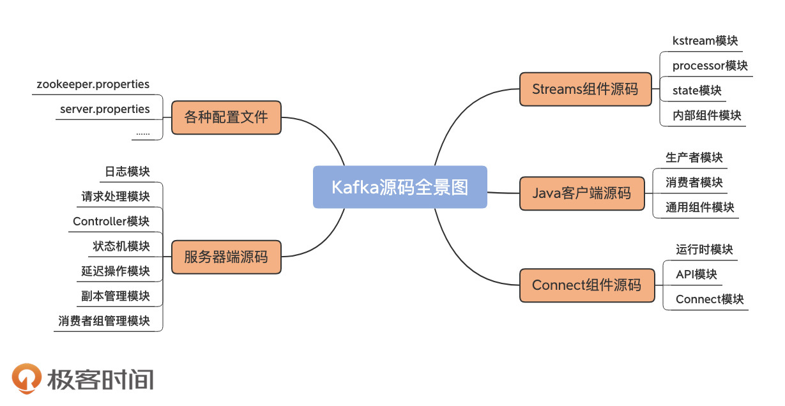
从功能上讲，Kafka源码分为四大模块。
- 服务器端源码：实现Kafka架构和各类优秀特性的基础。
- Java客户端源码：定义了与Broker端的交互机制，以及通用的Broker端组件支撑代码。
- Connect源码：用于实现Kafka与外部系统的高性能数据传输。
- Streams源码：用于实现实时的流处理功能。
可以看到，服务器端源码是理解Kafka底层架构特别是系统运行原理的基础，其他三个模块的源码都对它有着强烈的依赖。因此，Kafka最最精华的代码，当属服务器端代码无疑！我们学习这部分代码的性价比是最高的。
专栏是如何设计的？
那，我们就抓紧开始吧。在这个专栏里，我基于自己对服务器端源码结构的理解，特意为你精选了下面这些源码。
这些源码全都是极具价值的组件，也是很多实际线上问题的“高发重灾区”。比如，Kafka日志段的代码逻辑就是很多线上异常的“始作俑者”。掌握这些源码能够大大地缩短你定位问题花费的时间。
我把服务器端源码按照功能划分了7个模块，每个模块会进一步划开多个子部分，详细地给出各个组件级的源码分析。你可以看下这张思维导图的重点介绍。
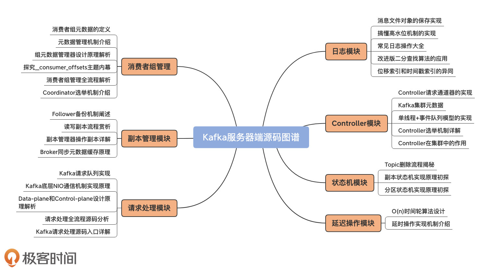
丰富的流程图+细粒度讲解
在读源码时，我们最常犯两种错误，一种是直接深入最底层的一行行源码之中，陷入细枝末节；另一种是过于粗粒度地学习，学了跟没学没有什么区别。
为了帮助你高效地学习，我摒弃了贪多求全的源码讲解方式，而是采用“流程图+代码注释”相结合的方式，对重点内容进行细粒度讲解，还会结合我的实战经验，给你划重点。
在阅读源码之前，你可以借助图片对各个方法的实现逻辑有个大致的了解。对于重点内容，我会用详细的注释形式帮助你理解。同时，我还绘制了思维导图，帮你总结回顾。
真实的案例讲解，解决你的实战问题
很多人虽然也读源码，却不懂源码可以应用到什么场景、解决什么问题。事实上，我在生产环境中碰到的很多问题，都是没办法单纯依赖官方文档或搜索引擎顺利解决的。只有阅读源码，切实掌握了实现原理，才能找到解决方案。
为了帮你学以致用，我会在专栏里给你分享大量的真实案例，既帮助你提前规避陷阱，也帮你积累一些常见问题的解决方案，有一些甚至是不见诸于文档的“武林秘籍”。
传递社区的最新发展动向
这是专栏最有意思的一部分。我们学习的Kafka源码每天都在不断地演进着，要想玩转Kafka，就必须要知道社区未来的更新计划以及重大功能改进。
我会针对一些具体的主题，给你分享最新的动态资讯。我希望展现在你面前的不再是一行行冰冷的代码，而是一个生动活泼的社区形象，让你真正有参与到社区的感觉。不要小看这种感觉，有的时候，它甚至是支撑你走完源码学习之路的最强大动力。
课外拓展
除此之外，我还会跟你分享一些延伸内容。比如成为Apache Kafka社区的代码贡献者的具体方法、实用的学习资料、经典的面试题讲解等，希望你也不要错过这部分的内容。

最后，我还想再和你说说Scala语言的问题。毕竟，我们将要一起学习的Broker端源码是完全基于Scala的。
不过，这部分源码并没有用到Scala多少高大上的语法特性。如果你有Java语言基础，就更不用担心语言的问题了，因为它们有很多特性非常相似。
即使你不熟悉Scala语言也没关系。你不需要完整、系统地学习这门语言，只要能简单了解基本的函数式编程风格，以及它的几个关键特性，比如集合遍历、模式匹配等，就足够了。
当然了，为了不影响你理解专栏内涉及的源码，我会在“导读”这节课里带你深入了解下Scala语言。同时，在专栏里遇到Scala比较难的语言特性时，我也会和你具体解释。所以，你完全不用担心语言的问题。
好了，现在，我们就正式开启Apache Kafka源码分析学习之旅吧。正所谓：“日拱一卒无有尽，功不唐捐终入海。”阅读源码是个“苦差事”，希望你别轻易放弃。毕竟，掌握了源码，你就走在了很多人的前面。
最后，我很荣幸能够和你在这里相遇，一起学习交流，也欢迎你给我留言，说说你对Kafka源码分析的看法和疑问。
00 重磅加餐 带你快速入门Scala语言
你好，我是胡夕。最近，我在留言区看到一些同学反馈说“Scala语言不太容易理解”，于是，我决定临时加一节课，给你讲一讲Scala语言的基础语法，包括变量和函数的定义、元组的写法、函数式编程风格的循环语句的写法、它独有的case类和强大的match模式匹配功能，以及Option对象的用法。
学完这节课以后，相信你能够在较短的时间里掌握这些实用的Scala语法，特别是Kafka源码中用到的Scala语法特性，彻底扫清源码阅读路上的编程语言障碍。
Java函数式编程
就像我在开篇词里面说的，你不熟悉Scala语言其实并没有关系，但你至少要对Java 8的函数式编程有一定的了解，特别是要熟悉Java 8 Stream的用法。
倘若你之前没有怎么接触过Lambda表达式和Java 8 Stream，我给你推荐一本好书：《Java 8实战》。这本书通过大量的实例深入浅出地讲解了Lambda表达式、Stream以及函数式编程方面的内容，你可以去读一读。
现在，我就给你分享一个实际的例子，借着它开始我们今天的所有讨论。
TopicPartition是Kafka定义的主题分区类，它建模的是Kafka主题的分区对象，其关键代码如下：
public final class TopicPartition implements Serializable {
private final int partition;
private final String topic;
// 其他字段和方法......
}
对于任何一个分区而言，一个TopicPartition实例最重要的就是topic和partition字段，即Kafka的主题和分区号。假设给定了一组分区对象List < TopicPartition > ，我想要找出分区数大于3且以“test”开头的所有主题列表，我应该怎么写这段Java代码呢？你可以先思考一下，然后再看下面的答案。
我先给出Java 8 Stream风格的答案：
// 假设分区对象列表变量名是list
Set<String> topics = list.stream()
.filter(tp -> tp.topic().startsWith("test-"))
.collect(Collectors.groupingBy(TopicPartition::topic, Collectors.counting()))
.entrySet().stream()
.filter(entry -> entry.getValue() > 3)
.map(entry -> entry.getKey()).collect(Collectors.toSet());
这是典型的Java 8 Stream代码，里面大量使用了诸如filter、map等操作算子,以及Lambda表达式，这让代码看上去一气呵成，而且具有很好的可读性。
我从第3行开始解释下每一行的作用：第3行的filter方法调用实现了筛选以“test”开头主题的功能；第4行是运行collect方法，同时指定使用groupingBy统计分区数并按照主题进行分组，进而生成一个Map对象；第5~7行是提取出这个Map对象的所有
其实，给出这个例子，我只是想说明，Scala语言的编写风格和Java 8 Stream有很多相似之处：一方面，代码中有大量的filter、map，甚至是flatMap等操作算子；另一方面，代码的风格也和Java中的Lambda表达式写法类似。
如果你不信的话，我们来看下Kafka中计算消费者Lag的getLag方法代码：
private def getLag(offset: Option[Long], logEndOffset: Option[Long]): Option[Long] =
offset.filter(_ != -1).flatMap(offset => logEndOffset.map(_ - offset))
你看，这里面也有filter和map。是不是和上面的Java代码有异曲同工之妙？
如果你现在还看不懂这个方法的代码是什么意思，也不用着急，接下来我会带着你一步一步来学习。我相信，学完了这节课以后，你一定能自主搞懂getLag方法的源码含义。getLag代码是非常典型的Kafka源码，一旦你熟悉了这种编码风格，后面一定可以举一反三，一举攻克其他的源码阅读难题。
我们先从Scala语言中的变量（Variable）开始说起。毕竟，不管是学习任何编程语言，最基础的就是先搞明白变量是如何定义的。
定义变量和函数
Scala有两类变量：val和var。val等同于Java中的final变量，一旦被初始化，就不能再被重新赋值了。相反地，var是非final变量，可以重复被赋值。我们看下这段代码：
scala> val msg = "hello, world"
msg: String = hello, world
scala> msg = "another string"
<console>:12: error: reassignment to val
msg = "another string"
scala> var a:Long = 1L
a: Long = 1
scala> a = 2
a: Long = 2
很直观，对吧？msg是一个val，a是一个var，所以msg不允许被重复赋值，而a可以。我想提醒你的是，变量后面可以跟“冒号+类型”，以显式标注变量的类型。比如，这段代码第6行的“：Long”，就是告诉我们变量a是一个Long型。当然，如果你不写“：Long”，也是可以的，因为Scala可以通过后面的值“1L”自动判断出a的类型。
不过，很多时候，显式标注上变量类型，可以让代码有更好的可读性和可维护性。
下面，我们来看下Scala中的函数如何定义。我以获取两个整数最大值的Max函数为例，进行说明，代码如下：
def max(x: Int, y: Int): Int = {
if (x > y) x
else y
}
首先，def关键字表示这是一个函数。max是函数名，括号中的x和y是函数输入参数，它们都是Int类型的值。结尾的“Int =”组合表示max函数返回一个整数。
其次，max代码使用if语句比较x和y的大小，并返回两者中较大的值，但是它没有使用所谓的return关键字，而是直接写了x或y。在Scala中，函数体具体代码块最后一行的值将被作为函数结果返回。在这个例子中，if分支代码块的最后一行是x，因此，此路分支返回x。同理，else分支返回y。
讲完了max函数，我再用Kafka源码中的一个真实函数，来帮你进一步地理解Scala函数：
def deleteIndicesIfExist(
// 这里参数suffix的默认值是""，即空字符串
// 函数结尾处的Unit类似于Java中的void关键字，表示该函数不返回任何结果
baseFile: File, suffix: String = ""): Unit = {
info(s"Deleting index files with suffix $suffix for baseFile $baseFile")
val offset = offsetFromFile(baseFile)
Files.deleteIfExists(Log.offsetIndexFile(dir, offset, suffix).toPath)
Files.deleteIfExists(Log.timeIndexFile(dir, offset, suffix).toPath)
Files.deleteIfExists(Log.transactionIndexFile(dir, offset, suffix).toPath)
}
和上面的max函数相比，这个函数有两个额外的语法特性需要你了解。
第一个特性是参数默认值，这是Java不支持的。这个函数的参数suffix默认值是空字符串，因此，以下两种调用方式都是合法的：
deleteIndicesIfExist(baseFile) // OK
deleteIndicesIfExist(baseFile, ".swap") // OK
第二个特性是该函数的返回值Unit。Scala的Unit类似于Java的void，因此，deleteIndicesIfExist函数的返回值是Unit类型，表明它仅仅是执行一段逻辑代码，不需要返回任何结果。
定义元组（Tuple）
接下来，我们来看下Scala中的元组概念。元组是承载数据的容器，一旦被创建，就不能再被更改了。元组中的数据可以是不同数据类型的。定义和访问元组的方法很简单，请看下面的代码：
scala> val a = (1, 2.3, "hello", List(1,2,3)) // 定义一个由4个元素构成的元组，每个元素允许是不同的类型
a: (Int, Double, String, List[Int]) = (1,2.3,hello,List(1, 2, 3))
scala> a._1 // 访问元组的第一个元素
res0: Int = 1
scala> a._2 // 访问元组的第二个元素
res1: Double = 2.3
scala> a._3 // 访问元组的第三个元素
res2: String = hello
scala> a._4 // 访问元组的第四个元素
res3: List[Int] = List(1, 2, 3)
总体上而言，元组的用法简单而优雅。Kafka源码中也有很多使用元组的例子，比如：
def checkEnoughReplicasReachOffset(requiredOffset: Long): (Boolean, Errors) = { // 返回(Boolean，Errors)类型的元组
......
if (minIsr <= curInSyncReplicaIds.size) {
......
(true, Errors.NONE)
} else
(false, Errors.NOT_ENOUGH_REPLICAS_AFTER_APPEND)
}
checkEnoughReplicasReachOffset方法返回一个(Boolean, Errors)类型的元组，即元组的第一个元素或字段是Boolean类型，第二个元素是Kafka自定义的Errors类型。
该方法会判断某分区ISR中副本的数量，是否大于等于所需的最小ISR副本数，如果是，就返回（true, Errors.NONE）元组，否则返回（false，Errors.NOT_ENOUGH_REPLICAS_AFTER_APPEND）。目前，你不必理会代码中minIsr或curInSyncReplicaIds的含义，仅仅掌握Kafka源码中的元组用法就够了。
循环写法
下面我们来看下Scala中循环的写法。我们常见的循环有两种写法：命令式编程方式和函数式编程方式。我们熟悉的是第一种，比如下面的for循环代码：
scala> val list = List(1, 2, 3, 4, 5)
list: List[Int] = List(1, 2, 3, 4, 5)
scala> for (element <- list) println(element)
1
2
3
4
5
Scala支持的函数式编程风格的循环，类似于下面的这种代码：
scala> list.foreach(e => println(e))
// 省略输出......
scala> list.foreach(println)
// 省略输出......
特别是代码中的第二种写法，会让代码写得异常简洁。我用一段真实的Kafka源码再帮你加强下记忆。它取自SocketServer组件中stopProcessingRequests方法，主要目的是让Broker停止请求和新入站TCP连接的处理。SocketServer组件是实现Kafka网络通信的重要组件，后面我会花3节课的时间专门讨论它。这里，咱们先来学习下这段明显具有函数式风格的代码：
// dataPlaneAcceptors:ConcurrentHashMap<Endpoint, Acceptor>对象
dataPlaneAcceptors.asScala.values.foreach(_.initiateShutdown())
这一行代码首先调用asScala方法，将Java的ConcurrentHashMap转换成Scala语言中的concurrent.Map对象；然后获取它保存的所有Acceptor线程，通过foreach循环，调用每个Acceptor对象的initiateShutdown方法。如果这个逻辑用命令式编程来实现，至少要几行甚至是十几行才能完成。
case类
在Scala中，case类与普通类是类似的，只是它具有一些非常重要的不同点。Case类非常适合用来表示不可变数据。同时，它最有用的一个特点是，case类自动地为所有类字段定义Getter方法，这样能省去很多样本代码。我举个例子说明一下。
如果我们要编写一个类表示平面上的一个点，Java代码大概长这个样子：
public final class Point {
private int x;
private int y;
public Point(int x, int y) {
this.x = x;
this.y = y;
}
// setter methods......
// getter methods......
}
我就不列出完整的Getter和Setter方法了，写过Java的你一定知道这些样本代码。但如果用Scala的case类，只需要写一行代码就可以了：
case class Point(x:Int, y: Int) // 默认写法。不能修改x和y
case class Point(var x: Int, var y: Int) // 支持修改x和y
Scala会自动地帮你创建出x和y的Getter方法。默认情况下，x和y不能被修改，如果要支持修改，你要采用上面代码中第二行的写法。
模式匹配
有了case类的基础，接下来我们就可以学习下Scala中强大的模式匹配功能了。
和Java中switch仅仅只能比较数值和字符串相比，Scala中的match要强大得多。我先来举个例子：
def describe(x: Any) = x match {
case 1 => "one"
case false => "False"
case "hi" => "hello, world!"
case Nil => "the empty list"
case e: IOException => "this is an IOException"
case s: String if s.length > 10 => "a long string"
case _ => "something else"
}
这个函数的x是Any类型，这相当于Java中的Object类型，即所有类的父类。注意倒数第二行的“case _”的写法，它是用来兜底的。如果上面的所有case分支都不匹配，那就进入到这个分支。另外，它还支持一些复杂的表达式，比如倒数第三行的case分支，表示x是字符串类型，而且x的长度超过10的话，就进入到这个分支。
要知道，Java在JDK 14才刚刚引入这个相同的功能，足见Scala语法的强大和便捷。
Option对象
最后，我再介绍一个小的语法特性或语言特点：Option对象。
实际上，Java也引入了类似的类：Optional。根据我的理解，不论是Scala中的Option，还是Java中的Optional，都是用来帮助我们更好地规避NullPointerException异常的。
Option表示一个容器对象，里面可能装了值，也可能没有装任何值。由于是容器，因此一般都是这样的写法：Option[Any]。中括号里面的Any就是上面说到的Any类型，它能是任何类型。如果值存在的话，就可以使用Some(x)来获取值或给值赋值，否则就使用None来表示。我用一段代码帮助你理解：
scala> val keywords = Map("scala" -> "option", "java" -> "optional") // 创建一个Map对象
keywords: scala.collection.immutable.Map[String,String] = Map(scala -> option, java -> optional)
scala> keywords.get("java") // 获取key值为java的value值。由于值存在故返回Some(optional)
res24: Option[String] = Some(optional)
scala> keywords.get("C") // 获取key值为C的value值。由于不存在故返回None
res23: Option[String] = None
Option对象还经常与模式匹配语法一起使用，以实现不同情况下的处理逻辑。比如，Option对象有值和没有值时分别执行什么代码。具体写法你可以参考下面这段代码：
def display(game: Option[String]) = game match {
case Some(s) => s
case None => "unknown"
}
scala> display(Some("Heroes 3"))
res26: String = Heroes 3
scala> display(Some("StarCraft"))
res27: String = StarCraft
scala> display(None)
res28: String = unknown
总结
今天，我们专门花了些时间快速地学习了一下Scala语言的语法，这些语法能够帮助你更快速地上手Kafka源码的学习。现在，让我们再来看下这节课刚开始时我提到的getLag方法源码，你看看现在是否能够说出它的含义。我再次把它贴出来：
private def getLag(offset: Option[Long], logEndOffset: Option[Long]): Option[Long] =
offset.filter(_ != -1).flatMap(offset => logEndOffset.map(_ - offset))
现在，你应该知道了，它是一个函数，接收两个类型为Option[Long]的参数，同时返回一个Option[Long]的结果。代码逻辑很简单，首先判断offset是否有值且不能是-1。这些都是在filter函数中完成的，之后调用flatMap方法计算logEndOffset值与offset的差值，最后返回这个差值作为Lag。
这节课结束以后，语言问题应该不再是你学习源码的障碍了，接下来，我们就可以继续专心地学习源码了。借着这个机会，我还想跟你多说几句。
很多时候，我们都以为，要有足够强大的毅力才能把源码学习坚持下去，但实际上，毅力是在你读源码的过程中培养起来的。
考虑到源码并不像具体技术本身那样容易掌握，我力争用最清晰易懂的方式来讲这门课。所以，我希望你每天都能花一点点时间跟着我一起学习，我相信，到结课的时候，你不仅可以搞懂Kafka Broker端源码，还能提升自己的毅力。而毅力和执行力的提升，可能比技术本身的提升还要弥足珍贵。
另外，我还想给你分享一个小技巧：想要养成每天阅读源码的习惯，你最好把目标拆解得足够小。人的大脑都是有惰性的，比起“我每天要读1000行源码”，它更愿意接受“每天只读20行”。你可能会说，每天读20行，这也太少了吧？其实不是的。只要你读了20行源码，你就一定能再多读一些，“20行”这个小目标只是为了促使你愿意开始去做这件事情。而且，即使你真的只读了20行，那又怎样？读20行总好过1行都没有读，对吧？
当然了，阅读源码经常会遇到一种情况，那就是读不懂某部分的代码。没关系，读不懂的代码，你可以选择先跳过。
如果你是个追求完美的人，那么对于读不懂的代码，我给出几点建议：
- 多读几遍。不要小看这个朴素的建议。有的时候，我们的大脑是很任性的，只让它看一遍代码，它可能“傲娇地表示不理解”，但你多给它看几遍，也许就恍然大悟了。
- 结合各种资料来学习。比如，社区或网上关于这部分代码的设计文档、源码注释或源码测试用例等。尤其是搞懂测试用例，往往是让我们领悟代码精神最快捷的办法了。
总之，阅读源码是一项长期的工程，不要幻想有捷径或一蹴而就，微小积累会引发巨大改变，我们一起加油。
01 日志段：保存消息文件的对象是怎么实现的？
你好，我是胡夕。
今天，我们开始学习Kafka源代码分析的第一模块：日志（Log）、日志段（LogSegment）以及索引（Index）源码。
日志段及其相关代码是Kafka服务器源码中最为重要的组件代码之一。你可能会非常关心，在Kafka中，消息是如何被保存和组织在一起的。毕竟，不管是学习任何消息引擎，弄明白消息建模方式都是首要的问题。因此，你非常有必要学习日志段这个重要的子模块的源码实现。
除此之外，了解日志段也有很多实际意义，比如说，你一定对Kafka底层日志文件00000000000000012345.log的命名感到很好奇。学过日志段之后，我相信这个问题一定会迎刃而解的。
今天，我会带你详细看下日志段部分的源码。不过在此之前，你需要先了解一下Kafka的日志结构。
Kafka日志结构概览
Kafka日志在磁盘上的组织架构如下图所示：

日志是Kafka服务器端代码的重要组件之一，很多其他的核心组件都是以日志为基础的，比如后面要讲到的状态管理机和副本管理器等。
总的来说，Kafka日志对象由多个日志段对象组成，而每个日志段对象会在磁盘上创建一组文件，包括消息日志文件（.log）、位移索引文件（.index）、时间戳索引文件（.timeindex）以及已中止（Aborted）事务的索引文件（.txnindex）。当然，如果你没有使用Kafka事务，已中止事务的索引文件是不会被创建出来的。图中的一串数字0是该日志段的起始位移值（Base Offset），也就是该日志段中所存的第一条消息的位移值。
一般情况下，一个Kafka主题有很多分区，每个分区就对应一个Log对象，在物理磁盘上则对应于一个子目录。比如你创建了一个双分区的主题test-topic，那么，Kafka在磁盘上会创建两个子目录：test-topic-0和test-topic-1。而在服务器端，这就是两个Log对象。每个子目录下存在多组日志段，也就是多组.log、.index、.timeindex文件组合，只不过文件名不同，因为每个日志段的起始位移不同。
日志段代码解析
阅读日志段源码是很有必要的，因为日志段是Kafka保存消息的最小载体。也就是说，消息是保存在日志段中的。然而，官网对于日志段的描述少得可怜，以至于很多人对于这么重要的概念都知之甚少。
但是，不熟悉日志段的话，如果在生产环境出现相应的问题，我们是没有办法快速找到解决方案的。我跟你分享一个真实案例。
我们公司之前碰到过一个问题，当时，大面积日志段同时间切分，导致瞬时打满磁盘I/O带宽。对此，所有人都束手无策，最终只能求助于日志段源码。
最后，我们在LogSegment的shouldRoll方法中找到了解决方案：设置Broker端参数log.roll.jitter.ms值大于0，即通过给日志段切分执行时间加一个扰动值的方式，来避免大量日志段在同一时刻执行切分动作，从而显著降低磁盘I/O。
后来在复盘的时候，我们一致认为，阅读LogSegment源码是非常正确的决定。否则，单纯查看官网对该参数的说明，我们不一定能够了解它的真实作用。那，log.roll.jitter.ms参数的具体作用是啥呢？下面咱们说日志段的时候，我会给你详细解释下。
那话不多说，现在我们就来看一下日志段源码。我会重点给你讲一下日志段类声明、append方法、read方法和recover方法。
你首先要知道的是，日志段源码位于 Kafka 的 core 工程下，具体文件位置是 core/src/main/scala/kafka/log/LogSegment.scala。实际上，所有日志结构部分的源码都在 core 的 kafka.log 包下。
该文件下定义了三个 Scala 对象：
- LogSegment class；
- LogSegment object；
- LogFlushStats object。LogFlushStats 结尾有个 Stats，它是做统计用的，主要负责为日志落盘进行计时。
我们主要关心的是 LogSegment class 和 object。在 Scala 语言里，在一个源代码文件中同时定义相同名字的 class 和 object 的用法被称为伴生（Companion）。Class 对象被称为伴生类，它和 Java 中的类是一样的；而 Object 对象是一个单例对象，用于保存一些静态变量或静态方法。如果用 Java 来做类比的话，我们必须要编写两个类才能实现，这两个类也就是LogSegment 和 LogSegmentUtils。在 Scala 中，你直接使用伴生就可以了。
对了，值得一提的是，Kafka 中的源码注释写得非常详细。我不打算把注释也贴出来，但我特别推荐你要读一读源码中的注释。比如，今天我们要学习的日志段文件开头的一大段注释写得就非常精彩。我截一个片段让你感受下：
A segment of the log. Each segment has two components: a log and an index. The log is a FileRecords containing the actual messages. The index is an OffsetIndex that maps from logical offsets to physical file positions. Each segment has a base offset which is an offset <= the least offset of any message in this segment and > any offset in any previous segment.
这段文字清楚地说明了每个日志段由两个核心组件构成：日志和索引。当然，这里的索引泛指广义的索引文件。另外，这段注释还给出了一个重要的事实：每个日志段都有一个起始位移值（Base Offset），而该位移值是此日志段所有消息中最小的位移值，同时，该值却又比前面任何日志段中消息的位移值都大。看完这个注释，我们就能够快速地了解起始位移值在日志段中的作用了。
日志段类声明
下面，我分批次给出比较关键的代码片段，并对其进行解释。首先，我们看下 LogSegment 的定义：
class LogSegment private[log] (val log: FileRecords,
val lazyOffsetIndex: LazyIndex[OffsetIndex],
val lazyTimeIndex: LazyIndex[TimeIndex],
val txnIndex: TransactionIndex,
val baseOffset: Long,
val indexIntervalBytes: Int,
val rollJitterMs: Long,
val time: Time) extends Logging { … }
就像我前面说的，一个日志段包含消息日志文件、位移索引文件、时间戳索引文件、已中止事务索引文件等。这里的 FileRecords 就是实际保存 Kafka 消息的对象。专栏后面我将专门讨论 Kafka 是如何保存具体消息的，也就是 FileRecords 及其家族的实现方式。同时，我还会给你介绍一下社区在持久化消息这块是怎么演进的，你一定不要错过那部分的内容。
下面的 lazyOffsetIndex、lazyTimeIndex 和 txnIndex 分别对应于刚才所说的 3 个索引文件。不过，在实现方式上，前两种使用了延迟初始化的原理，降低了初始化时间成本。后面我们在谈到索引的时候再详细说。
每个日志段对象保存自己的起始位移 baseOffset——这是非常重要的属性！事实上，你在磁盘上看到的文件名就是baseOffset的值。每个LogSegment对象实例一旦被创建，它的起始位移就是固定的了，不能再被更改。
indexIntervalBytes 值其实就是 Broker 端参数 log.index.interval.bytes 值，它控制了日志段对象新增索引项的频率。默认情况下，日志段至少新写入 4KB 的消息数据才会新增一条索引项。而 rollJitterMs 是日志段对象新增倒计时的“扰动值”。因为目前 Broker 端日志段新增倒计时是全局设置，这就是说，在未来的某个时刻可能同时创建多个日志段对象，这将极大地增加物理磁盘 I/O 压力。有了 rollJitterMs 值的干扰，每个新增日志段在创建时会彼此岔开一小段时间，这样可以缓解物理磁盘的 I/O 负载瓶颈。
至于最后的 time 参数，它就是用于统计计时的一个实现类，在 Kafka 源码中普遍出现，我就不详细展开讲了。
下面我来说一些重要的方法。
对于一个日志段而言，最重要的方法就是写入消息和读取消息了，它们分别对应着源码中的 append 方法和 read 方法。另外，recover方法同样很关键，它是Broker重启后恢复日志段的操作逻辑。
append方法
我们先来看append 方法，了解下写入消息的具体操作。
def append(largestOffset: Long,
largestTimestamp: Long,
shallowOffsetOfMaxTimestamp: Long,
records: MemoryRecords): Unit = {
if (records.sizeInBytes > 0) {
trace(s"Inserting ${records.sizeInBytes} bytes at end offset $largestOffset at position ${log.sizeInBytes} " +
s"with largest timestamp $largestTimestamp at shallow offset $shallowOffsetOfMaxTimestamp")
val physicalPosition = log.sizeInBytes()
if (physicalPosition == 0)
rollingBasedTimestamp = Some(largestTimestamp)
ensureOffsetInRange(largestOffset)
// append the messages
val appendedBytes = log.append(records)
trace(s"Appended $appendedBytes to ${log.file} at end offset $largestOffset")
// Update the in memory max timestamp and corresponding offset.
if (largestTimestamp > maxTimestampSoFar) {
maxTimestampSoFar = largestTimestamp
offsetOfMaxTimestampSoFar = shallowOffsetOfMaxTimestamp
}
// append an entry to the index (if needed)
if (bytesSinceLastIndexEntry > indexIntervalBytes) {
offsetIndex.append(largestOffset, physicalPosition)
timeIndex.maybeAppend(maxTimestampSoFar, offsetOfMaxTimestampSoFar)
bytesSinceLastIndexEntry = 0
}
bytesSinceLastIndexEntry += records.sizeInBytes
}
}
append 方法接收 4 个参数，分别表示待写入消息批次中消息的最大位移值、最大时间戳、最大时间戳对应消息的位移以及真正要写入的消息集合。下面这张图展示了 append 方法的完整执行流程：

第一步：
在源码中，首先调用 log.sizeInBytes 方法判断该日志段是否为空，如果是空的话， Kafka 需要记录要写入消息集合的最大时间戳，并将其作为后面新增日志段倒计时的依据。
第二步：
代码调用 ensureOffsetInRange 方法确保输入参数最大位移值是合法的。那怎么判断是不是合法呢？标准就是看它与日志段起始位移的差值是否在整数范围内，即 largestOffset - baseOffset的值是不是介于 [0，Int.MAXVALUE] 之间。在极个别的情况下，这个差值可能会越界，这时，append 方法就会抛出异常，阻止后续的消息写入。一旦你碰到这个问题，你需要做的是升级你的 Kafka 版本，因为这是由已知的 Bug 导致的。
第三步：
待这些做完之后，append 方法调用 FileRecords 的 append 方法执行真正的写入。前面说过了，专栏后面我们会详细介绍 FileRecords 类。这里你只需要知道它的工作是将内存中的消息对象写入到操作系统的页缓存就可以了。
第四步：
再下一步，就是更新日志段的最大时间戳以及最大时间戳所属消息的位移值属性。每个日志段都要保存当前最大时间戳信息和所属消息的位移信息。
还记得 Broker 端提供定期删除日志的功能吗？比如我只想保留最近 7 天的日志，没错，当前最大时间戳这个值就是判断的依据；而最大时间戳对应的消息的位移值则用于时间戳索引项。虽然后面我会详细介绍，这里我还是稍微提一下：时间戳索引项保存时间戳与消息位移的对应关系。在这步操作中，Kafka会更新并保存这组对应关系。
第五步：
append 方法的最后一步就是更新索引项和写入的字节数了。我在前面说过，日志段每写入 4KB 数据就要写入一个索引项。当已写入字节数超过了 4KB 之后，append 方法会调用索引对象的 append 方法新增索引项，同时清空已写入字节数，以备下次重新累积计算。
read 方法
好了，append 方法我就解释完了。下面我们来看read方法，了解下读取日志段的具体操作。
def read(startOffset: Long,
maxSize: Int,
maxPosition: Long = size,
minOneMessage: Boolean = false): FetchDataInfo = {
if (maxSize < 0)
throw new IllegalArgumentException(s"Invalid max size $maxSize for log read from segment $log")
val startOffsetAndSize = translateOffset(startOffset)
// if the start position is already off the end of the log, return null
if (startOffsetAndSize == null)
return null
val startPosition = startOffsetAndSize.position
val offsetMetadata = LogOffsetMetadata(startOffset, this.baseOffset, startPosition)
val adjustedMaxSize =
if (minOneMessage) math.max(maxSize, startOffsetAndSize.size)
else maxSize
// return a log segment but with zero size in the case below
if (adjustedMaxSize == 0)
return FetchDataInfo(offsetMetadata, MemoryRecords.EMPTY)
// calculate the length of the message set to read based on whether or not they gave us a maxOffset
val fetchSize: Int = min((maxPosition - startPosition).toInt, adjustedMaxSize)
FetchDataInfo(offsetMetadata, log.slice(startPosition, fetchSize),
firstEntryIncomplete = adjustedMaxSize < startOffsetAndSize.size)
}
read 方法接收 4 个输入参数。
- startOffset：要读取的第一条消息的位移；
- maxSize：能读取的最大字节数；
- maxPosition ：能读到的最大文件位置；
- minOneMessage：是否允许在消息体过大时至少返回第一条消息。
前3个参数的含义很好理解，我重点说下第 4 个。当这个参数为 true 时，即使出现消息体字节数超过了 maxSize 的情形，read 方法依然能返回至少一条消息。引入这个参数主要是为了确保不出现消费饿死的情况。
下图展示了 read 方法的完整执行逻辑：
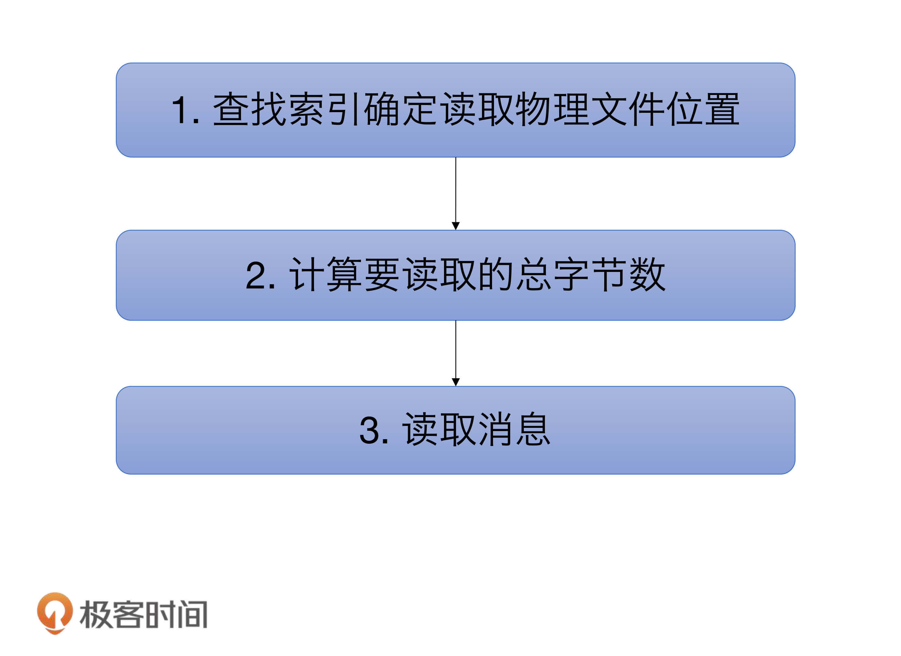
逻辑很简单，我们一步步来看下。
第一步是调用 translateOffset 方法定位要读取的起始文件位置 （startPosition）。输入参数 startOffset 仅仅是位移值，Kafka 需要根据索引信息找到对应的物理文件位置才能开始读取消息。
待确定了读取起始位置，日志段代码需要根据这部分信息以及 maxSize 和 maxPosition 参数共同计算要读取的总字节数。举个例子，假设 maxSize=100，maxPosition=300，startPosition=250，那么 read 方法只能读取 50 字节，因为 maxPosition - startPosition = 50。我们把它和maxSize参数相比较，其中的最小值就是最终能够读取的总字节数。
最后一步是调用 FileRecords 的 slice 方法，从指定位置读取指定大小的消息集合。
recover 方法
除了append 和read 方法，LogSegment 还有一个重要的方法需要我们关注，它就是 recover方法，用于恢复日志段。
下面的代码是 recover 方法源码。什么是恢复日志段呢？其实就是说， Broker 在启动时会从磁盘上加载所有日志段信息到内存中，并创建相应的 LogSegment 对象实例。在这个过程中，它需要执行一系列的操作。
def recover(producerStateManager: ProducerStateManager, leaderEpochCache: Option[LeaderEpochFileCache] = None): Int = {
offsetIndex.reset()
timeIndex.reset()
txnIndex.reset()
var validBytes = 0
var lastIndexEntry = 0
maxTimestampSoFar = RecordBatch.NO_TIMESTAMP
try {
for (batch <- log.batches.asScala) {
batch.ensureValid()
ensureOffsetInRange(batch.lastOffset)
// The max timestamp is exposed at the batch level, so no need to iterate the records
if (batch.maxTimestamp > maxTimestampSoFar) {
maxTimestampSoFar = batch.maxTimestamp
offsetOfMaxTimestampSoFar = batch.lastOffset
}
// Build offset index
if (validBytes - lastIndexEntry > indexIntervalBytes) {
offsetIndex.append(batch.lastOffset, validBytes)
timeIndex.maybeAppend(maxTimestampSoFar, offsetOfMaxTimestampSoFar)
lastIndexEntry = validBytes
}
validBytes += batch.sizeInBytes()
if (batch.magic >= RecordBatch.MAGIC_VALUE_V2) {
leaderEpochCache.foreach { cache =>
if (batch.partitionLeaderEpoch > 0 && cache.latestEpoch.forall(batch.partitionLeaderEpoch > _))
cache.assign(batch.partitionLeaderEpoch, batch.baseOffset)
}
updateProducerState(producerStateManager, batch)
}
}
} catch {
case e@ (_: CorruptRecordException | _: InvalidRecordException) =>
warn("Found invalid messages in log segment %s at byte offset %d: %s. %s"
.format(log.file.getAbsolutePath, validBytes, e.getMessage, e.getCause))
}
val truncated = log.sizeInBytes - validBytes
if (truncated > 0)
debug(s"Truncated $truncated invalid bytes at the end of segment ${log.file.getAbsoluteFile} during recovery")
log.truncateTo(validBytes)
offsetIndex.trimToValidSize()
// A normally closed segment always appends the biggest timestamp ever seen into log segment, we do this as well.
timeIndex.maybeAppend(maxTimestampSoFar, offsetOfMaxTimestampSoFar, skipFullCheck = true)
timeIndex.trimToValidSize()
truncated
}
我依然使用一张图来说明 recover 的处理逻辑：
recover 开始时，代码依次调用索引对象的 reset 方法清空所有的索引文件，之后会开始遍历日志段中的所有消息集合或消息批次（RecordBatch）。对于读取到的每个消息集合，日志段必须要确保它们是合法的，这主要体现在两个方面：
- 该集合中的消息必须要符合 Kafka 定义的二进制格式；
- 该集合中最后一条消息的位移值不能越界，即它与日志段起始位移的差值必须是一个正整数值。
校验完消息集合之后，代码会更新遍历过程中观测到的最大时间戳以及所属消息的位移值。同样，这两个数据用于后续构建索引项。再之后就是不断累加当前已读取的消息字节数，并根据该值有条件地写入索引项。最后是更新事务型Producer的状态以及Leader Epoch缓存。不过，这两个并不是理解Kafka日志结构所必需的组件，因此，我们可以忽略它们。
遍历执行完成后，Kafka 会将日志段当前总字节数和刚刚累加的已读取字节数进行比较，如果发现前者比后者大，说明日志段写入了一些非法消息，需要执行截断操作，将日志段大小调整回合法的数值。同时， Kafka 还必须相应地调整索引文件的大小。把这些都做完之后，日志段恢复的操作也就宣告结束了。
总结
今天，我们对Kafka日志段源码进行了重点的分析，包括日志段的append方法、read方法和recover方法。
- append方法：我重点分析了源码是如何写入消息到日志段的。你要重点关注一下写操作过程中更新索引的时机是如何设定的。
- read方法：我重点分析了源码底层读取消息的完整流程。你要关注下Kafka计算待读取消息字节数的逻辑，也就是maxSize、maxPosition和startOffset是如何共同影响read方法的。
- recover方法：这个操作会读取日志段文件，然后重建索引文件。再强调一下，这个操作在执行过程中要读取日志段文件。因此，如果你的环境上有很多日志段文件，你又发现Broker重启很慢，那你现在就知道了，这是因为Kafka在执行recover的过程中需要读取大量的磁盘文件导致的。你看，这就是我们读取源码的收获。

这三个方法是日志段对象最重要的功能。你一定要仔细阅读它们，尽量做到对源码中每行代码的作用都了然于心。没有什么代码是读一遍不能理解的，如果有，那就再多读几遍。另外，我希望你特别关注下append和read方法，它们将是后面我们讨论日志对象时重点会用到的两个方法。毕竟，读写日志是Kafka最常用的操作，而日志读取底层调用的就是日志段的这两个方法。
课后讨论
如果你查看日志段源码的话，你会发现，还有一个比较重要的方法我没有提到，那就是truncateTo方法，这个方法会将日志段中的数据强制截断到指定的位移处。该方法只有20几行代码，我希望你可以自己去阅读下，然后思考这样一个问题：如果指定的位移值特别特别大，以至于超过了日志段本身保存的最大位移值，该方法对执行效果是怎么样的？
欢迎你在留言区畅所欲言，跟我交流讨论，也欢迎你把文章分享给你的朋友。
02 日志（上）：日志究竟是如何加载日志段的？
你好，我是胡夕。今天我来讲讲Kafka源码的日志（Log）对象。
上节课，我们学习了日志段部分的源码，你可以认为，日志是日志段的容器，里面定义了很多管理日志段的操作。坦率地说，如果看Kafka源码却不看Log，就跟你买了这门课却不知道作者是谁一样。在我看来，Log对象是Kafka源码（特别是Broker端）最核心的部分，没有之一。
它到底有多重要呢？我和你分享一个例子，你先感受下。我最近正在修复一个Kafka的Bug（KAFKA-9157）：在某些情况下，Kafka的Compaction操作会产生很多空的日志段文件。如果要避免这些空日志段文件被创建出来，就必须搞懂创建日志段文件的原理，而这些代码恰恰就在Log源码中。
既然Log源码要管理日志段对象，那么它就必须先把所有日志段对象加载到内存里面。这个过程是怎么实现的呢？今天，我就带你学习下日志加载日志段的过程。
首先，我们来看下Log对象的源码结构。
Log源码结构
Log源码位于Kafka core工程的log源码包下，文件名是Log.scala。总体上，该文件定义了10个类和对象，如下图所示：
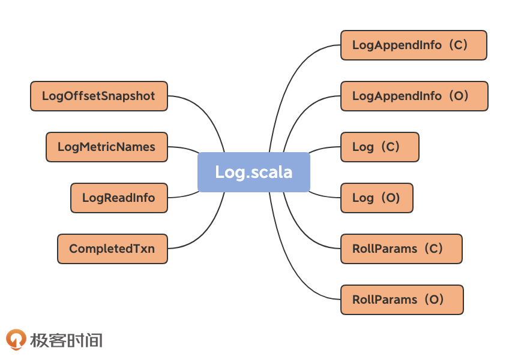
那么，这10个类和对象都是做什么的呢？我先给你简单介绍一下，你可以对它们有个大致的了解。
不过，在介绍之前，我先提一句，图中括号里的C表示Class，O表示Object。还记得我在上节课提到过的伴生对象吗？没错，同时定义同名的Class和Object，就属于Scala中的伴生对象用法。
我们先来看伴生对象，也就是LogAppendInfo、Log和RollParams。
1. LogAppendInfo
- LogAppendInfo（C）：保存了一组待写入消息的各种元数据信息。比如，这组消息中第一条消息的位移值是多少、最后一条消息的位移值是多少；再比如，这组消息中最大的消息时间戳又是多少。总之，这里面的数据非常丰富（下节课我再具体说说）。
- LogAppendInfo（O）: 可以理解为其对应伴生类的工厂方法类，里面定义了一些工厂方法，用于创建特定的LogAppendInfo实例。
2. Log
- Log（C）: Log源码中最核心的代码。这里我先卖个关子，一会儿细聊。
- Log（O）：同理，Log伴生类的工厂方法，定义了很多常量以及一些辅助方法。
3. RollParams
- RollParams（C）：定义用于控制日志段是否切分（Roll）的数据结构。
- RollParams（O）：同理，RollParams伴生类的工厂方法。
除了这3组伴生对象之外，还有4类源码。
- LogMetricNames：定义了Log对象的监控指标。
- LogOffsetSnapshot：封装分区所有位移元数据的容器类。
- LogReadInfo：封装读取日志返回的数据及其元数据。
- CompletedTxn：记录已完成事务的元数据，主要用于构建事务索引。
Log Class & Object
下面，我会按照这些类和对象的重要程度，对它们一一进行拆解。首先，咱们先说说Log类及其伴生对象。
考虑到伴生对象多用于保存静态变量和静态方法（比如静态工厂方法等），因此我们先看伴生对象（即Log Object）的实现。毕竟，柿子先找软的捏！
object Log {
val LogFileSuffix = ".log"
val IndexFileSuffix = ".index"
val TimeIndexFileSuffix = ".timeindex"
val ProducerSnapshotFileSuffix = ".snapshot"
val TxnIndexFileSuffix = ".txnindex"
val DeletedFileSuffix = ".deleted"
val CleanedFileSuffix = ".cleaned"
val SwapFileSuffix = ".swap"
val CleanShutdownFile = ".kafka_cleanshutdown"
val DeleteDirSuffix = "-delete"
val FutureDirSuffix = "-future"
……
}
这是Log Object定义的所有常量。如果有面试官问你Kafka中定义了多少种文件类型，你可以自豪地把这些说出来。耳熟能详的.log、.index、.timeindex和.txnindex我就不解释了，我们来了解下其他几种文件类型。
- .snapshot是Kafka为幂等型或事务型Producer所做的快照文件。鉴于我们现在还处于阅读源码的初级阶段，事务或幂等部分的源码我就不详细展开讲了。
- .deleted是删除日志段操作创建的文件。目前删除日志段文件是异步操作，Broker端把日志段文件从.log后缀修改为.deleted后缀。如果你看到一大堆.deleted后缀的文件名，别慌，这是Kafka在执行日志段文件删除。
- .cleaned和.swap都是Compaction操作的产物，等我们讲到Cleaner的时候再说。
- -delete则是应用于文件夹的。当你删除一个主题的时候，主题的分区文件夹会被加上这个后缀。
- -future是用于变更主题分区文件夹地址的，属于比较高阶的用法。
总之，记住这些常量吧。记住它们的主要作用是，以后不要被面试官唬住！开玩笑，其实这些常量最重要的地方就在于，它们能够让你了解Kafka定义的各种文件类型。
Log Object还定义了超多的工具类方法。由于它们都很简单，这里我只给出一个方法的源码，我们一起读一下。
def filenamePrefixFromOffset(offset: Long): String = {
val nf = NumberFormat.getInstance()
nf.setMinimumIntegerDigits(20)
nf.setMaximumFractionDigits(0)
nf.setGroupingUsed(false)
nf.format(offset)
}
这个方法的作用是通过给定的位移值计算出对应的日志段文件名。Kafka日志文件固定是20位的长度，filenamePrefixFromOffset方法就是用前面补0的方式，把给定位移值扩充成一个固定20位长度的字符串。
举个例子，我们给定一个位移值是12345，那么Broker端磁盘上对应的日志段文件名就应该是00000000000000012345.log。怎么样，很简单吧？其他的工具类方法也很简单，我就不一一展开说了。
下面我们来看Log源码部分的重头戏：Log类。这是一个2000多行的大类。放眼整个Kafka源码，像Log这么大的类也不多见，足见它的重要程度。我们先来看这个类的定义：
class Log(@volatile var dir: File,
@volatile var config: LogConfig,
@volatile var logStartOffset: Long,
@volatile var recoveryPoint: Long,
scheduler: Scheduler,
brokerTopicStats: BrokerTopicStats,
val time: Time,
val maxProducerIdExpirationMs: Int,
val producerIdExpirationCheckIntervalMs: Int,
val topicPartition: TopicPartition,
val producerStateManager: ProducerStateManager,
logDirFailureChannel: LogDirFailureChannel) extends Logging with KafkaMetricsGroup {
……
}
看着好像有很多属性，但其实，你只需要记住两个属性的作用就够了：dir和logStartOffset。dir就是这个日志所在的文件夹路径，也就是主题分区的路径。而logStartOffset，表示日志的当前最早位移。dir和logStartOffset都是volatile var类型，表示它们的值是变动的，而且可能被多个线程更新。
你可能听过日志的当前末端位移，也就是Log End Offset（LEO），它是表示日志下一条待插入消息的位移值，而这个Log Start Offset是跟它相反的，它表示日志当前对外可见的最早一条消息的位移值。我用一张图来标识它们的区别：

图中绿色的位移值3是日志的Log Start Offset，而位移值15表示LEO。另外，位移值8是高水位值，它是区分已提交消息和未提交消息的分水岭。
有意思的是，Log End Offset可以简称为LEO，但Log Start Offset却不能简称为LSO。因为在Kafka中，LSO特指Log Stable Offset，属于Kafka事务的概念。这个课程中不会涉及LSO，你只需要知道Log Start Offset不等于LSO即可。
Log类的其他属性你暂时不用理会，因为它们要么是很明显的工具类属性，比如timer和scheduler，要么是高阶用法才会用到的高级属性，比如producerStateManager和logDirFailureChannel。工具类的代码大多是做辅助用的，跳过它们也不妨碍我们理解Kafka的核心功能；而高阶功能代码设计复杂，学习成本高，性价比不高。
其实，除了Log类签名定义的这些属性之外，Log类还定义了一些很重要的属性，比如下面这段代码：
@volatile private var nextOffsetMetadata: LogOffsetMetadata = _
@volatile private var highWatermarkMetadata: LogOffsetMetadata = LogOffsetMetadata(logStartOffset)
private val segments: ConcurrentNavigableMap[java.lang.Long, LogSegment] = new ConcurrentSkipListMap[java.lang.Long, LogSegment]
@volatile var leaderEpochCache: Option[LeaderEpochFileCache] = None
第一个属性nextOffsetMetadata，它封装了下一条待插入消息的位移值，你基本上可以把这个属性和LEO等同起来。
第二个属性highWatermarkMetadata，是分区日志高水位值。关于高水位的概念，我们在《Kafka核心技术与实战》这个课程中做过详细解释，你可以看一下[这篇文章]（下节课我还会再具体给你介绍下）。
第三个属性segments，我认为这是Log类中最重要的属性。它保存了分区日志下所有的日志段信息，只不过是用Map的数据结构来保存的。Map的Key值是日志段的起始位移值，Value则是日志段对象本身。Kafka源码使用ConcurrentNavigableMap数据结构来保存日志段对象，就可以很轻松地利用该类提供的线程安全和各种支持排序的方法，来管理所有日志段对象。
第四个属性是Leader Epoch Cache对象。Leader Epoch是社区于0.11.0.0版本引入源码中的，主要是用来判断出现Failure时是否执行日志截断操作（Truncation）。之前靠高水位来判断的机制，可能会造成副本间数据不一致的情形。这里的Leader Epoch Cache是一个缓存类数据，里面保存了分区Leader的Epoch值与对应位移值的映射关系，我建议你查看下LeaderEpochFileCache类，深入地了解下它的实现原理。
掌握了这些基本属性之后，我们看下Log类的初始化逻辑：
locally {
val startMs = time.milliseconds
// create the log directory if it doesn't exist
Files.createDirectories(dir.toPath)
initializeLeaderEpochCache()
val nextOffset = loadSegments()
/* Calculate the offset of the next message */
nextOffsetMetadata = LogOffsetMetadata(nextOffset, activeSegment.baseOffset, activeSegment.size)
leaderEpochCache.foreach(_.truncateFromEnd(nextOffsetMetadata.messageOffset))
logStartOffset = math.max(logStartOffset, segments.firstEntry.getValue.baseOffset)
// The earliest leader epoch may not be flushed during a hard failure. Recover it here.
leaderEpochCache.foreach(_.truncateFromStart(logStartOffset))
// Any segment loading or recovery code must not use producerStateManager, so that we can build the full state here
// from scratch.
if (!producerStateManager.isEmpty)
throw new IllegalStateException("Producer state must be empty during log initialization")
loadProducerState(logEndOffset, reloadFromCleanShutdown = hasCleanShutdownFile)
info(s"Completed load of log with ${segments.size} segments, log start offset $logStartOffset and " +
s"log end offset $logEndOffset in ${time.milliseconds() - startMs}
在详细解释这段初始化代码之前，我使用一张图来说明它到底做了什么：
这里我们重点说说第三步，即加载日志段的实现逻辑，以下是loadSegments的实现代码：
private def loadSegments(): Long = {
// first do a pass through the files in the log directory and remove any temporary files
// and find any interrupted swap operations
val swapFiles = removeTempFilesAndCollectSwapFiles()
// Now do a second pass and load all the log and index files.
// We might encounter legacy log segments with offset overflow (KAFKA-6264). We need to split such segments. When
// this happens, restart loading segment files from scratch.
retryOnOffsetOverflow {
// In case we encounter a segment with offset overflow, the retry logic will split it after which we need to retry
// loading of segments. In that case, we also need to close all segments that could have been left open in previous
// call to loadSegmentFiles().
logSegments.foreach(_.close())
segments.clear()
loadSegmentFiles()
}
// Finally, complete any interrupted swap operations. To be crash-safe,
// log files that are replaced by the swap segment should be renamed to .deleted
// before the swap file is restored as the new segment file.
completeSwapOperations(swapFiles)
if (!dir.getAbsolutePath.endsWith(Log.DeleteDirSuffix)) {
val nextOffset = retryOnOffsetOverflow {
recoverLog()
}
// reset the index size of the currently active log segment to allow more entries
activeSegment.resizeIndexes(config.maxIndexSize)
nextOffset
} else {
if (logSegments.isEmpty) {
addSegment(LogSegment.open(dir = dir,
baseOffset = 0,
config,
time = time,
fileAlreadyExists = false,
initFileSize = this.initFileSize,
preallocate = false))
}
0
}
这段代码会对分区日志路径遍历两次。
首先，它会移除上次Failure遗留下来的各种临时文件（包括.cleaned、.swap、.deleted文件等），removeTempFilesAndCollectSwapFiles方法实现了这个逻辑。
之后，它会清空所有日志段对象，并且再次遍历分区路径，重建日志段segments Map并删除无对应日志段文件的孤立索引文件。
待执行完这两次遍历之后，它会完成未完成的swap操作，即调用completeSwapOperations方法。等这些都做完之后，再调用recoverLog方法恢复日志段对象，然后返回恢复之后的分区日志LEO值。
如果你现在觉得有点蒙，也没关系，我把这段代码再进一步拆解下，以更小的粒度跟你讲下它们做了什么。理解了这段代码之后，你大致就能搞清楚大部分的分区日志操作了。所以，这部分代码绝对值得我们多花一点时间去学习。
我们首先来看第一步，removeTempFilesAndCollectSwapFiles方法的实现。我用注释的方式详细解释了每行代码的作用：
private def removeTempFilesAndCollectSwapFiles(): Set[File] = {
// 在方法内部定义一个名为deleteIndicesIfExist的方法，用于删除日志文件对应的索引文件
def deleteIndicesIfExist(baseFile: File, suffix: String = ""): Unit = {
info(s"Deleting index files with suffix $suffix for baseFile $baseFile")
val offset = offsetFromFile(baseFile)
Files.deleteIfExists(Log.offsetIndexFile(dir, offset, suffix).toPath)
Files.deleteIfExists(Log.timeIndexFile(dir, offset, suffix).toPath)
Files.deleteIfExists(Log.transactionIndexFile(dir, offset, suffix).toPath)
}
var swapFiles = Set[File]()
var cleanFiles = Set[File]()
var minCleanedFileOffset = Long.MaxValue
// 遍历分区日志路径下的所有文件
for (file <- dir.listFiles if file.isFile) {
if (!file.canRead) // 如果不可读，直接抛出IOException
throw new IOException(s"Could not read file $file")
val filename = file.getName
if (filename.endsWith(DeletedFileSuffix)) { // 如果以.deleted结尾
debug(s"Deleting stray temporary file ${file.getAbsolutePath}")
Files.deleteIfExists(file.toPath) // 说明是上次Failure遗留下来的文件，直接删除
} else if (filename.endsWith(CleanedFileSuffix)) { // 如果以.cleaned结尾
minCleanedFileOffset = Math.min(offsetFromFileName(filename), minCleanedFileOffset) // 选取文件名中位移值最小的.cleaned文件，获取其位移值，并将该文件加入待删除文件集合中
cleanFiles += file
} else if (filename.endsWith(SwapFileSuffix)) { // 如果以.swap结尾
val baseFile = new File(CoreUtils.replaceSuffix(file.getPath, SwapFileSuffix, ""))
info(s"Found file ${file.getAbsolutePath} from interrupted swap operation.")
if (isIndexFile(baseFile)) { // 如果该.swap文件原来是索引文件
deleteIndicesIfExist(baseFile) // 删除原来的索引文件
} else if (isLogFile(baseFile)) { // 如果该.swap文件原来是日志文件
deleteIndicesIfExist(baseFile) // 删除掉原来的索引文件
swapFiles += file // 加入待恢复的.swap文件集合中
}
}
}
// 从待恢复swap集合中找出那些起始位移值大于minCleanedFileOffset值的文件，直接删掉这些无效的.swap文件
val (invalidSwapFiles, validSwapFiles) = swapFiles.partition(file => offsetFromFile(file) >= minCleanedFileOffset)
invalidSwapFiles.foreach { file =>
debug(s"Deleting invalid swap file ${file.getAbsoluteFile} minCleanedFileOffset: $minCleanedFileOffset")
val baseFile = new File(CoreUtils.replaceSuffix(file.getPath, SwapFileSuffix, ""))
deleteIndicesIfExist(baseFile, SwapFileSuffix)
Files.deleteIfExists(file.toPath)
}
// Now that we have deleted all .swap files that constitute an incomplete split operation, let's delete all .clean files
// 清除所有待删除文件集合中的文件
cleanFiles.foreach { file =>
debug(s"Deleting stray .clean file ${file.getAbsolutePath}")
Files.deleteIfExists(file.toPath)
}
// 最后返回当前有效的.swap文件集合
validSwapFiles
}
执行完了removeTempFilesAndCollectSwapFiles逻辑之后，源码开始清空已有日志段集合，并重新加载日志段文件。这就是第二步。这里调用的主要方法是loadSegmentFiles。
private def loadSegmentFiles(): Unit = {
// 按照日志段文件名中的位移值正序排列，然后遍历每个文件
for (file <- dir.listFiles.sortBy(_.getName) if file.isFile) {
if (isIndexFile(file)) { // 如果是索引文件
val offset = offsetFromFile(file)
val logFile = Log.logFile(dir, offset)
if (!logFile.exists) { // 确保存在对应的日志文件，否则记录一个警告，并删除该索引文件
warn(s"Found an orphaned index file ${file.getAbsolutePath}, with no corresponding log file.")
Files.deleteIfExists(file.toPath)
}
} else if (isLogFile(file)) { // 如果是日志文件
val baseOffset = offsetFromFile(file)
val timeIndexFileNewlyCreated = !Log.timeIndexFile(dir, baseOffset).exists()
// 创建对应的LogSegment对象实例，并加入segments中
val segment = LogSegment.open(dir = dir,
baseOffset = baseOffset,
config,
time = time,
fileAlreadyExists = true)
try segment.sanityCheck(timeIndexFileNewlyCreated)
catch {
case _: NoSuchFileException =>
error(s"Could not find offset index file corresponding to log file ${segment.log.file.getAbsolutePath}, " +
"recovering segment and rebuilding index files...")
recoverSegment(segment)
case e: CorruptIndexException =>
warn(s"Found a corrupted index file corresponding to log file ${segment.log.file.getAbsolutePath} due " +
s"to ${e.getMessage}}, recovering segment and rebuilding index files...")
recoverSegment(segment)
}
addSegment(segment)
}
}
}
第三步是处理第一步返回的有效.swap文件集合。completeSwapOperations方法就是做这件事的：
private def completeSwapOperations(swapFiles: Set[File]): Unit = {
// 遍历所有有效.swap文件
for (swapFile <- swapFiles) {
val logFile = new File(CoreUtils.replaceSuffix(swapFile.getPath, SwapFileSuffix, "")) // 获取对应的日志文件
val baseOffset = offsetFromFile(logFile) // 拿到日志文件的起始位移值
// 创建对应的LogSegment实例
val swapSegment = LogSegment.open(swapFile.getParentFile,
baseOffset = baseOffset,
config,
time = time,
fileSuffix = SwapFileSuffix)
info(s"Found log file ${swapFile.getPath} from interrupted swap operation, repairing.")
// 执行日志段恢复操作
recoverSegment(swapSegment)
// We create swap files for two cases:
// (1) Log cleaning where multiple segments are merged into one, and
// (2) Log splitting where one segment is split into multiple.
//
// Both of these mean that the resultant swap segments be composed of the original set, i.e. the swap segment
// must fall within the range of existing segment(s). If we cannot find such a segment, it means the deletion
// of that segment was successful. In such an event, we should simply rename the .swap to .log without having to
// do a replace with an existing segment.
// 确认之前删除日志段是否成功，是否还存在老的日志段文件
val oldSegments = logSegments(swapSegment.baseOffset, swapSegment.readNextOffset).filter { segment =>
segment.readNextOffset > swapSegment.baseOffset
}
// 将生成的.swap文件加入到日志中，删除掉swap之前的日志段
replaceSegments(Seq(swapSegment), oldSegments.toSeq, isRecoveredSwapFile = true)
}
}
最后一步是recoverLog操作：
private def recoverLog(): Long = {
// if we have the clean shutdown marker, skip recovery
// 如果不存在以.kafka_cleanshutdown结尾的文件。通常都不存在
if (!hasCleanShutdownFile) {
// 获取到上次恢复点以外的所有unflushed日志段对象
val unflushed = logSegments(this.recoveryPoint, Long.MaxValue).toIterator
var truncated = false
// 遍历这些unflushed日志段
while (unflushed.hasNext && !truncated) {
val segment = unflushed.next
info(s"Recovering unflushed segment ${segment.baseOffset}")
val truncatedBytes =
try {
// 执行恢复日志段操作
recoverSegment(segment, leaderEpochCache)
} catch {
case _: InvalidOffsetException =>
val startOffset = segment.baseOffset
warn("Found invalid offset during recovery. Deleting the corrupt segment and " +
s"creating an empty one with starting offset $startOffset")
segment.truncateTo(startOffset)
}
if (truncatedBytes > 0) { // 如果有无效的消息导致被截断的字节数不为0，直接删除剩余的日志段对象
warn(s"Corruption found in segment ${segment.baseOffset}, truncating to offset ${segment.readNextOffset}")
removeAndDeleteSegments(unflushed.toList, asyncDelete = true)
truncated = true
}
}
}
// 这些都做完之后，如果日志段集合不为空
if (logSegments.nonEmpty) {
val logEndOffset = activeSegment.readNextOffset
if (logEndOffset < logStartOffset) { // 验证分区日志的LEO值不能小于Log Start Offset值，否则删除这些日志段对象
warn(s"Deleting all segments because logEndOffset ($logEndOffset) is smaller than logStartOffset ($logStartOffset). " +
"This could happen if segment files were deleted from the file system.")
removeAndDeleteSegments(logSegments, asyncDelete = true)
}
}
// 这些都做完之后，如果日志段集合为空了
if (logSegments.isEmpty) {
// 至少创建一个新的日志段，以logStartOffset为日志段的起始位移，并加入日志段集合中
addSegment(LogSegment.open(dir = dir,
baseOffset = logStartOffset,
config,
time = time,
fileAlreadyExists = false,
initFileSize = this.initFileSize,
preallocate = config.preallocate))
}
// 更新上次恢复点属性，并返回
recoveryPoint = activeSegment.readNextOffset
recoveryPoint
总结
今天，我重点向你介绍了Kafka的Log源码，主要包括：
- Log文件的源码结构：你可以看下下面的导图，它展示了Log类文件的架构组成，你要重点掌握Log类及其相关方法。
- 加载日志段机制：我结合源码重点分析了日志在初始化时是如何加载日志段的。前面说过了，日志是日志段的容器，弄明白如何加载日志段是后续学习日志段管理的前提条件。
总的来说，虽然洋洋洒洒几千字，但我也只讲了最重要的部分。我建议你多看几遍Log.scala中加载日志段的代码，这对后面我们理解Kafka Broker端日志段管理原理大有裨益。在下节课，我会继续讨论日志部分的源码，带你学习常见的Kafka日志操作。
课后讨论
Log源码中有个maybeIncrementHighWatermark方法，你能说说它的实现原理吗？
欢迎你在留言区畅所欲言，跟我交流讨论，也欢迎你把今天的内容分享给你的朋友。
03 日志（下）：彻底搞懂Log对象的常见操作
你好，我是胡夕。上节课，我们一起了解了日志加载日志段的过程。今天，我会继续带你学习Log源码，给你介绍Log对象的常见操作。
我一般习惯把Log的常见操作分为4大部分。
- 高水位管理操作：高水位的概念在Kafka中举足轻重，对它的管理，是Log最重要的功能之一。
- 日志段管理：Log是日志段的容器。高效组织与管理其下辖的所有日志段对象，是源码要解决的核心问题。
- 关键位移值管理：日志定义了很多重要的位移值，比如Log Start Offset和LEO等。确保这些位移值的正确性，是构建消息引擎一致性的基础。
- 读写操作：所谓的操作日志，大体上就是指读写日志。读写操作的作用之大，不言而喻。
接下来，我会按照这个顺序和你介绍Log对象的常见操作，并希望你特别关注下高水位管理部分。
事实上，社区关于日志代码的很多改进都是基于高水位机制的，有的甚至是为了替代高水位机制而做的更新。比如，Kafka的KIP-101提案正式引入的Leader Epoch机制，就是用来替代日志截断操作中的高水位的。显然，要深入学习Leader Epoch，你至少要先了解高水位并清楚它的弊病在哪儿才行。
既然高水位管理这么重要，那我们就从它开始说起吧。
高水位管理操作
在介绍高水位管理操作之前，我们先来了解一下高水位的定义。
定义
源码中日志对象定义高水位的语句只有一行：
@volatile private var highWatermarkMetadata: LogOffsetMetadata = LogOffsetMetadata(logStartOffset)
这行语句传达了两个重要的事实：
- 高水位值是volatile（易变型）的。因为多个线程可能同时读取它，因此需要设置成volatile，保证内存可见性。另外，由于高水位值可能被多个线程同时修改，因此源码使用Java Monitor锁来确保并发修改的线程安全。
- 高水位值的初始值是Log Start Offset值。上节课我们提到，每个Log对象都会维护一个Log Start Offset值。当首次构建高水位时，它会被赋值成Log Start Offset值。
你可能会关心LogOffsetMetadata是什么对象。因为它比较重要，我们一起来看下这个类的定义：
case class LogOffsetMetadata(messageOffset: Long,
segmentBaseOffset: Long = Log.UnknownOffset, relativePositionInSegment: Int = LogOffsetMetadata.UnknownFilePosition)
显然，它就是一个POJO类，里面保存了三个重要的变量。
- messageOffset：消息位移值，这是最重要的信息。我们总说高水位值，其实指的就是这个变量的值。
- segmentBaseOffset：保存该位移值所在日志段的起始位移。日志段起始位移值辅助计算两条消息在物理磁盘文件中位置的差值，即两条消息彼此隔了多少字节。这个计算有个前提条件，即两条消息必须处在同一个日志段对象上，不能跨日志段对象。否则它们就位于不同的物理文件上，计算这个值就没有意义了。这里的segmentBaseOffset，就是用来判断两条消息是否处于同一个日志段的。
- relativePositionSegment：保存该位移值所在日志段的物理磁盘位置。这个字段在计算两个位移值之间的物理磁盘位置差值时非常有用。你可以想一想，Kafka什么时候需要计算位置之间的字节数呢？答案就是在读取日志的时候。假设每次读取时只能读1MB的数据，那么，源码肯定需要关心两个位移之间所有消息的总字节数是否超过了1MB。
LogOffsetMetadata类的所有方法，都是围绕这3个变量展开的工具辅助类方法，非常容易理解。我会给出一个方法的详细解释，剩下的你可以举一反三。
def onSameSegment(that: LogOffsetMetadata): Boolean = {
if (messageOffsetOnly)
throw new KafkaException(s"$this cannot compare its segment info with $that since it only has message offset info")
this.segmentBaseOffset == that.segmentBaseOffset
}
看名字我们就知道了，这个方法就是用来判断给定的两个LogOffsetMetadata对象是否处于同一个日志段的。判断方法很简单，就是比较两个LogOffsetMetadata对象的segmentBaseOffset值是否相等。
好了，我们接着说回高水位，你要重点关注下获取和设置高水位值、更新高水位值，以及读取高水位值的方法。
获取和设置高水位值
关于获取高水位值的方法，其实很好理解，我就不多说了。设置高水位值的方法，也就是Setter方法更复杂一些，为了方便你理解，我用注释的方式来解析它的作用。
// getter method：读取高水位的位移值
def highWatermark: Long = highWatermarkMetadata.messageOffset
// setter method：设置高水位值
private def updateHighWatermarkMetadata(newHighWatermark: LogOffsetMetadata): Unit = {
if (newHighWatermark.messageOffset < 0) // 高水位值不能是负数
throw new IllegalArgumentException("High watermark offset should be non-negative")
lock synchronized { // 保护Log对象修改的Monitor锁
highWatermarkMetadata = newHighWatermark // 赋值新的高水位值
producerStateManager.onHighWatermarkUpdated(newHighWatermark.messageOffset) // 处理事务状态管理器的高水位值更新逻辑，忽略它……
maybeIncrementFirstUnstableOffset() // First Unstable Offset是Kafka事务机制的一部分，忽略它……
}
trace(s"Setting high watermark $newHighWatermark")
}
更新高水位值
除此之外，源码还定义了两个更新高水位值的方法：updateHighWatermark和maybeIncrementHighWatermark。从名字上来看，前者是一定要更新高水位值的，而后者是可能会更新也可能不会。
我们分别看下它们的实现原理。
// updateHighWatermark method
def updateHighWatermark(hw: Long): Long = {
// 新高水位值一定介于[Log Start Offset，Log End Offset]之间
val newHighWatermark = if (hw < logStartOffset)
logStartOffset
else if (hw > logEndOffset)
logEndOffset
else
hw
// 调用Setter方法来更新高水位值
updateHighWatermarkMetadata(LogOffsetMetadata(newHighWatermark))
newHighWatermark // 最后返回新高水位值
}
// maybeIncrementHighWatermark method
def maybeIncrementHighWatermark(newHighWatermark: LogOffsetMetadata): Option[LogOffsetMetadata] = {
// 新高水位值不能越过Log End Offset
if (newHighWatermark.messageOffset > logEndOffset)
throw new IllegalArgumentException(s"High watermark $newHighWatermark update exceeds current " +
s"log end offset $logEndOffsetMetadata")
lock.synchronized {
val oldHighWatermark = fetchHighWatermarkMetadata // 获取老的高水位值
// 新高水位值要比老高水位值大以维持单调增加特性，否则就不做更新！
// 另外，如果新高水位值在新日志段上，也可执行更新高水位操作
if (oldHighWatermark.messageOffset < newHighWatermark.messageOffset ||
(oldHighWatermark.messageOffset == newHighWatermark.messageOffset && oldHighWatermark.onOlderSegment(newHighWatermark))) {
updateHighWatermarkMetadata(newHighWatermark)
Some(oldHighWatermark) // 返回老的高水位值
} else {
None
}
}
}
你可能觉得奇怪，为什么要定义两个更新高水位的方法呢？
其实，这两个方法有着不同的用途。updateHighWatermark方法，主要用在Follower副本从Leader副本获取到消息后更新高水位值。一旦拿到新的消息，就必须要更新高水位值；而maybeIncrementHighWatermark方法，主要是用来更新Leader副本的高水位值。需要注意的是，Leader副本高水位值的更新是有条件的——某些情况下会更新高水位值，某些情况下可能不会。
就像我刚才说的，Follower副本成功拉取Leader副本的消息后必须更新高水位值，但Producer端向Leader副本写入消息时，分区的高水位值就可能不需要更新——因为它可能需要等待其他Follower副本同步的进度。因此，源码中定义了两个更新的方法，它们分别应用于不同的场景。
读取高水位值
关于高水位值管理的最后一个操作是fetchHighWatermarkMetadata方法。它不仅仅是获取高水位值，还要获取高水位的其他元数据信息，即日志段起始位移和物理位置信息。下面是它的实现逻辑：
private def fetchHighWatermarkMetadata: LogOffsetMetadata = {
checkIfMemoryMappedBufferClosed() // 读取时确保日志不能被关闭
val offsetMetadata = highWatermarkMetadata // 保存当前高水位值到本地变量，避免多线程访问干扰
if (offsetMetadata.messageOffsetOnly) { //没有获得到完整的高水位元数据
lock.synchronized {
val fullOffset = convertToOffsetMetadataOrThrow(highWatermark) // 通过读日志文件的方式把完整的高水位元数据信息拉出来
updateHighWatermarkMetadata(fullOffset) // 然后再更新一下高水位对象
fullOffset
}
} else { // 否则，直接返回即可
offsetMetadata
}
}
日志段管理
前面我反复说过，日志是日志段的容器，那它究竟是如何承担起容器一职的呢？
private val segments: ConcurrentNavigableMap[java.lang.Long, LogSegment] = new ConcurrentSkipListMap[java.lang.Long, LogSegment]
可以看到，源码使用Java的ConcurrentSkipListMap类来保存所有日志段对象。ConcurrentSkipListMap有2个明显的优势。
- 它是线程安全的，这样Kafka源码不需要自行确保日志段操作过程中的线程安全；
- 它是键值（Key）可排序的Map。Kafka将每个日志段的起始位移值作为Key，这样一来，我们就能够很方便地根据所有日志段的起始位移值对它们进行排序和比较，同时还能快速地找到与给定位移值相近的前后两个日志段。
所谓的日志段管理，无非是增删改查。接下来，我们就从这4个方面一一来看下。
1. 增加
Log对象中定义了添加日志段对象的方法：addSegment。
def addSegment(segment: LogSegment): LogSegment = this.segments.put(segment.baseOffset, segment)
很简单吧，就是调用Map的put方法将给定的日志段对象添加到segments中。
2. 删除
删除操作相对来说复杂一点。我们知道Kafka有很多留存策略，包括基于时间维度的、基于空间维度的和基于Log Start Offset维度的。那啥是留存策略呢？其实，它本质上就是根据一定的规则决定哪些日志段可以删除。
从源码角度来看，Log中控制删除操作的总入口是deleteOldSegments无参方法：
def deleteOldSegments(): Int = {
if (config.delete) {
deleteRetentionMsBreachedSegments() + deleteRetentionSizeBreachedSegments() + deleteLogStartOffsetBreachedSegments()
} else {
deleteLogStartOffsetBreachedSegments()
}
}
代码中的deleteRetentionMsBreachedSegments、deleteRetentionSizeBreachedSegments和deleteLogStartOffsetBreachedSegments分别对应于上面的那3个策略。
下面这张图展示了Kafka当前的三种日志留存策略，以及底层涉及到日志段删除的所有方法：

从图中我们可以知道，上面3个留存策略方法底层都会调用带参数版本的deleteOldSegments方法，而这个方法又相继调用了deletableSegments和deleteSegments方法。下面，我们来深入学习下这3个方法的代码。
首先是带参数版的deleteOldSegments方法：
private def deleteOldSegments(predicate: (LogSegment, Option[LogSegment]) => Boolean, reason: String): Int = {
lock synchronized {
val deletable = deletableSegments(predicate)
if (deletable.nonEmpty)
info(s"Found deletable segments with base offsets [${deletable.map(_.baseOffset).mkString(",")}] due to $reason")
deleteSegments(deletable)
}
}
该方法只有两个步骤：
- 使用传入的函数计算哪些日志段对象能够被删除；
- 调用deleteSegments方法删除这些日志段。
接下来是deletableSegments方法，我用注释的方式来解释下主体代码含义：
private def deletableSegments(predicate: (LogSegment, Option[LogSegment]) => Boolean): Iterable[LogSegment] = {
if (segments.isEmpty) { // 如果当前压根就没有任何日志段对象，直接返回
Seq.empty
} else {
val deletable = ArrayBuffer.empty[LogSegment]
var segmentEntry = segments.firstEntry
// 从具有最小起始位移值的日志段对象开始遍历，直到满足以下条件之一便停止遍历：
// 1. 测定条件函数predicate = false
// 2. 扫描到包含Log对象高水位值所在的日志段对象
// 3. 最新的日志段对象不包含任何消息
// 最新日志段对象是segments中Key值最大对应的那个日志段，也就是我们常说的Active Segment。完全为空的Active Segment如果被允许删除，后面还要重建它，故代码这里不允许删除大小为空的Active Segment。
// 在遍历过程中，同时不满足以上3个条件的所有日志段都是可以被删除的！
while (segmentEntry != null) {
val segment = segmentEntry.getValue
val nextSegmentEntry = segments.higherEntry(segmentEntry.getKey)
val (nextSegment, upperBoundOffset, isLastSegmentAndEmpty) =
if (nextSegmentEntry != null)
(nextSegmentEntry.getValue, nextSegmentEntry.getValue.baseOffset, false)
else
(null, logEndOffset, segment.size == 0)
if (highWatermark >= upperBoundOffset && predicate(segment, Option(nextSegment)) && !isLastSegmentAndEmpty) {
deletable += segment
segmentEntry = nextSegmentEntry
} else {
segmentEntry = null
}
}
deletable
}
}
最后是deleteSegments方法，这个方法执行真正的日志段删除操作。
private def deleteSegments(deletable: Iterable[LogSegment]): Int = {
maybeHandleIOException(s"Error while deleting segments for $topicPartition in dir ${dir.getParent}") {
val numToDelete = deletable.size
if (numToDelete > 0) {
// 不允许删除所有日志段对象。如果一定要做，先创建出一个新的来，然后再把前面N个删掉
if (segments.size == numToDelete)
roll()
lock synchronized {
checkIfMemoryMappedBufferClosed() // 确保Log对象没有被关闭
// 删除给定的日志段对象以及底层的物理文件
removeAndDeleteSegments(deletable, asyncDelete = true)
// 尝试更新日志的Log Start Offset值
maybeIncrementLogStartOffset(
segments.firstEntry.getValue.baseOffset)
}
}
numToDelete
}
}
这里我稍微解释一下，为什么要在删除日志段对象之后，尝试更新Log Start Offset值。Log Start Offset值是整个Log对象对外可见消息的最小位移值。如果我们删除了日志段对象，很有可能对外可见消息的范围发生了变化，自然要看一下是否需要更新Log Start Offset值。这就是deleteSegments方法最后要更新Log Start Offset值的原因。
3. 修改
说完了日志段删除，接下来我们来看如何修改日志段对象。
其实，源码里面不涉及修改日志段对象，所谓的修改或更新也就是替换而已，用新的日志段对象替换老的日志段对象。举个简单的例子。segments.put(1L, newSegment)语句在没有Key=1时是添加日志段，否则就是替换已有日志段。
4. 查询
最后再说下查询日志段对象。源码中需要查询日志段对象的地方太多了，但主要都是利用了ConcurrentSkipListMap的现成方法。
- segments.firstEntry：获取第一个日志段对象；
- segments.lastEntry：获取最后一个日志段对象，即Active Segment；
- segments.higherEntry：获取第一个起始位移值≥给定Key值的日志段对象；
- segments.floorEntry：获取最后一个起始位移值≤给定Key值的日志段对象。
关键位移值管理
Log对象维护了一些关键位移值数据，比如Log Start Offset、LEO等。其实，高水位值也算是关键位移值，只不过它太重要了，所以，我单独把它拎出来作为独立的一部分来讲了。
还记得我上节课给你说的那张标识LEO和Log Start Offset的图吗？我再来借助这张图说明一下这些关键位移值的区别：
请注意这张图中位移值15的虚线方框。这揭示了一个重要的事实：Log对象中的LEO永远指向下一条待插入消息，也就是说，LEO值上面是没有消息的！源码中定义LEO的语句很简单：
@volatile private var nextOffsetMetadata: LogOffsetMetadata = _
这里的nextOffsetMetadata就是我们所说的LEO，它也是LogOffsetMetadata类型的对象。Log对象初始化的时候，源码会加载所有日志段对象，并由此计算出当前Log的下一条消息位移值。之后，Log对象将此位移值赋值给LEO，代码片段如下：
locally {
val startMs = time.milliseconds
// 创建日志路径，保存Log对象磁盘文件
Files.createDirectories(dir.toPath)
// 初始化Leader Epoch缓存
initializeLeaderEpochCache()
// 加载所有日志段对象，并返回该Log对象下一条消息的位移值
val nextOffset = loadSegments()
// 初始化LEO元数据对象，LEO值为上一步获取的位移值，起始位移值是Active Segment的起始位移值，日志段大小是Active Segment的大小
nextOffsetMetadata = LogOffsetMetadata(nextOffset, activeSegment.baseOffset, activeSegment.size)
// 更新Leader Epoch缓存，去除LEO值之上的所有无效缓存项
leaderEpochCache.foreach(
_.truncateFromEnd(nextOffsetMetadata.messageOffset))
......
}
当然，代码中单独定义了更新LEO的updateLogEndOffset方法：
private def updateLogEndOffset(offset: Long): Unit = {
nextOffsetMetadata = LogOffsetMetadata(offset, activeSegment.baseOffset, activeSegment.size)
if (highWatermark >= offset) {
updateHighWatermarkMetadata(nextOffsetMetadata)
}
if (this.recoveryPoint > offset) {
this.recoveryPoint = offset
}
}
根据上面的源码，你应该能看到，更新过程很简单，我就不再展开说了。不过，你需要注意的是，如果在更新过程中发现新LEO值小于高水位值，那么Kafka还要更新高水位值，因为对于同一个Log对象而言，高水位值是不能越过LEO值的。这一点你一定要切记再切记！
讲到这儿，我就要提问了，Log对象什么时候需要更新LEO呢？
实际上，LEO对象被更新的时机有4个。
- Log对象初始化时：当Log对象初始化时，我们必须要创建一个LEO对象，并对其进行初始化。
- 写入新消息时：这个最容易理解。以上面的图为例，当不断向Log对象插入新消息时，LEO值就像一个指针一样，需要不停地向右移动，也就是不断地增加。
- Log对象发生日志切分（Log Roll）时：日志切分是啥呢？其实就是创建一个全新的日志段对象，并且关闭当前写入的日志段对象。这通常发生在当前日志段对象已满的时候。一旦发生日志切分，说明Log对象切换了Active Segment，那么，LEO中的起始位移值和段大小数据都要被更新，因此，在进行这一步操作时，我们必须要更新LEO对象。
- 日志截断（Log Truncation）时：这个也是显而易见的。日志中的部分消息被删除了，自然可能导致LEO值发生变化，从而要更新LEO对象。
你可以在代码中查看一下updateLogEndOffset方法的调用时机，验证下是不是和我所说的一致。这里我也想给你一个小小的提示：阅读源码的时候，最好加入一些思考，而不是简单地全盘接受源码的内容，也许你会有不一样的收获。
说完了LEO，我再跟你说说Log Start Offset。其实，就操作的流程和原理而言，源码管理Log Start Offset的方式要比LEO简单，因为Log Start Offset不是一个对象，它就是一个长整型的值而已。代码定义了专门的updateLogStartOffset方法来更新它。该方法很简单，我就不详细说了，你可以自己去学习下它的实现。
现在，我们再来思考一下，Kafka什么时候需要更新Log Start Offset呢？我们一一来看下。
- Log对象初始化时：和LEO类似，Log对象初始化时要给Log Start Offset赋值，一般是将第一个日志段的起始位移值赋值给它。
- 日志截断时：同理，一旦日志中的部分消息被删除，可能会导致Log Start Offset发生变化，因此有必要更新该值。
- Follower副本同步时：一旦Leader副本的Log对象的Log Start Offset值发生变化。为了维持和Leader副本的一致性，Follower副本也需要尝试去更新该值。
- 删除日志段时：这个和日志截断是类似的。凡是涉及消息删除的操作都有可能导致Log Start Offset值的变化。
- 删除消息时：严格来说，这个更新时机有点本末倒置了。在Kafka中，删除消息就是通过抬高Log Start Offset值来实现的，因此，删除消息时必须要更新该值。
读写操作
最后，我重点说说针对Log对象的读写操作。
1. 写操作
在Log中，涉及写操作的方法有3个：appendAsLeader、appendAsFollower和append。它们的调用关系如下图所示：
appendAsLeader是用于写Leader副本的，appendAsFollower是用于Follower副本同步的。它们的底层都调用了append方法。
我们重点学习下append方法。下图是append方法的执行流程：

看到这张图，你可能会感叹：“天呐，执行步骤居然有12步？这么多！”别急，现在我用代码注释的方式给你分别解释下每步的实现原理。
private def append(records: MemoryRecords,
origin: AppendOrigin,
interBrokerProtocolVersion: ApiVersion,
assignOffsets: Boolean,
leaderEpoch: Int): LogAppendInfo = {
maybeHandleIOException(s"Error while appending records to $topicPartition in dir ${dir.getParent}") {
// 第1步：分析和验证待写入消息集合，并返回校验结果
val appendInfo = analyzeAndValidateRecords(records, origin)
// 如果压根就不需要写入任何消息，直接返回即可
if (appendInfo.shallowCount == 0)
return appendInfo
// 第2步：消息格式规整，即删除无效格式消息或无效字节
var validRecords = trimInvalidBytes(records, appendInfo)
lock synchronized {
checkIfMemoryMappedBufferClosed() // 确保Log对象未关闭
if (assignOffsets) { // 需要分配位移
// 第3步：使用当前LEO值作为待写入消息集合中第一条消息的位移值
val offset = new LongRef(nextOffsetMetadata.messageOffset)
appendInfo.firstOffset = Some(offset.value)
val now = time.milliseconds
val validateAndOffsetAssignResult = try {
LogValidator.validateMessagesAndAssignOffsets(validRecords,
topicPartition,
offset,
time,
now,
appendInfo.sourceCodec,
appendInfo.targetCodec,
config.compact,
config.messageFormatVersion.recordVersion.value,
config.messageTimestampType,
config.messageTimestampDifferenceMaxMs,
leaderEpoch,
origin,
interBrokerProtocolVersion,
brokerTopicStats)
} catch {
case e: IOException =>
throw new KafkaException(s"Error validating messages while appending to log $name", e)
}
// 更新校验结果对象类LogAppendInfo
validRecords = validateAndOffsetAssignResult.validatedRecords
appendInfo.maxTimestamp = validateAndOffsetAssignResult.maxTimestamp
appendInfo.offsetOfMaxTimestamp = validateAndOffsetAssignResult.shallowOffsetOfMaxTimestamp
appendInfo.lastOffset = offset.value - 1
appendInfo.recordConversionStats = validateAndOffsetAssignResult.recordConversionStats
if (config.messageTimestampType == TimestampType.LOG_APPEND_TIME)
appendInfo.logAppendTime = now
// 第4步：验证消息，确保消息大小不超限
if (validateAndOffsetAssignResult.messageSizeMaybeChanged) {
for (batch <- validRecords.batches.asScala) {
if (batch.sizeInBytes > config.maxMessageSize) {
// we record the original message set size instead of the trimmed size
// to be consistent with pre-compression bytesRejectedRate recording
brokerTopicStats.topicStats(topicPartition.topic).bytesRejectedRate.mark(records.sizeInBytes)
brokerTopicStats.allTopicsStats.bytesRejectedRate.mark(records.sizeInBytes)
throw new RecordTooLargeException(s"Message batch size is ${batch.sizeInBytes} bytes in append to" +
s"partition $topicPartition which exceeds the maximum configured size of ${config.maxMessageSize}.")
}
}
}
} else { // 直接使用给定的位移值，无需自己分配位移值
if (!appendInfo.offsetsMonotonic) // 确保消息位移值的单调递增性
throw new OffsetsOutOfOrderException(s"Out of order offsets found in append to $topicPartition: " +
records.records.asScala.map(_.offset))
if (appendInfo.firstOrLastOffsetOfFirstBatch < nextOffsetMetadata.messageOffset) {
val firstOffset = appendInfo.firstOffset match {
case Some(offset) => offset
case None => records.batches.asScala.head.baseOffset()
}
val firstOrLast = if (appendInfo.firstOffset.isDefined) "First offset" else "Last offset of the first batch"
throw new UnexpectedAppendOffsetException(
s"Unexpected offset in append to $topicPartition. $firstOrLast " +
s"${appendInfo.firstOrLastOffsetOfFirstBatch} is less than the next offset ${nextOffsetMetadata.messageOffset}. " +
s"First 10 offsets in append: ${records.records.asScala.take(10).map(_.offset)}, last offset in" +
s" append: ${appendInfo.lastOffset}. Log start offset = $logStartOffset",
firstOffset, appendInfo.lastOffset)
}
}
// 第5步：更新Leader Epoch缓存
validRecords.batches.asScala.foreach { batch =>
if (batch.magic >= RecordBatch.MAGIC_VALUE_V2) {
maybeAssignEpochStartOffset(batch.partitionLeaderEpoch, batch.baseOffset)
} else {
leaderEpochCache.filter(_.nonEmpty).foreach { cache =>
warn(s"Clearing leader epoch cache after unexpected append with message format v${batch.magic}")
cache.clearAndFlush()
}
}
}
// 第6步：确保消息大小不超限
if (validRecords.sizeInBytes > config.segmentSize) {
throw new RecordBatchTooLargeException(s"Message batch size is ${validRecords.sizeInBytes} bytes in append " +
s"to partition $topicPartition, which exceeds the maximum configured segment size of ${config.segmentSize}.")
}
// 第7步：执行日志切分。当前日志段剩余容量可能无法容纳新消息集合，因此有必要创建一个新的日志段来保存待写入的所有消息
val segment = maybeRoll(validRecords.sizeInBytes, appendInfo)
val logOffsetMetadata = LogOffsetMetadata(
messageOffset = appendInfo.firstOrLastOffsetOfFirstBatch,
segmentBaseOffset = segment.baseOffset,
relativePositionInSegment = segment.size)
// 第8步：验证事务状态
val (updatedProducers, completedTxns, maybeDuplicate) = analyzeAndValidateProducerState(
logOffsetMetadata, validRecords, origin)
maybeDuplicate.foreach { duplicate =>
appendInfo.firstOffset = Some(duplicate.firstOffset)
appendInfo.lastOffset = duplicate.lastOffset
appendInfo.logAppendTime = duplicate.timestamp
appendInfo.logStartOffset = logStartOffset
return appendInfo
}
// 第9步：执行真正的消息写入操作，主要调用日志段对象的append方法实现
segment.append(largestOffset = appendInfo.lastOffset,
largestTimestamp = appendInfo.maxTimestamp,
shallowOffsetOfMaxTimestamp = appendInfo.offsetOfMaxTimestamp,
records = validRecords)
// 第10步：更新LEO对象，其中，LEO值是消息集合中最后一条消息位移值+1
// 前面说过，LEO值永远指向下一条不存在的消息
updateLogEndOffset(appendInfo.lastOffset + 1)
// 第11步：更新事务状态
for (producerAppendInfo <- updatedProducers.values) {
producerStateManager.update(producerAppendInfo)
}
for (completedTxn <- completedTxns) {
val lastStableOffset = producerStateManager.lastStableOffset(completedTxn)
segment.updateTxnIndex(completedTxn, lastStableOffset)
producerStateManager.completeTxn(completedTxn)
}
producerStateManager.updateMapEndOffset(appendInfo.lastOffset + 1)
maybeIncrementFirstUnstableOffset()
trace(s"Appended message set with last offset: ${appendInfo.lastOffset}, " +
s"first offset: ${appendInfo.firstOffset}, " +
s"next offset: ${nextOffsetMetadata.messageOffset}, " +
s"and messages: $validRecords")
// 是否需要手动落盘。一般情况下我们不需要设置Broker端参数log.flush.interval.messages
// 落盘操作交由操作系统来完成。但某些情况下，可以设置该参数来确保高可靠性
if (unflushedMessages >= config.flushInterval)
flush()
// 第12步：返回写入结果
appendInfo
}
}
}
这些步骤里有没有需要你格外注意的呢？我希望你重点关注下第1步，即Kafka如何校验消息，重点是看针对不同的消息格式版本，Kafka是如何做校验的。
说起消息校验，你还记得上一讲我们提到的LogAppendInfo类吗？它就是一个普通的POJO类，里面几乎保存了待写入消息集合的所有信息。我们来详细了解一下。
case class LogAppendInfo(var firstOffset: Option[Long],
var lastOffset: Long, // 消息集合最后一条消息的位移值
var maxTimestamp: Long, // 消息集合最大消息时间戳
var offsetOfMaxTimestamp: Long, // 消息集合最大消息时间戳所属消息的位移值
var logAppendTime: Long, // 写入消息时间戳
var logStartOffset: Long, // 消息集合首条消息的位移值
// 消息转换统计类，里面记录了执行了格式转换的消息数等数据
var recordConversionStats: RecordConversionStats,
sourceCodec: CompressionCodec, // 消息集合中消息使用的压缩器（Compressor）类型，比如是Snappy还是LZ4
targetCodec: CompressionCodec, // 写入消息时需要使用的压缩器类型
shallowCount: Int, // 消息批次数，每个消息批次下可能包含多条消息
validBytes: Int, // 写入消息总字节数
offsetsMonotonic: Boolean, // 消息位移值是否是顺序增加的
lastOffsetOfFirstBatch: Long, // 首个消息批次中最后一条消息的位移
recordErrors: Seq[RecordError] = List(), // 写入消息时出现的异常列表
errorMessage: String = null) { // 错误码
......
}
大部分字段的含义很明确，这里我稍微提一下lastOffset和lastOffsetOfFirstBatch。
Kafka消息格式经历了两次大的变迁，目前是0.11.0.0版本引入的Version 2消息格式。我们没有必要详细了解这些格式的变迁，你只需要知道，在0.11.0.0版本之后，lastOffset和lastOffsetOfFirstBatch都是指向消息集合的最后一条消息即可。它们的区别主要体现在0.11.0.0之前的版本。
append方法调用analyzeAndValidateRecords方法对消息集合进行校验，并生成对应的LogAppendInfo对象，其流程如下：
private def analyzeAndValidateRecords(records: MemoryRecords, origin: AppendOrigin): LogAppendInfo = {
var shallowMessageCount = 0
var validBytesCount = 0
var firstOffset: Option[Long] = None
var lastOffset = -1L
var sourceCodec: CompressionCodec = NoCompressionCodec
var monotonic = true
var maxTimestamp = RecordBatch.NO_TIMESTAMP
var offsetOfMaxTimestamp = -1L
var readFirstMessage = false
var lastOffsetOfFirstBatch = -1L
for (batch <- records.batches.asScala) {
// 消息格式Version 2的消息批次，起始位移值必须从0开始
if (batch.magic >= RecordBatch.MAGIC_VALUE_V2 && origin == AppendOrigin.Client && batch.baseOffset != 0)
throw new InvalidRecordException(s"The baseOffset of the record batch in the append to $topicPartition should " +
s"be 0, but it is ${batch.baseOffset}")
if (!readFirstMessage) {
if (batch.magic >= RecordBatch.MAGIC_VALUE_V2)
firstOffset = Some(batch.baseOffset) // 更新firstOffset字段
lastOffsetOfFirstBatch = batch.lastOffset // 更新lastOffsetOfFirstBatch字段
readFirstMessage = true
}
// 一旦出现当前lastOffset不小于下一个batch的lastOffset，说明上一个batch中有消息的位移值大于后面batch的消息
// 这违反了位移值单调递增性
if (lastOffset >= batch.lastOffset)
monotonic = false
// 使用当前batch最后一条消息的位移值去更新lastOffset
lastOffset = batch.lastOffset
// 检查消息批次总字节数大小是否超限，即是否大于Broker端参数max.message.bytes值
val batchSize = batch.sizeInBytes
if (batchSize > config.maxMessageSize) {
brokerTopicStats.topicStats(topicPartition.topic).bytesRejectedRate.mark(records.sizeInBytes)
brokerTopicStats.allTopicsStats.bytesRejectedRate.mark(records.sizeInBytes)
throw new RecordTooLargeException(s"The record batch size in the append to $topicPartition is $batchSize bytes " +
s"which exceeds the maximum configured value of ${config.maxMessageSize}.")
}
// 执行消息批次校验，包括格式是否正确以及CRC校验
if (!batch.isValid) {
brokerTopicStats.allTopicsStats.invalidMessageCrcRecordsPerSec.mark()
throw new CorruptRecordException(s"Record is corrupt (stored crc = ${batch.checksum()}) in topic partition $topicPartition.")
}
// 更新maxTimestamp字段和offsetOfMaxTimestamp
if (batch.maxTimestamp > maxTimestamp) {
maxTimestamp = batch.maxTimestamp
offsetOfMaxTimestamp = lastOffset
}
// 累加消息批次计数器以及有效字节数，更新shallowMessageCount字段
shallowMessageCount += 1
validBytesCount += batchSize
// 从消息批次中获取压缩器类型
val messageCodec = CompressionCodec.getCompressionCodec(batch.compressionType.id)
if (messageCodec != NoCompressionCodec)
sourceCodec = messageCodec
}
// 获取Broker端设置的压缩器类型，即Broker端参数compression.type值。
// 该参数默认值是producer，表示sourceCodec用的什么压缩器，targetCodec就用什么
val targetCodec = BrokerCompressionCodec.getTargetCompressionCodec(config.compressionType, sourceCodec)
// 最后生成LogAppendInfo对象并返回
LogAppendInfo(firstOffset, lastOffset, maxTimestamp, offsetOfMaxTimestamp, RecordBatch.NO_TIMESTAMP, logStartOffset,
RecordConversionStats.EMPTY, sourceCodec, targetCodec, shallowMessageCount, validBytesCount, monotonic, lastOffsetOfFirstBatch)
}
2. 读取操作
说完了append方法，下面我们聊聊read方法。
read方法的流程相对要简单一些，首先来看它的方法签名：
def read(startOffset: Long,
maxLength: Int,
isolation: FetchIsolation,
minOneMessage: Boolean): FetchDataInfo = {
......
}
它接收4个参数，含义如下：
- startOffset，即从Log对象的哪个位移值开始读消息。
- maxLength，即最多能读取多少字节。
- isolation，设置读取隔离级别，主要控制能够读取的最大位移值，多用于Kafka事务。
- minOneMessage，即是否允许至少读一条消息。设想如果消息很大，超过了maxLength，正常情况下read方法永远不会返回任何消息。但如果设置了该参数为true，read方法就保证至少能够返回一条消息。
read方法的返回值是FetchDataInfo类，也是一个POJO类，里面最重要的数据就是读取的消息集合，其他数据还包括位移等元数据信息。
下面我们来看下read方法的流程。
def read(startOffset: Long,
maxLength: Int,
isolation: FetchIsolation,
minOneMessage: Boolean): FetchDataInfo = {
maybeHandleIOException(s"Exception while reading from $topicPartition in dir ${dir.getParent}") {
trace(s"Reading $maxLength bytes from offset $startOffset of length $size bytes")
val includeAbortedTxns = isolation == FetchTxnCommitted
// 读取消息时没有使用Monitor锁同步机制，因此这里取巧了，用本地变量的方式把LEO对象保存起来，避免争用（race condition）
val endOffsetMetadata = nextOffsetMetadata
val endOffset = nextOffsetMetadata.messageOffset
if (startOffset == endOffset) // 如果从LEO处开始读取，那么自然不会返回任何数据，直接返回空消息集合即可
return emptyFetchDataInfo(endOffsetMetadata, includeAbortedTxns)
// 找到startOffset值所在的日志段对象。注意要使用floorEntry方法
var segmentEntry = segments.floorEntry(startOffset)
// return error on attempt to read beyond the log end offset or read below log start offset
// 满足以下条件之一将被视为消息越界，即你要读取的消息不在该Log对象中：
// 1. 要读取的消息位移超过了LEO值
// 2. 没找到对应的日志段对象
// 3. 要读取的消息在Log Start Offset之下，同样是对外不可见的消息
if (startOffset > endOffset || segmentEntry == null || startOffset < logStartOffset)
throw new OffsetOutOfRangeException(s"Received request for offset $startOffset for partition $topicPartition, " +
s"but we only have log segments in the range $logStartOffset to $endOffset.")
// 查看一下读取隔离级别设置。
// 普通消费者能够看到[Log Start Offset, 高水位值)之间的消息
// 事务型消费者只能看到[Log Start Offset, Log Stable Offset]之间的消息。Log Stable Offset(LSO)是比LEO值小的位移值，为Kafka事务使用
// Follower副本消费者能够看到[Log Start Offset，LEO)之间的消息
val maxOffsetMetadata = isolation match {
case FetchLogEnd => nextOffsetMetadata
case FetchHighWatermark => fetchHighWatermarkMetadata
case FetchTxnCommitted => fetchLastStableOffsetMetadata
}
// 如果要读取的起始位置超过了能读取的最大位置，返回空的消息集合，因为没法读取任何消息
if (startOffset > maxOffsetMetadata.messageOffset) {
val startOffsetMetadata = convertToOffsetMetadataOrThrow(startOffset)
return emptyFetchDataInfo(startOffsetMetadata, includeAbortedTxns)
}
// 开始遍历日志段对象，直到读出东西来或者读到日志末尾
while (segmentEntry != null) {
val segment = segmentEntry.getValue
val maxPosition = {
if (maxOffsetMetadata.segmentBaseOffset == segment.baseOffset) {
maxOffsetMetadata.relativePositionInSegment
} else {
segment.size
}
}
// 调用日志段对象的read方法执行真正的读取消息操作
val fetchInfo = segment.read(startOffset, maxLength, maxPosition, minOneMessage)
if (fetchInfo == null) { // 如果没有返回任何消息，去下一个日志段对象试试
segmentEntry = segments.higherEntry(segmentEntry.getKey)
} else { // 否则返回
return if (includeAbortedTxns)
addAbortedTransactions(startOffset, segmentEntry, fetchInfo)
else
fetchInfo
}
}
// 已经读到日志末尾还是没有数据返回，只能返回空消息集合
FetchDataInfo(nextOffsetMetadata, MemoryRecords.EMPTY)
}
}
总结
今天，我重点讲解了Kafka的Log对象以及常见的操作。我们复习一下。
- 高水位管理：Log对象定义了高水位对象以及管理它的各种操作，主要包括更新和读取。
- 日志段管理：作为日志段的容器，Log对象保存了很多日志段对象。你需要重点掌握这些日志段对象被组织在一起的方式以及Kafka Log对象是如何对它们进行管理的。
- 关键位移值管理：主要涉及对Log Start Offset和LEO的管理。这两个位移值是Log对象非常关键的字段。比如，副本管理、状态机管理等高阶功能都要依赖于它们。
- 读写操作：日志读写是实现Kafka消息引擎基本功能的基石。虽然你不需要掌握每行语句的含义，但你至少要明白大体的操作流程。
讲到这里，Kafka Log部分的源码我就介绍完了。我建议你特别关注下高水位管理和读写操作部分的代码（特别是后者），并且结合我今天讲的内容，重点分析下这两部分的实现原理。最后，我用一张思维导图来帮助你理解和记忆Log源码中的这些常见操作：
课后讨论
你能为Log对象添加一个方法，统计介于高水位值和LEO值之间的消息总数吗？
欢迎你在留言区畅所欲言，跟我交流讨论，也欢迎你把今天的内容分享给你的朋友。
04 索引（上）：改进的二分查找算法在Kafka索引的应用
你好，我是胡夕。今天，我来带你学习一下Kafka源码中的索引对象，以及改进版二分查找算法（Binary Search Algorithm）在索引中的应用。
为什么要阅读索引源码？
坦率地说，你在Kafka中直接接触索引或索引文件的场景可能不是很多。索引是一个很神秘的组件，Kafka官方文档也没有怎么提过它。你可能会说，既然这样，我还有必要读索引对象的源码吗？其实是非常有必要的！我给你分享一个真实的例子。
有一次，我用Kafka的DumpLogSegments类去查看底层日志文件和索引文件的内容时，发现了一个奇怪的现象——查看日志文件的内容不需要sudo权限，而查看索引文件的内容必须要有sudo权限，如下所示：
$ sudo ./kafka-run-class.sh kafka.tools.DumpLogSegments --files ./00000000000000000000.index
Dumping 00000000000000000000.index
offset: 0 position: 0
$ ./kafka-run-class.sh kafka.tools.DumpLogSegments --files 00000000000000000000.index
Dumping 00000000000000000000.index
Exception in thread "main" java.io.FileNotFoundException: 00000000000000000000.index (Permission denied)
......
看了索引源码之后，我才知道，原来Kafka读取索引文件时使用的打开方式是rw。实际上，读取文件不需要w权限，只要r权限就行了。这显然是Kafka的一个Bug。你看，通过阅读源码，我找到了问题的根本原因，还顺便修复了Kafka的一个问题（KAFKA-5104）。
除了能帮我们解决实际问题之外，索引这个组件的源码还有一个亮点，那就是它应用了耳熟能详的二分查找算法来快速定位索引项。关于算法，我一直觉得很遗憾的是，我们平时太注重算法本身，却忽略了它们在实际场景中的应用。
比如说，我们学习了太多的排序算法，但是，对于普通的应用开发人员来说，亲自使用这些算法完成编程任务的机会实在太少了。说起数组排序，你可能只记得调用Collections.sort方法了，但它底层应用了什么排序算法，其实并不清楚。
难得的是，Kafka的索引组件中应用了二分查找算法，而且社区还针对Kafka自身的特点对其进行了改良。这难道不值得我们好好学上一学吗？！话不多说，现在我们就开始学习吧。
索引类图及源文件组织架构
在Kafka源码中，跟索引相关的源码文件有5个，它们都位于core包的/src/main/scala/kafka/log路径下。我们一一来看下。
- AbstractIndex.scala：它定义了最顶层的抽象类，这个类封装了所有索引类型的公共操作。
- LazyIndex.scala：它定义了AbstractIndex上的一个包装类，实现索引项延迟加载。这个类主要是为了提高性能。
- OffsetIndex.scala：定义位移索引，保存“<位移值，文件磁盘物理位置>”对。
- TimeIndex.scala：定义时间戳索引，保存“<时间戳，位移值>”对。
- TransactionIndex.scala：定义事务索引，为已中止事务（Aborted Transcation）保存重要的元数据信息。只有启用Kafka事务后，这个索引才有可能出现。
这些类的关系如下图所示：

其中，OffsetIndex、TimeIndex和TransactionIndex都继承了AbstractIndex类，而上层的LazyIndex仅仅是包装了一个AbstractIndex的实现类，用于延迟加载。就像我之前说的，LazyIndex的作用是为了提升性能，并没有什么功能上的改进。
所以今天，我先和你讲一讲AbstractIndex这个抽象父类的代码。下节课，我再重点和你分享具体的索引实现类。
AbstractIndex代码结构
我们先来看下AbstractIndex的类定义：
abstract class AbstractIndex(@volatile var file: File, val baseOffset: Long, val maxIndexSize: Int = -1, val writable: Boolean) extends Closeable {
......
}
AbstractIndex定义了4个属性字段。由于是一个抽象基类，它的所有子类自动地继承了这4个字段。也就是说，Kafka所有类型的索引对象都定义了这些属性。我先给你解释下这些属性的含义。
- 索引文件（file）。每个索引对象在磁盘上都对应了一个索引文件。你可能注意到了，这个字段是var型，说明它是可以被修改的。难道索引对象还能动态更换底层的索引文件吗？是的。自1.1.0版本之后，Kafka允许迁移底层的日志路径，所以，索引文件自然要是可以更换的。
- 起始位移值（baseOffset）。索引对象对应日志段对象的起始位移值。举个例子，如果你查看Kafka日志路径的话，就会发现，日志文件和索引文件都是成组出现的。比如说，如果日志文件是00000000000000000123.log，正常情况下，一定还有一组索引文件00000000000000000123.index、00000000000000000123.timeindex等。这里的“123”就是这组文件的起始位移值，也就是baseOffset值。
- 索引文件最大字节数（maxIndexSize）。它控制索引文件的最大长度。Kafka源码传入该参数的值是Broker端参数segment.index.bytes的值，即10MB。这就是在默认情况下，所有Kafka索引文件大小都是10MB的原因。
- 索引文件打开方式（writable）。“True”表示以“读写”方式打开，“False”表示以“只读”方式打开。如果我没记错的话，这个参数应该是我加上去的，就是为了修复我刚刚提到的那个Bug。
AbstractIndex是抽象的索引对象类。可以说，它是承载索引项的容器，而每个继承它的子类负责定义具体的索引项结构。比如，OffsetIndex的索引项是<位移值，物理磁盘位置>对，TimeIndex的索引项是<时间戳，位移值>对。基于这样的设计理念，AbstractIndex类中定义了一个抽象方法entrySize来表示不同索引项的大小，如下所示：
protected def entrySize: Int
子类实现该方法时需要给定自己索引项的大小，对于OffsetIndex而言，该值就是8；对于TimeIndex而言，该值是12，如下所示：
// OffsetIndex
override def entrySize = 8
// TimeIndex
override def entrySize = 12
说到这儿，你肯定会问，为什么是8和12呢？我来解释一下。
在OffsetIndex中，位移值用4个字节来表示，物理磁盘位置也用4个字节来表示，所以总共是8个字节。你可能会说，位移值不是长整型吗，应该是8个字节才对啊。
还记得AbstractIndex已经保存了baseOffset了吗？这里的位移值，实际上是相对于baseOffset的相对位移值，即真实位移值减去baseOffset的值。下节课我会给你重点讲一下它，这里你只需要知道使用相对位移值能够有效地节省磁盘空间就行了。而Broker端参数log.segment.bytes是整型，这说明，Kafka中每个日志段文件的大小不会超过2^32，即4GB，这就说明同一个日志段文件上的位移值减去baseOffset的差值一定在整数范围内。因此，源码只需要4个字节保存就行了。
同理，TimeIndex中的时间戳类型是长整型，占用8个字节，位移依然使用相对位移值，占用4个字节，因此总共需要12个字节。
如果有人问你，Kafka中的索引底层的实现原理是什么？你可以大声地告诉他：内存映射文件，即Java中的MappedByteBuffer。
使用内存映射文件的主要优势在于，它有很高的I/O性能，特别是对于索引这样的小文件来说，由于文件内存被直接映射到一段虚拟内存上，访问内存映射文件的速度要快于普通的读写文件速度。
另外，在很多操作系统中（比如Linux），这段映射的内存区域实际上就是内核的页缓存（Page Cache）。这就意味着，里面的数据不需要重复拷贝到用户态空间，避免了很多不必要的时间、空间消耗。
在AbstractIndex中，这个MappedByteBuffer就是名为mmap的变量。接下来，我用注释的方式，带你深入了解下这个mmap的主要流程。
@volatile
protected var mmap: MappedByteBuffer = {
// 第1步：创建索引文件
val newlyCreated = file.createNewFile()
// 第2步：以writable指定的方式（读写方式或只读方式）打开索引文件
val raf = if (writable) new RandomAccessFile(file, "rw") else new RandomAccessFile(file, "r")
try {
if(newlyCreated) {
if(maxIndexSize < entrySize) // 预设的索引文件大小不能太小，如果连一个索引项都保存不了，直接抛出异常
throw new IllegalArgumentException("Invalid max index size: " + maxIndexSize)
// 第3步：设置索引文件长度，roundDownToExactMultiple计算的是不超过maxIndexSize的最大整数倍entrySize
// 比如maxIndexSize=1234567，entrySize=8，那么调整后的文件长度为1234560
raf.setLength(roundDownToExactMultiple(maxIndexSize, entrySize))
}
// 第4步：更新索引长度字段_length
_length = raf.length()
// 第5步：创建MappedByteBuffer对象
val idx = {
if (writable)
raf.getChannel.map(FileChannel.MapMode.READ_WRITE, 0, _length)
else
raf.getChannel.map(FileChannel.MapMode.READ_ONLY, 0, _length)
}
/* set the position in the index for the next entry */
// 第6步：如果是新创建的索引文件，将MappedByteBuffer对象的当前位置置成0
// 如果索引文件已存在，将MappedByteBuffer对象的当前位置设置成最后一个索引项所在的位置
if(newlyCreated)
idx.position(0)
else
idx.position(roundDownToExactMultiple(idx.limit(), entrySize))
// 第7步：返回创建的MappedByteBuffer对象
idx
} finally {
CoreUtils.swallow(raf.close(), AbstractIndex) // 关闭打开索引文件句柄
}
}
这些代码最主要的作用就是创建mmap对象。要知道，AbstractIndex其他大部分的操作都是和mmap相关。
我举两个简单的小例子。
例1：如果我们要计算索引对象中当前有多少个索引项，那么只需要执行下列计算即可：
protected var _entries: Int = mmap.position() / entrySize
例2：如果我们要计算索引文件最多能容纳多少个索引项，只要定义下面的变量就行了：
private[this] var _maxEntries: Int = mmap.limit() / entrySize
再进一步，有了这两个变量，我们就能够很容易地编写一个方法，来判断当前索引文件是否已经写满：
def isFull: Boolean = _entries >= _maxEntries
总之，AbstractIndex中最重要的就是这个mmap变量了。事实上，AbstractIndex继承类实现添加索引项的主要逻辑，也就是向mmap中添加对应的字段。
写入索引项
下面这段代码是OffsetIndex的append方法，用于向索引文件中写入新索引项。
def append(offset: Long, position: Int): Unit = {
inLock(lock) {
// 第1步：判断索引文件未写满
require(!isFull, "Attempt to append to a full index (size = " + _entries + ").")
// 第2步：必须满足以下条件之一才允许写入索引项：
// 条件1：当前索引文件为空
// 条件2：要写入的位移大于当前所有已写入的索引项的位移——Kafka规定索引项中的位移值必须是单调增加的
if (_entries == 0 || offset > _lastOffset) {
trace(s"Adding index entry $offset => $position to ${file.getAbsolutePath}")
mmap.putInt(relativeOffset(offset)) // 第3步A：向mmap中写入相对位移值
mmap.putInt(position) // 第3步B：向mmap中写入物理位置信息
// 第4步：更新其他元数据统计信息，如当前索引项计数器_entries和当前索引项最新位移值_lastOffset
_entries += 1
_lastOffset = offset
// 第5步：执行校验。写入的索引项格式必须符合要求，即索引项个数*单个索引项占用字节数匹配当前文件物理大小，否则说明文件已损坏
require(_entries * entrySize == mmap.position(), entries + " entries but file position in index is " + mmap.position() + ".")
} else {
// 如果第2步中两个条件都不满足，不能执行写入索引项操作，抛出异常
throw new InvalidOffsetException(s"Attempt to append an offset ($offset) to position $entries no larger than" +
s" the last offset appended (${_lastOffset}) to ${file.getAbsolutePath}.")
}
}
}
我使用一张图来总结下append方法的执行流程，希望可以帮你更快速地掌握它的实现：

查找索引项
索引项的写入逻辑并不复杂，难点在于如何查找索引项。AbstractIndex定义了抽象方法parseEntry用于查找给定的索引项，如下所示：
protected def parseEntry(buffer: ByteBuffer, n: Int): IndexEntry
这里的“n”表示要查找给定ByteBuffer中保存的第n个索引项（在Kafka中也称第n个槽）。IndexEntry是源码定义的一个接口，里面有两个方法：indexKey和indexValue，分别返回不同类型索引的
OffsetIndex实现parseEntry的逻辑如下：
override protected def parseEntry(buffer: ByteBuffer, n: Int): OffsetPosition = {
OffsetPosition(baseOffset + relativeOffset(buffer, n), physical(buffer, n))
}
OffsetPosition是实现IndexEntry的实现类，Key就是之前说的位移值，而Value就是物理磁盘位置值。所以，这里你能看到代码调用了relativeOffset(buffer, n) + baseOffset计算出绝对位移值，之后调用physical(buffer, n)计算物理磁盘位置，最后将它们封装到一起作为一个独立的索引项返回。
我建议你去看下relativeOffset和physical方法的实现，看看它们是如何计算相对位移值和物理磁盘位置信息的。
有了parseEntry方法，我们就能够根据给定的n来查找索引项了。但是，这里还有个问题需要解决，那就是，我们如何确定要找的索引项在第n个槽中呢？其实本质上，这是一个算法问题，也就是如何从一组已排序的数中快速定位符合条件的那个数。
二分查找算法
到目前为止，从已排序数组中寻找某个数字最快速的算法就是二分查找了，它能做到O(lgN)的时间复杂度。Kafka的索引组件就应用了二分查找算法。
我先给出原版的实现算法代码。
private def indexSlotRangeFor(idx: ByteBuffer, target: Long, searchEntity: IndexSearchEntity): (Int, Int) = {
// 第1步：如果当前索引为空，直接返回<-1,-1>对
if(_entries == 0)
return (-1, -1)
// 第2步：要查找的位移值不能小于当前最小位移值
if(compareIndexEntry(parseEntry(idx, 0), target, searchEntity) > 0)
return (-1, 0)
// binary search for the entry
// 第3步：执行二分查找算法
var lo = 0
var hi = _entries - 1
while(lo < hi) {
val mid = ceil(hi/2.0 + lo/2.0).toInt
val found = parseEntry(idx, mid)
val compareResult = compareIndexEntry(found, target, searchEntity)
if(compareResult > 0)
hi = mid - 1
else if(compareResult < 0)
lo = mid
else
return (mid, mid)
}
(lo, if (lo == _entries - 1) -1 else lo + 1)
这段代码的核心是，第3步的二分查找算法。熟悉Binary Search的话，你对这段代码一定不会感到陌生。
讲到这里，似乎一切很完美：Kafka索引应用二分查找算法快速定位待查找索引项位置，之后调用parseEntry来读取索引项。不过，这真的就是无懈可击的解决方案了吗？
改进版二分查找算法
显然不是！我前面说过了，大多数操作系统使用页缓存来实现内存映射，而目前几乎所有的操作系统都使用LRU（Least Recently Used）或类似于LRU的机制来管理页缓存。
Kafka写入索引文件的方式是在文件末尾追加写入，而几乎所有的索引查询都集中在索引的尾部。这么来看的话，LRU机制是非常适合Kafka的索引访问场景的。
但，这里有个问题是，当Kafka在查询索引的时候，原版的二分查找算法并没有考虑到缓存的问题，因此很可能会导致一些不必要的缺页中断（Page Fault）。此时，Kafka线程会被阻塞，等待对应的索引项从物理磁盘中读出并放入到页缓存中。
下面我举个例子来说明一下这个情况。假设Kafka的某个索引占用了操作系统页缓存13个页（Page），如果待查找的位移值位于最后一个页上，也就是Page 12，那么标准的二分查找算法会依次读取页号0、6、9、11和12，具体的推演流程如下所示：
通常来说，一个页上保存了成百上千的索引项数据。随着索引文件不断被写入，Page #12不断地被填充新的索引项。如果此时索引查询方都来自ISR副本或Lag很小的消费者，那么这些查询大多集中在对Page #12的查询，因此，Page #0、6、9、11、12一定经常性地被源码访问。也就是说，这些页一定保存在页缓存上。后面当新的索引项填满了Page #12，页缓存就会申请一个新的Page来保存索引项，即Page #13。
现在，最新索引项保存在Page #13中。如果要查找最新索引项，原版二分查找算法将会依次访问Page #0、7、10、12和13。此时，问题来了：Page 7和10已经很久没有被访问过了，它们大概率不在页缓存中，因此，一旦索引开始征用Page #13，就会发生Page Fault，等待那些冷页数据从磁盘中加载到页缓存。根据国外用户的测试，这种加载过程可能长达1秒。
显然，这是一个普遍的问题，即每当索引文件占用Page数发生变化时，就会强行变更二分查找的搜索路径，从而出现不在页缓存的冷数据必须要加载到页缓存的情形，而这种加载过程是非常耗时的。
基于这个问题，社区提出了改进版的二分查找策略，也就是缓存友好的搜索算法。总体的思路是，代码将所有索引项分成两个部分：热区（Warm Area）和冷区（Cold Area），然后分别在这两个区域内执行二分查找算法，如下图所示：

乍一看，该算法并没有什么高大上的改进，仅仅是把搜寻区域分成了冷、热两个区域，然后有条件地在不同区域执行普通的二分查找算法罢了。实际上，这个改进版算法提供了一个重要的保证：它能保证那些经常需要被访问的Page组合是固定的。
想想刚才的例子，同样是查询最热的那部分数据，一旦索引占用了更多的Page，要遍历的Page组合就会发生变化。这是导致性能下降的主要原因。
这个改进版算法的最大好处在于，查询最热那部分数据所遍历的Page永远是固定的，因此大概率在页缓存中，从而避免无意义的Page Fault。
下面我们来看实际的代码。我用注释的方式解释了改进版算法的实现逻辑。一旦你了解了冷区热区的分割原理，剩下的就不难了。
private def indexSlotRangeFor(idx: ByteBuffer, target: Long, searchEntity: IndexSearchEntity): (Int, Int) = {
// 第1步：如果索引为空，直接返回<-1,-1>对
if(_entries == 0)
return (-1, -1)
// 封装原版的二分查找算法
def binarySearch(begin: Int, end: Int) : (Int, Int) = {
// binary search for the entry
var lo = begin
var hi = end
while(lo < hi) {
val mid = (lo + hi + 1) >>> 1
val found = parseEntry(idx, mid)
val compareResult = compareIndexEntry(found, target, searchEntity)
if(compareResult > 0)
hi = mid - 1
else if(compareResult < 0)
lo = mid
else
return (mid, mid)
}
(lo, if (lo == _entries - 1) -1 else lo + 1)
}
// 第3步：确认热区首个索引项位于哪个槽。_warmEntries就是所谓的分割线，目前固定为8192字节处
// 如果是OffsetIndex，_warmEntries = 8192 / 8 = 1024，即第1024个槽
// 如果是TimeIndex，_warmEntries = 8192 / 12 = 682，即第682个槽
val firstHotEntry = Math.max(0, _entries - 1 - _warmEntries)
// 第4步：判断target位移值在热区还是冷区
if(compareIndexEntry(parseEntry(idx, firstHotEntry), target, searchEntity) < 0) {
return binarySearch(firstHotEntry, _entries - 1) // 如果在热区，搜索热区
}
// 第5步：确保target位移值不能小于当前最小位移值
if(compareIndexEntry(parseEntry(idx, 0), target, searchEntity) > 0)
return (-1, 0)
// 第6步：如果在冷区，搜索冷区
binarySearch(0, firstHotEntry)
总结
今天，我带你详细学习了Kafka中的索引机制，以及社区如何应用二分查找算法实现快速定位索引项。有两个重点，你一定要记住。
- AbstractIndex：这是Kafka所有类型索引的抽象父类，里面的mmap变量是实现索引机制的核心，你一定要掌握它。
- 改进版二分查找算法：社区在标准原版的基础上，对二分查找算法根据实际访问场景做了定制化的改进。你需要特别关注改进版在提升缓存性能方面做了哪些努力。改进版能够有效地提升页缓存的使用率，从而在整体上降低物理I/O，缓解系统负载瓶颈。你最好能够从索引这个维度去思考社区在这方面所做的工作。

实际上，无论是AbstractIndex还是它使用的二分查找算法，它们都属于Kafka索引共性的东西，即所有Kafka索引都具备这些特点或特性。那么，你是否想了解不同类型索引之间的区别呢？比如位移索引和时间戳索引有哪些异同之处。这些问题的答案我会在下节课揭晓，你千万不要错过。
课后讨论
目前，冷区和热区的分割线设定在8192字节处，请结合源码注释以及你自己的理解，讲一讲为什么要设置成8192？
欢迎你在留言区畅所欲言，跟我交流讨论，也欢迎你把今天的内容分享给你的朋友。
05 索引（下）：位移索引和时间戳索引的区别是什么？
你好，我是胡夕。今天，我们继续说索引那些事儿。
在上节课，我带你重点学习了Kafka源码中索引的抽象父类AbstractIndex。我分析了AbstractIndex类的大体对象结构，还介绍了社区改进版的二分查找算法在Kafka索引上的应用。
前面说过，Kafka索引类型有三大类：位移索引、时间戳索引和已中止事务索引。相比于最后一类索引，前两类索引的出镜率更高一些。在Kafka的数据路径下，你肯定看到过很多.index和.timeindex后缀的文件。不知你是否有过这样的疑问：“这些文件是用来做什么的呢？” 现在我可以明确告诉你：.index文件就是Kafka中的位移索引文件，而.timeindex文件则是时间戳索引文件。
那么，位移索引和时间戳索引到底是做什么用的呢？它们之间的区别是什么？今天，我就为你揭晓这些问题的答案。
位移索引
在学习Kafka的任何一类索引的时候，我们都要关注两个问题：
- 索引中的索引项是如何定义的？
- 如何向索引写入新的索引项？
看到这里，你可能会很疑惑：“等等，难道我们不需要关心如何查询索引吗？” 当然需要啦！上节课我们不是讲过二分查找算法在索引中的应用了吗？如果你觉得有点生疏了，那就赶快先去复习一下吧。
现在，我们先来看下索引项的定义。
索引项的定义
位移索引也就是所谓的OffsetIndex，它可是一个老资历的组件了。如果我没记错的话，国内大面积使用Kafka应该是在0.8时代。从那个时候开始，OffsetIndex就已经存在了。每当Consumer需要从主题分区的某个位置开始读取消息时，Kafka就会用到OffsetIndex直接定位物理文件位置，从而避免了因为从头读取消息而引入的昂贵的I/O操作。
在上节课，我提到过，不同索引类型保存不同的
这里我来具体解释一下相对位移的含义。还记得AbstractIndex类中的抽象方法entrySize吗？它定义了单个
override def entrySize = 8
为什么是8呢？相对位移是一个整型（Integer），占用4个字节，物理文件位置也是一个整型，同样占用4个字节，因此总共是8个字节。
那相对位移是什么值呢？我们知道，Kafka中的消息位移值是一个长整型（Long），应该占用8个字节才对。在保存OffsetIndex的
举个简单的例子。假设一个索引文件保存了1000个索引项，使用相对位移值就能节省大约4MB的空间，这是不是一件很划算的事情呢？
OffsetIndex定义了专门的方法，用于将一个Long型的位移值转换成相对位移，如下所示：
def relativeOffset(offset: Long): Int = {
val relativeOffset = toRelative(offset)
if (relativeOffset.isEmpty)
// 如果无法转换成功（比如差值超过了整型表示范围)，则抛出异常
throw new IndexOffsetOverflowException(s"Integer overflow for offset: $offset (${file.getAbsoluteFile})")
relativeOffset.get
}
relativeOffset方法调用了父类的toRelative方法执行真正的转换。我们来看一下toRelative方法的实现。
private def toRelative(offset: Long): Option[Int] = {
val relativeOffset = offset - baseOffset
if (relativeOffset < 0 || relativeOffset > Int.MaxValue)
None
else
Some(relativeOffset.toInt)
}
逻辑很简单：第一步是计算给定的offset值与baseOffset的差值；第二步是校验该差值不能是负数或不能超过整型表示范围。如果校验通过，就直接返回该差值作为相对位移值，否则就返回None表示转换失败。

现在，你知道OffsetIndex中的索引项为什么是8个字节以及位移值是如何被转换成相对位移了吧？
当读取OffsetIndex时，源码还需要将相对位移值还原成之前的完整位移。这个是在parseEntry方法中实现的。
override protected def parseEntry(buffer: ByteBuffer, n: Int): OffsetPosition = {
OffsetPosition(baseOffset + relativeOffset(buffer, n), physical(buffer, n))
}
我来给你解释下具体的实现方法。
这个方法返回一个OffsetPosition类型。该类有两个方法，分别返回索引项的Key和Value。
这里的parseEntry方法，就是要构造OffsetPosition所需的Key和Value。Key是索引项中的完整位移值，代码使用baseOffset + relativeOffset(buffer, n)的方式将相对位移值还原成完整位移值；Value是这个位移值上消息在日志段文件中的物理位置，代码调用physical方法计算这个物理位置并把它作为Value。
最后，parseEntry方法把Key和Value封装到一个OffsetPosition实例中，然后将这个实例返回。
由于索引文件的总字节数就是索引项字节数乘以索引项数，因此，代码结合entrySize和buffer.getInt方法能够轻松地计算出第n个索引项所处的物理文件位置。这就是physical方法做的事情。
写入索引项
好了，有了这些基础，下面的内容就很容易理解了。我们来看下OffsetIndex中最重要的操作——写入索引项append方法的实现。
def append(offset: Long, position: Int): Unit = {
inLock(lock) {
// 索引文件如果已经写满，直接抛出异常
require(!isFull, "Attempt to append to a full index (size = " + _entries + ").")
// 要保证待写入的位移值offset比当前索引文件中所有现存的位移值都要大
// 这主要是为了维护索引的单调增加性
if (_entries == 0 || offset > _lastOffset) {
trace(s"Adding index entry $offset => $position to ${file.getAbsolutePath}")
mmap.putInt(relativeOffset(offset)) // 向mmap写入相对位移值
mmap.putInt(position) // 向mmap写入物理文件位置
_entries += 1 // 更新索引项个数
_lastOffset = offset // 更新当前索引文件最大位移值
// 确保写入索引项格式符合要求
require(_entries * entrySize == mmap.position(), s"$entries entries but file position in index is ${mmap.position()}.")
} else {
throw new InvalidOffsetException(s"Attempt to append an offset ($offset) to position $entries no larger than" +
s" the last offset appended (${_lastOffset}) to ${file.getAbsolutePath}.")
}
}
}
append方法接收两个参数：Long型的位移值和Integer型的物理文件位置。该方法最重要的两步，就是分别向mmap写入相对位移值和物理文件位置。我使用一张图，来总结下append方法的执行流程：
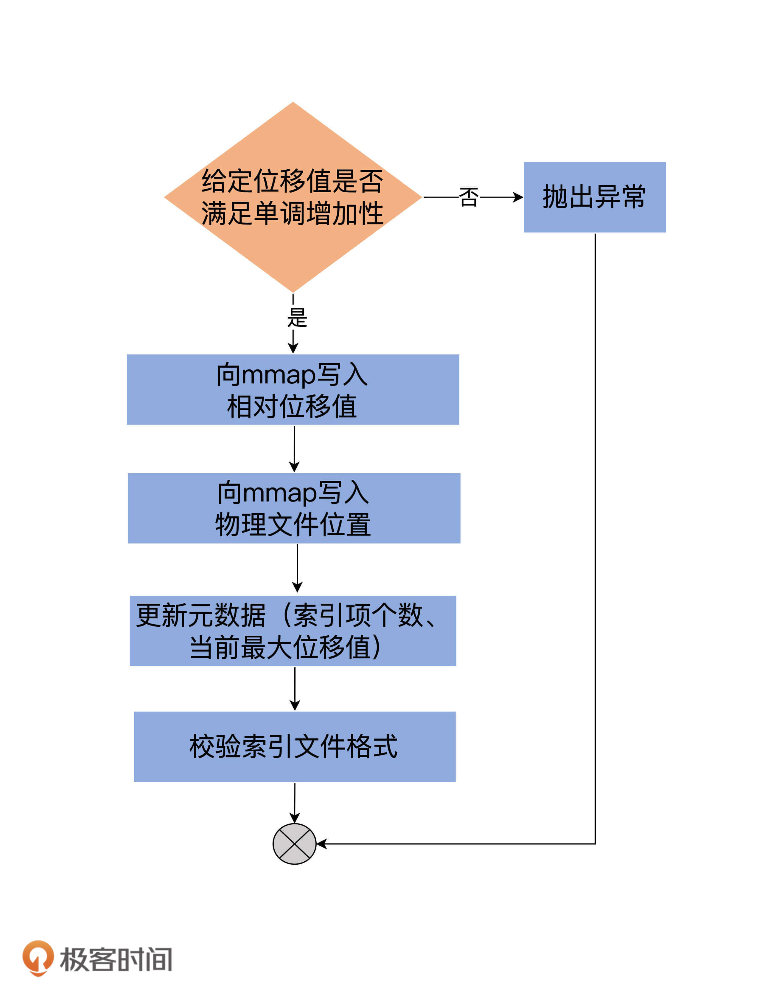
除了append方法，索引还有一个常见的操作：截断操作（Truncation）。截断操作是指，将索引文件内容直接裁剪掉一部分。比如，OffsetIndex索引文件中当前保存了100个索引项，我想只保留最开始的40个索引项。源码定义了truncateToEntries方法来实现这个需求：
private def truncateToEntries(entries: Int): Unit = {
inLock(lock) {
_entries = entries
mmap.position(_entries * entrySize)
_lastOffset = lastEntry.offset
debug(s"Truncated index ${file.getAbsolutePath} to $entries entries;" +
s" position is now ${mmap.position()} and last offset is now ${_lastOffset}")
}
}
这个方法接收entries参数，表示要截取到哪个槽，主要的逻辑实现是调用mmap的position方法。源码中的_entries * entrySize就是mmap要截取到的字节处。
下面，我来说说OffsetIndex的使用方式。
既然OffsetIndex被用来快速定位消息所在的物理文件位置，那么必然需要定义一个方法执行对应的查询逻辑。这个方法就是lookup。
def lookup(targetOffset: Long): OffsetPosition = {
maybeLock(lock) {
val idx = mmap.duplicate // 使用私有变量复制出整个索引映射区
// largestLowerBoundSlotFor方法底层使用了改进版的二分查找算法寻找对应的槽
val slot = largestLowerBoundSlotFor(idx, targetOffset, IndexSearchType.KEY)
// 如果没找到，返回一个空的位置，即物理文件位置从0开始，表示从头读日志文件
// 否则返回slot槽对应的索引项
if(slot == -1)
OffsetPosition(baseOffset, 0)
else
parseEntry(idx, slot)
}
}
我把主要的逻辑以注释的方式加到了代码中。该方法返回的，是不大于给定位移值targetOffset的最大位移值，以及对应的物理文件位置。你大致可以把这个方法，理解为位移值的FLOOR函数。
时间戳索引
说完了OffsetIndex，我们来看另一大类索引：时间戳索引，即TimeIndex。与OffsetIndex类似，我们重点关注TimeIndex中索引项的定义，以及如何写入TimeIndex索引项。
索引项的定义
与OffsetIndex不同的是，TimeIndex保存的是<时间戳，相对位移值>对。时间戳需要一个长整型来保存，相对位移值使用Integer来保存。因此，TimeIndex单个索引项需要占用12个字节。这也揭示了一个重要的事实：在保存同等数量索引项的基础上，TimeIndex会比OffsetIndex占用更多的磁盘空间。
写入索引项
TimeIndex也有append方法，只不过它叫作maybeAppend。我们来看下它的实现逻辑。
def maybeAppend(timestamp: Long, offset: Long, skipFullCheck: Boolean = false): Unit = {
inLock(lock) {
if (!skipFullCheck)
// 如果索引文件已写满，抛出异常
require(!isFull, "Attempt to append to a full time index (size = " + _entries + ").")
// 确保索引单调增加性
if (_entries != 0 && offset < lastEntry.offset)
throw new InvalidOffsetException(s"Attempt to append an offset ($offset) to slot ${_entries} no larger than" +
s" the last offset appended (${lastEntry.offset}) to ${file.getAbsolutePath}.")
// 确保时间戳的单调增加性
if (_entries != 0 && timestamp < lastEntry.timestamp)
throw new IllegalStateException(s"Attempt to append a timestamp ($timestamp) to slot ${_entries} no larger" +
s" than the last timestamp appended (${lastEntry.timestamp}) to ${file.getAbsolutePath}.")
if (timestamp > lastEntry.timestamp) {
trace(s"Adding index entry $timestamp => $offset to ${file.getAbsolutePath}.")
mmap.putLong(timestamp) // 向mmap写入时间戳
mmap.putInt(relativeOffset(offset)) // 向mmap写入相对位移值
_entries += 1 // 更新索引项个数
_lastEntry = TimestampOffset(timestamp, offset) // 更新当前最新的索引项
require(_entries * entrySize == mmap.position(), s"${_entries} entries but file position in index is ${mmap.position()}.")
}
}
}
和OffsetIndex类似，向TimeIndex写入索引项的主体逻辑，是向mmap分别写入时间戳和相对位移值。只不过，除了校验位移值的单调增加性之外，TimeIndex还会确保顺序写入的时间戳也是单调增加的。
说到这里，我想到我当年读到这段代码时候的一个想法。那个时候，这段代码还没有加上时间戳单调增加的校验逻辑，我灵机一动，萌发了向TimeIndex写入一个过期时间戳的想法。一番动手操作之后，我真的向TimeIndex索引文件中写入了一个过期时间戳和位移。
你猜结果怎样？结果是引发了消费者端程序的彻底混乱。这是因为，当消费者端程序根据时间戳信息去过滤待读取的消息时，它读到了这个过期的时间戳并拿到了错误的位移值，因此返回了错误的数据。
为此，我还给社区提交了一个Jira，当时被驳回了——理由是不允许向TimeIndex写入过期时间戳。跟你说这个趣事儿只是想说明，有的时候，读源码会诱发很多灵感或奇思妙想，而这些东西是你在平时使用过程中不会想到的。这也算是阅读源码的一大收获吧。
区别
讲到这里，这节课就接近尾声了。最后，我用一张表格汇总下OffsetIndex和TimeIndex的特点和区别，希望能够帮助你更好地理解和消化今天的重点内容。

总结
今天，我带你详细分析了OffsetIndex和TimeIndex，以及它们的不同之处。虽然OffsetIndex和TimeIndex是不同类型的索引，但Kafka内部是把二者结合使用的。通常的流程是，先使用TimeIndex寻找满足时间戳要求的消息位移值，然后再利用OffsetIndex去定位该位移值所在的物理文件位置。因此，它们其实是合作的关系。
最后，我还想提醒你一点：不要对索引文件做任何修改！我碰到过因用户擅自重命名索引文件，从而导致Broker崩溃无法启动的场景。另外，虽然Kafka能够重建索引，但是随意地删除索引文件依然是一个很危险的操作。在生产环境中，我建议你尽量不要执行这样的操作。
课后讨论
OffsetIndex中的lookup方法实现了类似于FLOOR函数的位移查找逻辑。你能否对应写一个类似于CEILING函数的位移查找逻辑，即返回不小于给定位移值targetOffset的最小位移值和对应的物理文件位置？
欢迎你在留言区畅所欲言，跟我交流讨论，也欢迎你把今天的内容分享给你的朋友。
06 请求通道：如何实现Kafka请求队列？
你好，我是胡夕。日志模块我们已经讲完了，你掌握得怎样了呢？如果你在探索源码的过程中碰到了问题，记得在留言区里写下你的困惑，我保证做到知无不言。
现在，让我们开启全新的“请求处理模块”的源码学习之旅。坦率地讲，这是我自己给Kafka源码划分的模块，在源码中可没有所谓的“请求处理模块”的提法。但我始终觉得，这样划分能够帮助你清晰地界定不同部分的源码的作用，可以让你的阅读更有针对性，学习效果也会事半功倍。
在这个模块，我会带你了解请求处理相关的重点内容，包括请求处理通道、请求处理全流程分析和请求入口类分析等。今天，我们先来学习下Kafka是如何实现请求队列的。源码中位于core/src/main/scala/kafka/network下的RequestChannel.scala文件，是主要的实现类。
当我们说到Kafka服务器端，也就是Broker的时候，往往会说它承担着消息持久化的功能，但本质上，它其实就是一个不断接收外部请求、处理请求，然后发送处理结果的Java进程。
你可能会觉得奇怪，Broker不是用Scala语言编写的吗，怎么这里又是Java进程了呢？这是因为，Scala代码被编译之后生成.class文件，它和Java代码被编译后的效果是一样的，因此，Broker启动后也仍然是一个普通的Java进程。
高效地保存排队中的请求，是确保Broker高处理性能的关键。既然这样，那你一定很想知道，Broker上的请求队列是怎么实现的呢？接下来，我们就一起看下Broker底层请求对象的建模和请求队列的实现原理，以及Broker请求处理方面的核心监控指标。
目前，Broker与Clients进行交互主要是基于Request/Response机制，所以，我们很有必要学习一下源码是如何建模或定义Request和Response的。
请求（Request）
我们先来看一下RequestChannel源码中的Request定义代码。
sealed trait BaseRequest
case object ShutdownRequest extends BaseRequest
class Request(val processor: Int,
val context: RequestContext,
val startTimeNanos: Long,
memoryPool: MemoryPool,
@volatile private var buffer: ByteBuffer,
metrics: RequestChannel.Metrics) extends BaseRequest {
......
}
简单提一句，Scala语言中的“trait”关键字，大致类似于Java中的interface（接口）。从代码中，我们可以知道，BaseRequest是一个trait接口，定义了基础的请求类型。它有两个实现类：ShutdownRequest类和Request类。
ShutdownRequest仅仅起到一个标志位的作用。当Broker进程关闭时，请求处理器（RequestHandler，在第9讲我会具体讲到它）会发送ShutdownRequest到专属的请求处理线程。该线程接收到此请求后，会主动触发一系列的Broker关闭逻辑。
Request则是真正定义各类Clients端或Broker端请求的实现类。它定义的属性包括processor、context、startTimeNanos、memoryPool、buffer和metrics。下面我们一一来看。
processor
processor是Processor线程的序号，即这个请求是由哪个Processor线程接收处理的。Broker端参数num.network.threads控制了Broker每个监听器上创建的Processor线程数。
假设你的listeners配置为PLAINTEXT://localhost:9092,SSL://localhost:9093，那么，在默认情况下，Broker启动时会创建6个Processor线程，每3个为一组，分别给listeners参数中设置的两个监听器使用，每组的序号分别是0、1、2。
你可能会问，为什么要保存Processor线程序号呢？这是因为，当Request被后面的I/O线程处理完成后，还要依靠Processor线程发送Response给请求发送方，因此，Request中必须记录它之前是被哪个Processor线程接收的。另外，这里我们要先明确一点：Processor线程仅仅是网络接收线程，不会执行真正的Request请求处理逻辑，那是I/O线程负责的事情。
context
context是用来标识请求上下文信息的。Kafka源码中定义了RequestContext类，顾名思义，它保存了有关Request的所有上下文信息。RequestContext类定义在clients工程中，下面是它主要的逻辑代码。我用注释的方式解释下主体代码的含义。
public class RequestContext implements AuthorizableRequestContext {
public final RequestHeader header; // Request头部数据，主要是一些对用户不可见的元数据信息，如Request类型、Request API版本、clientId等
public final String connectionId; // Request发送方的TCP连接串标识，由Kafka根据一定规则定义，主要用于表示TCP连接
public final InetAddress clientAddress; // Request发送方IP地址
public final KafkaPrincipal principal; // Kafka用户认证类，用于认证授权
public final ListenerName listenerName; // 监听器名称，可以是预定义的监听器（如PLAINTEXT），也可自行定义
public final SecurityProtocol securityProtocol; // 安全协议类型，目前支持4种：PLAINTEXT、SSL、SASL_PLAINTEXT、SASL_SSL
public final ClientInformation clientInformation; // 用户自定义的一些连接方信息
// 从给定的ByteBuffer中提取出Request和对应的Size值
public RequestAndSize parseRequest(ByteBuffer buffer) {
......
}
// 其他Getter方法
......
}
startTimeNanos
startTimeNanos记录了Request对象被创建的时间，主要用于各种时间统计指标的计算。
请求对象中的很多JMX指标，特别是时间类的统计指标，都需要使用startTimeNanos字段。你要注意的是，它是以纳秒为单位的时间戳信息，可以实现非常细粒度的时间统计精度。
memoryPool
memoryPool表示源码定义的一个非阻塞式的内存缓冲区，主要作用是避免Request对象无限使用内存。
当前，该内存缓冲区的接口类和实现类，分别是MemoryPool和SimpleMemoryPool。你可以重点关注下SimpleMemoryPool的tryAllocate方法，看看它是怎么为Request对象分配内存的。
buffer
buffer是真正保存Request对象内容的字节缓冲区。Request发送方必须按照Kafka RPC协议规定的格式向该缓冲区写入字节，否则将抛出InvalidRequestException异常。这个逻辑主要是由RequestContext的parseRequest方法实现的。
public RequestAndSize parseRequest(ByteBuffer buffer) {
if (isUnsupportedApiVersionsRequest()) {
// 不支持的ApiVersions请求类型被视为是V0版本的请求，并且不做解析操作，直接返回
ApiVersionsRequest apiVersionsRequest = new ApiVersionsRequest(new ApiVersionsRequestData(), (short) 0, header.apiVersion());
return new RequestAndSize(apiVersionsRequest, 0);
} else {
// 从请求头部数据中获取ApiKeys信息
ApiKeys apiKey = header.apiKey();
try {
// 从请求头部数据中获取版本信息
short apiVersion = header.apiVersion();
// 解析请求
Struct struct = apiKey.parseRequest(apiVersion, buffer);
AbstractRequest body = AbstractRequest.parseRequest(apiKey, apiVersion, struct);
// 封装解析后的请求对象以及请求大小返回
return new RequestAndSize(body, struct.sizeOf());
} catch (Throwable ex) {
// 解析过程中出现任何问题都视为无效请求，抛出异常
throw new InvalidRequestException("Error getting request for apiKey: " + apiKey +
", apiVersion: " + header.apiVersion() +
", connectionId: " + connectionId +
", listenerName: " + listenerName +
", principal: " + principal, ex);
}
}
}
就像前面说过的，这个方法的主要目的是从ByteBuffer中提取对应的Request对象以及它的大小。
首先，代码会判断该Request是不是Kafka不支持的ApiVersions请求版本。如果是不支持的，就直接构造一个V0版本的ApiVersions请求，然后返回。否则的话，就继续下面的代码。
这里我稍微解释一下ApiVersions请求的作用。当Broker接收到一个ApiVersionsRequest的时候，它会返回Broker当前支持的请求类型列表，包括请求类型名称、支持的最早版本号和最新版本号。如果你查看Kafka的bin目录的话，你应该能找到一个名为kafka-broker-api-versions.sh的脚本工具。它的实现原理就是，构造ApiVersionsRequest对象，然后发送给对应的Broker。
你可能会问，如果是ApiVersions类型的请求，代码中为什么要判断一下它的版本呢？这是因为，和处理其他类型请求不同的是，Kafka必须保证版本号比最新支持版本还要高的ApiVersions请求也能被处理。这主要是考虑到了客户端和服务器端版本的兼容问题。客户端发送请求给Broker的时候，很可能不知道Broker到底支持哪些版本的请求，它需要使用ApiVersionsRequest去获取完整的请求版本支持列表。但是，如果不做这个判断，Broker可能无法处理客户端发送的ApiVersionsRequest。
通过这个检查之后，代码会从请求头部数据中获取ApiKeys信息以及对应的版本信息，然后解析请求，最后封装解析后的请求对象以及请求大小，并返回。
metrics
metrics是Request相关的各种监控指标的一个管理类。它里面构建了一个Map，封装了所有的请求JMX指标。除了上面这些重要的字段属性之外，Request类中的大部分代码都是与监控指标相关的，后面我们再详细说。
响应（Response）
说完了Request代码，我们再来说下Response。Kafka为Response定义了1个抽象父类和5个具体子类，如下图所示：
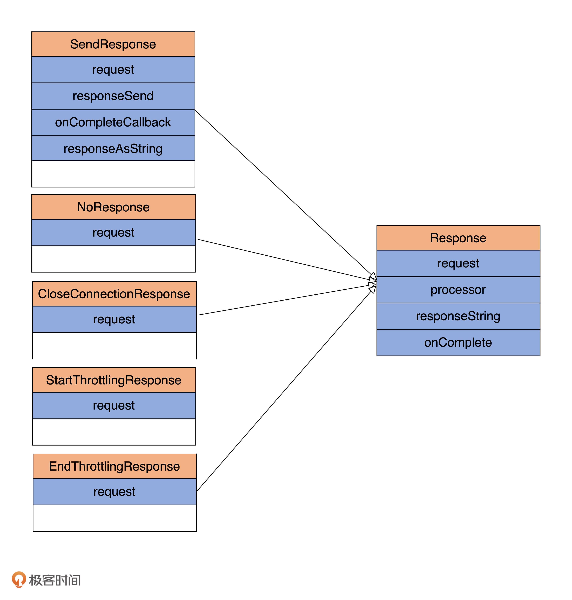
看到这么多类，你可能会有点蒙，这些都是干吗的呢？别着急，现在我分别给你介绍下各个类的作用。
- Response：定义Response的抽象基类。每个Response对象都包含了对应的Request对象。这个类里最重要的方法是onComplete方法，用来实现每类Response被处理后需要执行的回调逻辑。
- SendResponse：Kafka大多数Request处理完成后都需要执行一段回调逻辑，SendResponse就是保存返回结果的Response子类。里面最重要的字段是onCompletionCallback，即指定处理完成之后的回调逻辑。
- NoResponse：有些Request处理完成后无需单独执行额外的回调逻辑。NoResponse就是为这类Response准备的。
- CloseConnectionResponse：用于出错后需要关闭TCP连接的场景，此时返回CloseConnectionResponse给Request发送方，显式地通知它关闭连接。
- StartThrottlingResponse：用于通知Broker的Socket Server组件（后面几节课我会讲到它）某个TCP连接通信通道开始被限流（throttling）。
- EndThrottlingResponse：与StartThrottlingResponse对应，通知Broker的SocketServer组件某个TCP连接通信通道的限流已结束。
你可能又会问了：“这么多类，我都要掌握吗？”其实是不用的。你只要了解SendResponse表示正常需要发送Response，而NoResponse表示无需发送Response就可以了。至于CloseConnectionResponse，它是用于标识关闭连接通道的Response。而后面两个Response类不是很常用，它们仅仅在对Socket连接进行限流时，才会派上用场，这里我就不具体展开讲了。
Okay，现在，我们看下Response相关的代码部分。
abstract class Response(val request: Request) {
locally {
val nowNs = Time.SYSTEM.nanoseconds
request.responseCompleteTimeNanos = nowNs
if (request.apiLocalCompleteTimeNanos == -1L)
request.apiLocalCompleteTimeNanos = nowNs
}
def processor: Int = request.processor
def responseString: Option[String] = Some("")
def onComplete: Option[Send => Unit] = None
override def toString: String
}
这个抽象基类只有一个属性字段：request。这就是说，每个Response对象都要保存它对应的Request对象。我在前面说过，onComplete方法是调用指定回调逻辑的地方。SendResponse类就是复写（Override）了这个方法，如下所示：
class SendResponse(request: Request,
val responseSend: Send,
val responseAsString: Option[String],
val onCompleteCallback: Option[Send => Unit])
extends Response(request) {
......
override def onComplete: Option[Send => Unit] = onCompleteCallback
}
这里的SendResponse类继承了Response父类，并重新定义了onComplete方法。复写的逻辑很简单，就是指定输入参数onCompleteCallback。其实方法本身没有什么可讲的，反倒是这里的Scala语法值得多说几句。
Scala中的Unit类似于Java中的void，而“Send => Unit”表示一个方法。这个方法接收一个Send类实例，然后执行一段代码逻辑。Scala是函数式编程语言，函数在Scala中是“一等公民”，因此，你可以把一个函数作为一个参数传给另一个函数，也可以把函数作为结果返回。这里的onComplete方法就应用了第二种用法，也就是把函数赋值给另一个函数，并作为结果返回。这样做的好处在于，你可以灵活地变更onCompleteCallback来实现不同的回调逻辑。
RequestChannel
RequestChannel，顾名思义，就是传输Request/Response的通道。有了Request和Response的基础，下面我们可以学习RequestChannel类的实现了。
我们先看下RequestChannel类的定义和重要的字段属性。
class RequestChannel(val queueSize: Int, val metricNamePrefix : String) extends KafkaMetricsGroup {
import RequestChannel._
val metrics = new RequestChannel.Metrics
private val requestQueue = new ArrayBlockingQueue[BaseRequest](queueSize)
private val processors = new ConcurrentHashMap[Int, Processor]()
val requestQueueSizeMetricName = metricNamePrefix.concat(RequestQueueSizeMetric)
val responseQueueSizeMetricName = metricNamePrefix.concat(ResponseQueueSizeMetric)
......
}
RequestChannel类实现了KafkaMetricsGroup trait，后者封装了许多实用的指标监控方法，比如，newGauge方法用于创建数值型的监控指标，newHistogram方法用于创建直方图型的监控指标。
就RequestChannel类本身的主体功能而言，它定义了最核心的3个属性：requestQueue、queueSize和processors。下面我分别解释下它们的含义。
每个RequestChannel对象实例创建时，会定义一个队列来保存Broker接收到的各类请求，这个队列被称为请求队列或Request队列。Kafka使用Java提供的阻塞队列ArrayBlockingQueue实现这个请求队列，并利用它天然提供的线程安全性来保证多个线程能够并发安全高效地访问请求队列。在代码中，这个队列由变量requestQueue定义。
而字段queueSize就是Request队列的最大长度。当Broker启动时，SocketServer组件会创建RequestChannel对象，并把Broker端参数queued.max.requests赋值给queueSize。因此，在默认情况下，每个RequestChannel上的队列长度是500。
字段processors封装的是RequestChannel下辖的Processor线程池。每个Processor线程负责具体的请求处理逻辑。下面我详细说说Processor的管理。
Processor管理
上面代码中的第六行创建了一个Processor线程池——当然，它是用Java的ConcurrentHashMap数据结构去保存的。Map中的Key就是前面我们说的processor序号，而Value则对应具体的Processor线程对象。
这个线程池的存在告诉了我们一个事实：当前Kafka Broker端所有网络线程都是在RequestChannel中维护的。既然创建了线程池，代码中必然要有管理线程池的操作。RequestChannel中的addProcessor和removeProcessor方法就是做这些事的。
def addProcessor(processor: Processor): Unit = {
// 添加Processor到Processor线程池
if (processors.putIfAbsent(processor.id, processor) != null)
warn(s"Unexpected processor with processorId ${processor.id}")
newGauge(responseQueueSizeMetricName,
() => processor.responseQueueSize,
// 为给定Processor对象创建对应的监控指标
Map(ProcessorMetricTag -> processor.id.toString))
}
def removeProcessor(processorId: Int): Unit = {
processors.remove(processorId) // 从Processor线程池中移除给定Processor线程
removeMetric(responseQueueSizeMetricName, Map(ProcessorMetricTag -> processorId.toString)) // 移除对应Processor的监控指标
}
代码很简单，基本上就是调用ConcurrentHashMap的putIfAbsent和remove方法分别实现增加和移除线程。每当Broker启动时，它都会调用addProcessor方法，向RequestChannel对象添加num.network.threads个Processor线程。
如果查询Kafka官方文档的话，你就会发现，num.network.threads这个参数的更新模式（Update Mode）是Cluster-wide。这就说明，Kafka允许你动态地修改此参数值。比如，Broker启动时指定num.network.threads为8，之后你通过kafka-configs命令将其修改为3。显然，这个操作会减少Processor线程池中的线程数量。在这个场景下，removeProcessor方法会被调用。
处理Request和Response
除了Processor的管理之外，RequestChannel的另一个重要功能，是处理Request和Response，具体表现为收发Request和发送Response。比如，收发Request的方法有sendRequest和receiveRequest：
def sendRequest(request: RequestChannel.Request): Unit = {
requestQueue.put(request)
}
def receiveRequest(timeout: Long): RequestChannel.BaseRequest =
requestQueue.poll(timeout, TimeUnit.MILLISECONDS)
def receiveRequest(): RequestChannel.BaseRequest =
requestQueue.take()
所谓的发送Request，仅仅是将Request对象放置在Request队列中而已，而接收Request则是从队列中取出Request。整个流程构成了一个迷你版的“生产者-消费者”模式，然后依靠ArrayBlockingQueue的线程安全性来确保整个过程的线程安全，如下所示：

对于Response而言，则没有所谓的接收Response，只有发送Response，即sendResponse方法。sendResponse是啥意思呢？其实就是把Response对象发送出去，也就是将Response添加到Response队列的过程。
def sendResponse(response: RequestChannel.Response): Unit = {
if (isTraceEnabled) { // 构造Trace日志输出字符串
val requestHeader = response.request.header
val message = response match {
case sendResponse: SendResponse =>
s"Sending ${requestHeader.apiKey} response to client ${requestHeader.clientId} of ${sendResponse.responseSend.size} bytes."
case _: NoOpResponse =>
s"Not sending ${requestHeader.apiKey} response to client ${requestHeader.clientId} as it's not required."
case _: CloseConnectionResponse =>
s"Closing connection for client ${requestHeader.clientId} due to error during ${requestHeader.apiKey}."
case _: StartThrottlingResponse =>
s"Notifying channel throttling has started for client ${requestHeader.clientId} for ${requestHeader.apiKey}"
case _: EndThrottlingResponse =>
s"Notifying channel throttling has ended for client ${requestHeader.clientId} for ${requestHeader.apiKey}"
}
trace(message)
}
// 找出response对应的Processor线程，即request当初是由哪个Processor线程处理的
val processor = processors.get(response.processor)
// 将response对象放置到对应Processor线程的Response队列中
if (processor != null) {
processor.enqueueResponse(response)
}
}
sendResponse方法的逻辑其实非常简单。
前面的一大段if代码块仅仅是构造Trace日志要输出的内容。根据不同类型的Response，代码需要确定要输出的Trace日志内容。
接着，代码会找出Response对象对应的Processor线程。当Processor处理完某个Request后，会把自己的序号封装进对应的Response对象。一旦找出了之前是由哪个Processor线程处理的，代码直接调用该Processor的enqueueResponse方法，将Response放入Response队列中，等待后续发送。
监控指标实现
RequestChannel类还定义了丰富的监控指标，用于实时动态地监测Request和Response的性能表现。我们来看下具体指标项都有哪些。
object RequestMetrics {
val consumerFetchMetricName = ApiKeys.FETCH.name + "Consumer"
val followFetchMetricName = ApiKeys.FETCH.name + "Follower"
val RequestsPerSec = "RequestsPerSec"
val RequestQueueTimeMs = "RequestQueueTimeMs"
val LocalTimeMs = "LocalTimeMs"
val RemoteTimeMs = "RemoteTimeMs"
val ThrottleTimeMs = "ThrottleTimeMs"
val ResponseQueueTimeMs = "ResponseQueueTimeMs"
val ResponseSendTimeMs = "ResponseSendTimeMs"
val TotalTimeMs = "TotalTimeMs"
val RequestBytes = "RequestBytes"
val MessageConversionsTimeMs = "MessageConversionsTimeMs"
val TemporaryMemoryBytes = "TemporaryMemoryBytes"
val ErrorsPerSec = "ErrorsPerSec"
}
可以看到，指标有很多，不过别有压力，我们只要掌握几个重要的就行了。
- RequestsPerSec：每秒处理的Request数，用来评估Broker的繁忙状态。
- RequestQueueTimeMs：计算Request在Request队列中的平均等候时间，单位是毫秒。倘若Request在队列的等待时间过长，你通常需要增加后端I/O线程的数量，来加快队列中Request的拿取速度。
- LocalTimeMs：计算Request实际被处理的时间，单位是毫秒。一旦定位到这个监控项的值很大，你就需要进一步研究Request被处理的逻辑了，具体分析到底是哪一步消耗了过多的时间。
- RemoteTimeMs：Kafka的读写请求（PRODUCE请求和FETCH请求）逻辑涉及等待其他Broker操作的步骤。RemoteTimeMs计算的，就是等待其他Broker完成指定逻辑的时间。因为等待的是其他Broker，因此被称为Remote Time。这个监控项非常重要！Kafka生产环境中设置acks=all的Producer程序发送消息延时高的主要原因，往往就是Remote Time高。因此，如果你也碰到了这样的问题，不妨先定位一下Remote Time是不是瓶颈。
- TotalTimeMs：计算Request被处理的完整流程时间。这是最实用的监控指标，没有之一！毕竟，我们通常都是根据TotalTimeMs来判断系统是否出现问题的。一旦发现了问题，我们才会利用前面的几个监控项进一步定位问题的原因。
RequestChannel定义了updateMetrics方法，用于实现监控项的更新，因为逻辑非常简单，我就不展开说了，你可以自己阅读一下。
总结
好了，又到了总结时间。
今天，我带你阅读了Kafka请求队列的实现源码。围绕这个问题，我们学习了几个重点内容。
- Request：定义了Kafka Broker支持的各类请求。
- Response：定义了与Request对应的各类响应。
- RequestChannel：实现了Kafka Request队列。
- 监控指标：封装了与Request队列相关的重要监控指标。

希望你结合今天所讲的内容思考一下，Request和Response在请求通道甚至是SocketServer中的流转过程，这将极大地帮助你了解Kafka是如何处理外部发送的请求的。当然，如果你觉得这个有难度，也不必着急，因为后面我会专门用一节课来告诉你这些内容。
课后讨论
如果我想监控Request队列当前的使用情况（比如当前已保存了多少个Request），你可以结合源码指出，应该使用哪个监控指标吗？
欢迎你在留言区畅所欲言，跟我交流讨论，也欢迎你把今天的内容分享给你的朋友。
07 SocketServer（上）：Kafka到底是怎么应用NIO实现网络通信的？
你好，我是胡夕。这节课我们来说说Kafka底层的NIO通信机制源码。
在谈到Kafka高性能、高吞吐量实现原理的时候，很多人都对它使用了Java NIO这件事津津乐道。实际上，搞懂“Kafka究竟是怎么应用NIO来实现网络通信的”，不仅是我们掌握Kafka请求全流程处理的前提条件，对我们了解Reactor模式的实现大有裨益，而且还能帮助我们解决很多实际问题。
比如说，当Broker处理速度很慢、需要优化的时候，你只有明确知道SocketServer组件的工作原理，才能制定出恰当的解决方案，并有针对性地给出对应的调优参数。
那么，今天，我们就一起拿下这个至关重要的NIO通信机制吧。
网络通信层
在深入学习Kafka各个网络组件之前，我们先从整体上看一下完整的网络通信层架构，如下图所示：

可以看出，Kafka网络通信组件主要由两大部分构成：SocketServer和KafkaRequestHandlerPool。
SocketServer组件是核心，主要实现了Reactor模式，用于处理外部多个Clients（这里的Clients指的是广义的Clients，可能包含Producer、Consumer或其他Broker）的并发请求，并负责将处理结果封装进Response中，返还给Clients。
KafkaRequestHandlerPool组件就是我们常说的I/O线程池，里面定义了若干个I/O线程，用于执行真实的请求处理逻辑。
两者的交互点在于SocketServer中定义的RequestChannel对象和Processor线程。对了，我所说的线程，在代码中本质上都是Runnable类型，不管是Acceptor类、Processor类，还是后面我们会单独讨论的KafkaRequestHandler类。
讲到这里，我稍微提示你一下。在第9节课，我会给出KafkaRequestHandlerPool线程池的详细介绍。但你现在需要知道的是，KafkaRequestHandlerPool线程池定义了多个KafkaRequestHandler线程，而KafkaRequestHandler线程是真正处理请求逻辑的地方。和KafkaRequestHandler相比，今天所说的Acceptor和Processor线程从某种意义上来说，只能算是请求和响应的“搬运工”罢了。
了解了完整的网络通信层架构之后，我们要重点关注一下SocketServer组件。这个组件是Kafka网络通信层中最重要的子模块。它下辖的Acceptor线程、Processor线程和RequestChannel等对象，都是实施网络通信的重要组成部分。你可能会感到意外的是，这套线程组合在源码中有多套，分别具有不同的用途。在下节课，我会具体跟你分享一下，不同的线程组合会被应用到哪些实际场景中。
下面我们进入到SocketServer组件的学习。
SocketServer概览
SocketServer组件的源码位于Kafka工程的core包下，具体位置是src/main/scala/kafka/network路径下的SocketServer.scala文件。
SocketServer.scala可谓是元老级的源码文件了。在Kafka的源码演进历史中，很多代码文件进进出出，这个文件却一直“坚强地活着”，而且还在不断完善。如果翻开它的Git修改历史，你会发现，它最早的修改提交历史可回溯到2011年8月，足见它的资历之老。
目前，SocketServer.scala文件是一个近2000行的大文件，共有8个代码部分。我使用一张思维导图帮你梳理下：
乍一看组件有很多，但你也不必担心，我先对这些组件做个简单的介绍，然后我们重点学习一下Acceptor类和Processor类的源码。毕竟，这两个类是实现网络通信的关键部件。另外，今天我给出的都是SocketServer组件的基本情况介绍，下节课我再详细向你展示它的定义。
- AbstractServerThread类：这是Acceptor线程和Processor线程的抽象基类，定义了这两个线程的公有方法，如shutdown（关闭线程）等。我不会重点展开这个抽象类的代码，但你要重点关注下CountDownLatch类在线程启动和线程关闭时的作用。
如果你苦于寻找Java线程安全编程的最佳实践案例，那一定不要错过CountDownLatch这个类。Kafka中的线程控制代码大量使用了基于CountDownLatch的编程技术，依托于它来实现优雅的线程启动、线程关闭等操作。因此，我建议你熟练掌握它们，并应用到你日后的工作当中去。
Acceptor线程类：这是接收和创建外部TCP连接的线程。每个SocketServer实例只会创建一个Acceptor线程。它的唯一目的就是创建连接，并将接收到的Request传递给下游的Processor线程处理。
Processor线程类：这是处理单个TCP连接上所有请求的线程。每个SocketServer实例默认创建若干个（num.network.threads）Processor线程。Processor线程负责将接收到的Request添加到RequestChannel的Request队列上，同时还负责将Response返还给Request发送方。
Processor伴生对象类：仅仅定义了一些与Processor线程相关的常见监控指标和常量等，如Processor线程空闲率等。
ConnectionQuotas类：是控制连接数配额的类。我们能够设置单个IP创建Broker连接的最大数量，以及单个Broker能够允许的最大连接数。
TooManyConnectionsException类：SocketServer定义的一个异常类，用于标识连接数配额超限情况。
SocketServer类：实现了对以上所有组件的管理和操作，如创建和关闭Acceptor、Processor线程等。
SocketServer伴生对象类：定义了一些有用的常量，同时明确了SocketServer组件中的哪些参数是允许动态修改的。
Acceptor线程
经典的Reactor模式有个Dispatcher的角色，接收外部请求并分发给下面的实际处理线程。在Kafka中，这个Dispatcher就是Acceptor线程。
我们看下它的定义：
private[kafka] class Acceptor(val endPoint: EndPoint,
val sendBufferSize: Int,
val recvBufferSize: Int,
brokerId: Int,
connectionQuotas: ConnectionQuotas,
metricPrefix: String) extends AbstractServerThread(connectionQuotas) with KafkaMetricsGroup {
// 创建底层的NIO Selector对象
// Selector对象负责执行底层实际I/O操作，如监听连接创建请求、读写请求等
private val nioSelector = NSelector.open()
// Broker端创建对应的ServerSocketChannel实例
// 后续把该Channel向上一步的Selector对象注册
val serverChannel = openServerSocket(endPoint.host, endPoint.port)
// 创建Processor线程池，实际上是Processor线程数组
private val processors = new ArrayBuffer[Processor]()
private val processorsStarted = new AtomicBoolean
private val blockedPercentMeter = newMeter(s"${metricPrefix}AcceptorBlockedPercent",
"blocked time", TimeUnit.NANOSECONDS, Map(ListenerMetricTag -> endPoint.listenerName.value))
......
}
从定义来看，Acceptor线程接收5个参数，其中比较重要的有3个。
- endPoint。它就是你定义的Kafka Broker连接信息，比如PLAINTEXT://localhost:9092。Acceptor需要用到endPoint包含的主机名和端口信息创建Server Socket。
- sendBufferSize。它设置的是SocketOptions的SO_SNDBUF，即用于设置出站（Outbound）网络I/O的底层缓冲区大小。该值默认是Broker端参数socket.send.buffer.bytes的值，即100KB。
- recvBufferSize。它设置的是SocketOptions的SO_RCVBUF，即用于设置入站（Inbound）网络I/O的底层缓冲区大小。该值默认是Broker端参数socket.receive.buffer.bytes的值，即100KB。
说到这儿，我想给你提一个优化建议。如果在你的生产环境中，Clients与Broker的通信网络延迟很大（比如RTT>10ms），那么我建议你调大控制缓冲区大小的两个参数，也就是sendBufferSize和recvBufferSize。通常来说，默认值100KB太小了。
除了类定义的字段，Acceptor线程还有两个非常关键的自定义属性。
- nioSelector：是Java NIO库的Selector对象实例，也是后续所有网络通信组件实现Java NIO机制的基础。如果你不熟悉Java NIO，那么我推荐你学习这个系列教程：Java NIO。
- processors：网络Processor线程池。Acceptor线程在初始化时，需要创建对应的网络Processor线程池。可见，Processor线程是在Acceptor线程中管理和维护的。
既然如此，那它就必须要定义相关的方法。Acceptor代码中，提供了3个与Processor相关的方法，分别是addProcessors、startProcessors和removeProcessors。鉴于它们的代码都非常简单，我用注释的方式给出主体逻辑的步骤：
addProcessors
private[network] def addProcessors(
newProcessors: Buffer[Processor], processorThreadPrefix: String): Unit = synchronized {
processors ++= newProcessors // 添加一组新的Processor线程
if (processorsStarted.get) // 如果Processor线程池已经启动
startProcessors(newProcessors, processorThreadPrefix) // 启动新的Processor线程
}
startProcessors
private[network] def startProcessors(processorThreadPrefix: String): Unit = synchronized {
if (!processorsStarted.getAndSet(true)) { // 如果Processor线程池未启动
startProcessors(processors, processorThreadPrefix) // 启动给定的Processor线程
}
}
private def startProcessors(processors: Seq[Processor], processorThreadPrefix: String): Unit = synchronized {
processors.foreach { processor => // 依次创建并启动Processor线程
// 线程命名规范：processor线程前缀-kafka-network-thread-broker序号-监听器名称-安全协议-Processor序号
// 假设为序号为0的Broker设置PLAINTEXT://localhost:9092作为连接信息，那么3个Processor线程名称分别为：
// data-plane-kafka-network-thread-0-ListenerName(PLAINTEXT)-PLAINTEXT-0
// data-plane-kafka-network-thread-0-ListenerName(PLAINTEXT)-PLAINTEXT-1
// data-plane-kafka-network-thread-0-ListenerName(PLAINTEXT)-PLAINTEXT-2
KafkaThread.nonDaemon(s"${processorThreadPrefix}-kafka-network-thread-$brokerId-${endPoint.listenerName}-${endPoint.securityProtocol}-${processor.id}", processor).start()
}
}
removeProcessors
private[network] def removeProcessors(removeCount: Int, requestChannel: RequestChannel): Unit = synchronized {
// 获取Processor线程池中最后removeCount个线程
val toRemove = processors.takeRight(removeCount)
// 移除最后removeCount个线程
processors.remove(processors.size - removeCount, removeCount)
// 关闭最后removeCount个线程
toRemove.foreach(_.shutdown())
// 在RequestChannel中移除这些Processor
toRemove.foreach(processor => requestChannel.removeProcessor(processor.id))
}
为了更加形象地展示这些方法的逻辑，我画了一张图，它同时包含了这3个方法的执行流程，如下图所示：
刚才我们学到的addProcessors、startProcessors和removeProcessors方法是管理Processor线程用的。应该这么说，有了这三个方法，Acceptor类就具备了基本的Processor线程池管理功能。不过，Acceptor类逻辑的重头戏其实是run方法，它是处理Reactor模式中分发逻辑的主要实现方法。下面我使用注释的方式给出run方法的大体运行逻辑，如下所示：
def run(): Unit = {
//注册OP_ACCEPT事件
serverChannel.register(nioSelector, SelectionKey.OP_ACCEPT)
// 等待Acceptor线程启动完成
startupComplete()
try {
// 当前使用的Processor序号，从0开始，最大值是num.network.threads - 1
var currentProcessorIndex = 0
while (isRunning) {
try {
// 每500毫秒获取一次就绪I/O事件
val ready = nioSelector.select(500)
if (ready > 0) { // 如果有I/O事件准备就绪
val keys = nioSelector.selectedKeys()
val iter = keys.iterator()
while (iter.hasNext && isRunning) {
try {
val key = iter.next
iter.remove()
if (key.isAcceptable) {
// 调用accept方法创建Socket连接
accept(key).foreach { socketChannel =>
var retriesLeft = synchronized(processors.length)
var processor: Processor = null
do {
retriesLeft -= 1
// 指定由哪个Processor线程进行处理
processor = synchronized {
currentProcessorIndex = currentProcessorIndex % processors.length
processors(currentProcessorIndex)
}
// 更新Processor线程序号
currentProcessorIndex += 1
} while (!assignNewConnection(socketChannel, processor, retriesLeft == 0)) // Processor是否接受了该连接
}
} else
throw new IllegalStateException("Unrecognized key state for acceptor thread.")
} catch {
case e: Throwable => error("Error while accepting connection", e)
}
}
}
}
catch {
case e: ControlThrowable => throw e
case e: Throwable => error("Error occurred", e)
}
}
} finally { // 执行各种资源关闭逻辑
debug("Closing server socket and selector.")
CoreUtils.swallow(serverChannel.close(), this, Level.ERROR)
CoreUtils.swallow(nioSelector.close(), this, Level.ERROR)
shutdownComplete()
}
}
看上去代码似乎有点多，我再用一张图来说明一下run方法的主要处理逻辑吧。这里的关键点在于，Acceptor线程会先为每个入站请求确定要处理它的Processor线程，然后调用assignNewConnection方法令Processor线程创建与发送方的连接。

基本上，Acceptor线程使用Java NIO的Selector + SocketChannel的方式循环地轮询准备就绪的I/O事件。这里的I/O事件，主要是指网络连接创建事件，即代码中的SelectionKey.OP_ACCEPT。一旦接收到外部连接请求，Acceptor就会指定一个Processor线程，并将该请求交由它，让它创建真正的网络连接。总的来说，Acceptor线程就做这么点事。
Processor线程
下面我们进入到Processor线程源码的学习。
如果说Acceptor是做入站连接处理的，那么，Processor代码则是真正创建连接以及分发请求的地方。显然，它要做的事情远比Acceptor要多得多。我先给出Processor线程的run方法，你大致感受一下：
override def run(): Unit = {
startupComplete() // 等待Processor线程启动完成
try {
while (isRunning) {
try {
configureNewConnections() // 创建新连接
// register any new responses for writing
processNewResponses() // 发送Response，并将Response放入到inflightResponses临时队列
poll() // 执行NIO poll，获取对应SocketChannel上准备就绪的I/O操作
processCompletedReceives() // 将接收到的Request放入Request队列
processCompletedSends() // 为临时Response队列中的Response执行回调逻辑
processDisconnected() // 处理因发送失败而导致的连接断开
closeExcessConnections() // 关闭超过配额限制部分的连接
} catch {
case e: Throwable => processException("Processor got uncaught exception.", e)
}
}
} finally { // 关闭底层资源
debug(s"Closing selector - processor $id")
CoreUtils.swallow(closeAll(), this, Level.ERROR)
shutdownComplete()
}
}
run方法逻辑被切割得相当好，各个子方法的边界非常清楚。因此，从整体上看，该方法呈现出了面向对象领域中非常难得的封装特性。我使用一张图来展示下该方法要做的事情：
在详细说run方法之前，我们先来看下Processor线程初始化时要做的事情。
每个Processor线程在创建时都会创建3个队列。注意，这里的队列是广义的队列，其底层使用的数据结构可能是阻塞队列，也可能是一个Map对象而已，如下所示：
private val newConnections = new ArrayBlockingQueue[SocketChannel](connectionQueueSize)
private val inflightResponses = mutable.Map[String, RequestChannel.Response]()
private val responseQueue = new LinkedBlockingDeque[RequestChannel.Response]()
队列一：newConnections
它保存的是要创建的新连接信息，具体来说，就是SocketChannel对象。这是一个默认上限是20的队列，而且，目前代码中硬编码了队列的长度，因此，你无法变更这个队列的长度。
每当Processor线程接收新的连接请求时，都会将对应的SocketChannel放入这个队列。后面在创建连接时（也就是调用configureNewConnections时），就从该队列中取出SocketChannel，然后注册新的连接。
队列二：inflightResponses
严格来说，这是一个临时Response队列。当Processor线程将Response返还给Request发送方之后，还要将Response放入这个临时队列。
为什么需要这个临时队列呢？这是因为，有些Response回调逻辑要在Response被发送回发送方之后，才能执行，因此需要暂存在一个临时队列里面。这就是inflightResponses存在的意义。
队列三：responseQueue
看名字我们就可以知道，这是Response队列，而不是Request队列。这告诉了我们一个事实：每个Processor线程都会维护自己的Response队列，而不是像网上的某些文章说的，Response队列是线程共享的或是保存在RequestChannel中的。Response队列里面保存着需要被返还给发送方的所有Response对象。
好了，了解了这些之后，现在我们来深入地查看一下Processor线程的工作逻辑。根据run方法中的方法调用顺序，我先来介绍下configureNewConnections方法。
configureNewConnections
就像我前面所说的，configureNewConnections负责处理新连接请求。接下来，我用注释的方式给出这个方法的主体逻辑：
private def configureNewConnections(): Unit = {
var connectionsProcessed = 0 // 当前已配置的连接数计数器
while (connectionsProcessed < connectionQueueSize && !newConnections.isEmpty) { // 如果没超配额并且有待处理新连接
val channel = newConnections.poll() // 从连接队列中取出SocketChannel
try {
debug(s"Processor $id listening to new connection from ${channel.socket.getRemoteSocketAddress}")
// 用给定Selector注册该Channel
// 底层就是调用Java NIO的SocketChannel.register(selector, SelectionKey.OP_READ)
selector.register(connectionId(channel.socket), channel)
connectionsProcessed += 1 // 更新计数器
} catch {
case e: Throwable =>
val remoteAddress = channel.socket.getRemoteSocketAddress
close(listenerName, channel)
processException(s"Processor $id closed connection from $remoteAddress", e)
}
}
}
该方法最重要的逻辑是调用selector的register来注册SocketChannel。每个Processor线程都维护了一个Selector类实例。Selector类是社区提供的一个基于Java NIO Selector的接口，用于执行非阻塞多通道的网络I/O操作。在核心功能上，Kafka提供的Selector和Java提供的是一致的。
processNewResponses
它负责发送Response给Request发送方，并且将Response放入临时Response队列。处理逻辑如下：
private def processNewResponses(): Unit = {
var currentResponse: RequestChannel.Response = null
while ({currentResponse = dequeueResponse(); currentResponse != null}) { // Response队列中存在待处理Response
val channelId = currentResponse.request.context.connectionId // 获取连接通道ID
try {
currentResponse match {
case response: NoOpResponse => // 无需发送Response
updateRequestMetrics(response)
trace(s"Socket server received empty response to send, registering for read: $response")
handleChannelMuteEvent(channelId, ChannelMuteEvent.RESPONSE_SENT)
tryUnmuteChannel(channelId)
case response: SendResponse => // 发送Response并将Response放入inflightResponses
sendResponse(response, response.responseSend)
case response: CloseConnectionResponse => // 关闭对应的连接
updateRequestMetrics(response)
trace("Closing socket connection actively according to the response code.")
close(channelId)
case _: StartThrottlingResponse =>
handleChannelMuteEvent(channelId, ChannelMuteEvent.THROTTLE_STARTED)
case _: EndThrottlingResponse =>
handleChannelMuteEvent(channelId, ChannelMuteEvent.THROTTLE_ENDED)
tryUnmuteChannel(channelId)
case _ =>
throw new IllegalArgumentException(s"Unknown response type: ${currentResponse.getClass}")
}
} catch {
case e: Throwable =>
processChannelException(channelId, s"Exception while processing response for $channelId", e)
}
}
}
这里的关键是SendResponse分支上的sendResponse方法。这个方法的核心代码其实只有三行：
if (openOrClosingChannel(connectionId).isDefined) { // 如果该连接处于可连接状态
selector.send(responseSend) // 发送Response
inflightResponses += (connectionId -> response) // 将Response加入到inflightResponses队列
}
poll
严格来说，上面提到的所有发送的逻辑都不是执行真正的发送。真正执行I/O动作的方法是这里的poll方法。
poll方法的核心代码就只有1行：selector.poll(pollTimeout)。在底层，它实际上调用的是Java NIO Selector的select方法去执行那些准备就绪的I/O操作，不管是接收Request，还是发送Response。因此，你需要记住的是，poll方法才是真正执行I/O操作逻辑的地方。
processCompletedReceives
它是接收和处理Request的。代码如下：
private def processCompletedReceives(): Unit = {
// 遍历所有已接收的Request
selector.completedReceives.asScala.foreach { receive =>
try {
// 保证对应连接通道已经建立
openOrClosingChannel(receive.source) match {
case Some(channel) =>
val header = RequestHeader.parse(receive.payload)
if (header.apiKey == ApiKeys.SASL_HANDSHAKE && channel.maybeBeginServerReauthentication(receive, nowNanosSupplier))
trace(s"Begin re-authentication: $channel")
else {
val nowNanos = time.nanoseconds()
// 如果认证会话已过期，则关闭连接
if (channel.serverAuthenticationSessionExpired(nowNanos)) {
debug(s"Disconnecting expired channel: $channel : $header")
close(channel.id)
expiredConnectionsKilledCount.record(null, 1, 0)
} else {
val connectionId = receive.source
val context = new RequestContext(header, connectionId, channel.socketAddress,
channel.principal, listenerName, securityProtocol,
channel.channelMetadataRegistry.clientInformation)
val req = new RequestChannel.Request(processor = id, context = context,
startTimeNanos = nowNanos, memoryPool, receive.payload, requestChannel.metrics)
if (header.apiKey == ApiKeys.API_VERSIONS) {
val apiVersionsRequest = req.body[ApiVersionsRequest]
if (apiVersionsRequest.isValid) {
channel.channelMetadataRegistry.registerClientInformation(new ClientInformation(
apiVersionsRequest.data.clientSoftwareName,
apiVersionsRequest.data.clientSoftwareVersion))
}
}
// 核心代码：将Request添加到Request队列
requestChannel.sendRequest(req)
selector.mute(connectionId)
handleChannelMuteEvent(connectionId, ChannelMuteEvent.REQUEST_RECEIVED)
}
}
case None =>
throw new IllegalStateException(s"Channel ${receive.source} removed from selector before processing completed receive")
}
} catch {
case e: Throwable =>
processChannelException(receive.source, s"Exception while processing request from ${receive.source}", e)
}
}
}
看上去代码有很多，但其实最核心的代码就只有1行：requestChannel.sendRequest(req)，也就是将此Request放入Request队列。其他代码只是一些常规化的校验和辅助逻辑。
这个方法的意思是说，Processor从底层Socket通道不断读取已接收到的网络请求，然后转换成Request实例，并将其放入到Request队列。整个逻辑还是很简单的，对吧？
processCompletedSends
它负责处理Response的回调逻辑。我之前说过，Response需要被发送之后才能执行对应的回调逻辑，这便是该方法代码要实现的功能：
private def processCompletedSends(): Unit = {
// 遍历底层SocketChannel已发送的Response
selector.completedSends.asScala.foreach { send =>
try {
// 取出对应inflightResponses中的Response
val response = inflightResponses.remove(send.destination).getOrElse {
throw new IllegalStateException(s"Send for ${send.destination} completed, but not in `inflightResponses`")
}
updateRequestMetrics(response) // 更新一些统计指标
// 执行回调逻辑
response.onComplete.foreach(onComplete => onComplete(send))
handleChannelMuteEvent(send.destination, ChannelMuteEvent.RESPONSE_SENT)
tryUnmuteChannel(send.destination)
} catch {
case e: Throwable => processChannelException(send.destination,
s"Exception while processing completed send to ${send.destination}", e)
}
}
}
这里通过调用Response对象的onComplete方法，来实现回调函数的执行。
processDisconnected
顾名思义，它就是处理已断开连接的。该方法的逻辑很简单，我用注释标注了主要的执行步骤：
private def processDisconnected(): Unit = {
// 遍历底层SocketChannel的那些已经断开的连接
selector.disconnected.keySet.asScala.foreach { connectionId =>
try {
// 获取断开连接的远端主机名信息
val remoteHost = ConnectionId.fromString(connectionId).getOrElse {
throw new IllegalStateException(s"connectionId has unexpected format: $connectionId")
}.remoteHost
// 将该连接从inflightResponses中移除，同时更新一些监控指标
inflightResponses.remove(connectionId).foreach(updateRequestMetrics)
// 更新配额数据
connectionQuotas.dec(listenerName, InetAddress.getByName(remoteHost))
} catch {
case e: Throwable => processException(s"Exception while processing disconnection of $connectionId", e)
}
}
}
比较关键的代码是需要从底层Selector中获取那些已经断开的连接，之后把它们从inflightResponses中移除掉，同时也要更新它们的配额数据。
closeExcessConnections
这是Processor线程的run方法执行的最后一步，即关闭超限连接。代码很简单：
private def closeExcessConnections(): Unit = {
// 如果配额超限了
if (connectionQuotas.maxConnectionsExceeded(listenerName)) {
// 找出优先关闭的那个连接
val channel = selector.lowestPriorityChannel()
if (channel != null)
close(channel.id) // 关闭该连接
}
}
所谓优先关闭，是指在诸多TCP连接中找出最近未被使用的那个。这里“未被使用”就是说，在最近一段时间内，没有任何Request经由这个连接被发送到Processor线程。
总结
今天，我带你了解了Kafka网络通信层的全貌，大致介绍了核心组件SocketServer，还花了相当多的时间研究SocketServer下的Acceptor和Processor线程代码。我们来简单总结一下。
- 网络通信层由SocketServer组件和KafkaRequestHandlerPool组件构成。
- SocketServer实现了Reactor模式，用于高性能地并发处理I/O请求。
- SocketServer底层使用了Java的Selector实现NIO通信。

在下节课，我会重点介绍SocketServer处理不同类型Request所做的设计及其对应的代码。这是社区为了提高Broker处理控制类请求的重大举措，也是为了改善Broker一致性所做的努力，非常值得我们重点关注。
课后讨论
最后，请思考这样一个问题：为什么Request队列被设计成线程共享的，而Response队列则是每个Processor线程专属的？
欢迎你在留言区畅所欲言，跟我交流讨论，也欢迎你把今天的内容分享给你的朋友。
08 SocketServer（中）：请求还要区分优先级？
你好，我是胡夕。
在上节课，我给你详细地介绍了Kafka网络层的架构，以及SocketServer组件中的Acceptor线程和Processor线程是如何利用Java NIO实现网络通信的，还简单提到了请求队列和响应队列。
今天，我们接着说SocketServer源码，重点学习下社区是如何对不同类型的请求进行优先级划分的。
案例分享
在Kafka中，处理请求是不区分优先级的，Kafka对待所有请求都一视同仁。这种绝对公平的策略有时候是有问题的。我跟你分享一个真实的案例，你就明白了。我敢保证，你在真实的线上系统中一定遇到过类似的问题。
曾经，我们在生产环境中创建过一个单分区双副本的主题，当时，集群中的Broker A机器保存了分区的Leader副本，Broker B保存了Follower副本。某天，外部业务量激增，导致Broker A瞬间积压了大量的未处理PRODUCE请求。更糟的是，运维人员“不凑巧”地执行了一次Preferred Leader选举，将Broker B显式地调整成了Leader。
这个时候，问题就来了：如果Producer程序把acks设置为all，那么，在LeaderAndIsr请求（它是负责调整副本角色的，比如Follower和Leader角色转换等）之前积压的那些PRODUCE请求就无法正常完成了，因为这些请求要一直等待ISR中所有Follower副本同步完成。
但是，此时，Broker B成为了Leader，它上面的副本停止了拉取消息，这就可能出现一种结果：这些未完成的PRODUCE请求会一直保存在Broker A上的Purgatory缓存中。Leader/Follower的角色转换，导致无法完成副本间同步，所以这些请求无法被成功处理，最终Broker A抛出超时异常，返回给Producer程序。
值得一提的是，Purgatory缓存是Broker端暂存延时请求的地方。课程后面我会详细介绍这个组件。
这个问题就是对请求不区分优先级造成的，后来，我们在SocketServer源码中确认了此事。同时，结合阅读源码得到的知识，我在Jira官网搜到了对应的Jira ticket，进而完整地了解了社区是如何解决该问题的。
其实，这也是我非常推荐你深入学习Kafka的一个方法：根据实际环境中碰到的问题找到对应的源码，仔细阅读它，形成自己的解决思路，然后去社区印证自己方案的优劣。在不断地循环这个过程的同时，你会发现，你对Kafka的代码越来越了解了，而且能够很轻松地解决线上环境的各种问题。
说了这么多，相信你已经迫不及待地想要跟我一起阅读这部分源码了，那我们就正式开始吧。
必要术语和概念
在阅读SocketServer代码、深入学习请求优先级实现机制之前，我们要先掌握一些基本概念，这是我们理解后面内容的基础。
1. Data plane和Control plane
社区将Kafka请求类型划分为两大类：数据类请求和控制类请求。Data plane和Control plane的字面意思是数据面和控制面，各自对应数据类请求和控制类请求，也就是说Data plane负责处理数据类请求，Control plane负责处理控制类请求。
目前，Controller与Broker交互的请求类型有3种：LeaderAndIsrRequest、StopReplicaRequest和UpdateMetadataRequest。这3类请求属于控制类请求，通常应该被赋予高优先级。像我们熟知的PRODUCE和FETCH请求，就是典型的数据类请求。
对这两大类请求区分处理，是SocketServer源码实现的核心逻辑。
2. 监听器（Listener）
目前，源码区分数据类请求和控制类请求不同处理方式的主要途径，就是通过监听器。也就是说，创建多组监听器分别来执行数据类和控制类请求的处理代码。
在Kafka中，Broker端参数listeners和advertised.listeners就是用来配置监听器的。在源码中，监听器使用EndPoint类来定义，如下面代码所示：
case class EndPoint(host: String, port: Int, listenerName: ListenerName, securityProtocol: SecurityProtocol) {
// 构造完整的监听器连接字符串
// 格式为：监听器名称://主机名：端口
// 比如：PLAINTEXT://kafka-host:9092
def connectionString: String = {
val hostport =
if (host == null)
":"+port
else
Utils.formatAddress(host, port)
listenerName.value + "://" + hostport
}
// clients工程下有一个Java版本的Endpoint类供clients端代码使用
// 此方法是构造Java版本的Endpoint类实例
def toJava: JEndpoint = {
new JEndpoint(listenerName.value, securityProtocol, host, port)
}
}
每个EndPoint对象定义了4个属性，我们分别来看下。
- host：Broker主机名。
- port：Broker端口号。
- listenerName：监听器名字。目前预定义的名称包括PLAINTEXT、SSL、SASL_PLAINTEXT和SASL_SSL。Kafka允许你自定义其他监听器名称，比如CONTROLLER、INTERNAL等。
- securityProtocol：监听器使用的安全协议。Kafka支持4种安全协议，分别是PLAINTEXT、SSL、SASL_PLAINTEXT和SASL_SSL。
这里简单提一下，Broker端参数listener.security.protocol.map用于指定不同名字的监听器都使用哪种安全协议。
我举个例子，如果Broker端相应参数配置如下：
listener.security.protocol.map=CONTROLLER:PLAINTEXT,INTERNAL:PLAINTEXT,EXTERNAL:SSL
listeners=CONTROLLER://192.1.1.8:9091,INTERNAL://192.1.1.8:9092,EXTERNAL://10.1.1.5:9093
那么，这就表示，Kafka配置了3套监听器，名字分别是CONTROLLER、INTERNAL和EXTERNAL，使用的安全协议分别是PLAINTEXT、PLAINTEXT和SSL。
有了这些基础知识，接下来，我们就可以看一下SocketServer是如何实现Data plane与Control plane的分离的。
当然，在此之前，我们要先了解下SocketServer的定义。
SocketServer定义
首先，我们来看下SocketServer类有哪些基础属性。我使用思维导图给你展示一下跟实现请求优先级相关的字段或属性：
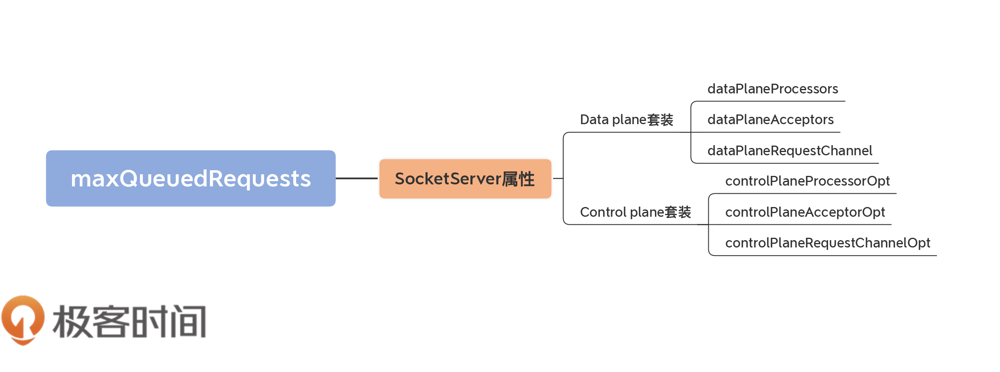
这些字段都是啥意思呢？我们结合代码来看下。
class SocketServer(val config: KafkaConfig,
val metrics: Metrics,
val time: Time,
val credentialProvider: CredentialProvider)
extends Logging with KafkaMetricsGroup with BrokerReconfigurable {
// SocketServer实现BrokerReconfigurable trait表明SocketServer的一些参数配置是允许动态修改的
// 即在Broker不停机的情况下修改它们
// SocketServer的请求队列长度，由Broker端参数queued.max.requests值而定，默认值是500
private val maxQueuedRequests = config.queuedMaxRequests
......
// data-plane
private val dataPlaneProcessors = new ConcurrentHashMap[Int, Processor]() // 处理数据类请求的Processor线程池
// 处理数据类请求的Acceptor线程池，每套监听器对应一个Acceptor线程
private[network] val dataPlaneAcceptors = new ConcurrentHashMap[EndPoint, Acceptor]()
// 处理数据类请求专属的RequestChannel对象
val dataPlaneRequestChannel = new RequestChannel(maxQueuedRequests, DataPlaneMetricPrefix)
// control-plane
// 用于处理控制类请求的Processor线程
// 注意：目前定义了专属的Processor线程而非线程池处理控制类请求
private var controlPlaneProcessorOpt : Option[Processor] = None
private[network] var controlPlaneAcceptorOpt : Option[Acceptor] = None
// 处理控制类请求专属的RequestChannel对象
val controlPlaneRequestChannelOpt: Option[RequestChannel] = config.controlPlaneListenerName.map(_ => new RequestChannel(20, ControlPlaneMetricPrefix))
......
}
首先，SocketServer类定义了一个maxQueuedRequests字段，它定义了请求队列的最大长度。默认值是Broker端queued.max.requests参数值。
其次，在上面的代码中，你一定看到了SocketServer实现了BrokerReconfigurable接口（在Scala中是trait）。这就说明，SocketServer中的某些配置，是允许动态修改值的。如果查看SocketServer伴生对象类的定义的话，你能找到下面这些代码：
object SocketServer {
......
val ReconfigurableConfigs = Set(
KafkaConfig.MaxConnectionsPerIpProp,
KafkaConfig.MaxConnectionsPerIpOverridesProp,
KafkaConfig.MaxConnectionsProp)
......
}
根据这段代码，我们可以知道，Broker端参数max.connections.per.ip、max.connections.per.ip.overrides和max.connections是可以动态修改的。
另外，在我们刚刚看的SocketServer定义的那段代码中，Data plane和Control plane注释下面分别定义了一组变量，即Processor线程池、Acceptor线程池和RequestChannel实例。
- Processor线程池：即上节课提到的网络线程池，负责将请求高速地放入到请求队列中。
- Acceptor线程池：保存了SocketServer为每个监听器定义的Acceptor线程，此线程负责分发该监听器上的入站连接建立请求。
- RequestChannel：承载请求队列的请求处理通道。
严格地说，对于Data plane来说，线程池的说法是没有问题的，因为Processor线程确实有很多个，而Acceptor也可能有多个，因为SocketServer会为每个EndPoint（即每套监听器）创建一个对应的Acceptor线程。
但是，对于Control plane而言，情况就不一样了。
细心的你一定发现了，Control plane那组属性变量都是以Opt结尾的，即它们都是Option类型。这说明了一个重要的事实：你完全可以不使用Control plane套装，即你可以让Kafka不区分请求类型，就像2.2.0之前设计的那样。
但是，一旦你开启了Control plane设置，其Processor线程就只有1个，Acceptor线程也是1个。另外，你要注意，它对应的RequestChannel里面的请求队列长度被硬编码成了20，而不是一个可配置的值。这揭示了社区在这里所做的一个假设：即控制类请求的数量应该远远小于数据类请求，因而不需要为它创建线程池和较深的请求队列。
创建Data plane所需资源
知道了SocketServer类的定义之后，我们就可以开始学习SocketServer是如何为Data plane和Control plane创建所需资源的操作了。我们先来看为Data plane创建资源。
SocketServer的createDataPlaneAcceptorsAndProcessors方法负责为Data plane创建所需资源。我们看下它的实现：
private def createDataPlaneAcceptorsAndProcessors(
dataProcessorsPerListener: Int, endpoints: Seq[EndPoint]): Unit = {
// 遍历监听器集合
endpoints.foreach { endpoint =>
// 将监听器纳入到连接配额管理之下
connectionQuotas.addListener(config, endpoint.listenerName)
// 为监听器创建对应的Acceptor线程
val dataPlaneAcceptor = createAcceptor(endpoint, DataPlaneMetricPrefix)
// 为监听器创建多个Processor线程。具体数目由num.network.threads决定
addDataPlaneProcessors(dataPlaneAcceptor, endpoint, dataProcessorsPerListener)
// 将<监听器，Acceptor线程>对保存起来统一管理
dataPlaneAcceptors.put(endpoint, dataPlaneAcceptor)
info(s"Created data-plane acceptor and processors for endpoint : ${endpoint.listenerName}")
}
}
这段代码的逻辑非常清晰，我用一张图来解释说明下：

createDataPlaneAcceptorsAndProcessors方法会遍历你配置的所有监听器，然后为每个监听器执行下面的逻辑。
- 初始化该监听器对应的最大连接数计数器。后续这些计数器将被用来确保没有配额超限的情形发生。
- 为该监听器创建Acceptor线程，也就是调用Acceptor类的构造函数，生成对应的Acceptor线程实例。
- 创建Processor线程池。对于Data plane而言，线程池的数量由Broker端参数num.network.threads决定。
- 将<监听器，Acceptor线程>对加入到Acceptor线程池统一管理。
切记，源码会为每套用于Data plane的监听器执行以上这4步。
举个例子，假设你配置listeners=PLAINTEXT://localhost:9092, SSL://localhost:9093，那么在默认情况下，源码会为PLAINTEXT和SSL这两套监听器分别创建一个Acceptor线程和一个Processor线程池。
需要注意的是，具体为哪几套监听器创建是依据配置而定的，最重要的是，Kafka只会为Data plane所使的监听器创建这些资源。至于如何指定监听器到底是为Data plane所用，还是归Control plane，我会再详细说明。
创建Control plane所需资源
前面说过了，基于控制类请求的负载远远小于数据类请求负载的假设，Control plane的配套资源只有1个Acceptor线程 + 1个Processor线程 + 1个深度是20的请求队列而已。和Data plane相比，这些配置稍显寒酸，不过在大部分情况下，应该是够用了。
SocketServer提供了createControlPlaneAcceptorAndProcessor方法，用于为Control plane创建所需资源，源码如下：
private def createControlPlaneAcceptorAndProcessor(
endpointOpt: Option[EndPoint]): Unit = {
// 如果为Control plane配置了监听器
endpointOpt.foreach { endpoint =>
// 将监听器纳入到连接配额管理之下
connectionQuotas.addListener(config, endpoint.listenerName)
// 为监听器创建对应的Acceptor线程
val controlPlaneAcceptor = createAcceptor(endpoint, ControlPlaneMetricPrefix)
// 为监听器创建对应的Processor线程
val controlPlaneProcessor = newProcessor(nextProcessorId, controlPlaneRequestChannelOpt.get, connectionQuotas, endpoint.listenerName, endpoint.securityProtocol, memoryPool)
controlPlaneAcceptorOpt = Some(controlPlaneAcceptor)
controlPlaneProcessorOpt = Some(controlPlaneProcessor)
val listenerProcessors = new ArrayBuffer[Processor]()
listenerProcessors += controlPlaneProcessor
// 将Processor线程添加到控制类请求专属RequestChannel中
// 即添加到RequestChannel实例保存的Processor线程池中
controlPlaneRequestChannelOpt.foreach(
_.addProcessor(controlPlaneProcessor))
nextProcessorId += 1
// 把Processor对象也添加到Acceptor线程管理的Processor线程池中
controlPlaneAcceptor.addProcessors(listenerProcessors, ControlPlaneThreadPrefix)
info(s"Created control-plane acceptor and processor for endpoint : ${endpoint.listenerName}")
}
}
我同样使用一张流程图来说明：

总体流程和createDataPlaneAcceptorsAndProcessors非常类似，只是方法开头需要判断是否配置了用于Control plane的监听器。目前，Kafka规定只能有1套监听器用于Control plane，而不能像Data plane那样可以配置多套监听器。
如果认真看的话，你会发现，上面两张图中都没有提到启动Acceptor和Processor线程。那这些线程到底是在什么时候启动呢？
实际上，Processor和Acceptor线程是在启动SocketServer组件之后启动的，具体代码在KafkaServer.scala文件的startup方法中，如下所示：
// KafkaServer.scala
def startup(): Unit = {
try {
info("starting")
......
// 创建SocketServer组件
socketServer = new SocketServer(config, metrics, time, credentialProvider)
// 启动SocketServer，但不启动Processor线程
socketServer.startup(startProcessingRequests = false)
......
// 启动Data plane和Control plane的所有线程
socketServer.startProcessingRequests(authorizerFutures)
......
} catch {
......
}
}
咦？还是没看到启动Acceptor和Processor线程的代码啊？实际上，SocketServer的startProcessingRequests方法就是启动这些线程的方法。我们看下这个方法的逻辑：
def startProcessingRequests(authorizerFutures: Map[Endpoint, CompletableFuture[Void]] = Map.empty): Unit = {
info("Starting socket server acceptors and processors")
this.synchronized {
if (!startedProcessingRequests) {
// 启动处理控制类请求的Processor和Acceptor线程
startControlPlaneProcessorAndAcceptor(authorizerFutures)
// 启动处理数据类请求的Processor和Acceptor线程
startDataPlaneProcessorsAndAcceptors(authorizerFutures)
startedProcessingRequests = true
} else {
info("Socket server acceptors and processors already started")
}
}
info("Started socket server acceptors and processors")
}
如果在你的环境中，你看不到startProcessingRequests方法，不用感到惊慌。这是今年4月16日刚刚添加的方法。你需要使用git命令去拉取最新的Trunk分支代码就能看到这个方法了。
这个方法又进一步调用了startDataPlaneProcessorsAndAcceptors和startControlPlaneProcessorAndAcceptor方法分别启动Data plane的Control plane的线程。鉴于这两个方法的逻辑类似，我们重点学习下startDataPlaneProcessorsAndAcceptors方法的实现。
private def startDataPlaneProcessorsAndAcceptors(
authorizerFutures: Map[Endpoint, CompletableFuture[Void]]): Unit = {
// 获取Broker间通讯所用的监听器，默认是PLAINTEXT
val interBrokerListener = dataPlaneAcceptors.asScala.keySet
.find(_.listenerName == config.interBrokerListenerName)
.getOrElse(throw new IllegalStateException(s"Inter-broker listener ${config.interBrokerListenerName} not found, endpoints=${dataPlaneAcceptors.keySet}"))
val orderedAcceptors = List(dataPlaneAcceptors.get(interBrokerListener)) ++
dataPlaneAcceptors.asScala.filter { case (k, _) => k != interBrokerListener }.values
orderedAcceptors.foreach { acceptor =>
val endpoint = acceptor.endPoint
// 启动Processor和Acceptor线程
startAcceptorAndProcessors(DataPlaneThreadPrefix, endpoint, acceptor, authorizerFutures)
}
}
该方法主要的逻辑是调用startAcceptorAndProcessors方法启动Acceptor和Processor线程。当然在此之前，代码要获取Broker间通讯所用的监听器，并找出该监听器对应的Acceptor线程以及它维护的Processor线程池。
好了，现在我要告诉你，到底是在哪里设置用于Control plane的监听器了。Broker端参数control.plane.listener.name，就是用于设置Control plane所用的监听器的地方。
在默认情况下，这个参数的值是空（Null）。Null的意思就是告诉Kafka不要启用请求优先级区分机制，但如果你设置了这个参数，Kafka就会利用它去listeners中寻找对应的监听器了。
我举个例子说明下。假设你的Broker端相应配置如下：
listener.security.protocol.map=CONTROLLER:PLAINTEXT,INTERNAL:PLAINTEXT,EXTERNAL:SSL
listeners=CONTROLLER://192.1.1.8:9091,INTERNAL://192.1.1.8:9092,EXTERNAL://10.1.1.5:9093
control.plane.listener.name=CONTROLLER
那么，名字是CONTROLLER的那套监听器将被用于Control plane。换句话说，名字是INTERNAL和EXTERNAL的这两组监听器用于Data plane。在代码中，Kafka是如何知道CONTROLLER这套监听器是给Control plane使用的呢？简单来说，这是通过KafkaConfig中的3个方法完成的。KafkaConfig类封装了Broker端所有参数的信息，同时还定义了很多实用的工具方法。
现在，我结合上面的配置例子，用一张图的方式来说明这些代码方法的调用关系，以及主要方法的实现逻辑。
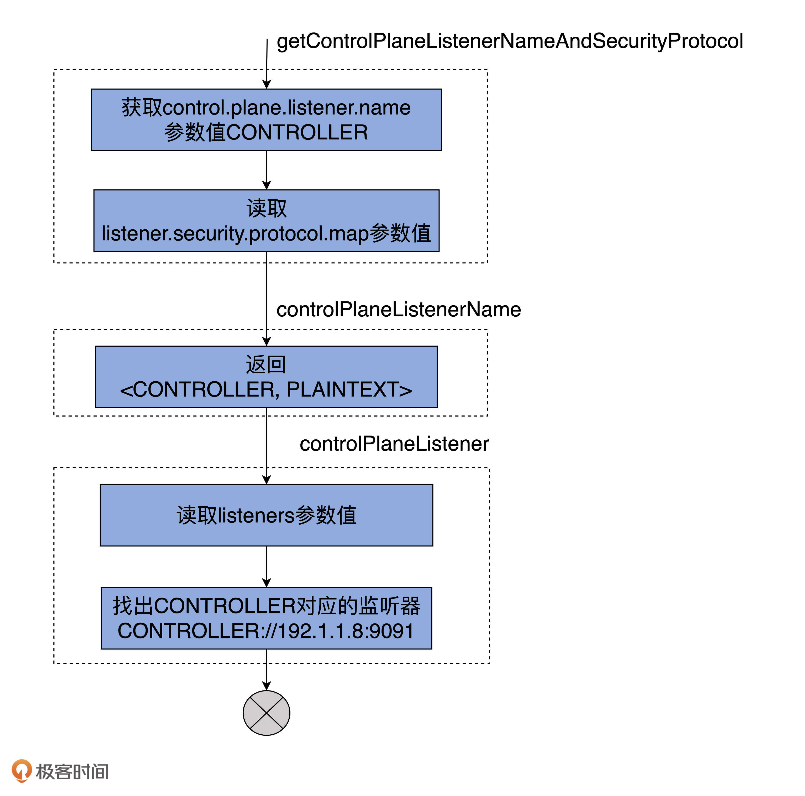
图中涉及3个方法，它们的调用关系是自底向上，即最下面的方法调用中间的方法，中间的方法调用最上面的方法。现在，我来具体解释下代码是怎么找到Control plane对应的监听器的。
首先，代码要去获取Broker端参数control.plane.listener.name的值。在这个例子中，该值是CONTROLLER字符串，
之后，读取Broker端参数listener.security.protocol.map值，并找出CONTROLLER对应的安全认证协议。在这个例子中，CONTROLLER对应的安全认证协议是PLAINTEXT。controlPlaneListenerName方法的作用是拿到这组值，即
最后，controlPlaneListener方法拿到这组值后，取出监听器名称CONTROLLER去寻找Broker端参数listeners中对应的监听器。在这里，这个监听器就是CONTROLLER://192.1.1.8:9091。这就是确认Control plane监听器完整的查找逻辑。
你可以打开KafkaConfig.scala文件依次找到这3个方法的实现代码。这里我们重点查看下getControlPlaneListenerNameAndSecurityProtocol方法的代码实现：
private def getControlPlaneListenerNameAndSecurityProtocol: Option[(ListenerName, SecurityProtocol)] = {
// 查看Broker端参数control.plane.listener.name值
// 即是否启用了control plane监听器
Option(getString(KafkaConfig.ControlPlaneListenerNameProp)) match {
// 如果启用了
case Some(name) =>
val listenerName = ListenerName.normalised(name)
// 必须同时设置Broker端参数listener.security.protocol.map
// 并从该参数值中提取出该监听器对应的安全认证协议
val securityProtocol = listenerSecurityProtocolMap.getOrElse(listenerName,
throw new ConfigException(s"Listener with ${listenerName.value} defined in " +
s"${KafkaConfig.ControlPlaneListenerNameProp} not found in ${KafkaConfig.ListenerSecurityProtocolMapProp}."))
// 返回<监听器名称，安全认证协议>对
Some(listenerName, securityProtocol)
// 如果没有设置该参数值，直接返回None，说明没有启用control plane监听器
case None => None
}
}
这段代码的核心就是getString那一行，即Kafka会提取名为ControlPlaneListenerNameProp参数的值，而它就是control.plane.listener.name参数值。
拿到了这个参数值之后，controlPlaneListener方法会记录下这个值，然后把它传入到SocketServer的createControlPlaneAcceptorAndProcessor方法中。这样，SocketServer就能知道你到底有没有为Control plane设置专属监听器了。
讲到这里，Data plane和Control plane的内容我就说完了。现在我再来具体解释下它们和请求优先级之间的关系。
严格来说，Kafka没有为请求设置数值型的优先级，因此，我们并不能把所有请求按照所谓的优先级进行排序。到目前为止，Kafka仅仅实现了粗粒度的优先级处理，即整体上把请求分为数据类请求和控制类请求两类，而且没有为这两类定义可相互比较的优先级。那我们应该如何把刚刚说的所有东西和这里的优先级进行关联呢？
通过刚刚的学习，我们知道，社区定义了多套监听器以及底层处理线程的方式来区分这两大类请求。虽然我们很难直接比较这两大类请求的优先级，但在实际应用中，由于数据类请求的数量要远多于控制类请求，因此，为控制类请求单独定义处理资源的做法，实际上就等同于拔高了控制类请求的优先处理权。从这个角度上来说，这套做法间接实现了优先级的区别对待。
总结
好了，我们来小结一下。今天，我们重点学习了社区实现不同类型请求优先级的方法。结合监听器的概念，我们深入到SocketServer的源码中，分析了Data plane和Control plane的实现原理。我们来回顾一下这节课的重点。
- Data plane：负责处理数据类请求，这类请求通常不需要高优先级处理。
- Control plane：负责处理控制类请求，这类请求需要高优先级处理。
- 监听器：Kafka允许Broker定义多套监听器，每套监听器可用于Data plane或Control plane。
- 优先级实现原理：你要知道的是，社区设计了两套资源分别处理Data plane和Control plane请求。
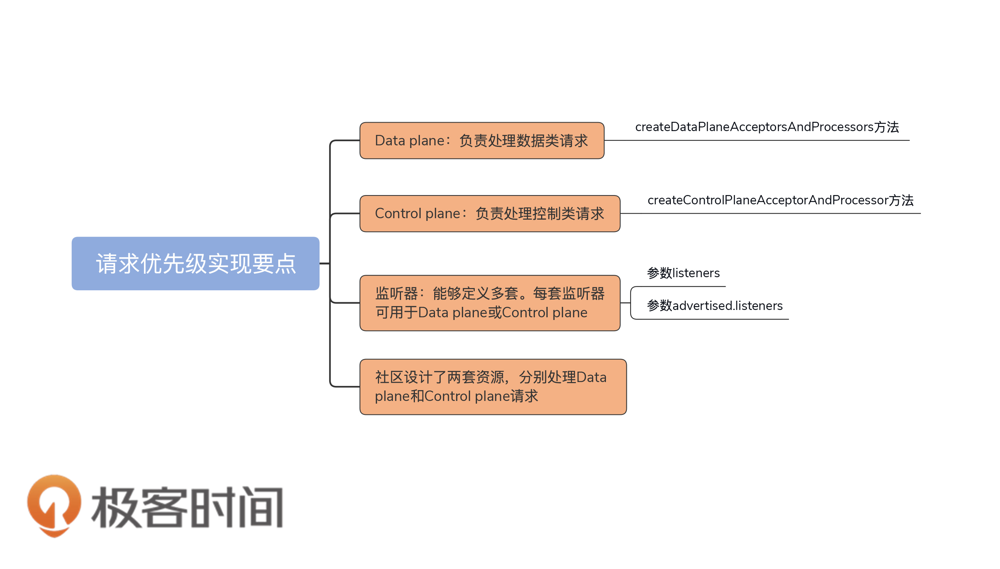
下节课，我会带你串联起网络I/O层的所有组件，并且结合源码，带你深入理解一个请求在Kafka中是如何被处理的。敬请期待。
课后讨论
最后，我们来思考一个问题：如果不使用多套资源的方案，而是在请求队列这个层面进行改进，你觉得能够实现不同请求不同优先级的需求吗？比如说，将请求队列改造成支持抢占式的优先级队列方案，你可以说出这两个方案的优劣吗？
欢迎你在留言区畅所欲言，跟我交流讨论，也欢迎你把今天的内容分享给你的朋友。
09 SocketServer（下）：请求处理全流程源码分析
你好，我是胡夕。前几节课，我们花了很多时间学习SocketServer核心组件的源代码，包括Acceptor线程、Processor线程，也研究了Data plane和Control plane针对不同类型请求的处理方案。
今天，我带你完整地梳理一下Kafka请求处理的全流程。这个全流程涉及到多个源码文件，为了弄懂其中的原理，我们必须在不同的方法间“跳来跳去”。比起学习单个源码文件，将多个文件中的方法组合在一起串成完整流程要难得多，因此，你最好多花一些时间，仔细研读一下跟这套流程相关的所有方法。
当然了，你可能有这样的疑问：“我为什么要关心请求被处理的流程呢？阅读这部分源码的意义是什么呢？”其实，弄明白这部分原理，非常有助于我们有针对性地调优Broker端请求处理的性能。
举个例子，Broker端有两个参数与这个流程相关，分别是num.network.threads和num.io.threads。如果我们不掌握请求被处理的流程，是没有办法有的放矢地调整这些参数的。
要知道，Kafka官网可没有告诉我们，什么是网络线程和I/O线程。如果不明白“请求是被网络线程接收并放入请求队列的”这件事，我们就很可能犯这样的错误——当请求队列快满了的时候，我们会以为是网络线程处理能力不够，进而盲目地增加num.network.threads值，但最终效果很可能是适得其反的。我相信，在今天的课程结束之后，你就会知道，碰到这种情况的时候，我们更应该增加的是num.io.threads的值。
num.io.threads参数表征的就是I/O线程池的大小。所谓的I/O线程池，即KafkaRequestHandlerPool，也称请求处理线程池。这节课我会先讲解KafkaRequestHandlerPool源码，再具体解析请求处理全流程的代码。
KafkaRequestHandlerPool
KafkaRequestHandlerPool是真正处理Kafka请求的地方。切记，Kafka中处理请求的类不是SocketServer，也不是RequestChannel，而是KafkaRequestHandlerPool。
它所在的文件是KafkaRequestHandler.scala，位于core包的src/main/scala/kafka/server下。这是一个不到400行的小文件，掌握起来并不难。
我先用一张图给你展示下这个文件里都有哪些组件：
- KafkaRequestHandler：请求处理线程类。每个请求处理线程实例，负责从SocketServer的RequestChannel的请求队列中获取请求对象，并进行处理。
- KafkaRequestHandlerPool：请求处理线程池，负责创建、维护、管理和销毁下辖的请求处理线程。
- BrokerTopicMetrics：Broker端与主题相关的监控指标的管理类。
- BrokerTopicStats（C）：定义Broker端与主题相关的监控指标的管理操作。
- BrokerTopicStats（O）：BrokerTopicStats的伴生对象类，定义Broker端与主题相关的监控指标，比如常见的MessagesInPerSec和MessagesOutPerSec等。
我们重点看前两个组件的代码。后面的三个类或对象都是与监控指标相关的，代码多为一些工具类方法或定义常量，非常容易理解。所以，我们不必在它们身上花费太多时间，要把主要精力放在KafkaRequestHandler及其相关管理类的学习上。
KafkaRequestHandler
首先，我们来看下它的定义：
// 关键字段说明
// id: I/O线程序号
// brokerId：所在Broker序号，即broker.id值
// totalHandlerThreads：I/O线程池大小
// requestChannel：请求处理通道
// apis：KafkaApis类，用于真正实现请求处理逻辑的类
class KafkaRequestHandler(
id: Int,
brokerId: Int,
val aggregateIdleMeter: Meter,
val totalHandlerThreads: AtomicInteger,
val requestChannel: RequestChannel,
apis: KafkaApis,
time: Time) extends Runnable with Logging {
......
}
从定义可知，KafkaRequestHandler是一个Runnable对象，因此，你可以把它当成是一个线程。每个KafkaRequestHandler实例，都有4个关键的属性。
- id：请求处理线程的序号，类似于Processor线程的ID序号，仅仅用于标识这是线程池中的第几个线程。
- brokerId：Broker序号，用于标识这是哪个Broker上的请求处理线程。
- requestChannel：SocketServer中的请求通道对象。KafkaRequestHandler对象为什么要定义这个字段呢？我们说过，它是负责处理请求的类，那请求保存在什么地方呢？实际上，请求恰恰是保存在RequestChannel中的请求队列中，因此，Kafka在构造KafkaRequestHandler实例时，必须关联SocketServer组件中的RequestChannel实例，也就是说，要让I/O线程能够找到请求被保存的地方。
- apis：这是一个KafkaApis类。如果说KafkaRequestHandler是真正处理请求的，那么，KafkaApis类就是真正执行请求处理逻辑的地方。在第10节课，我会具体讲解KafkaApis的代码。目前，你需要知道的是，它有个handle方法，用于执行请求处理逻辑。
既然KafkaRequestHandler是一个线程类，那么，除去常规的close、stop、initiateShutdown和awaitShutdown方法，最重要的当属run方法实现了，如下所示：
def run(): Unit = {
// 只要该线程尚未关闭，循环运行处理逻辑
while (!stopped) {
val startSelectTime = time.nanoseconds
// 从请求队列中获取下一个待处理的请求
val req = requestChannel.receiveRequest(300)
val endTime = time.nanoseconds
// 统计线程空闲时间
val idleTime = endTime - startSelectTime
// 更新线程空闲百分比指标
aggregateIdleMeter.mark(idleTime / totalHandlerThreads.get)
req match {
// 关闭线程请求
case RequestChannel.ShutdownRequest =>
debug(s"Kafka request handler $id on broker $brokerId received shut down command")
// 关闭线程
shutdownComplete.countDown()
return
// 普通请求
case request: RequestChannel.Request =>
try {
request.requestDequeueTimeNanos = endTime
trace(s"Kafka request handler $id on broker $brokerId handling request $request")
// 由KafkaApis.handle方法执行相应处理逻辑
apis.handle(request)
} catch {
// 如果出现严重错误，立即关闭线程
case e: FatalExitError =>
shutdownComplete.countDown()
Exit.exit(e.statusCode)
// 如果是普通异常，记录错误日志
case e: Throwable => error("Exception when handling request", e)
} finally {
// 释放请求对象占用的内存缓冲区资源
request.releaseBuffer()
}
case null => // 继续
}
}
shutdownComplete.countDown()
}
虽然我给一些主要的代码都标记了注释，但为了方便你更好地理解，我画一张图，借助它来展示下KafkaRequestHandler线程的处理逻辑：
我来解释下run方法的主要运行逻辑。它的所有执行逻辑都在while循环之下，因此，只要标志线程关闭状态的stopped为false，run方法将一直循环执行while下的语句。
那，第1步是从请求队列中获取下一个待处理的请求，同时更新一些相关的统计指标。如果本次循环没取到，那么本轮循环结束，进入到下一轮。如果是ShutdownRequest请求，则说明该Broker发起了关闭操作。
而Broker关闭时会调用KafkaRequestHandler的shutdown方法，进而调用initiateShutdown方法，以及RequestChannel的sendShutdownRequest方法，而后者就是将ShutdownRequest写入到请求队列。
一旦从请求队列中获取到ShutdownRequest，run方法代码会调用shutdownComplete的countDown方法，正式完成对KafkaRequestHandler线程的关闭操作。你看看KafkaRequestHandlerPool的shutdown方法代码，就能明白这是怎么回事了。
def shutdown(): Unit = synchronized {
info("shutting down")
for (handler <- runnables)
handler.initiateShutdown() // 调用initiateShutdown方法发起关闭
for (handler <- runnables)
// 调用awaitShutdown方法等待关闭完成
// run方法一旦调用countDown方法，这里将解除等待状态
handler.awaitShutdown()
info("shut down completely")
}
就像代码注释中写的那样，一旦run方法执行了countDown方法，程序流解除在awaitShutdown方法这里的等待，从而完成整个线程的关闭操作。
我们继续说回run方法。如果从请求队列中获取的是普通请求，那么，首先更新请求移出队列的时间戳，然后交由KafkaApis的handle方法执行实际的请求处理逻辑代码。待请求处理完成，并被释放缓冲区资源后，代码进入到下一轮循环，周而复始地执行以上所说的逻辑。
KafkaRequestHandlerPool
从上面的分析来看，KafkaRequestHandler逻辑大体上还是比较简单的。下面我们来看下KafkaRequestHandlerPool线程池的实现。它是管理I/O线程池的，实现逻辑也不复杂。它的shutdown方法前面我讲过了，这里我们重点学习下，它是如何创建这些线程的，以及创建它们的时机。
首先看它的定义：
// 关键字段说明
// brokerId：所属Broker的序号，即broker.id值
// requestChannel：SocketServer组件下的RequestChannel对象
// api：KafkaApis类，实际请求处理逻辑类
// numThreads：I/O线程池初始大小
class KafkaRequestHandlerPool(
val brokerId: Int,
val requestChannel: RequestChannel,
val apis: KafkaApis,
time: Time,
numThreads: Int,
requestHandlerAvgIdleMetricName: String,
logAndThreadNamePrefix : String)
extends Logging with KafkaMetricsGroup {
// I/O线程池大小
private val threadPoolSize: AtomicInteger = new AtomicInteger(numThreads)
// I/O线程池
val runnables = new mutable.ArrayBuffer[KafkaRequestHandler](numThreads)
......
}
KafkaRequestHandlerPool对象定义了7个属性，其中比较关键的有4个，我分别来解释下。
- brokerId：和KafkaRequestHandler中的一样，保存Broker的序号。
- requestChannel：SocketServer的请求处理通道，它下辖的请求队列为所有I/O线程所共享。requestChannel字段也是KafkaRequestHandler类的一个重要属性。
- apis：KafkaApis实例，执行实际的请求处理逻辑。它同时也是KafkaRequestHandler类的一个重要属性。
- numThreads：线程池中的初始线程数量。它是Broker端参数num.io.threads的值。目前，Kafka支持动态修改I/O线程池的大小，因此，这里的numThreads是初始线程数，调整后的I/O线程池的实际大小可以和numThreads不一致。
这里我再详细解释一下numThreads属性和实际线程池中线程数的关系。就像我刚刚说过的，I/O线程池的大小是可以修改的。如果你查看KafkaServer.scala中的startup方法，你会看到以下这两行代码：
// KafkaServer.scala
dataPlaneRequestHandlerPool = new KafkaRequestHandlerPool(config.brokerId, socketServer.dataPlaneRequestChannel, dataPlaneRequestProcessor, time, config.numIoThreads, s"${SocketServer.DataPlaneMetricPrefix}RequestHandlerAvgIdlePercent", SocketServer.DataPlaneThreadPrefix)
controlPlaneRequestHandlerPool = new KafkaRequestHandlerPool(config.brokerId, socketServer.controlPlaneRequestChannelOpt.get, controlPlaneRequestProcessor, time, 1, s"${SocketServer.ControlPlaneMetricPrefix}RequestHandlerAvgIdlePercent", SocketServer.ControlPlaneThreadPrefix)
由代码可知，Data plane所属的KafkaRequestHandlerPool线程池的初始数量，就是Broker端的参数nums.io.threads，即这里的config.numIoThreads值；而用于Control plane的线程池的数量，则硬编码为1。
因此，你可以发现，Broker端参数num.io.threads的值控制的是Broker启动时KafkaRequestHandler线程的数量。因此，当你想要在一开始就提升Broker端请求处理能力的时候，不妨试着增加这个参数值。
除了上面那4个属性，该类还定义了一个threadPoolSize变量。本质上，它就是用AtomicInteger包了一层numThreads罢了。
为什么要这么做呢？这是因为，目前Kafka支持动态调整KafkaRequestHandlerPool线程池的线程数量，但类定义中的numThreads一旦传入，就不可变更了，因此，需要单独创建一个支持更新操作的线程池数量的变量。至于为什么使用AtomicInteger，你应该可以想到，这是为了保证多线程访问的线程安全性。毕竟，这个线程池大小的属性可能被多个线程访问到，而AtomicInteger本身提供的原子操作，能够有效地确保这种并发访问，同时还能提供必要的内存可见性。
既然是管理I/O线程池的类，KafkaRequestHandlerPool中最重要的字段当属线程池字段runnables了。就代码而言，Kafka选择使用Scala的数组对象类实现I/O线程池。
createHandler方法
当线程池初始化时，Kafka使用下面这段代码批量创建线程，并将它们添加到线程池中：
for (i <- 0 until numThreads) {
createHandler(i) // 创建numThreads个I/O线程
}
// 创建序号为指定id的I/O线程对象，并启动该线程
def createHandler(id: Int): Unit = synchronized {
// 创建KafkaRequestHandler实例并加入到runnables中
runnables += new KafkaRequestHandler(id, brokerId, aggregateIdleMeter, threadPoolSize, requestChannel, apis, time)
// 启动KafkaRequestHandler线程
KafkaThread.daemon(logAndThreadNamePrefix + "-kafka-request-handler-" + id, runnables(id)).start()
}
我来解释下这段代码。源码使用for循环批量调用createHandler方法，创建多个I/O线程。createHandler方法的主体逻辑分为三步：
- 创建KafkaRequestHandler实例；
- 将创建的线程实例加入到线程池数组；
- 启动该线程。
resizeThreadPool方法
下面我们说说resizeThreadPool方法的代码。这个方法的目的是，把I/O线程池的线程数重设为指定的数值。代码如下：
def resizeThreadPool(newSize: Int): Unit = synchronized {
val currentSize = threadPoolSize.get
info(s"Resizing request handler thread pool size from $currentSize to $newSize")
if (newSize > currentSize) {
for (i <- currentSize until newSize) {
createHandler(i)
}
} else if (newSize < currentSize) {
for (i <- 1 to (currentSize - newSize)) {
runnables.remove(currentSize - i).stop()
}
}
threadPoolSize.set(newSize)
}
该方法首先获取当前线程数量。如果目标数量比当前数量大，就利用刚才说到的createHandler方法将线程数补齐到目标值newSize；否则的话，就将多余的线程从线程池中移除，并停止它们。最后，把标识线程数量的变量threadPoolSize的值调整为目标值newSize。
至此，KafkaRequestHandlerPool类的3个方法shutdown、createHandler和resizeThreadPool我们就学完了。总体而言，它就是负责管理I/O线程池的类。
全处理流程
有了上面的这些铺垫，我们就可以来学习下Kafka请求处理全流程的代码路径了。
我们再来看一下[第7讲]里的这张图。上一次，我主要是想借助它，让你对网络线程池有个整体的了解，今天，我来具体给你讲解下，这张图所展示的完整请求处理逻辑。
图中一共有6步。我分别解释一下，同时还会带你去找寻对应的源码。
第1步：Clients或其他Broker发送请求给Acceptor线程
我在第7节课讲过，Acceptor线程实时接收来自外部的发送请求。一旦接收到了之后，就会创建对应的Socket通道，就像下面这段代码所示：
// SocketServer.scala中Acceptor的run方法片段
// 读取底层通道上准备就绪I/O操作的数量
val ready = nioSelector.select(500)
// 如果存在准备就绪的I/O事件
if (ready > 0) {
// 获取对应的SelectionKey集合
val keys = nioSelector.selectedKeys()
val iter = keys.iterator()
// 遍历这些SelectionKey
while (iter.hasNext && isRunning) {
try {
val key = iter.next
iter.remove()
// 测试SelectionKey的底层通道是否能够接受新Socket连接
if (key.isAcceptable) {
// 接受此连接并分配对应的Processor线程
accept(key).foreach { socketChannel =>
var processor: Processor = null
do {
retriesLeft -= 1
processor = synchronized {
currentProcessorIndex = currentProcessorIndex % processors.length
processors(currentProcessorIndex)
}
currentProcessorIndex += 1
// 将新Socket连接加入到Processor线程待处理连接队列
// 等待Processor线程后续处理
} while (!assignNewConnection(socketChannel, processor, retriesLeft == 0))
}
} else {
......
}
......
}
可以看到，Acceptor线程通过调用accept方法，创建对应的SocketChannel，然后将该Channel实例传给assignNewConnection方法，等待Processor线程将该Socket连接请求，放入到它维护的待处理连接队列中。后续Processor线程的run方法会不断地从该队列中取出这些Socket连接请求，然后创建对应的Socket连接。
assignNewConnection方法的主要作用是，将这个新建的SocketChannel对象存入Processors线程的newConnections队列中。之后，Processor线程会不断轮询这个队列中的待处理Channel（可以参考第7讲的configureNewConnections方法），并向这些Channel注册基于Java NIO的Selector，用于真正的请求获取和响应发送I/O操作。
严格来说，Acceptor线程处理的这一步并非真正意义上的获取请求，仅仅是Acceptor线程为后续Processor线程获取请求铺路而已，也就是把需要用到的Socket通道创建出来，传给下面的Processor线程使用。
第2 & 3步：Processor线程处理请求，并放入请求队列
一旦Processor线程成功地向SocketChannel注册了Selector，Clients端或其他Broker端发送的请求就能通过该SocketChannel被获取到，具体的方法是Processor的processCompleteReceives：
// SocketServer.scala
private def processCompletedReceives(): Unit = {
// 从Selector中提取已接收到的所有请求数据
selector.completedReceives.asScala.foreach { receive =>
try {
// 打开与发送方对应的Socket Channel，如果不存在可用的Channel，抛出异常
openOrClosingChannel(receive.source) match {
case Some(channel) =>
......
val header = RequestHeader.parse(receive.payload)
if (header.apiKey == ApiKeys.SASL_HANDSHAKE && channel.maybeBeginServerReauthentication(receive, nowNanosSupplier))
……
else {
val nowNanos = time.nanoseconds()
if (channel.serverAuthenticationSessionExpired(nowNanos)) {
……
} else {
val connectionId = receive.source
val context = new RequestContext(header, connectionId, channel.socketAddress,
channel.principal, listenerName, securityProtocol,
channel.channelMetadataRegistry.clientInformation)
// 根据Channel中获取的Receive对象，构建Request对象
val req = new RequestChannel.Request(processor = id, context = context,
startTimeNanos = nowNanos, memoryPool, receive.payload, requestChannel.metrics)
……
// 将该请求放入请求队列
requestChannel.sendRequest(req)
......
}
}
……
}
} catch {
……
}
}
}
因为代码很多，我进行了精简，只保留了最关键的逻辑。该方法会将Selector获取到的所有Receive对象转换成对应的Request对象，然后将这些Request实例放置到请求队列中，就像上图中第2、3步展示的那样。
所谓的Processor线程处理请求，就是指它从底层I/O获取到发送数据，将其转换成Request对象实例，并最终添加到请求队列的过程。
第4步：I/O线程处理请求
所谓的I/O线程，就是我们开头提到的KafkaRequestHandler线程，它的处理逻辑就在KafkaRequestHandler类的run方法中：
// KafkaRequestHandler.scala
def run(): Unit = {
while (!stopped) {
......
// 从请求队列中获取Request实例
val req = requestChannel.receiveRequest(300)
......
req match {
case RequestChannel.ShutdownRequest =>
......
case request: RequestChannel.Request =>
try {
......
apis.handle(request)
} {
......
}
case null => // 什么也不做
}
}
......
}
KafkaRequestHandler线程循环地从请求队列中获取Request实例，然后交由KafkaApis的handle方法，执行真正的请求处理逻辑。
第5步：KafkaRequestHandler线程将Response放入Processor线程的Response队列
这一步的工作由KafkaApis类完成。当然，这依然是由KafkaRequestHandler线程来完成的。KafkaApis.scala中有个sendResponse方法，将Request的处理结果Response发送出去。本质上，它就是调用了RequestChannel的sendResponse方法，代码如下：
def sendResponse(response: RequestChannel.Response): Unit = {
......
// 找到这个Request当初是由哪个Processor线程处理的
val processor = processors.get(response.processor)
if (processor != null) {
// 将Response添加到该Processor线程的Response队列上
processor.enqueueResponse(response)
}
}
第6步：Processor线程发送Response给Request发送方
最后一步是，Processor线程取出Response队列中的Response，返还给Request发送方。具体代码位于Processor线程的processNewResponses方法中：
// SocketServer.scala
private def processNewResponses(): Unit = {
var currentResponse: RequestChannel.Response = null
while ({currentResponse = dequeueResponse(); currentResponse != null}) { // 循环获取Response队列中的Response
val channelId = currentResponse.request.context.connectionId
try {
currentResponse match {
case response: NoOpResponse => // 不需要发送Response
updateRequestMetrics(response)
trace(s"Socket server received empty response to send, registering for read: $response")
handleChannelMuteEvent(channelId, ChannelMuteEvent.RESPONSE_SENT)
tryUnmuteChannel(channelId)
case response: SendResponse => // 需要发送Response
sendResponse(response, response.responseSend)
......
}
}
......
}
}
从这段代码可知，最核心的部分是sendResponse方法来执行Response发送。该方法底层使用Selector实现真正的发送逻辑。至此，一个请求被完整处理的流程我就讲完了。
最后，我想再补充一点，还记得我之前说过，有些Response是需要有回调逻辑的吗？
实际上，在第6步执行完毕之后，Processor线程通常还会尝试执行Response中的回调逻辑，即Processor类的processCompletedSends方法。不过，并非所有Request或Response都指定了回调逻辑。事实上，只有很少的Response携带了回调逻辑。比如说，FETCH请求在发送Response之后，就要求更新下Broker端与消息格式转换操作相关的统计指标。
总结
今天，我们学习了KafkaRequestHandlerPool线程池及其下辖的KafkaRequestHandler线程，该线程就是Kafka社区所称的I/O线程。另外，我结合源代码把Kafka的请求处理流程串讲了一遍。我们来回顾下这节课的重点。
- KafkaRequestHandler：I/O线程，负责处理Processor线程下发的Request对象。
- KafkaRequestHandlerPool：创建和管理一组KafkaRequestHandler线程。
- 请求处理流程：总共分为6步。
- Clients或其他Broker通过Selector机制发起创建连接请求。
- Processor线程接收请求，并将其转换成可处理的Request对象。
- Processor线程将Request对象放入Request队列。
- KafkaRequestHandler线程从Request队列中取出待处理请求，并进行处理。
- KafkaRequestHandler线程将Response放回到对应Processor线程的Response队列。
- Processor线程发送Response给Request发送方。
其实，今天在谈到Request逻辑执行的时候，我卖了个关子——我提到，KafkaApis是请求逻辑的真正处理方法。也就是说，所有类型的请求处理逻辑都封装在KafkaApis文件下，但我并没有深入地去讲它。下节课，我会重点和你聊聊这个KafkaApis类。我一直认为，该类是查看所有Kafka源码的首要入口类，绝对值得我们花一整节课的时间去学习。
课后讨论
最后，请你结合今天的内容思考一个问题：你觉得，请求处理流程的哪些部分应用了经典的“生产者-消费者”模式？
欢迎你在留言区畅所欲言，跟我交流讨论，也欢迎你把今天的内容分享给你的朋友。
10 KafkaApis：Kafka最重要的源码入口，没有之一
你好，我是胡夕。今天，我们来收尾Kafka请求处理模块的源码学习。讲到这里，关于整个模块，我们还有最后一个知识点尚未掌握，那就是KafkaApis类。
在上节课中，我提到过，请求的实际处理逻辑是封装在KafkaApis类中的。你一定很想知道，这个类到底是做什么的吧。
实际上，我一直认为，KafkaApis是Kafka最重要的源码入口。因为，每次要查找Kafka某个功能的实现代码时，我们几乎总要从这个KafkaApis.scala文件开始找起，然后一层一层向下钻取，直到定位到实现功能的代码处为止。比如，如果你想知道创建Topic的流程，你只需要查看KafkaApis的handleCreateTopicsRequest方法；如果你想弄懂Consumer提交位移是怎么实现的，查询handleOffsetCommitRequest方法就行了。
除此之外，在这一遍遍的钻取过程中，我们还会慢慢地掌握Kafka实现各种功能的代码路径和源码分布，从而建立起对整个Kafka源码工程的完整认识。
如果这些还不足以吸引你阅读这部分源码，那么，我再给你分享一个真实的案例。
之前，在使用Kafka时，我发现，Producer程序一旦向一个不存在的主题发送消息，在创建主题之后，Producer端会抛出一个警告：
Error while fetching metadata with correlation id 3 : {test-topic=LEADER_NOT_AVAILABLE} (org.apache.kafka.clients.NetworkClient)
我一直很好奇，这里的LEADER_NOT_AVAILABLE异常是在哪里抛出来的。直到有一天，我在浏览KafkaApis代码时，突然发现了createTopics方法的这两行代码：
private def createTopic(topic: String,
numPartitions: Int, replicationFactor: Int,
properties: util.Properties = new util.Properties()): MetadataResponseTopic = {
try {
adminZkClient.createTopic(topic, numPartitions, replicationFactor, properties, RackAwareMode.Safe)
......
// 显式封装一个LEADER_NOT_AVAILABLE Response
metadataResponseTopic(Errors.LEADER_NOT_AVAILABLE, topic, isInternal(topic), util.Collections.emptyList())
} catch {
......
}
}
这时，我才恍然大悟，原来，Broker端创建完主题后，会显式地通知Clients端LEADER_NOT_AVAILABLE异常。Clients端接收到该异常后，会主动更新元数据，去获取新创建主题的信息。你看，如果不是亲自查看源代码，我们是无法解释这种现象的。
那么，既然KafkaApis这么重要，现在，我们就来看看这个大名鼎鼎的入口文件吧。我会先给你介绍下它的定义以及最重要的handle方法，然后再解释一下其他的重要方法。学完这节课以后，你就能掌握，从KafkaApis类开始去寻找单个功能具体代码位置的方法了。
事实上，相比于之前更多是向你分享知识的做法，这节课我分享的是学习知识的方法。
KafkaApis类定义
好了， 我们首先来看下KafkaApis类的定义。KafkaApis类定义在源码文件KafkaApis.scala中。该文件位于core工程的server包下，是一个将近3000行的巨型文件。好在它实现的逻辑并不复杂，绝大部分代码都是用来处理所有Kafka请求类型的，因此，代码结构整体上显得非常规整。一会儿我们在学习handle方法时，你一定会所有体会。
KafkaApis类的定义代码如下：
class KafkaApis(
val requestChannel: RequestChannel, // 请求通道
val replicaManager: ReplicaManager, // 副本管理器
val adminManager: AdminManager, // 主题、分区、配置等方面的管理器
val groupCoordinator: GroupCoordinator, // 消费者组协调器组件
val txnCoordinator: TransactionCoordinator, // 事务管理器组件
val controller: KafkaController, // 控制器组件
val zkClient: KafkaZkClient, // ZooKeeper客户端程序，Kafka依赖于该类实现与ZooKeeper交互
val brokerId: Int, // broker.id参数值
val config: KafkaConfig, // Kafka配置类
val metadataCache: MetadataCache, // 元数据缓存类
val metrics: Metrics,
val authorizer: Option[Authorizer],
val quotas: QuotaManagers, // 配额管理器组件
val fetchManager: FetchManager,
brokerTopicStats: BrokerTopicStats,
val clusterId: String,
time: Time,
val tokenManager: DelegationTokenManager) extends Logging {
type FetchResponseStats = Map[TopicPartition, RecordConversionStats]
this.logIdent = "[KafkaApi-%d] ".format(brokerId)
val adminZkClient = new AdminZkClient(zkClient)
private val alterAclsPurgatory = new DelayedFuturePurgatory(purgatoryName = "AlterAcls", brokerId = config.brokerId)
......
}
我为一些重要的字段添加了注释信息。为了方便你理解，我还画了一张思维导图，罗列出了比较重要的组件：

从这张图可以看出，KafkaApis下可谓是大牌云集。放眼整个源码工程，KafkaApis关联的“大佬级”组件都是最多的！在KafkaApis中，你几乎能找到Kafka所有重量级的组件，比如，负责副本管理的ReplicaManager、维护消费者组的GroupCoordinator以及操作Controller组件的KafkaController，等等。
在处理不同类型的RPC请求时，KafkaApis会用到不同的组件，因此，在创建KafkaApis实例时，我们必须把可能用到的组件一并传给它，这也是它汇聚众多大牌组件于一身的原因。
我说KafkaApis是入口类的另一个原因也在于此。你完全可以打开KafkaApis.scala文件，然后根据它的定义一个一个地去研习这些重量级组件的实现原理。等你对这些组件的代码了然于胸了，说不定下一个写源码课的人就是你了。
KafkaApis方法入口
那，作为Kafka源码的入口类，它都定义了哪些方法呢？
如果你翻开KafkaApis类的代码，你会发现，它封装了很多以handle开头的方法。每一个这样的方法都对应于一类请求类型，而它们的总方法入口就是handle方法。实际上，你完全可以在handle方法间不断跳转，去到任意一类请求被处理的实际代码中。下面这段代码就是handle方法的完整实现，我们来看一下：
def handle(request: RequestChannel.Request): Unit = {
try {
trace(s"Handling request:${request.requestDesc(true)} from connection ${request.context.connectionId};" +
s"securityProtocol:${request.context.securityProtocol},principal:${request.context.principal}")
// 根据请求头部信息中的apiKey字段判断属于哪类请求
// 然后调用响应的handle***方法
// 如果新增RPC协议类型，则：
// 1. 添加新的apiKey标识新请求类型
// 2. 添加新的case分支
// 3. 添加对应的handle***方法
request.header.apiKey match {
case ApiKeys.PRODUCE => handleProduceRequest(request)
case ApiKeys.FETCH => handleFetchRequest(request)
case ApiKeys.LIST_OFFSETS => handleListOffsetRequest(request)
case ApiKeys.METADATA => handleTopicMetadataRequest(request)
case ApiKeys.LEADER_AND_ISR => handleLeaderAndIsrRequest(request)
case ApiKeys.STOP_REPLICA => handleStopReplicaRequest(request)
case ApiKeys.UPDATE_METADATA => handleUpdateMetadataRequest(request)
case ApiKeys.CONTROLLED_SHUTDOWN => handleControlledShutdownRequest(request)
case ApiKeys.OFFSET_COMMIT => handleOffsetCommitRequest(request)
case ApiKeys.OFFSET_FETCH => handleOffsetFetchRequest(request)
case ApiKeys.FIND_COORDINATOR => handleFindCoordinatorRequest(request)
case ApiKeys.JOIN_GROUP => handleJoinGroupRequest(request)
case ApiKeys.HEARTBEAT => handleHeartbeatRequest(request)
case ApiKeys.LEAVE_GROUP => handleLeaveGroupRequest(request)
case ApiKeys.SYNC_GROUP => handleSyncGroupRequest(request)
case ApiKeys.DESCRIBE_GROUPS => handleDescribeGroupRequest(request)
case ApiKeys.LIST_GROUPS => handleListGroupsRequest(request)
case ApiKeys.SASL_HANDSHAKE => handleSaslHandshakeRequest(request)
case ApiKeys.API_VERSIONS => handleApiVersionsRequest(request)
case ApiKeys.CREATE_TOPICS => handleCreateTopicsRequest(request)
case ApiKeys.DELETE_TOPICS => handleDeleteTopicsRequest(request)
case ApiKeys.DELETE_RECORDS => handleDeleteRecordsRequest(request)
case ApiKeys.INIT_PRODUCER_ID => handleInitProducerIdRequest(request)
case ApiKeys.OFFSET_FOR_LEADER_EPOCH => handleOffsetForLeaderEpochRequest(request)
case ApiKeys.ADD_PARTITIONS_TO_TXN => handleAddPartitionToTxnRequest(request)
case ApiKeys.ADD_OFFSETS_TO_TXN => handleAddOffsetsToTxnRequest(request)
case ApiKeys.END_TXN => handleEndTxnRequest(request)
case ApiKeys.WRITE_TXN_MARKERS => handleWriteTxnMarkersRequest(request)
case ApiKeys.TXN_OFFSET_COMMIT => handleTxnOffsetCommitRequest(request)
case ApiKeys.DESCRIBE_ACLS => handleDescribeAcls(request)
case ApiKeys.CREATE_ACLS => handleCreateAcls(request)
case ApiKeys.DELETE_ACLS => handleDeleteAcls(request)
case ApiKeys.ALTER_CONFIGS => handleAlterConfigsRequest(request)
case ApiKeys.DESCRIBE_CONFIGS => handleDescribeConfigsRequest(request)
case ApiKeys.ALTER_REPLICA_LOG_DIRS => handleAlterReplicaLogDirsRequest(request)
case ApiKeys.DESCRIBE_LOG_DIRS => handleDescribeLogDirsRequest(request)
case ApiKeys.SASL_AUTHENTICATE => handleSaslAuthenticateRequest(request)
case ApiKeys.CREATE_PARTITIONS => handleCreatePartitionsRequest(request)
case ApiKeys.CREATE_DELEGATION_TOKEN => handleCreateTokenRequest(request)
case ApiKeys.RENEW_DELEGATION_TOKEN => handleRenewTokenRequest(request)
case ApiKeys.EXPIRE_DELEGATION_TOKEN => handleExpireTokenRequest(request)
case ApiKeys.DESCRIBE_DELEGATION_TOKEN => handleDescribeTokensRequest(request)
case ApiKeys.DELETE_GROUPS => handleDeleteGroupsRequest(request)
case ApiKeys.ELECT_LEADERS => handleElectReplicaLeader(request)
case ApiKeys.INCREMENTAL_ALTER_CONFIGS => handleIncrementalAlterConfigsRequest(request)
case ApiKeys.ALTER_PARTITION_REASSIGNMENTS => handleAlterPartitionReassignmentsRequest(request)
case ApiKeys.LIST_PARTITION_REASSIGNMENTS => handleListPartitionReassignmentsRequest(request)
case ApiKeys.OFFSET_DELETE => handleOffsetDeleteRequest(request)
case ApiKeys.DESCRIBE_CLIENT_QUOTAS => handleDescribeClientQuotasRequest(request)
case ApiKeys.ALTER_CLIENT_QUOTAS => handleAlterClientQuotasRequest(request)
}
} catch {
// 如果是严重错误，则抛出异常
case e: FatalExitError => throw e
// 普通异常的话，记录下错误日志
case e: Throwable => handleError(request, e)
} finally {
// 记录一下请求本地完成时间，即Broker处理完该请求的时间
if (request.apiLocalCompleteTimeNanos < 0)
request.apiLocalCompleteTimeNanos = time.nanoseconds
}
}
如果你跟着这门课一直学习的话，你应该会发现，我很少贴某个类或方法的完整代码，因为没必要，还会浪费你的时间。但是，这个handle方法有点特殊，所以我把完整的代码展现给你。
它利用Scala语言中的模式匹配语法，完整地列出了对所有请求类型的处理逻辑。通过该方法，你能串联出Kafka处理任何请求的源码路径。我强烈推荐你在课下以几个比较重要的请求类型为学习目标，从handle方法出发，去探寻一下代码是如何为这些请求服务的，以加深你对Broker端代码的整体熟练度。这对你后续深入学习源码或解决实际问题非常有帮助。
从上面的代码中，你应该很容易就能找到其中的规律：这个方法是处理具体请求用的。处理每类请求的方法名均以handle开头，即handle×××Request。比如，处理PRODUCE请求的方法叫handleProduceRequest，处理FETCH请求的方法叫handleFetchRequest等。
如果你点开ApiKeys，你会发现，它实际上是一个枚举类型，里面封装了目前Kafka定义所有的RPC协议。值得一提的是，Kafka社区维护了一个官方文档，专门记录这些RPC协议，包括不同版本所需的Request格式和Response格式。
从这个handle方法中，我们也能得到这样的结论：每当社区添加新的RPC协议时，Broker端大致需要做三件事情。
- 更新ApiKeys枚举，加入新的RPC ApiKey；
- 在KafkaApis中添加对应的handle×××Request方法，实现对该RPC请求的处理逻辑；
- 更新KafkaApis的handle方法，添加针对RPC协议的case分支。
其他重要方法
抛开KafkaApis的定义和handle方法，还有几个常用的方法也很重要，比如，用于发送Response的一组方法，以及用于鉴权的方法。特别是前者，它是任何一类请求被处理之后都要做的必要步骤。毕竟，请求被处理完成还不够，Kafka还需要把处理结果发送给请求发送方。
首先就是sendResponse系列方法。
为什么说是系列方法呢？因为源码中带有sendResponse字眼的方法有7个之多。我分别来介绍一下。
- sendResponse（RequestChannel.Response）：最底层的Response发送方法。本质上，它调用了SocketServer组件中RequestChannel的sendResponse方法，我在前面的课程中讲到过，RequestChannel的sendResponse方法会把待发送的Response对象添加到对应Processor线程的Response队列上，然后交由Processor线程完成网络间的数据传输。
- sendResponse（RequestChannel.Request，responseOpt: Option[AbstractResponse]，onComplete: Option[Send => Unit]）：该方法接收的实际上是Request，而非Response，因此，它会在内部构造出Response对象之后，再调用sendResponse方法。
- sendNoOpResponseExemptThrottle：发送NoOpResponse类型的Response而不受请求通道上限流（throttling）的限制。所谓的NoOpResponse，是指Processor线程取出该类型的Response后，不执行真正的I/O发送操作。
- sendErrorResponseExemptThrottle：发送携带错误信息的Response而不受限流限制。
- sendResponseExemptThrottle：发送普通Response而不受限流限制。
- sendErrorResponseMaybeThrottle：发送携带错误信息的Response但接受限流的约束。
- sendResponseMaybeThrottle：发送普通Response但接受限流的约束。
这组方法最关键的还是第一个sendResponse方法。大部分类型的请求被处理完成后都会使用这个方法将Response发送出去。至于上面这组方法中的其他方法，它们会在内部调用第一个sendResponse方法。当然，在调用之前，这些方法通常都拥有一些定制化的逻辑。比如sendResponseMaybeThrottle方法就会在执行sendResponse逻辑前，先尝试对请求所属的请求通道进行限流操作。因此，我们要着重掌握第一个sendResponse方法是怎么将Response对象发送出去的。
就像我前面说的，KafkaApis实际上是把处理完成的Response放回到前端Processor线程的Response队列中，而真正将Response返还给Clients或其他Broker的，其实是Processor线程，而不是执行KafkaApis逻辑的KafkaRequestHandler线程。
另一个非常重要的方法是authorize方法，咱们看看它的代码：
private[server] def authorize(requestContext: RequestContext,
operation: AclOperation,
resourceType: ResourceType,
resourceName: String,
logIfAllowed: Boolean = true,
logIfDenied: Boolean = true,
refCount: Int = 1): Boolean = {
authorizer.forall { authZ =>
// 获取待鉴权的资源类型
// 常见的资源类型如TOPIC、GROUP、CLUSTER等
val resource = new ResourcePattern(resourceType, resourceName, PatternType.LITERAL)
val actions = Collections.singletonList(new Action(operation, resource, refCount, logIfAllowed, logIfDenied))
// 返回鉴权结果，是ALLOWED还是DENIED
authZ.authorize(requestContext, actions).asScala.head == AuthorizationResult.ALLOWED
}
}
这个方法是做授权检验的。目前，Kafka所有的RPC请求都要求发送者（无论是Clients，还是其他Broker）必须具备特定的权限。
接下来，我用创建主题的代码来举个例子，说明一下authorize方法的实际应用，以下是handleCreateTopicsRequest方法的片段：
// 是否具有CLUSTER资源的CREATE权限
val hasClusterAuthorization = authorize(request, CREATE, CLUSTER, CLUSTER_NAME, logIfDenied = false)
val topics = createTopicsRequest.data.topics.asScala.map(_.name)
// 如果具有CLUSTER CREATE权限，则允许主题创建，否则，还要查看是否具有TOPIC资源的CREATE权限
val authorizedTopics = if (hasClusterAuthorization) topics.toSet else filterAuthorized(request, CREATE, TOPIC, topics.toSeq)
// 是否具有TOPIC资源的DESCRIBE_CONFIGS权限
val authorizedForDescribeConfigs = filterAuthorized(request, DESCRIBE_CONFIGS, TOPIC, topics.toSeq, logIfDenied = false)
.map(name => name -> results.find(name)).toMap
results.asScala.foreach(topic => {
if (results.findAll(topic.name).size > 1) {
topic.setErrorCode(Errors.INVALID_REQUEST.code)
topic.setErrorMessage("Found multiple entries for this topic.")
} else if (!authorizedTopics.contains(topic.name)) { // 如果不具备CLUSTER资源的CREATE权限或TOPIC资源的CREATE权限，认证失败！
topic.setErrorCode(Errors.TOPIC_AUTHORIZATION_FAILED.code)
topic.setErrorMessage("Authorization failed.")
}
if (!authorizedForDescribeConfigs.contains(topic.name)) { // 如果不具备TOPIC资源的DESCRIBE_CONFIGS权限，设置主题配置错误码
topic.setTopicConfigErrorCode(Errors.TOPIC_AUTHORIZATION_FAILED.code)
}
})
......
这段代码调用authorize方法，来判断Clients方法是否具有创建主题的权限，如果没有，则显式标记TOPIC_AUTHORIZATION_FAILED，告知Clients端。目前，Kafka所有的权限控制均发生在KafkaApis中，即所有请求在处理前，都需要调用authorize方法做权限校验，以保证请求能够被继续执行。
KafkaApis请求处理实例解析
在了解了KafkaApis的代码结构之后，我拿一段真实的代码，来说明一下该类中某个协议处理方法大致的执行流程是什么样的，以便让你更清楚地了解请求处理逻辑。
值得注意的是，这里的请求处理逻辑和之前所说的请求处理全流程是有所区别的。今天，我们关注的是功能层面上请求被处理的逻辑代码，之前的请求处理全流程主要聚焦流程方面的代码，即一个请求从被发送到Broker端到Broker端返还Response的代码路径。应该这么说，所有类型请求的被处理流程都是相同的，但是，每类请求却有不同的功能实现逻辑，而这就是KafkaApis类中的各个handle×××Request方法要做的事情。
下面，我以handleListGroupsRequest方法为例来介绍一下。顾名思义，这是处理ListGroupsRequest请求的方法。这类请求的Response应该返回集群中的消费者组信息。我们来看下它的实现：
def handleListGroupsRequest(request: RequestChannel.Request): Unit = {
val (error, groups) = groupCoordinator.handleListGroups() // 调用GroupCoordinator的handleListGroups方法拿到所有Group信息
// 如果Clients具备CLUSTER资源的DESCRIBE权限
if (authorize(request, DESCRIBE, CLUSTER, CLUSTER_NAME))
// 直接使用刚才拿到的Group数据封装进Response然后发送
sendResponseMaybeThrottle(request, requestThrottleMs =>
new ListGroupsResponse(new ListGroupsResponseData()
.setErrorCode(error.code)
.setGroups(groups.map { group => new ListGroupsResponseData.ListedGroup()
.setGroupId(group.groupId)
.setProtocolType(group.protocolType)}.asJava
)
.setThrottleTimeMs(requestThrottleMs)
))
else {
// 找出Clients对哪些Group有GROUP资源的DESCRIBE权限，返回这些Group信息
val filteredGroups = groups.filter(group => authorize(request, DESCRIBE, GROUP, group.groupId))
sendResponseMaybeThrottle(request, requestThrottleMs =>
new ListGroupsResponse(new ListGroupsResponseData()
.setErrorCode(error.code)
.setGroups(filteredGroups.map { group => new ListGroupsResponseData.ListedGroup()
.setGroupId(group.groupId)
.setProtocolType(group.protocolType)}.asJava
)
.setThrottleTimeMs(requestThrottleMs)
))
}
}
我用一张流程图，来说明一下这个执行逻辑：
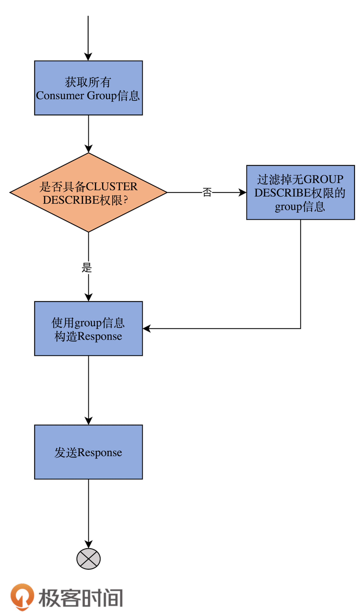
大体来看，handleListGroupsRequest方法的实现逻辑非常简单。通过GroupCoordinator组件获取到所有的消费者组信息之后，代码对这些Group进行了权限校验，并最终根据校验结果，决定给Clients返回哪些可见的消费者组。
总结
好了， 我们总结一下KafkaApis类的要点。如前所述，我们重点学习了KafkaApis类的定义及其重要方法handle。下面这些关键知识点，希望你能掌握。
- KafkaApis是Broker端所有功能的入口，同时关联了超多的Kafka组件。它绝对是你学习源码的第一入口。面对庞大的源码工程，如果你不知道从何下手，那就先从KafkaApis.scala这个文件开始吧。
- handle方法封装了所有RPC请求的具体处理逻辑。每当社区新增RPC协议时，增加对应的handle×××Request方法和case分支都是首要的。
- sendResponse系列方法负责发送Response给请求发送方。发送Response的逻辑是将Response对象放置在Processor线程的Response队列中，然后交由Processor线程实现网络发送。
- authorize方法是请求处理前权限校验层的主要逻辑实现。你可以查看一下官方文档，了解一下当前都有哪些权限，然后对照着具体的方法，找出每类RPC协议都要求Clients端具备什么权限。

至此，关于Kafka请求处理模块的内容，我们就全部学完了。在这个模块中，我们先从RequestChannel入手，探讨了Kafka中请求队列的实现原理，之后，我花了两节课的时间，重点介绍了SocketServer组件，包括Acceptor线程、Processor线程等子组件的源码以及请求被处理的全流程。今天，我们重点研究了KafkaApis类这个顶层的请求功能处理逻辑入口，补齐了请求处理的最后一块“拼图”。我希望你能够把这个模块的课程多看几遍，认真思考一下这里面的关键实现要点，彻底搞明白Kafka网络通信的核心机制。
从下节课开始，我们将进入鼎鼎有名的控制器（Controller）组件的源码学习。我会花5节课的时间，带你深入学习Controller的方方面面，敬请期待。
课后讨论
最后，请思考这样一个问题：如果一个Consumer要向Broker提交位移，它应该具备什么权限？你能说出KafkaApis中的哪段代码说明了所需的权限要求吗？
欢迎你在留言区写下你的思考和答案，跟我交流讨论，也欢迎你把今天的内容分享给你的朋友。
11 Controller元数据：Controller都保存有哪些东西？有几种状态？
你好，我是胡夕。从今天开始，我们正式进入到第三大模块的学习：控制器（Controller）模块 。
提起Kafka中的Controller组件，我相信你一定不陌生。从某种意义上说，它是Kafka最核心的组件。一方面，它要为集群中的所有主题分区选举领导者副本；另一方面，它还承载着集群的全部元数据信息，并负责将这些元数据信息同步到其他Broker上。既然我们是Kafka源码解读课，那就绝对不能错过这么重量级的组件。
我画了一张图片，希望借助它帮你建立起对这个模块的整体认知。今天，我们先学习下Controller元数据。

案例分享
在正式学习源码之前，我想向你分享一个真实的案例。
在我们公司的Kafka集群环境上，曾经出现了一个比较“诡异”的问题：某些核心业务的主题分区一直处于“不可用”状态。
通过使用“kafka-topics”命令查询，我们发现，这些分区的Leader显示是-1。之前，这些Leader所在的Broker机器因为负载高宕机了，当Broker重启回来后，Controller竟然无法成功地为这些分区选举Leader，因此，它们一直处于“不可用”状态。
由于是生产环境，我们的当务之急是马上恢复受损分区，然后才能调研问题的原因。有人提出，重启这些分区旧Leader所在的所有Broker机器——这很容易想到，毕竟“重启大法”一直很好用。但是，这一次竟然没有任何作用。
之后，有人建议升级重启大法，即重启集群的所有Broker——这在当时是不能接受的。且不说有很多业务依然在运行着，单是重启Kafka集群本身，就是一件非常缺乏计划性的事情。毕竟，生产环境怎么能随意重启呢？！
后来，我突然想到了Controller组件中重新选举Controller的代码。一旦Controller被选举出来，它就会向所有Broker更新集群元数据，也就是说，会“重刷”这些分区的状态。
那么问题来了，我们如何在避免重启集群的情况下，干掉已有Controller并执行新的Controller选举呢？答案就在源码中的ControllerZNode.path上，也就是ZooKeeper的/controller节点。倘若我们手动删除了/controller节点，Kafka集群就会触发Controller选举。于是，我们马上实施了这个方案，效果出奇得好：之前的受损分区全部恢复正常，业务数据得以正常生产和消费。
当然，给你分享这个案例的目的，并不是让你记住可以随意干掉/controller节点——这个操作其实是有一点危险的。事实上，我只是想通过这个真实的例子，向你说明，很多打开“精通Kafka之门”的钥匙是隐藏在源码中的。那么，接下来，我们就开始找“钥匙”吧。
集群元数据
想要完整地了解Controller的工作原理，我们首先就要学习它管理了哪些数据。毕竟，Controller的很多代码仅仅是做数据的管理操作而已。今天，我们就来重点学习Kafka集群元数据都有哪些。
如果说ZooKeeper是整个Kafka集群元数据的“真理之源（Source of Truth）”，那么Controller可以说是集群元数据的“真理之源副本（Backup Source of Truth）”。好吧，后面这个词是我自己发明的。你只需要理解，Controller承载了ZooKeeper上的所有元数据即可。
事实上，集群Broker是不会与ZooKeeper直接交互去获取元数据的。相反地，它们总是与Controller进行通信，获取和更新最新的集群数据。而且社区已经打算把ZooKeeper“干掉”了（我会在之后的“特别放送”里具体给你解释社区干掉ZooKeeper的操作），以后Controller将成为新的“真理之源”。
我们总说元数据，那么，到底什么是集群的元数据，或者说，Kafka集群的元数据都定义了哪些内容呢？我用一张图给你完整地展示一下，当前Kafka定义的所有集群元数据信息。

可以看到，目前，Controller定义的元数据有17项之多。不过，并非所有的元数据都同等重要，你也不用完整地记住它们，我们只需要重点关注那些最重要的元数据，并结合源代码来了解下这些元数据都是用来做什么的。
在了解具体的元数据之前，我要先介绍下ControllerContext类。刚刚我们提到的这些元数据信息全部封装在这个类里。应该这么说，这个类是Controller组件的数据容器类。
ControllerContext
Controller组件的源代码位于core包的src/main/scala/kafka/controller路径下，这里面有很多Scala源文件，ControllerContext类就位于这个路径下的ControllerContext.scala文件中。
该文件只有几百行代码，其中，最重要的数据结构就是ControllerContext类。前面说过，它定义了前面提到的所有元数据信息，以及许多实用的工具方法。比如，获取集群上所有主题分区对象的allPartitions方法、获取某主题分区副本列表的partitionReplicaAssignment方法，等等。
首先，我们来看下ControllerContext类的定义，如下所示：
class ControllerContext {
val stats = new ControllerStats // Controller统计信息类
var offlinePartitionCount = 0 // 离线分区计数器
val shuttingDownBrokerIds = mutable.Set.empty[Int] // 关闭中Broker的Id列表
private val liveBrokers = mutable.Set.empty[Broker] // 当前运行中Broker对象列表
private val liveBrokerEpochs = mutable.Map.empty[Int, Long] // 运行中Broker Epoch列表
var epoch: Int = KafkaController.InitialControllerEpoch // Controller当前Epoch值
var epochZkVersion: Int = KafkaController.InitialControllerEpochZkVersion // Controller对应ZooKeeper节点的Epoch值
val allTopics = mutable.Set.empty[String] // 集群主题列表
val partitionAssignments = mutable.Map.empty[String, mutable.Map[Int, ReplicaAssignment]] // 主题分区的副本列表
val partitionLeadershipInfo = mutable.Map.empty[TopicPartition, LeaderIsrAndControllerEpoch] // 主题分区的Leader/ISR副本信息
val partitionsBeingReassigned = mutable.Set.empty[TopicPartition] // 正处于副本重分配过程的主题分区列表
val partitionStates = mutable.Map.empty[TopicPartition, PartitionState] // 主题分区状态列表
val replicaStates = mutable.Map.empty[PartitionAndReplica, ReplicaState] // 主题分区的副本状态列表
val replicasOnOfflineDirs = mutable.Map.empty[Int, Set[TopicPartition]] // 不可用磁盘路径上的副本列表
val topicsToBeDeleted = mutable.Set.empty[String] // 待删除主题列表
val topicsWithDeletionStarted = mutable.Set.empty[String] // 已开启删除的主题列表
val topicsIneligibleForDeletion = mutable.Set.empty[String] // 暂时无法执行删除的主题列表
......
}
不多不少，这段代码中定义的字段正好17个，它们一一对应着上图中的那些元数据信息。下面，我选取一些重要的元数据，来详细解释下它们的含义。
这些元数据理解起来还是比较简单的，掌握了它们之后，你在理解MetadataCache，也就是元数据缓存的时候，就容易得多了。比如，接下来我要讲到的liveBrokers信息，就是Controller通过UpdateMetadataRequest请求同步给其他Broker的MetadataCache的。
ControllerStats
第一个是ControllerStats类的变量。它的完整代码如下：
private[controller] class ControllerStats extends KafkaMetricsGroup {
// 统计每秒发生的Unclean Leader选举次数
val uncleanLeaderElectionRate = newMeter("UncleanLeaderElectionsPerSec", "elections", TimeUnit.SECONDS)
// Controller事件通用的统计速率指标的方法
val rateAndTimeMetrics: Map[ControllerState, KafkaTimer] = ControllerState.values.flatMap { state =>
state.rateAndTimeMetricName.map { metricName =>
state -> new KafkaTimer(newTimer(metricName, TimeUnit.MILLISECONDS, TimeUnit.SECONDS))
}
}.toMap
}
顾名思义，它表征的是Controller的一些统计信息。目前，源码中定义了两大类统计指标：UncleanLeaderElectionsPerSec和所有Controller事件状态的执行速率与时间。
其中，前者是计算Controller每秒执行的Unclean Leader选举数量，通常情况下，执行Unclean Leader选举可能造成数据丢失，一般不建议开启它。一旦开启，你就需要时刻关注这个监控指标的值，确保Unclean Leader选举的速率维持在一个很低的水平，否则会出现很多数据丢失的情况。
后者是统计所有Controller状态的速率和时间信息，单位是毫秒。当前，Controller定义了很多事件，比如，TopicDeletion是执行主题删除的Controller事件、ControllerChange是执行Controller重选举的事件。ControllerStats的这个指标通过在每个事件名后拼接字符串RateAndTimeMs的方式，为每类Controller事件都创建了对应的速率监控指标。
由于Controller事件有很多种，对应的速率监控指标也有很多，有一些Controller事件是需要你额外关注的。
举个例子，IsrChangeNotification事件是标志ISR列表变更的事件，如果这个事件经常出现，说明副本的ISR列表经常发生变化，而这通常被认为是非正常情况，因此，你最好关注下这个事件的速率监控指标。
offlinePartitionCount
该字段统计集群中所有离线或处于不可用状态的主题分区数量。所谓的不可用状态，就是我最开始举的例子中“Leader=-1”的情况。
ControllerContext中的updatePartitionStateMetrics方法根据给定主题分区的当前状态和目标状态，来判断该分区是否是离线状态的分区。如果是，则累加offlinePartitionCount字段的值，否则递减该值。方法代码如下：
// 更新offlinePartitionCount元数据
private def updatePartitionStateMetrics(
partition: TopicPartition,
currentState: PartitionState,
targetState: PartitionState): Unit = {
// 如果该主题当前并未处于删除中状态
if (!isTopicDeletionInProgress(partition.topic)) {
// targetState表示该分区要变更到的状态
// 如果当前状态不是OfflinePartition，即离线状态并且目标状态是离线状态
// 这个if语句判断是否要将该主题分区状态转换到离线状态
if (currentState != OfflinePartition && targetState == OfflinePartition) {
offlinePartitionCount = offlinePartitionCount + 1
// 如果当前状态已经是离线状态，但targetState不是
// 这个else if语句判断是否要将该主题分区状态转换到非离线状态
} else if (currentState == OfflinePartition && targetState != OfflinePartition) {
offlinePartitionCount = offlinePartitionCount - 1
}
}
}
该方法首先要判断，此分区所属的主题当前是否处于删除操作的过程中。如果是的话，Kafka就不能修改这个分区的状态，那么代码什么都不做，直接返回。否则，代码会判断该分区是否要转换到离线状态。如果targetState是OfflinePartition，那么就将offlinePartitionCount值加1，毕竟多了一个离线状态的分区。相反地，如果currentState是offlinePartition，而targetState反而不是，那么就将offlinePartitionCount值减1。
shuttingDownBrokerIds
顾名思义，该字段保存所有正在关闭中的Broker ID列表。当Controller在管理集群Broker时，它要依靠这个字段来甄别Broker当前是否已关闭，因为处于关闭状态的Broker是不适合执行某些操作的，如分区重分配（Reassignment）以及主题删除等。
另外，Kafka必须要为这些关闭中的Broker执行很多清扫工作，Controller定义了一个onBrokerFailure方法，它就是用来做这个的。代码如下：
private def onBrokerFailure(deadBrokers: Seq[Int]): Unit = {
info(s"Broker failure callback for ${deadBrokers.mkString(",")}")
// deadBrokers：给定的一组已终止运行的Broker Id列表
// 更新Controller元数据信息，将给定Broker从元数据的replicasOnOfflineDirs中移除
deadBrokers.foreach(controllerContext.replicasOnOfflineDirs.remove)
// 找出这些Broker上的所有副本对象
val deadBrokersThatWereShuttingDown =
deadBrokers.filter(id => controllerContext.shuttingDownBrokerIds.remove(id))
if (deadBrokersThatWereShuttingDown.nonEmpty)
info(s"Removed ${deadBrokersThatWereShuttingDown.mkString(",")} from list of shutting down brokers.")
// 执行副本清扫工作
val allReplicasOnDeadBrokers = controllerContext.replicasOnBrokers(deadBrokers.toSet)
onReplicasBecomeOffline(allReplicasOnDeadBrokers)
// 取消这些Broker上注册的ZooKeeper监听器
unregisterBrokerModificationsHandler(deadBrokers)
}
该方法接收一组已终止运行的Broker ID列表，首先是更新Controller元数据信息，将给定Broker从元数据的replicasOnOfflineDirs和shuttingDownBrokerIds中移除，然后为这组Broker执行必要的副本清扫工作，也就是onReplicasBecomeOffline方法做的事情。
该方法主要依赖于分区状态机和副本状态机来完成对应的工作。在后面的课程中，我们会专门讨论副本状态机和分区状态机，这里你只要简单了解下它要做的事情就行了。后面等我们学完了这两个状态机之后，你可以再看下这个方法的具体实现原理。
这个方法的主要目的是把给定的副本标记成Offline状态，即不可用状态。具体分为以下这几个步骤：
- 利用分区状态机将给定副本所在的分区标记为Offline状态；
- 将集群上所有新分区和Offline分区状态变更为Online状态；
- 将相应的副本对象状态变更为Offline。
liveBrokers
该字段保存当前所有运行中的Broker对象。每个Broker对象就是一个
def updateBrokerMetadata(oldMetadata: Broker, newMetadata: Broker): Unit = {
liveBrokers -= oldMetadata
liveBrokers += newMetadata
}
每当新增或移除已有Broker时，ZooKeeper就会更新其保存的Broker数据，从而引发Controller修改元数据，也就是会调用updateBrokerMetadata方法来增减Broker列表中的对象。怎么样，超简单吧？！
liveBrokerEpochs
该字段保存所有运行中Broker的Epoch信息。Kafka使用Epoch数据防止Zombie Broker，即一个非常老的Broker被选举成为Controller。
另外，源码大多使用这个字段来获取所有运行中Broker的ID序号，如下面这个方法定义的那样：
def liveBrokerIds: Set[Int] = liveBrokerEpochs.keySet -- shuttingDownBrokerIds
liveBrokerEpochs的keySet方法返回Broker序号列表，然后从中移除关闭中的Broker序号，剩下的自然就是处于运行中的Broker序号列表了。
epoch & epochZkVersion
这两个字段一起说，因为它们都有“epoch”字眼，放在一起说，可以帮助你更好地理解两者的区别。epoch实际上就是ZooKeeper中/controller_epoch节点的值，你可以认为它就是Controller在整个Kafka集群的版本号，而epochZkVersion实际上是/controller_epoch节点的dataVersion值。
Kafka使用epochZkVersion来判断和防止Zombie Controller。这也就是说，原先在老Controller任期内的Controller操作在新Controller不能成功执行，因为新Controller的epochZkVersion要比老Controller的大。
另外，你可能会问：“这里的两个Epoch和上面的liveBrokerEpochs有啥区别呢？”实际上，这里的两个Epoch值都是属于Controller侧的数据，而liveBrokerEpochs是每个Broker自己的Epoch值。
allTopics
该字段保存集群上所有的主题名称。每当有主题的增减，Controller就要更新该字段的值。
比如Controller有个processTopicChange方法，从名字上来看，它就是处理主题变更的。我们来看下它的代码实现，我把主要逻辑以注释的方式标注了出来：
private def processTopicChange(): Unit = {
if (!isActive) return // 如果Contorller已经关闭，直接返回
val topics = zkClient.getAllTopicsInCluster(true) // 从ZooKeeper中获取当前所有主题列表
val newTopics = topics -- controllerContext.allTopics // 找出当前元数据中不存在、ZooKeeper中存在的主题，视为新增主题
val deletedTopics = controllerContext.allTopics -- topics // 找出当前元数据中存在、ZooKeeper中不存在的主题，视为已删除主题
controllerContext.allTopics = topics // 更新Controller元数据
// 为新增主题和已删除主题执行后续处理操作
registerPartitionModificationsHandlers(newTopics.toSeq)
val addedPartitionReplicaAssignment = zkClient.getFullReplicaAssignmentForTopics(newTopics)
deletedTopics.foreach(controllerContext.removeTopic)
addedPartitionReplicaAssignment.foreach {
case (topicAndPartition, newReplicaAssignment) => controllerContext.updatePartitionFullReplicaAssignment(topicAndPartition, newReplicaAssignment)
}
info(s"New topics: [$newTopics], deleted topics: [$deletedTopics], new partition replica assignment " +
s"[$addedPartitionReplicaAssignment]")
if (addedPartitionReplicaAssignment.nonEmpty)
onNewPartitionCreation(addedPartitionReplicaAssignment.keySet)
}
partitionAssignments
该字段保存所有主题分区的副本分配情况。在我看来，这是Controller最重要的元数据了。事实上，你可以从这个字段衍生、定义很多实用的方法，来帮助Kafka从各种维度获取数据。
比如，如果Kafka要获取某个Broker上的所有分区，那么，它可以这样定义：
partitionAssignments.flatMap {
case (topic, topicReplicaAssignment) => topicReplicaAssignment.filter {
case (_, partitionAssignment) => partitionAssignment.replicas.contains(brokerId)
}.map {
case (partition, _) => new TopicPartition(topic, partition)
}
}.toSet
再比如，如果Kafka要获取某个主题的所有分区对象，代码可以这样写：
partitionAssignments.getOrElse(topic, mutable.Map.empty).map {
case (partition, _) => new TopicPartition(topic, partition)
}.toSet
实际上，这两段代码分别是ControllerContext.scala中partitionsOnBroker方法和partitionsForTopic两个方法的主体实现代码。
讲到这里，9个重要的元数据字段我就介绍完了。前面说过，ControllerContext中一共定义了17个元数据字段，你可以结合这9个字段，把其余8个的定义也过一遍，做到心中有数。你对Controller元数据掌握得越好，就越能清晰地理解Controller在集群中发挥的作用。
值得注意的是，在学习每个元数据字段时，除了它的定义之外，我建议你去搜索一下，与之相关的工具方法都是如何实现的。如果后面你想要新增获取或更新元数据的方法，你要对操作它们的代码有很强的把控力才行。
总结
今天，我们揭开了Kafka重要组件Controller的学习大幕。我给出了Controller模块的学习路线，还介绍了Controller的重要元数据。
- Controller元数据：Controller当前定义了17种元数据，涵盖Kafka集群数据的方方面面。
- ControllerContext：定义元数据以及操作它们的类。
- 关键元数据字段：最重要的元数据包括offlinePartitionCount、liveBrokers、partitionAssignments等。
- ControllerContext工具方法：ControllerContext 类定义了很多实用方法来管理这些元数据信息。
下节课，我们将学习Controller是如何给Broker发送请求的。Controller与Broker进行交互与通信，是Controller奠定王者地位的重要一环，我会向你详细解释它是如何做到这一点的。
课后讨论
我今天并未给出所有的元数据说明，请你自行结合代码分析一下，partitionLeadershipInfo里面保存的是什么数据？
欢迎你在留言区写下你的思考和答案，跟我交流讨论，也欢迎你把今天的内容分享给你的朋友。
12 ControllerChannelManager：Controller如何管理请求发送？
你好，我是胡夕。上节课，我们深入研究了ControllerContext.scala源码文件，掌握了Kafka集群定义的重要元数据。今天，我们来学习下Controller是如何给其他Broker发送请求的。
掌握了这部分实现原理，你就能更好地了解Controller究竟是如何与集群Broker进行交互，从而实现管理集群元数据的功能的。而且，阅读这部分源码，还能帮你定位和解决线上问题。我先跟你分享一个真实的案例。
当时还是在Kafka 0.10.0.1时代，我们突然发现，在线上环境中，很多元数据变更无法在集群的所有Broker上同步了。具体表现为，创建了主题后，有些Broker依然无法感知到。
我的第一感觉是Controller出现了问题，但又苦于无从排查和验证。后来，我想到，会不会是Controller端请求队列中积压的请求太多造成的呢？因为当时Controller所在的Broker本身承载着非常重的业务，这是非常有可能的原因。
在看了相关代码后，我们就在相应的源码中新加了一个监控指标，用于实时监控Controller的请求队列长度。当更新到生产环境后，我们很轻松地定位了问题。果然，由于Controller所在的Broker自身负载过大，导致Controller端的请求积压，从而造成了元数据更新的滞后。精准定位了问题之后，解决起来就很容易了。后来，社区于0.11版本正式引入了相关的监控指标。
你看，阅读源码，除了可以学习优秀开发人员编写的代码之外，我们还能根据自身的实际情况做定制化方案，实现一些非开箱即用的功能。
Controller发送请求类型
下面，我们就正式进入到Controller请求发送管理部分的学习。你可能会问：“Controller也会给Broker发送请求吗？”当然！Controller会给集群中的所有Broker（包括它自己所在的Broker）机器发送网络请求。发送请求的目的，是让Broker执行相应的指令。我用一张图，来展示下Controller都会发送哪些请求，如下所示：

当前，Controller只会向Broker发送三类请求，分别是LeaderAndIsrRequest、StopReplicaRequest和UpdateMetadataRequest。注意，这里我使用的是“当前”！我只是说，目前仅有这三类，不代表以后不会有变化。事实上，我几乎可以肯定，以后能发送的RPC协议种类一定会变化的。因此，你需要掌握请求发送的原理。毕竟，所有请求发送都是通过相同的机制完成的。
还记得我在[第8节课]提到的控制类请求吗？没错，这三类请求就是典型的控制类请求。我来解释下它们的作用。
- LeaderAndIsrRequest：最主要的功能是，告诉Broker相关主题各个分区的Leader副本位于哪台Broker上、ISR中的副本都在哪些Broker上。在我看来，它应该被赋予最高的优先级，毕竟，它有令数据类请求直接失效的本领。试想一下，如果这个请求中的Leader副本变更了，之前发往老的Leader的PRODUCE请求是不是全部失效了？因此，我认为它是非常重要的控制类请求。
- StopReplicaRequest：告知指定Broker停止它上面的副本对象，该请求甚至还能删除副本底层的日志数据。这个请求主要的使用场景，是分区副本迁移和删除主题。在这两个场景下，都要涉及停掉Broker上的副本操作。
- UpdateMetadataRequest：顾名思义，该请求会更新Broker上的元数据缓存。集群上的所有元数据变更，都首先发生在Controller端，然后再经由这个请求广播给集群上的所有Broker。在我刚刚分享的案例中，正是因为这个请求被处理得不及时，才导致集群Broker无法获取到最新的元数据信息。
现在，社区越来越倾向于将重要的数据结构源代码从服务器端的core工程移动到客户端的clients工程中。这三类请求Java类的定义就封装在clients中，它们的抽象基类是AbstractControlRequest类，这个类定义了这三类请求的公共字段。
我用代码展示下这三类请求及其抽象父类的定义，以便让你对Controller发送的请求类型有个基本的认识。这些类位于clients工程下的src/main/java/org/apache/kafka/common/requests路径下。
先来看AbstractControlRequest类的主要代码：
public abstract class AbstractControlRequest extends AbstractRequest {
public static final long UNKNOWN_BROKER_EPOCH = -1L;
public static abstract class Builder<T extends AbstractRequest> extends AbstractRequest.Builder<T> {
protected final int controllerId;
protected final int controllerEpoch;
protected final long brokerEpoch;
......
}
区别于其他的数据类请求，抽象类请求必然包含3个字段。
- controllerId：Controller所在的Broker ID。
- controllerEpoch：Controller的版本信息。
- brokerEpoch：目标Broker的Epoch。
后面这两个Epoch字段用于隔离Zombie Controller和Zombie Broker，以保证集群的一致性。
在同一源码路径下，你能找到LeaderAndIsrRequest、StopReplicaRequest和UpdateMetadataRequest的定义，如下所示：
public class LeaderAndIsrRequest extends AbstractControlRequest { ...... }
public class StopReplicaRequest extends AbstractControlRequest { ...... }
public class UpdateMetadataRequest extends AbstractControlRequest { ...... }
RequestSendThread
说完了Controller发送什么请求，接下来我们说说怎么发。
Kafka源码非常喜欢生产者-消费者模式。该模式的好处在于，解耦生产者和消费者逻辑，分离两者的集中性交互。学完了“请求处理”模块，现在，你一定很赞同这个说法吧。还记得Broker端的SocketServer组件吗？它就在内部定义了一个线程共享的请求队列：它下面的Processor线程扮演Producer，而KafkaRequestHandler线程扮演Consumer。
对于Controller而言，源码同样使用了这个模式：它依然是一个线程安全的阻塞队列，Controller事件处理线程（第13节课会详细说它）负责向这个队列写入待发送的请求，而一个名为RequestSendThread的线程负责执行真正的请求发送。如下图所示：

Controller会为集群中的每个Broker都创建一个对应的RequestSendThread线程。Broker上的这个线程，持续地从阻塞队列中获取待发送的请求。
那么，Controller往阻塞队列上放什么数据呢？这其实是由源码中的QueueItem类定义的。代码如下：
case class QueueItem(apiKey: ApiKeys, request: AbstractControlRequest.Builder[_ <: AbstractControlRequest], callback: AbstractResponse => Unit, enqueueTimeMs: Long)
每个QueueItem的核心字段都是AbstractControlRequest.Builder对象。你基本上可以认为，它就是阻塞队列上AbstractControlRequest类型。
需要注意的是这里的“<:”符号，它在Scala中表示上边界的意思，即字段request必须是AbstractControlRequest的子类，也就是上面说到的那三类请求。
这也就是说，每个QueueItem实际保存的都是那三类请求中的其中一类。如果使用一个BlockingQueue对象来保存这些QueueItem，那么，代码就实现了一个请求阻塞队列。这就是RequestSendThread类做的事情。
接下来，我们就来学习下RequestSendThread类的定义。我给一些主要的字段添加了注释。
class RequestSendThread(val controllerId: Int, // Controller所在Broker的Id
val controllerContext: ControllerContext, // Controller元数据信息
val queue: BlockingQueue[QueueItem], // 请求阻塞队列
val networkClient: NetworkClient, // 用于执行发送的网络I/O类
val brokerNode: Node, // 目标Broker节点
val config: KafkaConfig, // Kafka配置信息
val time: Time,
val requestRateAndQueueTimeMetrics: Timer,
val stateChangeLogger: StateChangeLogger,
name: String) extends ShutdownableThread(name = name) {
......
}
其实，RequestSendThread最重要的是它的doWork方法，也就是执行线程逻辑的方法：
override def doWork(): Unit = {
def backoff(): Unit = pause(100, TimeUnit.MILLISECONDS)
val QueueItem(apiKey, requestBuilder, callback, enqueueTimeMs) = queue.take() // 以阻塞的方式从阻塞队列中取出请求
requestRateAndQueueTimeMetrics.update(time.milliseconds() - enqueueTimeMs, TimeUnit.MILLISECONDS) // 更新统计信息
var clientResponse: ClientResponse = null
try {
var isSendSuccessful = false
while (isRunning && !isSendSuccessful) {
try {
// 如果没有创建与目标Broker的TCP连接，或连接暂时不可用
if (!brokerReady()) {
isSendSuccessful = false
backoff() // 等待重试
}
else {
val clientRequest = networkClient.newClientRequest(brokerNode.idString, requestBuilder,
time.milliseconds(), true)
// 发送请求，等待接收Response
clientResponse = NetworkClientUtils.sendAndReceive(networkClient, clientRequest, time)
isSendSuccessful = true
}
} catch {
case e: Throwable =>
warn(s"Controller $controllerId epoch ${controllerContext.epoch} fails to send request $requestBuilder " +
s"to broker $brokerNode. Reconnecting to broker.", e)
// 如果出现异常，关闭与对应Broker的连接
networkClient.close(brokerNode.idString)
isSendSuccessful = false
backoff()
}
}
// 如果接收到了Response
if (clientResponse != null) {
val requestHeader = clientResponse.requestHeader
val api = requestHeader.apiKey
// 此Response的请求类型必须是LeaderAndIsrRequest、StopReplicaRequest或UpdateMetadataRequest中的一种
if (api != ApiKeys.LEADER_AND_ISR && api != ApiKeys.STOP_REPLICA && api != ApiKeys.UPDATE_METADATA)
throw new KafkaException(s"Unexpected apiKey received: $apiKey")
val response = clientResponse.responseBody
stateChangeLogger.withControllerEpoch(controllerContext.epoch)
.trace(s"Received response " +
s"${response.toString(requestHeader.apiVersion)} for request $api with correlation id " +
s"${requestHeader.correlationId} sent to broker $brokerNode")
if (callback != null) {
callback(response) // 处理回调
}
}
} catch {
case e: Throwable =>
error(s"Controller $controllerId fails to send a request to broker $brokerNode", e)
networkClient.close(brokerNode.idString)
}
}
我用一张图来说明doWork的执行逻辑：
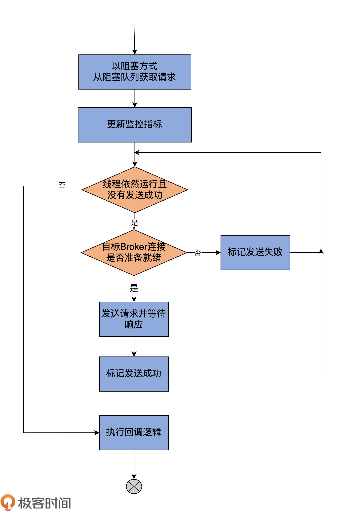
总体上来看，doWork的逻辑很直观。它的主要作用是从阻塞队列中取出待发送的请求，然后把它发送出去，之后等待Response的返回。在等待Response的过程中，线程将一直处于阻塞状态。当接收到Response之后，调用callback执行请求处理完成后的回调逻辑。
需要注意的是，RequestSendThread线程对请求发送的处理方式与Broker处理请求不太一样。它调用的sendAndReceive方法在发送完请求之后，会原地进入阻塞状态，等待Response返回。只有接收到Response，并执行完回调逻辑之后，该线程才能从阻塞队列中取出下一个待发送请求进行处理。
ControllerChannelManager
了解了RequestSendThread线程的源码之后，我们进入到ControllerChannelManager类的学习。
这个类和RequestSendThread是合作共赢的关系。在我看来，它有两大类任务。
- 管理Controller与集群Broker之间的连接，并为每个Broker创建RequestSendThread线程实例；
- 将要发送的请求放入到指定Broker的阻塞队列中，等待该Broker专属的RequestSendThread线程进行处理。
由此可见，它们是紧密相连的。
ControllerChannelManager类最重要的数据结构是brokerStateInfo，它是在下面这行代码中定义的：
protected val brokerStateInfo = new HashMap[Int, ControllerBrokerStateInfo]
这是一个HashMap类型，Key是Integer类型，其实就是集群中Broker的ID信息，而Value是一个ControllerBrokerStateInfo。
你可能不太清楚ControllerBrokerStateInfo类是什么，我先解释一下。它本质上是一个POJO类，仅仅是承载若干数据结构的容器，如下所示：
case class ControllerBrokerStateInfo(networkClient: NetworkClient,
brokerNode: Node,
messageQueue: BlockingQueue[QueueItem],
requestSendThread: RequestSendThread,
queueSizeGauge: Gauge[Int],
requestRateAndTimeMetrics: Timer,
reconfigurableChannelBuilder: Option[Reconfigurable])
它有三个非常关键的字段。
- brokerNode：目标Broker节点对象，里面封装了目标Broker的连接信息，比如主机名、端口号等。
- messageQueue：请求消息阻塞队列。你可以发现，Controller为每个目标Broker都创建了一个消息队列。
- requestSendThread：Controller使用这个线程给目标Broker发送请求。
你一定要记住这三个字段，因为它们是实现Controller发送请求的关键因素。
为什么呢？我们思考一下，如果Controller要给Broker发送请求，肯定需要解决三个问题：发给谁？发什么？怎么发？“发给谁”就是由brokerNode决定的；messageQueue里面保存了要发送的请求，因而解决了“发什么”的问题；最后的“怎么发”就是依赖requestSendThread变量实现的。
好了，我们现在回到ControllerChannelManager。它定义了5个public方法，我来一一介绍下。
- startup方法：Controller组件在启动时，会调用ControllerChannelManager的startup方法。该方法会从元数据信息中找到集群的Broker列表，然后依次为它们调用addBroker方法，把它们加到brokerStateInfo变量中，最后再依次启动brokerStateInfo中的RequestSendThread线程。
- shutdown方法：关闭所有RequestSendThread线程，并清空必要的资源。
- sendRequest方法：从名字看，就是发送请求，实际上就是把请求对象提交到请求队列。
- addBroker方法：添加目标Broker到brokerStateInfo数据结构中，并创建必要的配套资源，如请求队列、RequestSendThread线程对象等。最后，RequestSendThread启动线程。
- removeBroker方法：从brokerStateInfo移除目标Broker的相关数据。
这里面大部分的方法逻辑都很简单，从方法名字就可以看得出来。我重点说一下addBroker，以及底层相关的私有方法addNewBroker和startRequestSendThread方法。
毕竟，addBroker是最重要的逻辑。每当集群中扩容了新的Broker时，Controller就会调用这个方法为新Broker增加新的RequestSendThread线程。
我们先来看addBroker：
def addBroker(broker: Broker): Unit = {
brokerLock synchronized {
// 如果该Broker是新Broker的话
if (!brokerStateInfo.contains(broker.id)) {
// 将新Broker加入到Controller管理，并创建对应的RequestSendThread线程
addNewBroker(broker)
// 启动RequestSendThread线程
startRequestSendThread(broker.id)
}
}
}
整个代码段被brokerLock保护起来了。还记得brokerStateInfo的定义吗？它仅仅是一个HashMap对象，因为不是线程安全的，所以任何访问该变量的地方，都需要锁的保护。
这段代码的逻辑是，判断目标Broker的序号，是否已经保存在brokerStateInfo中。如果是，就说明这个Broker之前已经添加过了，就没必要再次添加了；否则，addBroker方法会对目前的Broker执行两个操作：
- 把该Broker节点添加到brokerStateInfo中；
- 启动与该Broker对应的RequestSendThread线程。
这两步分别是由addNewBroker和startRequestSendThread方法实现的。
addNewBroker方法的逻辑比较复杂，我用注释的方式给出主要步骤：
private def addNewBroker(broker: Broker): Unit = {
// 为该Broker构造请求阻塞队列
val messageQueue = new LinkedBlockingQueue[QueueItem]
debug(s"Controller ${config.brokerId} trying to connect to broker ${broker.id}")
val controllerToBrokerListenerName = config.controlPlaneListenerName.getOrElse(config.interBrokerListenerName)
val controllerToBrokerSecurityProtocol = config.controlPlaneSecurityProtocol.getOrElse(config.interBrokerSecurityProtocol)
// 获取待连接Broker节点对象信息
val brokerNode = broker.node(controllerToBrokerListenerName)
val logContext = new LogContext(s"[Controller id=${config.brokerId}, targetBrokerId=${brokerNode.idString}] ")
val (networkClient, reconfigurableChannelBuilder) = {
val channelBuilder = ChannelBuilders.clientChannelBuilder(
controllerToBrokerSecurityProtocol,
JaasContext.Type.SERVER,
config,
controllerToBrokerListenerName,
config.saslMechanismInterBrokerProtocol,
time,
config.saslInterBrokerHandshakeRequestEnable,
logContext
)
val reconfigurableChannelBuilder = channelBuilder match {
case reconfigurable: Reconfigurable =>
config.addReconfigurable(reconfigurable)
Some(reconfigurable)
case _ => None
}
// 创建NIO Selector实例用于网络数据传输
val selector = new Selector(
NetworkReceive.UNLIMITED,
Selector.NO_IDLE_TIMEOUT_MS,
metrics,
time,
"controller-channel",
Map("broker-id" -> brokerNode.idString).asJava,
false,
channelBuilder,
logContext
)
// 创建NetworkClient实例
// NetworkClient类是Kafka clients工程封装的顶层网络客户端API
// 提供了丰富的方法实现网络层IO数据传输
val networkClient = new NetworkClient(
selector,
new ManualMetadataUpdater(Seq(brokerNode).asJava),
config.brokerId.toString,
1,
0,
0,
Selectable.USE_DEFAULT_BUFFER_SIZE,
Selectable.USE_DEFAULT_BUFFER_SIZE,
config.requestTimeoutMs,
ClientDnsLookup.DEFAULT,
time,
false,
new ApiVersions,
logContext
)
(networkClient, reconfigurableChannelBuilder)
}
// 为这个RequestSendThread线程设置线程名称
val threadName = threadNamePrefix match {
case None => s"Controller-${config.brokerId}-to-broker-${broker.id}-send-thread"
case Some(name) => s"$name:Controller-${config.brokerId}-to-broker-${broker.id}-send-thread"
}
// 构造请求处理速率监控指标
val requestRateAndQueueTimeMetrics = newTimer(
RequestRateAndQueueTimeMetricName, TimeUnit.MILLISECONDS, TimeUnit.SECONDS, brokerMetricTags(broker.id)
)
// 创建RequestSendThread实例
val requestThread = new RequestSendThread(config.brokerId, controllerContext, messageQueue, networkClient,
brokerNode, config, time, requestRateAndQueueTimeMetrics, stateChangeLogger, threadName)
requestThread.setDaemon(false)
val queueSizeGauge = newGauge(QueueSizeMetricName, () => messageQueue.size, brokerMetricTags(broker.id))
// 创建该Broker专属的ControllerBrokerStateInfo实例
// 并将其加入到brokerStateInfo统一管理
brokerStateInfo.put(broker.id, ControllerBrokerStateInfo(networkClient, brokerNode, messageQueue,
requestThread, queueSizeGauge, requestRateAndQueueTimeMetrics, reconfigurableChannelBuilder))
}
为了方便你理解，我还画了一张流程图形象说明它的执行流程：

addNewBroker的关键在于，要为目标Broker创建一系列的配套资源，比如，NetworkClient用于网络I/O操作、messageQueue用于阻塞队列、requestThread用于发送请求，等等。
至于startRequestSendThread方法，就简单得多了，只有几行代码而已。
protected def startRequestSendThread(brokerId: Int): Unit = {
// 获取指定Broker的专属RequestSendThread实例
val requestThread = brokerStateInfo(brokerId).requestSendThread
if (requestThread.getState == Thread.State.NEW)
// 启动线程
requestThread.start()
}
它首先根据给定的Broker序号信息，从brokerStateInfo中找出对应的ControllerBrokerStateInfo对象。有了这个对象，也就有了为该目标Broker服务的所有配套资源。下一步就是从ControllerBrokerStateInfo中拿出RequestSendThread对象，再启动它就好了。
总结
今天，我结合ControllerChannelManager.scala文件，重点分析了Controller向Broker发送请求机制的实现原理。
Controller主要通过ControllerChannelManager类来实现与其他Broker之间的请求发送。其中，ControllerChannelManager类中定义的RequestSendThread是主要的线程实现类，用于实际发送请求给集群Broker。除了RequestSendThread之外，ControllerChannelManager还定义了相应的管理方法，如添加Broker、移除Broker等。通过这些管理方法，Controller在集群扩缩容时能够快速地响应到这些变化，完成对应Broker连接的创建与销毁。
我们来回顾下这节课的重点。
- Controller端请求：Controller发送三类请求给Broker，分别是LeaderAndIsrRequest、StopReplicaRequest和UpdateMetadataRequest。
- RequestSendThread：该线程负责将请求发送给集群中的相关或所有Broker。
- 请求阻塞队列+RequestSendThread：Controller会为集群上所有Broker创建对应的请求阻塞队列和RequestSendThread线程。
其实，今天讲的所有东西都只是这节课的第二张图中“消费者”的部分，我们并没有详细了解请求是怎么被放到请求队列中的。接下来，我们就会针对这个问题，深入地去探讨Controller单线程的事件处理器是如何实现的。
课后讨论
你觉得，为每个Broker都创建一个RequestSendThread的方案有什么优缺点？
欢迎你在留言区写下你的思考和答案，跟我交流讨论，也欢迎你把今天的内容分享给你的朋友。
13 ControllerEventManager：变身单线程后的Controller如何处理事件？
你好，我是胡夕。 今天，我们来学习下Controller的单线程事件处理器源码。
所谓的单线程事件处理器，就是Controller端定义的一个组件。该组件内置了一个专属线程，负责处理其他线程发送过来的Controller事件。另外，它还定义了一些管理方法，用于为专属线程输送待处理事件。
在0.11.0.0版本之前，Controller组件的源码非常复杂。集群元数据信息在程序中同时被多个线程访问，因此，源码里有大量的Monitor锁、Lock锁或其他线程安全机制，这就导致，这部分代码读起来晦涩难懂，改动起来也困难重重，因为你根本不知道，变动了这个线程访问的数据，会不会影响到其他线程。同时，开发人员在修复Controller Bug时，也非常吃力。
鉴于这个原因，自0.11.0.0版本开始，社区陆续对Controller代码结构进行了改造。其中非常重要的一环，就是将多线程并发访问的方式改为了单线程的事件队列方式。
这里的单线程，并非是指Controller只有一个线程了，而是指对局部状态的访问限制在一个专属线程上，即让这个特定线程排他性地操作Controller元数据信息。
这样一来，整个组件代码就不必担心多线程访问引发的各种线程安全问题了，源码也可以抛弃各种不必要的锁机制，最终大大简化了Controller端的代码结构。
这部分源码非常重要，它能够帮助你掌握Controller端处理各类事件的原理，这将极大地提升你在实际场景中处理Controller各类问题的能力。因此，我建议你多读几遍，彻底了解Controller是怎么处理各种事件的。
基本术语和概念
接下来，我们先宏观领略一下Controller单线程事件队列处理模型及其基础组件。
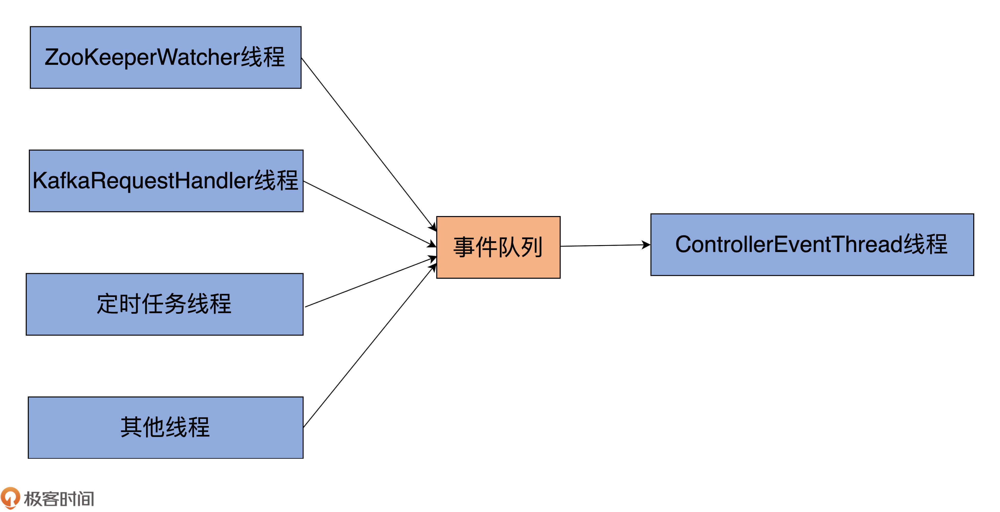
从图中可见，Controller端有多个线程向事件队列写入不同种类的事件，比如，ZooKeeper端注册的Watcher线程、KafkaRequestHandler线程、Kafka定时任务线程，等等。而在事件队列的另一端，只有一个名为ControllerEventThread的线程专门负责“消费”或处理队列中的事件。这就是所谓的单线程事件队列模型。
参与实现这个模型的源码类有4个。
- ControllerEventProcessor：Controller端的事件处理器接口。
- ControllerEvent：Controller事件，也就是事件队列中被处理的对象。
- ControllerEventManager：事件处理器，用于创建和管理ControllerEventThread。
- ControllerEventThread：专属的事件处理线程，唯一的作用是处理不同种类的ControllEvent。这个类是ControllerEventManager类内部定义的线程类。
今天，我们的重要目标就是要搞懂这4个类。就像我前面说的，它们完整地构建出了单线程事件队列模型。下面我们将一个一个地学习它们的源码，你要重点掌握事件队列的实现以及专属线程是如何访问事件队列的。
ControllerEventProcessor
这个接口位于controller包下的ControllerEventManager.scala文件中。它定义了一个支持普通处理和抢占处理Controller事件的接口，代码如下所示：
trait ControllerEventProcessor {
def process(event: ControllerEvent): Unit
def preempt(event: ControllerEvent): Unit
}
该接口定义了两个方法，分别是process和preempt。
- process：接收一个Controller事件，并进行处理。
- preempt：接收一个Controller事件，并抢占队列之前的事件进行优先处理。
目前，在Kafka源码中，KafkaController类是Controller组件的功能实现类，它也是ControllerEventProcessor接口的唯一实现类。
对于这个接口，你要重点掌握process方法的作用，因为它是实现Controller事件处理的主力方法。你要了解process方法处理各类Controller事件的代码结构是什么样的，而且还要能够准确地找到处理每类事件的子方法。
至于preempt方法，你仅需要了解，Kafka使用它实现某些高优先级事件的抢占处理即可，毕竟，目前在源码中只有两类事件（ShutdownEventThread和Expire）需要抢占式处理，出镜率不是很高。
ControllerEvent
这就是前面说到的Controller事件，在源码中对应的就是ControllerEvent接口。该接口定义在KafkaController.scala文件中，本质上是一个trait类型，如下所示：
sealed trait ControllerEvent {
def state: ControllerState
}
每个ControllerEvent都定义了一个状态。Controller在处理具体的事件时，会对状态进行相应的变更。这个状态是由源码文件ControllerState.scala中的抽象类ControllerState定义的，代码如下：
sealed abstract class ControllerState {
def value: Byte
def rateAndTimeMetricName: Option[String] =
if (hasRateAndTimeMetric) Some(s"${toString}RateAndTimeMs") else None
protected def hasRateAndTimeMetric: Boolean = true
}
每类ControllerState都定义一个value值，表示Controller状态的序号，从0开始。另外，rateAndTimeMetricName方法是用于构造Controller状态速率的监控指标名称的。
比如，TopicChange是一类ControllerState，用于表示主题总数发生了变化。为了监控这类状态变更速率，代码中的rateAndTimeMetricName方法会定义一个名为TopicChangeRateAndTimeMs的指标。当然，并非所有的ControllerState都有对应的速率监控指标，比如，表示空闲状态的Idle就没有对应的指标。
目前，Controller总共定义了25类事件和17种状态，它们的对应关系如下表所示：

内容看着好像有很多，那我们应该怎样使用这张表格呢？
实际上，你并不需要记住每一行的对应关系。这张表格更像是一个工具，当你监控到某些Controller状态变更速率异常的时候，你可以通过这张表格，快速确定可能造成瓶颈的Controller事件，并定位处理该事件的函数代码，辅助你进一步地调试问题。
另外，你要了解的是，多个ControllerEvent可能归属于相同的ControllerState。
比如，TopicChange和PartitionModifications事件都属于TopicChange状态，毕竟，它们都与Topic的变更有关。前者是创建Topic，后者是修改Topic的属性，比如，分区数或副本因子，等等。
再比如，BrokerChange和BrokerModifications事件都属于 BrokerChange状态，表征的都是对Broker属性的修改。
ControllerEventManager
有了这些铺垫，我们就可以开始学习事件处理器的实现代码了。
在Kafka中，Controller事件处理器代码位于controller包下的ControllerEventManager.scala文件下。我用一张图来展示下这个文件的结构：

如图所示，该文件主要由4个部分组成。
- ControllerEventManager Object：保存一些字符串常量，比如线程名字。
- ControllerEventProcessor：前面讲过的事件处理器接口，目前只有KafkaController实现了这个接口。
- QueuedEvent：表征事件队列上的事件对象。
- ControllerEventManager Class：ControllerEventManager的伴生类，主要用于创建和管理事件处理线程和事件队列。就像我前面说的，这个类中定义了重要的ControllerEventThread线程类，还有一些其他值得我们学习的重要方法，一会儿我们详细说说。
ControllerEventManager对象仅仅定义了3个公共变量，没有任何逻辑，你简单看下就行。至于ControllerEventProcessor接口，我们刚刚已经学习过了。接下来，我们重点学习后面这两个类。
QueuedEvent
我们先来看QueuedEvent的定义，全部代码如下：
// 每个QueuedEvent定义了两个字段
// event: ControllerEvent类，表示Controller事件
// enqueueTimeMs：表示Controller事件被放入到事件队列的时间戳
class QueuedEvent(val event: ControllerEvent,
val enqueueTimeMs: Long) {
// 标识事件是否开始被处理
val processingStarted = new CountDownLatch(1)
// 标识事件是否被处理过
val spent = new AtomicBoolean(false)
// 处理事件
def process(processor: ControllerEventProcessor): Unit = {
if (spent.getAndSet(true))
return
processingStarted.countDown()
processor.process(event)
}
// 抢占式处理事件
def preempt(processor: ControllerEventProcessor): Unit = {
if (spent.getAndSet(true))
return
processor.preempt(event)
}
// 阻塞等待事件被处理完成
def awaitProcessing(): Unit = {
processingStarted.await()
}
override def toString: String = {
s"QueuedEvent(event=$event, enqueueTimeMs=$enqueueTimeMs)"
}
}
可以看到，每个QueuedEvent对象实例都裹挟了一个ControllerEvent。另外，每个QueuedEvent还定义了process、preempt和awaitProcessing方法，分别表示处理事件、以抢占方式处理事件，以及等待事件处理。
其中，process方法和preempt方法的实现原理，就是调用给定ControllerEventProcessor接口的process和preempt方法，非常简单。
在QueuedEvent对象中，我们再一次看到了CountDownLatch的身影，我在[第7节课]里提到过它。Kafka源码非常喜欢用CountDownLatch来做各种条件控制，比如用于侦测线程是否成功启动、成功关闭，等等。
在这里，QueuedEvent使用它的唯一目的，是确保Expire事件在建立ZooKeeper会话前被处理。
如果不是在这个场景下，那么，代码就用spent来标识该事件是否已经被处理过了，如果已经被处理过了，再次调用process方法时就会直接返回，什么都不做。
ControllerEventThread
了解了QueuedEvent，我们来看下消费它们的ControllerEventThread类。
首先是这个类的定义代码：
class ControllerEventThread(name: String) extends ShutdownableThread(name = name, isInterruptible = false) {
logIdent = s"[ControllerEventThread controllerId=$controllerId] "
......
}
这个类就是一个普通的线程类，继承了ShutdownableThread基类，而后者是Kafka为很多线程类定义的公共父类。该父类是Java Thread类的子类，其线程逻辑方法run的主要代码如下：
def doWork(): Unit
override def run(): Unit = {
......
try {
while (isRunning)
doWork()
} catch {
......
}
......
}
可见，这个父类会循环地执行doWork方法的逻辑，而该方法的具体实现则交由子类来完成。
作为Controller唯一的事件处理线程，我们要时刻关注这个线程的运行状态。因此，我们必须要知道这个线程在JVM上的名字，这样后续我们就能有针对性地对其展开监控。这个线程的名字是由ControllerEventManager Object中ControllerEventThreadName变量定义的，如下所示：
object ControllerEventManager {
val ControllerEventThreadName = "controller-event-thread"
......
}
现在我们看看ControllerEventThread类的doWork是如何实现的。代码如下：
override def doWork(): Unit = {
// 从事件队列中获取待处理的Controller事件，否则等待
val dequeued = queue.take()
dequeued.event match {
// 如果是关闭线程事件，什么都不用做。关闭线程由外部来执行
case ShutdownEventThread =>
case controllerEvent =>
_state = controllerEvent.state
// 更新对应事件在队列中保存的时间
eventQueueTimeHist.update(time.milliseconds() - dequeued.enqueueTimeMs)
try {
def process(): Unit = dequeued.process(processor)
// 处理事件，同时计算处理速率
rateAndTimeMetrics.get(state) match {
case Some(timer) => timer.time { process() }
case None => process()
}
} catch {
case e: Throwable => error(s"Uncaught error processing event $controllerEvent", e)
}
_state = ControllerState.Idle
}
}
我用一张图来展示下具体的执行流程：
大体上看，执行逻辑很简单。
首先是调用LinkedBlockingQueue的take方法，去获取待处理的QueuedEvent对象实例。注意，这里用的是take方法，这说明，如果事件队列中没有QueuedEvent，那么，ControllerEventThread线程将一直处于阻塞状态，直到事件队列上插入了新的待处理事件。
一旦拿到QueuedEvent事件后，线程会判断是否是ShutdownEventThread事件。当ControllerEventManager关闭时，会显式地向事件队列中塞入ShutdownEventThread，表明要关闭ControllerEventThread线程。如果是该事件，那么ControllerEventThread什么都不用做，毕竟要关闭这个线程了。相反地，如果是其他的事件，就调用QueuedEvent的process方法执行对应的处理逻辑，同时计算事件被处理的速率。
该process方法底层调用的是ControllerEventProcessor的process方法，如下所示：
def process(processor: ControllerEventProcessor): Unit = {
// 若已经被处理过，直接返回
if (spent.getAndSet(true))
return
processingStarted.countDown()
// 调用ControllerEventProcessor的process方法处理事件
processor.process(event)
}
方法首先会判断该事件是否已经被处理过，如果是，就直接返回；如果不是，就调用ControllerEventProcessor的process方法处理事件。
你可能很关心，每个ControllerEventProcessor的process方法是在哪里实现的？实际上，它们都封装在KafkaController.scala文件中。还记得我之前说过，KafkaController类是目前源码中ControllerEventProcessor接口的唯一实现类吗？
实际上，就是KafkaController类实现了ControllerEventProcessor的process方法。由于代码过长，而且有很多重复结构的代码，因此，我只展示部分代码：
override def process(event: ControllerEvent): Unit = {
try {
// 依次匹配ControllerEvent事件
event match {
case event: MockEvent =>
event.process()
case ShutdownEventThread =>
error("Received a ShutdownEventThread event. This type of event is supposed to be handle by ControllerEventThread")
case AutoPreferredReplicaLeaderElection =>
processAutoPreferredReplicaLeaderElection()
......
}
} catch {
// 如果Controller换成了别的Broker
case e: ControllerMovedException =>
info(s"Controller moved to another broker when processing $event.", e)
// 执行Controller卸任逻辑
maybeResign()
case e: Throwable =>
error(s"Error processing event $event", e)
} finally {
updateMetrics()
}
}
这个process方法接收一个ControllerEvent实例，接着会判断它是哪类Controller事件，并调用相应的处理方法。比如，如果是AutoPreferredReplicaLeaderElection事件，则调用processAutoPreferredReplicaLeaderElection方法；如果是其他类型的事件，则调用process***方法。
其他方法
除了QueuedEvent和ControllerEventThread之外，put方法和clearAndPut方法也很重要。如果说ControllerEventThread是读取队列事件的，那么，这两个方法就是向队列生产元素的。
在这两个方法中，put是把指定ControllerEvent插入到事件队列，而clearAndPut则是先执行具有高优先级的抢占式事件，之后清空队列所有事件，最后再插入指定的事件。
下面这两段源码分别对应于这两个方法：
// put方法
def put(event: ControllerEvent): QueuedEvent = inLock(putLock) {
// 构建QueuedEvent实例
val queuedEvent = new QueuedEvent(event, time.milliseconds())
// 插入到事件队列
queue.put(queuedEvent)
// 返回新建QueuedEvent实例
queuedEvent
}
// clearAndPut方法
def clearAndPut(event: ControllerEvent): QueuedEvent = inLock(putLock) {
// 优先处理抢占式事件
queue.forEach(_.preempt(processor))
// 清空事件队列
queue.clear()
// 调用上面的put方法将给定事件插入到事件队列
put(event)
}
整体上代码很简单，需要解释的地方不多，但我想和你讨论一个问题。
你注意到，源码中的put方法使用putLock对代码进行保护了吗？
就我个人而言，我觉得这个putLock是不需要的，因为LinkedBlockingQueue数据结构本身就已经是线程安全的了。put方法只会与全局共享变量queue打交道，因此，它们的线程安全性完全可以委托LinkedBlockingQueue实现。更何况，LinkedBlockingQueue内部已经维护了一个putLock和一个takeLock，专门保护读写操作。
当然，我同意在clearAndPut中使用锁的做法，毕竟，我们要保证，访问抢占式事件和清空操作构成一个原子操作。
总结
今天，我们重点学习了Controller端的单线程事件队列实现方式，即ControllerEventManager通过构建ControllerEvent、ControllerState和对应的ControllerEventThread线程，并且结合专属事件队列，共同实现事件处理。我们来回顾下这节课的重点。
- ControllerEvent：定义Controller能够处理的各类事件名称，目前总共定义了25类事件。
- ControllerState：定义Controller状态。你可以认为，它是ControllerEvent的上一级分类，因此，ControllerEvent和ControllerState是多对一的关系。
- ControllerEventManager：Controller定义的事件管理器，专门定义和维护专属线程以及对应的事件队列。
- ControllerEventThread：事件管理器创建的事件处理线程。该线程排他性地读取事件队列并处理队列中的所有事件。

下节课，我们将正式进入到KafkaController的学习。这是一个有着2100多行的大文件，不过大部分的代码都是实现那27类ControllerEvent的处理逻辑，因此，你不要被它吓到了。我们会先学习Controller是如何选举出来的，后面会再详谈Controller的具体作用。
课后讨论
你认为，ControllerEventManager中put方法代码是否有必要被一个Lock保护起来？
欢迎你在留言区畅所欲言，跟我交流讨论，也欢迎你把今天的内容分享给你的朋友。
14 Controller选举是怎么实现的？
你好，我是胡夕。
上节课，我们学习了单线程事件队列模型处理Controller事件的代码。Controller组件通过ControllerEventManager类构造了一个阻塞队列，同时配以专属的事件处理线程，实现了对各类ControllerEvent的处理。
这种设计思路既保证了多线程访问所需的线程安全，还简化了Controller端的代码结构，极大地提升了代码的可维护性。
今天，我们学习下Controller选举部分的源码。
还记得我在[第11节课]的案例中提到的“恢复大法”——删除ZooKeeper的/controller节点吗？当时，我们靠着这个“秘籍”涉险过关，既恢复了错误的集群状态，又避免了重启整个生产环境。
但你有没有想过，为什么删除/controller节点能够令集群元数据重新保持同步呢？如果不了解这背后的原理，我们是不敢贸然在生产环境做这种操作的。今天，我们要学习的就是这背后的一整套实现逻辑，重点关注下Controller是怎么被选举出来的。
我始终认为，只有掌握了这些知识，才算真正入门Kafka服务器端的代码了。作为Broker端最重要的组件之一，Controller在Kafka中的地位无可替代。整个Kafka集群就只有一个Controller，从某种意义上来说，它是目前Kafka这个分布式系统中唯一的“单点”。
因此，了解这个“单点”的选举触发场景，以及如何被选举出来的，对于我们后面深入理解Controller在集群中的作用非常有帮助。毕竟，Controller对外提供的一些服务也是采用了类似的实现原理。
概览
ZooKeeper /controller节点
再次强调下，在一个Kafka集群中，某段时间内只能有一台Broker被选举为Controller。随着时间的推移，可能会有不同的Broker陆续担任过Controller的角色，但是在某一时刻，Controller只能由一个Broker担任。
那选择哪个Broker充当Controller呢？当前，Controller的选举过程依赖ZooKeeper完成。ZooKeeper除了扮演集群元数据的“真理之源”角色，还定义了/controller临时节点（Ephemeral Node），以协助完成Controller的选举。
下面这段代码展示的是一个双Broker的Kafka集群上的ZooKeeper中/controller节点：
{"version":1,"brokerid":0,"timestamp":"1585098432431"}
cZxid = 0x1a
ctime = Wed Mar 25 09:07:12 CST 2020
mZxid = 0x1a
mtime = Wed Mar 25 09:07:12 CST 2020
pZxid = 0x1a
cversion = 0
dataVersion = 0
aclVersion = 0
ephemeralOwner = 0x100002d3a1f0000
dataLength = 54
numChildren = 0
有两个地方的内容，你要重点关注一下。
- Controller Broker Id是0，表示序号为0的Broker是集群Controller。
- ephemeralOwner字段不是0x0，说明这是一个临时节点。
既然是临时节点，那么，一旦Broker与ZooKeeper的会话终止，该节点就会消失。Controller选举就依靠了这个特性。每个Broker都会监听/controller节点随时准备应聘Controller角色。下图展示了Broker与/controller节点的交互关系：

如图所示，集群上所有的Broker都在实时监听ZooKeeper上的这个节点。这里的“监听”有两个含义。
- 监听这个节点是否存在。倘若发现这个节点不存在，Broker会立即“抢注”该节点，即创建/controller节点。创建成功的那个Broker，即当选为新一届的Controller。
- 监听这个节点数据是否发生了变更。同样，一旦发现该节点的内容发生了变化，Broker也会立即启动新一轮的Controller选举。
掌握了这些基础之后，下面我们来阅读具体的源码文件：KafkaController.scala。这是一个2200行的大文件。我先向你介绍一下这个文件的大致结构，以免你陷入到一些繁枝末节中。
源码结构
KafkaController文件的代码结构如下图所示：
整体而言，该文件大致由五部分组成。
- 选举触发器（ElectionTrigger）：这里的选举不是指Controller选举，而是指主题分区副本的选举，即为哪些分区选择Leader副本。后面在学习副本管理器和分区管理器时，我们会讲到它。
- KafkaController Object：KafkaController伴生对象，仅仅定义了一些常量和回调函数类型。
- ControllerEvent：定义Controller事件类型。上节课我们详细学习过Controller事件以及基于事件的单线程事件队列模型。这部分的代码看着很多，但实际上都是千篇一律的。你看懂了一个事件的定义，其他的也就不在话下了。
- 各种ZooKeeper监听器：定义ZooKeeper监听器，去监听ZooKeeper中各个节点的变更。今天，我们重点关注监听/controller节点的那个监听器。
- KafkaController Class：定义KafkaController类以及实际的处理逻辑。这是我们今天的重点学习对象。
接下来，我会给你重点介绍KafkaController类、ZooKeeper监听器和Controller选举这三大部分。在众多的ZooKeeper监听器中，我会详细介绍监听Controller变更的监听器，它也是我们了解Controller选举流程的核心环节。
KafkaController类
这个类大约有1900行代码，里面定义了非常多的变量和方法。这些方法大多是处理不同Controller事件的。后面讲到选举流程的时候，我会挑一些有代表性的来介绍。我希望你能举一反三，借此吃透其他方法的代码。毕竟，它们做的事情大同小异，至少代码风格非常相似。
在学习重要的方法之前，我们必须要先掌握KafkaController类的定义。接下来，我们从4个维度来进行学习，分别是原生字段、辅助字段、各类ZooKeeper监听器字段和统计字段。
弄明白了这些字段的含义之后，再去看操作这些字段的方法，会更加有的放矢，理解起来也会更加容易。
原生字段
首先来看原生字段。所谓的原生字段，是指在创建一个KafkaController实例时，需要指定的字段。
先来看下KafkaController类的定义代码：
// 字段含义：
// config：Kafka配置信息，通过它，你能拿到Broker端所有参数的值
// zkClient：ZooKeeper客户端，Controller与ZooKeeper的所有交互均通过该属性完成
// time：提供时间服务(如获取当前时间)的工具类
// metrics：实现指标监控服务(如创建监控指标)的工具类
// initialBrokerInfo：Broker节点信息，包括主机名、端口号，所用监听器等
// initialBrokerEpoch：Broker Epoch值，用于隔离老Controller发送的请求
// tokenManager：实现Delegation token管理的工具类。Delegation token是一种轻量级的认证机制
// threadNamePrefix：Controller端事件处理线程名字前缀
class KafkaController(val config: KafkaConfig,
zkClient: KafkaZkClient,
time: Time,
metrics: Metrics,
initialBrokerInfo: BrokerInfo,
initialBrokerEpoch: Long,
tokenManager: DelegationTokenManager,
threadNamePrefix: Option[String] = None)
extends ControllerEventProcessor with Logging with KafkaMetricsGroup {
......
}
就像我上节课说过的，KafkaController实现了ControllerEventProcessor接口，因而也就实现了处理Controller事件的process方法。这里面比较重要的字段有3个。
- config：KafkaConfig类实例，里面封装了Broker端所有参数的值。
- zkClient：ZooKeeper客户端类，定义了与ZooKeeper交互的所有方法。
- initialBrokerEpoch：Controller所在Broker的Epoch值。Kafka使用它来确保Broker不会处理老Controller发来的请求。
其他字段要么是像time、metrics一样，是工具类字段，要么是像initialBrokerInfo、tokenManager字段一样，使用场景很有限，我就不展开讲了。
辅助字段
除了原生字段之外，KafkaController还定义了很多辅助字段，帮助实现Controller的各类功能。
我们来看一些重要的辅助字段：
......
// 集群元数据类，保存集群所有元数据
val controllerContext = new ControllerContext
// Controller端通道管理器类，负责Controller向Broker发送请求
var controllerChannelManager = new ControllerChannelManager(controllerContext, config, time, metrics,
stateChangeLogger, threadNamePrefix)
// 线程调度器，当前唯一负责定期执行Leader重选举
private[controller] val kafkaScheduler = new KafkaScheduler(1)
// Controller事件管理器，负责管理事件处理线程
private[controller] val eventManager = new ControllerEventManager(config.brokerId, this, time,
controllerContext.stats.rateAndTimeMetrics)
......
// 副本状态机，负责副本状态转换
val replicaStateMachine: ReplicaStateMachine = new ZkReplicaStateMachine(config, stateChangeLogger, controllerContext, zkClient,
new ControllerBrokerRequestBatch(config, controllerChannelManager, eventManager, controllerContext, stateChangeLogger))
// 分区状态机，负责分区状态转换
val partitionStateMachine: PartitionStateMachine = new ZkPartitionStateMachine(config, stateChangeLogger, controllerContext, zkClient,
new ControllerBrokerRequestBatch(config, controllerChannelManager, eventManager, controllerContext, stateChangeLogger))
// 主题删除管理器，负责删除主题及日志
val topicDeletionManager = new TopicDeletionManager(config, controllerContext, replicaStateMachine,
partitionStateMachine, new ControllerDeletionClient(this, zkClient))
......
其中，有7个字段是重中之重。
- controllerContext：集群元数据类，保存集群所有元数据。
- controllerChannelManager：Controller端通道管理器类，负责Controller向Broker发送请求。
- kafkaScheduler：线程调度器，当前唯一负责定期执行分区重平衡Leader选举。
- eventManager：Controller事件管理器，负责管理事件处理线程。
- replicaStateMachine：副本状态机，负责副本状态转换。
- partitionStateMachine：分区状态机，负责分区状态转换。
- topicDeletionManager：主题删除管理器，负责删除主题及日志。
各类ZooKeeper监听器
我们今天开头学到的ControllerChangeHandler仅仅是其中的一种。实际上，该类定义了很多监听器，如下所示：
// Controller节点ZooKeeper监听器
private val controllerChangeHandler = new ControllerChangeHandler(eventManager)
// Broker数量ZooKeeper监听器
private val brokerChangeHandler = new BrokerChangeHandler(eventManager)
// Broker信息变更ZooKeeper监听器集合
private val brokerModificationsHandlers: mutable.Map[Int, BrokerModificationsHandler] = mutable.Map.empty
// 主题数量ZooKeeper监听器
private val topicChangeHandler = new TopicChangeHandler(eventManager)
// 主题删除ZooKeeper监听器
private val topicDeletionHandler = new TopicDeletionHandler(eventManager)
// 主题分区变更ZooKeeper监听器
private val partitionModificationsHandlers: mutable.Map[String, PartitionModificationsHandler] = mutable.Map.empty
// 主题分区重分配ZooKeeper监听器
private val partitionReassignmentHandler = new PartitionReassignmentHandler(eventManager)
// Preferred Leader选举ZooKeeper监听器
private val preferredReplicaElectionHandler = new PreferredReplicaElectionHandler(eventManager)
// ISR副本集合变更ZooKeeper监听器
private val isrChangeNotificationHandler = new IsrChangeNotificationHandler(eventManager)
// 日志路径变更ZooKeeper监听器
private val logDirEventNotificationHandler = new LogDirEventNotificationHandler(eventManager)
我分别解释一下这些ZooKeeper监听器的作用：
- controllerChangeHandler：前面说过，它是监听/controller节点变更的。这种变更包括节点创建、删除以及数据变更。
- brokerChangeHandler：监听Broker的数量变化。
- brokerModificationsHandlers：监听Broker的数据变更，比如Broker的配置信息发生的变化。
- topicChangeHandler：监控主题数量变更。
- topicDeletionHandler：监听主题删除节点/admin/delete_topics的子节点数量变更。
- partitionModificationsHandlers：监控主题分区数据变更的监听器，比如，新增加了副本、分区更换了Leader副本。
- partitionReassignmentHandler：监听分区副本重分配任务。一旦发现新提交的任务，就为目标分区执行副本重分配。
- preferredReplicaElectionHandler：监听Preferred Leader选举任务。一旦发现新提交的任务，就为目标主题执行Preferred Leader选举。
- isrChangeNotificationHandler：监听ISR副本集合变更。一旦被触发，就需要获取ISR发生变更的分区列表，然后更新Controller端对应的Leader和ISR缓存元数据。
- logDirEventNotificationHandler：监听日志路径变更。一旦被触发，需要获取受影响的Broker列表，然后处理这些Broker上失效的日志路径。
我画了一张脑图，希望可以帮助你更高效地记住这些ZooKeeper监听器：

统计字段
最后，我们来看统计字段。
这些统计字段大多用于计算统计指标。有的监控指标甚至是非常重要的Controller监控项，比如ActiveControllerCount指标。下面，我们来了解下KafkaController都定义了哪些统计字段。这些指标的含义一目了然，非常清晰，我用注释的方式给出每个字段的含义：
// 当前Controller所在Broker Id
@volatile private var activeControllerId = -1
// 离线分区总数
@volatile private var offlinePartitionCount = 0
// 满足Preferred Leader选举条件的总分区数
@volatile private var preferredReplicaImbalanceCount = 0
// 总主题数
@volatile private var globalTopicCount = 0
// 总主题分区数
@volatile private var globalPartitionCount = 0
// 待删除主题数
@volatile private var topicsToDeleteCount = 0
//待删除副本数
@volatile private var replicasToDeleteCount = 0
// 暂时无法删除的主题数
@volatile private var ineligibleTopicsToDeleteCount = 0
// 暂时无法删除的副本数
@volatile private var ineligibleReplicasToDeleteCount = 0
好了，KafkaController类的定义我们就全部介绍完了。再次强调下，因为KafkaController类的代码很多，我强烈建议你熟练掌握这些字段的含义，因为后面的所有方法都是围绕着这些字段进行操作的。
接下来，我以Controller的选举流程为例，引出KafkaController的一些方法的实现原理。不过，在此之前，我们要学习监听Controller变更的ZooKeeper监听器：ControllerChangeHandler的源码。
ControllerChangeHandler监听器
就像我前面说到的，KafkaController定义了十几种ZooKeeper监听器。和Controller相关的监听器是ControllerChangeHandler，用于监听Controller的变更，定义代码如下：
class ControllerChangeHandler(eventManager: ControllerEventManager) extends ZNodeChangeHandler {
// ZooKeeper中Controller节点路径，即/controller
override val path: String = ControllerZNode.path
// 监听/controller节点创建事件
override def handleCreation(): Unit = eventManager.put(ControllerChange)
// 监听/controller节点被删除事件
override def handleDeletion(): Unit = eventManager.put(Reelect)
// 监听/controller节点数据变更事件
override def handleDataChange(): Unit = eventManager.put(ControllerChange)
}
该监听器接收ControllerEventManager实例，实现了ZNodeChangeHandler接口的三个方法：handleCreation、handleDeletion和handleDataChange。该监听器下的path变量，实际上就是/controller字符串，表示它监听ZooKeeper的这个节点。
3个handle方法都用于监听/controller节点的变更，但实现细节上稍有不同。
handleCreation和handleDataChange的处理方式是向事件队列写入ControllerChange事件；handleDeletion的处理方式是向事件队列写入Reelect事件。
Deletion表明ZooKeeper中/controller节点不存在了，即Kafka集群中的Controller暂时空缺了。因为它和Creation和DataChange是不同的状态，需要区别对待，因此，Reelect事件做的事情要比ControllerChange的多：处理ControllerChange事件，只需要当前Broker执行“卸任Controller”的逻辑即可，而Reelect事件是重选举，除了Broker执行卸任逻辑之外，还要求Broker参与到重选举中来。
由于KafkaController的process方法代码非常长，因此，我节选了刚刚提到的那两个事件的处理代码：
// process方法(部分)
override def process(event: ControllerEvent): Unit = {
try {
event match {
......
// ControllerChange事件
case ControllerChange =>
processControllerChange()
// Reelect事件
case Reelect =>
processReelect()
......
}
}
......
}
// 如果是ControllerChange事件，仅执行卸任逻辑即可
private def processControllerChange(): Unit = {
maybeResign()
}
// 如果是Reelect事件，还需要执行elect方法参与新一轮的选举
private def processReelect(): Unit = {
maybeResign()
elect()
}
可以看到，虽然代码非常长，但整体结构却工整清晰，全部都是基于模式匹配的事件处理。process方法会根据给定的Controller事件类型，调用对应的process***方法处理该事件。这里只列举了ZooKeeper端/controller节点监听器监听的两类事件，以及对应的处理方法。
对于ControllerChange事件而言，处理方式是调用maybeResign去执行Controller的卸任逻辑。如果是Reelect事件，除了执行卸任逻辑之外，还要额外执行elect方法进行新一轮的Controller选举。
Controller选举流程
说完了ControllerChangeHandler源码，我们来看下Controller的选举。所谓的Controller选举，是指Kafka选择集群中一台Broker行使Controller职责。整个选举过程分为两个步骤：触发选举和开始选举。
触发选举
我先用一张图展示下可能触发Controller选举的三个场景。
这三个场景是：
- 集群从零启动时；
- Broker侦测/controller节点消失时；
- Broker侦测到/controller节点数据发生变更时。
这三个场景殊途同归，最后都要执行选举Controller的动作。我来一一解释下这三个场景，然后再介绍选举Controller的具体操作。
场景一：集群从零启动
集群首次启动时，Controller尚未被选举出来。于是，Broker启动后，首先将Startup这个ControllerEvent写入到事件队列中，然后启动对应的事件处理线程和ControllerChangeHandler ZooKeeper监听器，最后依赖事件处理线程进行Controller的选举。
在源码中，KafkaController类的startup方法就是做这些事情的。当Broker启动时，它会调用这个方法启动ControllerEventThread线程。值得注意的是，每个Broker都需要做这些事情，不是说只有Controller所在的Broker才需要执行这些逻辑。
startup方法的主体代码如下：
def startup() = {
// 第1步：注册ZooKeeper状态变更监听器，它是用于监听Zookeeper会话过期的
zkClient.registerStateChangeHandler(new StateChangeHandler {
override val name: String = StateChangeHandlers.ControllerHandler
override def afterInitializingSession(): Unit = {
eventManager.put(RegisterBrokerAndReelect)
}
override def beforeInitializingSession(): Unit = {
val queuedEvent = eventManager.clearAndPut(Expire)
queuedEvent.awaitProcessing()
}
})
// 第2步：写入Startup事件到事件队列
eventManager.put(Startup)
// 第3步：启动ControllerEventThread线程，开始处理事件队列中的ControllerEvent
eventManager.start()
}
首先，startup方法会注册ZooKeeper状态变更监听器，用于监听Broker与ZooKeeper之间的会话是否过期。接着，写入Startup事件到事件队列，然后启动ControllerEventThread线程，开始处理事件队列中的Startup事件。
接下来，我们来学习下KafkaController的process方法处理Startup事件的方法：
// KafkaController的process方法，
override def process(event: ControllerEvent): Unit = {
try {
event match {
......
case Startup =>
processStartup() // 处理Startup事件
}
}
......
}
private def processStartup(): Unit = {
// 注册ControllerChangeHandler ZooKeeper监听器
zkClient.registerZNodeChangeHandlerAndCheckExistence(
controllerChangeHandler)
// 执行Controller选举
elect()
}
从这段代码可知，process方法调用processStartup方法去处理Startup事件。而processStartup方法又会调用zkClient的registerZNodeChangeHandlerAndCheckExistence方法注册ControllerChangeHandler监听器。
值得注意的是，虽然前面的三个场景是并列的关系，但实际上，后面的两个场景必须要等场景一的这一步成功执行之后，才能被触发。
这三种场景都要选举Controller，因此，我们最后统一学习elect方法的代码实现。
总体来说，集群启动时，Broker通过向事件队列“塞入”Startup事件的方式，来触发Controller的竞选。
场景二：/controller节点消失
Broker检测到/controller节点消失时，就意味着，此时整个集群中没有Controller。因此，所有检测到/controller节点消失的Broker，都会立即调用elect方法执行竞选逻辑。
你可能会问：“Broker是怎么侦测到ZooKeeper上的这一变化的呢？”实际上，这是ZooKeeper监听器提供的功能，换句话说，这是Apache ZooKeeper自己实现的功能，所以我们才说，Kafka依赖ZooKeeper完成Controller的选举。
讲到这里，我说点题外话，社区最近正在酝酿彻底移除ZooKeeper依赖。具体到Controller端的变化，就是在Kafka内部实现一个类似于Raft的共识算法来选举Controller。我会在后面的特别放送里详细讲一下社区移除ZooKeeper的全盘计划。
场景三：/controller节点数据变更
Broker检测到/controller节点数据发生变化，通常表明，Controller“易主”了，这就分为两种情况：
- 如果Broker之前是Controller，那么该Broker需要首先执行卸任操作，然后再尝试竞选；
- 如果Broker之前不是Controller，那么，该Broker直接去竞选新Controller。
具体到代码层面，maybeResign方法形象地说明了这两种情况。你要注意方法中的maybe字样，这表明，Broker可能需要执行卸任操作，也可能不需要。Kafka源码非常喜欢用maybe***来命名方法名，以表示那些在特定条件下才需要执行的逻辑。以下是maybeResign的实现：
private def maybeResign(): Unit = {
// 非常关键的一步！这是判断是否需要执行卸任逻辑的重要依据！
// 判断该Broker之前是否是Controller
val wasActiveBeforeChange = isActive
// 注册ControllerChangeHandler监听器
zkClient.registerZNodeChangeHandlerAndCheckExistence(
controllerChangeHandler)
// 获取当前集群Controller所在的Broker Id，如果没有Controller则返回-1
activeControllerId = zkClient.getControllerId.getOrElse(-1)
// 如果该Broker之前是Controller但现在不是了
if (wasActiveBeforeChange && !isActive) {
onControllerResignation() // 执行卸任逻辑
}
}
代码的第一行非常关键，它是决定是否需要执行卸任的重要依据。毕竟，如果Broker之前不是Controller，那何来“卸任”一说呢？之后代码要注册ControllerChangeHandler监听器，获取当前集群Controller所在的Broker ID，如果没有Controller，则返回-1。有了这些数据之后，maybeResign方法需要判断该Broker是否之前是Controller但现在不是了。如果是这种情况的话，则调用onControllerResignation方法执行Controller卸任逻辑。
说到“卸任”，你可能会问：“卸任逻辑是由哪个方法执行的呢？”实际上，这是由onControllerResignation方法执行的，它主要是用于清空各种数据结构的值、取消ZooKeeper监听器、关闭各种状态机以及管理器，等等。我用注释的方式给出它的逻辑实现：
private def onControllerResignation(): Unit = {
debug("Resigning")
// 取消ZooKeeper监听器的注册
zkClient.unregisterZNodeChildChangeHandler(
isrChangeNotificationHandler.path)
zkClient.unregisterZNodeChangeHandler(
partitionReassignmentHandler.path)
zkClient.unregisterZNodeChangeHandler(
preferredReplicaElectionHandler.path)
zkClient.unregisterZNodeChildChangeHandler(
logDirEventNotificationHandler.path)
unregisterBrokerModificationsHandler(
brokerModificationsHandlers.keySet)
// 关闭Kafka线程调度器，其实就是取消定期的Leader重选举
kafkaScheduler.shutdown()
// 将统计字段全部清0
offlinePartitionCount = 0
preferredReplicaImbalanceCount = 0
globalTopicCount = 0
globalPartitionCount = 0
topicsToDeleteCount = 0
replicasToDeleteCount = 0
ineligibleTopicsToDeleteCount = 0
ineligibleReplicasToDeleteCount = 0
// 关闭Token过期检查调度器
if (tokenCleanScheduler.isStarted)
tokenCleanScheduler.shutdown()
// 取消分区重分配监听器的注册
unregisterPartitionReassignmentIsrChangeHandlers()
// 关闭分区状态机
partitionStateMachine.shutdown()
// 取消主题变更监听器的注册
zkClient.unregisterZNodeChildChangeHandler(topicChangeHandler.path)
// 取消分区变更监听器的注册
unregisterPartitionModificationsHandlers(
partitionModificationsHandlers.keys.toSeq)
// 取消主题删除监听器的注册
zkClient.unregisterZNodeChildChangeHandler(
topicDeletionHandler.path)
// 关闭副本状态机
replicaStateMachine.shutdown()
// 取消Broker变更监听器的注册
zkClient.unregisterZNodeChildChangeHandler(brokerChangeHandler.path)
// 关闭Controller通道管理器
controllerChannelManager.shutdown()
// 清空集群元数据
controllerContext.resetContext()
info("Resigned")
}
选举Controller
讲完了触发场景，接下来，我们就要学习Controller选举的源码了。前面说过了，这三种选举场景最后都会调用elect方法来执行选举逻辑。我们来看下它的实现：
private def elect(): Unit = {
// 第1步：获取当前Controller所在Broker的序号，如果Controller不存在，显式标记为-1
activeControllerId = zkClient.getControllerId.getOrElse(-1)
// 第2步：如果当前Controller已经选出来了，直接返回即可
if (activeControllerId != -1) {
debug(s"Broker $activeControllerId has been elected as the controller, so stopping the election process.")
return
}
try {
// 第3步：注册Controller相关信息
// 主要是创建/controller节点
val (epoch, epochZkVersion) = zkClient.registerControllerAndIncrementControllerEpoch(config.brokerId)
controllerContext.epoch = epoch
controllerContext.epochZkVersion = epochZkVersion
activeControllerId = config.brokerId
info(s"${config.brokerId} successfully elected as the controller. Epoch incremented to ${controllerContext.epoch} " +
s"and epoch zk version is now ${controllerContext.epochZkVersion}")
// 第4步：执行当选Controller的后续逻辑
onControllerFailover()
} catch {
case e: ControllerMovedException =>
maybeResign()
if (activeControllerId != -1)
debug(s"Broker $activeControllerId was elected as controller instead of broker ${config.brokerId}", e)
else
warn("A controller has been elected but just resigned, this will result in another round of election", e)
case t: Throwable =>
error(s"Error while electing or becoming controller on broker ${config.brokerId}. " +
s"Trigger controller movement immediately", t)
triggerControllerMove()
}
}
为了帮助你更好地理解这个方法，我再画一张图来进行说明：
该方法首先检查Controller是否已经选出来了。要知道，集群中的所有Broker都要执行这些逻辑，因此，非常有可能出现某些Broker在执行elect方法时，Controller已经被选出来的情况。如果Controller已经选出来了，那么，自然也就不用再做什么了。相反地，如果Controller尚未被选举出来，那么，代码会尝试创建/controller节点去抢注Controller。
一旦抢注成功，就调用onControllerFailover方法，执行选举成功后的动作。这些动作包括注册各类ZooKeeper监听器、删除日志路径变更和ISR副本变更通知事件、启动Controller通道管理器，以及启动副本状态机和分区状态机。
如果抢注失败了，代码会抛出ControllerMovedException异常。这通常表明Controller已经被其他Broker抢先占据了，那么，此时代码调用maybeResign方法去执行卸任逻辑。
总结
今天，我们梳理了Controller选举的全过程，包括Controller如何借助ZooKeeper监听器实现监听Controller节点，以及Controller的选举触发场景和完整流程。我们来回顾一下这节课的重点。
- Controller依赖ZooKeeper实现Controller选举，主要是借助于/controller临时节点和ZooKeeper的监听器机制。
- Controller触发场景有3种：集群启动时；/controller节点被删除时；/controller节点数据变更时。
- 源码最终调用elect方法实现Controller选举。
下节课，我将带你学习Controller的其他重要功能，包括它如何管理Broker和副本等。你千万不要错过。
课后讨论
在这节课刚开始的时候，我提到，删除/controller会触发Controller选举，之后会同步集群元数据信息。那么，你知道源码是在哪里更新的元数据请求吗？
欢迎你在留言区畅所欲言，跟我交流讨论，也欢迎你把今天的内容分享给你的朋友。
15 如何理解Controller在Kafka集群中的作用？
你好，我是胡夕。
上节课，我们学习了Controller选举的源码，了解了Controller组件的选举触发场景，以及它是如何被选举出来的。Controller就绪之后，就会行使它作为控制器的重要权利了，包括管理集群成员、维护主题、操作元数据，等等。
之前在学习Kafka的时候，我一直很好奇，新启动的Broker是如何加入到集群中的。官方文档里的解释是：“Adding servers to a Kafka cluster is easy, just assign them a unique broker id and start up Kafka on your new servers.”显然，你只要启动Broker进程，就可以实现集群的扩展，甚至包括集群元数据信息的同步。
不过，你是否思考过，这一切是怎么做到的呢？其实，这就是Controller组件源码提供的一个重要功能：管理新集群成员。
当然，作为核心组件，Controller提供的功能非常多。除了集群成员管理，主题管理也是一个极其重要的功能。今天，我就带你深入了解下它们的实现代码。可以说，这是Controller最核心的两个功能，它们几乎涉及到了集群元数据中的所有重要数据。掌握了这些，之后你在探索Controller的其他代码时，会更加游刃有余。
集群成员管理
首先，我们来看Controller管理集群成员部分的代码。这里的成员管理包含两个方面：
- 成员数量的管理，主要体现在新增成员和移除现有成员；
- 单个成员的管理，如变更单个Broker的数据等。
成员数量管理
每个Broker在启动的时候，会在ZooKeeper的/brokers/ids节点下创建一个名为broker.id参数值的临时节点。
举个例子，假设Broker的broker.id参数值设置为1001，那么，当Broker启动后，你会在ZooKeeper的/brokers/ids下观测到一个名为1001的子节点。该节点的内容包括了Broker配置的主机名、端口号以及所用监听器的信息（注意：这里的监听器和上面说的ZooKeeper监听器不是一回事）。
当该Broker正常关闭或意外退出时，ZooKeeper上对应的临时节点会自动消失。
基于这种临时节点的机制，Controller定义了BrokerChangeHandler监听器，专门负责监听/brokers/ids下的子节点数量变化。
一旦发现新增或删除Broker，/brokers/ids下的子节点数目一定会发生变化。这会被Controller侦测到，进而触发BrokerChangeHandler的处理方法，即handleChildChange方法。
我给出BrokerChangeHandler的代码。可以看到，这里面定义了handleChildChange方法：
class BrokerChangeHandler(eventManager: ControllerEventManager) extends ZNodeChildChangeHandler {
// Broker ZooKeeper ZNode: /brokers/ids
override val path: String = BrokerIdsZNode.path
override def handleChildChange(): Unit = {
eventManager.put(BrokerChange) // 仅仅是向事件队列写入BrokerChange事件
}
}
该方法的作用就是向Controller事件队列写入一个BrokerChange事件。事实上，Controller端定义的所有Handler的处理逻辑，都是向事件队列写入相应的ControllerEvent，真正的事件处理逻辑位于KafkaController类的process方法中。
那么，接下来，我们就来看process方法。你会发现，处理BrokerChange事件的方法实际上是processBrokerChange，代码如下：
private def processBrokerChange(): Unit = {
// 如果该Broker不是Controller，自然无权处理，直接返回
if (!isActive) return
// 第1步：从ZooKeeper中获取集群Broker列表
val curBrokerAndEpochs = zkClient.getAllBrokerAndEpochsInCluster
val curBrokerIdAndEpochs = curBrokerAndEpochs map { case (broker, epoch) => (broker.id, epoch) }
val curBrokerIds = curBrokerIdAndEpochs.keySet
// 第2步：获取Controller当前保存的Broker列表
val liveOrShuttingDownBrokerIds = controllerContext.liveOrShuttingDownBrokerIds
// 第3步：比较两个列表，获取新增Broker列表、待移除Broker列表、
// 已重启Broker列表和当前运行中的Broker列表
val newBrokerIds = curBrokerIds.diff(liveOrShuttingDownBrokerIds)
val deadBrokerIds = liveOrShuttingDownBrokerIds.diff(curBrokerIds)
val bouncedBrokerIds = (curBrokerIds & liveOrShuttingDownBrokerIds)
.filter(brokerId => curBrokerIdAndEpochs(brokerId) > controllerContext.liveBrokerIdAndEpochs(brokerId))
val newBrokerAndEpochs = curBrokerAndEpochs.filter { case (broker, _) => newBrokerIds.contains(broker.id) }
val bouncedBrokerAndEpochs = curBrokerAndEpochs.filter { case (broker, _) => bouncedBrokerIds.contains(broker.id) }
val newBrokerIdsSorted = newBrokerIds.toSeq.sorted
val deadBrokerIdsSorted = deadBrokerIds.toSeq.sorted
val liveBrokerIdsSorted = curBrokerIds.toSeq.sorted
val bouncedBrokerIdsSorted = bouncedBrokerIds.toSeq.sorted
info(s"Newly added brokers: ${newBrokerIdsSorted.mkString(",")}, " +
s"deleted brokers: ${deadBrokerIdsSorted.mkString(",")}, " +
s"bounced brokers: ${bouncedBrokerIdsSorted.mkString(",")}, " +
s"all live brokers: ${liveBrokerIdsSorted.mkString(",")}")
// 第4步：为每个新增Broker创建与之连接的通道管理器和
// 底层的请求发送线程（RequestSendThread）
newBrokerAndEpochs.keySet.foreach(
controllerChannelManager.addBroker)
// 第5步：为每个已重启的Broker移除它们现有的配套资源
//（通道管理器、RequestSendThread等），并重新添加它们
bouncedBrokerIds.foreach(controllerChannelManager.removeBroker)
bouncedBrokerAndEpochs.keySet.foreach(
controllerChannelManager.addBroker)
// 第6步：为每个待移除Broker移除对应的配套资源
deadBrokerIds.foreach(controllerChannelManager.removeBroker)
// 第7步：为新增Broker执行更新Controller元数据和Broker启动逻辑
if (newBrokerIds.nonEmpty) {
controllerContext.addLiveBrokers(newBrokerAndEpochs)
onBrokerStartup(newBrokerIdsSorted)
}
// 第8步：为已重启Broker执行重添加逻辑，包含
// 更新ControllerContext、执行Broker重启动逻辑
if (bouncedBrokerIds.nonEmpty) {
controllerContext.removeLiveBrokers(bouncedBrokerIds)
onBrokerFailure(bouncedBrokerIdsSorted)
controllerContext.addLiveBrokers(bouncedBrokerAndEpochs)
onBrokerStartup(bouncedBrokerIdsSorted)
}
// 第9步：为待移除Broker执行移除ControllerContext和Broker终止逻辑
if (deadBrokerIds.nonEmpty) {
controllerContext.removeLiveBrokers(deadBrokerIds)
onBrokerFailure(deadBrokerIdsSorted)
}
if (newBrokerIds.nonEmpty || deadBrokerIds.nonEmpty ||
bouncedBrokerIds.nonEmpty) {
info(s"Updated broker epochs cache: ${controllerContext.liveBrokerIdAndEpochs}")
}
}
代码有点长，你可以看下我添加的重点注释。同时，我再画一张图，帮你梳理下这个方法做的事情。

整个方法共有9步。
第1~3步：
前两步分别是从ZooKeeper和ControllerContext中获取Broker列表；第3步是获取4个Broker列表：新增Broker列表、待移除Broker列表、已重启的Broker列表和当前运行中的Broker列表。
假设前两步中的Broker列表分别用A和B表示，由于Kafka以ZooKeeper上的数据为权威数据，因此，A就是最新的运行中Broker列表，“A-B”就表示新增的Broker，“B-A”就表示待移除的Broker。
已重启的Broker的判断逻辑要复杂一些，它判断的是A∧B集合中的那些Epoch值变更了的Broker。你大体上可以把Epoch值理解为Broker的版本或重启的次数。显然，Epoch值变更了，就说明Broker发生了重启行为。
第4~9步：
拿到这些集合之后，Controller会分别为这4个Broker列表执行相应的操作，也就是这个方法中第4~9步要做的事情。总体上，这些相应的操作分为3类。
- 执行元数据更新操作：调用ControllerContext类的各个方法，更新不同的集群元数据信息。比如需要将新增Broker加入到集群元数据，将待移除Broker从元数据中移除等。
- 执行Broker终止操作：为待移除Broker和已重启Broker调用onBrokerFailure方法。
- 执行Broker启动操作：为已重启Broker和新增Broker调用onBrokerStartup方法。
下面我们深入了解下onBrokerFailure和onBrokerStartup方法的逻辑。相比于其他方法，这两个方法的代码逻辑有些复杂，要做的事情也很多，因此，我们重点研究下它们。
首先是处理Broker终止逻辑的onBrokerFailure方法，代码如下：
private def onBrokerFailure(deadBrokers: Seq[Int]): Unit = {
info(s"Broker failure callback for ${deadBrokers.mkString(",")}")
// 第1步：为每个待移除Broker，删除元数据对象中的相关项
deadBrokers.foreach(controllerContext.replicasOnOfflineDirs.remove
// 第2步：将待移除Broker从元数据对象中处于已关闭状态的Broker列表中去除
val deadBrokersThatWereShuttingDown =
deadBrokers.filter(id => controllerContext.shuttingDownBrokerIds.remove(id))
if (deadBrokersThatWereShuttingDown.nonEmpty)
info(s"Removed ${deadBrokersThatWereShuttingDown.mkString(",")} from list of shutting down brokers.")
// 第3步：找出待移除Broker上的所有副本对象，执行相应操作，
// 将其置为“不可用状态”（即Offline）
val allReplicasOnDeadBrokers = controllerContext.replicasOnBrokers(deadBrokers.toSet)
onReplicasBecomeOffline(allReplicasOnDeadBrokers)
// 第4步：注销注册的BrokerModificationsHandler监听器
unregisterBrokerModificationsHandler(deadBrokers)
}
Broker终止，意味着我们必须要删除Controller元数据缓存中与之相关的所有项，还要处理这些Broker上保存的副本。最后，我们还要注销之前为该Broker注册的BrokerModificationsHandler监听器。
其实，主体逻辑在于如何处理Broker上的副本对象，即onReplicasBecomeOffline方法。该方法大量调用了Kafka副本管理器和分区管理器的相关功能，后面我们会专门学习这两个管理器，因此这里我就不展开讲了。
现在，我们看onBrokerStartup方法。它是处理Broker启动的方法，也就是Controller端应对集群新增Broker启动的方法。同样，我先给出带注释的完整方法代码：
private def onBrokerStartup(newBrokers: Seq[Int]): Unit = {
info(s"New broker startup callback for ${newBrokers.mkString(",")}")
// 第1步：移除元数据中新增Broker对应的副本集合
newBrokers.foreach(controllerContext.replicasOnOfflineDirs.remove)
val newBrokersSet = newBrokers.toSet
val existingBrokers = controllerContext.
liveOrShuttingDownBrokerIds.diff(newBrokersSet)
// 第2步：给集群现有Broker发送元数据更新请求，令它们感知到新增Broker的到来
sendUpdateMetadataRequest(existingBrokers.toSeq, Set.empty)
// 第3步：给新增Broker发送元数据更新请求，令它们同步集群当前的所有分区数据
sendUpdateMetadataRequest(newBrokers, controllerContext.partitionLeadershipInfo.keySet)
val allReplicasOnNewBrokers = controllerContext.replicasOnBrokers(newBrokersSet)
// 第4步：将新增Broker上的所有副本设置为Online状态，即可用状态
replicaStateMachine.handleStateChanges(
allReplicasOnNewBrokers.toSeq, OnlineReplica)
partitionStateMachine.triggerOnlinePartitionStateChange()
// 第5步：重启之前暂停的副本迁移操作
maybeResumeReassignments { (_, assignment) =>
assignment.targetReplicas.exists(newBrokersSet.contains)
}
val replicasForTopicsToBeDeleted = allReplicasOnNewBrokers.filter(p => topicDeletionManager.isTopicQueuedUpForDeletion(p.topic))
// 第6步：重启之前暂停的主题删除操作
if (replicasForTopicsToBeDeleted.nonEmpty) {
info(s"Some replicas ${replicasForTopicsToBeDeleted.mkString(",")} for topics scheduled for deletion " +
s"${controllerContext.topicsToBeDeleted.mkString(",")} are on the newly restarted brokers " +
s"${newBrokers.mkString(",")}. Signaling restart of topic deletion for these topics")
topicDeletionManager.resumeDeletionForTopics(
replicasForTopicsToBeDeleted.map(_.topic))
}
// 第7步：为新增Broker注册BrokerModificationsHandler监听器
registerBrokerModificationsHandler(newBrokers)
}
如代码所示，第1步是移除新增Broker在元数据缓存中的信息。你可能会问：“这些Broker不都是新增的吗？元数据缓存中有它们的数据吗？”实际上，这里的newBrokers仅仅表示新启动的Broker，它们不一定是全新的Broker。因此，这里的删除元数据缓存是非常安全的做法。
第2、3步：分别给集群的已有Broker和新增Broker发送更新元数据请求。这样一来，整个集群上的Broker就可以互相感知到彼此，而且最终所有的Broker都能保存相同的分区数据。
第4步：将新增Broker上的副本状态置为Online状态。Online状态表示这些副本正常提供服务，即Leader副本对外提供读写服务，Follower副本自动向Leader副本同步消息。
第5、6步：分别重启可能因为新增Broker启动、而能够重新被执行的副本迁移和主题删除操作。
第7步：为所有新增Broker注册BrokerModificationsHandler监听器，允许Controller监控它们在ZooKeeper上的节点的数据变更。
成员信息管理
了解了Controller管理集群成员数量的机制之后，接下来，我们要重点学习下Controller如何监听Broker端信息的变更，以及具体的操作。
和管理集群成员类似，Controller也是通过ZooKeeper监听器的方式来应对Broker的变化。这个监听器就是BrokerModificationsHandler。一旦Broker的信息发生变更，该监听器的handleDataChange方法就会被调用，向事件队列写入BrokerModifications事件。
KafkaController类的processBrokerModification方法负责处理这类事件，代码如下：
private def processBrokerModification(brokerId: Int): Unit = {
if (!isActive) return
// 第1步：获取目标Broker的详细数据，
// 包括每套监听器配置的主机名、端口号以及所使用的安全协议等
val newMetadataOpt = zkClient.getBroker(brokerId)
// 第2步：从元数据缓存中获得目标Broker的详细数据
val oldMetadataOpt = controllerContext.liveOrShuttingDownBroker(brokerId)
if (newMetadataOpt.nonEmpty && oldMetadataOpt.nonEmpty) {
val oldMetadata = oldMetadataOpt.get
val newMetadata = newMetadataOpt.get
// 第3步：如果两者不相等，说明Broker数据发生了变更
// 那么，更新元数据缓存，以及执行onBrokerUpdate方法处理Broker更新的逻辑
if (newMetadata.endPoints != oldMetadata.endPoints) {
info(s"Updated broker metadata: $oldMetadata -> $newMetadata")
controllerContext.updateBrokerMetadata(oldMetadata, newMetadata)
onBrokerUpdate(brokerId)
}
}
}
该方法首先获取ZooKeeper上最权威的Broker数据，将其与元数据缓存上的数据进行比对。如果发现两者不一致，就会更新元数据缓存，同时调用onBrokerUpdate方法执行更新逻辑。
那么，onBrokerUpdate方法又是如何实现的呢？我们先看下代码：
private def onBrokerUpdate(updatedBrokerId: Int): Unit = {
info(s"Broker info update callback for $updatedBrokerId")
// 给集群所有Broker发送UpdateMetadataRequest，让她它们去更新元数据
sendUpdateMetadataRequest(
controllerContext.liveOrShuttingDownBrokerIds.toSeq, Set.empty)
}
可以看到，onBrokerUpdate就是向集群所有Broker发送更新元数据信息请求，把变更信息广播出去。
怎么样，应对Broker信息变更的方法还是比较简单的吧？
主题管理
除了维护集群成员之外，Controller还有一个重要的任务，那就是对所有主题进行管理，主要包括主题的创建、变更与删除。
掌握了前面集群成员管理的方法，在学习下面的内容时会轻松很多。因为它们的实现机制是一脉相承的，几乎没有任何差异。
主题创建/变更
我们重点学习下主题是如何被创建的。实际上，主题变更与创建是相同的逻辑，因此，源码使用了一套监听器统一处理这两种情况。
你一定使用过Kafka的kafka-topics脚本或AdminClient创建主题吧？实际上，这些工具仅仅是向ZooKeeper对应的目录下写入相应的数据而已，那么，Controller，或者说Kafka集群是如何感知到新创建的主题的呢？
这当然要归功于监听主题路径的ZooKeeper监听器：TopicChangeHandler。代码如下：
class TopicChangeHandler(eventManager: ControllerEventManager) extends ZNodeChildChangeHandler {
// ZooKeeper节点：/brokers/topics
override val path: String = TopicsZNode.path
// 向事件队列写入TopicChange事件
override def handleChildChange(): Unit = eventManager.put(TopicChange)
}
代码中的TopicsZNode.path就是ZooKeeper下/brokers/topics节点。一旦该节点下新增了主题信息，该监听器的handleChildChange就会被触发，Controller通过ControllerEventManager对象，向事件队列写入TopicChange事件。
KafkaController的process方法接到该事件后，调用processTopicChange方法执行主题创建。代码如下：
private def processTopicChange(): Unit = {
if (!isActive) return
// 第1步：从ZooKeeper中获取所有主题
val topics = zkClient.getAllTopicsInCluster(true)
// 第2步：与元数据缓存比对，找出新增主题列表与已删除主题列表
val newTopics = topics -- controllerContext.allTopics
val deletedTopics = controllerContext.allTopics.diff(topics)
// 第3步：使用ZooKeeper中的主题列表更新元数据缓存
controllerContext.setAllTopics(topics)
// 第4步：为新增主题注册分区变更监听器
// 分区变更监听器是监听主题分区变更的
registerPartitionModificationsHandlers(newTopics.toSeq)
// 第5步：从ZooKeeper中获取新增主题的副本分配情况
val addedPartitionReplicaAssignment = zkClient.getFullReplicaAssignmentForTopics(newTopics)
// 第6步：清除元数据缓存中属于已删除主题的缓存项
deletedTopics.foreach(controllerContext.removeTopic)
// 第7步：为新增主题更新元数据缓存中的副本分配条目
addedPartitionReplicaAssignment.foreach {
case (topicAndPartition, newReplicaAssignment) => controllerContext.updatePartitionFullReplicaAssignment(topicAndPartition, newReplicaAssignment)
}
info(s"New topics: [$newTopics], deleted topics: [$deletedTopics], new partition replica assignment " +
s"[$addedPartitionReplicaAssignment]")
// 第8步：调整新增主题所有分区以及所属所有副本的运行状态为“上线”状态
if (addedPartitionReplicaAssignment.nonEmpty)
onNewPartitionCreation(addedPartitionReplicaAssignment.keySet)
}
虽然一共有8步，但大部分的逻辑都与更新元数据缓存项有关，因此，处理逻辑总体上还是比较简单的。需要注意的是，第8步涉及到了使用分区管理器和副本管理器来调整分区和副本状态。后面我们会详细介绍。这里你只需要知道，分区和副本处于“上线”状态，就表明它们能够正常工作，就足够了。
主题删除
和主题创建或变更类似，删除主题也依赖ZooKeeper监听器完成。
Controller定义了TopicDeletionHandler，用它来实现对删除主题的监听，代码如下：
class TopicDeletionHandler(eventManager: ControllerEventManager) extends ZNodeChildChangeHandler {
// ZooKeeper节点：/admin/delete_topics
override val path: String = DeleteTopicsZNode.path
// 向事件队列写入TopicDeletion事件
override def handleChildChange(): Unit = eventManager.put(TopicDeletion)
}
这里的DeleteTopicsZNode.path指的是/admin/delete_topics节点。目前，无论是kafka-topics脚本，还是AdminClient，删除主题都是在/admin/delete_topics节点下创建名为待删除主题名的子节点。
比如，如果我要删除test-topic主题，那么，Kafka的删除命令仅仅是在ZooKeeper上创建/admin/delete_topics/test-topic节点。一旦监听到该节点被创建，TopicDeletionHandler的handleChildChange方法就会被触发，Controller会向事件队列写入TopicDeletion事件。
处理TopicDeletion事件的方法是processTopicDeletion，代码如下：
private def processTopicDeletion(): Unit = {
if (!isActive) return
// 从ZooKeeper中获取待删除主题列表
var topicsToBeDeleted = zkClient.getTopicDeletions.toSet
debug(s"Delete topics listener fired for topics ${topicsToBeDeleted.mkString(",")} to be deleted")
// 找出不存在的主题列表
val nonExistentTopics = topicsToBeDeleted -- controllerContext.allTopics
if (nonExistentTopics.nonEmpty) {
warn(s"Ignoring request to delete non-existing topics ${nonExistentTopics.mkString(",")}")
zkClient.deleteTopicDeletions(nonExistentTopics.toSeq, controllerContext.epochZkVersion)
}
topicsToBeDeleted --= nonExistentTopics
// 如果delete.topic.enable参数设置成true
if (config.deleteTopicEnable) {
if (topicsToBeDeleted.nonEmpty) {
info(s"Starting topic deletion for topics ${topicsToBeDeleted.mkString(",")}")
topicsToBeDeleted.foreach { topic =>
val partitionReassignmentInProgress = controllerContext.partitionsBeingReassigned.map(_.topic).contains(topic)
if (partitionReassignmentInProgress)
topicDeletionManager.markTopicIneligibleForDeletion(
Set(topic), reason = "topic reassignment in progress")
}
// 将待删除主题插入到删除等待集合交由TopicDeletionManager处理
topicDeletionManager.enqueueTopicsForDeletion(topicsToBeDeleted)
}
} else { // 不允许删除主题
info(s"Removing $topicsToBeDeleted since delete topic is disabled")
// 清除ZooKeeper下/admin/delete_topics下的子节点
zkClient.deleteTopicDeletions(topicsToBeDeleted.toSeq, controllerContext.epochZkVersion)
}
}
为了帮助你更直观地理解，我再画一张图来说明下：

首先，代码从ZooKeeper的/admin/delete_topics下获取子节点列表，即待删除主题列表。
之后，比对元数据缓存中的主题列表，获知压根不存在的主题列表。如果确实有不存在的主题，删除/admin/delete_topics下对应的子节点就行了。同时，代码会更新待删除主题列表，将这些不存在的主题剔除掉。
接着，代码会检查Broker端参数delete.topic.enable的值。如果该参数为false，即不允许删除主题，代码就会清除ZooKeeper下的对应子节点，不会做其他操作。反之，代码会遍历待删除主题列表，将那些正在执行分区迁移的主题暂时设置成“不可删除”状态。
最后，把剩下可以删除的主题交由TopicDeletionManager，由它执行真正的删除逻辑。
这里的TopicDeletionManager是Kafka专门负责删除主题的管理器，下节课我会详细讲解它的代码实现。
总结
今天，我们学习了Controller的两个主要功能：管理集群Broker成员和主题。这两个功能是Controller端提供的重要服务。我建议你仔细地查看这两部分的源码，弄明白Controller是如何管理集群中的重要资源的。
针对这些内容，我总结了几个重点，希望可以帮助你更好地理解和记忆。
- 集群成员管理：Controller负责对集群所有成员进行有效管理，包括自动发现新增Broker、自动处理下线Broker，以及及时响应Broker数据的变更。
- 主题管理：Controller负责对集群上的所有主题进行高效管理，包括创建主题、变更主题以及删除主题，等等。对于删除主题而言，实际的删除操作由底层的TopicDeletionManager完成。
接下来，我们将进入到下一个模块：状态机模块。在该模块中，我们将系统学习Kafka提供的三大状态机或管理器。Controller非常依赖这些状态机对下辖的所有Kafka对象进行管理。在下一个模块中，我将带你深入了解分区或副本在底层的状态流转是怎么样的，你一定不要错过。
课后讨论
如果我们想要使用脚本命令增加一个主题的分区，你知道应该用KafkaController类中的哪个方法吗？
欢迎你在留言区畅所欲言，跟我交流讨论，也欢迎你把今天的内容分享给你的朋友。
16 TopicDeletionManager： Topic是怎么被删除的？
你好，我是胡夕。今天，我们正式进入到第四大模块“状态机”的学习。
Kafka源码中有很多状态机和管理器，比如之前我们学过的Controller通道管理器ControllerChannelManager、处理Controller事件的ControllerEventManager，等等。这些管理器和状态机，大多与各自的“宿主”组件关系密切，可以说是大小不同、功能各异。就比如Controller的这两个管理器，必须要与Controller组件紧耦合在一起才能实现各自的功能。
不过，Kafka中还是有一些状态机和管理器具有相对独立的功能框架，不严重依赖使用方，也就是我在这个模块为你精选的TopicDeletionManager（主题删除管理器）、ReplicaStateMachine（副本状态机）和PartitionStateMachine（分区状态机）。
- TopicDeletionManager：负责对指定Kafka主题执行删除操作，清除待删除主题在集群上的各类“痕迹”。
- ReplicaStateMachine：负责定义Kafka副本状态、合法的状态转换，以及管理状态之间的转换。
- PartitionStateMachine：负责定义Kafka分区状态、合法的状态转换，以及管理状态之间的转换。
无论是主题、分区，还是副本，它们在Kafka中的生命周期通常都有多个状态。而这3个状态机，就是来管理这些状态的。而如何实现正确、高效的管理，就是源码要解决的核心问题。
今天，我们先来学习TopicDeletionManager，看一下Kafka是如何删除一个主题的。
课前导读
刚开始学习Kafka的时候，我对Kafka删除主题的认识非常“浅薄”。之前我以为成功执行了kafka-topics.sh –delete命令后，主题就会被删除。我相信，很多人可能都有过这样的错误理解。
这种不正确的认知产生的一个结果就是，我们经常发现主题没有被删除干净。于是，网上流传着一套终极“武林秘籍”：手动删除磁盘上的日志文件，以及手动删除ZooKeeper下关于主题的各个节点。
就我个人而言，我始终不推荐你使用这套“秘籍”，理由有二：
- 它并不完整。事实上，除非你重启Broker，否则，这套“秘籍”无法清理Controller端和各个Broker上元数据缓存中的待删除主题的相关条目。
- 它并没有被官方所认证，换句话说就是后果自负。从某种程度上说，它会带来什么不好的结果，是你没法把控的。
所谓“本事大不如不摊上”，我们与其琢磨删除主题失败之后怎么自救，不如踏踏实实地研究下Kafka底层是怎么执行这个操作的。搞明白它的原理之后，再有针对性地使用“秘籍”，才能做到有的放矢。你说是不是？
TopicDeletionManager概览
好了，我们就正式开始学习TopicDeletionManager吧。
这个管理器位于kafka.controller包下，文件名是TopicDeletionManager.scala。在总共不到400行的源码中，它定义了3个类结构以及20多个方法。总体而言，它还是比较容易学习的。
为了让你先有个感性认识，我画了一张TopicDeletionManager.scala的代码UML图：

TopicDeletionManager.scala这个源文件，包括3个部分。
- DeletionClient接口：负责实现删除主题以及后续的动作，比如更新元数据等。这个接口里定义了4个方法，分别是deleteTopic、deleteTopicDeletions、mutePartitionModifications和sendMetadataUpdate。我们后面再详细学习它们的代码。
- ControllerDeletionClient类：实现DeletionClient接口的类，分别实现了刚刚说到的那4个方法。
- TopicDeletionManager类：主题删除管理器类，定义了若干个方法维护主题删除前后集群状态的正确性。比如，什么时候才能删除主题、什么时候主题不能被删除、主题删除过程中要规避哪些操作，等等。
DeletionClient接口及其实现
接下来，我们逐一讨论下这3部分。首先是DeletionClient接口及其实现类。
就像前面说的，DeletionClient接口定义的方法用于删除主题，并将删除主题这件事儿同步给其他Broker。
目前，DeletionClient这个接口只有一个实现类，即ControllerDeletionClient。我们看下这个实现类的代码：
class ControllerDeletionClient(controller: KafkaController, zkClient: KafkaZkClient) extends DeletionClient {
// 删除给定主题
override def deleteTopic(topic: String, epochZkVersion: Int): Unit = {
// 删除/brokers/topics/<topic>节点
zkClient.deleteTopicZNode(topic, epochZkVersion)
// 删除/config/topics/<topic>节点
zkClient.deleteTopicConfigs(Seq(topic), epochZkVersion)
// 删除/admin/delete_topics/<topic>节点
zkClient.deleteTopicDeletions(Seq(topic), epochZkVersion)
}
// 删除/admin/delete_topics下的给定topic子节点
override def deleteTopicDeletions(topics: Seq[String], epochZkVersion: Int): Unit = {
zkClient.deleteTopicDeletions(topics, epochZkVersion)
}
// 取消/brokers/topics/<topic>节点数据变更的监听
override def mutePartitionModifications(topic: String): Unit = {
controller.unregisterPartitionModificationsHandlers(Seq(topic))
}
// 向集群Broker发送指定分区的元数据更新请求
override def sendMetadataUpdate(partitions: Set[TopicPartition]): Unit = {
controller.sendUpdateMetadataRequest(
controller.controllerContext.liveOrShuttingDownBrokerIds.toSeq, partitions)
}
}
这个类的构造函数接收两个字段。同时，由于是DeletionClient接口的实现类，因而该类实现了DeletionClient接口定义的四个方法。
先来说构造函数的两个字段：KafkaController实例和KafkaZkClient实例。KafkaController实例，我们已经很熟悉了，就是Controller组件对象；而KafkaZkClient实例，就是Kafka与ZooKeeper交互的客户端对象。
接下来，我们再结合代码看下DeletionClient接口实现类ControllerDeletionClient定义的4个方法。我来简单介绍下这4个方法大致是做什么的。
1. deleteTopic
它用于删除主题在ZooKeeper上的所有“痕迹”。具体方法是，分别调用KafkaZkClient的3个方法去删除ZooKeeper下/brokers/topics/节点、/config/topics/节点和/admin/delete_topics/节点。
2. deleteTopicDeletions
它用于删除ZooKeeper下待删除主题的标记节点。具体方法是，调用KafkaZkClient的deleteTopicDeletions方法，批量删除一组主题在/admin/delete_topics下的子节点。注意，deleteTopicDeletions这个方法名结尾的Deletions，表示/admin/delete_topics下的子节点。所以，deleteTopic是删除主题，deleteTopicDeletions是删除/admin/delete_topics下的对应子节点。
到这里，我们还要注意的一点是，这两个方法里都有一个epochZkVersion的字段，代表期望的Controller Epoch版本号。如果你使用一个旧的Epoch版本号执行这些方法，ZooKeeper会拒绝，因为和它自己保存的版本号不匹配。如果一个Controller的Epoch值小于ZooKeeper中保存的，那么这个Controller很可能是已经过期的Controller。这种Controller就被称为Zombie Controller。epochZkVersion字段的作用，就是隔离Zombie Controller发送的操作。
3. mutePartitionModifications
它的作用是屏蔽主题分区数据变更监听器，具体实现原理其实就是取消/brokers/topics/节点数据变更的监听。这样当该主题的分区数据发生变更后，由于对应的ZooKeeper监听器已经被取消了，因此不会触发Controller相应的处理逻辑。
那为什么要取消这个监听器呢？其实，主要是为了避免操作之间的相互干扰。设想下，用户A发起了主题删除，而同时用户B为这个主题新增了分区。此时，这两个操作就会相互冲突，如果允许Controller同时处理这两个操作，势必会造成逻辑上的混乱以及状态的不一致。为了应对这种情况，在移除主题副本和分区对象前，代码要先执行这个方法，以确保不再响应用户对该主题的其他操作。
mutePartitionModifications方法的实现原理很简单，它会调用unregisterPartitionModificationsHandlers，并接着调用KafkaZkClient的unregisterZNodeChangeHandler方法，取消ZooKeeper上对给定主题的分区节点数据变更的监听。
4. sendMetadataUpdate
它会调用KafkaController的sendUpdateMetadataRequest方法，给集群所有Broker发送更新请求，告诉它们不要再为已删除主题的分区提供服务。代码如下：
override def sendMetadataUpdate(partitions: Set[TopicPartition]): Unit = {
// 给集群所有Broker发送UpdateMetadataRequest
// 通知它们给定partitions的状态变化
controller.sendUpdateMetadataRequest(
controller.controllerContext.liveOrShuttingDownBrokerIds.toSeq, partitions)
}
该方法会给集群中的所有Broker发送更新元数据请求，告知它们要同步给定分区的状态。
TopicDeletionManager定义及初始化
有了这些铺垫，我们再来看主题删除管理器的主要入口：TopicDeletionManager类。这个类的定义代码，如下：
class TopicDeletionManager(
// KafkaConfig类，保存Broker端参数
config: KafkaConfig,
// 集群元数据
controllerContext: ControllerContext,
// 副本状态机，用于设置副本状态
replicaStateMachine: ReplicaStateMachine,
// 分区状态机，用于设置分区状态
partitionStateMachine: PartitionStateMachine,
// DeletionClient接口，实现主题删除
client: DeletionClient) extends Logging {
this.logIdent = s"[Topic Deletion Manager ${config.brokerId}] "
// 是否允许删除主题
val isDeleteTopicEnabled: Boolean = config.deleteTopicEnable
......
}
该类主要的属性有6个，我们分别来看看。
- config：KafkaConfig实例，可以用作获取Broker端参数delete.topic.enable的值。该参数用于控制是否允许删除主题，默认值是true，即Kafka默认允许用户删除主题。
- controllerContext：Controller端保存的元数据信息。删除主题必然要变更集群元数据信息，因此TopicDeletionManager需要用到controllerContext的方法，去更新它保存的数据。
- replicaStateMachine和partitionStateMachine：副本状态机和分区状态机。它们各自负责副本和分区的状态转换，以保持副本对象和分区对象在集群上的一致性状态。这两个状态机是后面两讲的重要知识点。
- client：前面介绍的DeletionClient接口。TopicDeletionManager通过该接口执行ZooKeeper上节点的相应更新。
- isDeleteTopicEnabled：表明主题是否允许被删除。它是Broker端参数delete.topic.enable的值，默认是true，表示Kafka允许删除主题。源码中大量使用这个字段判断主题的可删除性。前面的config参数的主要目的就是设置这个字段的值。被设定之后，config就不再被源码使用了。
好了，知道这些字段的含义，我们再看看TopicDeletionManager类实例是如何被创建的。
实际上，这个实例是在KafkaController类初始化时被创建的。在KafkaController类的源码中，你可以很容易地找到这行代码：
val topicDeletionManager = new TopicDeletionManager(config, controllerContext, replicaStateMachine,
partitionStateMachine, new ControllerDeletionClient(this, zkClient))
可以看到，代码实例化了一个全新的ControllerDeletionClient对象，然后利用这个对象实例和replicaStateMachine、partitionStateMachine，一起创建TopicDeletionManager实例。
为了方便你理解，我再给你画一张流程图：

TopicDeletionManager重要方法
除了类定义和初始化，TopicDeletionManager类还定义了16个方法。在这些方法中，最重要的当属resumeDeletions方法。它是重启主题删除操作过程的方法。
主题因为某些事件可能一时无法完成删除，比如主题分区正在进行副本重分配等。一旦这些事件完成后，主题重新具备可删除的资格。此时，代码就需要调用resumeDeletions重启删除操作。
这个方法之所以很重要，是因为它还串联了TopicDeletionManager类的很多方法，如completeDeleteTopic和onTopicDeletion等。因此，你完全可以从resumeDeletions方法开始，逐渐深入到其他方法代码的学习。
那我们就先学习resumeDeletions的实现代码吧。
private def resumeDeletions(): Unit = {
// 从元数据缓存中获取要删除的主题列表
val topicsQueuedForDeletion = Set.empty[String] ++ controllerContext.topicsToBeDeleted
// 待重试主题列表
val topicsEligibleForRetry = mutable.Set.empty[String]
// 待删除主题列表
val topicsEligibleForDeletion = mutable.Set.empty[String]
if (topicsQueuedForDeletion.nonEmpty)
info(s"Handling deletion for topics ${topicsQueuedForDeletion.mkString(",")}")
// 遍历每个待删除主题
topicsQueuedForDeletion.foreach { topic =>
// 如果该主题所有副本已经是ReplicaDeletionSuccessful状态
// 即该主题已经被删除
if (controllerContext.areAllReplicasInState(topic, ReplicaDeletionSuccessful)) {
// 调用completeDeleteTopic方法完成后续操作即可
completeDeleteTopic(topic)
info(s"Deletion of topic $topic successfully completed")
// 如果主题删除尚未开始并且主题当前无法执行删除的话
} else if (!controllerContext.isAnyReplicaInState(topic, ReplicaDeletionStarted)) {
if (controllerContext.isAnyReplicaInState(topic, ReplicaDeletionIneligible)) {
// 把该主题加到待重试主题列表中用于后续重试
topicsEligibleForRetry += topic
}
}
// 如果该主题能够被删除
if (isTopicEligibleForDeletion(topic)) {
info(s"Deletion of topic $topic (re)started")
topicsEligibleForDeletion += topic
}
}
// 重试待重试主题列表中的主题删除操作
if (topicsEligibleForRetry.nonEmpty) {
retryDeletionForIneligibleReplicas(topicsEligibleForRetry)
}
// 调用onTopicDeletion方法，对待删除主题列表中的主题执行删除操作
if (topicsEligibleForDeletion.nonEmpty) {
onTopicDeletion(topicsEligibleForDeletion)
}
}
通过代码我们发现，这个方法首先从元数据缓存中获取要删除的主题列表，之后定义了两个空的主题列表，分别保存待重试删除主题和待删除主题。
然后，代码遍历每个要删除的主题，去看它所有副本的状态。如果副本状态都是ReplicaDeletionSuccessful，就表明该主题已经被成功删除，此时，再调用completeDeleteTopic方法，完成后续的操作就可以了。对于那些删除操作尚未开始，并且暂时无法执行删除的主题，源码会把这类主题加到待重试主题列表中，用于后续重试；如果主题是能够被删除的，就将其加入到待删除列表中。
最后，该方法调用retryDeletionForIneligibleReplicas方法，来重试待重试主题列表中的主题删除操作。对于待删除主题列表中的主题则调用onTopicDeletion删除之。
值得一提的是，retryDeletionForIneligibleReplicas方法用于重试主题删除。这是通过将对应主题副本的状态，从ReplicaDeletionIneligible变更到OfflineReplica来完成的。这样，后续再次调用resumeDeletions时，会尝试重新删除主题。
看到这里，我们再次发现，Kafka的方法命名真的是非常规范。得益于这一点，很多时候，我们不用深入到方法内部，就能知道这个方法大致是做什么用的。比如：
- topicsQueuedForDeletion方法，应该是保存待删除的主题列表；
- controllerContext.isAnyReplicaInState方法，应该是判断某个主题下是否有副本处于某种状态；
- 而onTopicDeletion方法，应该就是执行主题删除操作用的。
这时，你再去阅读这3个方法的源码，就会发现它们的作用确实如其名字标识的那样。这也再次证明了Kafka源码质量是非常不错的。因此，不管你是不是Kafka的使用者，都可以把Kafka的源码作为阅读开源框架源码、提升自己竞争力的一个选择。
下面，我再用一张图来解释下resumeDeletions方法的执行流程：
到这里，resumeDeletions方法的逻辑我就讲完了，它果然是串联起了TopicDeletionManger中定义的很多方法。其中，比较关键的两个操作是completeDeleteTopic和onTopicDeletion。接下来，我们就分别看看。
先来看completeDeleteTopic方法代码，我给每行代码都加标了注解。
private def completeDeleteTopic(topic: String): Unit = {
// 第1步：注销分区变更监听器，防止删除过程中因分区数据变更
// 导致监听器被触发，引起状态不一致
client.mutePartitionModifications(topic)
// 第2步：获取该主题下处于ReplicaDeletionSuccessful状态的所有副本对象，
// 即所有已经被成功删除的副本对象
val replicasForDeletedTopic = controllerContext.replicasInState(topic, ReplicaDeletionSuccessful)
// 第3步：利用副本状态机将这些副本对象转换成NonExistentReplica状态。
// 等同于在状态机中删除这些副本
replicaStateMachine.handleStateChanges(
replicasForDeletedTopic.toSeq, NonExistentReplica)
// 第4步：更新元数据缓存中的待删除主题列表和已开始删除的主题列表
// 因为主题已经成功删除了，没有必要出现在这两个列表中了
controllerContext.topicsToBeDeleted -= topic
controllerContext.topicsWithDeletionStarted -= topic
// 第5步：移除ZooKeeper上关于该主题的一切“痕迹”
client.deleteTopic(topic, controllerContext.epochZkVersion)
// 第6步：移除元数据缓存中关于该主题的一切“痕迹”
controllerContext.removeTopic(topic)
}
整个过程如行云流水般一气呵成，非常容易理解，我就不多解释了。
再来看看onTopicDeletion方法的代码：
private def onTopicDeletion(topics: Set[String]): Unit = {
// 找出给定待删除主题列表中那些尚未开启删除操作的所有主题
val unseenTopicsForDeletion = topics.diff(controllerContext.topicsWithDeletionStarted)
if (unseenTopicsForDeletion.nonEmpty) {
// 获取到这些主题的所有分区对象
val unseenPartitionsForDeletion = unseenTopicsForDeletion.flatMap(controllerContext.partitionsForTopic)
// 将这些分区的状态依次调整成OfflinePartition和NonExistentPartition
// 等同于将这些分区从分区状态机中删除
partitionStateMachine.handleStateChanges(
unseenPartitionsForDeletion.toSeq, OfflinePartition)
partitionStateMachine.handleStateChanges(
unseenPartitionsForDeletion.toSeq, NonExistentPartition)
// 把这些主题加到“已开启删除操作”主题列表中
controllerContext.beginTopicDeletion(unseenTopicsForDeletion)
}
// 给集群所有Broker发送元数据更新请求，告诉它们不要再为这些主题处理数据了
client.sendMetadataUpdate(
topics.flatMap(controllerContext.partitionsForTopic))
// 分区删除操作会执行底层的物理磁盘文件删除动作
onPartitionDeletion(topics)
}
我在代码中用注释的方式，已经把onTopicDeletion方法的逻辑解释清楚了。你可以发现，这个方法也基本是串行化的流程，没什么难理解的。我再给你梳理下其中的核心点。
onTopicDeletion方法会多次使用分区状态机，来调整待删除主题的分区状态。在后两讲的分区状态机和副本状态机的课里面，我还会和你详细讲解它们，包括它们都定义了哪些状态，这些状态彼此之间的转换规则都是什么，等等。
onTopicDeletion方法的最后一行调用了onPartitionDeletion方法，来执行真正的底层物理磁盘文件删除。实际上，这是通过副本状态机状态转换操作完成的。下节课，我会和你详细聊聊这个事情。
学到这里，我还想提醒你的是，在学习TopicDeletionManager方法的时候，非常重要一点的是，你要理解主题删除的脉络。对于其他部分的源码，也是这个道理。一旦你掌握了整体的流程，阅读那些细枝末节的方法代码就没有任何难度了。照着这个方法去读源码，搞懂Kafka源码也不是什么难事！
总结
今天，我们主要学习了TopicDeletionManager.scala中关于主题删除的代码。这里有几个要点，需要你记住。
- 在主题删除过程中，Kafka会调整集群中三个地方的数据：ZooKeeper、元数据缓存和磁盘日志文件。删除主题时，ZooKeeper上与该主题相关的所有ZNode节点必须被清除；Controller端元数据缓存中的相关项，也必须要被处理，并且要被同步到集群的其他Broker上；而磁盘日志文件，更是要清理的首要目标。这三个地方必须要统一处理，就好似我们常说的原子性操作一样。现在回想下开篇提到的那个“秘籍”，你就会发现它缺少了非常重要的一环，那就是：无法清除Controller端的元数据缓存项。因此，你要尽力避免使用这个“大招”。
- DeletionClient接口的作用，主要是操作ZooKeeper，实现ZooKeeper节点的删除等操作。
- TopicDeletionManager，是在KafkaController创建过程中被初始化的，主要通过与元数据缓存进行交互的方式，来更新各类数据。

今天我们看到的代码中出现了大量的replicaStateMachine和partitionStateMachine，其实这就是我今天反复提到的副本状态机和分区状态机。接下来两讲，我会逐步带你走进它们的代码世界，让你领略下Kafka通过状态机机制管理副本和分区的风采。
课后讨论
上节课，我们在学习processTopicDeletion方法的代码时，看到了一个名为markTopicIneligibleForDeletion的方法，这也是和主题删除相关的方法。现在，你能说说，它是做什么用的、它的实现原理又是怎样的吗？
欢迎你在留言区畅所欲言，跟我交流讨论，也欢迎你把今天的内容分享给你的朋友。
17 ReplicaStateMachine：揭秘副本状态机实现原理
你好，我是胡夕。今天我们讲副本状态机。
前几节课，在讲Controller、TopicDeletionManager时，我反复提到副本状态机和分区状态机这两个组件。现在，你应该知道了，它们分别管理着Kafka集群中所有副本和分区的状态转换，但是，你知道副本和分区到底都有哪些状态吗？
带着这个问题，我们用两节课的时间，重点学习下这两个组件的源码。我们先从副本状态机（ReplicaStateMachine）开始。
课前导读
坦率地说，ReplicaStateMachine不如前面的组件有名气，Kafka官网文档中甚至没有任何关于它的描述，可见，它是一个内部组件，一般用户感觉不到它的存在。因此，很多人都会有这样的错觉：既然它是外部不可见的组件，那就没有必要学习它的实现代码了。
其实不然。弄明白副本状态机的原理，对于我们从根本上定位很多数据不一致问题是有帮助的。下面，我跟你分享一个我的真实经历。
曾经，我们部署过一个3-Broker的Kafka集群，版本是2.0.0。假设这3个Broker是A、B和C，我们在这3个Broker上创建了一个单分区、双副本的主题。
当时，我们发现了一个奇怪的现象：如果两个副本分别位于A和B，而Controller在C上，那么，当关闭A、B之后，ZooKeeper中会显示该主题的Leader是-1，ISR为空；但是，如果两个副本依然位于A和B上，而Controller在B上，当我们依次关闭A和B后，该主题在ZooKeeper中的Leader和ISR就变成了B。这显然和刚刚的情况不符。
虽然这并不是特别严重的问题，可毕竟出现了数据的不一致性，所以还是需要谨慎对待。在仔细查看源码之后，我们找到了造成不一致的原因：原来，在第一种情况下，Controller会调用ReplicaStateMachine，调整该主题副本的状态，进而变更了Leader和ISR；而在第二种情况下，Controller执行了Failover，但是并未在新Controller组件初始化时进行状态转换，因而出现了不一致。
你看，要是不阅读这部分源码，我们肯定是无法定位这个问题的原因的。总之，副本状态机代码定义了Kafka副本的状态集合，同时控制了这些状态之间的流转规则。对于想要深入了解内部原理的你来说，短小精悍的ReplicaStateMachine源码是绝对不能错过的。
定义与初始化
今天，我们要关注的源码文件是controller包下的ReplicaStateMachine.scala文件。它的代码结构非常简单，如下图所示：
在不到500行的源文件中，代码定义了3个部分。
- ReplicaStateMachine：副本状态机抽象类，定义了一些常用方法（如startup、shutdown等），以及状态机最重要的处理逻辑方法handleStateChanges。
- ZkReplicaStateMachine：副本状态机具体实现类，重写了handleStateChanges方法，实现了副本状态之间的状态转换。目前，ZkReplicaStateMachine是唯一的ReplicaStateMachine子类。
- ReplicaState：副本状态集合，Kafka目前共定义了7种副本状态。
下面，我们看下ReplicaStateMachine及其子类ZKReplicaStateMachine在代码中是如何定义的，请看这两个代码片段：
// ReplicaStateMachine抽象类定义
abstract class ReplicaStateMachine(controllerContext: ControllerContext) extends Logging {
......
}
// ZkReplicaStateMachine具体实现类定义
class ZkReplicaStateMachine(config: KafkaConfig,
stateChangeLogger: StateChangeLogger,
controllerContext: ControllerContext,
zkClient: KafkaZkClient,
controllerBrokerRequestBatch: ControllerBrokerRequestBatch)
extends ReplicaStateMachine(controllerContext) with Logging {
......
}
ReplicaStateMachine只需要接收一个ControllerContext对象实例。在前几节课，我反复说过，ControllerContext封装了Controller端保存的所有集群元数据信息。
ZKReplicaStateMachine的属性则多一些。如果要构造一个ZKReplicaStateMachine实例，除了ControllerContext实例，比较重要的属性还有KafkaZkClient对象实例和ControllerBrokerRequestBatch实例。前者负责与ZooKeeper进行交互；后者用于给集群Broker发送控制类请求（也就是咱们在[第12节课]重点讲过的LeaderAndIsrRequest、StopReplicaRequest和UpdateMetadataRequest）。
ControllerBrokerRequestBatch对象的源码位于ControllerChannelManager.scala中，这是一个只有10行代码的类，主要的功能是将给定的Request发送给指定的Broker，你可以自行探索下它是如何发送请求的。（给你个提示：结合我们在[第12节课]讲到的ControllerBrokerStateInfo代码进行思考。）
在副本状态转换操作的逻辑中，一个很重要的步骤，就是为Broker上的副本更新信息，而这是通过Controller给Broker发送请求实现的，因此，你最好了解下这里的请求发送逻辑。
好了，学习了副本状态机类的定义，下面我们看下副本状态机是在何时进行初始化的。
一句话总结就是，KafkaController对象在构建的时候，就会初始化一个ZkReplicaStateMachine实例，如下列代码所示：
val replicaStateMachine: ReplicaStateMachine = new
ZkReplicaStateMachine(config, stateChangeLogger,
controllerContext, zkClient,
new ControllerBrokerRequestBatch(config, controllerChannelManager, eventManager, controllerContext, stateChangeLogger))
你可能会问：“如果一个Broker没有被选举为Controller，它也会构建KafkaController对象实例吗？”没错！所有Broker在启动时，都会创建KafkaController实例，因而也会创建ZKReplicaStateMachine实例。
每个Broker都会创建这些实例，并不代表每个Broker都会启动副本状态机。事实上，只有在Controller所在的Broker上，副本状态机才会被启动。具体的启动代码位于KafkaController的onControllerFailover方法，如下所示：
private def onControllerFailover(): Unit = {
......
replicaStateMachine.startup() // 启动副本状态机
partitionStateMachine.startup() // 启动分区状态机
......
}
当Broker被成功推举为Controller后，onControllerFailover方法会被调用，进而启动该Broker早已创建好的副本状态机和分区状态机。
副本状态及状态管理流程
副本状态机一旦被启动，就意味着它要行使它最重要的职责了：管理副本状态的转换。
不过，在学习如何管理状态之前，我们必须要弄明白，当前都有哪些状态，以及它们的含义分别是什么。源码中的ReplicaState定义了7种副本状态。
- NewReplica：副本被创建之后所处的状态。
- OnlineReplica：副本正常提供服务时所处的状态。
- OfflineReplica：副本服务下线时所处的状态。
- ReplicaDeletionStarted：副本被删除时所处的状态。
- ReplicaDeletionSuccessful：副本被成功删除后所处的状态。
- ReplicaDeletionIneligible：开启副本删除，但副本暂时无法被删除时所处的状态。
- NonExistentReplica：副本从副本状态机被移除前所处的状态。
具体到代码而言，ReplicaState接口及其实现对象定义了每种状态的序号，以及合法的前置状态。我以OnlineReplica代码为例进行说明：
// ReplicaState接口
sealed trait ReplicaState {
def state: Byte
def validPreviousStates: Set[ReplicaState] // 定义合法的前置状态
}
// OnlineReplica状态
case object OnlineReplica extends ReplicaState {
val state: Byte = 2
val validPreviousStates: Set[ReplicaState] = Set(NewReplica, OnlineReplica, OfflineReplica, ReplicaDeletionIneligible)
}
OnlineReplica的validPreviousStates属性是一个集合类型，里面包含NewReplica、OnlineReplica、OfflineReplica和ReplicaDeletionIneligible。这说明，Kafka只允许副本从刚刚这4种状态变更到OnlineReplica状态。如果从ReplicaDeletionStarted状态跳转到OnlineReplica状态，就是非法的状态转换。
这里，我只列出了OnlineReplica。实际上，其他6种副本状态的代码逻辑也是类似的，因为比较简单，我就不一一介绍了，课下你可以对照着源码自己探索下，重点关注这些状态的validPreviousStates字段，看看每个状态合法的前置状态都有哪些。
为了方便你记忆，我直接帮你提炼了出来了。这张图绘制出了完整的状态转换规则：
图中的单向箭头表示只允许单向状态转换，双向箭头则表示转换方向可以是双向的。比如，OnlineReplica和OfflineReplica之间有一根双向箭头，这就说明，副本可以在OnlineReplica和OfflineReplica状态之间随意切换。
结合这张图，我再详细解释下各个状态的含义，以及它们的流转过程。
当副本对象首次被创建出来后，它会被置于NewReplica状态。经过一番初始化之后，当副本对象能够对外提供服务之后，状态机会将其调整为OnlineReplica，并一直以该状态持续工作。
如果副本所在的Broker关闭或者是因为其他原因不能正常工作了，副本需要从OnlineReplica变更为OfflineReplica，表明副本已处于离线状态。
一旦开启了如删除主题这样的操作，状态机会将副本状态跳转到ReplicaDeletionStarted，以表明副本删除已然开启。倘若删除成功，则置为ReplicaDeletionSuccessful，倘若不满足删除条件（如所在Broker处于下线状态），那就设置成ReplicaDeletionIneligible，以便后面重试。
当副本对象被删除后，其状态会变更为NonExistentReplica，副本状态机将移除该副本数据。
这就是一个基本的状态管理流程。
具体实现类：ZkReplicaStateMachine
了解了这些状态之后，我们来看下ZkReplicaStateMachine类的原理，毕竟，它是副本状态机的具体实现类。
该类定义了1个public方法和7个private方法。这个public方法是副本状态机最重要的逻辑处理代码，它就是handleStateChanges方法。而那7个方法全部都是用来辅助public方法的。
状态转换方法定义
在详细介绍handleStateChanges方法前，我稍微花点时间，给你简单介绍下其他7个方法都是做什么用的。就像前面说过的，这些方法主要是起辅助的作用。只有清楚了这些方法的用途，你才能更好地理解handleStateChanges的实现逻辑。
- logFailedStateChange：仅仅是记录一条错误日志，表明执行了一次无效的状态变更。
- logInvalidTransition：同样也是记录错误之用，记录一次非法的状态转换。
- logSuccessfulTransition：记录一次成功的状态转换操作。
- getTopicPartitionStatesFromZk：从ZooKeeper中获取指定分区的状态信息，包括每个分区的Leader副本、ISR集合等数据。
- doRemoveReplicasFromIsr：把给定的副本对象从给定分区ISR中移除。
- removeReplicasFromIsr：调用doRemoveReplicasFromIsr方法，实现将给定的副本对象从给定分区ISR中移除的功能。
- doHandleStateChanges：执行状态变更和转换操作的主力方法。接下来，我们会详细学习它的源码部分。
handleStateChanges方法
handleStateChange方法的作用是处理状态的变更，是对外提供状态转换操作的入口方法。其方法签名如下：
def handleStateChanges(replicas: Seq[PartitionAndReplica], targetState: ReplicaState): Unit
该方法接收两个参数：replicas是一组副本对象，每个副本对象都封装了它们各自所属的主题、分区以及副本所在的Broker ID数据；targetState是这组副本对象要转换成的目标状态。
这个方法的完整代码如下：
override def handleStateChanges(
replicas: Seq[PartitionAndReplica],
targetState: ReplicaState): Unit = {
if (replicas.nonEmpty) {
try {
// 清空Controller待发送请求集合
controllerBrokerRequestBatch.newBatch()
// 将所有副本对象按照Broker进行分组，依次执行状态转换操作
replicas.groupBy(_.replica).foreach {
case (replicaId, replicas) =>
doHandleStateChanges(replicaId, replicas, targetState)
}
// 发送对应的Controller请求给Broker
controllerBrokerRequestBatch.sendRequestsToBrokers(
controllerContext.epoch)
} catch {
// 如果Controller易主，则记录错误日志然后抛出异常
case e: ControllerMovedException =>
error(s"Controller moved to another broker when moving some replicas to $targetState state", e)
throw e
case e: Throwable => error(s"Error while moving some replicas to $targetState state", e)
}
}
}
代码逻辑总体上分为两步：第1步是调用doHandleStateChanges方法执行真正的副本状态转换；第2步是给集群中的相应Broker批量发送请求。
在执行第1步的时候，它会将replicas按照Broker ID进行分组。
举个例子，如果我们使用<主题名，分区号，副本Broker ID>表示副本对象，假设replicas为集合（
待这些都做完之后，代码开始调用doHandleStateChanges方法，执行状态转换操作。这个方法看着很长，其实都是不同的代码分支。
doHandleStateChanges方法
我先用一张图，帮你梳理下它的流程，然后再具体分析下它的代码：

从图中，我们可以发现，代码的第1步，会尝试获取给定副本对象在Controller端元数据缓存中的当前状态，如果没有保存某个副本对象的状态，代码会将其初始化为NonExistentReplica状态。
第2步，代码根据不同ReplicaState中定义的合法前置状态集合以及传入的目标状态（targetState），将给定的副本对象集合划分成两部分：能够合法转换的副本对象集合，以及执行非法状态转换的副本对象集合。doHandleStateChanges方法会为后者中的每个副本对象记录一条错误日志。
第3步，代码携带能够执行合法转换的副本对象集合，进入到不同的代码分支。由于当前Kafka为副本定义了7类状态，因此，这里的代码分支总共有7路。
我挑选几路最常见的状态转换路径详细说明下，包括副本被创建时被转换到NewReplica状态，副本正常工作时被转换到OnlineReplica状态，副本停止服务后被转换到OfflineReplica状态。至于剩下的记录代码，你可以在课后自行学习下，它们的转换操作原理大致是相同的。
第1路：转换到NewReplica状态
首先，我们先来看第1路，即目标状态是NewReplica的代码。代码如下：
case NewReplica =>
// 遍历所有能够执行转换的副本对象
validReplicas.foreach { replica =>
// 获取该副本对象的分区对象，即<主题名，分区号>数据
val partition = replica.topicPartition
// 获取副本对象的当前状态
val currentState = controllerContext.replicaState(replica)
// 尝试从元数据缓存中获取该分区当前信息
// 包括Leader是谁、ISR都有哪些副本等数据
controllerContext.partitionLeadershipInfo.get(partition) match {
// 如果成功拿到分区数据信息
case Some(leaderIsrAndControllerEpoch) =>
// 如果该副本是Leader副本
if (leaderIsrAndControllerEpoch.leaderAndIsr.leader == replicaId) {
val exception = new StateChangeFailedException(s"Replica $replicaId for partition $partition cannot be moved to NewReplica state as it is being requested to become leader")
// 记录错误日志。Leader副本不能被设置成NewReplica状态
logFailedStateChange(replica, currentState, OfflineReplica, exception)
// 否则，给该副本所在的Broker发送LeaderAndIsrRequest
// 向它同步该分区的数据, 之后给集群当前所有Broker发送
// UpdateMetadataRequest通知它们该分区数据发生变更
} else {
controllerBrokerRequestBatch
.addLeaderAndIsrRequestForBrokers(
Seq(replicaId),
replica.topicPartition,
leaderIsrAndControllerEpoch,
controllerContext.partitionFullReplicaAssignment(
replica.topicPartition),
isNew = true)
if (traceEnabled)
logSuccessfulTransition(
stateLogger, replicaId,
partition, currentState, NewReplica)
// 更新元数据缓存中该副本对象的当前状态为NewReplica
controllerContext.putReplicaState(replica, NewReplica)
}
// 如果没有相应数据
case None =>
if (traceEnabled)
logSuccessfulTransition(
stateLogger, replicaId,
partition, currentState, NewReplica)
// 仅仅更新元数据缓存中该副本对象的当前状态为NewReplica即可
controllerContext.putReplicaState(replica, NewReplica)
}
}
看完了代码，你可以再看下这张流程图：
这一路主要做的事情是，尝试从元数据缓存中，获取这些副本对象的分区信息数据，包括分区的Leader副本在哪个Broker上、ISR中都有哪些副本，等等。
如果找不到对应的分区数据，就直接把副本状态更新为NewReplica。否则，代码就需要给该副本所在的Broker发送请求，让它知道该分区的信息。同时，代码还要给集群所有运行中的Broker发送请求，让它们感知到新副本的加入。
第2路：转换到OnlineReplica状态
下面我们来看第2路，即转换副本对象到OnlineReplica。
刚刚我说过，这是副本对象正常工作时所处的状态。我们来看下要转换到这个状态，源码都做了哪些事情：
case OnlineReplica =>
validReplicas.foreach { replica =>
// 获取副本所在分区
val partition = replica.topicPartition
// 获取副本当前状态
val currentState = controllerContext.replicaState(replica)
currentState match {
// 如果当前状态是NewReplica
case NewReplica =>
// 从元数据缓存中拿到分区副本列表
val assignment = controllerContext
.partitionFullReplicaAssignment(partition)
// 如果副本列表不包含当前副本，视为异常情况
if (!assignment.replicas.contains(replicaId)) {
error(s"Adding replica ($replicaId) that is not part of the assignment $assignment")
// 将该副本加入到副本列表中，并更新元数据缓存中该分区的副本列表
val newAssignment = assignment.copy(
replicas = assignment.replicas :+ replicaId)
controllerContext.updatePartitionFullReplicaAssignment(
partition, newAssignment)
}
// 如果当前状态是其他状态
case _ =>
// 尝试获取该分区当前信息数据
controllerContext.partitionLeadershipInfo
.get(partition) match {
// 如果存在分区信息
// 向该副本对象所在Broker发送请求，令其同步该分区数据
case Some(leaderIsrAndControllerEpoch) =>
controllerBrokerRequestBatch
.addLeaderAndIsrRequestForBrokers(Seq(replicaId),
replica.topicPartition,
leaderIsrAndControllerEpoch,
controllerContext
.partitionFullReplicaAssignment(partition),
isNew = false)
case None =>
}
}
if (traceEnabled)
logSuccessfulTransition(
stateLogger, replicaId,
partition, currentState, OnlineReplica)
// 将该副本对象设置成OnlineReplica状态
controllerContext.putReplicaState(replica, OnlineReplica)
}
我同样使用一张图来说明：

代码依然会对副本对象进行遍历，并依次执行下面的几个步骤。
- 第1步，获取元数据中该副本所属的分区对象，以及该副本的当前状态。
- 第2步，查看当前状态是否是NewReplica。如果是，则获取分区的副本列表，并判断该副本是否在当前的副本列表中，假如不在，就记录错误日志，并更新元数据中的副本列表；如果状态不是NewReplica，就说明，这是一个已存在的副本对象，那么，源码会获取对应分区的详细数据，然后向该副本对象所在的Broker发送LeaderAndIsrRequest请求，令其同步获知，并保存该分区数据。
- 第3步，将该副本对象状态变更为OnlineReplica。至此，该副本处于正常工作状态。
第3路：转换到OfflineReplica状态
最后，再来看下第3路分支。这路分支要将副本对象的状态转换成OfflineReplica。我依然以代码注释的方式给出主要的代码逻辑：
case OfflineReplica =>
validReplicas.foreach { replica =>
// 向副本所在Broker发送StopReplicaRequest请求，停止对应副本
controllerBrokerRequestBatch
.addStopReplicaRequestForBrokers(Seq(replicaId),
replica.topicPartition, deletePartition = false)
}
// 将副本对象集合划分成有Leader信息的副本集合和无Leader信息的副本集合
val (replicasWithLeadershipInfo, replicasWithoutLeadershipInfo) =
validReplicas.partition { replica =>
controllerContext.partitionLeadershipInfo
.contains(replica.topicPartition)
}
// 对于有Leader信息的副本集合而言从，
// 它们对应的所有分区中移除该副本对象并更新ZooKeeper节点
val updatedLeaderIsrAndControllerEpochs =
removeReplicasFromIsr(replicaId,
replicasWithLeadershipInfo.map(_.topicPartition))
// 遍历每个更新过的分区信息
updatedLeaderIsrAndControllerEpochs.foreach {
case (partition, leaderIsrAndControllerEpoch) =>
stateLogger.info(s"Partition $partition state changed to $leaderIsrAndControllerEpoch after removing replica $replicaId from the ISR as part of transition to $OfflineReplica")
// 如果分区对应主题并未被删除
if (!controllerContext.isTopicQueuedUpForDeletion(
partition.topic)) {
// 获取该分区除给定副本以外的其他副本所在的Broker
val recipients = controllerContext
.partitionReplicaAssignment(partition)
.filterNot(_ == replicaId)
// 向这些Broker发送请求更新该分区更新过的分区LeaderAndIsr数据
controllerBrokerRequestBatch.addLeaderAndIsrRequestForBrokers(
recipients,
partition,
leaderIsrAndControllerEpoch,
controllerContext.partitionFullReplicaAssignment(partition),
isNew = false)
}
val replica = PartitionAndReplica(partition, replicaId)
val currentState = controllerContext.replicaState(replica)
if (traceEnabled)
logSuccessfulTransition(stateLogger, replicaId,
partition, currentState, OfflineReplica)
// 设置该分区给定副本的状态为OfflineReplica
controllerContext.putReplicaState(replica, OfflineReplica)
}
// 遍历无Leader信息的所有副本对象
replicasWithoutLeadershipInfo.foreach { replica =>
val currentState = controllerContext.replicaState(replica)
if (traceEnabled)
logSuccessfulTransition(stateLogger, replicaId,
replica.topicPartition, currentState, OfflineReplica)
// 向集群所有Broker发送请求，更新对应分区的元数据
controllerBrokerRequestBatch.addUpdateMetadataRequestForBrokers(
controllerContext.liveOrShuttingDownBrokerIds.toSeq,
Set(replica.topicPartition))
// 设置该分区给定副本的状态为OfflineReplica
controllerContext.putReplicaState(replica, OfflineReplica)
}
我依然用一张图来说明它的执行流程：

首先，代码会给所有符合状态转换的副本所在的Broker，发送StopReplicaRequest请求，显式地告诉这些Broker停掉其上的对应副本。Kafka的副本管理器组件（ReplicaManager）负责处理这个逻辑。后面我们会用两节课的时间专门讨论ReplicaManager的实现，这里你只需要了解，StopReplica请求被发送出去之后，这些Broker上对应的副本就停止工作了。
其次，代码根据分区是否保存了Leader信息，将副本集合划分成两个子集：有Leader副本集合和无Leader副本集合。有无Leader信息并不仅仅包含Leader，还有ISR和controllerEpoch等数据。不过，你大致可以认为，副本集合是根据有无Leader进行划分的。
接下来，源码会遍历有Leader的子集合，向这些副本所在的Broker发送LeaderAndIsrRequest请求，去更新停止副本操作之后的分区信息，再把这些分区状态设置为OfflineReplica。
最后，源码遍历无Leader的子集合，执行与上一步非常类似的操作。只不过，对于无Leader而言，因为我们没有执行任何Leader选举操作，所以给这些副本所在的Broker发送的就不是LeaderAndIsrRequest请求了，而是UpdateMetadataRequest请求，显式去告知它们更新对应分区的元数据即可，然后再把副本状态设置为OfflineReplica。
从这段描述中，我们可以知道，把副本状态变更为OfflineReplica的主要逻辑，其实就是停止对应副本+更新远端Broker元数据的操作。
总结
今天，我们重点学习了Kafka的副本状态机实现原理，还仔细研读了这部分的源码。我们简单回顾一下这节课的重点。
- 副本状态机：ReplicaStateMachine是Kafka Broker端源码中控制副本状态流转的实现类。每个Broker启动时都会创建ReplicaStateMachine实例，但只有Controller组件所在的Broker才会启动它。
- 副本状态：当前，Kafka定义了7类副本状态。同时，它还规定了每类状态合法的前置状态。
- handleStateChanges：用于执行状态转换的核心方法。底层调用doHandleStateChanges方法，以7路case分支的形式穷举每类状态的转换逻辑。
下节课，我将带你学习Kafka中另一类著名的状态机：分区状态机。掌握了这两个状态机，你就能清楚地知道Kafka Broker端管理分区和副本对象的完整流程和手段了。事实上，弄明白了这两个组件之后，Controller负责主题方面的所有工作内容基本上都不会难倒你了。
课后讨论
请尝试分析doHandleStateChanges方法中最后一路分支的代码。
欢迎你在留言区写下你的思考和答案，跟我交流讨论，也欢迎你把今天的内容分享给你的朋友。
18 PartitionStateMachine：分区状态转换如何实现？
你好，我是胡夕。今天我们进入到分区状态机（PartitionStateMachine）源码的学习。
PartitionStateMachine负责管理Kafka分区状态的转换，和ReplicaStateMachine是一脉相承的。从代码结构、实现功能和设计原理来看，二者都极为相似。上节课我们已经学过了ReplicaStateMachine，相信你在学习这节课的PartitionStateMachine时，会轻松很多。
在面试的时候，很多面试官都非常喜欢问Leader选举的策略。学完了今天的课程之后，你不但能够说出4种Leader选举的场景，还能总结出它们的共性。对于面试来说，绝对是个加分项！
话不多说，我们就正式开始吧。
PartitionStateMachine简介
PartitionStateMachine.scala文件位于controller包下，代码结构不复杂，可以看下这张思维导图：

代码总共有5大部分。
- PartitionStateMachine：分区状态机抽象类。它定义了诸如startup、shutdown这样的公共方法，同时也给出了处理分区状态转换入口方法handleStateChanges的签名。
- ZkPartitionStateMachine：PartitionStateMachine唯一的继承子类。它实现了分区状态机的主体逻辑功能。和ZkReplicaStateMachine类似，ZkPartitionStateMachine重写了父类的handleStateChanges方法，并配以私有的doHandleStateChanges方法，共同实现分区状态转换的操作。
- PartitionState接口及其实现对象：定义4类分区状态，分别是NewPartition、OnlinePartition、OfflinePartition和NonExistentPartition。除此之外，还定义了它们之间的流转关系。
- PartitionLeaderElectionStrategy接口及其实现对象：定义4类分区Leader选举策略。你可以认为它们是发生Leader选举的4种场景。
- PartitionLeaderElectionAlgorithms：分区Leader选举的算法实现。既然定义了4类选举策略，就一定有相应的实现代码，PartitionLeaderElectionAlgorithms就提供了这4类选举策略的实现代码。
类定义与字段
PartitionStateMachine和ReplicaStateMachine非常类似，我们先看下面这两段代码：
// PartitionStateMachine抽象类定义
abstract class PartitionStateMachine(
controllerContext: ControllerContext) extends Logging {
......
}
// ZkPartitionStateMachine继承子类定义
class ZkPartitionStateMachine(config: KafkaConfig,
stateChangeLogger: StateChangeLogger,
controllerContext: ControllerContext,
zkClient: KafkaZkClient,
controllerBrokerRequestBatch: ControllerBrokerRequestBatch) extends PartitionStateMachine(controllerContext) {
// Controller所在Broker的Id
private val controllerId = config.brokerId
......
}
从代码中，可以发现，它们的类定义一模一样，尤其是ZkPartitionStateMachine和ZKReplicaStateMachine，它们接收的字段列表都是相同的。此刻，你应该可以体会到它们要做的处理逻辑，其实也是差不多的。
同理，ZkPartitionStateMachine实例的创建和启动时机也跟ZkReplicaStateMachine的完全相同，即：每个Broker进程启动时，会在创建KafkaController对象的过程中，生成ZkPartitionStateMachine实例，而只有Controller组件所在的Broker，才会启动分区状态机。
下面这段代码展示了ZkPartitionStateMachine实例创建和启动的位置：
class KafkaController(......) {
......
// 在KafkaController对象创建过程中，生成ZkPartitionStateMachine实例
val partitionStateMachine: PartitionStateMachine =
new ZkPartitionStateMachine(config, stateChangeLogger,
controllerContext, zkClient,
new ControllerBrokerRequestBatch(config,
controllerChannelManager, eventManager, controllerContext,
stateChangeLogger))
......
private def onControllerFailover(): Unit = {
......
replicaStateMachine.startup() // 启动副本状态机
partitionStateMachine.startup() // 启动分区状态机
......
}
}
有句话我要再强调一遍：每个Broker启动时，都会创建对应的分区状态机和副本状态机实例，但只有Controller所在的Broker才会启动它们。如果Controller变更到其他Broker，老Controller所在的Broker要调用这些状态机的shutdown方法关闭它们，新Controller所在的Broker调用状态机的startup方法启动它们。
分区状态
既然ZkPartitionStateMachine是管理分区状态转换的，那么，我们至少要知道分区都有哪些状态，以及Kafka规定的转换规则是什么。这就是PartitionState接口及其实现对象做的事情。和ReplicaState类似，PartitionState定义了分区的状态空间以及流转规则。
我以OnlinePartition状态为例，说明下代码是如何实现流转的：
sealed trait PartitionState {
def state: Byte // 状态序号，无实际用途
def validPreviousStates: Set[PartitionState] // 合法前置状态集合
}
case object OnlinePartition extends PartitionState {
val state: Byte = 1
val validPreviousStates: Set[PartitionState] = Set(NewPartition, OnlinePartition, OfflinePartition)
}
如代码所示，每个PartitionState都定义了名为validPreviousStates的集合，也就是每个状态对应的合法前置状态集。
对于OnlinePartition而言，它的合法前置状态集包括NewPartition、OnlinePartition和OfflinePartition。在Kafka中，从合法状态集以外的状态向目标状态进行转换，将被视为非法操作。
目前，Kafka为分区定义了4类状态。
- NewPartition：分区被创建后被设置成这个状态，表明它是一个全新的分区对象。处于这个状态的分区，被Kafka认为是“未初始化”，因此，不能选举Leader。
- OnlinePartition：分区正式提供服务时所处的状态。
- OfflinePartition：分区下线后所处的状态。
- NonExistentPartition：分区被删除，并且从分区状态机移除后所处的状态。
下图展示了完整的分区状态转换规则：
图中的双向箭头连接的两个状态可以彼此进行转换，如OnlinePartition和OfflinePartition。Kafka允许一个分区从OnlinePartition切换到OfflinePartition，反之亦然。
另外，OnlinePartition和OfflinePartition都有一根箭头指向自己，这表明OnlinePartition切换到OnlinePartition的操作是允许的。当分区Leader选举发生的时候，就可能出现这种情况。接下来，我们就聊聊分区Leader选举那些事儿。
分区Leader选举的场景及方法
刚刚我们说了两个状态机的相同点，接下来，我们要学习的分区Leader选举，可以说是PartitionStateMachine特有的功能了。
每个分区都必须选举出Leader才能正常提供服务，因此，对于分区而言，Leader副本是非常重要的角色。既然这样，我们就必须要了解Leader选举什么流程，以及在代码中是如何实现的。我们重点学习下选举策略以及具体的实现方法代码。
PartitionLeaderElectionStrategy
先明确下分区Leader选举的含义，其实很简单，就是为Kafka主题的某个分区推选Leader副本。
那么，Kafka定义了哪几种推选策略，或者说，在什么情况下需要执行Leader选举呢？
这就是PartitionLeaderElectionStrategy接口要做的事情，请看下面的代码：
// 分区Leader选举策略接口
sealed trait PartitionLeaderElectionStrategy
// 离线分区Leader选举策略
final case class OfflinePartitionLeaderElectionStrategy(
allowUnclean: Boolean) extends PartitionLeaderElectionStrategy
// 分区副本重分配Leader选举策略
final case object ReassignPartitionLeaderElectionStrategy
extends PartitionLeaderElectionStrategy
// 分区Preferred副本Leader选举策略
final case object PreferredReplicaPartitionLeaderElectionStrategy
extends PartitionLeaderElectionStrategy
// Broker Controlled关闭时Leader选举策略
final case object ControlledShutdownPartitionLeaderElectionStrategy
extends PartitionLeaderElectionStrategy
当前，分区Leader选举有4类场景。
- OfflinePartitionLeaderElectionStrategy：因为Leader副本下线而引发的分区Leader选举。
- ReassignPartitionLeaderElectionStrategy：因为执行分区副本重分配操作而引发的分区Leader选举。
- PreferredReplicaPartitionLeaderElectionStrategy：因为执行Preferred副本Leader选举而引发的分区Leader选举。
- ControlledShutdownPartitionLeaderElectionStrategy：因为正常关闭Broker而引发的分区Leader选举。
PartitionLeaderElectionAlgorithms
针对这4类场景，分区状态机的PartitionLeaderElectionAlgorithms对象定义了4个方法，分别负责为每种场景选举Leader副本，这4种方法是：
- offlinePartitionLeaderElection；
- reassignPartitionLeaderElection；
- preferredReplicaPartitionLeaderElection；
- controlledShutdownPartitionLeaderElection。
offlinePartitionLeaderElection方法的逻辑是这4个方法中最复杂的，我们就先从它开始学起。
def offlinePartitionLeaderElection(assignment: Seq[Int],
isr: Seq[Int], liveReplicas: Set[Int],
uncleanLeaderElectionEnabled: Boolean, controllerContext: ControllerContext): Option[Int] = {
// 从当前分区副本列表中寻找首个处于存活状态的ISR副本
assignment.find(id => liveReplicas.contains(id) && isr.contains(id)).orElse {
// 如果找不到满足条件的副本，查看是否允许Unclean Leader选举
// 即Broker端参数unclean.leader.election.enable是否等于true
if (uncleanLeaderElectionEnabled) {
// 选择当前副本列表中的第一个存活副本作为Leader
val leaderOpt = assignment.find(liveReplicas.contains)
if (leaderOpt.isDefined)
controllerContext.stats.uncleanLeaderElectionRate.mark()
leaderOpt
} else {
None // 如果不允许Unclean Leader选举，则返回None表示无法选举Leader
}
}
}
我再画一张流程图，帮助你理解它的代码逻辑：
这个方法总共接收5个参数。除了你已经很熟悉的ControllerContext类，其他4个非常值得我们花一些时间去探究下。
1. assignments
这是分区的副本列表。该列表有个专属的名称，叫Assigned Replicas，简称AR。当我们创建主题之后，使用kafka-topics脚本查看主题时，应该可以看到名为Replicas的一列数据。这列数据显示的，就是主题下每个分区的AR。assignments参数类型是Seq[Int]。这揭示了一个重要的事实：AR是有顺序的，而且不一定和ISR的顺序相同！
2. isr
ISR在Kafka中很有名气，它保存了分区所有与Leader副本保持同步的副本列表。注意，Leader副本自己也在ISR中。另外，作为Seq[Int]类型的变量，isr自身也是有顺序的。
3. liveReplicas
从名字可以推断出，它保存了该分区下所有处于存活状态的副本。怎么判断副本是否存活呢？可以根据Controller元数据缓存中的数据来判定。简单来说，所有在运行中的Broker上的副本，都被认为是存活的。
4. uncleanLeaderElectionEnabled
在默认配置下，只要不是由AdminClient发起的Leader选举，这个参数的值一般是false，即Kafka不允许执行Unclean Leader选举。所谓的Unclean Leader选举，是指在ISR列表为空的情况下，Kafka选择一个非ISR副本作为新的Leader。由于存在丢失数据的风险，目前，社区已经通过把Broker端参数unclean.leader.election.enable的默认值设置为false的方式，禁止Unclean Leader选举了。
值得一提的是，社区于2.4.0.0版本正式支持在AdminClient端为给定分区选举Leader。目前的设计是，如果Leader选举是由AdminClient端触发的，那就默认开启Unclean Leader选举。不过，在学习offlinePartitionLeaderElection方法时，你可以认为uncleanLeaderElectionEnabled=false，这并不会影响你对该方法的理解。
了解了这几个参数的含义，我们就可以研究具体的流程了。
代码首先会顺序搜索AR列表，并把第一个同时满足以下两个条件的副本作为新的Leader返回：
- 该副本是存活状态，即副本所在的Broker依然在运行中；
- 该副本在ISR列表中。
倘若无法找到这样的副本，代码会检查是否开启了Unclean Leader选举：如果开启了，则降低标准，只要满足上面第一个条件即可；如果未开启，则本次Leader选举失败，没有新Leader被选出。
其他3个方法要简单得多，我们直接看代码：
def reassignPartitionLeaderElection(reassignment: Seq[Int], isr: Seq[Int], liveReplicas: Set[Int]): Option[Int] = {
reassignment.find(id => liveReplicas.contains(id) && isr.contains(id))
}
def preferredReplicaPartitionLeaderElection(assignment: Seq[Int], isr: Seq[Int], liveReplicas: Set[Int]): Option[Int] = {
assignment.headOption.filter(id => liveReplicas.contains(id) && isr.contains(id))
}
def controlledShutdownPartitionLeaderElection(assignment: Seq[Int], isr: Seq[Int], liveReplicas: Set[Int], shuttingDownBrokers: Set[Int]): Option[Int] = {
assignment.find(id => liveReplicas.contains(id) && isr.contains(id) && !shuttingDownBrokers.contains(id))
}
可以看到，它们的逻辑几乎是相同的，大概的原理都是从AR，或给定的副本列表中寻找存活状态的ISR副本。
讲到这里，你应该已经知道Kafka为分区选举Leader的大体思路了。基本上就是，找出AR列表（或给定副本列表）中首个处于存活状态，且在ISR列表的副本，将其作为新Leader。
处理分区状态转换的方法
掌握了刚刚的这些知识之后，现在，我们正式来看PartitionStateMachine的工作原理。
handleStateChanges
前面我提到过，handleStateChanges是入口方法，所以我们先看它的方法签名：
def handleStateChanges(
partitions: Seq[TopicPartition],
targetState: PartitionState,
leaderElectionStrategy: Option[PartitionLeaderElectionStrategy]):
Map[TopicPartition, Either[Throwable, LeaderAndIsr]]
如果用一句话概括handleStateChanges的作用，应该这样说：handleStateChanges把partitions的状态设置为targetState，同时，还可能需要用leaderElectionStrategy策略为partitions选举新的Leader，最终将partitions的Leader信息返回。
其中，partitions是待执行状态变更的目标分区列表，targetState是目标状态，leaderElectionStrategy是一个可选项，如果传入了，就表示要执行Leader选举。
下面是handleStateChanges方法的完整代码，我以注释的方式给出了主要的功能说明：
override def handleStateChanges(
partitions: Seq[TopicPartition],
targetState: PartitionState,
partitionLeaderElectionStrategyOpt: Option[PartitionLeaderElectionStrategy]
): Map[TopicPartition, Either[Throwable, LeaderAndIsr]] = {
if (partitions.nonEmpty) {
try {
// 清空Controller待发送请求集合，准备本次请求发送
controllerBrokerRequestBatch.newBatch()
// 调用doHandleStateChanges方法执行真正的状态变更逻辑
val result = doHandleStateChanges(
partitions,
targetState,
partitionLeaderElectionStrategyOpt
)
// Controller给相关Broker发送请求通知状态变化
controllerBrokerRequestBatch.sendRequestsToBrokers(
controllerContext.epoch)
// 返回状态变更处理结果
result
} catch {
// 如果Controller易主，则记录错误日志，然后重新抛出异常
// 上层代码会捕获该异常并执行maybeResign方法执行卸任逻辑
case e: ControllerMovedException =>
error(s"Controller moved to another broker when moving some partitions to $targetState state", e)
throw e
// 如果是其他异常，记录错误日志，封装错误返回
case e: Throwable =>
error(s"Error while moving some partitions to $targetState state", e)
partitions.iterator.map(_ -> Left(e)).toMap
}
} else { // 如果partitions为空，什么都不用做
Map.empty
}
}
整个方法就两步：第1步是，调用doHandleStateChanges方法执行分区状态转换；第2步是，Controller给相关Broker发送请求，告知它们这些分区的状态变更。至于哪些Broker属于相关Broker，以及给Broker发送哪些请求，实际上是在第1步中被确认的。
当然，这个方法的重点，就是第1步中调用的doHandleStateChanges方法。
doHandleStateChanges
先来看这个方法的实现：
private def doHandleStateChanges(
partitions: Seq[TopicPartition],
targetState: PartitionState,
partitionLeaderElectionStrategyOpt: Option[PartitionLeaderElectionStrategy]
): Map[TopicPartition, Either[Throwable, LeaderAndIsr]] = {
val stateChangeLog = stateChangeLogger.withControllerEpoch(controllerContext.epoch)
val traceEnabled = stateChangeLog.isTraceEnabled
// 初始化新分区的状态为NonExistentPartition
partitions.foreach(partition => controllerContext.putPartitionStateIfNotExists(partition, NonExistentPartition))
// 找出要执行非法状态转换的分区，记录错误日志
val (validPartitions, invalidPartitions) = controllerContext.checkValidPartitionStateChange(partitions, targetState)
invalidPartitions.foreach(partition => logInvalidTransition(partition, targetState))
// 根据targetState进入到不同的case分支
targetState match {
......
}
}
这个方法首先会做状态初始化的工作，具体来说就是，在方法调用时，不在元数据缓存中的所有分区的状态，会被初始化为NonExistentPartition。
接着，检查哪些分区执行的状态转换不合法，并为这些分区记录相应的错误日志。
之后，代码携合法状态转换的分区列表进入到case分支。由于分区状态只有4个，因此，它的case分支代码远比ReplicaStateMachine中的简单，而且，只有OnlinePartition这一路的分支逻辑相对复杂，其他3路仅仅是将分区状态设置成目标状态而已，
所以，我们来深入研究下目标状态是OnlinePartition的分支：
case OnlinePartition =>
// 获取未初始化分区列表，也就是NewPartition状态下的所有分区
val uninitializedPartitions = validPartitions.filter(
partition => partitionState(partition) == NewPartition)
// 获取具备Leader选举资格的分区列表
// 只能为OnlinePartition和OfflinePartition状态的分区选举Leader
val partitionsToElectLeader = validPartitions.filter(
partition => partitionState(partition) == OfflinePartition ||
partitionState(partition) == OnlinePartition)
// 初始化NewPartition状态分区，在ZooKeeper中写入Leader和ISR数据
if (uninitializedPartitions.nonEmpty) {
val successfulInitializations = initializeLeaderAndIsrForPartitions(uninitializedPartitions)
successfulInitializations.foreach { partition =>
stateChangeLog.info(s"Changed partition $partition from ${partitionState(partition)} to $targetState with state " +
s"${controllerContext.partitionLeadershipInfo(partition).leaderAndIsr}")
controllerContext.putPartitionState(partition, OnlinePartition)
}
}
// 为具备Leader选举资格的分区推选Leader
if (partitionsToElectLeader.nonEmpty) {
val electionResults = electLeaderForPartitions(
partitionsToElectLeader,
partitionLeaderElectionStrategyOpt.getOrElse(
throw new IllegalArgumentException("Election strategy is a required field when the target state is OnlinePartition")
)
)
electionResults.foreach {
case (partition, Right(leaderAndIsr)) =>
stateChangeLog.info(
s"Changed partition $partition from ${partitionState(partition)} to $targetState with state $leaderAndIsr"
)
// 将成功选举Leader后的分区设置成OnlinePartition状态
controllerContext.putPartitionState(
partition, OnlinePartition)
case (_, Left(_)) => // 如果选举失败，忽略之
}
// 返回Leader选举结果
electionResults
} else {
Map.empty
}
虽然代码有点长，但总的步骤就两步。
第1步是为NewPartition状态的分区做初始化操作，也就是在ZooKeeper中，创建并写入分区节点数据。节点的位置是/brokers/topics/<topic>/partitions/<partition>，每个节点都要包含分区的Leader和ISR等数据。而Leader和ISR的确定规则是：选择存活副本列表的第一个副本作为Leader；选择存活副本列表作为ISR。至于具体的代码，可以看下initializeLeaderAndIsrForPartitions方法代码片段的倒数第5行：
private def initializeLeaderAndIsrForPartitions(partitions: Seq[TopicPartition]): Seq[TopicPartition] = {
......
// 获取每个分区的副本列表
val replicasPerPartition = partitions.map(partition => partition -> controllerContext.partitionReplicaAssignment(partition))
// 获取每个分区的所有存活副本
val liveReplicasPerPartition = replicasPerPartition.map { case (partition, replicas) =>
val liveReplicasForPartition = replicas.filter(replica => controllerContext.isReplicaOnline(replica, partition))
partition -> liveReplicasForPartition
}
// 按照有无存活副本对分区进行分组
// 分为两组：有存活副本的分区；无任何存活副本的分区
val (partitionsWithoutLiveReplicas, partitionsWithLiveReplicas) = liveReplicasPerPartition.partition { case (_, liveReplicas) => liveReplicas.isEmpty }
......
// 为"有存活副本的分区"确定Leader和ISR
// Leader确认依据：存活副本列表的首个副本被认定为Leader
// ISR确认依据：存活副本列表被认定为ISR
val leaderIsrAndControllerEpochs = partitionsWithLiveReplicas.map { case (partition, liveReplicas) =>
val leaderAndIsr = LeaderAndIsr(liveReplicas.head, liveReplicas.toList)
......
}.toMap
......
}
第2步是为具备Leader选举资格的分区推选Leader，代码调用electLeaderForPartitions方法实现。这个方法会不断尝试为多个分区选举Leader，直到所有分区都成功选出Leader。
选举Leader的核心代码位于doElectLeaderForPartitions方法中，该方法主要有3步。
代码很长，我先画一张图来展示它的主要步骤，然后再分步骤给你解释每一步的代码，以免你直接陷入冗长的源码行里面去。
看着好像图也很长，别着急，我们来一步步拆解下。
就像前面说的，这个方法大体分为3步。第1步是从ZooKeeper中获取给定分区的Leader、ISR信息，并将结果封装进名为validLeaderAndIsrs的容器中，代码如下：
// doElectLeaderForPartitions方法的第1部分
val getDataResponses = try {
// 批量获取ZooKeeper中给定分区的znode节点数据
zkClient.getTopicPartitionStatesRaw(partitions)
} catch {
case e: Exception =>
return (partitions.iterator.map(_ -> Left(e)).toMap, Seq.empty)
}
// 构建两个容器，分别保存可选举Leader分区列表和选举失败分区列表
val failedElections = mutable.Map.empty[TopicPartition, Either[Exception, LeaderAndIsr]]
val validLeaderAndIsrs = mutable.Buffer.empty[(TopicPartition, LeaderAndIsr)]
// 遍历每个分区的znode节点数据
getDataResponses.foreach { getDataResponse =>
val partition = getDataResponse.ctx.get.asInstanceOf[TopicPartition]
val currState = partitionState(partition)
// 如果成功拿到znode节点数据
if (getDataResponse.resultCode == Code.OK) {
TopicPartitionStateZNode.decode(getDataResponse.data, getDataResponse.stat) match {
// 节点数据中含Leader和ISR信息
case Some(leaderIsrAndControllerEpoch) =>
// 如果节点数据的Controller Epoch值大于当前Controller Epoch值
if (leaderIsrAndControllerEpoch.controllerEpoch > controllerContext.epoch) {
val failMsg = s"Aborted leader election for partition $partition since the LeaderAndIsr path was " +
s"already written by another controller. This probably means that the current controller $controllerId went through " +
s"a soft failure and another controller was elected with epoch ${leaderIsrAndControllerEpoch.controllerEpoch}."
// 将该分区加入到选举失败分区列表
failedElections.put(partition, Left(new StateChangeFailedException(failMsg)))
} else {
// 将该分区加入到可选举Leader分区列表
validLeaderAndIsrs += partition -> leaderIsrAndControllerEpoch.leaderAndIsr
}
// 如果节点数据不含Leader和ISR信息
case None =>
val exception = new StateChangeFailedException(s"LeaderAndIsr information doesn't exist for partition $partition in $currState state")
// 将该分区加入到选举失败分区列表
failedElections.put(partition, Left(exception))
}
// 如果没有拿到znode节点数据，则将该分区加入到选举失败分区列表
} else if (getDataResponse.resultCode == Code.NONODE) {
val exception = new StateChangeFailedException(s"LeaderAndIsr information doesn't exist for partition $partition in $currState state")
failedElections.put(partition, Left(exception))
} else {
failedElections.put(partition, Left(getDataResponse.resultException.get))
}
}
if (validLeaderAndIsrs.isEmpty) {
return (failedElections.toMap, Seq.empty)
}
首先，代码会批量读取ZooKeeper中给定分区的所有Znode数据。之后，会构建两个容器，分别保存可选举Leader分区列表和选举失败分区列表。接着，开始遍历每个分区的Znode节点数据，如果成功拿到Znode节点数据，节点数据包含Leader和ISR信息且节点数据的Controller Epoch值小于当前Controller Epoch值，那么，就将该分区加入到可选举Leader分区列表。倘若发现Zookeeper中保存的Controller Epoch值大于当前Epoch值，说明该分区已经被一个更新的Controller选举过Leader了，此时必须终止本次Leader选举，并将该分区放置到选举失败分区列表中。
遍历完这些分区之后，代码要看下validLeaderAndIsrs容器中是否包含可选举Leader的分区。如果一个满足选举Leader的分区都没有，方法直接返回。至此，doElectLeaderForPartitions方法的第一大步完成。
下面，我们看下该方法的第2部分代码：
// doElectLeaderForPartitions方法的第2部分
// 开始选举Leader，并根据有无Leader将分区进行分区
val (partitionsWithoutLeaders, partitionsWithLeaders) =
partitionLeaderElectionStrategy match {
case OfflinePartitionLeaderElectionStrategy(allowUnclean) =>
val partitionsWithUncleanLeaderElectionState = collectUncleanLeaderElectionState(
validLeaderAndIsrs,
allowUnclean
)
// 为OffinePartition分区选举Leader
leaderForOffline(controllerContext, partitionsWithUncleanLeaderElectionState).partition(_.leaderAndIsr.isEmpty)
case ReassignPartitionLeaderElectionStrategy =>
// 为副本重分配的分区选举Leader
leaderForReassign(controllerContext, validLeaderAndIsrs).partition(_.leaderAndIsr.isEmpty)
case PreferredReplicaPartitionLeaderElectionStrategy =>
// 为分区执行Preferred副本Leader选举
leaderForPreferredReplica(controllerContext, validLeaderAndIsrs).partition(_.leaderAndIsr.isEmpty)
case ControlledShutdownPartitionLeaderElectionStrategy =>
// 为因Broker正常关闭而受影响的分区选举Leader
leaderForControlledShutdown(controllerContext, validLeaderAndIsrs).partition(_.leaderAndIsr.isEmpty)
}
这一步是根据给定的PartitionLeaderElectionStrategy，调用PartitionLeaderElectionAlgorithms的不同方法执行Leader选举，同时，区分出成功选举Leader和未选出Leader的分区。
前面说过了，这4种不同的策略定义了4个专属的方法来进行Leader选举。其实，如果你打开这些方法的源码，就会发现它们大同小异。基本上，选择Leader的规则，就是选择副本集合中首个存活且处于ISR中的副本作为Leader。
现在，我们再来看这个方法的最后一部分代码，这一步主要是更新ZooKeeper节点数据，以及Controller端元数据缓存信息。
// doElectLeaderForPartitions方法的第3部分
// 将所有选举失败的分区全部加入到Leader选举失败分区列表
partitionsWithoutLeaders.foreach { electionResult =>
val partition = electionResult.topicPartition
val failMsg = s"Failed to elect leader for partition $partition under strategy $partitionLeaderElectionStrategy"
failedElections.put(partition, Left(new StateChangeFailedException(failMsg)))
}
val recipientsPerPartition = partitionsWithLeaders.map(result => result.topicPartition -> result.liveReplicas).toMap
val adjustedLeaderAndIsrs = partitionsWithLeaders.map(result => result.topicPartition -> result.leaderAndIsr.get).toMap
// 使用新选举的Leader和ISR信息更新ZooKeeper上分区的znode节点数据
val UpdateLeaderAndIsrResult(finishedUpdates, updatesToRetry) = zkClient.updateLeaderAndIsr(
adjustedLeaderAndIsrs, controllerContext.epoch, controllerContext.epochZkVersion)
// 对于ZooKeeper znode节点数据更新成功的分区，封装对应的Leader和ISR信息
// 构建LeaderAndIsr请求，并将该请求加入到Controller待发送请求集合
// 等待后续统一发送
finishedUpdates.foreach { case (partition, result) =>
result.foreach { leaderAndIsr =>
val replicaAssignment = controllerContext.partitionFullReplicaAssignment(partition)
val leaderIsrAndControllerEpoch = LeaderIsrAndControllerEpoch(leaderAndIsr, controllerContext.epoch)
controllerContext.partitionLeadershipInfo.put(partition, leaderIsrAndControllerEpoch)
controllerBrokerRequestBatch.addLeaderAndIsrRequestForBrokers(recipientsPerPartition(partition), partition,
leaderIsrAndControllerEpoch, replicaAssignment, isNew = false)
}
}
// 返回选举结果，包括成功选举并更新ZooKeeper节点的分区、选举失败分区以及
// ZooKeeper节点更新失败的分区
(finishedUpdates ++ failedElections, updatesToRetry)
首先，将上一步中所有选举失败的分区，全部加入到Leader选举失败分区列表。
然后，使用新选举的Leader和ISR信息，更新ZooKeeper上分区的Znode节点数据。对于ZooKeeper Znode节点数据更新成功的那些分区，源码会封装对应的Leader和ISR信息，构建LeaderAndIsr请求，并将该请求加入到Controller待发送请求集合，等待后续统一发送。
最后，方法返回选举结果，包括成功选举并更新ZooKeeper节点的分区列表、选举失败分区列表，以及ZooKeeper节点更新失败的分区列表。
这会儿，你还记得handleStateChanges方法的第2步是Controller给相关的Broker发送请求吗？那么，到底要给哪些Broker发送哪些请求呢？其实就是在上面这步完成的，即这行语句：
controllerBrokerRequestBatch.addLeaderAndIsrRequestForBrokers(
recipientsPerPartition(partition), partition,
leaderIsrAndControllerEpoch, replicaAssignment, isNew = false)
总结
今天，我们重点学习了PartitionStateMachine.scala文件的源码，主要是研究了Kafka分区状态机的构造原理和工作机制。
学到这里，我们再来回答开篇面试官的问题，应该就不是什么难事了。现在我们知道了，Kafka目前提供4种Leader选举策略，分别是分区下线后的Leader选举、分区执行副本重分配时的Leader选举、分区执行Preferred副本Leader选举，以及Broker下线时的分区Leader选举。
这4类选举策略在选择Leader这件事情上有着类似的逻辑，那就是，它们几乎都是选择当前副本有序集合中的、首个处于ISR集合中的存活副本作为新的Leader。当然，个别选举策略可能会有细小的差别，你可以结合我们今天学到的源码，课下再深入地研究一下每一类策略的源码。
我们来回顾下这节课的重点。
- PartitionStateMachine是Kafka Controller端定义的分区状态机，负责定义、维护和管理合法的分区状态转换。
- 每个Broker启动时都会实例化一个分区状态机对象，但只有Controller所在的Broker才会启动它。
- Kafka分区有4类状态，分别是NewPartition、OnlinePartition、OfflinePartition和NonExistentPartition。其中OnlinPartition是分区正常工作时的状态。NewPartition是未初始化状态，处于该状态下的分区尚不具备选举Leader的资格。
- Leader选举有4类场景，分别是Offline、Reassign、Preferrer Leader Election和ControlledShutdown。每类场景都对应于一种特定的Leader选举策略。
- handleStateChanges方法是主要的入口方法，下面调用doHandleStateChanges私有方法实现实际的Leader选举功能。
下个模块，我们将来到Kafka延迟操作代码的世界。在那里，你能了解Kafka是如何实现一个延迟请求的处理的。另外，一个O(N)时间复杂度的时间轮算法也等候在那里，到时候我们一起研究下它！
课后讨论
源码中有个triggerOnlineStateChangeForPartitions方法，请你分析下，它是做什么用的，以及它何时被调用？
欢迎你在留言区畅所欲言，跟我交流讨论，也欢迎你把今天的内容分享给你的朋友。
19 TimingWheel：探究Kafka定时器背后的高效时间轮算法
你好，我是胡夕。今天，我们开始学习Kafka延时请求的代码实现。
延时请求（Delayed Operation），也称延迟请求，是指因未满足条件而暂时无法被处理的Kafka请求。举个例子，配置了acks=all的生产者发送的请求可能一时无法完成，因为Kafka必须确保ISR中的所有副本都要成功响应这次写入。因此，通常情况下，这些请求没法被立即处理。只有满足了条件或发生了超时，Kafka才会把该请求标记为完成状态。这就是所谓的延时请求。
今天，我们的重点是弄明白请求被延时处理的机制——分层时间轮算法。
时间轮的应用范围非常广。很多操作系统的定时任务调度（如Crontab）以及通信框架（如Netty等）都利用了时间轮的思想。几乎所有的时间任务调度系统都是基于时间轮算法的。Kafka应用基于时间轮算法管理延迟请求的代码简洁精炼，而且和业务逻辑代码完全解耦，你可以从0到1地照搬到你自己的项目工程中。
时间轮简介
在开始介绍时间轮之前，我想先请你思考这样一个问题：“如果是你，你会怎么实现Kafka中的延时请求呢？”
针对这个问题，我的第一反应是使用Java的DelayQueue。毕竟，这个类是Java天然提供的延时队列，非常适合建模延时对象处理。实际上，Kafka的第一版延时请求就是使用DelayQueue做的。
但是，DelayQueue有一个弊端：它插入和删除队列元素的时间复杂度是O(logN)。对于Kafka这种非常容易积攒几十万个延时请求的场景来说，该数据结构的性能是瓶颈。当然，这一版的设计还有其他弊端，比如，它在清除已过期的延迟请求方面不够高效，可能会出现内存溢出的情形。后来，社区改造了延时请求的实现机制，采用了基于时间轮的方案。
时间轮有简单时间轮（Simple Timing Wheel）和分层时间轮（Hierarchical Timing Wheel）两类。两者各有利弊，也都有各自的使用场景。Kafka采用的是分层时间轮，这是我们重点学习的内容。
关于分层时间轮，有很多严谨的科学论文。不过，大多数的论文读起来晦涩难懂，而且偏理论研究。然而，我们并非是要完整系统地学习这套机制，我们关心的是如何将其应用于实践当中。要做到这一点，结合着源码来学习就是一个不错的途径。你需要关注，在代码层面，Kafka是如何实现多层时间轮的。
“时间轮”的概念稍微有点抽象，我用一个生活中的例子，来帮助你建立一些初始印象。
想想我们生活中的手表。手表由时针、分针和秒针组成，它们各自有独立的刻度，但又彼此相关：秒针转动一圈，分针会向前推进一格；分针转动一圈，时针会向前推进一格。这就是典型的分层时间轮。
和手表不太一样的是，Kafka自己有专门的术语。在Kafka中，手表中的“一格”叫“一个桶（Bucket）”，而“推进”对应于Kafka中的“滴答”，也就是tick。后面你在阅读源码的时候，会频繁地看到Bucket、tick字眼，你可以把它们理解成手表刻度盘面上的“一格”和“向前推进”的意思。
除此之外，每个Bucket下也不是白板一块，它实际上是一个双向循环链表（Doubly Linked Cyclic List），里面保存了一组延时请求。
我先用一张图帮你理解下双向循环链表。

图中的每个节点都有一个next和prev指针，分别指向下一个元素和上一个元素。Root是链表的头部节点，不包含任何实际数据。它的next指针指向链表的第一个元素，而prev指针指向最后一个元素。
由于是双向链表结构，因此，代码能够利用next和prev两个指针快速地定位元素，因此，在Bucket下插入和删除一个元素的时间复杂度是O(1)。当然，双向链表要求同时保存两个指针数据，在节省时间的同时消耗了更多的空间。在算法领域，这是典型的用空间去换时间的优化思想。
源码层级关系
在Kafka中，具体是怎么应用分层时间轮实现请求队列的呢？

图中的时间轮共有两个层级，分别是Level 0和Level 1。每个时间轮有8个Bucket，每个Bucket下是一个双向循环链表，用来保存延迟请求。
在Kafka源码中，时间轮对应utils.timer包下的TimingWheel类，每个Bucket下的链表对应TimerTaskList类，链表元素对应TimerTaskEntry类，而每个链表元素里面保存的延时任务对应TimerTask。
在这些类中，TimerTaskEntry与TimerTask是1对1的关系，TimerTaskList下包含多个TimerTaskEntry，TimingWheel包含多个TimerTaskList。
我画了一张UML图，帮助你理解这些类之间的对应关系：

时间轮各个类源码定义
掌握了这些基础知识，下面我就结合这些源码，来解释下延迟请求是如何被这套分层时间轮管理的。根据调用关系，我采用自底向上的方法给出它们的定义。
TimerTask类
首先是TimerTask类。该类位于utils.timer包下的TimerTask.scala文件中。它的代码只有几十行，非常容易理解。
trait TimerTask extends Runnable {
val delayMs: Long // 通常是request.timeout.ms参数值
// 每个TimerTask实例关联一个TimerTaskEntry
// 就是说每个定时任务需要知道它在哪个Bucket链表下的哪个链表元素上
private[this] var timerTaskEntry: TimerTaskEntry = null
// 取消定时任务，原理就是将关联的timerTaskEntry置空
def cancel(): Unit = {
synchronized {
if (timerTaskEntry != null) timerTaskEntry.remove()
timerTaskEntry = null
}
}
// 关联timerTaskEntry，原理是给timerTaskEntry字段赋值
private[timer] def setTimerTaskEntry(entry: TimerTaskEntry)
: Unit = {
synchronized {
if (timerTaskEntry != null && timerTaskEntry != entry)
timerTaskEntry.remove()
timerTaskEntry = entry
}
}
// 获取关联的timerTaskEntry实例
private[timer] def getTimerTaskEntry(): TimerTaskEntry = {
timerTaskEntry
}
}
从代码可知，TimerTask是一个Scala接口（Trait）。每个TimerTask都有一个delayMs字段，表示这个定时任务的超时时间。通常来说，这就是客户端参数request.timeout.ms的值。这个类还绑定了一个timerTaskEntry字段，因为，每个定时任务都要知道，它存放在哪个Bucket链表下的哪个链表元素上。
既然绑定了这个字段，就要提供相应的Setter和Getter方法。Getter方法仅仅是返回这个字段而已，Setter方法要稍微复杂一些。在给timerTaskEntry赋值之前，它必须要先考虑这个定时任务是否已经绑定了其他的timerTaskEntry，如果是的话，就必须先取消绑定。另外，Setter的整个方法体必须由monitor锁保护起来，以保证线程安全性。
这个类还有个cancel方法，用于取消定时任务。原理也很简单，就是将关联的timerTaskEntry置空。也就是说，把定时任务从链表上摘除。
总之，TimerTask建模的是Kafka中的定时任务。接下来，我们来看TimerTaskEntry是如何承载这个定时任务的，以及如何在链表中实现双向关联。
TimerTaskEntry类
如前所述，TimerTaskEntry表征的是Bucket链表下的一个元素。它的主要代码如下：
private[timer] class TimerTaskEntry(val timerTask: TimerTask, val expirationMs: Long) extends Ordered[TimerTaskEntry] {
@volatile
var list: TimerTaskList = null // 绑定的Bucket链表实例
var next: TimerTaskEntry = null // next指针
var prev: TimerTaskEntry = null // prev指针
// 关联给定的定时任务
if (timerTask != null) timerTask.setTimerTaskEntry(this)
// 关联定时任务是否已经被取消了
def cancelled: Boolean = {
timerTask.getTimerTaskEntry != this
}
// 从Bucket链表中移除自己
def remove(): Unit = {
var currentList = list
while (currentList != null) {
currentList.remove(this)
currentList = list
}
}
......
}
该类定义了TimerTask类字段，用来指定定时任务，同时还封装了一个过期时间戳字段，这个字段值定义了定时任务的过期时间。
举个例子，假设有个PRODUCE请求在当前时间1点钟被发送到Broker，超时时间是30秒，那么，该请求必须在1点30秒之前完成，否则将被视为超时。这里的1点30秒，就是expirationMs值。
除了TimerTask类字段，该类还定义了3个字段：list、next和prev。它们分别对应于Bucket链表实例以及自身的next、prev指针。注意，list字段是volatile型的，这是因为，Kafka的延时请求可能会被其他线程从一个链表搬移到另一个链表中，因此，为了保证必要的内存可见性，代码声明list为volatile。
该类的方法代码都很直观，你可以看下我写的代码注释。这里我重点解释一下remove方法的实现原理。
remove的逻辑是将TimerTask自身从双向链表中移除掉，因此，代码调用了TimerTaskList的remove方法来做这件事。那这里就有一个问题：“怎么算真正移除掉呢？”其实，这是根据“TimerTaskEntry的list是否为空”来判断的。一旦置空了该字段，那么，这个TimerTaskEntry实例就变成了“孤儿”，不再属于任何一个链表了。从这个角度来看，置空就相当于移除的效果。
需要注意的是，置空这个动作是在TimerTaskList的remove中完成的，而这个方法可能会被其他线程同时调用，因此，上段代码使用了while循环的方式来确保TimerTaskEntry的list字段确实被置空了。这样，Kafka才能安全地认为此链表元素被成功移除。
TimerTaskList类
说完了TimerTask和TimerTaskEntry，就轮到链表类TimerTaskList上场了。我们先看它的定义：
private[timer] class TimerTaskList(taskCounter: AtomicInteger) extends Delayed {
private[this] val root = new TimerTaskEntry(null, -1)
root.next = root
root.prev = root
private[this] val expiration = new AtomicLong(-1L)
......
}
TimerTaskList实现了刚刚那张图所展示的双向循环链表。它定义了一个Root节点，同时还定义了两个字段：
- taskCounter，用于标识当前这个链表中的总定时任务数；
- expiration，表示这个链表所在Bucket的过期时间戳。
就像我前面说的，每个Bucket对应于手表表盘上的一格。它有起始时间和结束时间，因而也就有时间间隔的概念，即“结束时间-起始时间=时间间隔”。同一层的Bucket的时间间隔都是一样的。只有当前时间越过了Bucket的起始时间，这个Bucket才算是过期。而这里的起始时间，就是代码中expiration字段的值。
除了定义的字段之外，TimerTaskList类还定义一些重要的方法，比如expiration的Getter和Setter方法、add、remove和flush方法。
我们先看expiration的Getter和Setter方法。
// Setter方法
def setExpiration(expirationMs: Long): Boolean = {
expiration.getAndSet(expirationMs) != expirationMs
}
// Getter方法
def getExpiration(): Long = {
expiration.get()
}
我重点解释下Setter方法。代码使用了AtomicLong的CAS方法getAndSet原子性地设置了过期时间戳，之后将新过期时间戳和旧值进行比较，看看是否不同，然后返回结果。
这里为什么要比较新旧值是否不同呢？这是因为，目前Kafka使用一个DelayQueue统一管理所有的Bucket，也就是TimerTaskList对象。随着时钟不断向前推进，原有Bucket会不断地过期，然后失效。当这些Bucket失效后，源码会重用这些Bucket。重用的方式就是重新设置Bucket的过期时间，并把它们加回到DelayQueue中。这里进行比较的目的，就是用来判断这个Bucket是否要被插入到DelayQueue。
此外，TimerTaskList类还提供了add和remove方法，分别实现将给定定时任务插入到链表、从链表中移除定时任务的逻辑。这两个方法的主体代码基本上就是我们在数据结构课上学过的链表元素插入和删除操作，所以这里我就不具体展开讲了。你可以将这些代码和数据结构书中的代码比对下，看看它们是不是长得很像。
// add方法
def add(timerTaskEntry: TimerTaskEntry): Unit = {
var done = false
while (!done) {
// 在添加之前尝试移除该定时任务，保证该任务没有在其他链表中
timerTaskEntry.remove()
synchronized {
timerTaskEntry.synchronized {
if (timerTaskEntry.list == null) {
val tail = root.prev
timerTaskEntry.next = root
timerTaskEntry.prev = tail
timerTaskEntry.list = this
// 把timerTaskEntry添加到链表末尾
tail.next = timerTaskEntry
root.prev = timerTaskEntry
taskCounter.incrementAndGet()
done = true
}
}
}
}
}
// remove方法
def remove(timerTaskEntry: TimerTaskEntry): Unit = {
synchronized {
timerTaskEntry.synchronized {
if (timerTaskEntry.list eq this) {
timerTaskEntry.next.prev = timerTaskEntry.prev
timerTaskEntry.prev.next = timerTaskEntry.next
timerTaskEntry.next = null
timerTaskEntry.prev = null
timerTaskEntry.list = null
taskCounter.decrementAndGet()
}
}
}
}
最后，我们看看flush方法。它的代码如下：
def flush(f: (TimerTaskEntry)=>Unit): Unit = {
synchronized {
// 找到链表第一个元素
var head = root.next
// 开始遍历链表
while (head ne root) {
// 移除遍历到的链表元素
remove(head)
// 执行传入参数f的逻辑
f(head)
head = root.next
}
// 清空过期时间设置
expiration.set(-1L)
}
}
基本上，flush方法是清空链表中的所有元素，并对每个元素执行指定的逻辑。该方法用于将高层次时间轮Bucket上的定时任务重新插入回低层次的Bucket中。具体为什么要这么做，下节课我会给出答案，现在你只需要知道它的大致作用就可以了。
TimingWheel类
最后，我们再来看下TimingWheel类的代码。先看定义：
private[timer] class TimingWheel(
tickMs: Long, wheelSize: Int,
startMs: Long, taskCounter: AtomicInteger,
queue: DelayQueue[TimerTaskList]) {
private[this] val interval = tickMs * wheelSize
private[this] val buckets = Array.tabulate[TimerTaskList](wheelSize) { _ => new TimerTaskList(taskCounter) }
private[this] var currentTime = startMs - (startMs % tickMs)
@volatile private[this] var overflowWheel: TimingWheel = null
......
}
每个TimingWheel对象都定义了9个字段。这9个字段都非常重要，每个字段都是分层时间轮的重要属性。因此，我来逐一介绍下。
- tickMs：滴答一次的时长，类似于手表的例子中向前推进一格的时间。对于秒针而言，tickMs就是1秒。同理，分针是1分，时针是1小时。在Kafka中，第1层时间轮的tickMs被固定为1毫秒，也就是说，向前推进一格Bucket的时长是1毫秒。
- wheelSize：每一层时间轮上的Bucket数量。第1层的Bucket数量是20。
- startMs：时间轮对象被创建时的起始时间戳。
- taskCounter：这一层时间轮上的总定时任务数。
- queue：将所有Bucket按照过期时间排序的延迟队列。随着时间不断向前推进，Kafka需要依靠这个队列获取那些已过期的Bucket，并清除它们。
- interval：这层时间轮总时长，等于滴答时长乘以wheelSize。以第1层为例，interval就是20毫秒。由于下一层时间轮的滴答时长就是上一层的总时长，因此，第2层的滴答时长就是20毫秒，总时长是400毫秒，以此类推。
- buckets：时间轮下的所有Bucket对象，也就是所有TimerTaskList对象。
- currentTime：当前时间戳，只是源码对它进行了一些微调整，将它设置成小于当前时间的最大滴答时长的整数倍。举个例子，假设滴答时长是20毫秒，当前时间戳是123毫秒，那么，currentTime会被调整为120毫秒。
- overflowWheel：Kafka是按需创建上层时间轮的。这也就是说，当有新的定时任务到达时，会尝试将其放入第1层时间轮。如果第1层的interval无法容纳定时任务的超时时间，就现场创建并配置好第2层时间轮，并再次尝试放入，如果依然无法容纳，那么，就再创建和配置第3层时间轮，以此类推，直到找到适合容纳该定时任务的第N层时间轮。
由于每层时间轮的长度都是倍增的，因此，代码并不需要创建太多层的时间轮，就足以容纳绝大部分的延时请求了。
举个例子，目前Clients端默认的请求超时时间是30秒，按照现在代码中的wheelSize=20进行倍增，只需要4层时间轮，就能容纳160秒以内的所有延时请求了。
说完了类声明，我们再来学习下TimingWheel中定义的3个方法：addOverflowWheel、add和advanceClock。就像我前面说的，TimingWheel类字段overflowWheel的创建是按需的。每当需要一个新的上层时间轮时，代码就会调用addOverflowWheel方法。我们看下它的代码：
private[this] def addOverflowWheel(): Unit = {
synchronized {
// 只有之前没有创建上层时间轮方法才会继续
if (overflowWheel == null) {
// 创建新的TimingWheel实例
// 滴答时长tickMs等于下层时间轮总时长
// 每层的轮子数都是相同的
overflowWheel = new TimingWheel(
tickMs = interval,
wheelSize = wheelSize,
startMs = currentTime,
taskCounter = taskCounter,
queue
)
}
}
}
这个方法就是创建一个新的TimingWheel实例，也就是创建上层时间轮。所用的滴答时长等于下层时间轮总时长，而每层的轮子数都是相同的。创建完成之后，代码将新创建的实例赋值给overflowWheel字段。至此，方法结束。
下面，我们再来学习下add和advanceClock方法。首先是add方法，代码及其注释如下：
def add(timerTaskEntry: TimerTaskEntry): Boolean = {
// 获取定时任务的过期时间戳
val expiration = timerTaskEntry.expirationMs
// 如果该任务已然被取消了，则无需添加，直接返回
if (timerTaskEntry.cancelled) {
false
// 如果该任务超时时间已过期
} else if (expiration < currentTime + tickMs) {
false
// 如果该任务超时时间在本层时间轮覆盖时间范围内
} else if (expiration < currentTime + interval) {
val virtualId = expiration / tickMs
// 计算要被放入到哪个Bucket中
val bucket = buckets((virtualId % wheelSize.toLong).toInt)
// 添加到Bucket中
bucket.add(timerTaskEntry)
// 设置Bucket过期时间
// 如果该时间变更过，说明Bucket是新建或被重用，将其加回到DelayQueue
if (bucket.setExpiration(virtualId * tickMs)) {
queue.offer(bucket)
}
true
// 本层时间轮无法容纳该任务，交由上层时间轮处理
} else {
// 按需创建上层时间轮
if (overflowWheel == null) addOverflowWheel()
// 加入到上层时间轮中
overflowWheel.add(timerTaskEntry)
}
}
我结合一张图来解释下这个add方法要做的事情：

方法的第1步是获取定时任务的过期时间戳。所谓过期时间戳，就是这个定时任务过期时的时点。
第2步是看定时任务是否已被取消。如果已经被取消，则无需加入到时间轮中。如果没有被取消，就接着看这个定时任务是否已经过期。如果过期了，自然也不用加入到时间轮中。如果没有过期，就看这个定时任务的过期时间是否能够被涵盖在本层时间轮的时间范围内。如果可以，则进入到下一步。
第3步，首先计算目标Bucket序号，也就是这个定时任务需要被保存在哪个TimerTaskList中。我举个实际的例子，来说明一下如何计算目标Bucket。
前面说过了，第1层的时间轮有20个Bucket，每个滴答时长是1毫秒。那么，第2层时间轮的滴答时长应该就是20毫秒，总时长是400毫秒。第2层第1个Bucket的时间范围应该是[20，40)，第2个Bucket的时间范围是[40，60），依次类推。假设现在有个延时请求的超时时间戳是237，那么，它就应该被插入到第11个Bucket中。
在确定了目标Bucket序号之后，代码会将该定时任务添加到这个Bucket下，同时更新这个Bucket的过期时间戳。在刚刚的那个例子中，第11号Bucket的起始时间就应该是小于237的最大的20的倍数，即220。
第4步，如果这个Bucket是首次插入定时任务，那么，还同时要将这个Bucket加入到DelayQueue中，方便Kafka轻松地获取那些已过期Bucket，并删除它们。如果定时任务的过期时间无法被涵盖在本层时间轮中，那么，就按需创建上一层时间戳，然后在上一层时间轮上完整地执行刚刚所说的所有逻辑。
说完了add方法，我们看下advanceClock方法。顾名思义，它就是向前驱动时钟的方法。代码如下：
def advanceClock(timeMs: Long): Unit = {
// 向前驱动到的时点要超过Bucket的时间范围，才是有意义的推进，否则什么都不做
// 更新当前时间currentTime到下一个Bucket的起始时点
if (timeMs >= currentTime + tickMs) {
currentTime = timeMs - (timeMs % tickMs)
// 同时尝试为上一层时间轮做向前推进动作
if (overflowWheel != null) overflowWheel.advanceClock(currentTime)
}
}
参数timeMs表示要把时钟向前推动到这个时点。向前驱动到的时点必须要超过Bucket的时间范围，才是有意义的推进，否则什么都不做，毕竟它还在Bucket时间范围内。
相反，一旦超过了Bucket覆盖的时间范围，代码就会更新当前时间currentTime到下一个Bucket的起始时点，同时递归地为上一层时间轮做向前推进动作。推进时钟的动作是由Kafka后台专属的Reaper线程发起的。
今天，我反复提到了删除过期Bucket，这个操作是由这个Reaper线程执行的。下节课，我们会提到这个Reaper线程。
总结
今天，我简要介绍了时间轮机制，并结合代码重点讲解了分层时间轮在Kafka中的代码实现。Kafka正是利用这套分层时间轮机制实现了对于延迟请求的处理。在源码层级上，Kafka定义了4个类来构建整套分层时间轮体系。
- TimerTask类：建模Kafka延时请求。它是一个Runnable类，Kafka使用一个单独线程异步添加延时请求到时间轮。
- TimerTaskEntry类：建模时间轮Bucket下延时请求链表的元素类型，封装了TimerTask对象和定时任务的过期时间戳信息。
- TimerTaskList类：建模时间轮Bucket下的延时请求双向循环链表，提供O(1)时间复杂度的请求插入和删除。
- TimingWheel类：建模时间轮类型，统一管理下辖的所有Bucket以及定时任务。

在下一讲中，我们将继续学习Kafka延时请求，以及管理它们的DelayedOperation家族的源码。只有了解了DelayedOperation及其具体实现子类的代码，我们才能完整地了解，当请求不能被及时处理时，Kafka是如何应对的。
在分布式系统中，如何优雅而高效地延迟处理任务是摆在设计者面前的难题之一。我建议你好好学习下这套实现机制在Kafka中的应用代码，活学活用，将其彻底私有化，加入到你的工具箱中。
课后讨论
TimingWheel类中的overflowWheel变量为什么是volatile型的？
欢迎你在留言区畅所欲言，跟我交流讨论，也欢迎你把今天的内容分享给你的朋友。
20 DelayedOperation：Broker是怎么延时处理请求的？
你好，我是胡夕。
上节课，我们学习了分层时间轮在Kafka中的实现。既然是分层时间轮，那就说明，源码中构造的时间轮是有多个层次的。每一层所表示的总时长，等于该层Bucket数乘以每个Bucket涵盖的时间范围。另外，该总时长自动成为下一层单个Bucket所覆盖的时间范围。
举个例子，目前，Kafka第1层的时间轮固定时长是20毫秒（interval），即有20个Bucket（wheelSize），每个Bucket涵盖1毫秒（tickMs）的时间范围。第2层的总时长是400毫秒，同样有20个Bucket，每个Bucket 20毫秒。依次类推，那么第3层的时间轮时长就是8秒，因为这一层单个Bucket的时长是400毫秒，共有20个Bucket。
基于这种设计，每个延迟请求需要根据自己的超时时间，来决定它要被保存于哪一层时间轮上。我们假设在t=0时创建了第1层的时间轮，那么，该层第1个Bucket保存的延迟请求就是介于[0，1）之间，第2个Bucket保存的是介于[1，2)之间的请求。现在，如果有两个延迟请求，超时时刻分别在18.5毫秒和123毫秒，那么，第1个请求就应该被保存在第1层的第19个Bucket（序号从1开始）中，而第2个请求，则应该被保存在第2层时间轮的第6个Bucket中。
这基本上就是Kafka中分层时间轮的实现原理。Kafka不断向前推动各个层级的时间轮的时钟，按照时间轮的滴答时长，陆续接触到Bucket下的各个延迟任务，从而实现了对请求的延迟处理。
但是，如果你仔细查看的话，就会发现，到目前为止，这套分层时间轮代码和Kafka概念并无直接的关联，比如分层时间轮里并不涉及主题、分区、副本这样的概念，也没有和Controller、副本管理器等Kafka组件进行直接交互。但实际上，延迟处理请求是Kafka的重要功能之一。你可能会问，到底是Kafka的哪部分源码负责创建和维护这套分层时间轮，并将它集成到整体框架中去的呢？答案就是接下来要介绍的两个类：Timer和SystemTimer。
Timer接口及SystemTimer
这两个类的源码位于utils.timer包下的Timer.scala文件。其中，Timer接口定义了管理延迟操作的方法，而SystemTimer是实现延迟操作的关键代码。后续在学习延迟请求类DelayedOperation时，我们就会发现，调用分层时间轮上的各类操作，都是通过SystemTimer类完成的。
Timer接口
接下来，我们就看下它们的源码。首先是Time接口类，代码如下：
trait Timer {
// 将给定的定时任务插入到时间轮上，等待后续延迟执行
def add(timerTask: TimerTask): Unit
// 向前推进时钟，执行已达过期时间的延迟任务
def advanceClock(timeoutMs: Long): Boolean
// 获取时间轮上总的定时任务数
def size: Int
// 关闭定时器
def shutdown(): Unit
}
该Timer接口定义了4个方法。
- add方法：将给定的定时任务插入到时间轮上，等待后续延迟执行。
- advanceClock方法：向前推进时钟，执行已达过期时间的延迟任务。
- size方法：获取当前总定时任务数。
- shutdown方法：关闭该定时器。
其中，最重要的两个方法是add和advanceClock，它们是完成延迟请求处理的关键步骤。接下来，我们结合Timer实现类SystemTimer的源码，重点分析这两个方法。
SystemTimer类
SystemTimer类是Timer接口的实现类。它是一个定时器类，封装了分层时间轮对象，为Purgatory提供延迟请求管理功能。所谓的Purgatory，就是保存延迟请求的缓冲区。也就是说，它保存的是因为不满足条件而无法完成，但是又没有超时的请求。
下面，我们从定义和方法两个维度来学习SystemTimer类。
定义
首先是该类的定义，代码如下：
class SystemTimer(executorName: String,
tickMs: Long = 1,
wheelSize: Int = 20,
startMs: Long = Time.SYSTEM.hiResClockMs) extends Timer {
// 单线程的线程池用于异步执行定时任务
private[this] val taskExecutor = Executors.newFixedThreadPool(1,
(runnable: Runnable) => KafkaThread.nonDaemon("executor-" + executorName, runnable))
// 延迟队列保存所有Bucket，即所有TimerTaskList对象
private[this] val delayQueue = new DelayQueue[TimerTaskList]()
// 总定时任务数
private[this] val taskCounter = new AtomicInteger(0)
// 时间轮对象
private[this] val timingWheel = new TimingWheel(
tickMs = tickMs,
wheelSize = wheelSize,
startMs = startMs,
taskCounter = taskCounter,
delayQueue
)
// 维护线程安全的读写锁
private[this] val readWriteLock = new ReentrantReadWriteLock()
private[this] val readLock = readWriteLock.readLock()
private[this] val writeLock = readWriteLock.writeLock()
......
}
每个SystemTimer类定义了4个原生字段，分别是executorName、tickMs、wheelSize和startMs。
tickMs和wheelSize是构建分层时间轮的基础，你一定要重点掌握。不过上节课我已经讲过了，而且我在开篇还用具体数字带你回顾了它们的用途，这里就不重复了。另外两个参数不太重要，你只需要知道它们的含义就行了。
- executorName：Purgatory的名字。Kafka中存在不同的Purgatory，比如专门处理生产者延迟请求的Produce缓冲区、处理消费者延迟请求的Fetch缓冲区等。这里的Produce和Fetch就是executorName。
- startMs：该SystemTimer定时器启动时间，单位是毫秒。
除了原生字段，SystemTimer类还定义了其他一些字段属性。我介绍3个比较重要的。这3个字段与时间轮都是强相关的。
- delayQueue字段。它保存了该定时器下管理的所有Bucket对象。因为是DelayQueue，所以只有在Bucket过期后，才能从该队列中获取到。SystemTimer类的advanceClock方法正是依靠了这个特性向前驱动时钟。关于这一点，一会儿我们详细说。
- timingWheel。TimingWheel是实现分层时间轮的类。SystemTimer类依靠它来操作分层时间轮。
- taskExecutor。它是单线程的线程池，用于异步执行提交的定时任务逻辑。
方法
说完了类定义与字段，我们看下SystemTimer类的方法。
该类总共定义了6个方法：add、addTimerTaskEntry、reinsert、advanceClock、size和shutdown。
其中，size方法计算的是给定Purgatory下的总延迟请求数，shutdown方法则是关闭前面说到的线程池，而addTimerTaskEntry方法则是将给定的TimerTaskEntry插入到时间轮中。如果该TimerTaskEntry表征的定时任务没有过期或被取消，方法还会将已经过期的定时任务提交给线程池，等待异步执行该定时任务。至于reinsert方法，它会调用addTimerTaskEntry重新将定时任务插入回时间轮。
其实，SystemTimer类最重要的方法是add和advanceClock方法，因为它们是真正对外提供服务的。我们先说add方法。add方法的作用，是将给定的定时任务插入到时间轮中进行管理。代码如下：
def add(timerTask: TimerTask): Unit = {
// 获取读锁。在没有线程持有写锁的前提下，
// 多个线程能够同时向时间轮添加定时任务
readLock.lock()
try {
// 调用addTimerTaskEntry执行插入逻辑
addTimerTaskEntry(new TimerTaskEntry(timerTask, timerTask.delayMs + Time.SYSTEM.hiResClockMs))
} finally {
// 释放读锁
readLock.unlock()
}
}
add方法就是调用addTimerTaskEntry方法执行插入动作。以下是addTimerTaskEntry的方法代码：
private def addTimerTaskEntry(timerTaskEntry: TimerTaskEntry): Unit = {
// 视timerTaskEntry状态决定执行什么逻辑：
// 1. 未过期未取消：添加到时间轮
// 2. 已取消：什么都不做
// 3. 已过期：提交到线程池，等待执行
if (!timingWheel.add(timerTaskEntry)) {
// 定时任务未取消，说明定时任务已过期
// 否则timingWheel.add方法应该返回True
if (!timerTaskEntry.cancelled)
taskExecutor.submit(timerTaskEntry.timerTask)
}
}
TimingWheel的add方法会在定时任务已取消或已过期时，返回False，否则，该方法会将定时任务添加到时间轮，然后返回True。因此，addTimerTaskEntry方法到底执行什么逻辑，取决于给定定时任务的状态：
- 如果该任务既未取消也未过期，那么，addTimerTaskEntry方法将其添加到时间轮；
- 如果该任务已取消，则该方法什么都不做，直接返回；
- 如果该任务已经过期，则提交到相应的线程池，等待后续执行。
另一个关键方法是advanceClock方法。顾名思义，它的作用是驱动时钟向前推进。我们看下代码：
def advanceClock(timeoutMs: Long): Boolean = {
// 获取delayQueue中下一个已过期的Bucket
var bucket = delayQueue.poll(
timeoutMs, TimeUnit.MILLISECONDS)
if (bucket != null) {
// 获取写锁
// 一旦有线程持有写锁，其他任何线程执行add或advanceClock方法时会阻塞
writeLock.lock()
try {
while (bucket != null) {
// 推动时间轮向前"滚动"到Bucket的过期时间点
timingWheel.advanceClock(bucket.getExpiration())
// 将该Bucket下的所有定时任务重写回到时间轮
bucket.flush(reinsert)
// 读取下一个Bucket对象
bucket = delayQueue.poll()
}
} finally {
// 释放写锁
writeLock.unlock()
}
true
} else {
false
}
}
由于代码逻辑比较复杂，我再画一张图来展示一下：
advanceClock方法要做的事情，就是遍历delayQueue中的所有Bucket，并将时间轮的时钟依次推进到它们的过期时间点，令它们过期。然后，再将这些Bucket下的所有定时任务全部重新插入回时间轮。
我用一张图来说明这个重新插入过程。

从这张图中，我们可以看到，在T0时刻，任务①存放在Level 0的时间轮上，而任务②和③存放在Level 1的时间轮上。此时，时钟推进到Level 0的第0个Bucket上，以及Level 1的第0个Bucket上。
当时间来到T19时刻，时钟也被推进到Level 0的第19个Bucket，任务①会被执行。但是，由于一层时间轮是20个Bucket，因此，T19时刻Level 0的时间轮尚未完整走完一圈，此时，Level 1的时间轮状态没有发生任何变化。
当T20时刻到达时，Level 0的时间轮已经执行完成，Level 1的时间轮执行了一次滴答，向前推进一格。此时，Kafka需要将任务②和③插入到Level 0的时间轮上，位置是第20个和第21个Bucket。这个将高层时间轮上的任务插入到低层时间轮的过程，是由advanceClock中的reinsert方法完成。
至于为什么要重新插入回低层次的时间轮，其实是因为，随着时钟的推进，当前时间逐渐逼近任务②和③的超时时间点。它们之间差值的缩小，足以让它们被放入到下一层的时间轮中。
总的来说，SystemTimer类实现了Timer接口的方法，它封装了底层的分层时间轮，为上层调用方提供了便捷的方法来操作时间轮。那么，它的上层调用方是谁呢？答案就是DelayedOperationPurgatory类。这就是我们建模Purgatory的地方。
不过，在了解DelayedOperationPurgatory之前，我们要先学习另一个重要的类：DelayedOperation。前者是一个泛型类，它的类型参数恰恰就是DelayedOperation。因此，我们不可能在不了解DelayedOperation的情况下，很好地掌握DelayedOperationPurgatory。
DelayedOperation类
这个类位于server包下的DelayedOperation.scala文件中。它是所有Kafka延迟请求类的抽象父类。我们依然从定义和方法这两个维度去剖析它。
定义
首先来看定义。代码如下：
abstract class DelayedOperation(override val delayMs: Long,
lockOpt: Option[Lock] = None)
extends TimerTask with Logging {
// 标识该延迟操作是否已经完成
private val completed = new AtomicBoolean(false)
// 防止多个线程同时检查操作是否可完成时发生锁竞争导致操作最终超时
private val tryCompletePending = new AtomicBoolean(false)
private[server] val lock: Lock = lockOpt.getOrElse(new ReentrantLock)
......
}
DelayedOperation类是一个抽象类，它的构造函数中只需要传入一个超时时间即可。这个超时时间通常是客户端发出请求的超时时间，也就是客户端参数request.timeout.ms的值。这个类实现了上节课学到的TimerTask接口，因此，作为一个建模延迟操作的类，它自动继承了TimerTask接口的cancel方法，支持延迟操作的取消，以及TimerTaskEntry的Getter和Setter方法，支持将延迟操作绑定到时间轮相应Bucket下的某个链表元素上。
除此之外，DelayedOperation类额外定义了两个字段：completed和tryCompletePending。
前者理解起来比较容易，它就是表征这个延迟操作是否完成的布尔变量。我重点解释一下tryCompletePending的作用。
这个参数是在1.1版本引入的。在此之前，只有completed参数。但是，这样就可能存在这样一个问题：当多个线程同时检查某个延迟操作是否满足完成条件时，如果其中一个线程持有了锁（也就是上面的lock字段），然后执行条件检查，会发现不满足完成条件。而与此同时，另一个线程执行检查时却发现条件满足了，但是这个线程又没有拿到锁，此时，该延迟操作将永远不会有再次被检查的机会，会导致最终超时。
加入tryCompletePending字段目的，就是确保拿到锁的线程有机会再次检查条件是否已经满足。具体是怎么实现的呢？下面讲到maybeTryComplete方法时，我会再带你进行深入的分析。
关于DelayedOperation类的定义，你掌握到这个程度就可以了，重点是学习这些字段是如何在方法中发挥作用的。
方法
DelayedOperation类有7个方法。我先介绍下它们的作用，这样你在读源码时就可以心中有数。
- forceComplete：强制完成延迟操作，不管它是否满足完成条件。每当操作满足完成条件或已经过期了，就需要调用该方法完成该操作。
- isCompleted：检查延迟操作是否已经完成。源码使用这个方法来决定后续如何处理该操作。比如如果操作已经完成了，那么通常需要取消该操作。
- onExpiration：强制完成之后执行的过期逻辑回调方法。只有真正完成操作的那个线程才有资格调用这个方法。
- onComplete：完成延迟操作所需的处理逻辑。这个方法只会在forceComplete方法中被调用。
- tryComplete：尝试完成延迟操作的顶层方法，内部会调用forceComplete方法。
- maybeTryComplete：线程安全版本的tryComplete方法。这个方法其实是社区后来才加入的，不过已经慢慢地取代了tryComplete，现在外部代码调用的都是这个方法了。
- run：调用延迟操作超时后的过期逻辑，也就是组合调用forceComplete + onExpiration。
我们说过，DelayedOperation是抽象类，对于不同类型的延时请求，onExpiration、onComplete和tryComplete的处理逻辑也各不相同，因此需要子类来实现它们。
其他方法的代码大多短小精悍，你一看就能明白，我就不做过多解释了。我重点说下maybeTryComplete方法。毕竟，这是社区为了规避因多线程访问产生锁争用导致线程阻塞，从而引发请求超时问题而做的努力。先看方法代码：
private[server] def maybeTryComplete(): Boolean = {
var retry = false // 是否需要重试
var done = false // 延迟操作是否已完成
do {
if (lock.tryLock()) { // 尝试获取锁对象
try {
tryCompletePending.set(false)
done = tryComplete()
} finally {
lock.unlock()
}
// 运行到这里的线程持有锁，其他线程只能运行else分支的代码
// 如果其他线程将maybeTryComplete设置为true，那么retry=true
// 这就相当于其他线程给了本线程重试的机会
retry = tryCompletePending.get()
} else {
// 运行到这里的线程没有拿到锁
// 设置tryCompletePending=true给持有锁的线程一个重试的机会
retry = !tryCompletePending.getAndSet(true)
}
} while (!isCompleted && retry)
done
}
为了方便你理解，我画了一张流程图说明它的逻辑：
从图中可以看出，这个方法可能会被多个线程同时访问，只是不同线程会走不同的代码分支，分叉点就在尝试获取锁的if语句。
如果拿到锁对象，就依次执行清空tryCompletePending状态、完成延迟请求、释放锁以及读取最新retry状态的动作。未拿到锁的线程，就只能设置tryCompletePending状态，来间接影响retry值，从而给获取到锁的线程一个重试的机会。这里的重试，是通过do…while循环的方式实现的。
好了，DelayedOperation类我们就说到这里。除了这些公共方法，你最好结合一两个具体子类的方法实现，体会下具体延迟请求类是如何实现tryComplete方法的。我推荐你从DelayedProduce类的tryComplete方法开始。
我们之前总说，acks=all的PRODUCE请求很容易成为延迟请求，因为它必须等待所有的ISR副本全部同步消息之后才能完成，你可以顺着这个思路，研究下DelayedProduce的tryComplete方法是如何实现的。
DelayedOperationPurgatory类
接下来，我们补上延迟请求模块的最后一块“拼图”：DelayedOperationPurgatory类的源码分析。
该类是实现Purgatory的地方。从代码结构上看，它是一个Scala伴生对象。也就是说，源码文件同时定义了DelayedOperationPurgatory Object和Class。Object中仅仅定义了apply工厂方法和一个名为Shards的字段，这个字段是DelayedOperationPurgatory监控列表的数组长度信息。因此，我们还是重点学习DelayedOperationPurgatory Class的源码。
前面说过，DelayedOperationPurgatory类是一个泛型类，它的参数类型是DelayedOperation的具体子类。因此，通常情况下，每一类延迟请求都对应于一个DelayedOperationPurgatory实例。这些实例一般都保存在上层的管理器中。比如，与消费者组相关的心跳请求、加入组请求的Purgatory实例，就保存在GroupCoordinator组件中，而与生产者相关的PRODUCE请求的Purgatory实例，被保存在分区对象或副本状态机中。
定义
至于怎么学，还是老规矩，我们先从定义开始。代码如下：
final class DelayedOperationPurgatory[T <: DelayedOperation](
purgatoryName: String,
timeoutTimer: Timer,
brokerId: Int = 0,
purgeInterval: Int = 1000,
reaperEnabled: Boolean = true,
timerEnabled: Boolean = true) extends Logging with KafkaMetricsGroup {
......
}
定义中有6个字段。其中，很多字段都有默认参数，比如，最后两个参数分别表示是否启动删除线程，以及是否启用分层时间轮。现在，源码中所有类型的Purgatory实例都是默认启动的，因此无需特别留意它们。
purgeInterval这个参数用于控制删除线程移除Bucket中的过期延迟请求的频率，在绝大部分情况下，都是1秒一次。当然，对于生产者、消费者以及删除消息的AdminClient而言，Kafka分别定义了专属的参数允许你调整这个频率。比如，生产者参数producer.purgatory.purge.interval.requests，就是做这个用的。
事实上，需要传入的参数一般只有两个：purgatoryName和brokerId，它们分别表示这个Purgatory的名字和Broker的序号。
而timeoutTimer，就是我们前面讲过的SystemTimer实例，我就不重复解释了。
Wathcers和WatcherList
DelayedOperationPurgatory还定义了两个内置类，分别是Watchers和WatcherList。
Watchers是基于Key的一个延迟请求的监控链表。它的主体代码如下：
private class Watchers(val key: Any) {
private[this] val operations =
new ConcurrentLinkedQueue[T]()
// 其他方法......
}
每个Watchers实例都定义了一个延迟请求链表，而这里的Key可以是任何类型，比如表示消费者组的字符串类型、表示主题分区的TopicPartitionOperationKey类型。你不用穷尽这里所有的Key类型，你只需要了解，Watchers是一个通用的延迟请求链表，就行了。Kafka利用它来监控保存其中的延迟请求的可完成状态。
既然Watchers主要的数据结构是链表，那么，它的所有方法本质上就是一个链表操作。比如，tryCompleteWatched方法会遍历整个链表，并尝试完成其中的延迟请求。再比如，cancel方法也是遍历链表，再取消掉里面的延迟请求。至于watch方法，则是将延迟请求加入到链表中。
说完了Watchers，我们看下WatcherList类。它非常短小精悍，完整代码如下：
private class WatcherList {
// 定义一组按照Key分组的Watchers对象
val watchersByKey = new Pool[Any, Watchers](Some((key: Any) => new Watchers(key)))
val watchersLock = new ReentrantLock()
// 返回所有Watchers对象
def allWatchers = {
watchersByKey.values
}
}
WatcherList最重要的字段是watchersByKey。它是一个Pool，Pool就是Kafka定义的池对象，它本质上就是一个ConcurrentHashMap。watchersByKey的Key可以是任何类型，而Value就是Key对应类型的一组Watchers对象。
说完了DelayedOperationPurgatory类的两个内部类Watchers和WatcherList，我们可以开始学习该类的两个重要方法：tryCompleteElseWatch和checkAndComplete方法。
前者的作用是检查操作是否能够完成，如果不能的话，就把它加入到对应Key所在的WatcherList中。以下是方法代码：
def tryCompleteElseWatch(operation: T, watchKeys: Seq[Any]): Boolean = {
assert(watchKeys.nonEmpty, "The watch key list can't be empty")
var isCompletedByMe = operation.tryComplete()
// 如果该延迟请求是由本线程完成的，直接返回true即可
if (isCompletedByMe)
return true
var watchCreated = false
// 遍历所有要监控的Key
for(key <- watchKeys) {
// 再次查看请求的完成状态，如果已经完成，就说明是被其他线程完成的，返回false
if (operation.isCompleted)
return false
// 否则，将该operation加入到Key所在的WatcherList
watchForOperation(key, operation)
// 设置watchCreated标记，表明该任务已经被加入到WatcherList
if (!watchCreated) {
watchCreated = true
// 更新Purgatory中总请求数
estimatedTotalOperations.incrementAndGet()
}
}
// 再次尝试完成该延迟请求
isCompletedByMe = operation.maybeTryComplete()
if (isCompletedByMe)
return true
// 如果依然不能完成此请求，将其加入到过期队列
if (!operation.isCompleted) {
if (timerEnabled)
timeoutTimer.add(operation)
if (operation.isCompleted) {
operation.cancel()
}
}
false
}
该方法的名字折射出了它要做的事情：先尝试完成请求，如果无法完成，则把它加入到WatcherList中进行监控。具体来说，tryCompleteElseWatch调用tryComplete方法，尝试完成延迟请求，如果返回结果是true，就说明执行tryCompleteElseWatch方法的线程正常地完成了该延迟请求，也就不需要再添加到WatcherList了，直接返回true就行了。
否则的话，代码会遍历所有要监控的Key，再次查看请求的完成状态。如果已经完成，就说明是被其他线程完成的，返回false；如果依然无法完成，则将该请求加入到Key所在的WatcherList中，等待后续完成。同时，设置watchCreated标记，表明该任务已经被加入到WatcherList以及更新Purgatory中总请求数。
待遍历完所有Key之后，源码会再次尝试完成该延迟请求，如果完成了，就返回true，否则就取消该请求，然后将其加入到过期队列，最后返回false。
总的来看，你要掌握这个方法要做的两个事情：
- 先尝试完成延迟请求；
- 如果不行，就加入到WatcherList，等待后面再试。
那么，代码是在哪里进行重试的呢？这就需要用到第2个方法checkAndComplete了。
该方法会检查给定Key所在的WatcherList中的延迟请求是否满足完成条件，如果是的话，则结束掉它们。我们一起看下源码：
def checkAndComplete(key: Any): Int = {
// 获取给定Key的WatcherList
val wl = watcherList(key)
// 获取WatcherList中Key对应的Watchers对象实例
val watchers = inLock(wl.watchersLock) { wl.watchersByKey.get(key) }
// 尝试完成满足完成条件的延迟请求并返回成功完成的请求数
val numCompleted = if (watchers == null)
0
else
watchers.tryCompleteWatched()
debug(s"Request key $key unblocked $numCompleted $purgatoryName operations")
numCompleted
}
代码很简单，就是根据给定Key，获取对应的WatcherList对象，以及它下面保存的Watchers对象实例，然后尝试完成满足完成条件的延迟请求，并返回成功完成的请求数。
可见，非常重要的步骤就是调用Watchers的tryCompleteWatched方法，去尝试完成那些已满足完成条件的延迟请求。
总结
今天，我们重点学习了分层时间轮的上层组件，包括Timer接口及其实现类SystemTimer、DelayedOperation类以及DelayedOperationPurgatory类。你基本上可以认为，它们是逐级被调用的关系，即DelayedOperation调用SystemTimer类，DelayedOperationPurgatory管理DelayedOperation。它们共同实现了Broker端对于延迟请求的处理，基本思想就是，能立即完成的请求马上完成，否则就放入到名为Purgatory的缓冲区中。后续，DelayedOperationPurgatory类的方法会自动地处理这些延迟请求。
我们来回顾一下重点。
- SystemTimer类：Kafka定义的定时器类，封装了底层分层时间轮，实现了时间轮Bucket的管理以及时钟向前推进功能。它是实现延迟请求后续被自动处理的基础。
- DelayedOperation类：延迟请求的高阶抽象类，提供了完成请求以及请求完成和过期后的回调逻辑实现。
- DelayedOperationPurgatory类：Purgatory实现类，该类定义了WatcherList对象以及对WatcherList的操作方法，而WatcherList是实现延迟请求后续自动处理的关键数据结构。
总的来说，延迟请求模块属于Kafka的冷门组件。毕竟，大部分的请求还是能够被立即处理的。了解这部分模块的最大意义在于，你可以学习Kafka这个分布式系统是如何异步循环操作和管理定时任务的。这个功能是所有分布式系统都要面临的课题，因此，弄明白了这部分的原理和代码实现，后续我们在自行设计类似的功能模块时，就非常容易了。
课后讨论
DelayedOperationPurgatory类中定义了一个Reaper线程，用于将已过期的延迟请求从数据结构中移除掉。这实际上是由DelayedOperationPurgatory的advanceClock方法完成的。它里面有这样一句：
val purged = watcherLists.foldLeft(0) {
case (sum, watcherList) => sum + watcherList.allWatchers.map(_.purgeCompleted()).sum
}
你觉得这个语句是做什么用的？
欢迎在留言区写下你的思考和答案，跟我交流讨论，也欢迎你把今天的内容分享给你的朋友。
21 AbstractFetcherThread：拉取消息分几步？
你好，我是胡夕。从今天开始，我们正式进入到第5大模块“副本管理模块”源码的学习。
在Kafka中，副本是最重要的概念之一。为什么这么说呢？在前面的课程中，我曾反复提到过副本机制是Kafka实现数据高可靠性的基础。具体的实现方式就是，同一个分区下的多个副本分散在不同的Broker机器上，它们保存相同的消息数据以实现高可靠性。对于分布式系统而言，一个必须要解决的问题，就是如何确保所有副本上的数据是一致的。
针对这个问题，最常见的方案当属Leader/Follower备份机制（Leader/Follower Replication）。在Kafka中， 分区的某个副本会被指定为Leader，负责响应客户端的读写请求。其他副本自动成为Follower，被动地同步Leader副本中的数据。
这里所说的被动同步，是指Follower副本不断地向Leader副本发送读取请求，以获取Leader处写入的最新消息数据。
那么在接下来的两讲，我们就一起学习下Follower副本是如何通过拉取线程做到这一点的。另外，Follower副本在副本同步的过程中，还可能发生名为截断（Truncation）的操作。我们一并来看下它的实现原理。
课前案例
坦率地说，这部分源码非常贴近底层设计架构原理。你可能在想：阅读它对我实际有什么帮助吗？我举一个实际的例子来说明下。
我们曾经在生产环境中发现，一旦Broker上的副本数过多，Broker节点的内存占用就会非常高。查过HeapDump之后，我们发现根源在于ReplicaFetcherThread文件中的buildFetch方法。这个方法里有这样一句：
val builder = fetchSessionHandler.newBuilder()
这条语句底层会实例化一个LinkedHashMap。如果分区数很多的话，这个Map会被扩容很多次，因此带来了很多不必要的数据拷贝。这样既增加了内存的Footprint，也浪费了CPU资源。
你看，通过查询源码，我们定位到了这个问题的根本原因。后来，我们通过将负载转移到其他Broker的方法解决了这个问题。
其实，Kafka社区也发现了这个Bug，所以当你现在再看这部分源码的时候，就会发现这行语句已经被修正了。它现在长这个样子，你可以体会下和之前有什么不同：
val builder = fetchSessionHandler.newBuilder(partitionMap.size, false)
你可能也看出来了，修改前后最大的不同，其实在于修改后的这条语句直接传入了FETCH请求中总的分区数，并直接将其传给LinkedHashMap，免得再执行扩容操作了。
你看，有的时候改进一行源码就能解决实际问题。而且，你千万不要以为修改源码是一件多么神秘的事情，搞懂了原理之后，就可以有针对性地调整代码了，这其实是一件非常愉悦的事情。
好了，我们说回Follower副本从Leader副本拉取数据这件事儿。不知道你有没有注意到，我在前面的例子提到了一个名字：ReplicaFetcherThread，也就是副本获取线程。没错，Kafka源码就是通过这个线程实现的消息拉取及处理。
今天这节课，我们先从抽象基类AbstractFetcherThread学起，看看它的类定义和三个重要方法。下节课，我们再继续学习AbstractFetcherThread类的一个重要方法，以及子类ReplicaFetcherThread的源码。这样，我们就能彻底搞明白Follower端同步Leader端消息的原理。
抽象基类：AbstractFetcherThread
等等，我们不是要学ReplicaFetcherThread吗？为什么要先从它的父类AbstractFetcherThread开始学习呢？
其实，这里的原因也很简单，那就是因为AbstractFetcherThread类是ReplicaFetcherThread的抽象基类。它里面定义和实现了很多重要的字段和方法，是我们学习ReplicaFetcherThread源码的基础。同时，AbstractFetcherThread类的源码给出了很多子类需要实现的方法。
因此，我们需要事先了解这个抽象基类，否则便无法顺畅过渡到其子类源码的学习。
好了，我们来正式认识下AbstractFetcherThread吧。它的源码位于server包下的AbstractFetcherThread.scala文件中。从名字来看，它是一个抽象类，实现的功能是从Broker获取多个分区的消息数据，至于获取之后如何对这些数据进行处理，则交由子类来实现。
类定义及字段
我们看下AbstractFetcherThread类的定义和一些重要的字段：
abstract class AbstractFetcherThread(
name: String, // 线程名称
clientId: String, // Client Id，用于日志输出
val sourceBroker: BrokerEndPoint, // 数据源Broker地址
failedPartitions: FailedPartitions, // 处理过程中出现失败的分区
fetchBackOffMs: Int = 0, // 获取操作重试间隔
isInterruptible: Boolean = true, // 线程是否允许被中断
val brokerTopicStats: BrokerTopicStats) // Broker端主题监控指标
extends ShutdownableThread(name, isInterruptible) {
// 定义FetchData类型表示获取的消息数据
type FetchData = FetchResponse.PartitionData[Records]
// 定义EpochData类型表示Leader Epoch数据
type EpochData = OffsetsForLeaderEpochRequest.PartitionData
private val partitionStates = new PartitionStates[PartitionFetchState]
......
}
我们来看一下AbstractFetcherThread的构造函数接收的几个重要参数的含义。
- name：线程名字。
- sourceBroker：源Broker节点信息。源Broker是指此线程要从哪个Broker上读取数据。
- failedPartitions：线程处理过程报错的分区集合。
- fetchBackOffMs：当获取分区数据出错后的等待重试间隔，默认是Broker端参数replica.fetch.backoff.ms值。
- brokerTopicStats：Broker端主题的各类监控指标，常见的有MessagesInPerSec、BytesInPerSec等。
这些字段中比较重要的是sourceBroker，因为它决定Follower副本从哪个Broker拉取数据，也就是Leader副本所在的Broker是哪台。
除了构造函数的这几个字段外，AbstractFetcherThread类还定义了两个type类型。用关键字type定义一个类型，属于Scala比较高阶的语法特性。从某种程度上，你可以把它当成一个快捷方式，比如FetchData这句：
type FetchData = FetchResponse.PartitionData[Records]
这行语句类似于一个快捷方式：以后凡是源码中需要用到FetchResponse.PartitionData[Records]的地方，都可以简单地使用FetchData替换掉，非常简洁方便。自定义类型EpochData，也是同样的用法。
FetchData定义里的PartitionData类型，是客户端clients工程中FetchResponse类定义的嵌套类。FetchResponse类封装的是FETCH请求的Response对象，而里面的PartitionData类是一个POJO类，保存的是Response中单个分区数据拉取的各项数据，包括从该分区的Leader副本拉取回来的消息、该分区的高水位值和日志起始位移值等。
我们看下它的代码：
public static final class PartitionData<T extends BaseRecords> {
public final Errors error; // 错误码
public final long highWatermark; // 高水位值
public final long lastStableOffset; // 最新LSO值
public final long logStartOffset; // 最新Log Start Offset值
// 期望的Read Replica
// KAFKA 2.4之后支持部分Follower副本可以对外提供读服务
public final Optional<Integer> preferredReadReplica;
// 该分区对应的已终止事务列表
public final List<AbortedTransaction> abortedTransactions;
// 消息集合，最重要的字段！
public final T records;
// 构造函数......
}
PartitionData这个类定义的字段中，除了我们已经非常熟悉的highWatermark和logStartOffset等字段外，还有一些属于比较高阶的用法：
- preferredReadReplica，用于指定可对外提供读服务的Follower副本；
- abortedTransactions，用于保存该分区当前已终止事务列表；
- lastStableOffset是最新的LSO值，属于Kafka事务的概念。
关于这几个字段，你只要了解它们的基本作用就可以了。实际上，在PartitionData这个类中，最需要你重点关注的是records字段。因为它保存实际的消息集合，而这是我们最关心的数据。
说到这里，如果你去查看EpochData的定义，能发现它也是PartitionData类型。但，你一定要注意的是，EpochData的PartitionData是OffsetsForLeaderEpochRequest的PartitionData类型。
事实上，在Kafka源码中，有很多名为PartitionData的嵌套类。很多请求类型中的数据都是按分区层级进行分组的，因此源码很自然地在这些请求类中创建了同名的嵌套类。我们在查看源码时，一定要注意区分PartitionData嵌套类是定义在哪类请求中的，不同类型请求中的PartitionData类字段是完全不同的。
分区读取状态类
好了，我们把视线拉回到AbstractFetcherThread类。在这个类的构造函数中，我们看到它还封装了一个名为PartitionStates[PartitionFetchState]类型的字段。
是不是看上去有些复杂？不过没关系，我们分开来看，先看它泛型的参数类型PartitionFetchState类。直观上理解，它是表征分区读取状态的，保存的是分区的已读取位移值和对应的副本状态。
注意这里的状态有两个，一个是分区读取状态，一个是副本读取状态。副本读取状态由ReplicaState接口表示，如下所示：
sealed trait ReplicaState
// 截断中
case object Truncating extends ReplicaState
// 获取中
case object Fetching extends ReplicaState
可见，副本读取状态有截断中和获取中两个：当副本执行截断操作时，副本状态被设置成Truncating；当副本被读取时，副本状态被设置成Fetching。
而分区读取状态有3个，分别是：
- 可获取，表明副本获取线程当前能够读取数据。
- 截断中，表明分区副本正在执行截断操作（比如该副本刚刚成为Follower副本）。
- 被推迟，表明副本获取线程获取数据时出现错误，需要等待一段时间后重试。
值得注意的是，分区读取状态中的可获取、截断中与副本读取状态的获取中、截断中两个状态并非严格对应的。换句话说，副本读取状态处于获取中，并不一定表示分区读取状态就是可获取状态。对于分区而言，它是否能够被获取的条件要比副本严格一些。
接下来，我们就来看看这3类分区获取状态的源码定义：
case class PartitionFetchState(fetchOffset: Long,
lag: Option[Long],
currentLeaderEpoch: Int,
delay: Option[DelayedItem],
state: ReplicaState) {
// 分区可获取的条件是副本处于Fetching且未被推迟执行
def isReadyForFetch: Boolean = state == Fetching && !isDelayed
// 副本处于ISR的条件：没有lag
def isReplicaInSync: Boolean = lag.isDefined && lag.get <= 0
// 分区处于截断中状态的条件：副本处于Truncating状态且未被推迟执行
def isTruncating: Boolean = state == Truncating && !isDelayed
// 分区被推迟获取数据的条件：存在未过期的延迟任务
def isDelayed: Boolean =
delay.exists(_.getDelay(TimeUnit.MILLISECONDS) > 0)
......
}
这段源码中有4个方法，你只要重点了解isReadyForFetch和isTruncating这两个方法即可。因为副本获取线程做的事情就是这两件：日志截断和消息获取。
至于isReplicaInSync，它被用于副本限流，出镜率不高。而isDelayed，是用于判断是否需要推迟获取对应分区的消息。源码会不断地调整那些不需要推迟的分区的读取顺序，以保证读取的公平性。
这个公平性，其实就是在partitionStates字段的类型PartitionStates类中实现的。这个类是在clients工程中定义的。它本质上会接收一组要读取的主题分区，然后以轮询的方式依次读取这些分区以确保公平性。
鉴于咱们这门儿课聚焦于Broker端源码，因此，这里我只是简单和你说下这个类的实现原理。如果你想要深入理解这部分内容，可以翻开clients端工程的源码，自行去探索下这部分的源码。
public class PartitionStates<S> {
private final LinkedHashMap<TopicPartition, S> map = new LinkedHashMap<>();
......
public void updateAndMoveToEnd(TopicPartition topicPartition, S state) {
map.remove(topicPartition);
map.put(topicPartition, state);
updateSize();
}
......
}
前面说过了，PartitionStates类用轮询的方式来处理要读取的多个分区。那具体是怎么实现的呢？简单来说，就是依靠LinkedHashMap数据结构来保存所有主题分区。LinkedHashMap中的元素有明确的迭代顺序，通常就是元素被插入的顺序。
假设Kafka要读取5个分区上的消息：A、B、C、D和E。如果插入顺序就是ABCDE，那么自然首先读取分区A。一旦A被读取之后，为了确保各个分区都有同等机会被读取到，代码需要将A插入到分区列表的最后一位，这就是updateAndMoveToEnd方法要做的事情。
具体来说，就是把A从map中移除掉，然后再插回去，这样A自然就处于列表的最后一位了。大体上，PartitionStates类就是做这个用的。
重要方法
说完了AbstractFetcherThread类的定义，我们再看下它提供的一些重要方法。
这个类总共封装了近40个方法，那接下来我就按照这些方法对于你使用Kafka、解决Kafka问题的重要程度，精选出4个方法做重点讲解，分别是processPartitionData、truncate、buildFetch和doWork。这4个方法涵盖了拉取线程所做的最重要的3件事儿：构建FETCH请求、执行截断操作、处理拉取后的结果。而doWork方法，其实是串联起了前面的这3个方法。
好了，我们一个一个来看看吧。
首先是它最重要的方法processPartitionData，用于处理读取回来的消息集合。它是一个抽象方法，因此需要子类实现它的逻辑。具体到Follower副本而言， 是由ReplicaFetcherThread类实现的。以下是它的方法签名：
protected def processPartitionData(
topicPartition: TopicPartition, // 读取哪个分区的数据
fetchOffset: Long, // 读取到的最新位移值
partitionData: FetchData // 读取到的分区消息数据
): Option[LogAppendInfo] // 写入已读取消息数据前的元数据
我们需要重点关注的字段是，该方法的返回值Option[LogAppendInfo]：
- 对于Follower副本读消息写入日志而言，你可以忽略这里的Option，因为它肯定会返回具体的LogAppendInfo实例，而不会是None。
- 至于LogAppendInfo类，我们在“日志模块”中已经介绍过了。它封装了很多消息数据被写入到日志前的重要元数据信息，比如首条消息的位移值、最后一条消息位移值、最大时间戳等。
除了processPartitionData方法，另一个重要的方法是truncate方法，其签名代码如下：
protected def truncate(
topicPartition: TopicPartition, // 要对哪个分区下副本执行截断操作
truncationState: OffsetTruncationState // Offset + 截断状态
): Unit
这里的OffsetTruncationState类封装了一个位移值和一个截断完成与否的布尔值状态。它的主要作用是，告诉Kafka要把指定分区下副本截断到哪个位移值。
第3个重要的方法是buildFetch方法。代码如下：
protected def buildFetch(
// 一组要读取的分区列表
// 分区是否可读取取决于PartitionFetchState中的状态
partitionMap: Map[TopicPartition, PartitionFetchState]):
// 封装FetchRequest.Builder对象
ResultWithPartitions[Option[ReplicaFetch]]
buildFetch方法的返回值看似很复杂，但其实如果你阅读源码的话，就会发现buildFetch的本质就是，为指定分区构建对应的FetchRequest.Builder对象，而该对象是构建FetchRequest的核心组件。Kafka中任何类型的消息读取，都是通过给指定Broker发送FetchRequest请求来完成的。
第4个重要的方法是doWork。虽然它的代码行数不多，但却是串联前面3个方法的主要入口方法，也是AbstractFetcherThread类的核心方法。因此，我们要多花点时间，弄明白这些方法是怎么组合在一起共同工作的。我会在下节课和你详细拆解这里面的代码原理。
总结
今天，我们主要学习了Kafka的副本同步机制和副本管理器组件。目前，Kafka副本之间的消息同步是依靠ReplicaFetcherThread线程完成的。我们重点阅读了它的抽象基类AbstractFetcherThread线程类的代码。作为拉取线程的公共基类，AbstractFetcherThread类定义了很多重要方法。
我们来回顾一下这节课的重点。
- AbstractFetcherThread类：拉取线程的抽象基类。它定义了公共方法来处理所有拉取线程都要实现的逻辑，如执行截断操作，获取消息等。
- 拉取线程逻辑：循环执行截断操作和获取数据操作。
- 分区读取状态：当前，源码定义了3类分区读取状态。拉取线程只能拉取处于可读取状态的分区的数据。

下节课，我会带你一起对照着doWork方法的代码，把拉取线程的完整执行逻辑串联一遍，这样的话，我们就能彻底掌握Follower副本拉取线程的工作原理了。在这个过程中，我们还会陆续接触到ReplicaFetcherThread类源码的3个重要方法的代码。你需要理解它们的实现机制以及doWork是怎么把它们组织在一起的。
课后讨论
请简单描述一下handlePartitionsWithErrors方法的实现原理。
欢迎在留言区写下你的思考和答案，跟我交流讨论，也欢迎你把今天的内容分享给你的朋友。
22 ReplicaFetcherThread：Follower如何拉取Leader消息？
你好，我是胡夕。今天，我们继续学习Follower是如何拉取Leader消息的。
要弄明白这个问题，在学习源码的时候，我们需要从父类AbstractFetcherThread开始学起，因为这是理解子类ReplicaFetcherThread的基础。上节课，我们已经学习了AbstractFetcherThread的定义，以及processPartitionData、truncate、buildFetch这三个方法的作用。现在，你应该掌握了拉取线程源码的处理逻辑以及支撑这些逻辑实现的代码结构。
不过，在上节课的末尾，我卖了个关子——我把串联起这三个方法的doWork方法留到了今天这节课。等你今天学完doWork方法，以及这三个方法在子类ReplicaFetcherThread中的实现代码之后，你就能完整地理解Follower副本应用拉取线程（也就是ReplicaFetcherThread线程），从Leader副本获取消息并处理的流程了。
那么，现在我们就开启doWork以及子类ReplicaFetcherThread代码的阅读。
AbstractFetcherThread类：doWork方法
doWork方法是AbstractFetcherThread类的核心方法，是线程的主逻辑运行方法，代码如下：
override def doWork(): Unit = {
maybeTruncate() // 执行副本截断操作
maybeFetch() // 执行消息获取操作
}
怎么样，简单吧？AbstractFetcherThread线程只要一直处于运行状态，就是会不断地重复这两个操作。获取消息这个逻辑容易理解，但是为什么AbstractFetcherThread线程总要不断尝试去做截断呢？
这是因为，分区的Leader可能会随时发生变化。每当有新Leader产生时，Follower副本就必须主动执行截断操作，将自己的本地日志裁剪成与Leader一模一样的消息序列，甚至，Leader副本本身也需要执行截断操作，将LEO调整到分区高水位处。
那么，具体到代码，这两个操作又是如何实现的呢？
首先，我们看看maybeTruncate方法。它的代码不长，还不到10行：
private def maybeTruncate(): Unit = {
// 将所有处于截断中状态的分区依据有无Leader Epoch值进行分组
val (partitionsWithEpochs, partitionsWithoutEpochs) = fetchTruncatingPartitions()
// 对于有Leader Epoch值的分区，将日志截断到Leader Epoch值对应的位移值处
if (partitionsWithEpochs.nonEmpty) {
truncateToEpochEndOffsets(partitionsWithEpochs)
}
// 对于没有Leader Epoch值的分区，将日志截断到高水位值处
if (partitionsWithoutEpochs.nonEmpty) {
truncateToHighWatermark(partitionsWithoutEpochs)
}
}
maybeTruncate方法的逻辑特别简单。
首先，是对分区状态进行分组。既然是做截断操作的，那么该方法操作的就只能是处于截断中状态的分区。代码会判断这些分区是否存在对应的Leader Epoch值，并按照有无Epoch值进行分组。这就是fetchTruncatingPartitions方法做的事情。
我在[第3讲]提到过Leader Epoch机制，它是用来替换高水位值在日志截断中的作用。这里便是Leader Epoch机制典型的应用场景：
- 当分区存在Leader Epoch值时，源码会将副本的本地日志截断到Leader Epoch对应的最新位移值处，即方法truncateToEpochEndOffsets的逻辑实现；
- 相反地，如果分区不存在对应的Leader Epoch记录，那么依然使用原来的高水位机制，调用方法truncateToHighWatermark将日志调整到高水位值处。
由于Leader Epoch机制属于比较高阶的知识内容，这里我们的重点是理解高水位值在截断操作中的应用，我就不再和你详细讲解Leader Epoch机制了。如果你希望深入理解这个机制，你可以研读一下LeaderEpochFileCache类的源码。
因此，我们重点看下truncateToHighWatermark方法的实现代码。
private[server] def truncateToHighWatermark(
partitions: Set[TopicPartition]): Unit = inLock(partitionMapLock) {
val fetchOffsets = mutable.HashMap.empty[TopicPartition, OffsetTruncationState]
// 遍历每个要执行截断操作的分区对象
for (tp <- partitions) {
// 获取分区的分区读取状态
val partitionState = partitionStates.stateValue(tp)
if (partitionState != null) {
// 取出高水位值。分区的最大可读取位移值就是高水位值
val highWatermark = partitionState.fetchOffset
val truncationState = OffsetTruncationState(highWatermark, truncationCompleted = true)
info(s"Truncating partition $tp to local high watermark $highWatermark")
// 执行截断到高水位值
if (doTruncate(tp, truncationState))
fetchOffsets.put(tp, truncationState)
}
}
// 更新这组分区的分区读取状态
updateFetchOffsetAndMaybeMarkTruncationComplete(fetchOffsets)
}
我来和你解释下truncateToHighWatermark方法的逻辑：首先，遍历给定的所有分区；然后，依次为每个分区获取当前的高水位值，并将其保存在前面提到的分区读取状态类中；之后调用doTruncate方法执行真正的日志截断操作。等到将给定的所有分区都执行了对应的操作之后，代码会更新这组分区的分区读取状态。
doTruncate方法底层调用了抽象方法truncate，而truncate方法是在ReplicaFetcherThread中实现的。我们一会儿再详细说它。至于updateFetchOffsetAndMaybeMarkTruncationComplete方法，是一个只有十几行代码的私有方法。我就把它当作课后思考题留给你，由你来思考一下它是做什么用的吧。
说完了maybeTruncate方法，我们再看看maybeFetch方法，代码如下：
private def maybeFetch(): Unit = {
val fetchRequestOpt = inLock(partitionMapLock) {
// 为partitionStates中的分区构造FetchRequest
// partitionStates中保存的是要去获取消息的分区以及对应的状态
val ResultWithPartitions(fetchRequestOpt, partitionsWithError) =
buildFetch(partitionStates.partitionStateMap.asScala)
// 处理出错的分区，处理方式主要是将这个分区加入到有序Map末尾
// 等待后续重试
handlePartitionsWithErrors(partitionsWithError, "maybeFetch")
// 如果当前没有可读取的分区，则等待fetchBackOffMs时间等候后续重试
if (fetchRequestOpt.isEmpty) {
trace(s"There are no active partitions. Back off for $fetchBackOffMs ms before sending a fetch request")
partitionMapCond.await(fetchBackOffMs, TimeUnit.MILLISECONDS)
}
fetchRequestOpt
}
// 发送FETCH请求给Leader副本，并处理Response
fetchRequestOpt.foreach { case ReplicaFetch(sessionPartitions, fetchRequest) =>
processFetchRequest(sessionPartitions, fetchRequest)
}
}
同样地，maybeFetch做的事情也基本可以分为3步。
第1步，为partitionStates中的分区构造FetchRequest对象，严格来说是FetchRequest.Builder对象。构造了Builder对象之后，通过调用其build方法，就能创建出所需的FetchRequest请求对象。
这里的partitionStates中保存的是，要去获取消息的一组分区以及对应的状态信息。这一步的输出结果是两个对象：
- 一个对象是ReplicaFetch，即要读取的分区核心信息+ FetchRequest.Builder对象。而这里的核心信息，就是指要读取哪个分区，从哪个位置开始读，最多读多少字节，等等。
- 另一个对象是一组出错分区。
第2步，处理这组出错分区。处理方式是将这组分区加入到有序Map末尾等待后续重试。如果发现当前没有任何可读取的分区，代码会阻塞等待一段时间。
第3步，发送FETCH请求给对应的Leader副本，并处理相应的Response，也就是processFetchRequest方法要做的事情。
processFetchRequest是AbstractFetcherThread所有方法中代码量最多的方法，逻辑也有些复杂。为了更好地理解它，我提取了其中的精华代码展示给你，并在每个关键步骤上都加了注释：
private def processFetchRequest(sessionPartitions:
util.Map[TopicPartition, FetchRequest.PartitionData],
fetchRequest: FetchRequest.Builder): Unit = {
val partitionsWithError = mutable.Set[TopicPartition]()
var responseData: Map[TopicPartition, FetchData] = Map.empty
try {
trace(s"Sending fetch request $fetchRequest")
// 给Leader发送FETCH请求
responseData = fetchFromLeader(fetchRequest)
} catch {
......
}
// 更新请求发送速率指标
fetcherStats.requestRate.mark()
if (responseData.nonEmpty) {
inLock(partitionMapLock) {
responseData.foreach { case (topicPartition, partitionData) =>
Option(partitionStates.stateValue(topicPartition)).foreach { currentFetchState =>
// 获取分区核心信息
val fetchPartitionData = sessionPartitions.get(topicPartition)
// 处理Response的条件：
// 1. 要获取的位移值和之前已保存的下一条待获取位移值相等
// 2. 当前分区处于可获取状态
if (fetchPartitionData != null && fetchPartitionData.fetchOffset == currentFetchState.fetchOffset && currentFetchState.isReadyForFetch) {
// 提取Response中的Leader Epoch值
val requestEpoch = if (fetchPartitionData.currentLeaderEpoch.isPresent) Some(fetchPartitionData.currentLeaderEpoch.get().toInt) else None
partitionData.error match {
// 如果没有错误
case Errors.NONE =>
try {
// 交由子类完成Response的处理
val logAppendInfoOpt = processPartitionData(topicPartition, currentFetchState.fetchOffset,
partitionData)
logAppendInfoOpt.foreach { logAppendInfo =>
val validBytes = logAppendInfo.validBytes
val nextOffset = if (validBytes > 0) logAppendInfo.lastOffset + 1 else currentFetchState.fetchOffset
val lag = Math.max(0L, partitionData.highWatermark - nextOffset)
fetcherLagStats.getAndMaybePut(topicPartition).lag = lag
if (validBytes > 0 && partitionStates.contains(topicPartition)) {
val newFetchState = PartitionFetchState(nextOffset, Some(lag), currentFetchState.currentLeaderEpoch, state = Fetching)
// 将该分区放置在有序Map读取顺序的末尾，保证公平性
partitionStates.updateAndMoveToEnd(
topicPartition, newFetchState)
fetcherStats.byteRate.mark(validBytes)
}
}
} catch {
......
}
// 如果读取位移值越界，通常是因为Leader发生变更
case Errors.OFFSET_OUT_OF_RANGE =>
// 调整越界，主要办法是做截断
if (handleOutOfRangeError(topicPartition, currentFetchState, requestEpoch))
// 如果依然不能成功，加入到出错分区列表
partitionsWithError += topicPartition
// 如果Leader Epoch值比Leader所在Broker上的Epoch值要新
case Errors.UNKNOWN_LEADER_EPOCH =>
debug(s"Remote broker has a smaller leader epoch for partition $topicPartition than " +
s"this replica's current leader epoch of ${currentFetchState.currentLeaderEpoch}.")
// 加入到出错分区列表
partitionsWithError += topicPartition
// 如果Leader Epoch值比Leader所在Broker上的Epoch值要旧
case Errors.FENCED_LEADER_EPOCH =>
if (onPartitionFenced(topicPartition, requestEpoch)) partitionsWithError += topicPartition
// 如果Leader发生变更
case Errors.NOT_LEADER_FOR_PARTITION =>
debug(s"Remote broker is not the leader for partition $topicPartition, which could indicate " +
"that the partition is being moved")
// 加入到出错分区列表
partitionsWithError += topicPartition
case _ =>
error(s"Error for partition $topicPartition at offset ${currentFetchState.fetchOffset}",
partitionData.error.exception)
// 加入到出错分区列表
partitionsWithError += topicPartition
}
}
}
}
}
}
if (partitionsWithError.nonEmpty) {
// 处理出错分区列表
handlePartitionsWithErrors(partitionsWithError, "processFetchRequest")
}
}
为了方便你记忆，我先用一张流程图来说明下processFetchRequest方法的执行逻辑：
结合着代码注释和流程图，我再和你解释下processFetchRequest的核心逻辑吧。这样你肯定就能明白拉取线程是如何执行拉取动作的了。
我们可以把这个逻辑，分为以下3大部分。
第1步，调用fetchFromLeader方法给Leader发送FETCH请求，并阻塞等待Response的返回，然后更新FETCH请求发送速率的监控指标。
第2步，拿到Response之后，代码从中取出分区的核心信息，然后比较要读取的位移值，和当前AbstractFetcherThread线程缓存的、该分区下一条待读取的位移值是否相等，以及当前分区是否处于可获取状态。
如果不满足这两个条件，说明这个Request可能是一个之前等待了许久都未处理的请求，压根就不用处理了。
相反，如果满足这两个条件且Response没有错误，代码会提取Response中的Leader Epoch值，然后交由子类实现具体的Response处理，也就是调用processPartitionData方法。之后将该分区放置在有序Map的末尾以保证公平性。而如果该Response有错误，那么就调用对应错误的定制化处理逻辑，然后将出错分区加入到出错分区列表中。
第3步，调用handlePartitionsWithErrors方法，统一处理上一步处理过程中出现错误的分区。
子类：ReplicaFetcherThread
到此，AbstractFetcherThread类的学习我们就完成了。接下来，我们再看下Follower副本侧使用的ReplicaFetcherThread子类。
前面说过了，ReplicaFetcherThread继承了AbstractFetcherThread类。ReplicaFetcherThread是Follower副本端创建的线程，用于向Leader副本拉取消息数据。我们依然从类定义和重要方法两个维度来学习这个子类的源码。
ReplicaFetcherThread类的源码位于server包下的同名scala文件中。这是一个300多行的小文件，因为大部分的处理逻辑都在父类AbstractFetcherThread中定义过了。
类定义及字段
我们先学习下ReplicaFetcherThread类的定义和字段：
class ReplicaFetcherThread(name: String,
fetcherId: Int,
sourceBroker: BrokerEndPoint,
brokerConfig: KafkaConfig,
failedPartitions: FailedPartitions,
replicaMgr: ReplicaManager,
metrics: Metrics,
time: Time,
quota: ReplicaQuota,
leaderEndpointBlockingSend: Option[BlockingSend] = None)
extends AbstractFetcherThread(name = name,
clientId = name,
sourceBroker = sourceBroker,
failedPartitions,
fetchBackOffMs = brokerConfig.replicaFetchBackoffMs,
isInterruptible = false,
replicaMgr.brokerTopicStats) {
// 副本Id就是副本所在Broker的Id
private val replicaId = brokerConfig.brokerId
......
// 用于执行请求发送的类
private val leaderEndpoint = leaderEndpointBlockingSend.getOrElse(
new ReplicaFetcherBlockingSend(sourceBroker, brokerConfig, metrics, time, fetcherId,
s"broker-$replicaId-fetcher-$fetcherId", logContext))
// Follower发送的FETCH请求被处理返回前的最长等待时间
private val maxWait = brokerConfig.replicaFetchWaitMaxMs
// 每个FETCH Response返回前必须要累积的最少字节数
private val minBytes = brokerConfig.replicaFetchMinBytes
// 每个合法FETCH Response的最大字节数
private val maxBytes = brokerConfig.replicaFetchResponseMaxBytes
// 单个分区能够获取到的最大字节数
private val fetchSize = brokerConfig.replicaFetchMaxBytes
// 维持某个Broker连接上获取会话状态的类
val fetchSessionHandler = new FetchSessionHandler(
logContext, sourceBroker.id)
......
}
ReplicaFetcherThread类的定义代码虽然有些长，但你会发现没那么难懂，因为构造函数中的大部分字段我们上节课都学习过了。现在，我们只要学习ReplicaFetcherThread类特有的几个字段就可以了。
- fetcherId：Follower拉取的线程Id，也就是线程的编号。单台Broker上，允许存在多个ReplicaFetcherThread线程。Broker端参数num.replica.fetchers，决定了Kafka到底创建多少个Follower拉取线程。
- brokerConfig：KafkaConfig类实例。虽然我们没有正式学习过它的源码，但之前学过的很多组件代码中都有它的身影。它封装了Broker端所有的参数信息。同样地，ReplicaFetcherThread类也是通过它来获取Broker端指定参数的值。
- replicaMgr：副本管理器。该线程类通过副本管理器来获取分区对象、副本对象以及它们下面的日志对象。
- quota：用做限流。限流属于高阶用法，如果你想深入理解这部分内容的话，可以自行阅读ReplicationQuotaManager类的源码。现在，只要你下次在源码中碰到quota字样的，知道它是用作Follower副本拉取速度控制就行了。
- leaderEndpointBlockingSend：这是用于实现同步发送请求的类。所谓的同步发送，是指该线程使用它给指定Broker发送请求，然后线程处于阻塞状态，直到接收到Broker返回的Response。
除了构造函数中定义的字段之外，ReplicaFetcherThread类还定义了与消息获取息息相关的4个字段。
- maxWait：Follower发送的FETCH请求被处理返回前的最长等待时间。它是Broker端参数replica.fetch.wait.max.ms的值。
- minBytes：每个FETCH Response返回前必须要累积的最少字节数。它是Broker端参数replica.fetch.min.bytes的值。
- maxBytes：每个合法FETCH Response的最大字节数。它是Broker端参数replica.fetch.response.max.bytes的值。
- fetchSize：单个分区能够获取到的最大字节数。它是Broker端参数replica.fetch.max.bytes的值。
这4个参数都是FETCH请求的参数，主要控制了Follower副本拉取Leader副本消息的行为，比如一次请求到底能够获取多少字节的数据，或者当未达到累积阈值时，FETCH请求等待多长时间等。
重要方法
接下来，我们继续学习ReplicaFetcherThread的3个重要方法：processPartitionData、buildFetch和truncate。
为什么是这3个方法呢？因为它们代表了Follower副本拉取线程要做的最重要的三件事：处理拉取的消息、构建拉取消息的请求，以及执行截断日志操作。
processPartitionData方法
我们先来看processPartitionData方法。AbstractFetcherThread线程从Leader副本拉取回消息后，需要调用processPartitionData方法进行后续动作。该方法的代码很长，我给其中的关键步骤添加了注释：
override def processPartitionData(
topicPartition: TopicPartition,
fetchOffset: Long,
partitionData: FetchData): Option[LogAppendInfo] = {
val logTrace = isTraceEnabled
// 从副本管理器获取指定主题分区对象
val partition = replicaMgr.nonOfflinePartition(topicPartition).get
// 获取日志对象
val log = partition.localLogOrException
// 将获取到的数据转换成符合格式要求的消息集合
val records = toMemoryRecords(partitionData.records)
maybeWarnIfOversizedRecords(records, topicPartition)
// 要读取的起始位移值如果不是本地日志LEO值则视为异常情况
if (fetchOffset != log.logEndOffset)
throw new IllegalStateException("Offset mismatch for partition %s: fetched offset = %d, log end offset = %d.".format(
topicPartition, fetchOffset, log.logEndOffset))
if (logTrace)
trace("Follower has replica log end offset %d for partition %s. Received %d messages and leader hw %d"
.format(log.logEndOffset, topicPartition, records.sizeInBytes, partitionData.highWatermark))
// 写入Follower副本本地日志
val logAppendInfo = partition.appendRecordsToFollowerOrFutureReplica(records, isFuture = false)
if (logTrace)
trace("Follower has replica log end offset %d after appending %d bytes of messages for partition %s"
.format(log.logEndOffset, records.sizeInBytes, topicPartition))
val leaderLogStartOffset = partitionData.logStartOffset
// 更新Follower副本的高水位值
val followerHighWatermark =
log.updateHighWatermark(partitionData.highWatermark)
// 尝试更新Follower副本的Log Start Offset值
log.maybeIncrementLogStartOffset(leaderLogStartOffset, LeaderOffsetIncremented)
if (logTrace)
trace(s"Follower set replica high watermark for partition $topicPartition to $followerHighWatermark")
// 副本消息拉取限流
if (quota.isThrottled(topicPartition))
quota.record(records.sizeInBytes)
// 更新统计指标值
if (partition.isReassigning && partition.isAddingLocalReplica)
brokerTopicStats.updateReassignmentBytesIn(records.sizeInBytes)
brokerTopicStats.updateReplicationBytesIn(records.sizeInBytes)
// 返回日志写入结果
logAppendInfo
}
在详细解释前，我使用一张流程图帮助你直观地理解这个方法到底做了什么事情。
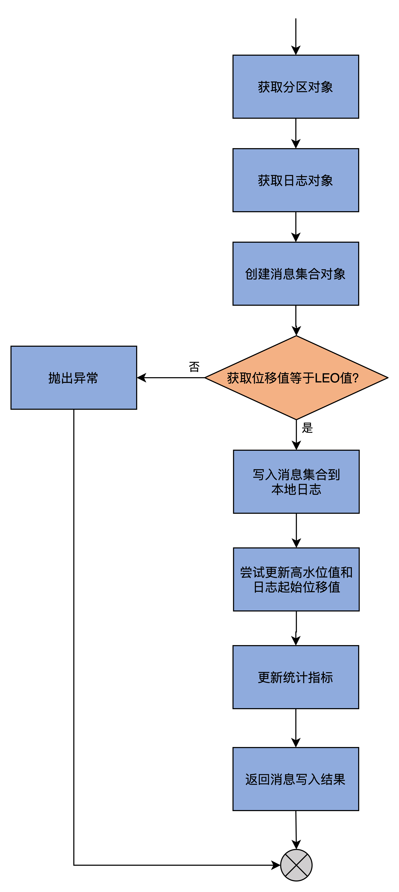
processPartitionData方法中的process，实际上就是写入Follower副本本地日志的意思。因此，这个方法的主体逻辑，就是调用分区对象Partition的appendRecordsToFollowerOrFutureReplica写入获取到的消息。如果你沿着这个写入方法一路追下去，就会发现它调用的是我们在[第2讲]中讲到过的appendAsFollower方法。你看一切都能串联起来，源码也没什么大不了的，对吧？
当然，仅仅写入日志还不够。我们还要做一些更新操作。比如，需要更新Follower副本的高水位值，即将FETCH请求Response中包含的高水位值作为新的高水位值，同时代码还要尝试更新Follower副本的Log Start Offset值。
那为什么Log Start Offset值也可能发生变化呢？这是因为Leader的Log Start Offset可能发生变化，比如用户手动执行了删除消息的操作等。Follower副本的日志需要和Leader保持严格的一致，因此，如果Leader的该值发生变化，Follower自然也要发生变化，以保持一致。
除此之外，processPartitionData方法还会更新其他一些统计指标值，最后将写入结果返回。
buildFetch方法
接下来， 我们看下buildFetch方法。此方法的主要目的是，构建发送给Leader副本所在Broker的FETCH请求。它的代码如下：
override def buildFetch(
partitionMap: Map[TopicPartition, PartitionFetchState]): ResultWithPartitions[Option[ReplicaFetch]] = {
val partitionsWithError = mutable.Set[TopicPartition]()
val builder = fetchSessionHandler.newBuilder(partitionMap.size, false)
// 遍历每个分区，将处于可获取状态的分区添加到builder后续统一处理
// 对于有错误的分区加入到出错分区列表
partitionMap.foreach { case (topicPartition, fetchState) =>
if (fetchState.isReadyForFetch && !shouldFollowerThrottle(quota, fetchState, topicPartition)) {
try {
val logStartOffset = this.logStartOffset(topicPartition)
builder.add(topicPartition, new FetchRequest.PartitionData(
fetchState.fetchOffset, logStartOffset, fetchSize, Optional.of(fetchState.currentLeaderEpoch)))
} catch {
case _: KafkaStorageException =>
partitionsWithError += topicPartition
}
}
}
val fetchData = builder.build()
val fetchRequestOpt = if (fetchData.sessionPartitions.isEmpty && fetchData.toForget.isEmpty) {
None
} else {
// 构造FETCH请求的Builder对象
val requestBuilder = FetchRequest.Builder
.forReplica(fetchRequestVersion, replicaId, maxWait, minBytes, fetchData.toSend)
.setMaxBytes(maxBytes)
.toForget(fetchData.toForget)
.metadata(fetchData.metadata)
Some(ReplicaFetch(fetchData.sessionPartitions(), requestBuilder))
}
// 返回Builder对象以及出错分区列表
ResultWithPartitions(fetchRequestOpt, partitionsWithError)
}
同样，我使用一张图来展示其完整流程。

这个方法的逻辑比processPartitionData简单。前面说到过，它就是构造FETCH请求的Builder对象然后返回。有了Builder对象，我们就可以分分钟构造出FETCH请求了，仅需要调用builder.build()即可。
当然，这个方法的一个副产品是汇总出错分区，这样的话，调用方后续可以统一处理这些出错分区。值得一提的是，在构造Builder的过程中，源码会用到ReplicaFetcherThread类定义的那些与消息获取相关的字段，如maxWait、minBytes和maxBytes。
truncate方法
最后，我们看下truncate方法的实现。这个方法的主要目的是对给定分区执行日志截断操作。代码如下：
override def truncate(
tp: TopicPartition,
offsetTruncationState: OffsetTruncationState): Unit = {
// 拿到分区对象
val partition = replicaMgr.nonOfflinePartition(tp).get
//拿到分区本地日志
val log = partition.localLogOrException
// 执行截断操作，截断到的位置由offsetTruncationState的offset指定
partition.truncateTo(offsetTruncationState.offset, isFuture = false)
if (offsetTruncationState.offset < log.highWatermark)
warn(s"Truncating $tp to offset ${offsetTruncationState.offset} below high watermark " +
s"${log.highWatermark}")
if (offsetTruncationState.truncationCompleted)
replicaMgr.replicaAlterLogDirsManager
.markPartitionsForTruncation(brokerConfig.brokerId, tp,
offsetTruncationState.offset)
}
总体来说，truncate方法利用给定的offsetTruncationState的offset值，对给定分区的本地日志进行截断操作。该操作由Partition对象的truncateTo方法完成，但实际上底层调用的是Log的truncateTo方法。truncateTo方法的主要作用，是将日志截断到小于给定值的最大位移值处。
总结
好了，我们总结一下。就像我在开头时所说，AbstractFetcherThread线程的doWork方法把上一讲提到的3个重要方法全部连接在一起，共同完整了拉取线程要执行的逻辑，即日志截断（truncate）+日志获取（buildFetch）+日志处理（processPartitionData），而其子类ReplicaFetcherThread类是真正实现该3个方法的地方。如果用一句话归纳起来，那就是：Follower副本利用ReplicaFetcherThread线程实时地从Leader副本拉取消息并写入到本地日志，从而实现了与Leader副本之间的同步。以下是一些要点：
- doWork方法：拉取线程工作入口方法，联结所有重要的子功能方法，如执行截断操作，获取Leader副本消息以及写入本地日志。
- truncate方法：根据Leader副本返回的位移值和Epoch值执行本地日志的截断操作。
- buildFetch方法：为一组特定分区构建FetchRequest对象所需的数据结构。
- processPartitionData方法：处理从Leader副本获取到的消息，主要是写入到本地日志中。
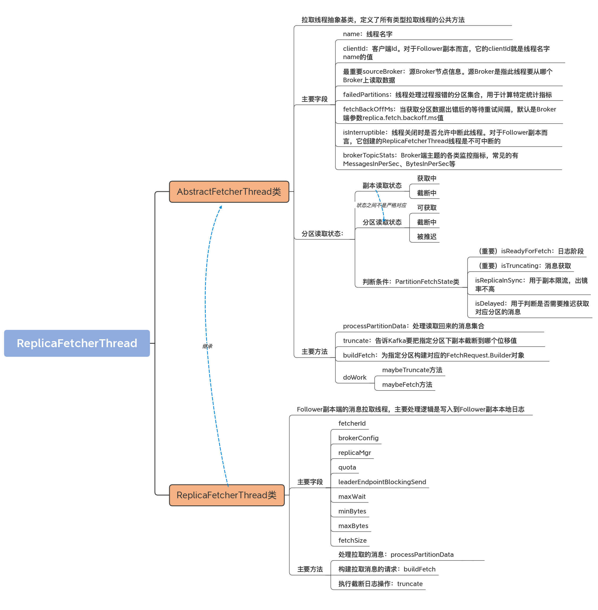
实际上，今天的内容中多次出现副本管理器的身影。如果你仔细查看代码，你会发现Follower副本正是利用它来获取对应分区Partition对象的，然后依靠该对象执行消息写入。那么，副本管理器还有哪些其他功能呢？下一讲我将一一为你揭晓。
课后讨论
你可以去查阅下源码，说说updateFetchOffsetAndMaybeMarkTruncationComplete方法是做什么用的吗？
欢迎在留言区写下你的思考和答案，跟我交流讨论，也欢迎你把今天的内容分享给你的朋友。
23 ReplicaManager（上）：必须要掌握的副本管理类定义和核心字段
你好，我是胡夕。
今天，我们要学习的是Kafka中的副本管理器ReplicaManager。它负责管理和操作集群中Broker的副本，还承担了一部分的分区管理工作，比如变更整个分区的副本日志路径等。
你一定还记得，前面讲到状态机的时候，我说过，Kafka同时实现了副本状态机和分区状态机。但对于管理器而言，Kafka源码却没有专门针对分区，定义一个类似于“分区管理器”这样的类，而是只定义了ReplicaManager类。该类不只实现了对副本的管理，还包含了很多操作分区对象的方法。
ReplicaManager类的源码非常重要，它是构建Kafka副本同步机制的重要组件之一。副本同步过程中出现的大多数问题都是很难定位和解决的，因此，熟练掌握这部分源码，将有助于我们深入探索线上生产环境问题的根本原因，防止以后踩坑。下面，我给你分享一个真实的案例。
我们团队曾碰到过一件古怪事：在生产环境系统中执行删除消息的操作之后，该操作引发了Follower端副本与Leader端副本的不一致问题。刚碰到这个问题时，我们一头雾水，在正常情况下，Leader端副本执行了消息删除后，日志起始位移值被更新了，Follower端副本也应该更新日志起始位移值，但是，这里的Follower端的更新失败了。我们查遍了所有日志，依然找不到原因，最后还是通过分析ReplicaManager类源码，才找到了答案。
我们先看一下这个错误的详细报错信息：
Caused by: org.apache.kafka.common.errors.OffsetOutOfRangeException: Cannot increment the log start offset to 22786435 of partition XXX-12 since it is larger than the high watermark 22786129
这是Follower副本抛出来的异常，对应的Leader副本日志则一切如常。下面的日志显示出Leader副本的Log Start Offset已经被成功调整了。
INFO Incrementing log start offset of partition XXX-12 to 22786435
碰到这个问题时，我相信你的第一反应和我一样：这像是一个Bug，但又不确定到底是什么原因导致的。后来，我们顺着KafkaApis一路找下去，直到找到了ReplicaManager的deleteRecords方法，才看出点端倪。
Follower副本从Leader副本拉取到消息后，会做两个操作：
- 写入到自己的本地日志；
- 更新Follower副本的高水位值和Log Start Offset。
如果删除消息的操作deleteRecords发生在这两步之间，因为deleteRecords会变更Log Start Offset，所以，Follower副本在进行第2步操作时，它使用的可能是已经过期的值了，因而会出现上面的错误。由此可见，这的确是一个Bug。在确认了这一点之后，后面的解决方案也就呼之欲出了：虽然deleteRecords功能实用方便，但鉴于这个Bug，我们还是应该尽力避免在线上环境直接使用该功能。
说到这儿，我想说一句，碰到实际的线上问题不可怕，可怕的是我们无法定位到问题的根本原因。写过Java项目的你一定有这种体会，很多时候，单纯依靠栈异常信息是不足以定位问题的。特别是涉及到Kafka副本同步这块，如果只看输出日志的话，你是很难搞清楚这里面的原理的，因此，我们必须要借助源码，这也是我们今天学习ReplicaManager类的主要目的。
接下来，我们就重点学习一下这个类。它位于server包下的同名scala文件中。这是一个有着将近1900行的大文件，里面的代码结构很琐碎。
因为副本的读写操作和管理操作都是重磅功能，所以，在深入细节之前，我们必须要理清ReplicaManager类的结构之间的关系，并且搞懂类定义及核心字段，这就是我们这节课的重要目标。
在接下来的两节课里，我会给你详细地解释副本读写操作和副本管理操作。学完这些之后，你就能清晰而深入地掌握ReplicaManager类的主要源码了，最重要的是，你会搞懂副本成为Leader或者是Follower时需要执行的逻辑，这就足以帮助你应对实际遇到的副本操作问题了。
代码结构
我们首先看下这个scala文件的代码结构。我用一张思维导图向你展示下：

虽然从代码结构上看，该文件下有8个部分， 不过HostedPartition接口以及实现对象放在一起更好理解，所以，我把ReplicaManager.scala分为7大部分。
- ReplicaManager类：它是副本管理器的具体实现代码，里面定义了读写副本、删除副本消息的方法以及其他管理方法。
- ReplicaManager对象：ReplicaManager类的伴生对象，仅仅定义了3个常量。
- HostedPartition及其实现对象：表示Broker本地保存的分区对象的状态。可能的状态包括：不存在状态（None）、在线状态（Online）和离线状态（Offline）。
- FetchPartitionData：定义获取到的分区数据以及重要元数据信息，如高水位值、Log Start Offset值等。
- LogReadResult：表示副本管理器从副本本地日志中读取到的消息数据以及相关元数据信息，如高水位值、Log Start Offset值等。
- LogDeleteRecordsResult：表示副本管理器执行副本日志删除操作后返回的结果信息。
- LogAppendResult：表示副本管理器执行副本日志写入操作后返回的结果信息。
从含义来看，FetchPartitionData和LogReadResult很类似，它们的区别在哪里呢？
其实，它们之间的差别非常小。如果翻开源码的话，你会发现，FetchPartitionData类总共有8个字段，而构建FetchPartitionData实例的前7个字段都是用LogReadResult的字段来赋值的。你大致可以认为两者的作用是类似的。只是，FetchPartitionData还有个字段标识该分区是不是处于重分配中。如果是的话，需要更新特定的JXM监控指标。这是这两个类的主要区别。
在这7个部分中，ReplicaManager类是我们学习的重点。其他类要么仅定义常量，要么就是保存数据的POJO类，作用一目了然，我就不展开讲了。
ReplicaManager类定义
接下来，我们就从Replica类的定义和重要字段这两个维度入手，进行学习。首先看ReplicaManager类的定义。
class ReplicaManager(
val config: KafkaConfig, // 配置管理类
metrics: Metrics, // 监控指标类
time: Time, // 定时器类
val zkClient: KafkaZkClient, // ZooKeeper客户端
scheduler: Scheduler, // Kafka调度器
val isShuttingDown: AtomicBoolean, // 是否已经关闭
quotaManagers: QuotaManagers, // 配额管理器
val brokerTopicStats: BrokerTopicStats, // Broker主题监控指标类
val metadataCache: MetadataCache, // Broker元数据缓存
logDirFailureChannel: LogDirFailureChannel,
// 处理延时PRODUCE请求的Purgatory
val delayedProducePurgatory: DelayedOperationPurgatory[DelayedProduce],
// 处理延时FETCH请求的Purgatory
val delayedFetchPurgatory: DelayedOperationPurgatory[DelayedFetch],
// 处理延时DELETE_RECORDS请求的Purgatory
val delayedDeleteRecordsPurgatory: DelayedOperationPurgatory[DelayedDeleteRecords],
// 处理延时ELECT_LEADERS请求的Purgatory
val delayedElectLeaderPurgatory: DelayedOperationPurgatory[DelayedElectLeader],
threadNamePrefix: Option[String]) extends Logging with KafkaMetricsGroup {
......
}
ReplicaManager类构造函数的字段非常多。有的字段含义很简单，像time和metrics这类字段，你一看就明白了，我就不多说了，我详细解释几个比较关键的字段。这些字段是我们理解副本管理器的重要基础。
1. logManager
这是日志管理器。它负责创建和管理分区的日志对象，里面定义了很多操作日志对象的方法，如getOrCreateLog等。
2. metadataCache
这是Broker端的元数据缓存，保存集群上分区的Leader、ISR等信息。注意，它和我们之前说的Controller端元数据缓存是有联系的。每台Broker上的元数据缓存，是从Controller端的元数据缓存异步同步过来的。
3. logDirFailureChannel
这是失效日志路径的处理器类。Kafka 1.1版本新增了对于JBOD的支持。这也就是说，Broker如果配置了多个日志路径，当某个日志路径不可用之后（比如该路径所在的磁盘已满），Broker能够继续工作。那么，这就需要一整套机制来保证，在出现磁盘I/O故障时，Broker的正常磁盘下的副本能够正常提供服务。
其中，logDirFailureChannel是暂存失效日志路径的管理器类。我们不用具体学习这个特性的源码，但你最起码要知道，该功能算是Kafka提升服务器端高可用性的一个改进。有了它之后，即使Broker上的单块磁盘坏掉了，整个Broker的服务也不会中断。
4. 四个Purgatory相关的字段
这4个字段是delayedProducePurgatory、delayedFetchPurgatory、delayedDeleteRecordsPurgatory和delayedElectLeaderPurgatory，它们分别管理4类延时请求的。其中，前两类我们应该不陌生，就是处理延时生产者请求和延时消费者请求；后面两类是处理延时消息删除请求和延时Leader选举请求，属于比较高阶的用法（可以暂时不用理会）。
在副本管理过程中，状态的变更大多都会引发对延时请求的处理，这时候，这些Purgatory字段就派上用场了。
只要掌握了刚刚的这些字段，就可以应对接下来的副本管理操作了。其中，最重要的就是logManager。它是协助副本管理器操作集群副本对象的关键组件。
重要的自定义字段
学完了类定义，我们看下ReplicaManager类中那些重要的自定义字段。这样的字段大约有20个，我们不用花时间逐一学习它们。像isrExpandRate、isrShrinkRate这样的字段，我们只看名字，就能知道，它们是衡量ISR变化的监控指标。下面，我详细介绍几个对理解副本管理器至关重要的字段。我会结合代码，具体讲解它们的含义，同时还会说明它们的重要用途。
controllerEpoch
我们首先来看controllerEpoch字段。
这个字段的作用是隔离过期Controller发送的请求。这就是说，老的Controller发送的请求不能再被继续处理了。至于如何区分是老Controller发送的请求，还是新Controller发送的请求，就是看请求携带的controllerEpoch值，是否等于这个字段的值。以下是它的定义代码：
@volatile var controllerEpoch: Int =
KafkaController.InitialControllerEpoch
该字段表示最新一次变更分区Leader的Controller的Epoch值，其默认值为0。Controller每发生一次变更，该字段值都会+1。
在ReplicaManager的代码中，很多地方都会用到它来判断Controller发送过来的控制类请求是否合法。如果请求中携带的controllerEpoch值小于该字段值，就说明这个请求是由一个老的Controller发出的，因此，ReplicaManager直接拒绝该请求的处理。
值得注意的是，它是一个var类型，这就说明它的值是能够动态修改的。当ReplicaManager在处理控制类请求时，会更新该字段。可以看下下面的代码：
// becomeLeaderOrFollower方法
// 处理LeaderAndIsrRequest请求时
controllerEpoch = leaderAndIsrRequest.controllerEpoch
// stopReplicas方法
// 处理StopReplicaRequest请求时
this.controllerEpoch = controllerEpoch
// maybeUpdateMetadataCache方法
// 处理UpdateMetadataRequest请求时
controllerEpoch = updateMetadataRequest.controllerEpoch
Broker上接收的所有请求都是由Kafka I/O线程处理的，而I/O线程可能有多个，因此，这里的controllerEpoch字段被声明为volatile型，以保证其内存可见性。
allPartitions
下一个重要的字段是allPartitions。这节课刚开始时我说过，Kafka没有所谓的分区管理器，ReplicaManager类承担了一部分分区管理的工作。这里的allPartitions，就承载了Broker上保存的所有分区对象数据。其定义代码如下：
private val allPartitions = new Pool[TopicPartition, HostedPartition](
valueFactory = Some(tp => HostedPartition.Online(Partition(tp, time, this)))
)
从代码可见，allPartitions是分区Partition对象实例的容器。这里的HostedPartition是代表分区状态的类。allPartitions会将所有分区对象初始化成Online状态。
值得注意的是，这里的分区状态和我们之前讲到的分区状态机里面的状态完全隶属于两套“领导班子”。也许未来它们会有合并的可能。毕竟，它们二者的功能是有重叠的地方的，表示的含义也有相似之处。比如它们都定义了Online状态，其实都是表示正常工作状态下的分区状态。当然，这只是我根据源码功能做的一个大胆推测，至于是否会合并，我们拭目以待吧。
再多说一句，Partition类是表征分区的对象。一个Partition实例定义和管理单个分区，它主要是利用logManager帮助它完成对分区底层日志的操作。ReplicaManager类对于分区的管理，都是通过Partition对象完成的。
replicaFetcherManager
第三个比较关键的字段是replicaFetcherManager。它的主要任务是创建ReplicaFetcherThread类实例。上节课，我们学习了ReplicaFetcherThread类的源码，它的主要职责是帮助Follower副本向Leader副本拉取消息，并写入到本地日志中。
下面展示了ReplicaFetcherManager类的主要方法createFetcherThread源码：
override def createFetcherThread(fetcherId: Int, sourceBroker: BrokerEndPoint): ReplicaFetcherThread = {
val prefix = threadNamePrefix.map(tp => s"$tp:").getOrElse("")
val threadName = s"${prefix}ReplicaFetcherThread-$fetcherId-${sourceBroker.id}"
// 创建ReplicaFetcherThread线程实例并返回
new ReplicaFetcherThread(threadName, fetcherId, sourceBroker, brokerConfig, failedPartitions, replicaManager,
metrics, time, quotaManager)
}
该方法的主要目的是创建ReplicaFetcherThread实例，供Follower副本使用。线程的名字是根据fetcherId和Broker ID来确定的。ReplicaManager类利用replicaFetcherManager字段，对所有Fetcher线程进行管理，包括线程的创建、启动、添加、停止和移除。
总结
这节课，我主要介绍了ReplicaManager类的定义以及重要字段。它们是理解后面ReplicaManager类管理功能的基础。
总的来说，ReplicaManager类是Kafka Broker端管理分区和副本对象的重要组件。每个Broker在启动的时候，都会创建ReplicaManager实例。该实例一旦被创建，就会开始行使副本管理器的职责，对其下辖的Leader副本或Follower副本进行管理。
我们再简单回顾一下这节课的重点。
- ReplicaManager类：副本管理器的具体实现代码，里面定义了读写副本、删除副本消息的方法，以及其他的一些管理方法。
- allPartitions字段：承载了Broker上保存的所有分区对象数据。ReplicaManager类通过它实现对分区下副本的管理。
- replicaFetcherManager字段：创建ReplicaFetcherThread类实例，该线程类实现Follower副本向Leader副本实时拉取消息的逻辑。
今天，我多次提到ReplicaManager是副本管理器这件事。实际上，副本管理中的两个重要功能就是读取副本对象和写入副本对象。对于Leader副本而言，Follower副本需要读取它的消息数据；对于Follower副本而言，它拿到Leader副本的消息后，需要将消息写入到自己的底层日志上。那么，读写副本的机制是怎么样的呢？下节课，我们深入地探究一下ReplicaManager类重要的副本读写方法。
课后讨论
在ReplicaManager类中有一个offlinePartitionCount方法，它的作用是统计Offline状态的分区数，你能写一个方法统计Online状态的分区数吗？
欢迎在留言区写下你的思考和答案，跟我交流讨论，也欢迎你把今天的内容分享给你的朋友。
24 ReplicaManager（中）：副本管理器是如何读写副本的？
你好，我是胡夕。上节课，我们学习了ReplicaManager类的定义和重要字段，今天我们接着学习这个类中的读写副本对象部分的源码。无论是读取副本还是写入副本，都是通过底层的Partition对象完成的，而这些分区对象全部保存在上节课所学的allPartitions字段中。可以说，理解这些字段的用途，是后续我们探索副本管理器类功能的重要前提。
现在，我们就来学习下副本读写功能。整个Kafka的同步机制，本质上就是副本读取+副本写入，搞懂了这两个功能，你就知道了Follower副本是如何同步Leader副本数据的。
副本写入：appendRecords
所谓的副本写入，是指向副本底层日志写入消息。在ReplicaManager类中，实现副本写入的方法叫appendRecords。
放眼整个Kafka源码世界，需要副本写入的场景有4个。
- 场景一：生产者向Leader副本写入消息；
- 场景二：Follower副本拉取消息后写入副本；
- 场景三：消费者组写入组信息；
- 场景四：事务管理器写入事务信息（包括事务标记、事务元数据等）。
除了第二个场景是直接调用Partition对象的方法实现之外，其他3个都是调用appendRecords来完成的。
该方法将给定一组分区的消息写入到对应的Leader副本中，并且根据PRODUCE请求中acks设置的不同，有选择地等待其他副本写入完成。然后，调用指定的回调逻辑。
我们先来看下它的方法签名：
def appendRecords(
timeout: Long, // 请求处理超时时间
requiredAcks: Short, // 请求acks设置
internalTopicsAllowed: Boolean, // 是否允许写入内部主题
origin: AppendOrigin, // 写入方来源
entriesPerPartition: Map[TopicPartition, MemoryRecords], // 待写入消息
// 回调逻辑
responseCallback: Map[TopicPartition, PartitionResponse] => Unit,
delayedProduceLock: Option[Lock] = None,
recordConversionStatsCallback:
Map[TopicPartition, RecordConversionStats] => Unit = _ => ())
: Unit = {
......
}
输入参数有很多，而且都很重要，我一个一个地说。
- timeout：请求处理超时时间。对于生产者来说，它就是request.timeout.ms参数值。
- requiredAcks：是否需要等待其他副本写入。对于生产者而言，它就是acks参数的值。而在其他场景中，Kafka默认使用-1，表示等待其他副本全部写入成功再返回。
- internalTopicsAllowed：是否允许向内部主题写入消息。对于普通的生产者而言，该字段是False，即不允许写入内部主题。对于Coordinator组件，特别是消费者组GroupCoordinator组件来说，它的职责之一就是向内部位移主题写入消息，因此，此时，该字段值是True。
- origin：AppendOrigin是一个接口，表示写入方来源。当前，它定义了3类写入方，分别是Replication、Coordinator和Client。Replication表示写入请求是由Follower副本发出的，它要将从Leader副本获取到的消息写入到底层的消息日志中。Coordinator表示这些写入由Coordinator发起，它既可以是管理消费者组的GroupCooridnator，也可以是管理事务的TransactionCoordinator。Client表示本次写入由客户端发起。前面我们说过了，Follower副本同步过程不调用appendRecords方法，因此，这里的origin值只可能是Replication或Coordinator。
- entriesPerPartition：按分区分组的、实际要写入的消息集合。
- responseCallback：写入成功之后，要调用的回调逻辑函数。
- delayedProduceLock：专门用来保护消费者组操作线程安全的锁对象，在其他场景中用不到。
- recordConversionStatsCallback：消息格式转换操作的回调统计逻辑，主要用于统计消息格式转换操作过程中的一些数据指标，比如总共转换了多少条消息，花费了多长时间。
接下来，我们就看看，appendRecords如何利用这些输入参数向副本日志写入消息。我把它的完整代码贴出来。对于重要的步骤，我标注了注释：
// requiredAcks合法取值是-1，0，1，否则视为非法
if (isValidRequiredAcks(requiredAcks)) {
val sTime = time.milliseconds
// 调用appendToLocalLog方法写入消息集合到本地日志
val localProduceResults = appendToLocalLog(
internalTopicsAllowed = internalTopicsAllowed,
origin, entriesPerPartition, requiredAcks)
debug("Produce to local log in %d ms".format(time.milliseconds - sTime))
val produceStatus = localProduceResults.map { case (topicPartition, result) =>
topicPartition ->
ProducePartitionStatus(
result.info.lastOffset + 1, // 设置下一条待写入消息的位移值
// 构建PartitionResponse封装写入结果
new PartitionResponse(result.error, result.info.firstOffset.getOrElse(-1), result.info.logAppendTime,
result.info.logStartOffset, result.info.recordErrors.asJava, result.info.errorMessage))
}
// 尝试更新消息格式转换的指标数据
recordConversionStatsCallback(localProduceResults.map { case (k, v) => k -> v.info.recordConversionStats })
// 需要等待其他副本完成写入
if (delayedProduceRequestRequired(
requiredAcks, entriesPerPartition, localProduceResults)) {
val produceMetadata = ProduceMetadata(requiredAcks, produceStatus)
// 创建DelayedProduce延时请求对象
val delayedProduce = new DelayedProduce(timeout, produceMetadata, this, responseCallback, delayedProduceLock)
val producerRequestKeys = entriesPerPartition.keys.map(TopicPartitionOperationKey(_)).toSeq
// 再一次尝试完成该延时请求
// 如果暂时无法完成，则将对象放入到相应的Purgatory中等待后续处理
delayedProducePurgatory.tryCompleteElseWatch(delayedProduce, producerRequestKeys)
} else { // 无需等待其他副本写入完成，可以立即发送Response
val produceResponseStatus = produceStatus.map { case (k, status) => k -> status.responseStatus }
// 调用回调逻辑然后返回即可
responseCallback(produceResponseStatus)
}
} else { // 如果requiredAcks值不合法
val responseStatus = entriesPerPartition.map { case (topicPartition, _) =>
topicPartition -> new PartitionResponse(Errors.INVALID_REQUIRED_ACKS,
LogAppendInfo.UnknownLogAppendInfo.firstOffset.getOrElse(-1), RecordBatch.NO_TIMESTAMP, LogAppendInfo.UnknownLogAppendInfo.logStartOffset)
}
// 构造INVALID_REQUIRED_ACKS异常并封装进回调函数调用中
responseCallback(responseStatus)
}
为了帮助你更好地理解，我再用一张图说明一下appendRecords方法的完整流程。

我再给你解释一下它的执行流程。
首先，它会判断requiredAcks的取值是否在合理范围内，也就是“是否是-1、0、1这3个数值中的一个”。如果不是合理取值，代码就进入到外层的else分支，构造名为INVALID_REQUIRED_ACKS的异常，并将其封装进回调函数中执行，然后返回结果。否则的话，代码进入到外层的if分支下。
进入到if分支后，代码调用appendToLocalLog方法，将要写入的消息集合保存到副本的本地日志上。然后构造PartitionResponse对象实例，来封装写入结果以及一些重要的元数据信息，比如本次写入有没有错误（errorMessage）、下一条待写入消息的位移值、本次写入消息集合首条消息的位移值，等等。待这些做完了之后，代码会尝试更新消息格式转换的指标数据。此时，源码需要调用delayedProduceRequestRequired方法，来判断本次写入是否算是成功了。
如果还需要等待其他副本同步完成消息写入，那么就不能立即返回，代码要创建DelayedProduce延时请求对象，并把该对象交由Purgatory来管理。DelayedProduce是生产者端的延时发送请求，对应的Purgatory就是ReplicaManager类构造函数中的delayedProducePurgatory。所谓的Purgatory管理，主要是调用tryCompleteElseWatch方法尝试完成延时发送请求。如果暂时无法完成，就将对象放入到相应的Purgatory中，等待后续处理。
如果无需等待其他副本同步完成消息写入，那么，appendRecords方法会构造响应的Response，并调用回调逻辑函数，至此，方法结束。
从刚刚的分析中，我们可以知道，appendRecords实现消息写入的方法是appendToLocalLog，用于判断是否需要等待其他副本写入的方法是delayedProduceRequestRequired。下面我们就深入地学习下这两个方法的代码。
首先来看appendToLocalLog。从它的名字来看，就是写入副本本地日志。我们来看一下该方法的主要代码片段。
private def appendToLocalLog(
internalTopicsAllowed: Boolean,
origin: AppendOrigin,
entriesPerPartition: Map[TopicPartition, MemoryRecords],
requiredAcks: Short): Map[TopicPartition, LogAppendResult] = {
......
entriesPerPartition.map { case (topicPartition, records) =>
brokerTopicStats.topicStats(topicPartition.topic)
.totalProduceRequestRate.mark()
brokerTopicStats.allTopicsStats.totalProduceRequestRate.mark()
// 如果要写入的主题是内部主题，而internalTopicsAllowed=false，则返回错误
if (Topic.isInternal(topicPartition.topic)
&& !internalTopicsAllowed) {
(topicPartition, LogAppendResult(
LogAppendInfo.UnknownLogAppendInfo,
Some(new InvalidTopicException(s"Cannot append to internal topic ${topicPartition.topic}"))))
} else {
try {
// 获取分区对象
val partition = getPartitionOrException(topicPartition, expectLeader = true)
// 向该分区对象写入消息集合
val info = partition.appendRecordsToLeader(records, origin, requiredAcks)
......
// 返回写入结果
(topicPartition, LogAppendResult(info))
} catch {
......
}
}
}
}
我忽略了很多打日志以及错误处理的代码。你可以看到，该方法主要就是利用Partition的appendRecordsToLeader方法写入消息集合，而后者就是利用我们在[第3节课]学到的appendAsLeader方法写入本地日志的。总体来说，appendToLocalLog的逻辑不复杂，你应该很容易理解。
下面我们看下delayedProduceRequestRequired方法的源码。它用于判断消息集合被写入到日志之后，是否需要等待其他副本也写入成功。我们看下它的代码：
private def delayedProduceRequestRequired(
requiredAcks: Short,
entriesPerPartition: Map[TopicPartition, MemoryRecords],
localProduceResults: Map[TopicPartition, LogAppendResult]): Boolean = {
requiredAcks == -1 && entriesPerPartition.nonEmpty &&
localProduceResults.values.count(_.exception.isDefined) < entriesPerPartition.size
}
该方法返回一个布尔值，True表示需要等待其他副本完成；False表示无需等待。上面的代码表明，如果需要等待其他副本的写入，就必须同时满足3个条件：
- requiredAcks必须等于-1；
- 依然有数据尚未写完；
- 至少有一个分区的消息已经成功地被写入到本地日志。
其实，你可以把条件2和3联合在一起来看。如果所有分区的数据写入都不成功，就表明可能出现了很严重的错误，此时，比较明智的做法是不再等待，而是直接返回错误给发送方。相反地，如果有部分分区成功写入，而部分分区写入失败了，就表明可能是由偶发的瞬时错误导致的。此时，不妨将本次写入请求放入Purgatory，再给它一个重试的机会。
副本读取：fetchMessages
好了，说完了副本的写入，下面我们进入到副本读取的源码学习。
在ReplicaManager类中，负责读取副本数据的方法是fetchMessages。不论是Java消费者API，还是Follower副本，它们拉取消息的主要途径都是向Broker发送FETCH请求，Broker端接收到该请求后，调用fetchMessages方法从底层的Leader副本取出消息。
和appendRecords方法类似，fetchMessages方法也可能会延时处理FETCH请求，因为Broker端必须要累积足够多的数据之后，才会返回Response给请求发送方。
可以看一下下面的这张流程图，它展示了fetchMessages方法的主要逻辑。

我们来看下该方法的签名：
def fetchMessages(timeout: Long,
replicaId: Int,
fetchMinBytes: Int,
fetchMaxBytes: Int,
hardMaxBytesLimit: Boolean,
fetchInfos: Seq[(TopicPartition, PartitionData)],
quota: ReplicaQuota,
responseCallback: Seq[(TopicPartition, FetchPartitionData)] => Unit,
isolationLevel: IsolationLevel,
clientMetadata: Option[ClientMetadata]): Unit = {
......
}
这些输入参数都是我们理解下面的重要方法的基础，所以，我们来逐个分析一下。
- timeout：请求处理超时时间。对于消费者而言，该值就是request.timeout.ms参数值；对于Follower副本而言，该值是Broker端参数replica.fetch.wait.max.ms的值。
- replicaId：副本ID。对于消费者而言，该参数值是-1；对于Follower副本而言，该值就是Follower副本所在的Broker ID。
- fetchMinBytes & fetchMaxBytes：能够获取的最小字节数和最大字节数。对于消费者而言，它们分别对应于Consumer端参数fetch.min.bytes和fetch.max.bytes值；对于Follower副本而言，它们分别对应于Broker端参数replica.fetch.min.bytes和replica.fetch.max.bytes值。
- hardMaxBytesLimit：对能否超过最大字节数做硬限制。如果hardMaxBytesLimit=True，就表示，读取请求返回的数据字节数绝不允许超过最大字节数。
- fetchInfos：规定了读取分区的信息，比如要读取哪些分区、从这些分区的哪个位移值开始读、最多可以读多少字节，等等。
- quota：这是一个配额控制类，主要是为了判断是否需要在读取的过程中做限速控制。
- responseCallback：Response回调逻辑函数。当请求被处理完成后，调用该方法执行收尾逻辑。
有了这些铺垫之后，我们进入到方法代码的学习。为了便于学习，我将整个方法的代码分成两部分：第一部分是读取本地日志；第二部分是根据读取结果确定Response。
我们先看第一部分的源码：
// 判断该读取请求是否来自于Follower副本或Consumer
val isFromFollower = Request.isValidBrokerId(replicaId)
val isFromConsumer = !(isFromFollower || replicaId == Request.FutureLocalReplicaId)
// 根据请求发送方判断可读取范围
// 如果请求来自于普通消费者，那么可以读到高水位值
// 如果请求来自于配置了READ_COMMITTED的消费者，那么可以读到Log Stable Offset值
// 如果请求来自于Follower副本，那么可以读到LEO值
val fetchIsolation = if (!isFromConsumer)
FetchLogEnd
else if (isolationLevel == IsolationLevel.READ_COMMITTED)
FetchTxnCommitted
else
FetchHighWatermark
val fetchOnlyFromLeader = isFromFollower || (isFromConsumer && clientMetadata.isEmpty)
// 定义readFromLog方法读取底层日志中的消息
def readFromLog(): Seq[(TopicPartition, LogReadResult)] = {
val result = readFromLocalLog(
replicaId = replicaId,
fetchOnlyFromLeader = fetchOnlyFromLeader,
fetchIsolation = fetchIsolation,
fetchMaxBytes = fetchMaxBytes,
hardMaxBytesLimit = hardMaxBytesLimit,
readPartitionInfo = fetchInfos,
quota = quota,
clientMetadata = clientMetadata)
if (isFromFollower) updateFollowerFetchState(replicaId, result)
else result
}
// 读取消息并返回日志读取结果
val logReadResults = readFromLog()
这部分代码首先会判断，读取消息的请求方到底是Follower副本，还是普通的Consumer。判断的依据就是看replicaId字段是否大于0。Consumer的replicaId是-1，而Follower副本的则是大于0的数。一旦确定了请求方，代码就能确定可读取范围。
这里的fetchIsolation是读取隔离级别的意思。对于Follower副本而言，它能读取到Leader副本LEO值以下的所有消息；对于普通Consumer而言，它只能“看到”Leader副本高水位值以下的消息。
待确定了可读取范围后，fetchMessages方法会调用它的内部方法readFromLog，读取本地日志上的消息数据，并将结果赋值给logReadResults变量。readFromLog方法的主要实现是调用readFromLocalLog方法，而后者就是在待读取分区上依次调用其日志对象的read方法执行实际的消息读取。
fetchMessages方法的第二部分，是根据上一步的读取结果创建对应的Response。我们看下具体实现：
var bytesReadable: Long = 0
var errorReadingData = false
val logReadResultMap = new mutable.HashMap[TopicPartition, LogReadResult]
// 统计总共可读取的字节数
logReadResults.foreach { case (topicPartition, logReadResult) =>
brokerTopicStats.topicStats(topicPartition.topic).totalFetchRequestRate.mark()
brokerTopicStats.allTopicsStats.totalFetchRequestRate.mark()
if (logReadResult.error != Errors.NONE)
errorReadingData = true
bytesReadable = bytesReadable + logReadResult.info.records.sizeInBytes
logReadResultMap.put(topicPartition, logReadResult)
}
// 判断是否能够立即返回Reponse，满足以下4个条件中的任意一个即可：
// 1. 请求没有设置超时时间，说明请求方想让请求被处理后立即返回
// 2. 未获取到任何数据
// 3. 已累积到足够多的数据
// 4. 读取过程中出错
if (timeout <= 0 || fetchInfos.isEmpty || bytesReadable >= fetchMinBytes || errorReadingData) {
// 构建返回结果
val fetchPartitionData = logReadResults.map { case (tp, result) =>
tp -> FetchPartitionData(result.error, result.highWatermark, result.leaderLogStartOffset, result.info.records,
result.lastStableOffset, result.info.abortedTransactions, result.preferredReadReplica, isFromFollower && isAddingReplica(tp, replicaId))
}
// 调用回调函数
responseCallback(fetchPartitionData)
} else { // 如果无法立即完成请求
val fetchPartitionStatus = new mutable.ArrayBuffer[(TopicPartition, FetchPartitionStatus)]
fetchInfos.foreach { case (topicPartition, partitionData) =>
logReadResultMap.get(topicPartition).foreach(logReadResult => {
val logOffsetMetadata = logReadResult.info.fetchOffsetMetadata
fetchPartitionStatus += (topicPartition -> FetchPartitionStatus(logOffsetMetadata, partitionData))
})
}
val fetchMetadata: SFetchMetadata = SFetchMetadata(fetchMinBytes, fetchMaxBytes, hardMaxBytesLimit,
fetchOnlyFromLeader, fetchIsolation, isFromFollower, replicaId, fetchPartitionStatus)
// 构建DelayedFetch延时请求对象
val delayedFetch = new DelayedFetch(timeout, fetchMetadata, this, quota, clientMetadata,
responseCallback)
val delayedFetchKeys = fetchPartitionStatus.map { case (tp, _) => TopicPartitionOperationKey(tp) }
// 再一次尝试完成请求，如果依然不能完成，则交由Purgatory等待后续处理
delayedFetchPurgatory.tryCompleteElseWatch(delayedFetch, delayedFetchKeys)
}
这部分代码首先会根据上一步得到的读取结果，统计可读取的总字节数，之后，判断此时是否能够立即返回Reponse。那么，怎么判断是否能够立即返回Response呢？实际上，只要满足以下4个条件中的任意一个即可：
- 请求没有设置超时时间，说明请求方想让请求被处理后立即返回；
- 未获取到任何数据；
- 已累积到足够多数据；
- 读取过程中出错。
如果这4个条件一个都不满足，就需要进行延时处理了。具体来说，就是构建DelayedFetch对象，然后把该延时对象交由delayedFetchPurgatory后续自动处理。
至此，关于副本管理器读写副本的两个方法appendRecords和fetchMessages，我们就学完了。本质上，它们在底层分别调用Log的append和read方法，以实现本地日志的读写操作。当完成读写操作之后，这两个方法还定义了延时处理的条件。一旦发现满足了延时处理的条件，就交给对应的Purgatory进行处理。
从这两个方法中，我们已经看到了之前课程中单个组件融合在一起的趋势。就像我在开篇词里面说的，虽然我们学习单个源码文件的顺序是自上而下，但串联Kafka主要组件功能的路径却是自下而上。
就拿这节课的副本写入操作来说，日志对象的append方法被上一层Partition对象中的方法调用，而后者又进一步被副本管理器中的方法调用。我们是按照自上而下的方式阅读副本管理器、日志对象等单个组件的代码，了解它们各自的独立功能的，现在，我们开始慢慢地把它们融合在一起，勾勒出了Kafka操作分区副本日志对象的完整调用路径。咱们同时采用这两种方式来阅读源码，就可以更快、更深入地搞懂Kafka源码的原理了。
总结
今天，我们学习了Kafka副本状态机类ReplicaManager是如何读写副本的，重点学习了它的两个重要方法appendRecords和fetchMessages。我们再简单回顾一下。
- appendRecords：向副本写入消息的方法，主要利用Log的append方法和Purgatory机制，共同实现Follower副本向Leader副本获取消息后的数据同步工作。
- fetchMessages：从副本读取消息的方法，为普通Consumer和Follower副本所使用。当它们向Broker发送FETCH请求时，Broker上的副本管理器调用该方法从本地日志中获取指定消息。
- 下节课中，我们要把重心转移到副本管理器对副本和分区对象的管理上。这是除了读写副本之外，副本管理器另一大核心功能，你一定不要错过！
课后讨论
appendRecords参数列表中有个origin。我想请你思考一下，在写入本地日志的过程中，这个参数的作用是什么？你能找出最终使用origin参数的具体源码位置吗？
欢迎在留言区写下你的思考和答案，跟我交流讨论，也欢迎你把今天的内容分享给你的朋友。
25 ReplicaManager（下）：副本管理器是如何管理副本的？
你好，我是胡夕。
上节课我们学习了ReplicaManager类源码中副本管理器是如何执行副本读写操作的。现在我们知道了，这个副本读写操作主要是通过appendRecords和fetchMessages这两个方法实现的，而这两个方法其实在底层分别调用了Log的append和read方法，也就是我们在[第3节课]中学到的日志消息写入和日志消息读取方法。
今天，我们继续学习ReplicaManager类源码，看看副本管理器是如何管理副本的。这里的副本，涵盖了广义副本对象的方方面面，包括副本和分区对象、副本位移值和ISR管理等。因此，本节课我们结合着源码，具体学习下这几个方面。
分区及副本管理
除了对副本进行读写之外，副本管理器还有一个重要的功能，就是管理副本和对应的分区。ReplicaManager管理它们的方式，是通过字段allPartitions来实现的。
所以，我想先带你复习下[第23节课]中的allPartitions的代码。不过，这次为了强调它作为容器的属性，我们要把注意力放在它是对象池这个特点上，即allPartitions把所有分区对象汇集在一起，统一放入到一个对象池进行管理。
private val allPartitions = new Pool[TopicPartition, HostedPartition](
valueFactory = Some(tp => HostedPartition.Online(Partition(tp, time, this)))
)
从代码可以看到，每个ReplicaManager实例都维护了所在Broker上保存的所有分区对象，而每个分区对象Partition下面又定义了一组副本对象Replica。通过这样的层级关系，副本管理器实现了对于分区的直接管理和对副本对象的间接管理。应该这样说，ReplicaManager通过直接操作分区对象来间接管理下属的副本对象。
对于一个Broker而言，它管理下辖的分区和副本对象的主要方式，就是要确定在它保存的这些副本中，哪些是Leader副本、哪些是Follower副本。
这些划分可不是一成不变的，而是随着时间的推移不断变化的。比如说，这个时刻Broker是分区A的Leader副本、分区B的Follower副本，但在接下来的某个时刻，Broker很可能变成分区A的Follower副本、分区B的Leader副本。
而这些变更是通过Controller给Broker发送LeaderAndIsrRequest请求来实现的。当Broker端收到这类请求后，会调用副本管理器的becomeLeaderOrFollower方法来处理，并依次执行“成为Leader副本”和“成为Follower副本”的逻辑，令当前Broker互换分区A、B副本的角色。
becomeLeaderOrFollower方法
这里我们又提到了LeaderAndIsrRequest请求。其实，我们在学习Controller和控制类请求的时候就多次提到过它，在[第12讲]中也详细学习过它的作用了。因为隔的时间比较长了，我怕你忘记了，所以这里我们再回顾下。
简单来说，它就是告诉接收该请求的Broker：在我传给你的这些分区中，哪些分区的Leader副本在你这里；哪些分区的Follower副本在你这里。
becomeLeaderOrFollower方法，就是具体处理LeaderAndIsrRequest请求的地方，同时也是副本管理器添加分区的地方。下面我们就完整地学习下这个方法的源码。由于这部分代码很长，我将会分为3个部分向你介绍，分别是处理Controller Epoch事宜、执行成为Leader和Follower的逻辑以及构造Response。
我们先看becomeLeaderOrFollower方法的第1大部分，处理Controller Epoch及其他相关准备工作的流程图：
因为becomeLeaderOrFollower方法的开头是一段仅用于调试的日志输出，不是很重要，因此，我直接从if语句开始讲起。第一部分的主体代码如下：
// 如果LeaderAndIsrRequest携带的Controller Epoch
// 小于当前Controller的Epoch值
if (leaderAndIsrRequest.controllerEpoch < controllerEpoch) {
stateChangeLogger.warn(s"Ignoring LeaderAndIsr request from controller $controllerId with " +
s"correlation id $correlationId since its controller epoch ${leaderAndIsrRequest.controllerEpoch} is old. " +
s"Latest known controller epoch is $controllerEpoch")
// 说明Controller已经易主，抛出相应异常
leaderAndIsrRequest.getErrorResponse(0, Errors.STALE_CONTROLLER_EPOCH.exception)
} else {
val responseMap = new mutable.HashMap[TopicPartition, Errors]
// 更新当前Controller Epoch值
controllerEpoch = leaderAndIsrRequest.controllerEpoch
val partitionStates = new mutable.HashMap[Partition, LeaderAndIsrPartitionState]()
// 遍历LeaderAndIsrRequest请求中的所有分区
requestPartitionStates.foreach { partitionState =>
val topicPartition = new TopicPartition(partitionState.topicName, partitionState.partitionIndex)
// 从allPartitions中获取对应分区对象
val partitionOpt = getPartition(topicPartition) match {
// 如果是Offline状态
case HostedPartition.Offline =>
stateChangeLogger.warn(s"Ignoring LeaderAndIsr request from " +
s"controller $controllerId with correlation id $correlationId " +
s"epoch $controllerEpoch for partition $topicPartition as the local replica for the " +
"partition is in an offline log directory")
// 添加对象异常到Response，并设置分区对象变量partitionOpt=None
responseMap.put(topicPartition, Errors.KAFKA_STORAGE_ERROR)
None
// 如果是Online状态，直接赋值partitionOpt即可
case HostedPartition.Online(partition) =>
Some(partition)
// 如果是None状态，则表示没有找到分区对象
// 那么创建新的分区对象将，新创建的分区对象加入到allPartitions统一管理
// 然后赋值partitionOpt字段
case HostedPartition.None =>
val partition = Partition(topicPartition, time, this)
allPartitions.putIfNotExists(topicPartition, HostedPartition.Online(partition))
Some(partition)
}
// 检查分区的Leader Epoch值
......
}
现在，我们一起来学习下这部分内容的核心逻辑。
首先，比较LeaderAndIsrRequest携带的Controller Epoch值和当前Controller Epoch值。如果发现前者小于后者，说明Controller已经变更到别的Broker上了，需要构造一个STALE_CONTROLLER_EPOCH异常并封装进Response返回。否则，代码进入else分支。
然后，becomeLeaderOrFollower方法会更新当前缓存的Controller Epoch值，再提取出LeaderAndIsrRequest请求中涉及到的分区，之后依次遍历这些分区，并执行下面的两步逻辑。
第1步，从allPartitions中取出对应的分区对象。在第23节课，我们学习了分区有3种状态，即在线（Online）、离线（Offline）和不存在（None），这里代码就需要分别应对这3种情况：
- 如果是Online状态的分区，直接将其赋值给partitionOpt字段即可；
- 如果是Offline状态的分区，说明该分区副本所在的Kafka日志路径出现I/O故障时（比如磁盘满了），需要构造对应的KAFKA_STORAGE_ERROR异常并封装进Response，同时令partitionOpt字段为None；
- 如果是None状态的分区，则创建新分区对象，然后将其加入到allPartitions中，进行统一管理，并赋值给partitionOpt字段。
第2步，检查partitionOpt字段表示的分区的Leader Epoch。检查的原则是要确保请求中携带的Leader Epoch值要大于当前缓存的Leader Epoch，否则就说明是过期Controller发送的请求，就直接忽略它，不做处理。
总之呢，becomeLeaderOrFollower方法的第一部分代码，主要做的事情就是创建新分区、更新Controller Epoch和校验分区Leader Epoch。我们在[第3讲]说到过Leader Epoch机制，因为是比较高阶的用法，你可以不用重点掌握，这不会影响到我们学习副本管理。不过，如果你想深入了解的话，推荐你课下自行阅读下LeaderEpochFileCache.scala的源码。
当为所有分区都执行完这两个步骤之后，becomeLeaderOrFollower方法进入到第2部分，开始执行Broker成为Leader副本和Follower副本的逻辑：
// 确定Broker上副本是哪些分区的Leader副本
val partitionsToBeLeader = partitionStates.filter { case (_, partitionState) =>
partitionState.leader == localBrokerId
}
// 确定Broker上副本是哪些分区的Follower副本
val partitionsToBeFollower = partitionStates.filter { case (k, _) => !partitionsToBeLeader.contains(k) }
val highWatermarkCheckpoints = new LazyOffsetCheckpoints(this.highWatermarkCheckpoints)
val partitionsBecomeLeader = if (partitionsToBeLeader.nonEmpty)
// 调用makeLeaders方法为partitionsToBeLeader所有分区
// 执行"成为Leader副本"的逻辑
makeLeaders(controllerId, controllerEpoch, partitionsToBeLeader, correlationId, responseMap,
highWatermarkCheckpoints)
else
Set.empty[Partition]
val partitionsBecomeFollower = if (partitionsToBeFollower.nonEmpty)
// 调用makeFollowers方法为令partitionsToBeFollower所有分区
// 执行"成为Follower副本"的逻辑
makeFollowers(controllerId, controllerEpoch, partitionsToBeFollower, correlationId, responseMap,
highWatermarkCheckpoints)
else
Set.empty[Partition]
val leaderTopicSet = leaderPartitionsIterator.map(_.topic).toSet
val followerTopicSet = partitionsBecomeFollower.map(_.topic).toSet
// 对于当前Broker成为Follower副本的主题
// 移除它们之前的Leader副本监控指标
followerTopicSet.diff(leaderTopicSet).foreach(brokerTopicStats.removeOldLeaderMetrics)
// 对于当前Broker成为Leader副本的主题
// 移除它们之前的Follower副本监控指
leaderTopicSet.diff(followerTopicSet).foreach(brokerTopicStats.removeOldFollowerMetrics)
// 如果有分区的本地日志为空，说明底层的日志路径不可用
// 标记该分区为Offline状态
leaderAndIsrRequest.partitionStates.forEach { partitionState =>
val topicPartition = new TopicPartition(partitionState.topicName, partitionState.partitionIndex)
if (localLog(topicPartition).isEmpty)
markPartitionOffline(topicPartition)
}
首先，这部分代码需要先确定两个分区集合，一个是把该Broker当成Leader的所有分区；一个是把该Broker当成Follower的所有分区。判断的依据，主要是看LeaderAndIsrRequest请求中分区的Leader信息，是不是和本Broker的ID相同。如果相同，则表明该Broker是这个分区的Leader；否则，表示当前Broker是这个分区的Follower。
一旦确定了这两个分区集合，接着，代码就会分别为它们调用makeLeaders和makeFollowers方法，正式让Leader和Follower角色生效。之后，对于那些当前Broker成为Follower副本的主题，代码需要移除它们之前的Leader副本监控指标，以防出现系统资源泄露的问题。同样地，对于那些当前Broker成为Leader副本的主题，代码要移除它们之前的Follower副本监控指标。
最后，如果有分区的本地日志为空，说明底层的日志路径不可用，那么标记该分区为Offline状态。所谓的标记为Offline状态，主要是两步：第1步是更新allPartitions中分区的状态；第2步是移除对应分区的监控指标。
小结一下，becomeLeaderOrFollower方法第2大部分的主要功能是，调用makeLeaders和makeFollowers方法，令Broker在不同分区上的Leader或Follower角色生效。关于这两个方法的实现细节，一会儿我再详细说。
现在，让我们看看第3大部分的代码，构造Response对象。这部分代码是becomeLeaderOrFollower方法的收尾操作。
// 启动高水位检查点专属线程
// 定期将Broker上所有非Offline分区的高水位值写入到检查点文件
startHighWatermarkCheckPointThread()
// 添加日志路径数据迁移线程
maybeAddLogDirFetchers(partitionStates.keySet, highWatermarkCheckpoints)
// 关闭空闲副本拉取线程
replicaFetcherManager.shutdownIdleFetcherThreads()
// 关闭空闲日志路径数据迁移线程
replicaAlterLogDirsManager.shutdownIdleFetcherThreads()
// 执行Leader变更之后的回调逻辑
onLeadershipChange(partitionsBecomeLeader, partitionsBecomeFollower)
// 构造LeaderAndIsrRequest请求的Response并返回
val responsePartitions = responseMap.iterator.map { case (tp, error) =>
new LeaderAndIsrPartitionError()
.setTopicName(tp.topic)
.setPartitionIndex(tp.partition)
.setErrorCode(error.code)
}.toBuffer
new LeaderAndIsrResponse(new LeaderAndIsrResponseData()
.setErrorCode(Errors.NONE.code)
.setPartitionErrors(responsePartitions.asJava))
我们来分析下这部分代码的执行逻辑吧。
首先，这部分开始时会启动一个专属线程来执行高水位值持久化，定期地将Broker上所有非Offline分区的高水位值写入检查点文件。这个线程是个后台线程，默认每5秒执行一次。
同时，代码还会添加日志路径数据迁移线程。这个线程的主要作用是，将路径A上面的数据搬移到路径B上。这个功能是Kafka支持JBOD（Just a Bunch of Disks）的重要前提。
之后，becomeLeaderOrFollower方法会关闭空闲副本拉取线程和空闲日志路径数据迁移线程。判断空闲与否的主要条件是，分区Leader/Follower角色调整之后，是否存在不再使用的拉取线程了。代码要确保及时关闭那些不再被使用的线程对象。
再之后是执行LeaderAndIsrRequest请求的回调处理逻辑。这里的回调逻辑，实际上只是对Kafka两个内部主题（consumer_offsets和transaction_state）有用，其他主题一概不适用。所以通常情况下，你可以无视这里的回调逻辑。
等这些都做完之后，代码开始执行这部分最后，也是最重要的任务：构造LeaderAndIsrRequest请求的Response，然后将新创建的Response返回。至此，这部分方法的逻辑结束。
纵观becomeLeaderOrFollower方法的这3大部分，becomeLeaderOrFollower方法最重要的职责，在我看来就是调用makeLeaders和makeFollowers方法，为各自的分区列表执行相应的角色确认工作。
接下来，我们就分别看看这两个方法是如何实现这种角色确认的。
makeLeaders方法
makeLeaders方法的作用是，让当前Broker成为给定一组分区的Leader，也就是让当前Broker下该分区的副本成为Leader副本。这个方法主要有3步：
- 停掉这些分区对应的获取线程；
- 更新Broker缓存中的分区元数据信息；
- 将指定分区添加到Leader分区集合。
我们结合代码分析下这些都是如何实现的。首先，我们看下makeLeaders的方法签名：
// controllerId：Controller所在Broker的ID
// controllEpoch：Controller Epoch值，可以认为是Controller版本号
// partitionStates：LeaderAndIsrRequest请求中携带的分区信息
// correlationId：请求的Correlation字段，只用于日志调试
// responseMap：按照主题分区分组的异常错误集合
// highWatermarkCheckpoints：操作磁盘上高水位检查点文件的工具类
private def makeLeaders(controllerId: Int,
controllerEpoch: Int,
partitionStates: Map[Partition, LeaderAndIsrPartitionState],
correlationId: Int,
responseMap: mutable.Map[TopicPartition, Errors],
highWatermarkCheckpoints: OffsetCheckpoints): Set[Partition] = {
......
}
可以看出，makeLeaders方法接收6个参数，并返回一个分区对象集合。这个集合就是当前Broker是Leader的所有分区。在这6个参数中，以下3个参数比较关键，我们看下它们的含义。
- controllerId：Controller所在Broker的ID。该字段只是用于日志输出，无其他实际用途。
- controllerEpoch：Controller Epoch值，可以认为是Controller版本号。该字段用于日志输出使用，无其他实际用途。
- partitionStates：LeaderAndIsrRequest请求中携带的分区信息，包括每个分区的Leader是谁、ISR都有哪些等数据。
好了，现在我们继续学习makeLeaders的代码。我把这个方法的关键步骤放在了注释里，并省去了一些日志输出相关的代码。
......
// 使用Errors.NONE初始化ResponseMap
partitionStates.keys.foreach { partition =>
......
responseMap.put(partition.topicPartition, Errors.NONE)
}
val partitionsToMakeLeaders = mutable.Set[Partition]()
try {
// 停止消息拉取
replicaFetcherManager.removeFetcherForPartitions(
partitionStates.keySet.map(_.topicPartition))
stateChangeLogger.info(s"Stopped fetchers as part of LeaderAndIsr request correlationId $correlationId from " +
s"controller $controllerId epoch $controllerEpoch as part of the become-leader transition for " +
s"${partitionStates.size} partitions")
// 更新指定分区的Leader分区信息
partitionStates.foreach { case (partition, partitionState) =>
try {
if (partition.makeLeader(partitionState, highWatermarkCheckpoints))
partitionsToMakeLeaders += partition
else
......
} catch {
case e: KafkaStorageException =>
......
// 把KAFKA_SOTRAGE_ERRROR异常封装到Response中
responseMap.put(partition.topicPartition, Errors.KAFKA_STORAGE_ERROR)
}
}
} catch {
case e: Throwable =>
......
}
......
partitionsToMakeLeaders
我把主要的执行流程，梳理为了一张流程图：
结合着图，我再带着你学习下这个方法的执行逻辑。
首先，将给定的一组分区的状态全部初始化成Errors.None。
然后，停止为这些分区服务的所有拉取线程。毕竟该Broker现在是这些分区的Leader副本了，不再是Follower副本了，所以没有必要再使用拉取线程了。
最后，makeLeaders方法调用Partition的makeLeader方法，去更新给定一组分区的Leader分区信息，而这些是由Partition类中的makeLeader方法完成的。该方法保存分区的Leader和ISR信息，同时创建必要的日志对象、重设远端Follower副本的LEO值。
那远端Follower副本，是什么意思呢？远端Follower副本，是指保存在Leader副本本地内存中的一组Follower副本集合，在代码中用字段remoteReplicas来表征。
ReplicaManager在处理FETCH请求时，会更新remoteReplicas中副本对象的LEO值。同时，Leader副本会将自己更新后的LEO值与remoteReplicas中副本的LEO值进行比较，来决定是否“抬高”高水位值。
而Partition类中的makeLeader方法的一个重要步骤，就是要重设这组远端Follower副本对象的LEO值。
makeLeaders方法执行完Partition.makeLeader后，如果当前Broker成功地成为了该分区的Leader副本，就返回True，表示新Leader配置成功，否则，就表示处理失败。倘若成功设置了Leader，那么，就把该分区加入到已成功设置Leader的分区列表中，并返回该列表。
至此，方法结束。我再来小结下，makeLeaders的作用是令当前Broker成为给定分区的Leader副本。接下来，我们再看看与makeLeaders方法功能相反的makeFollowers方法。
makeFollowers方法
makeFollowers方法的作用是，将当前Broker配置成指定分区的Follower副本。我们还是先看下方法签名：
// controllerId：Controller所在Broker的Id
// controllerEpoch：Controller Epoch值
// partitionStates：当前Broker是Follower副本的所有分区的详细信息
// correlationId：连接请求与响应的关联字段
// responseMap：封装LeaderAndIsrRequest请求处理结果的字段
// highWatermarkCheckpoints：操作高水位检查点文件的工具类
private def makeFollowers(
controllerId: Int,
controllerEpoch: Int,
partitionStates: Map[Partition, LeaderAndIsrPartitionState],
correlationId: Int,
responseMap: mutable.Map[TopicPartition, Errors],
highWatermarkCheckpoints: OffsetCheckpoints) : Set[Partition] = {
......
}
你看，makeFollowers方法的参数列表与makeLeaders方法，是一模一样的。这里我也就不再展开了。
其中比较重要的字段，就是partitionStates和responseMap。基本上，你可以认为partitionStates是makeFollowers方法的输入，responseMap是输出。
因为整个makeFollowers方法的代码很长，所以我接下来会先用一张图解释下它的核心逻辑，让你先有个全局观；然后，我再按照功能划分带你学习每一部分的代码。
总体来看，makeFollowers方法分为两大步：
- 第1步，遍历partitionStates中的所有分区，然后执行“成为Follower”的操作；
- 第2步，执行其他动作，主要包括重建Fetcher线程、完成延时请求等。
首先，我们学习第1步遍历partitionStates所有分区的代码：
// 第一部分：遍历partitionStates所有分区
......
partitionStates.foreach { case (partition, partitionState) =>
......
// 将所有分区的处理结果的状态初始化为Errors.NONE
responseMap.put(partition.topicPartition, Errors.NONE)
}
val partitionsToMakeFollower: mutable.Set[Partition] = mutable.Set()
try {
// 遍历partitionStates所有分区
partitionStates.foreach { case (partition, partitionState) =>
// 拿到分区的Leader Broker ID
val newLeaderBrokerId = partitionState.leader
try {
// 在元数据缓存中找到Leader Broke对象
metadataCache.getAliveBrokers.find(_.id == newLeaderBrokerId) match {
// 如果Leader确实存在
case Some(_) =>
// 执行makeFollower方法，将当前Broker配置成该分区的Follower副本
if (partition.makeFollower(partitionState, highWatermarkCheckpoints))
// 如果配置成功，将该分区加入到结果返回集中
partitionsToMakeFollower += partition
else // 如果失败，打印错误日志
......
// 如果Leader不存在
case None =>
......
// 依然创建出分区Follower副本的日志对象
partition.createLogIfNotExists(isNew = partitionState.isNew, isFutureReplica = false,
highWatermarkCheckpoints)
}
} catch {
case e: KafkaStorageException =>
......
}
}
在这部分代码中，我们可以把它的执行逻辑划分为两大步骤。
第1步，将结果返回集合中所有分区的处理结果状态初始化为Errors.NONE；第2步，遍历partitionStates中的所有分区，依次为每个分区执行以下逻辑：
- 从分区的详细信息中获取分区的Leader Broker ID；
- 拿着上一步获取的Broker ID，去Broker元数据缓存中找到Leader Broker对象；
- 如果Leader对象存在，则执行Partition类的makeFollower方法将当前Broker配置成该分区的Follower副本。如果makeFollower方法执行成功，就说明当前Broker被成功配置为指定分区的Follower副本，那么将该分区加入到结果返回集中。
- 如果Leader对象不存在，依然创建出分区Follower副本的日志对象。
说到Partition的makeFollower方法的执行逻辑，主要是包括以下4步：
- 更新Controller Epoch值；
- 保存副本列表（Assigned Replicas，AR）和清空ISR；
- 创建日志对象；
- 重设Leader副本的Broker ID。
接下来，我们看下makeFollowers方法的第2步，执行其他动作的代码：
// 第二部分：执行其他动作
// 移除现有Fetcher线程
replicaFetcherManager.removeFetcherForPartitions(
partitionsToMakeFollower.map(_.topicPartition))
......
// 尝试完成延迟请求
partitionsToMakeFollower.foreach { partition =>
completeDelayedFetchOrProduceRequests(partition.topicPartition)
}
if (isShuttingDown.get()) {
.....
} else {
// 为需要将当前Broker设置为Follower副本的分区
// 确定Leader Broker和起始读取位移值fetchOffset
val partitionsToMakeFollowerWithLeaderAndOffset = partitionsToMakeFollower.map { partition =>
val leader = metadataCache.getAliveBrokers
.find(_.id == partition.leaderReplicaIdOpt.get).get
.brokerEndPoint(config.interBrokerListenerName)
val fetchOffset = partition.localLogOrException.highWatermark
partition.topicPartition -> InitialFetchState(leader,
partition.getLeaderEpoch, fetchOffset)
}.toMap
// 使用上一步确定的Leader Broker和fetchOffset添加新的Fetcher线程
replicaFetcherManager.addFetcherForPartitions(
partitionsToMakeFollowerWithLeaderAndOffset)
}
} catch {
case e: Throwable =>
......
throw e
}
......
// 返回需要将当前Broker设置为Follower副本的分区列表
partitionsToMakeFollower
你看，这部分代码的任务比较简单，逻辑也都是线性递进的，很好理解。我带你简单地梳理一下。
首先，移除现有Fetcher线程。因为Leader可能已经更换了，所以要读取的Broker以及要读取的位移值都可能随之发生变化。
然后，为需要将当前Broker设置为Follower副本的分区，确定Leader Broker和起始读取位移值fetchOffset。这些信息都已经在LeaderAndIsrRequest中了。
接下来，使用上一步确定的Leader Broker和fetchOffset添加新的Fetcher线程。
最后，返回需要将当前Broker设置为Follower副本的分区列表。
至此，副本管理器管理分区和副本的主要方法实现，我们就都学完啦。可以看出，这些代码实现的大部分，都是围绕着如何处理LeaderAndIsrRequest请求数据展开的。比如，makeLeaders拿到请求数据后，会为分区设置Leader和ISR；makeFollowers拿到数据后，会为分区更换Fetcher线程以及清空ISR。
LeaderAndIsrRequest请求是Kafka定义的最重要的控制类请求。搞懂它是如何被处理的，对于你弄明白Kafka的副本机制是大有裨益的。
ISR管理
除了读写副本、管理分区和副本的功能之外，副本管理器还有一个重要的功能，那就是管理ISR。这里的管理主要体现在两个方法：
- 一个是maybeShrinkIsr方法，作用是阶段性地查看ISR中的副本集合是否需要收缩；
- 另一个是maybePropagateIsrChanges方法，作用是定期向集群Broker传播ISR的变更。
首先，我们看下ISR的收缩操作。
maybeShrinkIsr方法
收缩是指，把ISR副本集合中那些与Leader差距过大的副本移除的过程。所谓的差距过大，就是ISR中Follower副本滞后Leader副本的时间，超过了Broker端参数replica.lag.time.max.ms值的1.5倍。
稍等，为什么是1.5倍呢？你可以看下面的代码：
def startup(): Unit = {
scheduler.schedule("isr-expiration", maybeShrinkIsr _, period = config.replicaLagTimeMaxMs / 2, unit = TimeUnit.MILLISECONDS)
......
}
我来解释下。ReplicaManager类的startup方法会在被调用时创建一个异步线程，定时查看是否有ISR需要进行收缩。这里的定时频率是replicaLagTimeMaxMs值的一半，而判断Follower副本是否需要被移除ISR的条件是，滞后程度是否超过了replicaLagTimeMaxMs值。
因此理论上，滞后程度小于1.5倍replicaLagTimeMaxMs值的Follower副本，依然有可能在ISR中，不会被移除。这就是数字“1.5”的由来了。
接下来，我们看下maybeShrinkIsr方法的源码。
private def maybeShrinkIsr(): Unit = {
trace("Evaluating ISR list of partitions to see which replicas can be removed from the ISR")
allPartitions.keys.foreach { topicPartition =>
nonOfflinePartition(topicPartition).foreach(_.maybeShrinkIsr())
}
}
可以看出，maybeShrinkIsr方法会遍历该副本管理器上所有分区对象，依次为这些分区中状态为Online的分区，执行Partition类的maybeShrinkIsr方法。这个方法的源码如下：
def maybeShrinkIsr(): Unit = {
// 判断是否需要执行ISR收缩
val needsIsrUpdate = inReadLock(leaderIsrUpdateLock) {
needsShrinkIsr()
}
val leaderHWIncremented = needsIsrUpdate && inWriteLock(leaderIsrUpdateLock) {
leaderLogIfLocal match {
// 如果是Leader副本
case Some(leaderLog) =>
// 获取不同步的副本Id列表
val outOfSyncReplicaIds = getOutOfSyncReplicas(replicaLagTimeMaxMs)
// 如果存在不同步的副本Id列表
if (outOfSyncReplicaIds.nonEmpty) {
// 计算收缩之后的ISR列表
val newInSyncReplicaIds = inSyncReplicaIds -- outOfSyncReplicaIds
assert(newInSyncReplicaIds.nonEmpty)
info("Shrinking ISR from %s to %s. Leader: (highWatermark: %d, endOffset: %d). Out of sync replicas: %s."
.format(inSyncReplicaIds.mkString(","),
newInSyncReplicaIds.mkString(","),
leaderLog.highWatermark,
leaderLog.logEndOffset,
outOfSyncReplicaIds.map { replicaId =>
s"(brokerId: $replicaId, endOffset: ${getReplicaOrException(replicaId).logEndOffset})"
}.mkString(" ")
)
)
// 更新ZooKeeper中分区的ISR数据以及Broker的元数据缓存中的数据
shrinkIsr(newInSyncReplicaIds)
// 尝试更新Leader副本的高水位值
maybeIncrementLeaderHW(leaderLog)
} else {
false
}
// 如果不是Leader副本，什么都不做
case None => false
}
}
// 如果Leader副本的高水位值抬升了
if (leaderHWIncremented)
// 尝试解锁一下延迟请求
tryCompleteDelayedRequests()
}
可以看出，maybeShrinkIsr方法的整个执行流程是：
- 第1步，判断是否需要执行ISR收缩。主要的方法是，调用needShrinkIsr方法来获取与Leader不同步的副本。如果存在这样的副本，说明需要执行ISR收缩。
- 第2步，再次获取与Leader不同步的副本列表，并把它们从当前ISR中剔除出去，然后计算得出最新的ISR列表。
- 第3步，调用shrinkIsr方法去更新ZooKeeper上分区的ISR数据以及Broker上元数据缓存。
- 第4步，尝试更新Leader分区的高水位值。这里有必要检查一下是否可以抬升高水位值的原因在于，如果ISR收缩后只剩下Leader副本一个了，那么高水位值的更新就不再受那么多限制了。
- 第5步，根据上一步的结果，来尝试解锁之前不满足条件的延迟操作。
我把这个执行过程，梳理到了一张流程图中：
maybePropagateIsrChanges方法
ISR收缩之后，ReplicaManager还需要将这个操作的结果传递给集群的其他Broker，以同步这个操作的结果。这是由ISR通知事件来完成的。
在ReplicaManager类中，方法maybePropagateIsrChanges专门负责创建ISR通知事件。这也是由一个异步线程定期完成的，代码如下：
scheduler.schedule("isr-change-propagation", maybePropagateIsrChanges _, period = 2500L, unit = TimeUnit.MILLISECONDS)
接下来，我们看下maybePropagateIsrChanges方法的代码：
def maybePropagateIsrChanges(): Unit = {
val now = System.currentTimeMillis()
isrChangeSet synchronized {
// ISR变更传播的条件，需要同时满足：
// 1. 存在尚未被传播的ISR变更
// 2. 最近5秒没有任何ISR变更，或者自上次ISR变更已经有超过1分钟的时间
if (isrChangeSet.nonEmpty &&
(lastIsrChangeMs.get() + ReplicaManager.IsrChangePropagationBlackOut < now ||
lastIsrPropagationMs.get() + ReplicaManager.IsrChangePropagationInterval < now)) {
// 创建ZooKeeper相应的Znode节点
zkClient.propagateIsrChanges(isrChangeSet)
// 清空isrChangeSet集合
isrChangeSet.clear()
// 更新最近ISR变更时间戳
lastIsrPropagationMs.set(now)
}
}
}
可以看到，maybePropagateIsrChanges方法的逻辑也比较简单。我来概括下其执行逻辑。
首先，确定ISR变更传播的条件。这里需要同时满足两点：
- 一是， 存在尚未被传播的ISR变更；
- 二是， 最近5秒没有任何ISR变更，或者自上次ISR变更已经有超过1分钟的时间。
一旦满足了这两个条件，代码会创建ZooKeeper相应的Znode节点；然后，清空isrChangeSet集合；最后，更新最近ISR变更时间戳。
总结
今天，我们重点学习了ReplicaManager类的分区和副本管理功能，以及ISR管理。我们再完整地梳理下ReplicaManager类的核心功能和方法。
- 分区/副本管理。ReplicaManager类的核心功能是，应对Broker端接收的LeaderAndIsrRequest请求，并将请求中的分区信息抽取出来，让所在Broker执行相应的动作。
- becomeLeaderOrFollower方法。它是应对LeaderAndIsrRequest请求的入口方法。它会将请求中的分区划分成两组，分别调用makeLeaders和makeFollowers方法。
- makeLeaders方法。它的作用是让Broker成为指定分区Leader副本。
- makeFollowers方法。它的作用是让Broker成为指定分区Follower副本的方法。
- ISR管理。ReplicaManager类提供了ISR收缩和定期传播ISR变更通知的功能。
掌握了这些核心知识点，你差不多也就掌握了绝大部分的副本管理器功能，比如说Broker如何成为分区的Leader副本和Follower副本，以及ISR是如何被管理的。
你可能也发现了，有些非核心小功能我们今天并没有展开，比如Broker上的元数据缓存是怎么回事。下一节课，我将带你深入到这个缓存当中，去看看它到底是什么。
课后讨论
maybePropagateIsrChanges源码中，有个isrChangeSet字段。你知道它是在哪里被更新的吗？
欢迎在留言区写下你的思考和答案，跟我交流讨论，也欢迎你把今天的内容分享给你的朋友。
26 MetadataCache：Broker是怎么异步更新元数据缓存的？
你好，我是胡夕。今天，我们学习Broker上的元数据缓存（MetadataCache）。
你肯定很好奇，前面我们不是学过Controller端的元数据缓存了吗？这里的元数据缓存又是啥呢？其实，这里的MetadataCache是指Broker上的元数据缓存，这些数据是Controller通过UpdateMetadataRequest请求发送给Broker的。换句话说，Controller实现了一个异步更新机制，能够将最新的集群信息广播给所有Broker。
那么，为什么每台Broker上都要保存这份相同的数据呢？这里有两个原因。
第一个，也是最重要的原因，就是保存了这部分数据，Broker就能够及时响应客户端发送的元数据请求，也就是处理Metadata请求。Metadata请求是为数不多的能够被集群任意Broker处理的请求类型之一，也就是说，客户端程序能够随意地向任何一个Broker发送Metadata请求，去获取集群的元数据信息，这完全得益于MetadataCache的存在。
第二个原因是，Kafka的一些重要组件会用到这部分数据。比如副本管理器会使用它来获取Broker的节点信息，事务管理器会使用它来获取分区Leader副本的信息，等等。
总之，MetadataCache是每台Broker上都会保存的数据。Kafka通过异步更新机制来保证所有Broker上的元数据缓存实现最终一致性。
在实际使用的过程中，你可能会碰到这样一种场景：集群明明新创建了主题，但是消费者端却报错说“找不到主题信息”，这种情况通常只持续很短的时间。不知道你是否思考过这里面的原因，其实说白了，很简单，这就是因为元数据是异步同步的，因此，在某一时刻，某些Broker尚未更新元数据，它们保存的数据就是过期的元数据，无法识别最新的主题。
等你今天学完了MetadataCache类，特别是元数据的更新之后，就会彻底明白这个问题了。下面，我们就来学习下MetadataCache的类代码。
MetadataCache类
MetadataCache类位于server包下的同名scala文件中。这是一个不到400行的小文件，里面的代码结构非常简单，该文件只定义了一个类，那就是MetadataCache。
MetadataCache的实例化是在Kafka Broker启动时完成的，具体的调用发生在KafkaServer类的startup方法中。
// KafkaServer.scala
def startup(): Unit = {
try {
......
metadataCache = new MetadataCache(config.brokerId)
......
}
catch {
case e: Throwable =>
......
}
}
一旦实例被成功创建，就会被Kafka的4个组件使用。我来给你解释一下这4个组件的名称，以及它们各自使用该实例的主要目的。
- KafkaApis：这是源码入口类。它是执行Kafka各类请求逻辑的地方。该类大量使用MetadataCache中的主题分区和Broker数据，执行主题相关的判断与比较，以及获取Broker信息。
- AdminManager：这是Kafka定义的专门用于管理主题的管理器，里面定义了很多与主题相关的方法。同KafkaApis类似，它会用到MetadataCache中的主题信息和Broker数据，以获取主题和Broker列表。
- ReplicaManager：这是我们刚刚学过的副本管理器。它需要获取主题分区和Broker数据，同时还会更新MetadataCache。
- TransactionCoordinator：这是管理Kafka事务的协调者组件，它需要用到MetadataCache中的主题分区的Leader副本所在的Broker数据，向指定Broker发送事务标记。
类定义及字段
搞清楚了MetadataCache类被创建的时机以及它的调用方，我们就了解了它的典型使用场景，即作为集群元数据集散地，它保存了集群中关于主题和Broker的所有重要数据。那么，接下来，我们来看下这些数据到底都是什么。
class MetadataCache(brokerId: Int) extends Logging {
private val partitionMetadataLock = new ReentrantReadWriteLock()
@volatile private var metadataSnapshot: MetadataSnapshot = MetadataSnapshot(partitionStates = mutable.AnyRefMap.empty,
controllerId = None, aliveBrokers = mutable.LongMap.empty, aliveNodes = mutable.LongMap.empty)
this.logIdent = s"[MetadataCache brokerId=$brokerId] "
private val stateChangeLogger = new StateChangeLogger(brokerId, inControllerContext = false, None)
......
}
MetadataCache类构造函数只需要一个参数：brokerId，即Broker的ID序号。除了这个参数，该类还定义了4个字段。
partitionMetadataLock字段是保护它写入的锁对象，logIndent和stateChangeLogger字段仅仅用于日志输出，而metadataSnapshot字段保存了实际的元数据信息，它是MetadataCache类中最重要的字段，我们要重点关注一下它。
该字段的类型是MetadataSnapshot类，该类是MetadataCache中定义的一个嵌套类。以下是该嵌套类的源码：
case class MetadataSnapshot(partitionStates: mutable.AnyRefMap
[String, mutable.LongMap[UpdateMetadataPartitionState]],
controllerId: Option[Int],
aliveBrokers: mutable.LongMap[Broker],
aliveNodes: mutable.LongMap[collection.Map[ListenerName, Node]])
从源码可知，它是一个case类，相当于Java中配齐了Getter方法的POJO类。同时，它也是一个不可变类（Immutable Class）。正因为它的不可变性，其字段值是不允许修改的，我们只能重新创建一个新的实例，来保存更新后的字段值。
我们看下它的各个字段的含义。
- partitionStates：这是一个Map类型。Key是主题名称，Value又是一个Map类型，其Key是分区号，Value是一个UpdateMetadataPartitionState类型的字段。UpdateMetadataPartitionState类型是UpdateMetadataRequest请求内部所需的数据结构。一会儿我们再说这个类型都有哪些数据。
- controllerId：Controller所在Broker的ID。
- aliveBrokers：当前集群中所有存活着的Broker对象列表。
- aliveNodes：这也是一个Map的Map类型。其Key是Broker ID序号，Value是Map类型，其Key是ListenerName，即Broker监听器类型，而Value是Broker节点对象。
现在，我们说说UpdateMetadataPartitionState类型。这个类型的源码是由Kafka工程自动生成的。UpdateMetadataRequest请求所需的字段用JSON格式表示，由Kafka的generator工程负责为JSON格式自动生成对应的Java文件，生成的类是一个POJO类，其定义如下：
static public class UpdateMetadataPartitionState implements Message {
private String topicName; // 主题名称
private int partitionIndex; // 分区号
private int controllerEpoch; // Controller Epoch值
private int leader; // Leader副本所在Broker ID
private int leaderEpoch; // Leader Epoch值
private List<Integer> isr; // ISR列表
private int zkVersion; // ZooKeeper节点Stat统计信息中的版本号
private List<Integer> replicas; // 副本列表
private List<Integer> offlineReplicas; // 离线副本列表
private List<RawTaggedField> _unknownTaggedFields; // 未知字段列表
......
}
可以看到，UpdateMetadataPartitionState类的字段信息非常丰富，它包含了一个主题分区非常详尽的数据，从主题名称、分区号、Leader副本、ISR列表到Controller Epoch、ZooKeeper版本号等信息，一应俱全。从宏观角度来看，Kafka集群元数据由主题数据和Broker数据两部分构成。所以，可以这么说，MetadataCache中的这个字段撑起了元数据缓存的“一半天空”。
重要方法
接下来，我们学习下MetadataCache类的重要方法。你需要记住的是，这个类最重要的方法就是操作metadataSnapshot字段的方法，毕竟，所谓的元数据缓存，就是指MetadataSnapshot类中承载的东西。
我把MetadataCache类的方法大致分为三大类：
- 判断类；
- 获取类；
- 更新类。
这三大类方法是由浅入深的关系，我们先从简单的判断类方法开始。
判断类方法
所谓的判断类方法，就是判断给定主题或主题分区是否包含在元数据缓存中的方法。MetadataCache类提供了两个判断类的方法，方法名都是contains，只是输入参数不同。
// 判断给定主题是否包含在元数据缓存中
def contains(topic: String): Boolean = {
metadataSnapshot.partitionStates.contains(topic)
}
// 判断给定主题分区是否包含在元数据缓存中
def contains(tp: TopicPartition): Boolean = getPartitionInfo(tp.topic, tp.partition).isDefined
// 获取给定主题分区的详细数据信息。如果没有找到对应记录，返回None
def getPartitionInfo(topic: String,
partitionId: Int): Option[UpdateMetadataPartitionState] = {
metadataSnapshot.partitionStates.get(topic)
.flatMap(_.get(partitionId))
}
第一个contains方法用于判断给定主题是否包含在元数据缓存中，比较简单，只需要判断metadataSnapshot中partitionStates的所有Key是否包含指定主题就行了。
第二个contains方法相对复杂一点。它首先要从metadataSnapshot中获取指定主题分区的分区数据信息，然后根据分区数据是否存在，来判断给定主题分区是否包含在元数据缓存中。
判断类的方法实现都很简单，代码也不多，很好理解，我就不多说了。接下来，我们来看获取类方法。
获取类方法
MetadataCache类的getXXX方法非常多，其中，比较有代表性的是getAllTopics方法、getAllPartitions方法和getPartitionReplicaEndpoints，它们分别是获取主题、分区和副本对象的方法。在我看来，这是最基础的元数据获取方法了，非常值得我们学习。
首先，我们来看入门级的get方法，即getAllTopics方法。该方法返回当前集群元数据缓存中的所有主题。代码如下：
private def getAllTopics(snapshot: MetadataSnapshot): Set[String] = {
snapshot.partitionStates.keySet
}
它仅仅是返回MetadataSnapshot数据类型中partitionStates字段的所有Key字段。前面说过，partitionStates是一个Map类型，Key就是主题。怎么样，简单吧？
如果我们要获取元数据缓存中的分区对象，该怎么写呢？来看看getAllPartitions方法的实现。
def getAllPartitions(): Set[TopicPartition] = {
metadataSnapshot.partitionStates.flatMap { case (topicName, partitionsAndStates) =>
partitionsAndStates.keys.map(partitionId => new TopicPartition(topicName, partitionId.toInt))
}.toSet
}
和getAllTopics方法类似，它的主要思想也是遍历partitionStates，取出分区号后，构建TopicPartition实例，并加入到返回集合中返回。
最后，我们看一个相对复杂一点的get方法：getPartitionReplicaEndpoints。
def getPartitionReplicaEndpoints(tp: TopicPartition, listenerName: ListenerName): Map[Int, Node] = {
// 使用局部变量获取当前元数据缓存
val snapshot = metadataSnapshot
// 获取给定主题分区的数据
snapshot.partitionStates.get(tp.topic).flatMap(_.get(tp.partition))
.map { partitionInfo =>
// 拿到副本Id列表
val replicaIds = partitionInfo.replicas
replicaIds.asScala
.map(replicaId => replicaId.intValue() -> {
// 获取副本所在的Broker Id
snapshot.aliveBrokers.get(replicaId.longValue()) match {
case Some(broker) =>
// 根据Broker Id去获取对应的Broker节点对象
broker.getNode(listenerName).getOrElse(Node.noNode())
case None => // 如果找不到节点
Node.noNode()
}}).toMap
.filter(pair => pair match {
case (_, node) => !node.isEmpty
})
}.getOrElse(Map.empty[Int, Node])
}
这个getPartitionReplicaEndpoints方法接收主题分区和ListenerName，以获取指定监听器类型下该主题分区所有副本的Broker节点对象，并按照Broker ID进行分组。
首先，代码使用局部变量获取当前的元数据缓存。这样做的好处在于，不需要使用锁技术，但是，就像我开头说过的，这里有一个可能的问题是，读到的数据可能是过期的数据。不过，好在Kafka能够自行处理过期元数据的问题。当客户端因为拿到过期元数据而向Broker发出错误的指令时，Broker会显式地通知客户端错误原因。客户端接收到错误后，会尝试再次拉取最新的元数据。这个过程能够保证，客户端最终可以取得最新的元数据信息。总体而言，过期元数据的不良影响是存在的，但在实际场景中并不是太严重。
拿到主题分区数据之后，代码会获取副本ID列表，接着遍历该列表，依次获取每个副本所在的Broker ID，再根据这个Broker ID去获取对应的Broker节点对象。最后，将这些节点对象封装到返回结果中并返回。
更新类方法
下面，我们进入到今天的“重头戏”：Broker端元数据缓存的更新方法。说它是重头戏，有两个原因：
- 跟前两类方法相比，它的代码实现要复杂得多，因此，我们需要花更多的时间去学习；
- 元数据缓存只有被更新了，才能被读取。从某种程度上说，它是后续所有getXXX方法的前提条件。
源码中实现更新的方法只有一个：updateMetadata方法。该方法的代码比较长，我先画一张流程图，帮助你理解它做了什么事情。
updateMetadata方法的主要逻辑，就是读取UpdateMetadataRequest请求中的分区数据，然后更新本地元数据缓存。接下来，我们详细地学习一下它的实现逻辑。
为了方便你掌握，我将该方法分成几个部分来讲，首先来看第一部分代码：
def updateMetadata(correlationId: Int, updateMetadataRequest: UpdateMetadataRequest): Seq[TopicPartition] = {
inWriteLock(partitionMetadataLock) {
// 保存存活Broker对象。Key是Broker ID，Value是Broker对象
val aliveBrokers = new mutable.LongMap[Broker](metadataSnapshot.aliveBrokers.size)
// 保存存活节点对象。Key是Broker ID，Value是监听器->节点对象
val aliveNodes = new mutable.LongMap[collection.Map[ListenerName, Node]](metadataSnapshot.aliveNodes.size)
// 从UpdateMetadataRequest中获取Controller所在的Broker ID
// 如果当前没有Controller，赋值为None
val controllerIdOpt = updateMetadataRequest.controllerId match {
case id if id < 0 => None
case id => Some(id)
}
// 遍历UpdateMetadataRequest请求中的所有存活Broker对象
updateMetadataRequest.liveBrokers.forEach { broker =>
val nodes = new java.util.HashMap[ListenerName, Node]
val endPoints = new mutable.ArrayBuffer[EndPoint]
// 遍历它的所有EndPoint类型，也就是为Broker配置的监听器
broker.endpoints.forEach { ep =>
val listenerName = new ListenerName(ep.listener)
endPoints += new EndPoint(ep.host, ep.port, listenerName, SecurityProtocol.forId(ep.securityProtocol))
// 将<监听器，Broker节点对象>对保存起来
nodes.put(listenerName, new Node(broker.id, ep.host, ep.port))
}
// 将Broker加入到存活Broker对象集合
aliveBrokers(broker.id) = Broker(broker.id, endPoints, Option(broker.rack))
// 将Broker节点加入到存活节点对象集合
aliveNodes(broker.id) = nodes.asScala
}
......
}
}
这部分代码的主要作用是给后面的操作准备数据，即aliveBrokers和aliveNodes两个字段中保存的数据。
因此，首先，代码会创建这两个字段，分别保存存活Broker对象和存活节点对象。aliveBrokers的Key类型是Broker ID，而Value类型是Broker对象；aliveNodes的Key类型也是Broker ID，Value类型是<监听器，节点对象>对。
然后，该方法从UpdateMetadataRequest中获取Controller所在的Broker ID，并赋值给controllerIdOpt字段。如果集群没有Controller，则赋值该字段为None。
接着，代码会遍历UpdateMetadataRequest请求中的所有存活Broker对象。取出它配置的所有EndPoint类型，也就是Broker配置的所有监听器。
最后，代码会遍历它配置的监听器，并将<监听器，Broker节点对象>对保存起来，再将Broker加入到存活Broker对象集合和存活节点对象集合。至此，第一部分代码逻辑完成。
再来看第二部分的代码。这一部分的主要工作是确保集群Broker配置了相同的监听器，同时初始化已删除分区数组对象，等待下一部分代码逻辑对它进行操作。代码如下：
// 使用上一部分中的存活Broker节点对象，
// 获取当前Broker所有的<监听器,节点>对
aliveNodes.get(brokerId).foreach { listenerMap =>
val listeners = listenerMap.keySet
// 如果发现当前Broker配置的监听器与其他Broker有不同之处，记录错误日志
if (!aliveNodes.values.forall(_.keySet == listeners))
error(s"Listeners are not identical across brokers: $aliveNodes")
}
// 构造已删除分区数组，将其作为方法返回结果
val deletedPartitions = new mutable.ArrayBuffer[TopicPartition]
// UpdateMetadataRequest请求没有携带任何分区信息
if (!updateMetadataRequest.partitionStates.iterator.hasNext) {
// 构造新的MetadataSnapshot对象，使用之前的分区信息和新的Broker列表信息
metadataSnapshot = MetadataSnapshot(metadataSnapshot.partitionStates, controllerIdOpt, aliveBrokers, aliveNodes)
// 否则，进入到方法最后一部分
} else {
......
}
这部分代码首先使用上一部分中的存活Broker节点对象，获取当前Broker所有的<监听器,节点>对。
之后，拿到为当前Broker配置的所有监听器。如果发现配置的监听器与其他Broker有不同之处，则记录一条错误日志。
接下来，代码会构造一个已删除分区数组，将其作为方法返回结果。然后判断UpdateMetadataRequest请求是否携带了任何分区信息，如果没有，则构造一个新的MetadataSnapshot对象，使用之前的分区信息和新的Broker列表信息；如果有，代码进入到该方法的最后一个部分。
最后一部分全部位于上面代码中的else分支上。这部分的主要工作是提取UpdateMetadataRequest请求中的数据，然后填充元数据缓存。代码如下：
val partitionStates = new mutable.AnyRefMap[String, mutable.LongMap[UpdateMetadataPartitionState]](metadataSnapshot.partitionStates.size)
// 备份现有元数据缓存中的分区数据
metadataSnapshot.partitionStates.foreach { case (topic, oldPartitionStates) =>
val copy = new mutable.LongMap[UpdateMetadataPartitionState](oldPartitionStates.size)
copy ++= oldPartitionStates
partitionStates(topic) = copy
}
val traceEnabled = stateChangeLogger.isTraceEnabled
val controllerId = updateMetadataRequest.controllerId
val controllerEpoch = updateMetadataRequest.controllerEpoch
// 获取UpdateMetadataRequest请求中携带的所有分区数据
val newStates = updateMetadataRequest.partitionStates.asScala
// 遍历分区数据
newStates.foreach { state =>
val tp = new TopicPartition(state.topicName, state.partitionIndex)
// 如果分区处于被删除过程中
if (state.leader == LeaderAndIsr.LeaderDuringDelete) {
// 将分区从元数据缓存中移除
removePartitionInfo(partitionStates, tp.topic, tp.partition)
if (traceEnabled)
stateChangeLogger.trace(s"Deleted partition $tp from metadata cache in response to UpdateMetadata " +
s"request sent by controller $controllerId epoch $controllerEpoch with correlation id $correlationId")
// 将分区加入到返回结果数据
deletedPartitions += tp
} else {
// 将分区加入到元数据缓存
addOrUpdatePartitionInfo(partitionStates, tp.topic, tp.partition, state)
if (traceEnabled)
stateChangeLogger.trace(s"Cached leader info $state for partition $tp in response to " +
s"UpdateMetadata request sent by controller $controllerId epoch $controllerEpoch with correlation id $correlationId")
}
}
val cachedPartitionsCount = newStates.size - deletedPartitions.size
stateChangeLogger.info(s"Add $cachedPartitionsCount partitions and deleted ${deletedPartitions.size} partitions from metadata cache " +
s"in response to UpdateMetadata request sent by controller $controllerId epoch $controllerEpoch with correlation id $correlationId")
// 使用更新过的分区元数据，和第一部分计算的存活Broker列表及节点列表，构建最新的元数据缓存
metadataSnapshot =
MetadataSnapshot(partitionStates, controllerIdOpt, aliveBrokers, aliveNodes)
// 返回已删除分区列表数组
deletedPartitions
首先，该方法会备份现有元数据缓存中的分区数据到partitionStates的局部变量中。
之后，获取UpdateMetadataRequest请求中携带的所有分区数据，并遍历每个分区数据。如果发现分区处于被删除的过程中，就将分区从元数据缓存中移除，并把分区加入到已删除分区数组中。否则的话，代码就将分区加入到元数据缓存中。
最后，方法使用更新过的分区元数据，和第一部分计算的存活Broker列表及节点列表，构建最新的元数据缓存，然后返回已删除分区列表数组。至此，updateMetadata方法结束。
总结
今天，我们学习了Broker端的MetadataCache类，即所谓的元数据缓存类。该类保存了当前集群上的主题分区详细数据和Broker数据。每台Broker都维护了一个MetadataCache实例。Controller通过给Broker发送UpdateMetadataRequest请求的方式，来异步更新这部分缓存数据。
我们来回顾下这节课的重点。
- MetadataCache类：Broker元数据缓存类，保存了分区详细数据和Broker节点数据。
- 四大调用方：分别是ReplicaManager、KafkaApis、TransactionCoordinator和AdminManager。
- updateMetadata方法：Controller给Broker发送UpdateMetadataRequest请求时，触发更新。

最后，我想和你讨论一个话题。
有人认为，Kafka Broker是无状态的。学完了今天的内容，现在你应该知道了，Broker并非是无状态的节点，它需要从Controller端异步更新保存集群的元数据信息。由于Kafka采用的是Leader/Follower模式，跟多Leader架构和无Leader架构相比，这种分布式架构的一致性是最容易保证的，因此，Broker间元数据的最终一致性是有保证的。不过，就像我前面说过的，你需要处理Follower滞后或数据过期的问题。需要注意的是，这里的Leader其实是指Controller，而Follower是指普通的Broker节点。
总之，这一路学到现在，不知道你有没有这样的感受，很多分布式架构设计的问题与方案是相通的。比如，在应对数据备份这个问题上，元数据缓存和Kafka副本其实都是相同的设计思路，即使用单Leader的架构，令Leader对外提供服务，Follower只是被动地同步Leader上的数据。
每次学到新的内容之后，希望你不要把它们当作单一的知识看待，要善于进行思考和总结，做到融会贯通。源码学习固然重要，但能让学习源码引领我们升级架构思想，其实是更难得的收获！
课后讨论
前面说到，Controller发送UpdateMetadataRequest请求给Broker时，会更新MetadataCache，你能在源码中找到更新元数据缓存的完整调用路径吗？
欢迎在留言区写下你的思考和答案，跟我交流讨论，也欢迎你把今天的内容分享给你的朋友。
27 消费者组元数据（上）：消费者组都有哪些元数据？
你好，我是胡夕。从今天这节课开始，我们进入到最后一个模块的源码学习：消费者组管理模块。
在这个模块中，我将会带你详细阅读Kafka消费者组在Broker端的源码实现，包括消费者组元数据的定义与管理、组元数据管理器、内部主题__consumer_offsets和重要的组件GroupCoordinator。
我先来给你简单介绍下这4部分的功能，以方便你对消费者组管理有一个大概的理解。
- 消费者组元数据：这部分源码主要包括GroupMetadata和MemberMetadata。这两个类共同定义了消费者组的元数据都由哪些内容构成。
- 组元数据管理器：由GroupMetadataManager类定义，可被视为消费者组的管理引擎，提供了消费者组的增删改查功能。
- __consumer_offsets：Kafka的内部主题。除了我们熟知的消费者组提交位移记录功能之外，它还负责保存消费者组的注册记录消息。
- GroupCoordinator：组协调者组件，提供通用的组成员管理和位移管理。
我把这4部分源码的功能，梳理到了一张思维导图中，你可以保存下来随时查阅：

今天，我们首先学习消费者组元数据的源码实现，这是我们理解消费者组工作机制和深入学习消费者组管理组件的基础。除此之外，掌握这部分代码对我们还有什么实际意义吗？
当然有了。我想你肯定对下面这条命令不陌生吧，它是查询消费者组状态的命令行工具。我们在输出中看到了GROUP、COORDINATOR、ASSIGNMENT-STRATEGY、STATE和MEMBERS等数据。实际上，这些数据就是消费者组元数据的一部分。
bin/kafka-consumer-groups.sh --bootstrap-server localhost:9092 --describe --group mygroup --verbose --state
GROUP COORDINATOR (ID) ASSIGNMENT-STRATEGY STATE #MEMBERS
mygroup 172.25.4.76:9092 (0) range Stable 2
所以你看，我们日常使用的命令和源码知识的联系是非常紧密的，弄明白了今天的内容，之后你在实际使用一些命令行工具时，就能理解得更加透彻了。
好了，我们现在就正式开始今天的学习吧。
就像我前面说的，元数据主要是由GroupMetadata和MemberMetadata两个类组成，它们分别位于GroupMetadata.scala和MemberMetadata.scala这两个源码文件中。从它们的名字上也可以看出来，前者是保存消费者组的元数据，后者是保存消费者组下成员的元数据。
由于一个消费者组下有多个成员，因此，一个GroupMetadata实例会对应于多个MemberMetadata实例。接下来，我们先学习下MemberMetadata.scala源文件。
组成员元数据（MemberMetadata）
MemberMetadata.scala源文件位于coordinator.group包下。事实上，coordinator.group包下的所有源代码，都是与消费者组功能息息相关的。下图是coordinator.group包的源码文件列表，你可以看到，MemberMetdata.scala和稍后我们要学到的GroupMetadata.scala，都在其中。

从这个包结构图中，我们还可以发现后面几节课中要学习的源码类（比如GroupCoordinator、GroupMetadataManager）也都在里面。当然了，你一定也发现了，coordinator包下还有个transcation包，里面保存了Kafka事务相关的所有源代码。如果你想深入学习事务机制的话，可以去阅读下这个包下的源代码。
现在，我们聚焦到MemberMetadata.scala文件，包括3个类和对象。
- MemberSummary类：组成员概要数据，提取了最核心的元数据信息。上面例子中工具行命令返回的结果，就是这个类提供的数据。
- MemberMetadata伴生对象：仅仅定义了一个工具方法，供上层组件调用。
- MemberMetadata类：消费者组成员的元数据。Kafka为消费者组成员定义了很多数据，一会儿我们将会详细学习。
按照难易程度，我们从最简单的MemberSummary类开始学起。
MemberSummary类
MemberSummary类就是组成员元数据的一个概要数据类，它的代码本质上是一个POJO类，仅仅承载数据，没有定义任何逻辑。代码如下：
case class MemberSummary(
memberId: String, // 成员ID，由Kafka自动生成
groupInstanceId: Option[String], // Consumer端参数group.instance.id值
clientId: String, // client.id参数值
clientHost: String, // Consumer端程序主机名
metadata: Array[Byte], // 消费者组成员使用的分配策略
assignment: Array[Byte]) // 成员订阅分区
可以看到，这个类定义了6个字段，我来详细解释下。
- memberId：标识消费者组成员的ID，这个ID是Kafka自动生成的，规则是consumer-组ID-<序号>-。虽然现在社区有关于是否放开这个限制的讨论，即是否允许用户自己设定这个ID，但目前它还是硬编码的，不能让你设置。
- groupInstanceId：消费者组静态成员的ID。静态成员机制的引入能够规避不必要的消费者组Rebalance操作。它是非常新且高阶的功能，这里你只要稍微知道它的含义就可以了。如果你对此感兴趣，建议你去官网看看group.instance.id参数的说明。
- clientId：消费者组成员配置的client.id参数。由于memberId不能被设置，因此，你可以用这个字段来区分消费者组下的不同成员。
- clientHost：运行消费者程序的主机名。它记录了这个客户端是从哪台机器发出的消费请求。
- metadata：标识消费者组成员分区分配策略的字节数组，由消费者端参数partition.assignment.strategy值设定，默认的RangeAssignor策略是按照主题平均分配分区。
- assignment：保存分配给该成员的订阅分区。每个消费者组都要选出一个Leader消费者组成员，负责给所有成员分配消费方案。之后，Kafka将制定好的分配方案序列化成字节数组，赋值给assignment，分发给各个成员。
总之，MemberSummary类是成员概要数据的容器，类似于Java中的POJO类，不涉及任何操作逻辑，所以还是很好理解的。
MemberMetadata伴生对象
接下来，我们学习MemberMetadata伴生对象的代码。它只定义了一个plainProtocolSet方法，供上层组件调用。这个方法只做一件事儿，即从一组给定的分区分配策略详情中提取出分区分配策略的名称，并将其封装成一个集合对象，然后返回：
private object MemberMetadata {
// 提取分区分配策略集合
def plainProtocolSet(supportedProtocols: List[(String, Array[Byte])]) = supportedProtocols.map(_._1).toSet
}
我举个例子说明下。如果消费者组下有3个成员，它们的partition.assignment.strategy参数分别设置成RangeAssignor、RangeAssignor和RoundRobinAssignor，那么，plainProtocolSet方法的返回值就是集合[RangeAssignor，RoundRobinAssignor]。实际上，它经常被用来统计一个消费者组下的成员到底配置了多少种分区分配策略。
MemberMetadata类
现在，我们看下MemberMetadata类的源码。首先，我们看下该类的构造函数以及字段定义，了解下一个成员的元数据都有哪些。
@nonthreadsafe
private[group] class MemberMetadata(
var memberId: String,
val groupId: String,
val groupInstanceId: Option[String],
val clientId: String,
val clientHost: String,
val rebalanceTimeoutMs: Int, // Rebalane操作超时时间
val sessionTimeoutMs: Int, // 会话超时时间
val protocolType: String, // 对消费者组而言，是"consumer"
// 成员配置的多套分区分配策略
var supportedProtocols: List[(String, Array[Byte])]) {
// 分区分配方案
var assignment: Array[Byte] = Array.empty[Byte]
var awaitingJoinCallback: JoinGroupResult => Unit = null
var awaitingSyncCallback: SyncGroupResult => Unit = null
var isLeaving: Boolean = false
var isNew: Boolean = false
val isStaticMember: Boolean = groupInstanceId.isDefined
var heartbeatSatisfied: Boolean = false
......
}
MemberMetadata类保存的数据很丰富，在它的构造函数中，除了包含MemberSummary类定义的6个字段外，还定义了4个新字段。
- rebalanceTimeoutMs：Rebalance操作的超时时间，即一次Rebalance操作必须在这个时间内完成，否则被视为超时。这个字段的值是Consumer端参数max.poll.interval.ms的值。
- sessionTimeoutMs：会话超时时间。当前消费者组成员依靠心跳机制“保活”。如果在会话超时时间之内未能成功发送心跳，组成员就被判定成“下线”，从而触发新一轮的Rebalance。这个字段的值是Consumer端参数session.timeout.ms的值。
- protocolType：直译就是协议类型。它实际上标识的是消费者组被用在了哪个场景。这里的场景具体有两个：第一个是作为普通的消费者组使用，该字段对应的值就是consumer；第二个是供Kafka Connect组件中的消费者使用，该字段对应的值是connect。当然，不排除后续社区会增加新的协议类型。但现在，你只要知道它是用字符串的值标识应用场景，就足够了。除此之外，该字段并无太大作用。
- supportedProtocols：标识成员配置的多组分区分配策略。目前，Consumer端参数partition.assignment.strategy的类型是List，说明你可以为消费者组成员设置多组分配策略，因此，这个字段也是一个List类型，每个元素是一个元组（Tuple）。元组的第一个元素是策略名称，第二个元素是序列化后的策略详情。
除了构造函数中的10个字段之外，该类还定义了7个额外的字段，用于保存元数据和判断状态。这些扩展字段都是var型变量，说明它们的值是可以变更的。MemberMetadata源码正是依靠这些字段，来不断地调整组成员的元数据信息和状态。
我选择了5个比较重要的扩展字段，和你介绍下。
- assignment：保存分配给该成员的分区分配方案。
- awaitingJoinCallback：表示组成员是否正在等待加入组。
- awaitingSyncCallback：表示组成员是否正在等待GroupCoordinator发送分配方案。
- isLeaving：表示组成员是否发起“退出组”的操作。
- isNew：表示是否是消费者组下的新成员。
以上就是MemberMetadata类的构造函数以及字段定义了。它定义的方法都是操作这些元数据的，而且大多都是逻辑很简单的操作。这里我选取metadata方法带你熟悉下它们的编码实现风格。你可以在课后自行阅读其他的方法代码，掌握它们的工作原理。
我们看下metadata方法的代码：
def metadata(protocol: String): Array[Byte] = {
// 从配置的分区分配策略中寻找给定策略
supportedProtocols.find(_._1 == protocol) match {
case Some((_, metadata)) => metadata
case None =>
throw new IllegalArgumentException("Member does not support protocol")
}
}
它实现的逻辑是：从该成员配置的分区分配方案列表中寻找给定策略的详情。如果找到，就直接返回详情字节数组数据，否则，就抛出异常。怎么样，是不是很简单？
组元数据（GroupMetadata类）
说完了组成员元数据类，我们进入到组元数据类GroupMetadata的学习。它位于coordinator.group包下的同名scala文件下。
GroupMetadata管理的是消费者组而不是消费者组成员级别的元数据，所以，它的代码结构要比MemberMetadata类复杂得多。我先画一张思维导图帮你梳理下它的代码结构。
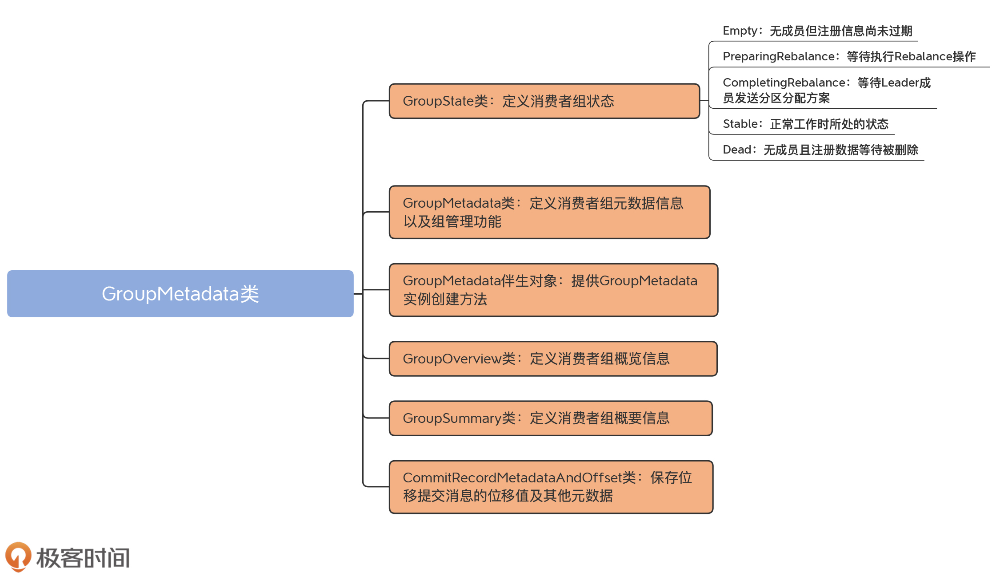
总体上来看，GroupMetadata.scala文件由6部分构成。
- GroupState类：定义了消费者组的状态空间。当前有5个状态，分别是Empty、PreparingRebalance、CompletingRebalance、Stable和Dead。其中，Empty表示当前无成员的消费者组；PreparingRebalance表示正在执行加入组操作的消费者组；CompletingRebalance表示等待Leader成员制定分配方案的消费者组；Stable表示已完成Rebalance操作可正常工作的消费者组；Dead表示当前无成员且元数据信息被删除的消费者组。
- GroupMetadata类：组元数据类。这是该scala文件下最重要的类文件，也是我们今天要学习的重点内容。
- GroupMetadata伴生对象：该对象提供了创建GroupMetadata实例的方法。
- GroupOverview类：定义了非常简略的消费者组概览信息。
- GroupSummary类：与MemberSummary类类似，它定义了消费者组的概要信息。
- CommitRecordMetadataAndOffset类：保存写入到位移主题中的消息的位移值，以及其他元数据信息。这个类的主要职责就是保存位移值，因此，我就不展开说它的详细代码了。
接下来，我们依次看下这些代码结构中都保存了哪些元数据信息。我们从最简单的GroupState类开始。
GroupState类及实现对象
GroupState类定义了消费者组的状态。这个类及其实现对象Stable的代码如下：
// GroupState trait
private[group] sealed trait GroupState {
// 合法前置状态
val validPreviousStates: Set[GroupState]
}
// Stable状态
private[group] case object Stable extends GroupState {
val validPreviousStates: Set[GroupState] = Set(CompletingRebalance)
}
......
这里我只展示了Stable状态的代码，其他4个状态的代码都差不多。为了方便你理解消费者组之间的状态流转，我绘制了一张完整的状态流转图。
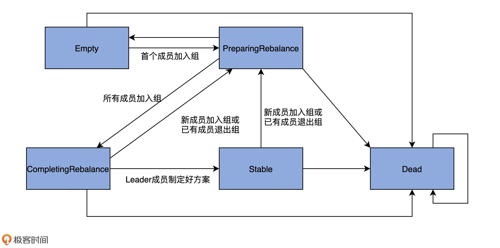
你需要记住的是，一个消费者组从创建到正常工作，它的状态流转路径是Empty -> PreparingRebalance -> CompletingRebalance -> Stable。
GroupOverview类
接下来，我们看下GroupOverview类的代码。就像我刚才说的，这是一个非常简略的组概览信息。当我们在命令行运行kafka-consumer-groups.sh –list的时候，Kafka就会创建GroupOverview实例返回给命令行。
我们来看下它的代码：
case class GroupOverview(
groupId: String, // 组ID信息，即group.id参数值
protocolType: String, // 消费者组的协议类型
state: String) // 消费者组的状态
怎么样，很简单吧。GroupOverview类封装了最基础的组数据，包括组ID、协议类型和状态信息。如果你熟悉Java Web开发的话，可以把GroupOverview和GroupMetadata的关系，理解为DAO和DTO的关系。
GroupSummary类
它的作用和GroupOverview非常相似，只不过它保存的数据要稍微多一点。我们看下它的代码：
case class GroupSummary(
state: String, // 消费者组状态
protocolType: String, // 协议类型
protocol: String, // 消费者组选定的分区分配策略
members: List[MemberSummary]) // 成员元数据
GroupSummary类有4个字段，它们的含义也都很清晰，看字段名就能理解。你需要关注的是members字段，它是一个MemberSummary类型的列表，里面保存了消费者组所有成员的元数据信息。通过这个字段，我们可以看到，消费者组元数据和组成员元数据是1对多的关系。
GroupMetadata类
最后，我们看下GroupMetadata类的源码。我们先看下该类构造函数所需的字段和自定义的扩展元数据：
@nonthreadsafe
private[group] class GroupMetadata(
val groupId: String, // 组ID
initialState: GroupState, // 消费者组初始状态
time: Time) extends Logging {
type JoinCallback = JoinGroupResult => Unit
// 组状态
private var state: GroupState = initialState
// 记录状态最近一次变更的时间戳
var currentStateTimestamp: Option[Long] = Some(time.milliseconds())
var protocolType: Option[String] = None
var protocolName: Option[String] = None
var generationId = 0
// 记录消费者组的Leader成员，可能不存在
private var leaderId: Option[String] = None
// 成员元数据列表信息
private val members = new mutable.HashMap[String, MemberMetadata]
// 静态成员Id列表
private val staticMembers = new mutable.HashMap[String, String]
private var numMembersAwaitingJoin = 0
// 分区分配策略支持票数
private val supportedProtocols = new mutable.HashMap[String, Integer]().withDefaultValue(0)
// 保存消费者组订阅分区的提交位移值
private val offsets = new mutable.HashMap[TopicPartition, CommitRecordMetadataAndOffset]
// 消费者组订阅的主题列表
private var subscribedTopics: Option[Set[String]] = None
......
}
GroupMetadata类定义的字段非常多，也正因为这样，它保存的数据是最全的，绝对担得起消费者组元数据类的称号。
除了我们之前反复提到的字段外，它还定义了很多其他字段。不过，有些字段要么是与事务相关的元数据，要么是属于中间状态的临时元数据，不属于核心的元数据，我们不需要花很多精力去学习它们。我们要重点关注的，是上面的代码中所展示的字段，这些是GroupMetadata类最重要的字段。
- currentStateTimestamp：记录最近一次状态变更的时间戳，用于确定位移主题中的过期消息。位移主题中的消息也要遵循Kafka的留存策略，所有当前时间与该字段的差值超过了留存阈值的消息都被视为“已过期”（Expired）。
- generationId：消费组Generation号。Generation等同于消费者组执行过Rebalance操作的次数，每次执行Rebalance时，Generation数都要加1。
- leaderId：消费者组中Leader成员的Member ID信息。当消费者组执行Rebalance过程时，需要选举一个成员作为Leader，负责为所有成员制定分区分配方案。在Rebalance早期阶段，这个Leader可能尚未被选举出来。这就是，leaderId字段是Option类型的原因。
- members：保存消费者组下所有成员的元数据信息。组元数据是由MemberMetadata类建模的，因此，members字段是按照Member ID分组的MemberMetadata类。
- offsets：保存按照主题分区分组的位移主题消息位移值的HashMap。Key是主题分区，Value是前面讲过的CommitRecordMetadataAndOffset类型。当消费者组成员向Kafka提交位移时，源码都会向这个字段插入对应的记录。
- subscribedTopics：保存消费者组订阅的主题列表，用于帮助从offsets字段中过滤订阅主题分区的位移值。
- supportedProtocols：保存分区分配策略的支持票数。它是一个HashMap类型，其中，Key是分配策略的名称，Value是支持的票数。前面我们说过，每个成员可以选择多个分区分配策略，因此，假设成员A选择[“range”，“round-robin”]、B选择[“range”]、C选择[“round-robin”，“sticky”]，那么这个字段就有3项，分别是：<“range”，2>、<“round-robin”，2>和<“sticky”，1>。
这些扩展字段和构造函数中的字段，共同构建出了完整的消费者组元数据。就我个人而言，我认为这些字段中最重要的就是members和offsets，它们分别保存了组内所有成员的元数据，以及这些成员提交的位移值。这样看的话，这两部分数据不就是一个消费者组最关心的3件事吗：组里面有多少个成员、每个成员都负责做什么、它们都做到了什么程度。
总结
今天，我带你深入到了GroupMetadata.scala和MemberMetadata.scala这两个源码文件中，学习了消费者组元数据和组成员元数据的定义。它们封装了一个消费者组及其成员的所有数据。后续的GroupCoordinator和其他消费者组组件，都会大量利用这部分元数据执行消费者组的管理。
为了让你更好地掌握今天的内容，我们来回顾下这节课的重点。
- 消费者组元数据：包括组元数据和组成员元数据两部分，分别由GroupMetadata和MemberMetadata类表征。
- MemberMetadata类：保存组成员元数据，比如组ID、Consumer主机名、协议类型等。同时，它还提供了MemberSummary类，封装了组成员元数据的概要信息。
- GroupMetadata类：保存组元数据，包括组状态、组成员元数据列表，等等。
- 1对多关系：组元数据与组成员元数据是1对多的关系。这是因为每个消费者组下存在若干个组成员。
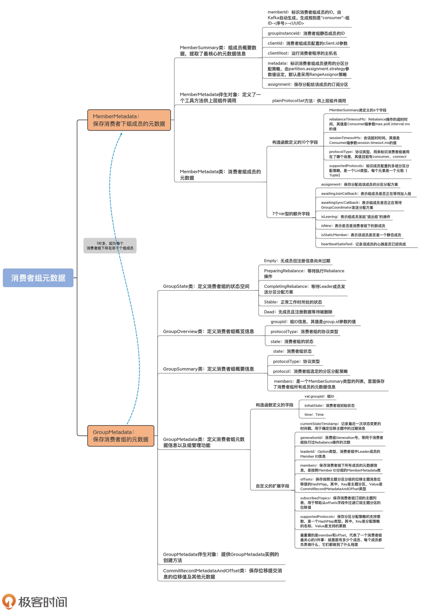
今天这节课的逻辑不是特别复杂，我们重点学习了消费者组元数据的构成，几乎未曾涉及元数据的操作。在下节课，我们将继续在这两个scala文件中探索，去学习操作这些元数据的方法实现。
但我要再次强调的是，今天学习的这些方法是上层组件调用的基础。如果你想彻底了解消费者组的工作原理，就必须先把这部分基础“铺平夯实”了，这样你才能借由它们到达“完全掌握消费者组实现源码”的目的地。
课后讨论
请你思考下，这节课最开始的工具行命令输出中的ASSIGNMENT-STRATEGY项，对应于咱们今天学习的哪一项元数据呢？
欢迎在留言区写下你的思考和答案，跟我交流讨论，也欢迎你把今天的内容分享给你的朋友。
28 消费者组元数据（下）：Kafka如何管理这些元数据？
你好，我是胡夕。今天我们继续学习消费者组元数据。
学完上节课之后，我们知道，Kafka定义了非常多的元数据，那么，这就必然涉及到对元数据的管理问题了。
这些元数据的类型不同，管理策略也就不一样。这节课，我将从消费者组状态、成员、位移和分区分配策略四个维度，对这些元数据进行拆解，带你一起了解下Kafka管理这些元数据的方法。
这些方法定义在MemberMetadata和GroupMetadata这两个类中，其中，GroupMetadata类中的方法最为重要，是我们要重点学习的对象。在后面的课程中，你会看到，这些方法会被上层组件GroupCoordinator频繁调用，因此，它们是我们学习Coordinator组件代码的前提条件，你一定要多花些精力搞懂它们。
消费者组状态管理方法
消费者组状态是很重要的一类元数据。管理状态的方法，要做的事情也就是设置和查询。这些方法大多比较简单，所以我把它们汇总在一起，直接介绍给你。
// GroupMetadata.scala
// 设置/更新状态
def transitionTo(groupState: GroupState): Unit = {
assertValidTransition(groupState) // 确保是合法的状态转换
state = groupState // 设置状态到给定状态
currentStateTimestamp = Some(time.milliseconds() // 更新状态变更时间戳
// 查询状态
def currentState = state
// 判断消费者组状态是指定状态
def is(groupState: GroupState) = state == groupState
// 判断消费者组状态不是指定状态
def not(groupState: GroupState) = state != groupState
// 消费者组能否Rebalance的条件是当前状态是PreparingRebalance状态的合法前置状态
def canRebalance = PreparingRebalance.validPreviousStates.contains(state)
1. transitionTo方法
transitionTo方法的作用是将消费者组状态变更成给定状态。在变更前，代码需要确保这次变更必须是合法的状态转换。这是依靠每个GroupState实现类定义的validPreviousStates集合来完成的。只有在这个集合中的状态，才是合法的前置状态。简单来说，只有集合中的这些状态，才能转换到当前状态。
同时，该方法还会更新状态变更的时间戳字段。Kafka有个定时任务，会定期清除过期的消费者组位移数据，它就是依靠这个时间戳字段，来判断过期与否的。
2. canRebalance方法
它用于判断消费者组是否能够开启Rebalance操作。判断依据是，当前状态是否是PreparingRebalance状态的合法前置状态。只有Stable、CompletingRebalance和Empty这3类状态的消费者组，才有资格开启Rebalance。
3. is和not方法
至于is和not方法，它们分别判断消费者组的状态与给定状态吻合还是不吻合，主要被用于执行状态校验。特别是is方法，被大量用于上层调用代码中，执行各类消费者组管理任务的前置状态校验工作。
总体来说，管理消费者组状态数据，依靠的就是这些方法，还是很简单的吧？
成员管理方法
在介绍管理消费者组成员的方法之前，我先帮你回忆下GroupMetadata中保存成员的字段。GroupMetadata中使用members字段保存所有的成员信息。该字段是一个HashMap，Key是成员的member ID字段，Value是MemberMetadata类型，该类型保存了成员的元数据信息。
所谓的管理成员，也就是添加成员（add方法）、移除成员（remove方法）和查询成员（has、get、size方法等）。接下来，我们就逐一来学习。
添加成员
先说添加成员的方法：add。add方法的主要逻辑，是将成员对象添加到members字段，同时更新其他一些必要的元数据，比如Leader成员字段、分区分配策略支持票数等。下面是add方法的源码：
def add(member: MemberMetadata, callback: JoinCallback = null): Unit = {
// 如果是要添加的第一个消费者组成员
if (members.isEmpty)
// 就把该成员的procotolType设置为消费者组的protocolType
this.protocolType = Some(member.protocolType)
// 确保成员元数据中的groupId和组Id相同
assert(groupId == member.groupId)
// 确保成员元数据中的protoclType和组protocolType相同
assert(this.protocolType.orNull == member.protocolType)
// 确保该成员选定的分区分配策略与组选定的分区分配策略相匹配
assert(supportsProtocols(member.protocolType, MemberMetadata.plainProtocolSet(member.supportedProtocols)))
// 如果尚未选出Leader成员
if (leaderId.isEmpty)
// 把该成员设定为Leader成员
leaderId = Some(member.memberId)
// 将该成员添加进members
members.put(member.memberId, member)
// 更新分区分配策略支持票数
member.supportedProtocols.foreach{ case (protocol, _) => supportedProtocols(protocol) += 1 }
// 设置成员加入组后的回调逻辑
member.awaitingJoinCallback = callback
// 更新已加入组的成员数
if (member.isAwaitingJoin)
numMembersAwaitingJoin += 1
}
我再画一张流程图，帮助你更直观地理解这个方法的作用。

我再具体解释一下这个方法的执行逻辑。
第一步，add方法要判断members字段是否包含已有成员。如果没有，就说明要添加的成员是该消费者组的第一个成员，那么，就令该成员协议类型（protocolType）成为组的protocolType。我在上节课中讲过，对于普通的消费者而言，protocolType就是字符串”consumer”。如果不是首个成员，就进入到下一步。
第二步，add方法会连续进行三次校验，分别确保待添加成员的组ID、protocolType和组配置一致，以及该成员选定的分区分配策略与组选定的分区分配策略相匹配。如果这些校验有任何一个未通过，就会立即抛出异常。
第三步，判断消费者组的Leader成员是否已经选出了。如果还没有选出，就将该成员设置成Leader成员。当然了，如果Leader已经选出了，自然就不需要做这一步了。需要注意的是，这里的Leader和我们在学习副本管理器时学到的Leader副本是不同的概念。这里的Leader成员，是指消费者组下的一个成员。该成员负责为所有成员制定分区分配方案，制定方法的依据，就是消费者组选定的分区分配策略。
第四步，更新消费者组分区分配策略支持票数。关于supportedProtocols字段的含义，我在上节课的末尾用一个例子形象地进行了说明，这里就不再重复说了。如果你没有印象了，可以再复习一下。
最后一步，设置成员加入组后的回调逻辑，同时更新已加入组的成员数。至此，方法结束。
作为关键的成员管理方法之一，add方法是实现消费者组Rebalance流程至关重要的一环。每当Rebalance开启第一大步——加入组的操作时，本质上就是在利用这个add方法实现新成员入组的逻辑。
移除成员
有add方法，自然也就有remove方法，下面是remove方法的完整源码：
def remove(memberId: String): Unit = {
// 从members中移除给定成员
members.remove(memberId).foreach { member =>
// 更新分区分配策略支持票数
member.supportedProtocols.foreach{ case (protocol, _) => supportedProtocols(protocol) -= 1 }
// 更新已加入组的成员数
if (member.isAwaitingJoin)
numMembersAwaitingJoin -= 1
}
// 如果该成员是Leader，选择剩下成员列表中的第一个作为新的Leader成员
if (isLeader(memberId))
leaderId = members.keys.headOption
}
remove方法比add要简单一些。首先，代码从members中移除给定成员。之后，更新分区分配策略支持票数，以及更新已加入组的成员数。最后，代码判断该成员是否是Leader成员，如果是的话，就选择成员列表中尚存的第一个成员作为新的Leader成员。
查询成员
查询members的方法有很多，大多都是很简单的场景。我给你介绍3个比较常见的。
def has(memberId: String) = members.contains(memberId)
def get(memberId: String) = members(memberId)
def size = members.size
- has方法，判断消费者组是否包含指定成员；
- get方法，获取指定成员对象；
- size方法，统计总成员数。
其它的查询方法逻辑也都很简单，比如allMemberMetadata、rebalanceTimeoutMs，等等，我就不多讲了。课后你可以自行阅读下，重点是体会这些方法利用members都做了什么事情。
位移管理方法
除了组状态和成员管理之外，GroupMetadata还有一大类管理功能，就是管理消费者组的提交位移（Committed Offsets），主要包括添加和移除位移值。
不过，在学习管理位移的功能之前，我再带你回顾一下保存位移的offsets字段的定义。毕竟，接下来我们要学习的方法，主要操作的就是这个字段。
private val offsets = new mutable.HashMap[TopicPartition, CommitRecordMetadataAndOffset]
它是HashMap类型，Key是TopicPartition类型，表示一个主题分区，而Value是CommitRecordMetadataAndOffset类型。该类封装了位移提交消息的位移值。
在详细阅读位移管理方法之前，我先解释下这里的“位移”和“位移提交消息”。
消费者组需要向Coordinator提交已消费消息的进度，在Kafka中，这个进度有个专门的术语，叫作提交位移。Kafka使用它来定位消费者组要消费的下一条消息。那么，提交位移在Coordinator端是如何保存的呢？它实际上是保存在内部位移主题中。提交的方式是，消费者组成员向内部主题写入符合特定格式的事件消息，这类消息就是所谓的位移提交消息（Commit Record）。关于位移提交消息的事件格式，我会在第30讲具体介绍，这里你可以暂时不用理会。而这里所说的CommitRecordMetadataAndOffset类，就是标识位移提交消息的地方。我们看下它的代码：
case class CommitRecordMetadataAndOffset(appendedBatchOffset: Option[Long], offsetAndMetadata: OffsetAndMetadata) {
def olderThan(that: CommitRecordMetadataAndOffset): Boolean = appendedBatchOffset.get < that.appendedBatchOffset.get
}
这个类的构造函数有两个参数。
- appendedBatchOffset：保存的是位移主题消息自己的位移值；
- offsetAndMetadata：保存的是位移提交消息中保存的消费者组的位移值。
添加位移值
在GroupMetadata中，有3个向offsets中添加订阅分区的已消费位移值的方法，分别是initializeOffsets、onOffsetCommitAppend和completePendingTxnOffsetCommit。
initializeOffsets方法的代码非常简单，如下所示：
def initializeOffsets(
offsets: collection.Map[TopicPartition, CommitRecordMetadataAndOffset],
pendingTxnOffsets: Map[Long, mutable.Map[TopicPartition, CommitRecordMetadataAndOffset]]): Unit = {
this.offsets ++= offsets
this.pendingTransactionalOffsetCommits ++= pendingTxnOffsets
}
它仅仅是将给定的一组订阅分区提交位移值加到offsets中。当然，同时它还会更新pendingTransactionalOffsetCommits字段。
不过，由于这个字段是给Kafka事务机制使用的，因此，你只需要关注这个方法的第一行语句就行了。当消费者组的协调者组件启动时，它会创建一个异步任务，定期地读取位移主题中相应消费者组的提交位移数据，并把它们加载到offsets字段中。
我们再来看第二个方法，onOffsetCommitAppend的代码。
def onOffsetCommitAppend(topicPartition: TopicPartition, offsetWithCommitRecordMetadata: CommitRecordMetadataAndOffset): Unit = {
if (pendingOffsetCommits.contains(topicPartition)) {
if (offsetWithCommitRecordMetadata.appendedBatchOffset.isEmpty)
throw new IllegalStateException("Cannot complete offset commit write without providing the metadata of the record " +
"in the log.")
// offsets字段中没有该分区位移提交数据，或者
// offsets字段中该分区对应的提交位移消息在位移主题中的位移值小于待写入的位移值
if (!offsets.contains(topicPartition) || offsets(topicPartition).olderThan(offsetWithCommitRecordMetadata))
// 将该分区对应的提交位移消息添加到offsets中
offsets.put(topicPartition, offsetWithCommitRecordMetadata)
}
pendingOffsetCommits.get(topicPartition) match {
case Some(stagedOffset) if offsetWithCommitRecordMetadata.offsetAndMetadata == stagedOffset =>
pendingOffsetCommits.remove(topicPartition)
case _ =>
}
}
该方法在提交位移消息被成功写入后调用。主要判断的依据，是offsets中是否已包含该主题分区对应的消息值，或者说，offsets字段中该分区对应的提交位移消息在位移主题中的位移值是否小于待写入的位移值。如果是的话，就把该主题已提交的位移值添加到offsets中。
第三个方法completePendingTxnOffsetCommit的作用是完成一个待决事务（Pending Transaction）的位移提交。所谓的待决事务，就是指正在进行中、还没有完成的事务。在处理待决事务的过程中，可能会出现将待决事务中涉及到的分区的位移值添加到offsets中的情况。不过，由于该方法是与Kafka事务息息相关的，你不需要重点掌握，这里我就不展开说了。
移除位移值
offsets中订阅分区的已消费位移值也是能够被移除的。你还记得，Kafka主题中的消息有默认的留存时间设置吗？位移主题是普通的Kafka主题，所以也要遵守相应的规定。如果当前时间与已提交位移消息时间戳的差值，超过了Broker端参数offsets.retention.minutes值，Kafka就会将这条记录从offsets字段中移除。这就是方法removeExpiredOffsets要做的事情。
这个方法的代码有点长，为了方便你掌握，我分块给你介绍下。我先带你了解下它的内部嵌套类方法getExpireOffsets，然后再深入了解它的实现逻辑，这样你就能很轻松地掌握Kafka移除位移值的代码原理了。
首先，该方法定义了一个内部嵌套方法getExpiredOffsets，专门用于获取订阅分区过期的位移值。我们来阅读下源码，看看它是如何做到的。
def getExpiredOffsets(
baseTimestamp: CommitRecordMetadataAndOffset => Long,
subscribedTopics: Set[String] = Set.empty): Map[TopicPartition, OffsetAndMetadata] = {
// 遍历offsets中的所有分区，过滤出同时满足以下3个条件的所有分区
// 条件1：分区所属主题不在订阅主题列表之内
// 条件2：该主题分区已经完成位移提交
// 条件3：该主题分区在位移主题中对应消息的存在时间超过了阈值
offsets.filter {
case (topicPartition, commitRecordMetadataAndOffset) =>
!subscribedTopics.contains(topicPartition.topic()) &&
!pendingOffsetCommits.contains(topicPartition) && {
commitRecordMetadataAndOffset
.offsetAndMetadata.expireTimestamp match {
case None =>
currentTimestamp - baseTimestamp(commitRecordMetadataAndOffset) >= offsetRetentionMs
case Some(expireTimestamp) =>
currentTimestamp >= expireTimestamp
}
}
}.map {
// 为满足以上3个条件的分区提取出commitRecordMetadataAndOffset中的位移值
case (topicPartition, commitRecordOffsetAndMetadata) =>
(topicPartition, commitRecordOffsetAndMetadata.offsetAndMetadata)
}.toMap
}
该方法接收两个参数。
- baseTimestamp：它是一个函数类型，接收CommitRecordMetadataAndOffset类型的字段，然后计算时间戳，并返回；
- subscribedTopics：即订阅主题集合，默认是空。
方法开始时，代码从offsets字段中过滤出同时满足3个条件的所有分区。
条件1：分区所属主题不在订阅主题列表之内。当方法传入了不为空的主题集合时，就说明该消费者组此时正在消费中，正在消费的主题是不能执行过期位移移除的。
条件2：主题分区已经完成位移提交，那种处于提交中状态，也就是保存在pendingOffsetCommits字段中的分区，不予考虑。
条件3：该主题分区在位移主题中对应消息的存在时间超过了阈值。老版本的Kafka消息直接指定了过期时间戳，因此，只需要判断当前时间是否越过了这个过期时间。但是，目前，新版Kafka判断过期与否，主要是基于消费者组状态。如果是Empty状态，过期的判断依据就是当前时间与组变为Empty状态时间的差值，是否超过Broker端参数offsets.retention.minutes值；如果不是Empty状态，就看当前时间与提交位移消息中的时间戳差值是否超过了offsets.retention.minutes值。如果超过了，就视为已过期，对应的位移值需要被移除；如果没有超过，就不需要移除了。
当过滤出同时满足这3个条件的分区后，提取出它们对应的位移值对象并返回。
学过了getExpiredOffsets方法代码的实现之后，removeExpiredOffsets方法剩下的代码就很容易理解了。
def removeExpiredOffsets(
currentTimestamp: Long, offsetRetentionMs: Long): Map[TopicPartition, OffsetAndMetadata] = {
// getExpiredOffsets方法代码......
// 调用getExpiredOffsets方法获取主题分区的过期位移
val expiredOffsets: Map[TopicPartition, OffsetAndMetadata] = protocolType match {
case Some(_) if is(Empty) =>
getExpiredOffsets(
commitRecordMetadataAndOffset => currentStateTimestamp .getOrElse(commitRecordMetadataAndOffset.offsetAndMetadata.commitTimestamp)
)
case Some(ConsumerProtocol.PROTOCOL_TYPE) if subscribedTopics.isDefined =>
getExpiredOffsets(
_.offsetAndMetadata.commitTimestamp,
subscribedTopics.get
)
case None =>
getExpiredOffsets(_.offsetAndMetadata.commitTimestamp)
case _ =>
Map()
}
if (expiredOffsets.nonEmpty)
debug(s"Expired offsets from group '$groupId': ${expiredOffsets.keySet}")
// 将过期位移对应的主题分区从offsets中移除
offsets --= expiredOffsets.keySet
// 返回主题分区对应的过期位移
expiredOffsets
}
代码根据消费者组的protocolType类型和组状态调用getExpiredOffsets方法，同时决定传入什么样的参数：
- 如果消费者组状态是Empty，就传入组变更为Empty状态的时间，若该时间没有被记录，则使用提交位移消息本身的写入时间戳，来获取过期位移；
- 如果是普通的消费者组类型，且订阅主题信息已知，就传入提交位移消息本身的写入时间戳和订阅主题集合共同确定过期位移值；
- 如果protocolType为None，就表示，这个消费者组其实是一个Standalone消费者，依然是传入提交位移消息本身的写入时间戳，来决定过期位移值；
- 如果消费者组的状态不符合刚刚说的这些情况，那就说明，没有过期位移值需要被移除。
当确定了要被移除的位移值集合后，代码会将它们从offsets中移除，然后返回这些被移除的位移值信息。至此，方法结束。
分区分配策略管理方法
最后，我们讨论下消费者组分区分配策略的管理，也就是字段supportedProtocols的管理。supportedProtocols是分区分配策略的支持票数，这个票数在添加成员、移除成员时，会进行相应的更新。
消费者组每次Rebalance的时候，都要重新确认本次Rebalance结束之后，要使用哪个分区分配策略，因此，就需要特定的方法来对这些票数进行统计，把票数最多的那个策略作为新的策略。
GroupMetadata类中定义了两个方法来做这件事情，分别是candidateProtocols和selectProtocol方法。
确认消费者组支持的分区分配策略集
首先来看candidateProtocols方法。它的作用是找出组内所有成员都支持的分区分配策略集。代码如下：
private def candidateProtocols: Set[String] = {
val numMembers = members.size // 获取组内成员数
// 找出支持票数=总成员数的策略，返回它们的名称
supportedProtocols.filter(_._2 == numMembers).map(_._1).toSet
}
该方法首先会获取组内的总成员数，然后，找出supportedProtocols中那些支持票数等于总成员数的分配策略，并返回它们的名称。支持票数等于总成员数的意思，等同于所有成员都支持该策略。
选出消费者组的分区消费分配策略
接下来，我们看下selectProtocol方法，它的作用是选出消费者组的分区消费分配策略。
def selectProtocol: String = {
// 如果没有任何成员，自然无法确定选用哪个策略
if (members.isEmpty)
throw new IllegalStateException("Cannot select protocol for empty group")
// 获取所有成员都支持的策略集合
val candidates = candidateProtocols
// 让每个成员投票，票数最多的那个策略当选
val (protocol, _) = allMemberMetadata
.map(_.vote(candidates))
.groupBy(identity)
.maxBy { case (_, votes) => votes.size }
protocol
}
这个方法首先会判断组内是否有成员。如果没有任何成员，自然就无法确定选用哪个策略了，方法就会抛出异常，并退出。否则的话，代码会调用刚才的candidateProtocols方法，获取所有成员都支持的策略集合，然后让每个成员投票，票数最多的那个策略当选。
你可能会好奇，这里的vote方法是怎么实现的呢？其实，它就是简单地查找而已。我举一个简单的例子，来帮助你理解。
比如，candidates字段的值是[“策略A”，“策略B”]，成员1支持[“策略B”，“策略A”]，成员2支持[“策略A”，“策略B”，“策略C”]，成员3支持[“策略D”，“策略B”，“策略A”]，那么，vote方法会将candidates与每个成员的支持列表进行比对，找出成员支持列表中第一个包含在candidates中的策略。因此，对于这个例子来说，成员1投票策略B，成员2投票策略A，成员3投票策略B。可以看到，投票的结果是，策略B是两票，策略A是1票。所以，selectProtocol方法返回策略B作为新的策略。
有一点你需要注意，成员支持列表中的策略是有顺序的。这就是说，[“策略B”，“策略A”]和[“策略A”，“策略B”]是不同的，成员会倾向于选择靠前的策略。
总结
今天，我们结合GroupMetadata源码，学习了Kafka对消费者组元数据的管理，主要包括组状态、成员、位移和分区分配策略四个维度。我建议你在课下再仔细地阅读一下这些管理数据的方法，对照着源码和注释走一遍完整的操作流程。
另外，在这两节课中，我没有谈及待决成员列表（Pending Members）和待决位移（Pending Offsets）的管理，因为这两个元数据项属于中间临时状态，因此我没有展开讲，不理解这部分代码的话，也不会影响我们理解消费者组元数据以及Coordinator是如何使用它们的。不过，我建议你可以阅读下与它们相关的代码部分。要知道，Kafka是非常喜欢引用中间状态变量来管理各类元数据或状态的。
现在，我们再来简单回顾下这节课的重点。
- 消费者组元数据管理：主要包括对组状态、成员、位移和分区分配策略的管理。
- 组状态管理：transitionTo方法负责设置状态，is、not和get方法用于查询状态。
- 成员管理：add、remove方法用于增减成员，has和get方法用于查询特定成员。
- 分区分配策略管理：定义了专属方法selectProtocols，用于在每轮Rebalance时选举分区分配策略。
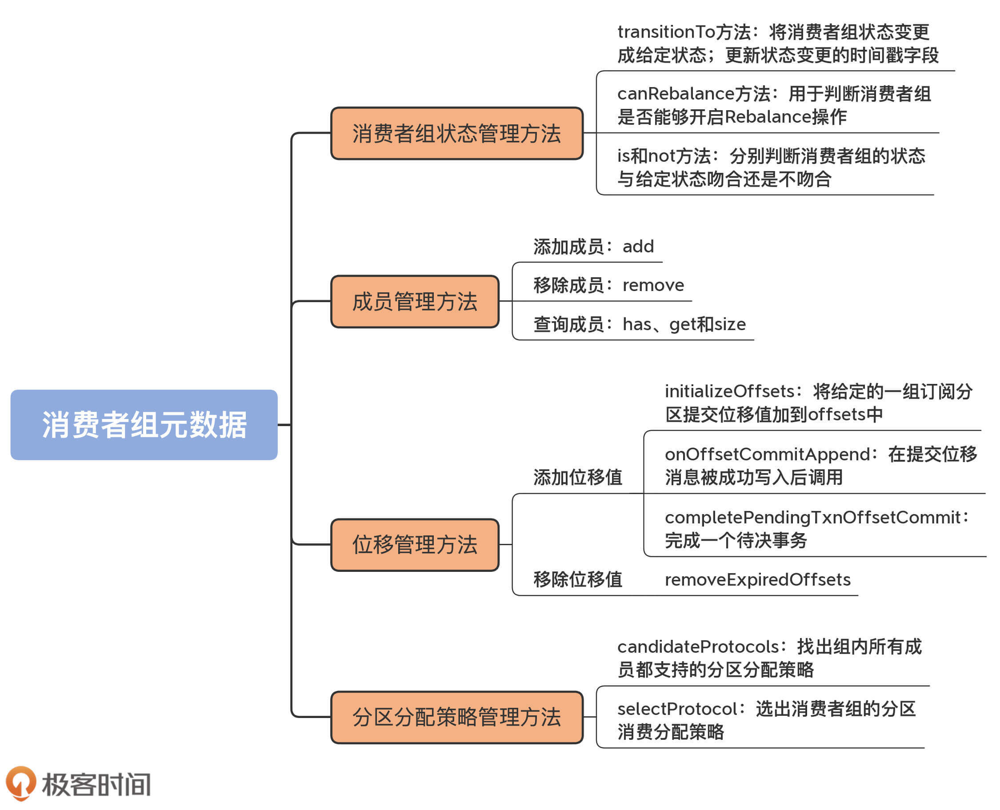
至此，我们花了两节课的时间，详细地学习了消费者组元数据及其管理方法的源码。这些操作元数据的方法被上层调用方GroupCoordinator大量使用，就像我在开头提到的，如果现在我们不彻底掌握这些元数据被操作的手法，等我们学到GroupCoordinator代码时，就会感到有些吃力，所以，你一定要好好地学习这两节课。有了这些基础，等到学习GroupCoordinator源码时，你就能更加深刻地理解它的底层实现原理了。
课后讨论
在讲到MemberMetadata时，我说过，每个成员都有自己的Rebalance超时时间设置，那么，Kafka是怎么确认消费者组使用哪个成员的超时时间作为整个组的超时时间呢？
欢迎在留言区写下你的思考和答案，跟我交流讨论，也欢迎你把今天的内容分享给你的朋友。
29 GroupMetadataManager：组元数据管理器是个什么东西？
你好，我是胡夕。今天，我们学习GroupMetadataManager类的源码。从名字上来看，它是组元数据管理器，但是，从它提供的功能来看，我更愿意将它称作消费者组管理器，因为它定义的方法，提供的都是添加消费者组、移除组、查询组这样组级别的基础功能。
不过，这个类的知名度不像KafkaController、GroupCoordinator那么高，你之前可能都没有听说过它。但是，它其实是非常重要的消费者组管理类。
GroupMetadataManager类是在消费者组Coordinator组件被创建时被实例化的。这就是说，每个Broker在启动过程中，都会创建并维持一个GroupMetadataManager实例，以实现对该Broker负责的消费者组进行管理。更重要的是，生产环境输出日志中的与消费者组相关的大多数信息，都和它息息相关。
我举一个简单的例子。你应该见过这样的日志输出：
Removed ××× expired offsets in ××× milliseconds.
这条日志每10分钟打印一次。你有没有想过，它为什么要这么操作呢？其实，这是由GroupMetadataManager类创建的定时任务引发的。如果你不清楚GroupMetadataManager的原理，虽然暂时不会影响你使用，但是，一旦你在实际环境中看到了有关消费者组的错误日志，仅凭日志输出，你是无法定位错误原因的。要解决这个问题，就只有一个办法：通过阅读源码，彻底搞懂底层实现原理，做到以不变应万变。
关于这个类，最重要的就是要掌握它是如何管理消费者组的，以及它对内部位移主题的操作方法。这两个都是重磅功能，我们必须要吃透它们的原理，这也是我们这三节课的学习重点。今天，我们先学习它的类定义和管理消费者组的方法。
类定义与字段
GroupMetadataManager类定义在coordinator.group包下的同名scala文件中。这个类的代码将近1000行，逐行分析的话，显然效率不高，也没有必要。所以，我从类定义和字段、重要方法两个维度给出主要逻辑的代码分析。下面的代码是该类的定义，以及我选取的重要字段信息。
// brokerId：所在Broker的Id
// interBrokerProtocolVersion：Broker端参数inter.broker.protocol.version值
// config: 内部位移主题配置类
// replicaManager: 副本管理器类
// zkClient: ZooKeeper客户端
class GroupMetadataManager(
brokerId: Int,
interBrokerProtocolVersion: ApiVersion,
config: OffsetConfig,
replicaManager: ReplicaManager,
zkClient: KafkaZkClient,
time: Time,
metrics: Metrics) extends Logging with KafkaMetricsGroup {
// 压缩器类型。向位移主题写入消息时执行压缩操作
private val compressionType: CompressionType = CompressionType.forId(config.offsetsTopicCompressionCodec.codec)
// 消费者组元数据容器，保存Broker管理的所有消费者组的数据
private val groupMetadataCache = new Pool[String, GroupMetadata]
// 位移主题下正在执行加载操作的分区
private val loadingPartitions: mutable.Set[Int] = mutable.Set()
// 位移主题下完成加载操作的分区
private val ownedPartitions: mutable.Set[Int] = mutable.Set()
// 位移主题总分区数
private val groupMetadataTopicPartitionCount = getGroupMetadataTopicPartitionCount
......
}
这个类的构造函数需要7个参数，后面的time和metrics只是起辅助作用，因此，我重点解释一下前5个参数的含义。
- brokerId：这个参数我们已经无比熟悉了。它是所在Broker的ID值，也就是broker.id参数值。
- interBrokerProtocolVersion：保存Broker间通讯使用的请求版本。它是Broker端参数inter.broker.protocol.version值。这个参数的主要用途是确定位移主题消息格式的版本。
- config：这是一个OffsetConfig类型。该类型定义了与位移管理相关的重要参数，比如位移主题日志段大小设置、位移主题备份因子、位移主题分区数配置等。
- replicaManager：副本管理器类。GroupMetadataManager类使用该字段实现获取分区对象、日志对象以及写入分区消息的目的。
- zkClient：ZooKeeper客户端。该类中的此字段只有一个目的：从ZooKeeper中获取位移主题的分区数。
除了构造函数所需的字段，该类还定义了其他关键字段，我给你介绍几个非常重要的。
1. compressionType
压缩器类型。Kafka向位移主题写入消息前，可以选择对消息执行压缩操作。是否压缩，取决于Broker端参数offsets.topic.compression.codec值，默认是不进行压缩。如果你的位移主题占用的磁盘空间比较多的话，可以考虑启用压缩，以节省资源。
2. groupMetadataCache
该字段是GroupMetadataManager类上最重要的属性，它保存这个Broker上GroupCoordinator组件管理的所有消费者组元数据。**它的Key是消费者组名称，Value是消费者组元数据，也就是GroupMetadata。源码通过该字段实现对消费者组的添加、删除和遍历操作。
3. loadingPartitions
位移主题下正在执行加载操作的分区号集合。这里需要注意两点：首先，这些分区都是位移主题分区，也就是__consumer_offsets主题下的分区；其次，所谓的加载，是指读取位移主题消息数据，填充GroupMetadataCache字段的操作。
4. ownedPartitions
位移主题下完成加载操作的分区号集合。与loadingPartitions类似的是，该字段保存的分区也是位移主题下的分区。和loadingPartitions不同的是，它保存的分区都是已经完成加载操作的分区。
5. groupMetadataTopicPartitionCount
位移主题的分区数。它是Broker端参数offsets.topic.num.partitions的值，默认是50个分区。若要修改分区数，除了变更该参数值之外，你也可以手动创建位移主题，并指定不同的分区数。
在这些字段中，groupMetadataCache是最重要的，GroupMetadataManager类大量使用该字段实现对消费者组的管理。接下来，我们就重点学习一下该类是如何管理消费者组的。
重要方法
管理消费者组包含两个方面，对消费者组元数据的管理以及对消费者组位移的管理。组元数据和组位移都是Coordinator端重要的消费者组管理对象。
消费者组元数据管理
消费者组元数据管理分为查询获取组信息、添加组、移除组和加载组信息。从代码复杂度来讲，查询获取、移除和添加的逻辑相对简单，加载的过程稍微费事些。我们先说说查询获取。
查询获取消费者组元数据
GroupMetadataManager类中查询及获取组数据的方法有很多。大多逻辑简单，你一看就能明白，比如下面的getGroup方法和getOrMaybeCreateGroup方法：
// getGroup方法：返回给定消费者组的元数据信息。
// 若该组信息不存在，返回None
def getGroup(groupId: String): Option[GroupMetadata] = {
Option(groupMetadataCache.get(groupId))
}
// getOrMaybeCreateGroup方法：返回给定消费者组的元数据信息。
// 若不存在，则视createIfNotExist参数值决定是否需要添加该消费者组
def getOrMaybeCreateGroup(groupId: String, createIfNotExist: Boolean): Option[GroupMetadata] = {
if (createIfNotExist)
// 若不存在且允许添加，则添加一个状态是Empty的消费者组元数据对象
Option(groupMetadataCache.getAndMaybePut(groupId, new GroupMetadata(groupId, Empty, time)))
else
Option(groupMetadataCache.get(groupId))
}
GroupMetadataManager类的上层组件GroupCoordinator会大量使用这两个方法来获取给定消费者组的数据。这两个方法都会返回给定消费者组的元数据信息，但是它们之间是有区别的。
对于getGroup方法而言，如果该组信息不存在，就返回None，而这通常表明，消费者组确实不存在，或者是，该组对应的Coordinator组件变更到其他Broker上了。
而对于getOrMaybeCreateGroup方法而言，若组信息不存在，就根据createIfNotExist参数值决定是否需要添加该消费者组。而且，getOrMaybeCreateGroup方法是在消费者组第一个成员加入组时被调用的，用于把组创建出来。
在GroupMetadataManager类中，还有一些地方也散落着组查询获取的逻辑。不过它们与这两个方法中的代码大同小异，很容易理解，课下你可以自己阅读下。
移除消费者组元数据
接下来，我们看下如何移除消费者组信息。当Broker卸任某些消费者组的Coordinator角色时，它需要将这些消费者组从groupMetadataCache中全部移除掉，这就是removeGroupsForPartition方法要做的事情。我们看下它的源码：
def removeGroupsForPartition(offsetsPartition: Int,
onGroupUnloaded: GroupMetadata => Unit): Unit = {
// 位移主题分区
val topicPartition = new TopicPartition(Topic.GROUP_METADATA_TOPIC_NAME, offsetsPartition)
info(s"Scheduling unloading of offsets and group metadata from $topicPartition")
// 创建异步任务，移除组信息和位移信息
scheduler.schedule(topicPartition.toString, () => removeGroupsAndOffsets)
// 内部方法，用于移除组信息和位移信息
def removeGroupsAndOffsets(): Unit = {
var numOffsetsRemoved = 0
var numGroupsRemoved = 0
inLock(partitionLock) {
// 移除ownedPartitions中特定位移主题分区记录
ownedPartitions.remove(offsetsPartition)
// 遍历所有消费者组信息
for (group <- groupMetadataCache.values) {
// 如果该组信息保存在特定位移主题分区中
if (partitionFor(group.groupId) == offsetsPartition) {
// 执行组卸载逻辑
onGroupUnloaded(group)
// 关键步骤！将组信息从groupMetadataCache中移除
groupMetadataCache.remove(group.groupId, group)
// 把消费者组从producer对应的组集合中移除
removeGroupFromAllProducers(group.groupId)
// 更新已移除组计数器
numGroupsRemoved += 1
// 更新已移除位移值计数器
numOffsetsRemoved += group.numOffsets
}
}
}
info(s"Finished unloading $topicPartition. Removed $numOffsetsRemoved cached offsets " +
s"and $numGroupsRemoved cached groups.")
}
}
该方法的主要逻辑是，先定义一个内部方法removeGroupsAndOffsets，然后创建一个异步任务，调用该方法来执行移除消费者组信息和位移信息。
那么，怎么判断要移除哪些消费者组呢？这里的依据就是传入的位移主题分区。每个消费者组及其位移的数据，都只会保存在位移主题的一个分区下。一旦给定了位移主题分区，那么，元数据保存在这个位移主题分区下的消费者组就要被移除掉。removeGroupsForPartition方法传入的offsetsPartition参数，表示Leader发生变更的位移主题分区，因此，这些分区保存的消费者组都要从该Broker上移除掉。
具体的执行逻辑是什么呢？我来解释一下。
首先，异步任务从ownedPartitions中移除给定位移主题分区。
其次，遍历消费者组元数据缓存中的所有消费者组对象，如果消费者组正是在给定位移主题分区下保存的，就依次执行下面的步骤。
- 第1步，调用onGroupUnloaded方法执行组卸载逻辑。这个方法的逻辑是上层组件GroupCoordinator传过来的。它主要做两件事情：将消费者组状态变更到Dead状态；封装异常表示Coordinator已发生变更，然后调用回调函数返回。
- 第2步，把消费者组信息从groupMetadataCache中移除。这一步非常关键，目的是彻底清除掉该组的“痕迹”。
- 第3步，把消费者组从producer对应的组集合中移除。这里的producer，是给Kafka事务用的。
- 第4步，增加已移除组计数器。
- 第5步，更新已移除位移值计数器。
到这里，方法结束。
添加消费者组元数据
下面，我们学习添加消费者组的管理方法，即addGroup。它特别简单，仅仅是调用putIfNotExists将给定组添加进groupMetadataCache中而已。代码如下：
def addGroup(group: GroupMetadata): GroupMetadata = {
val currentGroup = groupMetadataCache.putIfNotExists(group.groupId, group)
if (currentGroup != null) {
currentGroup
} else {
group
}
}
加载消费者组元数据
现在轮到相对复杂的加载消费者组了。GroupMetadataManager类中定义了一个loadGroup方法执行对应的加载过程。
private def loadGroup(
group: GroupMetadata, offsets: Map[TopicPartition, CommitRecordMetadataAndOffset],
pendingTransactionalOffsets: Map[Long, mutable.Map[TopicPartition, CommitRecordMetadataAndOffset]]): Unit = {
trace(s"Initialized offsets $offsets for group ${group.groupId}")
// 初始化消费者组的位移信息
group.initializeOffsets(offsets, pendingTransactionalOffsets.toMap)
// 调用addGroup方法添加消费者组
val currentGroup = addGroup(group)
if (group != currentGroup)
debug(s"Attempt to load group ${group.groupId} from log with generation ${group.generationId} failed " +
s"because there is already a cached group with generation ${currentGroup.generationId}")
}
该方法的逻辑有两步。
第1步，通过initializeOffsets方法，将位移值添加到offsets字段标识的消费者组提交位移元数据中，实现加载消费者组订阅分区提交位移的目的。
第2步，调用addGroup方法，将该消费者组元数据对象添加进消费者组元数据缓存，实现加载消费者组元数据的目的。
消费者组位移管理
除了消费者组的管理，GroupMetadataManager类的另一大类功能，是提供消费者组位移的管理，主要包括位移数据的保存和查询。我们总说，位移主题是保存消费者组位移信息的地方。实际上，当消费者组程序在查询位移时，Kafka总是从内存中的位移缓存数据查询，而不会直接读取底层的位移主题数据。
保存消费者组位移
storeOffsets方法负责保存消费者组位移。该方法的代码很长，我先画一张图来展示下它的完整流程，帮助你建立起对这个方法的整体认知。接下来，我们再从它的方法签名和具体代码两个维度，来具体了解一下它的执行逻辑。

我先给你解释一下保存消费者组位移的全部流程。
首先，storeOffsets方法要过滤出满足特定条件的待保存位移信息。是否满足特定条件，要看validateOffsetMetadataLength方法的返回值。这里的特定条件，是指位移提交记录中的自定义数据大小，要小于Broker端参数offset.metadata.max.bytes的值，默认值是4KB。
如果没有一个分区满足条件，就构造OFFSET_METADATA_TOO_LARGE异常，并调用回调函数。这里的回调函数执行发送位移提交Response的动作。
倘若有分区满足了条件，接下来，方法会判断当前Broker是不是该消费者组的Coordinator，如果不是的话，就构造NOT_COORDINATOR异常，并提交给回调函数；如果是的话，就构造位移主题消息，并将消息写入进位移主题下。
然后，调用一个名为putCacheCallback的内置方法，填充groupMetadataCache中各个消费者组元数据中的位移值，最后，调用回调函数返回。
接下来，我们结合代码来查看下storeOffsets方法的实现逻辑。
首先我们看下它的方法签名。既然是保存消费者组提交位移的，那么，我们就要知道上层调用方都给这个方法传入了哪些参数。
// group：消费者组元数据
// consumerId：消费者组成员ID
// offsetMetadata：待保存的位移值，按照分区分组
// responseCallback：处理完成后的回调函数
// producerId：事务型Producer ID
// producerEpoch：事务型Producer Epoch值
def storeOffsets(
group: GroupMetadata,
consumerId: String,
offsetMetadata: immutable.Map[TopicPartition, OffsetAndMetadata],
responseCallback: immutable.Map[TopicPartition, Errors] => Unit,
producerId: Long = RecordBatch.NO_PRODUCER_ID,
producerEpoch: Short = RecordBatch.NO_PRODUCER_EPOCH): Unit = {
......
}
这个方法接收6个参数，它们的含义我都用注释的方式标注出来了。producerId和producerEpoch这两个参数是与Kafka事务相关的，你简单了解下就行。我们要重点掌握前面4个参数的含义。
- group：消费者组元数据信息。该字段的类型就是我们之前学到的GroupMetadata类。
- consumerId：消费者组成员ID，仅用于DEBUG调试。
- offsetMetadata：待保存的位移值，按照分区分组。
- responseCallback：位移保存完成后需要执行的回调函数。
接下来，我们看下storeOffsets的代码。为了便于你理解，我删除了与Kafka事务操作相关的部分。
// 过滤出满足特定条件的待保存位移数据
val filteredOffsetMetadata = offsetMetadata.filter { case (_, offsetAndMetadata) =>
validateOffsetMetadataLength(offsetAndMetadata.metadata)
}
......
val isTxnOffsetCommit = producerId != RecordBatch.NO_PRODUCER_ID
// 如果没有任何分区的待保存位移满足特定条件
if (filteredOffsetMetadata.isEmpty) {
// 构造OFFSET_METADATA_TOO_LARGE异常并调用responseCallback返回
val commitStatus = offsetMetadata.map { case (k, _) => k -> Errors.OFFSET_METADATA_TOO_LARGE }
responseCallback(commitStatus)
None
} else {
// 查看当前Broker是否为给定消费者组的Coordinator
getMagic(partitionFor(group.groupId)) match {
// 如果是Coordinator
case Some(magicValue) =>
val timestampType = TimestampType.CREATE_TIME
val timestamp = time.milliseconds()
// 构造位移主题的位移提交消息
val records = filteredOffsetMetadata.map { case (topicPartition, offsetAndMetadata) =>
val key = GroupMetadataManager.offsetCommitKey(group.groupId, topicPartition)
val value = GroupMetadataManager.offsetCommitValue(offsetAndMetadata, interBrokerProtocolVersion)
new SimpleRecord(timestamp, key, value)
}
val offsetTopicPartition = new TopicPartition(Topic.GROUP_METADATA_TOPIC_NAME, partitionFor(group.groupId))
// 为写入消息创建内存Buffer
val buffer = ByteBuffer.allocate(AbstractRecords.estimateSizeInBytes(magicValue, compressionType, records.asJava))
if (isTxnOffsetCommit && magicValue < RecordBatch.MAGIC_VALUE_V2)
throw Errors.UNSUPPORTED_FOR_MESSAGE_FORMAT.exception("Attempting to make a transaction offset commit with an invalid magic: " + magicValue)
val builder = MemoryRecords.builder(buffer, magicValue, compressionType, timestampType, 0L, time.milliseconds(),
producerId, producerEpoch, 0, isTxnOffsetCommit, RecordBatch.NO_PARTITION_LEADER_EPOCH)
records.foreach(builder.append)
val entries = Map(offsetTopicPartition -> builder.build())
// putCacheCallback函数定义......
if (isTxnOffsetCommit) {
......
} else {
group.inLock {
group.prepareOffsetCommit(offsetMetadata)
}
}
// 写入消息到位移主题，同时调用putCacheCallback方法更新消费者元数据
appendForGroup(group, entries, putCacheCallback)
// 如果是Coordinator
case None =>
// 构造NOT_COORDINATOR异常并提交给responseCallback方法
val commitStatus = offsetMetadata.map {
case (topicPartition, _) =>
(topicPartition, Errors.NOT_COORDINATOR)
}
responseCallback(commitStatus)
None
}
}
我为方法的关键步骤都标注了注释，具体流程前面我也介绍过了，应该很容易理解。不过，这里还需要注意两点，也就是appendForGroup和putCacheCallback方法。前者是向位移主题写入消息；后者是填充元数据缓存的。我们结合代码来学习下。
appendForGroup方法负责写入消息到位移主题，同时传入putCacheCallback方法，更新消费者元数据。以下是它的代码：
private def appendForGroup(
group: GroupMetadata,
records: Map[TopicPartition, MemoryRecords],
callback: Map[TopicPartition, PartitionResponse] => Unit): Unit = {
replicaManager.appendRecords(
timeout = config.offsetCommitTimeoutMs.toLong,
requiredAcks = config.offsetCommitRequiredAcks,
internalTopicsAllowed = true,
origin = AppendOrigin.Coordinator,
entriesPerPartition = records,
delayedProduceLock = Some(group.lock),
responseCallback = callback)
}
可以看到，该方法就是调用ReplicaManager的appendRecords方法，将消息写入到位移主题中。
下面，我们再关注一下putCacheCallback方法的实现，也就是将写入的位移值填充到缓存中。我先画一张图来展示下putCacheCallback的逻辑。
现在，我们结合代码，学习下它的逻辑实现。
def putCacheCallback(responseStatus: Map[TopicPartition, PartitionResponse]): Unit = {
// 确保消息写入到指定位移主题分区，否则抛出异常
if (responseStatus.size != 1 || !responseStatus.contains(offsetTopicPartition))
throw new IllegalStateException("Append status %s should only have one partition %s"
.format(responseStatus, offsetTopicPartition))
// 更新已提交位移数指标
offsetCommitsSensor.record(records.size)
val status = responseStatus(offsetTopicPartition)
val responseError = group.inLock {
// 写入结果没有错误
if (status.error == Errors.NONE) {
// 如果不是Dead状态
if (!group.is(Dead)) {
filteredOffsetMetadata.foreach { case (topicPartition, offsetAndMetadata) =>
if (isTxnOffsetCommit)
......
else
// 调用GroupMetadata的onOffsetCommitAppend方法填充元数据
group.onOffsetCommitAppend(topicPartition, CommitRecordMetadataAndOffset(Some(status.baseOffset), offsetAndMetadata))
}
}
Errors.NONE
// 写入结果有错误
} else {
if (!group.is(Dead)) {
......
filteredOffsetMetadata.foreach { case (topicPartition, offsetAndMetadata) =>
if (isTxnOffsetCommit)
group.failPendingTxnOffsetCommit(producerId, topicPartition)
else
// 取消未完成的位移消息写入
group.failPendingOffsetWrite(topicPartition, offsetAndMetadata)
}
}
......
// 确认异常类型
status.error match {
case Errors.UNKNOWN_TOPIC_OR_PARTITION
| Errors.NOT_ENOUGH_REPLICAS
| Errors.NOT_ENOUGH_REPLICAS_AFTER_APPEND =>
Errors.COORDINATOR_NOT_AVAILABLE
case Errors.NOT_LEADER_FOR_PARTITION
| Errors.KAFKA_STORAGE_ERROR =>
Errors.NOT_COORDINATOR
case Errors.MESSAGE_TOO_LARGE
| Errors.RECORD_LIST_TOO_LARGE
| Errors.INVALID_FETCH_SIZE =>
Errors.INVALID_COMMIT_OFFSET_SIZE
case other => other
}
}
}
// 利用异常类型构建提交返回状态
val commitStatus = offsetMetadata.map { case (topicPartition, offsetAndMetadata) =>
if (validateOffsetMetadataLength(offsetAndMetadata.metadata))
(topicPartition, responseError)
else
(topicPartition, Errors.OFFSET_METADATA_TOO_LARGE)
}
// 调用回调函数
responseCallback(commitStatus)
}
putCacheCallback方法的主要目的，是将多个消费者组位移值填充到GroupMetadata的offsets元数据缓存中。
首先，该方法要确保位移消息写入到指定位移主题分区，否则就抛出异常。
之后，更新已提交位移数指标，然后判断写入结果是否有错误。
如果没有错误，只要组状态不是Dead状态，就调用GroupMetadata的onOffsetCommitAppend方法填充元数据。onOffsetCommitAppend方法的主体逻辑，是将消费者组订阅分区的位移值写入到offsets字段保存的集合中。当然，如果状态是Dead，则什么都不做。
如果刚才的写入结果有错误，那么，就通过failPendingOffsetWrite方法取消未完成的位移消息写入。
接下来，代码要将日志写入的异常类型转换成表征提交状态错误的异常类型。具体来说，就是将UNKNOWN_TOPIC_OR_PARTITION、NOT_LEADER_FOR_PARTITION和MESSAGE_TOO_LARGE这样的异常，转换到COORDINATOR_NOT_AVAILABLE和NOT_COORDINATOR这样的异常。之后，再将这些转换后的异常封装进commitStatus字段中传给回调函数。
最后，调用回调函数返回。至此，方法结束。
好了，保存消费者组位移信息的storeOffsets方法，我们就学完了，它的关键逻辑，是构造位移主题消息并写入到位移主题，然后将位移值填充到消费者组元数据中。
查询消费者组位移
现在，我再说说查询消费者组位移，也就是getOffsets方法的代码实现。比起storeOffsets，这个方法要更容易理解。我们看下它的源码：
def getOffsets(
groupId: String,
requireStable: Boolean,
topicPartitionsOpt: Option[Seq[TopicPartition]]): Map[TopicPartition, PartitionData] = {
......
// 从groupMetadataCache字段中获取指定消费者组的元数据
val group = groupMetadataCache.get(groupId)
// 如果没有组数据，返回空数据
if (group == null) {
topicPartitionsOpt.getOrElse(Seq.empty[TopicPartition]).map { topicPartition =>
val partitionData = new PartitionData(OffsetFetchResponse.INVALID_OFFSET,
Optional.empty(), "", Errors.NONE)
topicPartition -> partitionData
}.toMap
// 如果存在组数据
} else {
group.inLock {
// 如果组处于Dead状态，则返回空数据
if (group.is(Dead)) {
topicPartitionsOpt.getOrElse(Seq.empty[TopicPartition]).map { topicPartition =>
val partitionData = new PartitionData(OffsetFetchResponse.INVALID_OFFSET,
Optional.empty(), "", Errors.NONE)
topicPartition -> partitionData
}.toMap
} else {
val topicPartitions = topicPartitionsOpt.getOrElse(group.allOffsets.keySet)
topicPartitions.map { topicPartition =>
if (requireStable && group.hasPendingOffsetCommitsForTopicPartition(topicPartition)) {
topicPartition -> new PartitionData(OffsetFetchResponse.INVALID_OFFSET,
Optional.empty(), "", Errors.UNSTABLE_OFFSET_COMMIT)
} else {
val partitionData = group.offset(topicPartition) match {
// 如果没有该分区位移数据，返回空数据
case None =>
new PartitionData(OffsetFetchResponse.INVALID_OFFSET,
Optional.empty(), "", Errors.NONE)
// 从消费者组元数据中返回指定分区的位移数据
case Some(offsetAndMetadata) =>
new PartitionData(offsetAndMetadata.offset,
offsetAndMetadata.leaderEpoch, offsetAndMetadata.metadata, Errors.NONE)
}
topicPartition -> partitionData
}
}.toMap
}
}
}
}
getOffsets方法首先会读取groupMetadataCache中的组元数据，如果不存在对应的记录，则返回空数据集，如果存在，就接着判断组是否处于Dead状态。
如果是Dead状态，就说明消费者组已经被销毁了，位移数据也被视为不可用了，依然返回空数据集；若状态不是Dead，就提取出消费者组订阅的分区信息，再依次为它们获取对应的位移数据并返回。至此，方法结束。
总结
今天，我们学习了GroupMetadataManager类的源码。作为消费者组管理器，它负责管理消费者组的方方面面。其中，非常重要的两个管理功能是消费者组元数据管理和消费者组位移管理，分别包括查询获取、移除、添加和加载消费者组元数据，以及保存和查询消费者组位移，这些方法是上层组件GroupCoordinator倚重的重量级功能载体，你一定要彻底掌握它们。
我画了一张思维导图，帮助你复习一下今天的重点内容。
实际上，GroupMetadataManager类的地位举足轻重。虽然它在Coordinator组件中不显山不露水，但却是一些线上问题的根源所在。
我再跟你分享一个小案例。
之前，我碰到过一个问题：在消费者组成员超多的情况下，无法完成位移加载，这导致Consumer端总是接收到Marking the coordinator dead的错误。
当时，我查遍各种资料，都无法定位问题，最终，还是通过阅读源码，发现是这个类的doLoadGroupsAndOffsets方法中创建的buffer过小导致的。后来，通过调大offsets.load.buffer.size参数值，我们顺利地解决了问题。
试想一下，如果当时没有阅读这部分的源码，仅凭日志，我们肯定无法解决这个问题。因此，我们花三节课的时间，专门阅读GroupMetadataManager类源码，是非常值得的。下节课，我将带你继续研读GroupMetadataManager源码，去探寻有关位移主题的那些代码片段。
课后讨论
请思考这样一个问题：在什么场景下，需要移除GroupMetadataManager中保存的消费者组记录？
欢迎在留言区写下你的思考和答案，跟我交流讨论，也欢迎你把今天的内容分享给你的朋友。
30 GroupMetadataManager：位移主题保存的只是位移吗？
你好，我是胡夕。今天，我们学习位移主题管理的源码。
位移主题，即consumer_offsets，是Kafka的两大内部主题之一（另一个内部主题是管理Kafka事务的，名字是transaction_state，用于保存Kafka事务的状态信息）。
Kafka创建位移主题的目的，是保存消费者组的注册消息和提交位移消息。前者保存能够标识消费者组的身份信息；后者保存消费者组消费的进度信息。在Kafka源码中，GroupMetadataManager类定义了操作位移主题消息类型以及操作位移主题的方法。该主题下都有哪些消息类型，是我们今天学习的重点。
说到位移主题，你是否对它里面的消息内容感到很好奇呢？我见过很多人直接使用kafka-console-consumer命令消费该主题，想要知道里面保存的内容，可输出的结果却是一堆二进制乱码。其实，如果你不阅读今天的源码，是无法知晓如何通过命令行工具查询该主题消息的内容的。因为这些知识只包含在源码中，官方文档并没有涉及到。
好了，我不卖关子了。简单来说，你在运行kafka-console-consumer命令时，必须指定--formatter "kafka.coordinator.group.GroupMetadataManager\$OffsetsMessageFormatter"，才能查看提交的位移消息数据。类似地，你必须指定GroupMetadataMessageFormatter，才能读取消费者组的注册消息数据。
今天，我们就来学习位移主题下的这两大消息类型。除此之外，我还会给你介绍消费者组是如何寻找自己的Coordinator的。毕竟，对位移主题进行读写的前提，就是要能找到正确的Coordinator所在。
消息类型
位移主题有两类消息：消费者组注册消息（Group Metadata）和消费者组的已提交位移消息（Offset Commit）。很多人以为，位移主题里面只保存消费者组位移，这是错误的！它还保存了消费者组的注册信息，或者说是消费者组的元数据。这里的元数据，主要是指消费者组名称以及成员分区消费分配方案。
在分别介绍这两类消息的实现代码之前，我们先看下Kafka为它们定义的公共服务代码。毕竟它们是这两类消息都会用到的代码组件。这些公共代码主要由两部分组成：GroupTopicPartition类和BaseKey接口。
我们首先来看POJO类GroupTopicPartition。它的作用是封装<消费者组名，主题，分区号>的三元组，代码如下：
case class GroupTopicPartition(group: String, topicPartition: TopicPartition) {
def this(group: String, topic: String, partition: Int) =
this(group, new TopicPartition(topic, partition))
// toString方法......
}
显然，这个类就是一个数据容器类。我们后面在学习已提交位移消息时，还会看到它的身影。
其次是BaseKey接口，它表示位移主题的两类消息的Key类型。强调一下，无论是该主题下的哪类消息，都必须定义Key。这里的BaseKey接口，定义的就是这两类消息的Key类型。我们看下它的代码：
trait BaseKey{
def version: Short // 消息格式版本
def key: Any // 消息key
}
这里的version是Short型的消息格式版本。随着Kafka代码的不断演进，位移主题的消息格式也在不断迭代，因此，这里出现了版本号的概念。至于key字段，它保存的是实际的Key值。在Scala中，Any类型类似于Java中的Object类，表示该值可以是任意类型。稍后讲到具体的消息类型时，你就会发现，这两类消息的Key类型其实是不同的数据类型。
好了，基础知识铺垫完了，有了对GroupTopicPartition和BaseKey的理解，你就能明白，位移主题的具体消息类型是如何构造Key的。
接下来，我们开始学习具体消息类型的实现代码，包括注册消息、提交位移消息和Tombstone消息。由于消费者组必须要先向Coordinator组件注册，然后才能提交位移，所以我们先阅读注册消息的代码。
注册消息
所谓的注册消息，就是指消费者组向位移主题写入注册类的消息。该类消息的写入时机有两个。
- 所有成员都加入组后：Coordinator向位移主题写入注册消息，只是该消息不含分区消费分配方案；
- Leader成员发送方案给Coordinator后：当Leader成员将分区消费分配方案发给Coordinator后，Coordinator写入携带分配方案的注册消息。
我们首先要知道，注册消息的Key是如何定义，以及如何被封装到消息里的。
Key的定义在GroupMetadataKey类代码中：
case class GroupMetadataKey(version: Short, key: String) extends BaseKey {
override def toString: String = key
}
该类的key字段是一个字符串类型，保存的是消费者组的名称。可见，注册消息的Key就是消费者组名。
GroupMetadataManager对象有个groupMetadataKey方法，负责将注册消息的Key转换成字节数组，用于后面构造注册消息。这个方法的代码如下：
def groupMetadataKey(group: String): Array[Byte] = {
val key = new Struct(CURRENT_GROUP_KEY_SCHEMA)
key.set(GROUP_KEY_GROUP_FIELD, group)
// 构造一个ByteBuffer对象，容纳version和key数据
val byteBuffer = ByteBuffer.allocate(2 /* version */ + key.sizeOf)
byteBuffer.putShort(CURRENT_GROUP_KEY_SCHEMA_VERSION)
key.writeTo(byteBuffer)
byteBuffer.array()
}
该方法首先会接收消费者组名，构造ByteBuffer对象，然后，依次向Buffer写入Short型的消息格式版本以及消费者组名，最后，返回该Buffer底层的字节数组。
你不用关心这里的格式版本变量以及Struct类型都是怎么实现的，因为它们不是我们理解位移主题内部原理的关键。你需要掌握的，是注册消息的Key和Value都是怎么定义的。
接下来，我们就来了解下消息体Value的代码实现。既然有groupMetadataKey方法，那么，源码也提供了相应的groupMetadataValue方法。它的目的是将消费者组重要的元数据写入到字节数组。我们看下它的代码实现：
def groupMetadataValue(
groupMetadata: GroupMetadata, // 消费者组元数据对象
assignment: Map[String, Array[Byte]], // 分区消费分配方案
apiVersion: ApiVersion // Kafka API版本号
): Array[Byte] = {
// 确定消息格式版本以及格式结构
val (version, value) = {
if (apiVersion < KAFKA_0_10_1_IV0)
(0.toShort, new Struct(GROUP_METADATA_VALUE_SCHEMA_V0))
else if (apiVersion < KAFKA_2_1_IV0)
(1.toShort, new Struct(GROUP_METADATA_VALUE_SCHEMA_V1))
else if (apiVersion < KAFKA_2_3_IV0)
(2.toShort, new Struct(GROUP_METADATA_VALUE_SCHEMA_V2))
else
(3.toShort, new Struct(GROUP_METADATA_VALUE_SCHEMA_V3))
}
// 依次写入消费者组主要的元数据信息
// 包括协议类型、Generation ID、分区分配策略和Leader成员ID
value.set(PROTOCOL_TYPE_KEY, groupMetadata.protocolType.getOrElse(""))
value.set(GENERATION_KEY, groupMetadata.generationId)
value.set(PROTOCOL_KEY, groupMetadata.protocolName.orNull)
value.set(LEADER_KEY, groupMetadata.leaderOrNull)
// 写入最近一次状态变更时间戳
if (version >= 2)
value.set(CURRENT_STATE_TIMESTAMP_KEY, groupMetadata.currentStateTimestampOrDefault)
// 写入各个成员的元数据信息
// 包括成员ID、client.id、主机名以及会话超时时间
val memberArray = groupMetadata.allMemberMetadata.map { memberMetadata =>
val memberStruct = value.instance(MEMBERS_KEY)
memberStruct.set(MEMBER_ID_KEY, memberMetadata.memberId)
memberStruct.set(CLIENT_ID_KEY, memberMetadata.clientId)
memberStruct.set(CLIENT_HOST_KEY, memberMetadata.clientHost)
memberStruct.set(SESSION_TIMEOUT_KEY, memberMetadata.sessionTimeoutMs)
// 写入Rebalance超时时间
if (version > 0)
memberStruct.set(REBALANCE_TIMEOUT_KEY, memberMetadata.rebalanceTimeoutMs)
// 写入用于静态消费者组管理的Group Instance ID
if (version >= 3)
memberStruct.set(GROUP_INSTANCE_ID_KEY, memberMetadata.groupInstanceId.orNull)
// 必须定义分区分配策略，否则抛出异常
val protocol = groupMetadata.protocolName.orNull
if (protocol == null)
throw new IllegalStateException("Attempted to write non-empty group metadata with no defined protocol")
// 写入成员消费订阅信息
val metadata = memberMetadata.metadata(protocol)
memberStruct.set(SUBSCRIPTION_KEY, ByteBuffer.wrap(metadata))
val memberAssignment = assignment(memberMetadata.memberId)
assert(memberAssignment != null)
// 写入成员消费分配信息
memberStruct.set(ASSIGNMENT_KEY, ByteBuffer.wrap(memberAssignment))
memberStruct
}
value.set(MEMBERS_KEY, memberArray.toArray)
// 向Buffer依次写入版本信息和以上写入的元数据信息
val byteBuffer = ByteBuffer.allocate(2 /* version */ + value.sizeOf)
byteBuffer.putShort(version)
value.writeTo(byteBuffer)
// 返回Buffer底层的字节数组
byteBuffer.array()
}
代码比较长，我结合一张图来帮助你理解这个方法的执行逻辑。

第1步，代码根据传入的apiVersion字段，确定要使用哪个格式版本，并创建对应版本的结构体（Struct）来保存这些元数据。apiVersion的取值是Broker端参数inter.broker.protocol.version的值。你打开Kafka官网的话，就可以看到，这个参数的值永远指向当前最新的Kafka版本。
第2步，代码依次向结构体写入消费者组的协议类型（Protocol Type）、Generation ID、分区分配策略（Protocol Name）和Leader成员ID。在学习GroupMetadata时，我说过，对于普通的消费者组而言，协议类型就是”consumer”字符串，分区分配策略可能是”range”“round-robin”等。之后，代码还会为格式版本≥2的结构体，写入消费者组状态最近一次变更的时间戳。
第3步，遍历消费者组的所有成员，为每个成员构建专属的结构体对象，并依次向结构体写入成员的ID、Client ID、主机名以及会话超时时间信息。对于格式版本≥0的结构体，代码要写入成员配置的Rebalance超时时间，而对于格式版本≥3的结构体，代码还要写入用于静态消费者组管理的Group Instance ID。待这些都做完之后，groupMetadataValue方法必须要确保消费者组选出了分区分配策略，否则就抛出异常。再之后，方法依次写入成员消费订阅信息和成员消费分配信息。
第4步，代码向Buffer依次写入版本信息和刚刚说到的写入的元数据信息，并返回Buffer底层的字节数组。至此，方法逻辑结束。
关于注册消息Key和Value的内容，我就介绍完了。为了帮助你更直观地理解注册消息到底包含了什么数据，我再用一张图向你展示一下它们的构成。
这张图完整地总结了groupMetadataKey和groupMetadataValue方法要生成的注册消息内容。灰色矩形中的字段表示可选字段，有可能不会包含在Value中。
已提交位移消息
接下来，我们再学习一下提交位移消息的Key和Value构成。
OffsetKey类定义了提交位移消息的Key值，代码如下：
case class OffsetKey(version: Short, key: GroupTopicPartition) extends BaseKey {
override def toString: String = key.toString
}
可见，这类消息的Key是一个GroupTopicPartition类型，也就是<消费者组名，主题，分区号>三元组。
offsetCommitKey方法负责将这个三元组转换成字节数组，用于后续构造提交位移消息。
def offsetCommitKey(
group: String, // 消费者组名
topicPartition: TopicPartition // 主题 + 分区号
): Array[Byte] = {
// 创建结构体，依次写入消费者组名、主题和分区号
val key = new Struct(CURRENT_OFFSET_KEY_SCHEMA)
key.set(OFFSET_KEY_GROUP_FIELD, group)
key.set(OFFSET_KEY_TOPIC_FIELD, topicPartition.topic)
key.set(OFFSET_KEY_PARTITION_FIELD, topicPartition.partition)
// 构造ByteBuffer，写入格式版本和结构体
val byteBuffer = ByteBuffer.allocate(2 /* version */ + key.sizeOf)
byteBuffer.putShort(CURRENT_OFFSET_KEY_SCHEMA_VERSION)
key.writeTo(byteBuffer)
// 返回字节数组
byteBuffer.array()
}
该方法接收三元组中的数据，然后创建一个结构体对象，依次写入消费者组名、主题和分区号。接下来，构造ByteBuffer，写入格式版本和结构体，最后返回它底层的字节数组。
说完了Key，我们看下Value的定义。
offsetCommitValue方法决定了Value中都有哪些元素，我们一起看下它的代码。这里，我只列出了最新版本对应的结构体对象，其他版本要写入的元素大同小异，课下你可以阅读下其他版本的结构体内容，也就是我省略的if分支下的代码。
def offsetCommitValue(offsetAndMetadata: OffsetAndMetadata,
apiVersion: ApiVersion): Array[Byte] = {
// 确定消息格式版本以及创建对应的结构体对象
val (version, value) = {
if (......) {
......
} else {
val value = new Struct(OFFSET_COMMIT_VALUE_SCHEMA_V3)
// 依次写入位移值、Leader Epoch值、自定义元数据以及时间戳
value.set(
OFFSET_VALUE_OFFSET_FIELD_V3, offsetAndMetadata.offset)
value.set(OFFSET_VALUE_LEADER_EPOCH_FIELD_V3,
offsetAndMetadata.leaderEpoch.orElse(RecordBatch.NO_PARTITION_LEADER_EPOCH))
value.set(OFFSET_VALUE_METADATA_FIELD_V3, offsetAndMetadata.metadata)
value.set(OFFSET_VALUE_COMMIT_TIMESTAMP_FIELD_V3, offsetAndMetadata.commitTimestamp)
(3, value)
}
}
// 构建ByteBuffer，写入消息格式版本和结构体
val byteBuffer = ByteBuffer.allocate(2 /* version */ + value.sizeOf)
byteBuffer.putShort(version.toShort)
value.writeTo(byteBuffer)
// 返回ByteBuffer底层字节数组
byteBuffer.array()
}
offsetCommitValue方法首先确定消息格式版本以及创建对应的结构体对象。对于当前最新版本V3而言，结构体的元素包括位移值、Leader Epoch值、自定义元数据和时间戳。如果我们使用Java Consumer API的话，那么，在提交位移时，这个自定义元数据一般是空。
接下来，构建ByteBuffer，写入消息格式版本和结构体。
最后，返回ByteBuffer底层字节数组。
与注册消息的消息体相比，提交位移消息的Value要简单得多。我再用一张图展示一下提交位移消息的Key、Value构成。

Tombstone消息
关于位移主题，Kafka源码中还存在一类消息，那就是Tombstone消息。其实，它并没有任何稀奇之处，就是Value为null的消息。因此，注册消息和提交位移消息都有对应的Tombstone消息。这个消息的主要作用，是让Kafka识别哪些Key对应的消息是可以被删除的，有了它，Kafka就能保证，内部位移主题不会持续增加磁盘占用空间。
你可以看下下面两行代码，它们分别表示两类消息对应的Tombstone消息。
// 提交位移消息对应的Tombstone消息
tombstones += new SimpleRecord(timestamp, commitKey, null)
// 注册消息对应的Tombstone消息
tombstones += new SimpleRecord(timestamp, groupMetadataKey, null)
无论是哪类消息，它们的Value字段都是null。一旦注册消息中出现了Tombstone消息，就表示Kafka可以将该消费者组元数据从位移主题中删除；一旦提交位移消息中出现了Tombstone，就表示Kafka能够将该消费者组在某主题分区上的位移提交数据删除。
如何确定Coordinator？
接下来，我们要再学习一下位移主题和消费者组Coordinator之间的关系。Coordinator组件是操作位移主题的唯一组件，它在内部对位移主题进行读写操作。
每个Broker在启动时，都会启动Coordinator组件，但是，一个消费者组只能被一个Coordinator组件所管理。Kafka是如何确定哪台Broker上的Coordinator组件为消费者组服务呢？答案是，位移主题某个特定分区Leader副本所在的Broker被选定为指定消费者组的Coordinator。
那么，这个特定分区是怎么计算出来的呢？我们来看GroupMetadataManager类的partitionFor方法代码：
def partitionFor(groupId: String): Int = Utils.abs(groupId.hashCode) % groupMetadataTopicPartitionCount
看到了吧，消费者组名哈希值与位移主题分区数求模的绝对值结果，就是该消费者组要写入位移主题的目标分区。
假设位移主题默认是50个分区，我们的消费者组名是“testgroup”，因此，Math.abs(“testgroup”.hashCode % 50)的结果是27，那么，目标分区号就是27。也就是说，这个消费者组的注册消息和提交位移消息都会写入到位移主题的分区27中，而分区27的Leader副本所在的Broker，就成为该消费者组的Coordinator。
总结
Kafka内部位移主题，是Coordinator端用来保存和记录消费者组信息的重要工具。具体而言，消费者组信息包括消费者组元数据以及已提交位移，它们分别对应于我们今天讲的位移主题中的注册消息和已提交位移消息。前者定义了消费者组的元数据信息，包括组名、成员列表和分区消费分配方案；后者则是消费者组各个成员提交的位移值。这两部分信息共同构成了位移主题的消息类型。
除了消息类型，我还介绍了消费者组确定Coordinator端的代码。明白了这一点，下次你的消费者组成员出现问题的时候，你就会知道，要去哪台Broker上去查找相应的日志了。
我们来回顾一下这节课的重点。
- 位移主题：即__consumer_offsets。该主题是内部主题，默认有50个分区，Kafka负责将其创建出来，因此你不需要亲自执行创建主题操作。
- 消息类型：位移主题分为注册消息和已提交位移消息。
- Tombstone消息：Value为null的位移主题消息，用于清除消费者组已提交的位移值和注册信息。
- Coordinator确认原则：消费者组名的哈希值与位移主题分区数求模的绝对值，即为目标分区，目标分区Leader副本所在的Broker即为Coordinator。

定义了消息格式，明确了Coordinator，下一步，就是Coordinator对位移主题进行读写操作了。具体来说，就是构建今天我们所学的两类消息，并将其序列化成字节数组，写入到位移主题，以及从位移主题中读取出字节数组，并反序列化成对应的消息类型。下节课，我们一起研究下这个问题。
课后讨论
请你根据今天的内容，用kafka-console-consumer脚本去读取一下你线上环境中位移主题的已提交位移消息，并结合readOffsetMessageValue方法的源码，说一下输出中的每个字段都是什么含义。
欢迎在留言区写下你的思考和答案，跟我交流讨论，也欢迎你把今天的内容分享给你的朋友。
31 GroupMetadataManager：查询位移时，不用读取位移主题？
你好，我是胡夕。
上节课，我们学习了位移主题中的两类消息：消费者组注册消息和消费者组已提交位移消息。今天，我们接着学习位移主题，重点是掌握写入位移主题和读取位移主题。
我们总说，位移主题是个神秘的主题，除了它并非我们亲自创建之外，它的神秘之处还体现在，它的读写也不由我们控制。默认情况下，我们没法向这个主题写入消息，而且直接读取该主题的消息时，看到的更是一堆乱码。因此，今天我们学习一下读写位移主题，这正是去除它神秘感的重要一步。
写入位移主题
我们先来学习一下位移主题的写入。在[第29讲]学习storeOffsets方法时，我们已经学过了appendForGroup方法。Kafka定义的两类消息类型都是由它写入的。在源码中，storeGroup方法调用它写入消费者组注册消息，storeOffsets方法调用它写入已提交位移消息。
首先，我们需要知道storeGroup方法，它的作用是向Coordinator注册消费者组。我们看下它的代码实现：
def storeGroup(group: GroupMetadata,
groupAssignment: Map[String, Array[Byte]],
responseCallback: Errors => Unit): Unit = {
// 判断当前Broker是否是该消费者组的Coordinator
getMagic(partitionFor(group.groupId)) match {
// 如果当前Broker不是Coordinator
case Some(magicValue) =>
val timestampType = TimestampType.CREATE_TIME
val timestamp = time.milliseconds()
// 构建注册消息的Key
val key = GroupMetadataManager.groupMetadataKey(group.groupId)
// 构建注册消息的Value
val value = GroupMetadataManager.groupMetadataValue(group, groupAssignment, interBrokerProtocolVersion)
// 使用Key和Value构建待写入消息集合
val records = {
val buffer = ByteBuffer.allocate(AbstractRecords.estimateSizeInBytes(magicValue, compressionType,
Seq(new SimpleRecord(timestamp, key, value)).asJava))
val builder = MemoryRecords.builder(buffer, magicValue, compressionType, timestampType, 0L)
builder.append(timestamp, key, value)
builder.build()
}
// 计算要写入的目标分区
val groupMetadataPartition = new TopicPartition(Topic.GROUP_METADATA_TOPIC_NAME, partitionFor(group.groupId))
val groupMetadataRecords = Map(groupMetadataPartition -> records)
val generationId = group.generationId
// putCacheCallback方法，填充Cache
......
// 向位移主题写入消息
appendForGroup(group, groupMetadataRecords, putCacheCallback)
// 如果当前Broker不是Coordinator
case None =>
// 返回NOT_COORDINATOR异常
responseCallback(Errors.NOT_COORDINATOR)
None
}
}
为了方便你理解，我画一张图来展示一下storeGroup方法的逻辑。
storeGroup方法的第1步是调用getMagic方法，来判断当前Broker是否是该消费者组的Coordinator组件。判断的依据，是尝试去获取位移主题目标分区的底层日志对象。如果能够获取到，就说明当前Broker是Coordinator，程序进入到下一步；反之，则表明当前Broker不是Coordinator，就构造一个NOT_COORDINATOR异常返回。
第2步，调用我们上节课学习的groupMetadataKey和groupMetadataValue方法，去构造注册消息的Key和Value字段。
第3步，使用Key和Value构建待写入消息集合。这里的消息集合类是MemoryRecords。
当前，建模Kafka消息集合的类有两个。
- MemoryRecords：表示内存中的消息集合；
- FileRecords：表示磁盘文件中的消息集合。
这两个类的源码不是我们学习的重点，你只需要知道它们的含义就行了。不过，我推荐你课下阅读一下它们的源码，它们在clients工程中，这可以进一步帮助你理解Kafka如何在内存和磁盘上保存消息。
第4步，调用partitionFor方法，计算要写入的位移主题目标分区。
第5步，调用appendForGroup方法，将待写入消息插入到位移主题的目标分区下。至此，方法返回。
需要提一下的是，在上面的代码中，我省略了putCacheCallback方法的源码，我们在第29讲已经详细地学习过它了。它的作用就是当消息被写入到位移主题后，填充Cache。
可以看到，写入位移主题和写入其它的普通主题并无差别。Coordinator会构造符合规定格式的消息数据，并把它们传给storeOffsets和storeGroup方法，由它们执行写入操作。因此，我们可以认为，Coordinator相当于位移主题的消息生产者。
读取位移主题
其实，除了生产者这个角色以外，Coordinator还扮演了消费者的角色，也就是读取位移主题。跟写入相比，读取操作的逻辑更加复杂一些，不光体现在代码长度上，更体现在消息读取之后的处理上。
首先，我们要知道，什么时候需要读取位移主题。
你可能会觉得，当消费者组查询位移时，会读取该主题下的数据。其实不然。查询位移时，Coordinator只会从GroupMetadata元数据缓存中查找对应的位移值，而不会读取位移主题。真正需要读取位移主题的时机，是在当前Broker当选Coordinator，也就是Broker成为了位移主题某分区的Leader副本时。
一旦当前Broker当选为位移主题某分区的Leader副本，它就需要将它内存中的元数据缓存填充起来，因此需要读取位移主题。在代码中，这是由scheduleLoadGroupAndOffsets方法完成的。该方法会创建一个异步任务，来读取位移主题消息，并填充缓存。这个异步任务要执行的逻辑，就是loadGroupsAndOffsets方法。
如果你翻开loadGroupsAndOffsets方法的源码，就可以看到，它本质上是调用doLoadGroupsAndOffsets方法实现的位移主题读取。下面，我们就重点学习下这个方法。
这个方法的代码很长，为了让你能够更加清晰地理解它，我先带你了解下它的方法签名，然后再给你介绍具体的实现逻辑。
首先，我们来看它的方法签名以及内置的一个子方法logEndOffset。
private def doLoadGroupsAndOffsets(topicPartition: TopicPartition, onGroupLoaded: GroupMetadata => Unit): Unit = {
// 获取位移主题指定分区的LEO值
// 如果当前Broker不是该分区的Leader副本，则返回-1
def logEndOffset: Long = replicaManager.getLogEndOffset(topicPartition).getOrElse(-1L)
......
}
doLoadGroupsAndOffsets方法，顾名思义，它要做两件事请：加载消费者组；加载消费者组的位移。再强调一遍，所谓的加载，就是指读取位移主题下的消息，并将这些信息填充到缓存中。
该方法接收两个参数，第一个参数topicPartition是位移主题目标分区；第二个参数onGroupLoaded是加载完成后要执行的逻辑，这个逻辑是在上层组件中指定的，我们不需要掌握它的实现，这不会影响我们学习位移主题的读取。
doLoadGroupsAndOffsets还定义了一个内置子方法logEndOffset。它的目的很简单，就是获取位移主题指定分区的LEO值，如果当前Broker不是该分区的Leader副本，就返回-1。
这是一个特别重要的事实，因为Kafka依靠它来判断分区的Leader副本是否发生变更。一旦发生变更，那么，在当前Broker执行logEndOffset方法的返回值，就是-1，此时，Broker就不再是Leader副本了。
doLoadGroupsAndOffsets方法会读取位移主题目标分区的日志对象，并执行核心的逻辑动作，代码如下：
......
replicaManager.getLog(topicPartition) match {
// 如果无法获取到日志对象
case None =>
warn(s"Attempted to load offsets and group metadata from $topicPartition, but found no log")
case Some(log) =>
// 核心逻辑......
我把核心的逻辑分成3个部分来介绍。
- 第1部分：初始化4个列表+读取位移主题；
- 第2部分：处理读到的数据，并填充4个列表；
- 第3部分：分别处理这4个列表。
在具体讲解这个方法所做的事情之前，我先画一张流程图，从宏观层面展示一下这个流程。

第1部分
首先，我们来学习一下第一部分的代码，完成了对位移主题的读取操作。
// 已完成位移值加载的分区列表
val loadedOffsets = mutable.Map[GroupTopicPartition, CommitRecordMetadataAndOffset]()
// 处于位移加载中的分区列表，只用于Kafka事务
val pendingOffsets = mutable.Map[Long, mutable.Map[GroupTopicPartition, CommitRecordMetadataAndOffset]]()
// 已完成组信息加载的消费者组列表
val loadedGroups = mutable.Map[String, GroupMetadata]()
// 待移除的消费者组列表
val removedGroups = mutable.Set[String]()
// 保存消息集合的ByteBuffer缓冲区
var buffer = ByteBuffer.allocate(0)
// 位移主题目标分区日志起始位移值
var currOffset = log.logStartOffset
// 至少要求读取一条消息
var readAtLeastOneRecord = true
// 当前读取位移<LEO，且至少要求读取一条消息，且GroupMetadataManager未关闭
while (currOffset < logEndOffset && readAtLeastOneRecord && !shuttingDown.get()) {
// 读取位移主题指定分区
val fetchDataInfo = log.read(currOffset,
maxLength = config.loadBufferSize,
isolation = FetchLogEnd,
minOneMessage = true)
// 如果无消息可读，则不再要求至少读取一条消息
readAtLeastOneRecord = fetchDataInfo.records.sizeInBytes > 0
// 创建消息集合
val memRecords = fetchDataInfo.records match {
case records: MemoryRecords => records
case fileRecords: FileRecords =>
val sizeInBytes = fileRecords.sizeInBytes
val bytesNeeded = Math.max(config.loadBufferSize, sizeInBytes)
if (buffer.capacity < bytesNeeded) {
if (config.loadBufferSize < bytesNeeded)
warn(s"Loaded offsets and group metadata from $topicPartition with buffer larger ($bytesNeeded bytes) than " +
s"configured offsets.load.buffer.size (${config.loadBufferSize} bytes)")
buffer = ByteBuffer.allocate(bytesNeeded)
} else {
buffer.clear()
}
fileRecords.readInto(buffer, 0)
MemoryRecords.readableRecords(buffer)
}
......
}
首先，这部分代码创建了4个列表。
- loadedOffsets：已完成位移值加载的分区列表；
- pendingOffsets：位移值加载中的分区列表；
- loadedGroups：已完成组信息加载的消费者组列表；
- removedGroups：待移除的消费者组列表。
之后，代码又创建了一个ByteBuffer缓冲区，用于保存消息集合。接下来，计算位移主题目标分区的日志起始位移值，这是要读取的起始位置。再之后，代码定义了一个布尔类型的变量，该变量表示本次至少要读取一条消息。
这些初始化工作都做完之后，代码进入到while循环中。循环的条件有3个，而且需要同时满足：
- 读取位移值小于日志LEO值；
- 布尔变量值是True；
- GroupMetadataManager未关闭。
只要满足这3个条件，代码就会一直执行while循环下的语句逻辑。整个while下的逻辑被分成了3个步骤，我们现在学习的第1部分代码，包含了前两步。最后一步在第3部分中实现，即处理上面的这4个列表。我们先看前两步。
第1步是读取位移主题目标分区的日志对象，从日志中取出真实的消息数据。读取日志这个操作，是使用我们在[第3讲]中学过的Log.read方法完成的。当读取到完整的日志之后，doLoadGroupsAndOffsets方法会查看返回的消息集合，如果一条消息都没有返回，则取消“至少要求读取一条消息”的限制，即把刚才的布尔变量值设置为False。
第2步是根据上一步获取到的消息数据，创建保存在内存中的消息集合对象，也就是MemoryRecords对象。
由于doLoadGroupsAndOffsets方法要将读取的消息填充到缓存中，因此，这里必须做出MemoryRecords类型的消息集合。这就是第二路case分支要将FileRecords转换成MemoryRecords类型的原因。
至此，第1部分逻辑完成。这一部分的产物就是成功地从位移主题目标分区读取到消息，然后转换成MemoryRecords对象，等待后续处理。
第2部分
现在，代码进入到第2部分：处理消息集合。
值得注意的是，这部分代码依然在while循环下，我们看下它是如何实现的：
// 遍历消息集合的每个消息批次(RecordBatch)
memRecords.batches.forEach { batch =>
val isTxnOffsetCommit = batch.isTransactional
// 如果是控制类消息批次
// 控制类消息批次属于Kafka事务范畴，这里不展开讲
if (batch.isControlBatch) {
......
} else {
// 保存消息批次第一条消息的位移值
var batchBaseOffset: Option[Long] = None
// 遍历消息批次下的所有消息
for (record <- batch.asScala) {
// 确保消息必须有Key，否则抛出异常
require(record.hasKey, "Group metadata/offset entry key should not be null")
// 记录消息批次第一条消息的位移值
if (batchBaseOffset.isEmpty)
batchBaseOffset = Some(record.offset)
// 读取消息Key
GroupMetadataManager.readMessageKey(record.key) match {
// 如果是OffsetKey，说明是提交位移消息
case offsetKey: OffsetKey =>
......
val groupTopicPartition = offsetKey.key
// 如果该消息没有Value
if (!record.hasValue) {
if (isTxnOffsetCommit)
pendingOffsets(batch.producerId)
.remove(groupTopicPartition)
else
// 将目标分区从已完成位移值加载的分区列表中移除
loadedOffsets.remove(groupTopicPartition)
} else {
val offsetAndMetadata = GroupMetadataManager.readOffsetMessageValue(record.value)
if (isTxnOffsetCommit)
pendingOffsets(batch.producerId).put(groupTopicPartition, CommitRecordMetadataAndOffset(batchBaseOffset, offsetAndMetadata))
else
// 将目标分区加入到已完成位移值加载的分区列表
loadedOffsets.put(groupTopicPartition, CommitRecordMetadataAndOffset(batchBaseOffset, offsetAndMetadata))
}
// 如果是GroupMetadataKey，说明是注册消息
case groupMetadataKey: GroupMetadataKey =>
val groupId = groupMetadataKey.key
val groupMetadata = GroupMetadataManager.readGroupMessageValue(groupId, record.value, time)
// 如果消息Value不为空
if (groupMetadata != null) {
// 把该消费者组从待移除消费者组列表中移除
removedGroups.remove(groupId)
// 将消费者组加入到已完成加载的消费组列表
loadedGroups.put(groupId, groupMetadata)
// 如果消息Value为空，说明是Tombstone消息
} else {
// 把该消费者组从已完成加载的组列表中移除
loadedGroups.remove(groupId)
// 将消费者组加入到待移除消费组列表
removedGroups.add(groupId)
}
// 如果是未知类型的Key，抛出异常
case unknownKey =>
throw new IllegalStateException(s"Unexpected message key $unknownKey while loading offsets and group metadata")
}
}
}
// 更新读取位置到消息批次最后一条消息的位移值+1，等待下次while循环
currOffset = batch.nextOffset
}
这一部分的主要目的，是处理上一步获取到的消息集合，然后把相应数据添加到刚刚说到的4个列表中，具体逻辑是代码遍历消息集合的每个消息批次（Record Batch）。我来解释一下这个流程。
首先，判断该批次是否是控制类消息批次，如果是，就执行Kafka事务专属的一些逻辑。由于我们不讨论Kafka事务，因此，这里我就不详细展开了。如果不是，就进入到下一步。
其次，遍历该消息批次下的所有消息，并依次执行下面的步骤。
第1步，记录消息批次中第一条消息的位移值。
第2步，读取消息Key，并判断Key的类型，判断的依据如下：
- 如果是提交位移消息，就判断消息有无Value。如果没有，那么，方法将目标分区从已完成位移值加载的分区列表中移除；如果有，则将目标分区加入到已完成位移值加载的分区列表中。
- 如果是注册消息，依然是判断消息有无Value。如果存在Value，就把该消费者组从待移除消费者组列表中移除，并加入到已完成加载的消费组列表；如果不存在Value，就说明，这是一条Tombstone消息，那么，代码把该消费者组从已完成加载的组列表中移除，并加入到待移除消费组列表。
- 如果是未知类型的Key，就直接抛出异常。
最后，更新读取位置，等待下次while循环，这个位置就是整个消息批次中最后一条消息的位移值+1。
至此，这部分代码宣告结束，它的主要产物就是被填充了的4个列表。那么，第3部分，就要开始处理这4个列表了。
第3部分
最后一部分的完整代码如下：
// 处理loadedOffsets
val (groupOffsets, emptyGroupOffsets) = loadedOffsets
.groupBy(_._1.group)
.map { case (k, v) =>
// 提取出<组名，主题名，分区号>与位移值对
k -> v.map { case (groupTopicPartition, offset) => (groupTopicPartition.topicPartition, offset) }
}.partition { case (group, _) => loadedGroups.contains(group) }
......
// 处理loadedGroups
loadedGroups.values.foreach { group =>
// 提取消费者组的已提交位移
val offsets = groupOffsets.getOrElse(group.groupId, Map.empty[TopicPartition, CommitRecordMetadataAndOffset])
val pendingOffsets = pendingGroupOffsets.getOrElse(group.groupId, Map.empty[Long, mutable.Map[TopicPartition, CommitRecordMetadataAndOffset]])
debug(s"Loaded group metadata $group with offsets $offsets and pending offsets $pendingOffsets")
// 为已完成加载的组执行加载组操作
loadGroup(group, offsets, pendingOffsets)
// 为已完成加载的组执行加载组操作之后的逻辑
onGroupLoaded(group)
}
(emptyGroupOffsets.keySet ++ pendingEmptyGroupOffsets.keySet).foreach { groupId =>
val group = new GroupMetadata(groupId, Empty, time)
val offsets = emptyGroupOffsets.getOrElse(groupId, Map.empty[TopicPartition, CommitRecordMetadataAndOffset])
val pendingOffsets = pendingEmptyGroupOffsets.getOrElse(groupId, Map.empty[Long, mutable.Map[TopicPartition, CommitRecordMetadataAndOffset]])
debug(s"Loaded group metadata $group with offsets $offsets and pending offsets $pendingOffsets")
// 为空的消费者组执行加载组操作
loadGroup(group, offsets, pendingOffsets)
// 为空的消费者执行加载组操作之后的逻辑
onGroupLoaded(group)
}
// 处理removedGroups
removedGroups.foreach { groupId =>
if (groupMetadataCache.contains(groupId) && !emptyGroupOffsets.contains(groupId))
throw new IllegalStateException(s"Unexpected unload of active group $groupId while " +
s"loading partition $topicPartition")
}
首先，代码对loadedOffsets进行分组，将那些已经完成组加载的消费者组位移值分到一组，保存在字段groupOffsets中；将那些有位移值，但没有对应组信息的分成另外一组，也就是字段emptyGroupOffsets保存的数据。
其次，代码为loadedGroups中的所有消费者组执行加载组操作，以及加载之后的操作onGroupLoaded。还记得吧，loadedGroups中保存的都是已完成组加载的消费者组。这里的onGroupLoaded是上层调用组件Coordinator传入的。它主要的作用是处理消费者组下所有成员的心跳超时设置，并指定下一次心跳的超时时间。
再次，代码为emptyGroupOffsets的所有消费者组，创建空的消费者组元数据，然后执行和上一步相同的组加载逻辑以及加载后的逻辑。
最后，代码检查removedGroups中的所有消费者组，确保它们不能出现在消费者组元数据缓存中，否则将抛出异常。
至此，doLoadGroupsAndOffsets方法的逻辑全部完成。经过调用该方法后，Coordinator成功地读取了位移主题目标分区下的数据，并把它们填充到了消费者组元数据缓存中。
总结
今天，我们重点学习了GroupMetadataManager类中读写位移主题的方法代码。Coordinator会使用这些方法对位移主题进行操作，实现对消费者组的管理。写入操作比较简单，它和一般的消息写入并无太大区别，而读取操作相对复杂一些。更重要的是，和我们的直观理解可能相悖的是，Kafka在查询消费者组已提交位移时，是不会读取位移主题的，而是直接从内存中的消费者组元数据缓存中查询。这一点你一定要重点关注。
我们来简单回顾一下这节课的重点。
- 读写方法：appendForGroup方法负责写入位移主题，doLoadGroupsAndOffsets负责读取位移主题，并加载组信息和位移值。
- 查询消费者组位移：查询位移时不读取位移主题，而是读取消费者组元数据缓存。

至此，GroupMetadataManager类的重要源码，我们就学完了。作为一个有着将近1000行代码，而且集这么多功能于一身的大文件，这个类的代码绝对值得你多读几遍。
除了我们集中介绍的这些功能之外，GroupMetadataManager类其实还是连接GroupMetadata和Coordinator的重要纽带，Coordinator利用GroupMetadataManager类实现操作GroupMetadata的目的。
我刚开始学习这部分源码的时候，居然不清楚GroupMetadata和GroupMetadataManager的区别是什么。现在，经过这3节课的内容，相信你已经知道，GroupMetadata建模的是元数据信息，而GroupMetadataManager类建模的是管理元数据的方法，也是管理内部位移主题的唯一组件。以后碰到任何有关位移主题的问题，你都可以直接到这个类中去寻找答案。
课后讨论
其实，除了读写位移主题之外，GroupMetadataManager还提供了清除位移主题数据的方法。代码中的cleanGroupMetadata就是做这个事儿的。请你结合源码，分析一下cleanGroupMetadata方法的流程。
欢迎在留言区写下你的思考和答案，跟我交流讨论，也欢迎你把今天的内容分享给你的朋友。
32 GroupCoordinator：在Rebalance中，Coordinator如何处理成员入组？
你好，我是胡夕。不知不觉间，课程已经接近尾声了，最后这两节课，我们来学习一下消费者组的Rebalance流程是如何完成的。
提到Rebalance，你的第一反应一定是“爱恨交加”。毕竟，如果使用得当，它能够自动帮我们实现消费者之间的负载均衡和故障转移；但如果配置失当，我们就可能触碰到它被诟病已久的缺陷：耗时长，而且会出现消费中断。
在使用消费者组的实践中，你肯定想知道，应该如何避免Rebalance。如果你不了解Rebalance的源码机制的话，就很容易掉进它无意中铺设的“陷阱”里。
举个小例子。有些人认为，Consumer端参数session.timeout.ms决定了完成一次Rebalance流程的最大时间。这种认知是不对的，实际上，这个参数是用于检测消费者组成员存活性的，即如果在这段超时时间内，没有收到该成员发给Coordinator的心跳请求，则把该成员标记为Dead，而且要显式地将其从消费者组中移除，并触发新一轮的Rebalance。而真正决定单次Rebalance所用最大时长的参数，是Consumer端的max.poll.interval.ms。显然，如果没有搞懂这部分的源码，你就没办法为这些参数设置合理的数值。
总体而言， Rebalance的流程大致分为两大步：加入组（JoinGroup）和组同步（SyncGroup）。
加入组，是指消费者组下的各个成员向Coordinator发送JoinGroupRequest请求加入进组的过程。这个过程有一个超时时间，如果有成员在超时时间之内，无法完成加入组操作，它就会被排除在这轮Rebalance之外。
组同步，是指当所有成员都成功加入组之后，Coordinator指定其中一个成员为Leader，然后将订阅分区信息发给Leader成员。接着，所有成员（包括Leader成员）向Coordinator发送SyncGroupRequest请求。需要注意的是，只有Leader成员发送的请求中包含了订阅分区消费分配方案，在其他成员发送的请求中，这部分的内容为空。当Coordinator接收到分配方案后，会通过向成员发送响应的方式，通知各个成员要消费哪些分区。
当组同步完成后，Rebalance宣告结束。此时，消费者组处于正常工作状态。
今天，我们就学习下第一大步，也就是加入组的源码实现，它们位于GroupCoordinator.scala文件中。下节课，我们再深入地学习组同步的源码实现。
要搞懂加入组的源码机制，我们必须要学习4个方法，分别是handleJoinGroup、doUnknownJoinGroup、doJoinGroup和addMemberAndRebalance。handleJoinGroup是执行加入组的顶层方法，被KafkaApis类调用，该方法依据给定消费者组成员是否了设置成员ID，来决定是调用doUnknownJoinGroup还是doJoinGroup，前者对应于未设定成员ID的情形，后者对应于已设定成员ID的情形。而这两个方法，都会调用addMemberAndRebalance，执行真正的加入组逻辑。为了帮助你理解它们之间的交互关系，我画了一张图，借用它展示了这4个方法的调用顺序。

handleJoinGroup方法
如果你翻开KafkaApis.scala这个API入口文件，就可以看到，处理JoinGroupRequest请求的方法是handleJoinGroupRequest。而它的主要逻辑，就是调用GroupCoordinator的handleJoinGroup方法，来处理消费者组成员发送过来的加入组请求，所以，我们要具体学习一下handleJoinGroup方法。先看它的方法签名：
def handleJoinGroup(
groupId: String, // 消费者组名
memberId: String, // 消费者组成员ID
groupInstanceId: Option[String], // 组实例ID，用于标识静态成员
requireKnownMemberId: Boolean, // 是否需要成员ID不为空
clientId: String, // client.id值
clientHost: String, // 消费者程序主机名
rebalanceTimeoutMs: Int, // Rebalance超时时间,默认是max.poll.interval.ms值
sessionTimeoutMs: Int, // 会话超时时间
protocolType: String, // 协议类型
protocols: List[(String, Array[Byte])], // 按照分配策略分组的订阅分区
responseCallback: JoinCallback // 回调函数
): Unit = {
......
}
这个方法的参数有很多，我介绍几个比较关键的。接下来在阅读其他方法的源码时，你还会看到这些参数，所以，这里你一定要提前掌握它们的含义。
- groupId：消费者组名。
- memberId：消费者组成员ID。如果成员是新加入的，那么该字段是空字符串。
- groupInstanceId：这是社区于2.4版本引入的静态成员字段。静态成员的引入，可以有效避免因系统升级或程序更新而导致的Rebalance场景。它属于比较高阶的用法，而且目前还没有被大规模使用，因此，这里你只需要简单了解一下它的作用。另外，后面在讲其他方法时，我会直接省略静态成员的代码，我们只关注核心逻辑就行了。
- requireKnownMemberId：是否要求成员ID不为空，即是否要求成员必须设置ID的布尔字段。这个字段如果为True的话，那么，Kafka要求消费者组成员必须设置ID。未设置ID的成员，会被拒绝加入组。直到它设置了ID之后，才能重新加入组。
- clientId：消费者端参数client.id值。Coordinator使用它来生成memberId。memberId的格式是clientId值-UUID。
- clientHost：消费者程序的主机名。
- rebalanceTimeoutMs：Rebalance超时时间。如果在这个时间段内，消费者组成员没有完成加入组的操作，就会被禁止入组。
- sessionTimeoutMs：会话超时时间。如果消费者组成员无法在这段时间内向Coordinator汇报心跳，那么将被视为“已过期”，从而引发新一轮Rebalance。
- responseCallback：完成加入组之后的回调逻辑方法。当消费者组成员成功加入组之后，需要执行该方法。
说完了方法签名，我们看下它的主体代码：
// 验证消费者组状态的合法性
validateGroupStatus(groupId, ApiKeys.JOIN_GROUP).foreach { error =>
responseCallback(JoinGroupResult(memberId, error))
return
}
// 确保sessionTimeoutMs介于
// [group.min.session.timeout.ms值，group.max.session.timeout.ms值]之间
// 否则抛出异常，表示超时时间设置无效
if (sessionTimeoutMs < groupConfig.groupMinSessionTimeoutMs ||
sessionTimeoutMs > groupConfig.groupMaxSessionTimeoutMs) {
responseCallback(JoinGroupResult(memberId, Errors.INVALID_SESSION_TIMEOUT))
} else {
// 消费者组成员ID是否为空
val isUnknownMember = memberId == JoinGroupRequest.UNKNOWN_MEMBER_ID
// 获取消费者组信息，如果组不存在，就创建一个新的消费者组
groupManager.getOrMaybeCreateGroup(groupId, isUnknownMember) match {
case None =>
responseCallback(JoinGroupResult(memberId, Errors.UNKNOWN_MEMBER_ID))
case Some(group) =>
group.inLock {
// 如果该消费者组已满员
if (!acceptJoiningMember(group, memberId)) {
// 移除该消费者组成员
group.remove(memberId)
group.removeStaticMember(groupInstanceId)
// 封装异常表明组已满员
responseCallback(JoinGroupResult(
JoinGroupRequest.UNKNOWN_MEMBER_ID,
Errors.GROUP_MAX_SIZE_REACHED))
// 如果消费者组成员ID为空
} else if (isUnknownMember) {
// 为空ID成员执行加入组操作
doUnknownJoinGroup(group, groupInstanceId, requireKnownMemberId, clientId, clientHost, rebalanceTimeoutMs, sessionTimeoutMs, protocolType, protocols, responseCallback)
} else {
// 为非空ID成员执行加入组操作
doJoinGroup(group, memberId, groupInstanceId, clientId, clientHost, rebalanceTimeoutMs, sessionTimeoutMs, protocolType, protocols, responseCallback)
}
// 如果消费者组正处于PreparingRebalance状态
if (group.is(PreparingRebalance)) {
// 放入Purgatory，等待后面统一延时处理
joinPurgatory.checkAndComplete(GroupKey(group.groupId))
}
}
}
}
为了方便你更直观地理解，我画了一张图来说明它的完整流程。
第1步，调用validateGroupStatus方法验证消费者组状态的合法性。所谓的合法性，也就是消费者组名groupId不能为空，以及JoinGroupRequest请求发送给了正确的Coordinator，这两者必须同时满足。如果没有通过这些检查，那么，handleJoinGroup方法会封装相应的错误，并调用回调函数返回。否则，就进入到下一步。
第2步，代码检验sessionTimeoutMs的值是否介于[group.min.session.timeout.ms，group.max.session.timeout.ms]之间，如果不是，就认定该值是非法值，从而封装一个对应的异常调用回调函数返回，这两个参数分别表示消费者组允许配置的最小和最大会话超时时间；如果是的话，就进入下一步。
第3步，代码获取当前成员的ID信息，并查看它是否为空。之后，通过GroupMetadataManager获取消费者组的元数据信息，如果该组的元数据信息存在，则进入到下一步；如果不存在，代码会看当前成员ID是否为空，如果为空，就创建一个空的元数据对象，然后进入到下一步，如果不为空，则返回None。一旦返回了None，handleJoinGroup方法会封装“未知成员ID”的异常，调用回调函数返回。
第4步，检查当前消费者组是否已满员。该逻辑是通过acceptJoiningMember方法实现的。这个方法根据消费者组状态确定是否满员。这里的消费者组状态有三种。
状态一：如果是Empty或Dead状态，肯定不会是满员，直接返回True，表示可以接纳申请入组的成员；
状态二：如果是PreparingRebalance状态，那么，批准成员入组的条件是必须满足一下两个条件之一。
- 该成员是之前已有的成员，且当前正在等待加入组；
- 当前等待加入组的成员数小于Broker端参数group.max.size值。
只要满足这两个条件中的任意一个，当前消费者组成员都会被批准入组。
状态三：如果是其他状态，那么，入组的条件是该成员是已有成员，或者是当前组总成员数小于Broker端参数group.max.size值。需要注意的是，这里比较的是组当前的总成员数，而不是等待入组的成员数，这是因为，一旦Rebalance过渡到CompletingRebalance之后，没有完成加入组的成员，就会被移除。
倘若成员不被批准入组，那么，代码需要将该成员从元数据缓存中移除，同时封装“组已满员”的异常，并调用回调函数返回；如果成员被批准入组，则根据Member ID是否为空，就执行doUnknownJoinGroup或doJoinGroup方法执行加入组的逻辑。
第5步是尝试完成JoinGroupRequest请求的处理。如果消费者组处于PreparingRebalance状态，那么，就将该请求放入Purgatory，尝试立即完成；如果是其它状态，则无需将请求放入Purgatory。毕竟，我们处理的是加入组的逻辑，而此时消费者组的状态应该要变更到PreparingRebalance后，Rebalance才能完成加入组操作。当然，如果延时请求不能立即完成，则交由Purgatory统一进行延时处理。
至此，handleJoinGroup逻辑结束。
实际上，我们可以看到，真正执行加入组逻辑的是doUnknownJoinGroup和doJoinGroup这两个方法。那么，接下来，我们就来学习下这两个方法。
doUnknownJoinGroup方法
如果是全新的消费者组成员加入组，那么，就需要为它们执行doUnknownJoinGroup方法，因为此时，它们的Member ID尚未生成。
除了memberId之外，该方法的输入参数与handleJoinGroup方法几乎一模一样，我就不一一地详细介绍了，我们直接看它的源码。为了便于你理解，我省略了关于静态成员以及DEBUG/INFO调试的部分代码。
group.inLock {
// Dead状态
if (group.is(Dead)) {
// 封装异常调用回调函数返回
responseCallback(JoinGroupResult(
JoinGroupRequest.UNKNOWN_MEMBER_ID,
Errors.COORDINATOR_NOT_AVAILABLE))
// 成员配置的协议类型/分区消费分配策略与消费者组的不匹配
} else if (!group.supportsProtocols(protocolType, MemberMetadata.plainProtocolSet(protocols))) {
responseCallback(JoinGroupResult(JoinGroupRequest.UNKNOWN_MEMBER_ID, Errors.INCONSISTENT_GROUP_PROTOCOL))
} else {
// 根据规则为该成员创建成员ID
val newMemberId = group.generateMemberId(clientId, groupInstanceId)
// 如果配置了静态成员
if (group.hasStaticMember(groupInstanceId)) {
......
// 如果要求成员ID不为空
} else if (requireKnownMemberId) {
......
group.addPendingMember(newMemberId)
addPendingMemberExpiration(group, newMemberId, sessionTimeoutMs)
responseCallback(JoinGroupResult(newMemberId, Errors.MEMBER_ID_REQUIRED))
} else {
......
// 添加成员
addMemberAndRebalance(rebalanceTimeoutMs, sessionTimeoutMs, newMemberId, groupInstanceId,
clientId, clientHost, protocolType, protocols, group, responseCallback)
}
}
}
为了方便你理解，我画了一张图来展示下这个方法的流程。
首先，代码会检查消费者组的状态。
如果是Dead状态，则封装异常，然后调用回调函数返回。你可能会觉得奇怪，既然是向该组添加成员，为什么组状态还能是Dead呢？实际上，这种情况是可能的。因为，在成员加入组的同时，可能存在另一个线程，已经把组的元数据信息从Coordinator中移除了。比如，组对应的Coordinator发生了变更，移动到了其他的Broker上，此时，代码封装一个异常返回给消费者程序，后者会去寻找最新的Coordinator，然后重新发起加入组操作。
如果状态不是Dead，就检查该成员的协议类型以及分区消费分配策略，是否与消费者组当前支持的方案匹配，如果不匹配，依然是封装异常，然后调用回调函数返回。这里的匹配与否，是指成员的协议类型与消费者组的是否一致，以及成员设定的分区消费分配策略是否被消费者组下的其它成员支持。
如果这些检查都顺利通过，接着，代码就会为该成员生成成员ID，生成规则是clientId-UUID。这便是generateMemberId方法做的事情。然后，handleJoinGroup方法会根据requireKnownMemberId的取值，来决定下面的逻辑路径：
- 如果该值为True，则将该成员加入到待决成员列表（Pending Member List）中，然后封装一个异常以及生成好的成员ID，将该成员的入组申请“打回去”，令其分配好了成员ID之后再重新申请；
- 如果为False，则无需这么苛刻，直接调用addMemberAndRebalance方法将其加入到组中。至此，handleJoinGroup方法结束。
通常来说，如果你没有启用静态成员机制的话，requireKnownMemberId的值是True，这是由KafkaApis中handleJoinGroupRequest方法的这行语句决定的：
val requireKnownMemberId = joinGroupRequest.version >= 4 && groupInstanceId.isEmpty
可见， 如果你使用的是比较新的Kafka客户端版本，而且没有配置过Consumer端参数group.instance.id的话，那么，这个字段的值就是True，这说明，Kafka要求消费者成员加入组时，必须要分配好成员ID。
关于addMemberAndRebalance方法的源码，一会儿在学习doJoinGroup方法时，我再给你具体解释。
doJoinGroup方法
接下来，我们看下doJoinGroup方法。这是为那些设置了成员ID的成员，执行加入组逻辑的方法。它的输入参数全部承袭自handleJoinGroup方法输入参数，你应该已经很熟悉了，因此，我们直接看它的源码实现。由于代码比较长，我分成两个部分来介绍。同时，我再画一张图，帮助你理解整个方法的逻辑。
第1部分
这部分主要做一些校验和条件检查。
// 如果是Dead状态，封装COORDINATOR_NOT_AVAILABLE异常调用回调函数返回
if (group.is(Dead)) {
responseCallback(JoinGroupResult(memberId, Errors.COORDINATOR_NOT_AVAILABLE))
// 如果协议类型或分区消费分配策略与消费者组的不匹配
// 封装INCONSISTENT_GROUP_PROTOCOL异常调用回调函数返回
} else if (!group.supportsProtocols(protocolType, MemberMetadata.plainProtocolSet(protocols))) {
responseCallback(JoinGroupResult(memberId, Errors.INCONSISTENT_GROUP_PROTOCOL))
// 如果是待决成员，由于这次分配了成员ID，故允许加入组
} else if (group.isPendingMember(memberId)) {
if (groupInstanceId.isDefined) {
......
} else {
......
// 令其加入组
addMemberAndRebalance(rebalanceTimeoutMs, sessionTimeoutMs, memberId, groupInstanceId,
clientId, clientHost, protocolType, protocols, group, responseCallback)
}
} else {
// 第二部分代码......
}
doJoinGroup方法开头和doUnkwownJoinGroup非常类似，也是判断是否处于Dead状态，并且检查协议类型和分区消费分配策略是否与消费者组的相匹配。
不同的是，doJoinGroup要判断当前申请入组的成员是否是待决成员。如果是的话，那么，这次成员已经分配好了成员ID，因此，就直接调用addMemberAndRebalance方法令其入组；如果不是的话，那么，方法进入到第2部分，即处理一个非待决成员的入组申请。
第2部分
代码如下：
// 获取该成员的元数据信息
val member = group.get(memberId)
group.currentState match {
// 如果是PreparingRebalance状态
case PreparingRebalance =>
// 更新成员信息并开始准备Rebalance
updateMemberAndRebalance(group, member, protocols, responseCallback)
// 如果是CompletingRebalance状态
case CompletingRebalance =>
// 如果成员以前申请过加入组
if (member.matches(protocols)) {
// 直接返回当前组信息
responseCallback(JoinGroupResult(
members = if (group.isLeader(memberId)) {
group.currentMemberMetadata
} else {
List.empty
},
memberId = memberId,
generationId = group.generationId,
protocolType = group.protocolType,
protocolName = group.protocolName,
leaderId = group.leaderOrNull,
error = Errors.NONE))
// 否则，更新成员信息并开始准备Rebalance
} else {
updateMemberAndRebalance(group, member, protocols, responseCallback)
}
// 如果是Stable状态
case Stable =>
val member = group.get(memberId)
// 如果成员是Leader成员，或者成员变更了分区分配策略
if (group.isLeader(memberId) || !member.matches(protocols)) {
// 更新成员信息并开始准备Rebalance
updateMemberAndRebalance(group, member, protocols, responseCallback)
} else {
responseCallback(JoinGroupResult(
members = List.empty,
memberId = memberId,
generationId = group.generationId,
protocolType = group.protocolType,
protocolName = group.protocolName,
leaderId = group.leaderOrNull,
error = Errors.NONE))
}
// 如果是其它状态，封装异常调用回调函数返回
case Empty | Dead =>
warn(s"Attempt to add rejoining member $memberId of group ${group.groupId} in " +
s"unexpected group state ${group.currentState}")
responseCallback(JoinGroupResult(memberId, Errors.UNKNOWN_MEMBER_ID))
}
这部分代码的第1步，是获取要加入组成员的元数据信息。
第2步，是查询消费者组的当前状态。这里有4种情况。
如果是PreparingRebalance状态，就说明消费者组正要开启Rebalance流程，那么，调用updateMemberAndRebalance方法更新成员信息，并开始准备Rebalance即可。
如果是CompletingRebalance状态，那么，就判断一下，该成员的分区消费分配策略与订阅分区列表是否和已保存记录中的一致，如果相同，就说明该成员已经应该发起过加入组的操作，并且Coordinator已经批准了，只是该成员没有收到，因此，针对这种情况，代码构造一个JoinGroupResult对象，直接返回当前的组信息给成员。但是，如果protocols不相同，那么，就说明成员变更了订阅信息或分配策略，就要调用updateMemberAndRebalance方法，更新成员信息，并开始准备新一轮Rebalance。
如果是Stable状态，那么，就判断该成员是否是Leader成员，或者是它的订阅信息或分配策略发生了变更。如果是这种情况，就调用updateMemberAndRebalance方法强迫一次新的Rebalance。否则的话，返回当前组信息给该成员即可，通知它们可以发起Rebalance的下一步操作。
如果这些状态都不是，而是Empty或Dead状态，那么，就封装UNKNOWN_MEMBER_ID异常，并调用回调函数返回。
可以看到，这部分代码频繁地调用updateMemberAndRebalance方法。如果你翻开它的代码，会发现，它仅仅做两件事情。
- 更新组成员信息；调用GroupMetadata的updateMember方法来更新消费者组成员；
- 准备Rebalance：这一步的核心思想，是将消费者组状态变更到PreparingRebalance，然后创建DelayedJoin对象，并交由Purgatory，等待延时处理加入组操作。
这个方法的代码行数不多，而且逻辑很简单，就是变更消费者组状态，以及处理延时请求并放入Purgatory，因此，我不展开说了，你可以自行阅读下这部分代码。
addMemberAndRebalance方法
现在，我们学习下doUnknownJoinGroup和doJoinGroup方法都会用到的addMemberAndRebalance方法。从名字上来看，它的作用有两个：
向消费者组添加成员；
准备Rebalance。
private def addMemberAndRebalance( rebalanceTimeoutMs: Int, sessionTimeoutMs: Int, memberId: String, groupInstanceId: Option[String], clientId: String, clientHost: String, protocolType: String, protocols: List[(String, Array[Byte])], group: GroupMetadata, callback: JoinCallback): Unit = { // 创建MemberMetadata对象实例 val member = new MemberMetadata(
memberId, group.groupId, groupInstanceId, clientId, clientHost, rebalanceTimeoutMs, sessionTimeoutMs, protocolType, protocols)// 标识该成员是新成员 member.isNew = true // 如果消费者组准备开启首次Rebalance，设置newMemberAdded为True if (group.is(PreparingRebalance) && group.generationId == 0)
group.newMemberAdded = true// 将该成员添加到消费者组 group.add(member, callback) // 设置下次心跳超期时间 completeAndScheduleNextExpiration(group, member, NewMemberJoinTimeoutMs) if (member.isStaticMember) {
info(s"Adding new static member $groupInstanceId to group ${group.groupId} with member id $memberId.") group.addStaticMember(groupInstanceId, memberId)} else {
// 从待决成员列表中移除 group.removePendingMember(memberId)} // 准备开启Rebalance maybePrepareRebalance(group, s”Adding new member \(memberId with group instance id \)groupInstanceId”) }
这个方法的参数列表虽然很长，但我相信，你对它们已经非常熟悉了，它们都是承袭自其上层调用方法的参数。
我来介绍一下这个方法的执行逻辑。
第1步，该方法会根据传入参数创建一个MemberMetadata对象实例，并设置isNew字段为True，标识其是一个新成员。isNew字段与心跳设置相关联，你可以阅读下MemberMetadata的hasSatisfiedHeartbeat方法的代码，搞明白该字段是如何帮助Coordinator确认消费者组成员心跳的。
第2步，代码会判断消费者组是否是首次开启Rebalance。如果是的话，就把newMemberAdded字段设置为True；如果不是，则无需执行这个赋值操作。这个字段的作用，是Kafka为消费者组Rebalance流程做的一个性能优化。大致的思想，是在消费者组首次进行Rebalance时，让Coordinator多等待一段时间，从而让更多的消费者组成员加入到组中，以免后来者申请入组而反复进行Rebalance。这段多等待的时间，就是Broker端参数group.initial.rebalance.delay.ms的值。这里的newMemberAdded字段，就是用于判断是否需要多等待这段时间的一个变量。
我们接着说回addMemberAndRebalance方法。该方法的第3步是调用GroupMetadata的add方法，将新成员信息加入到消费者组元数据中，同时设置该成员的下次心跳超期时间。
第4步，代码将该成员从待决成员列表中移除。毕竟，它已经正式加入到组中了，就不需要待在待决列表中了。
第5步，调用maybePrepareRebalance方法，准备开启Rebalance。
总结
至此，我们学完了Rebalance流程的第一大步，也就是加入组的源码学习。在这一步中，你要格外注意，加入组时是区分有无消费者组成员ID。对于未设定成员ID的分支，代码调用doUnkwonwJoinGroup为成员生成ID信息；对于已设定成员ID的分支，则调用doJoinGroup方法。而这两个方法，底层都是调用addMemberAndRebalance方法，实现将消费者组成员添加进组的逻辑。
我们来简单回顾一下这节课的重点。
- Rebalance流程：包括JoinGroup和SyncGroup两大步。
- handleJoinGroup方法：Coordinator端处理成员加入组申请的方法。
- Member Id：成员ID。Kafka源码根据成员ID的有无，决定调用哪种加入组逻辑方法，比如doUnknownJoinGroup或doJoinGroup方法。
- addMemberAndRebalance方法：实现加入组功能的实际方法，用于完成“加入组+开启Rebalance”这两个操作。
当所有成员都成功加入到组之后，所有成员会开启Rebalance的第二大步：组同步。在这一步中，成员会发送SyncGroupRequest请求给Coordinator。那么，Coordinator又是如何应对的呢？咱们下节课见分晓。
课后讨论
今天，我们曾多次提到maybePrepareRebalance方法，从名字上看，它并不一定会开启Rebalance。那么，你能否结合源码说说看，到底什么情况下才能开启Rebalance？
欢迎在留言区写下你的思考和答案，跟我交流讨论，也欢迎你把今天的内容分享给你的朋友。
33 GroupCoordinator：在Rebalance中，如何进行组同步？
你好，我是胡夕。今天，我们继续学习消费者组Rebalance流程，这节课我们重点学习这个流程的第2大步，也就是组同步。
组同步，也就是成员向Coordinator发送SyncGroupRequest请求，等待Coordinator发送分配方案。在GroupCoordinator类中，负责处理这个请求的入口方法就是handleSyncGroup。它进一步调用doSyncGroup方法完成组同步的逻辑。后者除了给成员下发分配方案之外，还需要在元数据缓存中注册组消息，以及把组状态变更为Stable。一旦完成了组同步操作，Rebalance宣告结束，消费者组开始正常工作。
接下来，我们就来具体学习下组同步流程的实现逻辑。我们先从顶层的入口方法handleSyncGroup方法开始学习，该方法被KafkaApis类的handleSyncGroupRequest方法调用，用于处理消费者组成员发送的SyncGroupRequest请求。顺着这个入口方法，我们会不断深入，下沉到具体实现组同步逻辑的私有化方法doSyncGroup。
handleSyncGroup方法
我们从handleSyncGroup的方法签名开始学习，代码如下：
def handleSyncGroup(
groupId: String, // 消费者组名
generation: Int, // 消费者组Generation号
memberId: String, // 消费者组成员ID
protocolType: Option[String], // 协议类型
protocolName: Option[String], // 分区消费分配策略名称
groupInstanceId: Option[String], // 静态成员Instance ID
groupAssignment: Map[String, Array[Byte]], // 按照成员分组的分配方案
responseCallback: SyncCallback // 回调函数
): Unit = {
......
}
该方法总共定义了8个参数，你可以看下注释，了解它们的含义，我重点介绍6个比较关键的参数。
- groupId：消费者组名，标识这个成员属于哪个消费者组。
- generation：消费者组Generation号。Generation类似于任期的概念，标识了Coordinator负责为该消费者组处理的Rebalance次数。每当有新的Rebalance开启时，Generation都会自动加1。
- memberId：消费者组成员ID。该字段由Coordinator根据一定的规则自动生成。具体的规则上节课我们已经学过了，我就不多说了。总体而言，成员ID的值不是由你直接指定的，但是你可以通过client.id参数，间接影响该字段的取值。
- protocolType：标识协议类型的字段，这个字段可能的取值有两个：consumer和connect。对于普通的消费者组而言，这个字段的取值就是consumer，该字段是Option类型，因此，实际的取值是Some(“consumer”)；Kafka Connect组件中也会用到消费者组机制，那里的消费者组的取值就是connect。
- protocolName：消费者组选定的分区消费分配策略名称。这里的选择方法，就是我们之前学到的GroupMetadata.selectProtocol方法。
- groupAssignment：按照成员ID分组的分配方案。需要注意的是，只有Leader成员发送的SyncGroupRequest请求，才包含这个方案，因此，Coordinator在处理Leader成员的请求时，该字段才有值。
你可能已经注意到了，protocolType和protocolName都是Option类型，这说明，它们的取值可能是None，即表示没有值。这是为什么呢？
目前，这两个字段的取值，其实都是Coordinator帮助消费者组确定的，也就是在Rebalance流程的上一步加入组中确定的。
如果成员成功加入组，那么，Coordinator会给这两个字段赋上正确的值，并封装进JoinGroupRequest的Response里，发送给消费者程序。一旦消费者拿到了Response中的数据，就提取出这两个字段的值，封装进SyncGroupRequest请求中，再次发送给Coordinator。
如果成员没有成功加入组，那么，Coordinator会将这两个字段赋值成None，加到Response中。因此，在这里的handleSyncGroup方法中，它们的类型就是Option。
说完了handleSyncGroup的方法签名，我们看下它的代码：
// 验证消费者状态及合法性
validateGroupStatus(groupId, ApiKeys.SYNC_GROUP) match {
// 如果未通过合法性检查，且错误原因是Coordinator正在加载
// 那么，封装REBALANCE_IN_PROGRESS异常，并调用回调函数返回
case Some(error) if error == Errors.COORDINATOR_LOAD_IN_PROGRESS =>
responseCallback(SyncGroupResult(Errors.REBALANCE_IN_PROGRESS))
// 如果是其它错误，则封装对应错误，并调用回调函数返回
case Some(error) => responseCallback(SyncGroupResult(error))
case None =>
// 获取消费者组元数据
groupManager.getGroup(groupId) match {
// 如果未找到，则封装UNKNOWN_MEMBER_ID异常，并调用回调函数返回
case None =>
responseCallback(SyncGroupResult(Errors.UNKNOWN_MEMBER_ID))
// 如果找到的话，则调用doSyncGroup方法执行组同步任务
case Some(group) => doSyncGroup(
group, generation, memberId, protocolType, protocolName,
groupInstanceId, groupAssignment, responseCallback)
}
}
为了方便你理解，我画了一张流程图来说明此方法的主体逻辑。
handleSyncGroup方法首先会调用上一节课我们学习过的validateGroupStatus方法，校验消费者组状态及合法性。这些检查项包括：
- 消费者组名不能为空；
- Coordinator组件处于运行状态；
- Coordinator组件当前没有执行加载过程；
- SyncGroupRequest请求发送给了正确的Coordinator组件。
前两个检查项很容易理解，我重点解释一下最后两项的含义。
当Coordinator变更到其他Broker上时，需要从内部位移主题中读取消息数据，并填充到内存上的消费者组元数据缓存，这就是所谓的加载。
- 如果Coordinator变更了，那么，发送给老Coordinator所在Broker的请求就失效了，因为它没有通过第4个检查项，即发送给正确的Coordinator；
- 如果发送给了正确的Coordinator，但此时Coordinator正在执行加载过程，那么，它就没有通过第3个检查项，因为Coordinator尚不能对外提供服务，要等加载完成之后才可以。
代码对消费者组依次执行上面这4项校验，一旦发现有项目校验失败，validateGroupStatus方法就会将检查失败的原因作为结果返回。如果是因为Coordinator正在执行加载，就意味着本次Rebalance的所有状态都丢失了。这里的状态，指的是消费者组下的成员信息。那么，此时最安全的做法，是让消费者组重新从加入组开始，因此，代码会封装REBALANCE_IN_PROGRESS异常，然后调用回调函数返回。一旦消费者组成员接收到此异常，就会知道，它至少找到了正确的Coordinator，只需要重新开启Rebalance，而不需要在开启Rebalance之前，再大费周章地去定位Coordinator组件了。但如果是其它错误，就封装该错误，然后调用回调函数返回。
倘若消费者组通过了以上校验，那么，代码就会获取该消费者组的元数据信息。如果找不到对应的元数据，就封装UNKNOWN_MEMBER_ID异常，之后调用回调函数返回；如果找到了元数据信息，就调用doSyncGroup方法执行真正的组同步逻辑。
显然，接下来我们应该学习doSyncGroup方法的源码了，这才是真正实现组同步功能的地方。
doSyncGroup方法
doSyncGroup方法接收的输入参数，与它的调用方法handleSyncGroup如出一辙，所以这里我就不再展开讲了，我们重点关注一下它的源码实现。
鉴于它的代码很长，我把它拆解成两个部分，并配以流程图进行介绍。
- 第1部分：主要对消费者组做各种校验，如果没有通过校验，就封装对应的异常给回调函数；
- 第2部分：根据不同的消费者组状态选择不同的执行逻辑。你需要特别关注一下，在CompletingRebalance状态下，代码是如何实现组同步的。
我先给出第1部分的流程图，你可以先看一下，对这个流程有个整体的感知。

下面，我们来看这部分的代码：
if (group.is(Dead)) {
responseCallback(
SyncGroupResult(Errors.COORDINATOR_NOT_AVAILABLE))
} else if (group.isStaticMemberFenced(memberId, groupInstanceId, "sync-group")) {
responseCallback(SyncGroupResult(Errors.FENCED_INSTANCE_ID))
} else if (!group.has(memberId)) {
responseCallback(SyncGroupResult(Errors.UNKNOWN_MEMBER_ID))
} else if (generationId != group.generationId) {
responseCallback(SyncGroupResult(Errors.ILLEGAL_GENERATION))
} else if (protocolType.isDefined && !group.protocolType.contains(protocolType.get)) {
responseCallback(SyncGroupResult(Errors.INCONSISTENT_GROUP_PROTOCOL))
} else if (protocolName.isDefined && !group.protocolName.contains(protocolName.get)) {
responseCallback(SyncGroupResult(Errors.INCONSISTENT_GROUP_PROTOCOL))
} else {
// 第2部分源码......
}
可以看到，代码非常工整，全是if-else类型的判断。
首先，这部分代码会判断消费者组的状态是否是Dead。如果是的话，就说明该组的元数据信息已经被其他线程从Coordinator中移除了，这很可能是因为Coordinator发生了变更。此时，最佳的做法是拒绝该成员的组同步操作，封装COORDINATOR_NOT_AVAILABLE异常，显式告知它去寻找最新Coordinator所在的Broker节点，然后再尝试重新加入组。
接下来的isStaticMemberFenced方法判断是有关静态成员的，我们可以不用理会。
之后，代码判断memberId字段标识的成员是否属于这个消费者组。如果不属于的话，就封装UNKNOWN_MEMBER_ID异常，并调用回调函数返回；如果属于的话，则继续下面的判断。
再之后，代码判断成员的Generation是否和消费者组的相同。如果不同的话，则封装ILLEGAL_GENERATION异常给回调函数；如果相同的话，则继续下面的判断。
接下来，代码判断成员和消费者组的协议类型是否一致。如果不一致，则封装INCONSISTENT_GROUP_PROTOCOL异常给回调函数；如果一致，就进行下一步。
最后，判断成员和消费者组的分区消费分配策略是否一致。如果不一致，同样封装INCONSISTENT_GROUP_PROTOCOL异常给回调函数。
如果这些都一致，则顺利进入到第2部分。在开始之前，我依然用一张图来展示一下这里的实现逻辑。

进入到这部分之后，代码要做什么事情，完全取决于消费者组的当前状态。如果消费者组处于CompletingRebalance状态，这部分代码要做的事情就比较复杂，我们一会儿再说，现在先看除了这个状态之外的逻辑代码。
group.currentState match {
case Empty =>
// 封装UNKNOWN_MEMBER_ID异常，调用回调函数返回
responseCallback(SyncGroupResult(Errors.UNKNOWN_MEMBER_ID))
case PreparingRebalance =>
// 封装REBALANCE_IN_PROGRESS异常，调用回调函数返回
responseCallback(SyncGroupResult(Errors.REBALANCE_IN_PROGRESS))
case CompletingRebalance =>
// 下面详细展开......
case Stable =>
// 获取消费者组成员元数据
val memberMetadata = group.get(memberId)
// 封装组协议类型、分配策略、成员分配方案，调用回调函数返回
responseCallback(SyncGroupResult(group.protocolType, group.protocolName, memberMetadata.assignment, Errors.NONE))
// 设定成员下次心跳时间
completeAndScheduleNextHeartbeatExpiration(group, group.get(memberId))
case Dead =>
// 抛出异常
throw new IllegalStateException(s"Reached unexpected condition for Dead group ${group.groupId}")
}
如果消费者组的当前状态是Empty或PreparingRebalance，那么，代码会封装对应的异常给回调函数，供其调用。
如果是Stable状态，则说明，此时消费者组已处于正常工作状态，无需进行组同步的操作。因此，在这种情况下，简单返回消费者组当前的分配方案给回调函数，供它后面发送给消费者组成员即可。
如果是Dead状态，那就说明，这是一个异常的情况了，因为理论上，不应该为处于Dead状态的组执行组同步，因此，代码只能选择抛出IllegalStateException异常，让上层方法处理。
如果这些状态都不是，那么，消费者组就只能处于CompletingRebalance状态，这也是执行组同步操作时消费者组最有可能处于的状态。因此，这部分的逻辑要复杂一些，我们看下代码：
// 为该消费者组成员设置组同步回调函数
group.get(memberId).awaitingSyncCallback = responseCallback
// 组Leader成员发送的SyncGroupRequest请求需要特殊处理
if (group.isLeader(memberId)) {
info(s"Assignment received from leader for group ${group.groupId} for generation ${group.generationId}")
// 如果有成员没有被分配任何消费方案，则创建一个空的方案赋给它
val missing = group.allMembers.diff(groupAssignment.keySet)
val assignment = groupAssignment ++ missing.map(_ -> Array.empty[Byte]).toMap
if (missing.nonEmpty) {
warn(s"Setting empty assignments for members $missing of ${group.groupId} for generation ${group.generationId}")
}
// 把消费者组信息保存在消费者组元数据中，并且将其写入到内部位移主题
groupManager.storeGroup(group, assignment, (error: Errors) => {
group.inLock {
// 如果组状态是CompletingRebalance以及成员和组的generationId相同
if (group.is(CompletingRebalance) && generationId == group.generationId) {
// 如果有错误
if (error != Errors.NONE) {
// 清空分配方案并发送给所有成员
resetAndPropagateAssignmentError(group, error)
// 准备开启新一轮的Rebalance
maybePrepareRebalance(group, s"error when storing group assignment during SyncGroup (member: $memberId)")
// 如果没错误
} else {
// 在消费者组元数据中保存分配方案并发送给所有成员
setAndPropagateAssignment(group, assignment)
// 变更消费者组状态到Stable
group.transitionTo(Stable)
}
}
}
})
groupCompletedRebalanceSensor.record()
}
第1步，为该消费者组成员设置组同步回调函数。我们总说回调函数，其实它的含义很简单，也就是将传递给回调函数的数据，通过Response的方式发送给消费者组成员。
第2步，判断当前成员是否是消费者组的Leader成员。如果不是Leader成员，方法直接结束，因为，只有Leader成员的groupAssignment字段才携带了分配方案，其他成员是没有分配方案的；如果是Leader成员，则进入到下一步。
第3步，为没有分配到任何分区的成员创建一个空的分配方案，并赋值给这些成员。这一步的主要目的，是构造一个统一格式的分配方案字段assignment。
第4步，调用storeGroup方法，保存消费者组信息到消费者组元数据，同时写入到内部位移主题中。一旦完成这些动作，则进入到下一步。
第5步，在组状态是CompletingRebalance，而且成员和组的Generation ID相同的情况下，就判断一下刚刚的storeGroup操作过程中是否出现过错误：
- 如果有错误，则清空分配方案并发送给所有成员，同时准备开启新一轮的Rebalance；
- 如果没有错误，则在消费者组元数据中保存分配方案，然后发送给所有成员，并将消费者组状态变更到Stable。
倘若组状态不是CompletingRebalance，或者是成员和组的Generation ID不相同，这就说明，消费者组可能开启了新一轮的Rebalance，那么，此时就不能继续给成员发送分配方案。
至此，CompletingRebalance状态下的组同步操作完成。总结一下，组同步操作完成了以下3件事情：
- 将包含组成员分配方案的消费者组元数据，添加到消费者组元数据缓存以及内部位移主题中；
- 将分配方案通过SyncGroupRequest响应的方式，下发给组下所有成员。
- 将消费者组状态变更到Stable。
我建议你对照着代码，自行寻找并阅读一下完成这3件事情的源码，这不仅有助于你复习下今天所学的内容，还可以帮你加深对源码的理解。阅读的时候，你思考一下，这些代码的含义是否真的如我所说。如果你有不一样的理解，欢迎写在留言区，我们可以开放式讨论。
总结
今天，我们重点学习了Rebalance流程的第2步，也就是组同步。至此，关于Rebalance的完整流程，我们就全部学完了。
Rebalance流程是Kafka提供的一个非常关键的消费者组功能。由于它非常重要，所以，社区在持续地对它进行着改进，包括引入增量式的Rebalance以及静态成员等。我们在这两节课学的Rebalance流程，是理解这些高级功能的基础。如果你不清楚Rebalance过程中的这些步骤都是做什么的，你就无法深入地掌握增量式Rebalance或静态成员机制所做的事情。
因此，我建议你结合上节课的内容，好好学习一下消费者组的Rebalance，彻底弄明白一个消费者组成员是如何参与其中并最终完成Rebalance过程的。
我们来回顾一下这节课的重点。
- 组同步：成员向Coordinator发送SyncGroupRequest请求以获取分配方案。
- handleSyncGroup方法：接收KafkaApis发来的SyncGroupRequest请求体数据，执行组同步逻辑。
- doSyncGroup方法：真正执行组同步逻辑的方法，执行组元数据保存、分配方案下发以及状态变更操作。

讲到这里，Coordinator组件的源码，我就介绍完了。在这个模块中，我们基本上还是践行“自上而下+自下而上”的学习方式。我们先从最低层次的消费者组元数据类开始学习，逐渐上浮到它的管理器类GroupMetadataManager类以及顶层类GroupCoordinator类。接着，在学习Rebalance流程时，我们反其道而行之，先从GroupCoordinator类的入口方法进行拆解，又逐渐下沉到GroupMetadataManager和更底层的GroupMetadata以及MemberMetadata。
如果你追随着课程的脚步一路走来，你就会发现，我经常采用这种方式讲解源码。我希望，你在日后的源码学习中，也可以多尝试运用这种方法。所谓择日不如撞日，我今天就给你推荐一个课后践行此道的绝佳例子。
我建议你去阅读下clients工程中的实现消息、消息批次以及消息集合部分的源码，也就是Record、RecordBatch和Records这些接口和类的代码，去反复实践“自上而下”和“自下而上”这两种阅读方法。
其实，这种方式不只适用于Kafka源码，在阅读其他框架的源码时，也可以采用这种方式。希望你可以不断总结经验，最终提炼出一套适合自己的学习模式。
课后讨论
Coordinator不会将所有消费者组的所有成员的分配方案下发给单个成员，这就是说，成员A看不到成员B的分区消费分配方案。那么，你能找出来，源码中的哪行语句做了这件事情吗？
欢迎在留言区写下你的思考和答案，跟我交流讨论，也欢迎你把今天的内容分享给你的朋友。
特别放送（一）经典的Kafka学习资料有哪些？
你好，我是胡夕。我们的课程已经更新一段时间了，你每节课都按时学了吗？如果你一直跟着学习的话，相信你一定会有很多收获的。
当然了，我也知道，在学习源码的过程中，除了有进步的快乐，可能还会有一些痛苦，毕竟，源码并不是那么容易就可以掌握的。
如果你在学习的过程中遇到任何问题，都可以给我留言，我会尽快回复你，帮助你解决问题。如果你发现自己被一些不好的情绪包围了，除了要努力坚持以外，我建议你学着从这种情绪中暂时跳脱出来，让自己转换到一些轻松的话题上。今天，我要讲的特别放送的内容就非常让人放松，因为我会给你分享一些Kafka的学习资料。
实际上，在更新的这段时间里，经常有同学问我：“老师，我想更多地了解下Kafka，你能给我推荐一些相关的学习资料吗？”今天，我就借着这个特别放送的环节，专门为你搜罗了各种Kafka学习资料，包括书籍、视频、博客等一切影音像资料，我还把它们做成了清单，一起分享给你。
这些资料的深浅程度不一样，有的偏重于基础理论，有的深入底层架构，有的侧重于实际案例，有的是分享最佳实践。
如果你期望得到实际使用上的指导，那么可以重点关注下我提到的社区维护的文档以及各类Kafka实战书籍。如果你对Kafka源码的学习兴趣更加浓厚，那么，这节课里的各类大神级的博客以及视频资料是你需要重点关注的。因为他们经常会直接给出源码级的分析，学习这类资料既能开拓我们的思路与视野，也能加深我们对源码知识的理解，可以说是具有多重好处。
总之，我建议你基于自身的学习目标与兴趣，有针对性地利用这些资料。
我把这份清单大体分为英文资料和中文资料两大部分，我先给出收集到的所有英文资料清单。
英文资料
我不知道你有没有认真地读过官网上面的文字，这里面的所有内容都是出自Kafka Committer之手，文字言简意赅，而且内容翔实丰富。我推荐你重点研读一下其中的Configuration篇、Operations篇以及Security篇，特别是Configuration中的参数部分。熟练掌握这些关键的参数配置，是进阶学习Kafka的必要条件。
- Confluent公司自己维护的官方文档
Confluent公司是Kafka初创团队创建的商业化公司，主要是为了提供基于Kafka的商业化解决方案。我们经常把他们提供的产品称为Confluent Kafka。就我个人的感觉而言，这个公司的官网质量要比社区版（即Apache Kafka官网）上乘，特别是关于Security和Kafka Streams两部分的介绍，明显高出社区版一筹。因此，我推荐你重点学习Confluent官网上关于Security配置和Kafka Streams组件的文档。
- Kafka的Jira列表，也就是我们俗称的Bug列表
你可以在这个页面上搜索自己在实际环境中碰到的Kafka异常名称，然后结合自己的Kafka版本来看，这样的话，你通常能判断出该异常是不是由已知Bug造成的，从而避免浪费更多的时间去定位问题原因。另外，你还可以通过认领Jira的方式来为社区贡献代码。后面我会单独再用一节课的时间，给你具体介绍一下为社区贡献代码的完整流程。
- Kafka的KIP网站
KIP的完整名称是Kafka Improvement Proposals，即Kafka的新功能提案。在这里你能够了解到Kafka社区关于新功能的所有提案与相关讨论。有意思的是，有些KIP的讨论要比KIP本身精彩得多。针对各种新功能，全球开发者在这里审思明辨，彼此讨论，有时协同互利，有时针锋相对，实在是酣畅淋漓。KIP的另一大魅力则在于它非常民主——任何人都能申请新功能提案，将自己的想法付诸实践。
- StackOverflow的Kafka专区
大名鼎鼎的StackOverflow网站我就不过多介绍了。这上面的Kafka问题五花八门，而且难度参差不齐，不过你通常都能找到你想要的答案。同时，如果你对Kafka非常了解，不妨尝试回答一些问题，不仅能赚取一些积分，还能和全球的使用者一起交流，实在是一举两得。
这里面的文章含金量特别高，你一定要仔细研读下。举个简单的例子，我已经被太多人问过这样的问题了：“一个Kafka集群到底能支撑多少分区？”其实我们都知道这种问题是没有标准答案的，你需要了解的是原理！碰巧，Confluent博客上就有一篇这样的原理性解释文章，是Kafka创始人饶军写的，你不妨看一看。
- Kafka社区非公开的各种资料，这包括社区维护的Confluence文档和Google Docs
你几乎能在Confluence Space中找到所有的Kafka设计文档，其中关于Controller和新版Clients设计的文章非常值得一读；而Google Docs主要是两篇：一篇是Kafka事务的详细设计文档，另一篇是Controller重设计文档。这两篇是我目前所见过的最详细的Kafka设计文档。国内的很多Kafka书籍和博客多是援引这两篇文章，甚至是直接翻译的，足见它们的价值非凡。
你可能会说，Twitter算哪门子学习资料啊？但实际上，很多时候，你就是能够在这上面搜罗到有价值的Kafka文章，特别是Confluent的Twitter，它会定期推送关于Kafka最佳实践方面的内容。每次看到这类文章， 我都有一种意外淘到宝藏的感觉。我给你举个例子，Kafka Twitter在2019年10月12日转载了一篇名为Exploit Apache Kafka’s Message Format to Save Storage and Bandwidth 的文章，这里面的内容水准很高，读起来非常过瘾，我建议你好好读一读。
- YouTube上的Kafka视频
这些视频内容主要包括Kafka原理的讲解、业界牛人分享等。有的时候，你会发现，我们对文字类资料的掌握程度远不如看视频来得深入。如果你的英语基础还不错的话，我推荐你重点关注下YouTube上的这些分享视频。
好了，上面这九个资料就是我总结的Kafka英文学习资料。总体上看，这些资料都不要求太高的英文基础。即使是像YouTube上的英文视频，也是支持实时翻译的，你不用担心出现无法理解内容的情况。
接下来，我来给出中文资料清单。
中文资料
首先，我给出我认为比较好的五本Apache Kafka书籍。
这本书是“Kafka Definitive Guide”的中译本。实际上，这本书的中英两个版本我都看过，应该说中文版翻译得很棒，你直接看中译本就行了。这本书虽然很薄，但它包含的内容几乎囊括了Kafka的方方面面，而且这本书由Committer执笔，质量上无可挑剔。
这本书出版后一跃成为市面上能见到的Kafka最好书籍。这本书当得起“技术内幕”这四个字，里面很多Kafka原理的讲解清晰而深入，我自己读起来觉得收获很大。
我与这本书的作者相识，他同时精通Kafka和RabbitMQ，可以说是消息中间件领域内的大家。这本书成书于2019年，是目前市面上最新的一本Kafka书籍。我推荐你买来读一下。
这本书是“Kafka Streams in action”的中译本，由Kafka Committer撰写而成。该书是我见到的最深入讲解Kafka Streams的书籍。如果你想学习基于Kafka Streams的实时流处理，那么这本书是不能不看的。
我这本书是2018年出版的，和之前那些面向Kafka设计原理的国内佳作不同的是，该书以讨论Kafka实际应用为主。我在里面分享了我这几年参与Kafka社区以及在使用Kafka的过程中积累的各种“江湖杂技”。如果你以使用为主，那么我推荐你看下这本书。
书籍的推荐告一段落，下面，我再介绍三个网站给你。
第一个是OrcHome。据我所知，OrcHome是国人自己维护的一个Kafka教程网站。这个网站最具特色的是它有个Kafka问答区，你可以在这上面提问，会有人专门负责解答你提出的问题。
第二个是我本人的博客。这个博客里大多是关于Kafka或者是其他大数据技术的原创文章。另外，我也会定期分享转载一些国内外的优秀博客。
第三个是知乎的Kafka专区。和StackOverflow不同的是，这个专区上的问题多以理论探讨为主。通常大家对于这类问题的解答还是很踊跃的，我也经常在这里回复问题。如果你对Kafka的某些原理想要做深入的了解，不妨在知乎的这个专区上提出你的问题，我相信很快就会有人回复的。
总结
好了，上面的这些内容就是我总结的Kafka学习资料清单，希望它们对你是有帮助的。我把它们整理在了一张表格里，你可以重点看下。

另外，我强烈建议你把社区官网和Confluent官网文档仔仔细细地读几遍，我保证你一定会有很大的收获，毕竟，相比于清单上的其他项，官网文档是最最权威的第一手资料。
课后讨论
最后，我也请你分享一下你自己的Kafka学习书单、网站、影音像资料以及好的学习方法。
欢迎你在留言区畅所欲言，跟我交流讨论，也欢迎你把今天的内容分享给你的朋友。
特别放送（三）我是怎么度过日常一天的？
你好，我是胡夕。
今天，我们暂时抛开冗长的代码，轻松一下，我和你分享一个课程以外的话题——我是怎么度过日常的一天的。
当然了，这并不是一节说教课。也许，你看完之后，会有一种看“老干部”的既视感：每日在固定的时辰起床和睡觉，午后清茶一杯，再加上老旧钢笔留下的几抹笔迹，无论寒暑。
很多人说，自律是最顶级的自由。我并不敢轻言说我的这种生活就叫自律，但我的的确确乐在其中，不能自拔。我很享受这种规律的生活带给我的安全感和节奏感。我很感谢这样的日复一日，也感谢我自己。
子曰：“己所不欲，勿施于人。”但我认为，己之所欲，亦勿施于人。

“每个人应该有属于自己的人生，过自己想要的生活。”我对这句话深以为然。因此，我告诫自己，今天的分享绝非是要向你推销某种生活方式。它就是一种经历、一段总结，希望你能从中获得一些灵感，得到一点启迪。我尽力保证把它写得生动有趣，不至于让你直接跳到晚上11点上床睡觉的那部分。毕竟，睡觉好像也没什么可写的，哈哈。
早餐时补充足够的蛋白质是高效工作的关键
“When your dreams come alive you’re unstoppable. Take a shot, chase the sun, find the beautiful.”清晨6:30，伴随着 Dream it possible 的音乐闹钟，我开启了新的一天。穿上衣服洗漱完毕后，开始吃早餐。
我建议你一定要好好对待早餐。有些人认为，早餐吃多了，上午容易困。在我看来，这是不成立的，因为即使你不吃早餐，上午也是会困的。瞌睡与否取决于你要做的工作，与早餐无关。
早餐的种类请尽量丰富一些，最起码要有一些肉类或蛋白质，因为对于我们这些脑力工作者来说，补充足够的蛋白质是维持上午高效脑力工作的基础。

吃过了早餐，时间大约来到了7点半。面对北京早高峰拥挤的车流，我已然放弃了开车去上班的念头。60分钟的地铁时光不长不短，正好可以让我补个回笼觉。哦，不，是正好让我有足够的时间去学点别的东西。
绝大多数情况下，在我踏上地铁车厢的那一刻，我就习惯打开手机里的英语学习软件，来一个10分钟的考研单词速记。之后是个固定节目：听3集EnglishPod，唤醒一下早晨还未彻底清醒的耳朵。待这些都做完之后，剩下的时间就比较随性了。大体上，我都是在Kindle中度过的。
我很喜欢看书，在地铁上，手拿着Kindle，用食指滑屏翻书的动作会让我有种“自己是个知识分子”的感觉，虽然我觉得我本来就是。当然，我并不排斥纸质书。事实上，最近我在地铁上看得最多的就是一本名为《狄仁杰传》的纸质书。
平素里我到公司很早，一般在8点40左右。如果你是在国企或机关单位，那么请忽略这里的“很早”，这是针对互联网行业而言的。我个人非常珍视早晨的这段时间，因为在这段时间内，我的工作效率是最高的。所以，无论在哪里工作，我都愿意很早到公司。
一般情况下，这么早到公司的人应该是很“孤单”的，毕竟，可能很多同事依然还在路上，离公司近的甚至还在床上。安静的氛围能够让我从地铁站的喧嚣中解脱出来，身心快速得到放松。此刻，有利于专心工作的客观条件均已形成，因而我会立即进入工作状态。
令人遗憾的是，对于工作，我本人尚未修炼出那种如痴如醉的专注状态。站如松、坐如钟似的钉在座位上好几个小时忙于工作，我暂时还做不到。幸好，世间有一种巨高效的工作方法：番茄钟工作法，也就是每工作25分钟，再休息5分钟，然后开始新一轮的25分钟，如此循环往复。
现在，对于非会议类的任何工作，我都谨守番茄钟法则。这套工作理念再配以合适的App，真是无往而不利，帮助我极大地提升了专注力和执行力，因此，我总能完成预定的工作目标。
高效的会议，是与会人都聚焦于核心议题，而不是进行发散讨论
由于职位的缘故，在一天当中，我经常要参加很多公司级的多人会议。即使是在没什么人来的8、9点钟，一两个这样的会议就可能填满本就已经非常短暂的上午时间了 。于是，研究高效的会议组织方式，就成了摆在我面前的重要课题。
根据平日的实践，我比较推崇亚马逊会议模式。这是亚马逊创始人杰夫·贝索斯发明的。它的最大特点是：静默开场。
什么叫静默开场呢？简单来说就是，在会议开始前，会议组织者要把即将讨论的主要议题及内容以文档的方式发给所有与会者。会议开始后，所有与会者仔细阅读这些议题和内容，这就是所谓的静默开场。
这通常会持续20~30分钟，在这段时间里，与会者针对讨论议题，实时给出评审意见，并通过文字回复的方式与其他与会者互动。得益于目前先进的多人在线文档编辑工具，亚马逊会议模式能够让所有与会者很好地聚焦会议议题，从而保证了在座所有人的注意力始终关注在核心内容上，而不是进行发散式讨论。
另外，开会结束后，一定要创建具有明确负责人的待办项。一个有意思的现象是，如果待办项不指定由谁来完成，那么，最后“倒霉的”就是那个会议组织者，谁让ta组织会议的呢？因此，在我们公司，4人以上的会议结束后，必须要明确后续待办项以及相应的负责人。
如果每天的工作只是循规蹈矩、萧规曹随，又怎么能在芸芸众生之中脱颖而出呢？
不论是日常工作还是开会，中午一般都能很快地到来。经过一上午的饱满工作，我多半早已饥肠辘辘了。我个人是没有午睡习惯的，因此，在饱餐战饭之后，我通常会利用这段时间学点工作以外的东西，比如学习Kafka源码，一是为了换换脑子，二是充分利用这段时间去提高自己。
有人说，超越别人的时间是在工作的8小时之外，我深表赞同。如果每天的工作只是循规蹈矩、萧规曹随，我们又怎么能在芸芸众生之中脱颖而出呢？当然，这里有一句毒鸡汤给到你：纵然我们拼命努力，大概率我们也不会有多大成功。然而就像哈维尔的名言所说：“我们坚持一件事情，并不是因为这样做了会有效果，而是坚信，这样做是对的。”
我很珍惜午后的这段闲暇时光。通常，我会泡上最喜欢的绿茶，拿出老旧钢笔和A4空白纸，翻出最近喜爱的技术文档或商业报告，一笔一划地记录下此刻的学习心得。
我一直认为自己不算是个聪明人，我发现，只有把要理解的知识写下来，我才会记得牢固。我也很喜欢这样的学习方式。书写记录的过程会诱发我对所学知识的思考，这也算是难得的学习收获了。另外，日复一日的书写，帮我练就了一手好字。有时候，我会觉得，这是比学习本身更大的成就。

很多决定哪有正确与否，我们要做的就是尽力使我们的决定变得正确
短暂的午休结束之后，繁忙而冗长的下午工作便开始了。
通常来说，我要一直忙到6点半左右。这中间充斥着各类会议，将原本整整齐齐的4个多小时切割得七零八落。不过，我想说的是，这才是工作本身的模样。坦率地说，之前我会因为没有整块的时间去做事而感到沮丧，现在每每想来，都觉得自己过于矫情。在战场上，哪有时间让你准备充分再去战斗的呢？
同理，我们在公司业务上快速做的每个决定，哪有什么正确与否，无一不是通过后续的努力奋斗让它们变得正确罢了。现在我非常感恩这种快节奏、碎片化的业务驱动型工作，因为它让我能够尽可能快速地做业务决策。
我个人不太喜欢制定详尽的计划之后再下场干活的按部就班的做事风格，尤其是在瞬息万变的互联网环境中。当下，市场压根没给业务决策人员深思熟虑的时间窗口。事儿是干出来的，路是蹚出来的，而不是做计划做出来的。
其实，技术也是这么个道理。想学什么技术，卷起袖子立马学就好了，不用去搞什么学习路线图，也不用花精力去思考什么捷径，更不用对这个决定患得患失。很多时候，我们都没有到拼理论拼方法的阶段，我们只需要比别人多努力一点点，就已经能够领先他们很多了。
吃过晚饭之后，我大致会复制中饭后的自主学习模式。
待时钟越过了7点半，我会重新投入到工作中。如果没有特别的事情需要加班，我会在晚上8点左右结束工作，收工回家。
与来时在地铁用Kindle读书不同，每天的归家路上，我通常会花一些时间反思下当天的言行。比如，一天当中哪些话说得不好，哪些事儿办得不美，哪些人未好好对待。虽远未及“每日三省吾身”的境界，但这的的确确是我的每日必修课。
可能因为是水瓶座的关系吧，我特别喜欢独处的时光。《百年孤独》里的那句话太令人认同了：“生命中曾经有过的所有喧嚣，都将用寂寞来偿还。”拥有对抗孤独的能力是一个人成熟的重要标志。我喜欢在独处的时光中提升自己的成熟度。
时钟拨到22点时，街道寂静，一天之中我最喜欢的1个小时到来了。我会在这一小时里面做很多种类的事情：研究技术、学习金融，当然还有专栏的写稿与录音。有的时候，我甚至什么都不做，只是打开手机的冥想软件，呆呆地想上许久……一小时倏然而逝，但我会期盼着它第二日的准时到达。
好了，终于要说到23点睡觉了。那我去睡了，我们下节课见，Zzzzz…
特别放送（二）一篇文章带你了解参与开源社区的全部流程
你好，我是胡夕。从课程上线开始，我就经常被问到这样一个问题：“我想参与到Apache Kafka社区，应该怎么做呢？”今天，我就为你梳理一下参与Apache开源社区，特别是Kafka社区的最佳实践步骤。
参照着这套最佳实践，你能够轻松地参与到社区的日常开发中，甚至是成为社区Contributor中的一员。即使你暂时不打算加入社区开发，在你遇到Kafka难题时，这套实践法则也可以帮助你快速地找到适当的资源，节省你的时间成本。比如说，在诊断很多Kafka问题时，社区邮件组和Jira列表往往是比搜索引擎更好的工具。
大体上说，我们参与开源社区通常需要完成5步，如下图所示：

虽然我在上图为每一步都标记了序号，但这并不表示它们之间是有先后关联顺序的，你完全可以按照任意顺序去实现它们。接下来，我就带你一步步梳理这五个方面。
- 精通Kafka源代码 ————
你需要非常了解Kafka的源代码，毕竟，我们参与到开源社区的目的就是贡献我们自己的代码。不管是要修复Bug，还是想要为Kafka新增任何功能，你都要提前了解相关的源码才能进行。我们目前的这门课就是帮你完成此事的。认真学完这个课程，你至少可以对Kafka服务器端的源代码有一个深入而广泛的了解，为你后续贡献这部分代码奠定基础。
- 订阅Kafka邮件组 ————
在我看来，这是参与开源社区最重要的一步，没有之一！订阅邮件组是及时了解社区动态最快速、最有效的手段。Kafka邮件组的活跃程度在整个Apache社区名列前茅。
根据Apache社区2018年度报告，我们可以知道，Kafka的两个邮件组users和dev分别排在最活跃邮件组Top5的第4名和第2名，足见社区的人气之高。
Kafka邮件组主要包含两个：users@kafka.apache.org和dev@kafka.apache.org。Kafka用户在使用过程中碰到任何问题，都可以向第一个邮件组发送邮件询问，而第二个邮件组主要用于进行Kafka开发的各种讨论。就我个人的经验而言，dev这个邮件组的含金量要更高一些，因为上面有很多针对Kafka设计以及改进建议的讨论和交流，非常值得一看。
订阅这些邮件组的方法很简单，你需要给这两个邮件组对应的订阅邮件地址发送邮件。比如你要订阅dev邮件组，那么可以发送一封名为“Subscribe to Kafka dev mailing list”的邮件给dev-subscribe@kafka.apache.org，这样你就每天都能收到dev邮件组的邮件了。同理，你需要发送邮件给users-subscribe@kafka.apache.org来订阅users邮件组。
订阅成功之后，你就可以给users和dev邮件组发送邮件、询问问题了。不过，你要记住这两个邮件组的区别。
- users：讨论Kafka使用方面的问题。
- dev：讨论Kafka开发方面的问题。
需要注意的是，这两个邮件组每天的邮件数量非常多，如果你觉得不胜其烦，可以取消订阅。取消方法与订阅方法类似，只是你要发送邮件给对应的取消订阅邮件地址，users对应的取消订阅邮件地址是users-unsubscribe@kafka.apache.org；dev对应的是dev-unsubscribe@kafka.apache.org。
- 开通Jira权限 ———-
当前，Kafka使用Jira进行项目管理，负责Kafka的Bug管理和新功能提案的追踪。如果你要参与到Kafka社区，Jira权限是不能不开通的。开通权限是什么意思呢？这主要是指你要申请一个Jira的账号。账号申请完成之后，你还需要发送邮件给users@kafka.apache.org，申请将你的Jira ID加入到Kafka的Contributor列表中。只有Jira ID被加入到Contributor列表，你才有资格认领Jira ticket，也就是我们常说的修Bug。
- 开通KIP权限 ———
在之前的特别放送里，我提到过KIP，也就是Kafka新功能提案。通常情况下，你不需要任何权限，就能浏览这些新功能提案。不过，如果你要提交自己的提案，那你就必须要提前申请KIP账号权限了，具体的做法是向dev@kafka.apache.org邮箱发送申请邮件。
我举个例子，你可以编写一封邮件，名字为“Granting permission for Create KIP”，正文是“Please grant permission for Create KIP to wiki ID:
这个时候，你再次进入到KIP页面，点击Create KIP按钮，按照页面目录结构撰写新功能提案即可。值得注意的是，一旦你创建了自己的提案页面，在主KIP页面，你还需要修改两个地方。
首先，你必须更新下一个KIP序号，如下图所示：

其次，你必须把你的提案页面地址增加到KIPs under discussion表格下，并注明状态Under Discussion。
除此之外，你还需要发送一封邮件给dev邮件组，向社区声明你创建了一个KIP，想要发起新一轮的讨论。下图展示的是一封我之前负责某KIP时发起的讨论邮件：

把这些都做完之后，剩下的事情就是等待社区开发者对此KIP的讨论了，你需要做的就是随时回答大家提出的各种问题，然后向大家解释为什么这个KIP是很重要的功能。
- 提交Pull Request（PR） ——————–
参与社区的最后一步，也是最关键的一步，就是向社区提交我们自己的Pull Request，即PR。目前社区的PR大体分为两类：普通PR和MINOR PR。
我先说下MINOR PR。顾名思义，MINOR PR就是改动微不足道的那类PR，比如，你在阅读Kafka源码注释时，发现某个单词拼写错了，或者是变量命名不清晰，那么针对这类问题，你就可以直接给社区提一个PR。这类PR在命名时，社区有个约定俗成的规范就是，它们要以“MINOR：”开头，如下图所示：
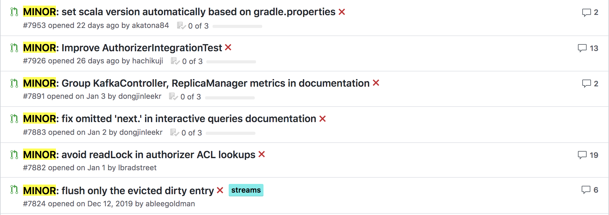
给社区贡献MINOR PR是不需要事先创建Jira ticket的，这也是这类PR的一个特点。
另一类PR就是普通PR了。要提交这类PR前，你必须保证要修复的问题在Jira中存在对应的ticket，并且最好确保Jira的Assignee是你自己。如果Assignee不是你自己，那说明社区中有其他人正在研究这个问题，你最好不要抢别人家的劳动果实。如果你知道了如何修复该问题，可以在对应的Jira ticket下留言礼貌地询问是否可以把这个ticket让你来修复。如果原Assignee同意了你的请求，你再提交自己的PR也不迟。
一旦提交了PR之后，你的代码会被社区开发者进行Code Review，并提出很多修改意见，你需要小心谨慎地对待这些Comment并处理它们。当Committer认为你的代码满足了要求之后，他们会留言LGTM的字样，表明Look Good To Me，然后通知你代码可以被合并到主干分支了。这个时候，你就正式成为了Apache Kafka的Contributor。
总结
今天，我给你介绍了参与Kafka社区的最佳实践。我希望在学完这节课之后，你可以根据这个教程一步一步地实现成为Kafka Contributor的目标，甚至是成为下一个社区Committer！当然，每个人自身的实际目标和期望不同，你也可以有针对性、有限度地参与到社区中，以满足你的实际需求。
最后，我还想跟你分享一个国人参与开源社区的建议：不要只和国内开发者进行对话，要多多和国外开发者进行交流合作。我发现，很多国内开发者只会去找Kafka社区中的华人帮忙解决问题，其实，社区中的国外开发人员也是非常友善和易于沟通的，我建议你也多和他们聊一聊，相信你会有更多不一样的收获。
课后讨论
你想参与Kafka社区甚至是开源社区的初衷，或者你过往参与开源社区的一些有趣经历，你觉得做这些事情最大的意义或价值是什么？
欢迎你在留言区畅所欲言，跟我交流讨论，也欢迎你把今天的内容分享给你的朋友。
特别放送（五） Kafka 社区的重磅功能：移除 ZooKeeper 依赖
你好，我是胡夕。今天，我们来聊聊Kafka社区的一个重磅功能：移除ZooKeeper依赖。
Kafka从诞生开始，就跟ZooKeeper紧紧地绑在了一起。可以这么说，没有ZooKeeper，就没有Kafka今天的成功。
但是，随着Kafka的不断完善和演进，社区逐渐发现，在ZooKeeper和Kafka结合使用的过程中，一些问题慢慢地显现了出来。比如说，ZooKeeper并不适合于频繁的写操作，但Kafka 0.8时代的消费者就是利用ZooKeeper来保存其位移信息的。因此，移除ZooKeeper并使用Kafka内部主题的方式保存位移，就从根本上规避了ZooKeeper的这个弊病。
摆脱ZooKeeper依赖的另一个好处在于，这能让Kafka变成一个独立的框架。这样，以后在使用Kafka时，就不需要再额外维护一套ZooKeeper集群了。显然，安装、运维和调优一套分布式集群的代价是很高的，能够去除这样的依赖当然是一件好事。
讲到这里，我猜你一定很想知道，社区究竟打算怎么移除ZooKeeper呢？别急，我带你一步步来看下社区的计划。
Clients演进
首先，我们来看两张图。这两张图总结了0.8.x版本和0.11.x版本（是否真的是从0.11版本开始的变化并不重要）及后续版本的功能变迁。

在Kafka 0.8时代，Kafka有3个Clients端，分别是：
- Producer，负责向Kafka写消息；
- Consumer，负责从Kafka读消息；
- Admin Tool，执行各种运维任务，比如创建或删除主题等。
其中，Consumer的位移数据保存在ZooKeeper上，因此，Consumer端的位移提交和位移获取操作都需要访问ZooKeeper。另外，Admin Tool执行运维操作也要访问ZooKeeper，比如在对应的ZooKeeper znode上创建一个临时节点，然后由预定义的Watch触发相应的处理逻辑。
后来，随着Kafka的演进，社区引入了位移主题（__consumer_offsets），同时定义了OffsetFetch和OffsetCommit等新的RPC协议。这样一来，Consumer的位移提交和位移获取操作与位移主题直接交互，从而避免了对ZooKeeper的访问。
除此之外，社区还引入了新的运维工具AdminClient以及相应的CreateTopics、DeleteTopics、AlterConfigs等RPC协议，替换了原先的Admin Tool。于是，创建和删除主题这样的运维操作也完全移动到Kafka这一端来做，就像上面的第二张图展示的那样。
到这里，Kafka的3个Clients端基本上都不需要和ZooKeeper交互了。应该说，移除ZooKeeper的工作完成了一大半，不过，依然还有一部分工作要在ZooKeeper的帮助下完成，那就是Consumer的Rebalance操作。
在0.8时代，Consumer Group的管理是交由ZooKeeper完成的，包括组成员的管理和订阅分区的分配。这个设计在新版的Consumer中也得到了修正——全部的Group管理操作交由Kafka Broker端新引入的Coordinator组件来完成。要完成这些工作，Broker端新增了很多RPC协议，比如JoinGroup、SyncGroup、Heartbeat、LeaveGroup等。
此时，Kafka的Java Clients端除了AdminClient还要依赖ZooKeeper之外，所有其他的组件全部摆脱了对ZooKeeper的依赖。
之后，社区引入了Kafka安全层，实现了对用户的认证和授权。这个额外的安全层也是不需要访问ZooKeeper的，因此，之前依赖ZooKeeper的Clients端是无法“享用”这个安全层的。一旦启用，新版Clients都需要首先接入这一层，而且要在通过审核之后才能访问到Broker，如下图所示：
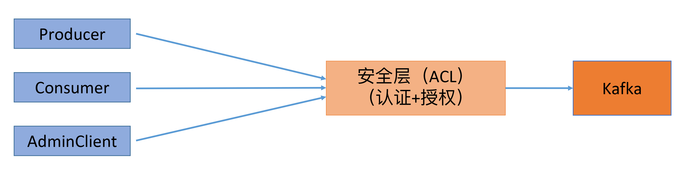
这么做的好处就是统一了Clients端访问Broker端的模式，即通过定义一套跨语言RPC协议栈，实现Clients端与Broker端的服务连接。这样一来，不同的语言开发者只需要按照这套规范开发自己语言的RPC协议，就能实现与Kafka Broker端的交互了。如果后面需要实现更多的功能，社区只需要定义新的RPC协议就行了。同时，新引入的安全层负责对这套RPC协议进行安全校验，统一了访问模式。另外，这些协议都是版本化的（versioned），能够独立地进行演进，同时也兼顾了兼容性方面的考量。
Broker间交互
说完了Clients端，我们说下Broker端的现状。目前，应该说Kafka Broker端对ZooKeeper是重度依赖的，主要表现在以下几个方面：
- Broker注册管理；
- ACL安全层配置管理；
- 动态参数管理；
- 副本ISR管理；
- Controller选举。
我们拿一张图来说明。

图中有4个Broker节点和1个ZooKeeper，左上角的Broker充当Controller的角色。当前，所有的Broker启动后都必须维持与ZooKeeper的会话。Kafka依赖于这个会话实现Broker端的注册。而且，Kafka集群中的所有配置信息、副本信息、主题信息也都保存在ZooKeeper上。最后，Controller与集群中的每个Broker都维持了一个TCP长连接，用于向这些Broker发送RPC请求。当前的Controller RPC类型主要有3大类：
- LeaderAndIsr：主要用于向集群广播主题分区Leader和ISR的变更情况，比如对应的Broker应该是特定分区的Leader还是Follower；
- StopReplica：向集群广播执行停止副本的命令；
- UpdateMetadata：向集群广播执行变更元数据信息的命令。
图中还新增了一个AlterISR RPC，这是KIP-497要实现的新RPC协议。现阶段，Kafka各个主题的ISR信息全部保存在ZooKeeper中。如果后续要舍弃ZooKeeper，就必须将这些信息从ZooKeeper中移出来，放在Controller端来做。同时，还要在程序层面支持对ISR的管理。因此，社区计划在KIP-497上增加AlterISR协议。对了，还要提一句，当前Controller的选举也是依靠ZooKeeper完成的。
所以，后面Broker端的演进可能和Clients端的路线差不多：首先是把Broker与ZooKeeper的交互全部干掉，只让Controller与ZooKeeper进行交互，而其他所有Broker都只与Controller交互，如下图所示：
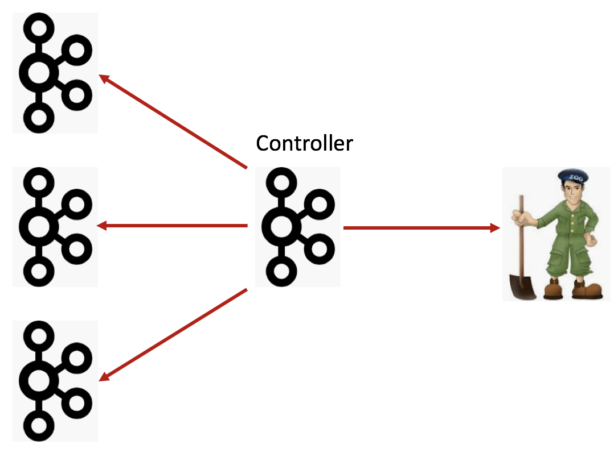
看上去，这种演进路线社区已经走得轻车熟路了，但实际上还有一些遗留问题，需要解决。
Broker Liveness
首先就是Broker的liveness问题，也就是，Kafka如何判断一个Broker到底是否存活？在目前的设计中，Broker的生存性监测完全依赖于与ZooKeeper之间的会话。一旦会话超时或断开，Controller自动触发ZooKeeper端的Watch来移除该Broker，并对它上面的分区做善后处理。如果移除了ZooKeeper，Kafka应该采用什么机制来判断Broker的生存性是一个问题。
Network Partition
如何防范网络分区（Network Partition）也是一个需要讨论的话题。当前可能出现的Network Partition有4种：
- 单个Broker完全与集群隔离；
- Broker间无法通讯；
- Broker与ZooKeeper无法通讯；
- Broker与Controller无法通讯。
下面4张图分别展示了这4种情况：
 -
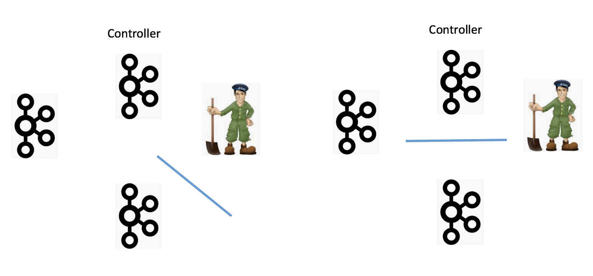
-
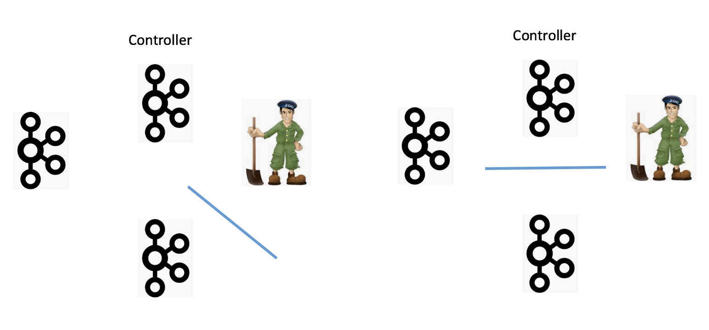
我们分别来讨论下。
情况一：单Broker与集群的其他Broker隔离，这其实并不算太严重的问题。当前的设计已经能够保证很好地应对这种情况了。一旦Broker被隔离，Controller会把它从集群中摘除，虽然可用性降低了，但是整个集群的一致性依然能够得到保证。
情况二：Broker间无法通讯，可能的后果是消息的备份机制无法执行，Kafka要收缩ISR，依然是可用性上的降低，但是一致性状态并没有被破坏。
情况三：Broker无法与ZooKeeper通讯。Broker能正常运转，它只是无法与ZooKeeper进行通讯。这个时候，我们说该Broker处于僵尸状态，即所谓的Zoobie状态。在社区的Jira中，因Zoobie状态引入的一致性Bug一直没有断过，社区这几年也一直在修正这方面的问题，主要对抗的机制就是fencing，比如Leader Epoch。
情况四：Broker无法与Controller通讯。在这种情况下，所有的元数据更新通道被堵死，即使这个Broker依然是healthy的，它保存的元数据信息也可能是非常过期的。这样的话，连接这个Broker的Clients端可能会看到各种非常古怪的问题。我之前回答过类似的问题，你可以点击链接看一下。
这种情况比较复杂，我就再多唠叨几句。实际上，针对这种情况，目前社区也没有太好的解决办法，主要的原因是，Broker的liveness完全是交由ZooKeeper来做的。一旦Broker与ZooKeeper之间的交互没有问题，其他原因导致的liveness问题就无法彻底规避。
第四类Network Partition引入了一个经典的场景：元数据不一致。目前，每个Broker都缓存了一份集群的元数据信息，这份数据是异步更新的。当第四类Partition发生的时候，Broker端缓存的元数据信息必然与Controller的不同步，这就会造成各种各样的问题。
下面，我简单介绍一下元数据更新的过程。主要流程就是，Controller启动时会同步从ZooKeeper上拉取集群全量的元数据信息，之后再以异步的方式同步给其他Broker。其他Broker与Controller之间的同步往往有一个时间差，也就是说，Clients访问的元数据可能并不是最新的。我个人认为，现在社区很多flaky test failure都是这个原因导致的。
事实上，在实际使用过程中，有很多场景是Broker端的元数据与Controller端永远不同步。通常情况下，如果我们不重启Broker的话，那么这个Broker上的元数据将永远“错误”下去。
好在社区还给出了一个最后的“大招”： 登录到ZooKeeper SHELL，手动执行rmr /controller，强迫Controller重选举，然后重新加载元数据，并给所有Broker重刷一份。不过，我怀疑，在实际生产环境中是否有人真的要这么干，毕竟这样做的代价不小，而且最关键的是，这么做依然可能存在两个问题：
- 我们如何确保Controller和Broker的数据是一致的？
- 加载元数据的过程通常很慢。
这里我详细说说第二点，即加载元数据的性能问题。
总体来说，加载元数据是一个O(N)时间复杂度的过程，这里的N就是你集群中总的分区数。考虑到Controller从ZooKeeper加载之后还要推给其他的Broker，那么做这件事的总的时间复杂度就是O(N * M)，其中M是集群中Broker的数量。可以想见，当M和N都很大时，在集群中广播元数据不是一个很快的过程。
考虑到刚刚我们提到的所有问题，当Kafka抛弃了ZooKeeper之后，社区如何解决它们呢？总体的思路就是Metadata as an Event Log + Controller quorum。我们先说metadata as an event log。
Metadata as an Event Log
如果你读过Jay Kreps的《I ❤️ Logs》，你应该有感触，整个Kafka的架构其实都是构建在Log上的。每个Topic的分区本质上就是一个Commit Log，但元数据信息的保存却不是Log形式。在现有的架构设计中，你基本上可以认为元数据的数据结构是KV形式的。这一次，社区采用了与消息相同的数据保存方式，也就是将元数据作为Log的方式保存起来，如下表所示：
利用Kafka自身的Log机制保存元数据的做法，有以下4个优点：
- 高可用性：每次元数据的变更都被当作是一条消息保存在Log中，而这个Log可以被视为一个普通的Kafka主题被备份到多台Broker上。
- 顺序性：Log的一个好处在于它有清晰的前后顺序关系，即每个事件发生的时间是可以排序的，配合以恰当的处理逻辑，我们就能保证，对元数据变更的处理是按照变更发生的时间进行顺序处理的，不出现乱序的情形。
- 增量同步性：利用Log机制之后，Broker间同步元数据能够采用同步增量数据（delta）的方式，无需每次都同步全量数据。目前，Kafka Broker间同步元数据都是全量状态同步的。前面说过了，当集群分区数很大时，这个开销是很可观的。如果我们能够只同步增量状态，势必能极大地降低同步成本。
- 可监控性：Log提供了丰富的监控指标。我们根据这些指标能够轻易地获取到元数据同步的进度。
采用Log机制后，其他Broker像是一个普通的Consumer，从Controller拉取元数据变更消息或事件。由于每个Broker都是一个Consumer，所以它们会维护自己的消费位移，如下图所示：

在这种设计下，Controller所在的Broker必须要承担起所有元数据Topic的管理工作，包括创建Topic、管理Topic分区的Leader以及为每个元数据变更创建相应的事件等。既然社区选择和__consumer_offsets类似的处理方式，一个很自然的问题就是，这个元数据Topic的管理是否能够复用Kafka现有的副本机制？答案是：不可行。理由是现有的副本机制依赖于Controller，因此，Kafka没法依靠现有的副本机制来实现Controller。按照我们的俗语来说，这有点“鸡生蛋、蛋生鸡“的问题，属于典型的循环依赖。
为了实现这个，Kafka需要一套Leader选举协议，而这套协议或算法是不依赖于Controller的，即它是一个自管理的集群quorum（抱歉，在分布式领域内，特别是分布式共识算法领域中，针对quorum的恰当翻译我目前还未找到，因此直接使用quorum原词了）。最终，社区决定采用Raft来实现这组quorum。这就是上面我们提到的第二个解决思路：Controller quorum。
Controller Quorum
与借助Controller帮忙选择Leader不同，Raft是让自己的节点自行选择Leader，并最终令所有节点达成共识。对选择Controller而言，这是一个很好的特性。其实，Kafka现有的备份机制已经跟Raft很接近了。你可以看一下下面这张表格，简单对它们进行下对比。

一眼扫过去，你会发现，其实Kafka的备份机制和Raft很类似，比如，Kafka中的offset其实就是Raft中的index，epoch对应于term。当然，Raft中采用半数机制来确保消息被提交以及Leader选举，而Kafka设计了ISR机制来实现这两点。总体来说，社区认为只需要对备份机制做一些小改动，应该就可以很容易地切换到Raft-based算法了。
下面这张图展示的Controller quorum可能更加直观：

整个Controller quorum类似于一个小的集群。和ZooKeeper类似，这个quorum通常是3台或5台机器，不需要让Kafka中的每个Broker都自动成为这个quorum中的一个节点。
该quorum里面有一个Leader负责处理Clients端发来的读写请求，这个Leader就是Kafka中的active Controller。根据ZooKeeper的Zab协议，Leader处理所有的写请求，而Follower是可以处理读请求的。当写请求发送给Follower后，Follower会将该请求转发给Leader处理。
不过，我猜Kafka应该不会这样实现，它应该只会让Leader（即active Controller）处理所有的读写请求，而Clients端（也就是其他Broker）压根就不会发送读写请求给Follower。在这一点上，这种设计和现有的Kafka请求处理机制是一致的。
现在还需要解决一个问题，即Leader是怎么被选出来的？既然是Raft-based，那么采用的也是Raft算法中的Leader选举策略。让Raft选出的Leader称为active Controller。网上有很多关于Raft选主的文章，我就不再赘述了，有兴趣的可以读一读Raft的论文：In Search of an Understandable Consensus Algorithm(Extended Version)。
这套Raft quorum有2个好处。
第一个好处就是，它天然提供了低延时的Failover，因此，Leader的切换会非常得迅速和及时，因为理论上不再有元数据加载的过程了，所有的元数据现在都同步保存Follower节点的内存中，它已经有其他Broker需要拉取的所有元数据信息了！
更酷的是，它避免了现在机制中一旦Controller切换，就要全量拉取元数据的低效行为，Broker不需要重新拉取之前已经“消费”的元数据变更消息，只需要从新Leader继续“消费”即可。
另一个好处在于，采用了这套机制后，Kafka可以做元数据的缓存了（metadata caching），即Broker能够把元数据保存在磁盘上。同时，就像刚才说的，Broker只需读取它关心的那部分数据即可。另外，和现在的snapshot机制类似，如果一个Broker保存的元数据落后Controller太多，或者是一个全新的Broker，Kafka甚至可以像Raft那样直接发送一个snapshot文件，快速令其追上进度。当然，在大多数情况下，Broker只需要拉取delta增量数据就行了。
总结
基于以上的这些解决方案，社区打算分三步来完成对ZooKeeper的依赖：
- 第一步：移除Clients端对ZooKeeper的依赖。这一步基本上已经完成了，除了目前AdminClient还有少量的API依赖ZooKeeper之外，其他Clients端应该说都不需要访问ZooKeeper了。
- 第二步：移除Broker端的ZooKeeper依赖。这主要包括移除Broker端需要访问ZooKeeper的代码，以及增加新的Broker端API，比如前面说的AlterISR等，最后是将对ZooKeeper的访问全部集中在controller端。
- 最后一步：实现controller quorum，也就是实现Raft-based的quorum负责controller的选举。
应该说，移除ZooKeeper的功能算是近几年社区最为重磅的提案了。这个提案涉及组件之广、历时之长、复杂程度之高在社区中非常罕见。一旦后续完整地实现了这个功能，Apache Kafka将极大地提升自己的可维护性，以一个更加“清爽”的形象出现在我们面前。至于最后的效果如何，就让我们拭目以待吧。
课后讨论
我在前面提到，社区打算自己写一套Raft-based的算法来实现Controller的选举，你觉得，为什么社区不直接采用第三方成熟的Raft库来实现呢？
欢迎你在留言区畅所欲言，跟我交流讨论，也欢迎你把今天的内容分享给你的朋友。
特别放送（四）20道经典的Kafka面试题详解
你好，我是胡夕。这一期的“特别放送”，我想跟你分享一些常见的Kafka面试题。
无论是作为面试官，还是应聘者，我都接触过很多Kafka面试题。有的题目侧重于基础的概念考核，有的关注实际场景下的解决方案，有的属于“炫技式”，有的可算是深入思考后的“灵魂拷问”。“炫技”类的问题属于冷门的Kafka组件知识考核，而“灵魂拷问”类的问题大多是对Kafka设计原理的深入思考，有很高的技术难度。
每类题目的应对方法其实不太一样。今天，我就按照这4种类别，具体讲解20道面试题。不过，我不打算只给出答案，我会把面试题的考核初衷也一并写出来。同时，我还会给你分享一些面试小技巧，希望能够帮你更顺利地获取心仪的offer。
那么，话不多说，我们现在开始吧。
基础题目
1. Apache Kafka是什么？
这是一道很常见的题目，看似很无聊，其实考核的知识点很多。
首先，它考验的是，你对Kafka的定位认知是否准确。Apache Kafka一路发展到现在，已经由最初的分布式提交日志系统逐渐演变成了实时流处理框架。因此，这道题你最好这么回答：Apach Kafka是一款分布式流处理框架，用于实时构建流处理应用。它有一个核心的功能广为人知，即作为企业级的消息引擎被广泛使用。
其实，这里暗含了一个小技巧。Kafka被定位为实时流处理框架，在国内的接受度还不是很高，因此，在回答这道题的时候，你一定要先明确它的流处理框架地位，这样能给面试官留下一个很专业的印象。
2. 什么是消费者组？
从某种程度上说，这可是个“送命题”。消费者组是Kafka独有的概念，如果面试官问这个，就说明他对此是有一定了解的。我先给出标准答案：关于它的定义，官网上的介绍言简意赅，即消费者组是Kafka提供的可扩展且具有容错性的消费者机制。切记，一定要加上前面那句，以显示你对官网很熟悉。
另外，你最好再解释下消费者组的原理：在Kafka中，消费者组是一个由多个消费者实例构成的组。多个实例共同订阅若干个主题，实现共同消费。同一个组下的每个实例都配置有相同的组ID，被分配不同的订阅分区。当某个实例挂掉的时候，其他实例会自动地承担起它负责消费的分区。
此时，又有一个小技巧给到你：消费者组的题目，能够帮你在某种程度上掌控下面的面试方向。
- 如果你擅长位移值原理，就不妨再提一下消费者组的位移提交机制；
- 如果你擅长Kafka Broker，可以提一下消费者组与Broker之间的交互；
- 如果你擅长与消费者组完全不相关的Producer，那么就可以这么说：“消费者组要消费的数据完全来自于Producer端生产的消息，我对Producer还是比较熟悉的。”
使用这个策略的话，面试官可能会被你的话术所影响，偏离他之前想问的知识路径。当然了，如果你什么都不擅长，那就继续往下看题目吧。
3. 在Kafka中，ZooKeeper的作用是什么？
这是一道能够帮助你脱颖而出的题目。碰到这个题目，请在心中暗笑三声。
先说标准答案：目前，Kafka使用ZooKeeper存放集群元数据、成员管理、Controller选举，以及其他一些管理类任务。之后，等KIP-500提案完成后，Kafka将完全不再依赖于ZooKeeper。
记住，一定要突出“目前”，以彰显你非常了解社区的演进计划。“存放元数据”是指主题分区的所有数据都保存在ZooKeeper中，且以它保存的数据为权威，其他“人”都要与它保持对齐。“成员管理”是指Broker节点的注册、注销以及属性变更，等等。“Controller选举”是指选举集群Controller，而其他管理类任务包括但不限于主题删除、参数配置等。
不过，抛出KIP-500也可能是个双刃剑。碰到非常资深的面试官，他可能会进一步追问你KIP-500是做的。一言以蔽之：KIP-500思想，是使用社区自研的基于Raft的共识算法，替代ZooKeeper，实现Controller自选举。你可能会担心，如果他继续追问的话，该怎么办呢？别怕，在下一期“特别发送”，我会专门讨论这件事。
4. 解释下Kafka中位移（offset）的作用
这也是一道常见的面试题。位移概念本身并不复杂，你可以这么回答：在Kafka中，每个主题分区下的每条消息都被赋予了一个唯一的ID数值，用于标识它在分区中的位置。这个ID数值，就被称为位移，或者叫偏移量。一旦消息被写入到分区日志，它的位移值将不能被修改。
答完这些之后，你还可以把整个面试方向转移到你希望的地方。常见方法有以下3种：
- 如果你深谙Broker底层日志写入的逻辑，可以强调下消息在日志中的存放格式；
- 如果你明白位移值一旦被确定不能修改，可以强调下“Log Cleaner组件都不能影响位移值”这件事情；
- 如果你对消费者的概念还算熟悉，可以再详细说说位移值和消费者位移值之间的区别。
5. 阐述下Kafka中的领导者副本（Leader Replica）和追随者副本（Follower Replica）的区别
这道题表面上是考核你对Leader和Follower区别的理解，但很容易引申到Kafka的同步机制上。因此，我建议你主动出击，一次性地把隐含的考点也答出来，也许能够暂时把面试官“唬住”，并体现你的专业性。
你可以这么回答：Kafka副本当前分为领导者副本和追随者副本。只有Leader副本才能对外提供读写服务，响应Clients端的请求。Follower副本只是采用拉（PULL）的方式，被动地同步Leader副本中的数据，并且在Leader副本所在的Broker宕机后，随时准备应聘Leader副本。
通常来说，回答到这个程度，其实才只说了60%，因此，我建议你再回答两个额外的加分项。
- 强调Follower副本也能对外提供读服务。自Kafka 2.4版本开始，社区通过引入新的Broker端参数，允许Follower副本有限度地提供读服务。
- 强调Leader和Follower的消息序列在实际场景中不一致。很多原因都可能造成Leader和Follower保存的消息序列不一致，比如程序Bug、网络问题等。这是很严重的错误，必须要完全规避。你可以补充下，之前确保一致性的主要手段是高水位机制，但高水位值无法保证Leader连续变更场景下的数据一致性，因此，社区引入了Leader Epoch机制，来修复高水位值的弊端。关于“Leader Epoch机制”，国内的资料不是很多，它的普及度远不如高水位，不妨大胆地把这个概念秀出来，力求惊艳一把。上一季专栏的[第27节课]讲的就是Leader Epoch机制的原理，推荐你赶紧去学习下。
实操题目
6. 如何设置Kafka能接收的最大消息的大小？
这道题除了要回答消费者端的参数设置之外，一定要加上Broker端的设置，这样才算完整。毕竟，如果Producer都不能向Broker端发送数据很大的消息，又何来消费一说呢？因此，你需要同时设置Broker端参数和Consumer端参数。
- Broker端参数：message.max.bytes、max.message.bytes（主题级别）和replica.fetch.max.bytes。
- Consumer端参数：fetch.message.max.bytes。
Broker端的最后一个参数比较容易遗漏。我们必须调整Follower副本能够接收的最大消息的大小，否则，副本同步就会失败。因此，把这个答出来的话，就是一个加分项。
7. 监控Kafka的框架都有哪些？
其实，目前业界并没有公认的解决方案，各家都有各自的监控之道。所以，面试官其实是在考察你对监控框架的了解广度，或者说，你是否知道很多能监控Kafka的框架或方法。下面这些就是Kafka发展历程上比较有名气的监控系统。
- Kafka Manager：应该算是最有名的专属Kafka监控框架了，是独立的监控系统。
- Kafka Monitor：LinkedIn开源的免费框架，支持对集群进行系统测试，并实时监控测试结果。
- CruiseControl：也是LinkedIn公司开源的监控框架，用于实时监测资源使用率，以及提供常用运维操作等。无UI界面，只提供REST API。
- JMX监控：由于Kafka提供的监控指标都是基于JMX的，因此，市面上任何能够集成JMX的框架都可以使用，比如Zabbix和Prometheus。
- 已有大数据平台自己的监控体系：像Cloudera提供的CDH这类大数据平台，天然就提供Kafka监控方案。
- JMXTool：社区提供的命令行工具，能够实时监控JMX指标。答上这一条，属于绝对的加分项，因为知道的人很少，而且会给人一种你对Kafka工具非常熟悉的感觉。如果你暂时不了解它的用法，可以在命令行以无参数方式执行一下
kafka-run-class.sh kafka.tools.JmxTool，学习下它的用法。
8. Broker的Heap Size如何设置？
如何设置Heap Size的问题，其实和Kafka关系不大，它是一类非常通用的面试题目。一旦你应对不当，面试方向很有可能被引到JVM和GC上去，那样的话，你被问住的几率就会增大。因此，我建议你简单地介绍一下Heap Size的设置方法，并把重点放在Kafka Broker堆大小设置的最佳实践上。
比如，你可以这样回复：任何Java进程JVM堆大小的设置都需要仔细地进行考量和测试。一个常见的做法是，以默认的初始JVM堆大小运行程序，当系统达到稳定状态后，手动触发一次Full GC，然后通过JVM工具查看GC后的存活对象大小。之后，将堆大小设置成存活对象总大小的1.5~2倍。对于Kafka而言，这个方法也是适用的。不过，业界有个最佳实践，那就是将Broker的Heap Size固定为6GB。经过很多公司的验证，这个大小是足够且良好的。
9. 如何估算Kafka集群的机器数量？
这道题目考查的是机器数量和所用资源之间的关联关系。所谓资源，也就是CPU、内存、磁盘和带宽。
通常来说，CPU和内存资源的充足是比较容易保证的，因此，你需要从磁盘空间和带宽占用两个维度去评估机器数量。
在预估磁盘的占用时，你一定不要忘记计算副本同步的开销。如果一条消息占用1KB的磁盘空间，那么，在有3个副本的主题中，你就需要3KB的总空间来保存这条消息。显式地将这些考虑因素答出来，能够彰显你考虑问题的全面性，是一个难得的加分项。
对于评估带宽来说，常见的带宽有1Gbps和10Gbps，但你要切记，这两个数字仅仅是最大值。因此，你最好和面试官确认一下给定的带宽是多少。然后，明确阐述出当带宽占用接近总带宽的90%时，丢包情形就会发生。这样能显示出你的网络基本功。
10. Leader总是-1，怎么破？
在生产环境中，你一定碰到过“某个主题分区不能工作了”的情形。使用命令行查看状态的话，会发现Leader是-1，于是，你使用各种命令都无济于事，最后只能用“重启大法”。
但是，有没有什么办法，可以不重启集群，就能解决此事呢？这就是此题的由来。
我直接给答案：删除ZooKeeper节点/controller，触发Controller重选举。Controller重选举能够为所有主题分区重刷分区状态，可以有效解决因不一致导致的Leader不可用问题。我几乎可以断定，当面试官问出此题时，要么就是他真的不知道怎么解决在向你寻求答案，要么他就是在等你说出这个答案。所以，千万别一上来就说“来个重启”之类的话。
炫技式题目
11. LEO、LSO、AR、ISR、HW都表示什么含义？
在我看来，这纯属无聊的炫技。试问我不知道又能怎样呢？！不过既然问到了，我们就统一说一说。
- LEO：Log End Offset。日志末端位移值或末端偏移量，表示日志下一条待插入消息的位移值。举个例子，如果日志有10条消息，位移值从0开始，那么，第10条消息的位移值就是9。此时，LEO = 10。
- LSO：Log Stable Offset。这是Kafka事务的概念。如果你没有使用到事务，那么这个值不存在（其实也不是不存在，只是设置成一个无意义的值）。该值控制了事务型消费者能够看到的消息范围。它经常与Log Start Offset，即日志起始位移值相混淆，因为有些人将后者缩写成LSO，这是不对的。在Kafka中，LSO就是指代Log Stable Offset。
- AR：Assigned Replicas。AR是主题被创建后，分区创建时被分配的副本集合，副本个数由副本因子决定。
- ISR：In-Sync Replicas。Kafka中特别重要的概念，指代的是AR中那些与Leader保持同步的副本集合。在AR中的副本可能不在ISR中，但Leader副本天然就包含在ISR中。关于ISR，还有一个常见的面试题目是如何判断副本是否应该属于ISR。目前的判断依据是：Follower副本的LEO落后Leader LEO的时间，是否超过了Broker端参数replica.lag.time.max.ms值。如果超过了，副本就会被从ISR中移除。
- HW：高水位值（High watermark）。这是控制消费者可读取消息范围的重要字段。一个普通消费者只能“看到”Leader副本上介于Log Start Offset和HW（不含）之间的所有消息。水位以上的消息是对消费者不可见的。关于HW，问法有很多，我能想到的最高级的问法，就是让你完整地梳理下Follower副本拉取Leader副本、执行同步机制的详细步骤。这就是我们的第20道题的题目，一会儿我会给出答案和解析。
12. Kafka能手动删除消息吗？
其实，Kafka不需要用户手动删除消息。它本身提供了留存策略，能够自动删除过期消息。当然，它是支持手动删除消息的。因此，你最好从这两个维度去回答。
- 对于设置了Key且参数cleanup.policy=compact的主题而言，我们可以构造一条
的消息发送给Broker，依靠Log Cleaner组件提供的功能删除掉该Key的消息。 - 对于普通主题而言，我们可以使用kafka-delete-records命令，或编写程序调用Admin.deleteRecords方法来删除消息。这两种方法殊途同归，底层都是调用Admin的deleteRecords方法，通过将分区Log Start Offset值抬高的方式间接删除消息。
13. __consumer_offsets是做什么用的？
这是一个内部主题，公开的官网资料很少涉及到。因此，我认为，此题属于面试官炫技一类的题目。你要小心这里的考点：该主题有3个重要的知识点，你一定要全部答出来，才会显得对这块知识非常熟悉。
- 它是一个内部主题，无需手动干预，由Kafka自行管理。当然，我们可以创建该主题。
- 它的主要作用是负责注册消费者以及保存位移值。可能你对保存位移值的功能很熟悉，但其实该主题也是保存消费者元数据的地方。千万记得把这一点也回答上。另外，这里的消费者泛指消费者组和独立消费者，而不仅仅是消费者组。
- Kafka的GroupCoordinator组件提供对该主题完整的管理功能，包括该主题的创建、写入、读取和Leader维护等。
14. 分区Leader选举策略有几种？
分区的Leader副本选举对用户是完全透明的，它是由Controller独立完成的。你需要回答的是，在哪些场景下，需要执行分区Leader选举。每一种场景对应于一种选举策略。当前，Kafka有4种分区Leader选举策略。
- OfflinePartition Leader选举：每当有分区上线时，就需要执行Leader选举。所谓的分区上线，可能是创建了新分区，也可能是之前的下线分区重新上线。这是最常见的分区Leader选举场景。
- ReassignPartition Leader选举：当你手动运行kafka-reassign-partitions命令，或者是调用Admin的alterPartitionReassignments方法执行分区副本重分配时，可能触发此类选举。假设原来的AR是[1，2，3]，Leader是1，当执行副本重分配后，副本集合AR被设置成[4，5，6]，显然，Leader必须要变更，此时会发生Reassign Partition Leader选举。
- PreferredReplicaPartition Leader选举：当你手动运行kafka-preferred-replica-election命令，或自动触发了Preferred Leader选举时，该类策略被激活。所谓的Preferred Leader，指的是AR中的第一个副本。比如AR是[3，2，1]，那么，Preferred Leader就是3。
- ControlledShutdownPartition Leader选举：当Broker正常关闭时，该Broker上的所有Leader副本都会下线，因此，需要为受影响的分区执行相应的Leader选举。
这4类选举策略的大致思想是类似的，即从AR中挑选首个在ISR中的副本，作为新Leader。当然，个别策略有些微小差异。不过，回答到这种程度，应该足以应付面试官了。毕竟，微小差别对选举Leader这件事的影响很小。
15. Kafka的哪些场景中使用了零拷贝（Zero Copy）？
Zero Copy是特别容易被问到的高阶题目。在Kafka中，体现Zero Copy使用场景的地方有两处：基于mmap的索引和日志文件读写所用的TransportLayer。
先说第一个。索引都是基于MappedByteBuffer的，也就是让用户态和内核态共享内核态的数据缓冲区，此时，数据不需要复制到用户态空间。不过，mmap虽然避免了不必要的拷贝，但不一定就能保证很高的性能。在不同的操作系统下，mmap的创建和销毁成本可能是不一样的。很高的创建和销毁开销会抵消Zero Copy带来的性能优势。由于这种不确定性，在Kafka中，只有索引应用了mmap，最核心的日志并未使用mmap机制。
再说第二个。TransportLayer是Kafka传输层的接口。它的某个实现类使用了FileChannel的transferTo方法。该方法底层使用sendfile实现了Zero Copy。对Kafka而言，如果I/O通道使用普通的PLAINTEXT，那么，Kafka就可以利用Zero Copy特性，直接将页缓存中的数据发送到网卡的Buffer中，避免中间的多次拷贝。相反，如果I/O通道启用了SSL，那么，Kafka便无法利用Zero Copy特性了。
深度思考题
16. Kafka为什么不支持读写分离？
这道题目考察的是你对Leader/Follower模型的思考。
Leader/Follower模型并没有规定Follower副本不可以对外提供读服务。很多框架都是允许这么做的，只是Kafka最初为了避免不一致性的问题，而采用了让Leader统一提供服务的方式。
不过，在开始回答这道题时，你可以率先亮出观点：自Kafka 2.4之后，Kafka提供了有限度的读写分离，也就是说，Follower副本能够对外提供读服务。
说完这些之后，你可以再给出之前的版本不支持读写分离的理由。
- 场景不适用。读写分离适用于那种读负载很大，而写操作相对不频繁的场景，可Kafka不属于这样的场景。
- 同步机制。Kafka采用PULL方式实现Follower的同步，因此，Follower与Leader存在不一致性窗口。如果允许读Follower副本，就势必要处理消息滞后（Lagging）的问题。
17. 如何调优Kafka？
回答任何调优问题的第一步，就是确定优化目标，并且定量给出目标！这点特别重要。对于Kafka而言，常见的优化目标是吞吐量、延时、持久性和可用性。每一个方向的优化思路都是不同的，甚至是相反的。
确定了目标之后，还要明确优化的维度。有些调优属于通用的优化思路，比如对操作系统、JVM等的优化；有些则是有针对性的，比如要优化Kafka的TPS。我们需要从3个方向去考虑。
- Producer端：增加batch.size、linger.ms，启用压缩，关闭重试等。
- Broker端：增加num.replica.fetchers，提升Follower同步TPS，避免Broker Full GC等。
- Consumer：增加fetch.min.bytes等
18. Controller发生网络分区（Network Partitioning）时，Kafka会怎么样？
这道题目能够诱发我们对分布式系统设计、CAP理论、一致性等多方面的思考。不过，针对故障定位和分析的这类问题，我建议你首先言明“实用至上”的观点，即不论怎么进行理论分析，永远都要以实际结果为准。一旦发生Controller网络分区，那么，第一要务就是查看集群是否出现“脑裂”，即同时出现两个甚至是多个Controller组件。这可以根据Broker端监控指标ActiveControllerCount来判断。
现在，我们分析下，一旦出现这种情况，Kafka会怎么样。
由于Controller会给Broker发送3类请求，即LeaderAndIsrRequest、StopReplicaRequest和UpdateMetadataRequest，因此，一旦出现网络分区，这些请求将不能顺利到达Broker端。这将影响主题的创建、修改、删除操作的信息同步，表现为集群仿佛僵住了一样，无法感知到后面的所有操作。因此，网络分区通常都是非常严重的问题，要赶快修复。
19. Java Consumer为什么采用单线程来获取消息？
在回答之前，如果先把这句话说出来，一定会加分：Java Consumer是双线程的设计。一个线程是用户主线程，负责获取消息；另一个线程是心跳线程，负责向Kafka汇报消费者存活情况。将心跳单独放入专属的线程，能够有效地规避因消息处理速度慢而被视为下线的“假死”情况。
单线程获取消息的设计能够避免阻塞式的消息获取方式。单线程轮询方式容易实现异步非阻塞式，这样便于将消费者扩展成支持实时流处理的操作算子。因为很多实时流处理操作算子都不能是阻塞式的。另外一个可能的好处是，可以简化代码的开发。多线程交互的代码是非常容易出错的。
20. 简述Follower副本消息同步的完整流程
首先，Follower发送FETCH请求给Leader。接着，Leader会读取底层日志文件中的消息数据，再更新它内存中的Follower副本的LEO值，更新为FETCH请求中的fetchOffset值。最后，尝试更新分区高水位值。Follower接收到FETCH响应之后，会把消息写入到底层日志，接着更新LEO和HW值。
Leader和Follower的HW值更新时机是不同的，Follower的HW更新永远落后于Leader的HW。这种时间上的错配是造成各种不一致的原因。
好了，今天的面试题分享就先到这里啦。你有遇到过什么经典的面试题吗？或者是有什么好的面试经验吗？
欢迎你在留言区分享。如果你觉得今天的内容对你有所帮助，也欢迎分享给你的朋友。
结束语 源码学习，我们才刚上路呢
你好，我是胡夕。《Kafka核心源码解读》课到今天就告一段落了，又到了和你说再见的时候。
当初接下这个任务时，我记得小编和我说，咱们这个课程将会是极客时间的第一个源码类的专栏课，我顿时觉得既自豪又忐忑。
自豪的是，我能够作为首个源码专栏课作者，给你分享Kafka源码的学习心得；忐忑的是，源码并不好讲，如果讲解的粒度太粗，就会流于表面，不够深入，而粒度太细的话，就很容易陷入流水账似的代码走读，这其中的度，需要仔细拿捏才行。
不过，我依然还是愿意试一试。
因为我始终觉得，现在的编程教育对于阅读源码的重视程度远远不足。一直以来，学校或各类培训机构只看重编程技能的灌输，而忽略了带领大家一同学习业界流行框架的源码编写方法，但这恰恰是非常关键的。如果你没有阅读过大量质量上乘的代码，那么，你就不可能写出优秀的代码。
就像美国作家斯蒂芬·金所说：“If you don’t have time to read, you don’t have the time (or the tools) to write. Simple as that.” 虽然这句话是关于写作的，但是对于我们写代码来说，同样也是适用的。学习比自己更有经验的人写出的源码，一定会直接或间接地影响你自己的编码水平。
我曾在[开篇词]中提到过阅读源码的3个好处，但实际上，对于一个每天都要写代码的程序员来说，我们阅读源码的最大目的，就是能够写出更好的代码。这么多年阅读Kafka源码的经历，让我对此深有体会，因此，我很想把我的阅读经验整理出来，分享给你，尽可能帮你更加科学高效地阅读源码，从而写出更好的代码。
从2019年12月开始筹备这门课，到今天交付完成，共经历了近八个月的时间，我精心挑选并讲解了Kafka Broker端主要组件的核心源码。我个人觉得，总体上还是成功的。有很多模块的源码分析，我自己在写的时候都收获良多。因此，我在想，如果你认真地学完了前面的内容，应该也是有些收获的。
当然，无论你眼下掌握了多少，这些在过去更新的知识就停留在过去了，等着你时时去翻阅，去消化，去借助它们解决现在以及未来的问题。此刻，我们就要暂时跟它们说再见了，我想再和你聊一聊未来的事情，未来学习源码的事情。
课程结束后，你应该如何继续你的Kafka源码阅读计划呢？我根据自己的经验，再给你分享一些建议。
首先，我建议你研读一下Kafka Clients端的代码。
你可能会问，难道不是应该先阅读Broker端其他组件的代码吗，为什么要读Clients端的代码？实际上，Clients工程包含的已经不仅仅是客户端的源码了，它还包含了各类支撑服务器端组件的基础代码，比如通信通道、消息集合，等等。了解它们的实现，可以补齐你对Kafka代码框架的整体认知。通读并搞懂Clients和Core工程下的代码，是精通Kafka实现原理的必要步骤。
其次，把课程中涉及到组件的测试用例代码学习一遍，最好是打上断点，边运行边Debug。很多时候，光看组件实现源码，还是会很难理解它真正运行起来是什么样的，而测试用例就能够很好地带领我们一探究竟。
我举个真实的例子。当初，我自己学习Log Cleaner源码时，就非常吃力。我把LogCleaner类看了很多遍，却始终不得要领。后来，我突然想到，不是有个LogCleanerTest吗？于是，我就翻开里面的各种test×××方法，挨个儿琢磨，终于明白了这个组件实际的工作原理。因此，我想特别提醒你一句，千万不要忽视测试用例代码的威力。
最后，你一定要读一读Log Cleaner组件的代码。
它主要用于完成带Key消息的日志清理，在其他场合的出镜机会不多，所以我并没有专门在课程里讲它，但是，它其实也是Broker端非常重要的组件。
我们熟知的位移主题，就是依靠这个机制，定期删除过期位移消息和过期注册消息的。事实上，清除过期数据或重复数据，是任何一个数据存储系统都要解决的关键课题。这个组件的代码量不多，你可以在很短的时间内掌握它。
Okay，现在阅读的方向有了，但你依然可能会遇到一个难题，那就是，看不懂怎么办？
虽然我给出了一些源码阅读方法，但是，毕竟，理解别人写的代码是一件很有挑战的事情，因此，我的答案是：“别着急！”
刚开始时，你可能压根不知道某个方法或类的代码是做什么的，这是非常正常的现象。这个时候，你要做的，就是初步了解一下代码结构和轮廓，知道有哪些类，类中定义了哪些API。这就像学习写作一样，努力搞懂一些知识范畴之外的代码，就可以扩大你的代码功力的外延。如果一直徜徉在简单、枯燥、易理解的代码海洋中，就很难真正地有所进步。
同时，你也不要幻想，代码只读一遍就可以了！阅读源码这件事，一定要重复很多次之后，才会有“质”的变化。
不知道你是否听说过“洋葱源码阅读法”，它指的是，我们读源码，就要像剥洋葱一样，第一遍的阅读仅仅是获取整体项目结构和概要，接下来的多遍阅读，才会逐步揭开代码的本质。切记：每次只剥一层。
除此之外，如果说我还有什么私藏的方法，那就是亲自动手去修改源码。
实际上，只有你对阅读的代码进行了一些改进或变更，才能真正地体会到阅读源码的快乐。因此，在阅读Kafka或其他框架的源码时，你不妨亲自动手改一改代码，做一些实验Debug一下，去体会一下你所做的改动给Kafka带来的变化。相信我，你会爱上这个过程的。
最后，我还想说的一点是，不要恐惧。阻碍很多人阅读源码的第一大原因就是恐惧。一想到有那么多行代码要读，就本能地竖起了放弃的大旗。其实，再宏大的框架，也是一行行代码堆砌起来的。我一直秉承着一句七字箴言：你敢写我就敢读！现在我把它送给你，希望在你想要放弃的时候，把它拿出来，鼓励一下自己。
好了，这一季的课程就到这里结束吧。今天没有太多华丽的表达，全部都是一些朴实的建议。其实，所有的一切，我其实都只是想说，源码学习，我们才刚刚上路。
阅读源码仿佛一场漫长的登山之旅，半山腰很挤，我们山顶上见。
我给你准备了一份结课问卷，希望你能在问卷里聊一聊你对这门课的看法。欢迎你点击下面的图片，用1～2分钟时间填写问卷，期待你畅所欲言。
 ](
](